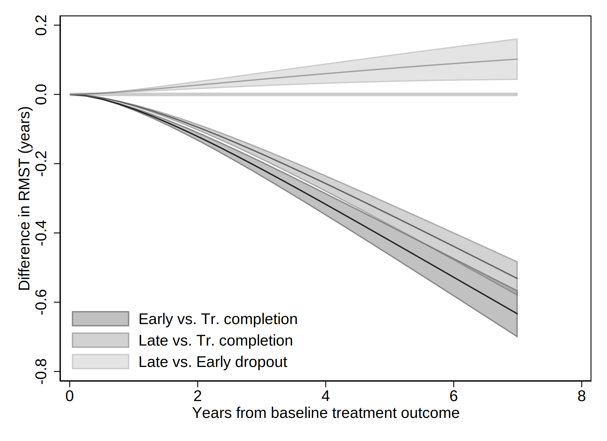
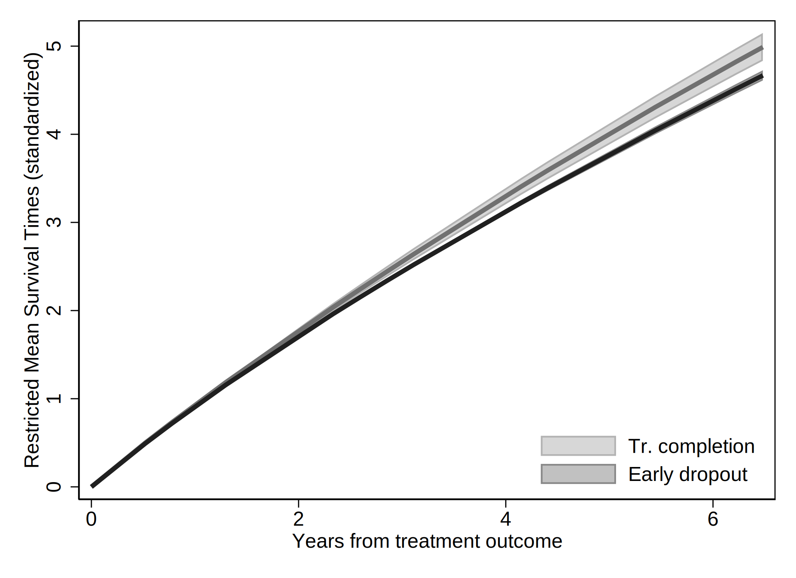

. clear all
. cap noi which tabout
c:\ado\plus\t\tabout.ado
*! 2.0.8 Ian Watson 15mar2019
*! tabout version 3 (beta) available at: http://tabout.net.au
. if _rc==111 {
. cap noi ssc install tabout
. }
. cap noi which pathutil
c:\ado\plus\p\pathutil.ado
*! version 2.2.0 19nov2020 daniel klein
. if _rc==111 {
. cap noi net install pathutil, from("http://fmwww.bc.edu/repec/bocode/p/")
. }
. cap noi which pathutil
c:\ado\plus\p\pathutil.ado
*! version 2.2.0 19nov2020 daniel klein
. if _rc==111 {
. ssc install dirtools
. }
. cap noi which project
c:\ado\plus\p\project.ado
*! version 1.3.1 22dec2013 picard@netbox.com
. if _rc==111 {
. ssc install project
. }
. cap noi which stipw
c:\ado\plus\s\stipw.ado
*! Version 1.0.0 17Jan2022
. if _rc==111 {
. ssc install stipw
. }
. cap noi which stpm2
c:\ado\plus\s\stpm2.ado
*! version 1.7.5 May2021
. if _rc==111 {
. ssc install stpm2
. }
. cap noi which rcsgen
c:\ado\plus\r\rcsgen.ado
*! version 1.5.9 13FEB2022
. if _rc==111 {
. ssc install rcsgen
. }
. cap noi which matselrc
c:\ado\plus\m\matselrc.ado
*! NJC 1.1.0 20 Apr 2000 (STB-56: dm79)
. if _rc==111 {
. cap noi net install dm79, from(http://www.stata.com/stb/stb56)
. }
. cap noi which stpm2_standsurv
c:\ado\plus\s\stpm2_standsurv.ado
*! version 1.1.2 12Jun2018
. if _rc==111 {
. cap noi net install stpm2_standsurv.pkg, from(http://fmwww.bc.edu/RePEc/bocode/s)
. }
. cap noi which fs
c:\ado\plus\f\fs.ado
*! NJC 1.0.5 23 November 2006
. if _rc==111 {
. ssc install fs
. }
. cap noi which mkspline2
c:\ado\plus\m\mkspline2.ado
*! version 1.0.0 MLB 04Apr2009
. if _rc==111 {
. ssc install postrcspline
. }
. cap noi which estwrite
c:\ado\plus\e\estwrite.ado
*! version 1.2.4 04sep2009
*! version 1.0.1 15may2007 (renamed from -eststo- to -estwrite-; -append- added)
*! version 1.0.0 29apr2005 Ben Jann (ETH Zurich)
. if _rc==111 {
. ssc install estwrite
. }
.
. cap noi ssc install moremata
checking moremata consistency and verifying not already installed...
the following files already exist and are different:
c:\ado\plus\l\lmoremata.mlib
c:\ado\plus\l\lmoremata10.mlib
c:\ado\plus\l\lmoremata11.mlib
c:\ado\plus\l\lmoremata14.mlib
c:\ado\plus\m\moremata.hlp
c:\ado\plus\m\moremata_source.hlp
c:\ado\plus\m\moremata11_source.hlp
c:\ado\plus\m\mf_mm_quantile.hlp
c:\ado\plus\m\mf_mm_ipolate.hlp
c:\ado\plus\m\mf_mm_collapse.hlp
c:\ado\plus\m\mf_mm_ebal.sthlp
c:\ado\plus\m\mf_mm_density.sthlp
c:\ado\plus\m\mf_mm_hl.hlp
c:\ado\plus\m\mf_mm_mloc.hlp
c:\ado\plus\m\mf_mm_ls.hlp
c:\ado\plus\m\mf_mm_qr.sthlp
no files installed or copied
(no action taken)
.
. cap noi which esttab
c:\ado\plus\e\esttab.ado
*! version 2.0.9 06feb2016 Ben Jann
*! wrapper for estout
. if _rc==111 {
. ssc install estout
. }
Date created: 07:28:34 3 Apr 2023.
Get the folder
E:\Mi unidad\Alvacast\SISTRAT 2022 (github)
Fecha: 3 Apr 2023, considerando un SO Windows para el usuario: andre
Path data= ;
Tiempo: 3 Apr 2023, considerando un SO Windows
The file is located and named as: E:\Mi unidad\Alvacast\SISTRAT 2022 (github)fiscalia_mariel_oct_2022_match_SENDA.dta
=============================================================================
=============================================================================
We open the files
. use "fiscalia_mariel_feb_2023_match_SENDA.dta", clear
.
. *b) select 10% of the data
. /*
> set seed 2125
> sample 10
> */
.
.
. fs mariel_ags_*.do
mariel_ags_b.do mariel_ags_b_m2.do mariel_ags_b_m1.do
. di "`r(dofile)'"
.
. *tostring tr_modality, gen(tr_modality_str)
.
. cap noi encode tr_modality_str, gen(newtr_modality)
variable tr_modality_str not found
. cap confirm variable newtr_modality
. if !_rc {
. cap noi drop tr_modality
. cap noi rename newtr_modality tr_modality
. }
.
. cap noi encode condicion_ocupacional_cor, gen(newcondicion_ocupacional_cor)
not possible with numeric variable
. cap confirm variable newcondicion_ocupacional_cor
. if !_rc {
. cap noi drop condicion_ocupacional_cor
. cap noi rename newcondicion_ocupacional_cor condicion_ocupacional_cor
. }
.
. cap noi encode tipo_centro, gen(newtipo_centro)
variable tipo_centro not found
. cap confirm variable newtipo_centro
. if !_rc {
. cap noi drop tipo_centro
. cap noi rename newtipo_centro tipo_centro
. }
.
. cap noi encode sus_ini_mod_mvv, gen(newsus_ini_mod_mvv)
. cap confirm variable newsus_ini_mod_mvv
. if !_rc {
. cap noi drop sus_ini_mod_mvv
. cap noi rename newsus_ini_mod_mvv sus_ini_mod_mvv
. }
.
. cap noi encode dg_trs_cons_sus_or, gen(newdg_trs_cons_sus_or)
. cap confirm variable newdg_trs_cons_sus_or
. if !_rc {
. cap noi drop dg_trs_cons_sus_or
. cap noi rename newdg_trs_cons_sus_or dg_trs_cons_sus_or
. }
.
. cap noi encode con_quien_vive_joel, gen(newcon_quien_vive_joel)
. cap confirm variable newcon_quien_vive_joel
. if !_rc {
. cap noi drop con_quien_vive_joel
. cap noi rename newcon_quien_vive_joel con_quien_vive_joel
. }
.
.
. *order and encode
. cap noi decode freq_cons_sus_prin, gen(str_freq_cons_sus_prin)
. cap confirm variable str_freq_cons_sus_prin
. if !_rc {
. cap noi drop freq_cons_sus_prin
. label def freq_cons_sus_prin2 1 "Less than 1 day a week" 2 "1 day a week or more" 3 "2 to 3 days a week" 4 "4 to 6 days a week" 5 "Daily"
. encode str_freq_cons_sus_prin, gen(freq_cons_sus_prin) label (freq_cons_sus_prin2)
. }
. cap noi decode dg_trs_cons_sus_or, gen(str_dg_trs_cons_sus_or)
. cap confirm variable str_dg_trs_cons_sus_or
. if !_rc {
. cap noi drop dg_trs_cons_sus_or
. cap label def dg_trs_cons_sus_or2 1 "Hazardous consumption" 2 "Drug dependence"
. encode str_dg_trs_cons_sus_or, gen(dg_trs_cons_sus_or) label (dg_trs_cons_sus_or2)
. }
.
.
. cap noi encode escolaridad_rec, gen(esc_rec)
not possible with numeric variable
. cap noi encode sex, generate(sex_enc)
. cap noi encode sus_principal_mod, gen(sus_prin_mod)
not possible with numeric variable
. cap noi encode freq_cons_sus_prin, gen(fr_sus_prin)
not possible with numeric variable
. cap noi encode compromiso_biopsicosocial, gen(comp_biosoc)
variable compromiso_biopsicosocial not found
. cap noi encode tenencia_de_la_vivienda_mod, gen(ten_viv)
not possible with numeric variable
. *encode dg_cie_10_rec, generate(dg_cie_10_mental_h) *already numeric
. cap noi encode dg_trs_cons_sus_or, gen(sud_severity_icd10)
not possible with numeric variable
. cap noi encode macrozona, gen(macrozone)
not possible with numeric variable
.
. /*
> *2023-02-28, not done in R
> cap noi recode numero_de_hijos_mod (0=0 "No children") (1/10=1 "Children"), gen(newnumero_de_hijos_mod)
> cap confirm variable newnumero_de_hijos_mod
> if !_rc {
> drop numero_de_hijos_mod
> cap noi rename newnumero_de_hijos_mod numero_de_hijos_mod
> }
> */
. mkspline2 rc_x = edad_al_ing_1, cubic nknots(4) displayknots
| knot1 knot2 knot3 knot4
-------------+--------------------------------------------
edad_al_in~1 | 21.18685 29.99178 38.92615 56.32477
.
. *not necessary: 2023-02-28
. *gen motivodeegreso_mod_imp_rec3 = 1
. *replace motivodeegreso_mod_imp_rec3 = 2 if strpos(motivodeegreso_mod_imp_rec,"Early")>0
. *replace motivodeegreso_mod_imp_rec3 = 3 if strpos(motivodeegreso_mod_imp_rec,"Late")>0
.
. *encode policonsumo, generate(policon) *already numeric
. // Generate a restricted cubic spline variable for a variable "x" with 4 knots
. *https://chat.openai.com/chat/4a9396cd-2caa-4a2e-b5f4-ed2c2d0779b3
. *https://www.stata.com/meeting/nordic-and-baltic15/abstracts/materials/sweden15_oskarsson.pdf
. *mkspline xspline = edad_al_ing_1, cubic nknots(4)
. *gen rcs_x = xspline1*xspline2 xspline3 xspline4
.
. *https://www.statalist.org/forums/forum/general-stata-discussion/general/1638622-comparing-cox-proportional-hazard-linear-and-non-linear-restricted-cubic-spline-models-using-likelihood-ratio-test
.
We show a table of missing values
. /*
> vars_cov<-c("motivodeegreso_mod_imp_rec", "tr_modality", "edad_al_ing_1", "sex", "edad_ini_cons", "escolaridad_rec", "sus_principal_mod", "freq_cons_sus_prin", "condicion_ocupacional_corr", "policonsumo", "num_hij
> os_mod_joel_bin", "tenencia_de_la_vivienda_mod", "macrozona", "n_off_vio", "n_off_acq", "n_off_sud", "n_off_oth", "dg_cie_10_rec", "dg_trs_cons_sus_or", "clas_r", "porc_pobr", "sus_ini_mod_mvv", "ano_nac_corr", "c
> on_quien_vive_joel", "fis_comorbidity_icd_10")
> */
.
. misstable sum motivodeegreso_mod_imp_rec tr_modality edad_al_ing_1 sex_enc edad_ini_cons escolaridad_rec sus_principal_mod freq_cons_sus_prin condicion_ocupacional_cor policonsumo num_hijos_mod_joel_bin tenencia_d
> e_la_vivienda_mod macrozona n_off_vio n_off_acq n_off_sud n_off_oth dg_cie_10_rec dg_trs_cons_sus_or clas_r porc_pobr sus_ini_mod_mvv ano_nac_corr con_quien_vive_joel fis_comorbidity_icd_10
Obs<.
+------------------------------
| | Unique
Variable | Obs=. Obs>. Obs<. | values Min Max
-------------+--------------------------------+------------------------------
motivodeeg~c | 9 70,854 | 3 1 3
tr_modality | 68 70,795 | 2 1 2
edad_ini_c~s | 5,924 64,939 | 68 5 74
escolarida~c | 317 70,546 | 3 1 3
sus_princi~d | 1 70,862 | 5 1 5
freq_cons_~n | 355 70,508 | 5 1 5
condicion_~r | 1 70,862 | 6 1 6
num_hijos_~n | 604 70,259 | 2 0 1
tenencia_d~d | 4,058 66,805 | 5 1 5
macrozona | 16 70,847 | 3 1 3
dg_trs_con~r | 1 70,862 | 2 1 2
clas_r | 2 70,861 | 3 1 3
porc_pobr | 2 70,861 | >500 .0003295 .6305783
sus_ini_mo~v | 5,787 65,076 | 5 1 5
con_quien_~l | 1 70,862 | 4 1 4
-----------------------------------------------------------------------------
And missing patterns
. misstable pat motivodeegreso_mod_imp_rec tr_modality edad_al_ing_1 sex_enc edad_ini_cons escolaridad_rec sus_principal_mod freq_cons_sus_prin condicion_ocupacional_cor policonsumo num_hijos_mod_joel_bin tenencia_d
> e_la_vivienda_mod macrozona n_off_vio n_off_acq n_off_sud n_off_oth dg_cie_10_rec dg_trs_cons_sus_or clas_r porc_pobr sus_ini_mod_mvv ano_nac_corr con_quien_vive_joel fis_comorbidity_icd_10
Missing-value patterns
(1 means complete)
| Pattern
Percent | 1 2 3 4 5 6 7 8 9 10 11 12 13 14 15
------------+----------------------------------------------------
85% | 1 1 1 1 1 1 1 1 1 1 1 1 1 1 1
|
7 | 1 1 1 1 1 1 1 1 1 1 1 1 1 0 0
5 | 1 1 1 1 1 1 1 1 1 1 1 1 0 1 1
<1 | 1 1 1 1 1 1 1 1 1 1 1 0 1 1 1
<1 | 1 1 1 1 1 1 1 1 1 1 1 1 0 0 0
<1 | 1 1 1 1 1 1 1 1 1 1 1 1 1 1 0
<1 | 1 1 1 1 1 1 1 1 1 1 0 1 1 1 1
<1 | 1 1 1 1 1 1 1 1 1 0 1 1 1 1 1
<1 | 1 1 1 1 1 1 1 1 1 1 1 1 1 0 1
<1 | 1 1 1 1 1 1 1 1 1 1 0 1 0 1 1
<1 | 1 1 1 1 1 1 1 1 0 1 1 1 1 1 1
<1 | 1 1 1 1 1 1 1 1 1 0 1 1 1 0 0
<1 | 1 1 1 1 1 1 1 1 1 1 1 0 1 0 0
<1 | 1 1 1 1 1 1 1 1 1 0 1 1 0 1 1
<1 | 1 1 1 1 1 1 1 1 1 1 0 1 0 0 0
<1 | 1 1 1 1 1 1 1 1 1 1 0 1 1 0 0
<1 | 1 1 1 1 1 1 1 1 1 1 1 1 0 1 0
<1 | 1 1 1 1 1 1 1 1 1 1 1 0 0 1 1
<1 | 1 1 1 1 1 1 1 1 1 1 1 1 0 0 1
<1 | 1 1 1 1 1 1 1 1 1 0 1 1 0 0 0
<1 | 1 1 1 1 1 1 1 1 0 1 1 1 0 1 1
<1 | 1 1 1 1 1 1 1 0 1 1 1 1 0 1 1
<1 | 1 1 1 1 1 1 0 1 1 1 1 1 1 1 1
<1 | 1 1 1 1 1 1 1 0 1 1 1 1 1 1 0
<1 | 1 1 1 1 1 1 1 0 1 1 1 1 1 1 1
<1 | 1 1 1 1 1 1 1 1 1 0 1 1 0 1 0
<1 | 1 1 1 1 1 1 1 1 1 0 1 1 1 1 0
<1 | 1 1 1 1 1 1 1 1 0 1 1 1 1 0 0
<1 | 1 1 1 1 1 1 1 1 1 0 0 1 1 1 1
<1 | 0 0 0 0 1 1 1 1 1 0 0 1 0 0 0
<1 | 1 1 1 1 0 0 1 1 0 1 1 1 1 1 1
<1 | 1 1 1 1 0 0 1 1 1 1 1 1 1 1 1
<1 | 1 1 1 1 1 1 0 0 1 1 1 1 1 1 1
<1 | 1 1 1 1 1 1 0 1 1 0 1 1 1 1 1
<1 | 1 1 1 1 1 1 0 1 1 1 1 1 1 0 0
<1 | 1 1 1 1 1 1 1 0 1 1 1 0 1 1 0
<1 | 1 1 1 1 1 1 1 0 1 1 1 1 0 1 0
<1 | 1 1 1 1 1 1 1 1 1 0 0 1 0 0 0
<1 | 1 1 1 1 1 1 1 1 1 0 0 1 0 1 1
<1 | 1 1 1 1 1 1 1 1 1 0 0 1 1 0 0
<1 | 1 1 1 1 1 1 1 1 1 0 1 0 1 0 0
<1 | 1 1 1 1 1 1 1 1 1 0 1 0 1 1 1
<1 | 1 1 1 1 1 1 1 1 1 0 1 1 1 0 1
<1 | 1 1 1 1 1 1 1 1 1 1 0 0 0 1 1
<1 | 1 1 1 1 1 1 1 1 1 1 0 0 1 1 1
<1 | 1 1 1 1 1 1 1 1 1 1 0 1 0 1 0
<1 | 1 1 1 1 1 1 1 1 1 1 0 1 1 0 1
<1 | 1 1 1 1 1 1 1 1 1 1 1 0 0 1 0
<1 | 1 1 1 1 1 1 1 1 1 1 1 0 1 0 1
<1 | 1 1 1 1 1 1 1 1 1 1 1 0 1 1 0
------------+----------------------------------------------------
100% |
Variables are (1) con_quien_vive_joel (2) condicion_ocupacional_corr (3) dg_trs_cons_sus_or (4) sus_principal_mod (5) clas_r (6) porc_pobr (7) motivodeegreso_mod_imp_rec (8) macrozona (9) tr_modality
(10) escolaridad_rec (11) freq_cons_sus_prin (12) num_hijos_mod_joel_bin (13) tenencia_de_la_vivienda_mod (14) sus_ini_mod_mvv (15) edad_ini_cons
=============================================================================
=============================================================================
Reset-time
. *if missing offender_d (status) , means that there was a record and the time is the time of offense
.
. *set the indicator
. gen event=0
. replace event=1 if !missing(offender_d)
(22,287 real changes made)
. *replace event=1 if !missing(sex)
.
. *correct time to event if _st=0
. gen diff= age_offending_imp-edad_al_egres_imp
. gen diffc= cond(diff<0.001, 0.001, diff)
. drop diff
. rename diffc diff
. lab var diff "Time to offense leading to condemnatory sentence"
.
. *age time
. *stset age_offending_imp, fail(event ==1) enter(edad_al_egres_imp)
. *reset time
. stset diff, failure(event ==1)
failure event: event == 1
obs. time interval: (0, diff]
exit on or before: failure
------------------------------------------------------------------------------
70,863 total observations
0 exclusions
------------------------------------------------------------------------------
70,863 observations remaining, representing
22,287 failures in single-record/single-failure data
229,620.93 total analysis time at risk and under observation
at risk from t = 0
earliest observed entry t = 0
last observed exit t = 10.75828
.
. stdescribe, weight
failure _d: event == 1
analysis time _t: diff
|-------------- per subject --------------|
Category total mean min median max
------------------------------------------------------------------------------
no. of subjects 70863
no. of records 70863 1 1 1 1
(first) entry time 0 0 0 0
(final) exit time 3.24035 .001 2.665753 10.75828
subjects with gap 0
time on gap if gap 0
time at risk 229620.93 3.24035 .001 2.665753 10.75828
failures 22287 .3145083 0 0 1
------------------------------------------------------------------------------
We calculate the incidence rate.
. stsum, by (motivodeegreso_mod_imp_rec)
failure _d: event == 1
analysis time _t: diff
| Incidence Number of |------ Survival time -----|
motivo~c | Time at risk rate subjects 25% 50% 75%
---------+---------------------------------------------------------------------
Treatmen | 63,974.7824 .0597892 19276 4.744892 . .
Treatmen | 46,815.0931 .1309407 15797 1.465064 6.881935 .
Treatmen | 118,806.628 .1037484 35781 2.048496 . .
---------+---------------------------------------------------------------------
Total | 229,596.504 .0970442 70854 2.297946 . .
. *Micki Hill & Paul C Lambert & Michael J Crowther, 2021. "Introducing stipw: inverse probability weighted parametric survival models," London Stata Conference 2021 15, Stata Users Group.
. *https://view.officeapps.live.com/op/view.aspx?src=http%3A%2F%2Ffmwww.bc.edu%2Frepec%2Fusug2021%2Fusug21_hill.pptx&wdOrigin=BROWSELINK
.
. *Treatment variable should be a binary variable with values 0 and 1.
. gen motivodeegreso_mod_imp_rec2 = 0
. replace motivodeegreso_mod_imp_rec2 = 1 if motivodeegreso_mod_imp_rec==2
(15,797 real changes made)
. replace motivodeegreso_mod_imp_rec2 = 1 if motivodeegreso_mod_imp_rec==3
(35,781 real changes made)
.
. recode motivodeegreso_mod_imp_rec2 (0=1 "Tr Completion") (1=0 "Tr Non-completion (Late & Early)"), gen(caus_disch_mod_imp_rec)
(70863 differences between motivodeegreso_mod_imp_rec2 and caus_disch_mod_imp_rec)
.
. cap noi gen motegr_dum3= motivodeegreso_mod_imp_rec2
. replace motegr_dum3 = 0 if motivodeegreso_mod_imp_rec==2
(15,797 real changes made)
. cap noi gen motegr_dum2= motivodeegreso_mod_imp_rec2
. replace motegr_dum2 = 0 if motivodeegreso_mod_imp_rec==3
(35,781 real changes made)
. lab var motegr_dum3 "Baseline treatment outcome(dich, 1= Late Dropout)"
. lab var motegr_dum2 "Baseline treatment outcome(dich, 1= Early Dropout)"
. lab var caus_disch_mod_imp_rec "Baseline treatment outcome(dich)"
.
.
. *Factor variables not allowed for tvc() option. Create your own dummy varibles.
. gen motivodeegreso_mod_imp_rec_earl = 1
. replace motivodeegreso_mod_imp_rec_earl = 0 if motivodeegreso_mod_imp_rec==1
(19,276 real changes made)
. replace motivodeegreso_mod_imp_rec_earl = 0 if motivodeegreso_mod_imp_rec==3
(35,781 real changes made)
.
. gen motivodeegreso_mod_imp_rec_late = 1
. replace motivodeegreso_mod_imp_rec_late = 0 if motivodeegreso_mod_imp_rec==1
(19,276 real changes made)
. replace motivodeegreso_mod_imp_rec_late = 0 if motivodeegreso_mod_imp_rec==2
(15,797 real changes made)
.
. *recode motivodeegreso_mod_imp_rec_earl (1=1 "Early dropout") (0=0 "Tr. comp & Late dropout"), gen(newmotivodeegreso_mod_imp_rec_e)
. *recode motivodeegreso_mod_imp_rec_late (1=1 "Late dropout") (0=0 "Tr. comp & Early dropout"), gen(newmotivodeegreso_mod_imp_rec_l)
.
. lab var motivodeegreso_mod_imp_rec_earl "Baseline treatment outcome- Early dropout(dich)"
. lab var motivodeegreso_mod_imp_rec_late "Baseline treatment outcome- Late dropout(dich)"
.
. cap noi rename motivodeegreso_mod_imp_rec_late mot_egr_late
. cap noi rename motivodeegreso_mod_imp_rec_earl mot_egr_early
=============================================================================
=============================================================================
We generated a graph with every type of treatment and the Nelson-Aalen estimate.
. sts graph, na by (motivodeegreso_mod_imp_rec) ci ///
> title("Comission of an offense (cond. sentence)") ///
> subtitle("Nelson-Aalen Cum Hazards w/ Confidence Intervals 95%") ///
> risktable(, size(*.5) order(1 "Tr Completion" 2 "Early Disch" 3 "Late Disch")) ///
> ytitle("Cum. Hazards") ylabel(#8) ///
> xtitle("Years since tr. outcome") xlabel(#8) ///
> note("Source: nDP, SENDA's SUD Treatments & POs Office Data period 2010-2019 ") ///
> legend(rows(3)) ///
> legend(cols(4)) ///
> graphregion(color(white) lwidth(large)) bgcolor(white) ///
> plotregion(fcolor(white)) graphregion(fcolor(white) ) /// //text(.5 1 "IR = <0.001") ///
> legend(order(1 "95CI Tr Completion" 2 "Tr Completion" 3 "95CI Early Tr Disch" 4 "Early Tr Disch " 5 "95CI Late Tr Disch" 6 "Late Tr Disch" )size(*.5)region(lstyle(none)) region(c(none)) nobox)
failure _d: event == 1
analysis time _t: diff
(note: named style large not found in class linewidth, default attributes used)
(note: linewidth not found in scheme, default attributes used)
(note: named style large not found in class linewidth, default attributes used)
(note: linewidth not found in scheme, default attributes used)
. graph save "`c(pwd)'\_figs\tto_2023.gph", replace
(file E:\Mi unidad\Alvacast\SISTRAT 2022 (github)\_figs\tto_2023.gph saved)
=============================================================================
=============================================================================
. /*
> vars_cov<-c("motivodeegreso_mod_imp_rec", "tr_modality", "edad_al_ing_1", "sex", "edad_ini_cons", "escolaridad_rec", "sus_principal_mod", "freq_cons_sus_prin", "condicion_ocupacional_corr", "policonsumo", "num_hij
> os_mod_joel_bin", "tenencia_de_la_vivienda_mod", "macrozona", "n_off_vio", "n_off_acq", "n_off_sud", "n_off_oth", "dg_cie_10_rec", "dg_trs_cons_sus_or", "clas_r", "porc_pobr", "sus_ini_mod_mvv", "ano_nac_corr", "
> con_quien_vive_joel", "fis_comorbidity_icd_10")
> */
.
. global covs "i.motivodeegreso_mod_imp_rec i.tr_modality i.sex_enc edad_ini_cons i.escolaridad_rec i.sus_principal_mod i.freq_cons_sus_prin i.condicion_ocupacional_cor i.policonsumo i.num_hijos_mod_joel_bin i.tenen
> cia_de_la_vivienda_mod i.macrozona i.n_off_vio i.n_off_acq i.n_off_sud i.n_off_oth i.dg_cie_10_rec i.dg_trs_cons_sus_or i.clas_r porc_pobr i.sus_ini_mod_mvv ano_nac_corr i.con_quien_vive_joel i.fis_comorbidity_icd
> _10"
.
.
. qui noi stcox $covs edad_al_ing_1, efron robust nolog schoenfeld(sch_a*) scaledsch(sca_a*) //change _a
failure _d: event == 1
analysis time _t: diff
Cox regression -- Efron method for ties
No. of subjects = 60,247 Number of obs = 60,247
No. of failures = 17,721
Time at risk = 182350.221
Wald chi2(49) = 8659.03
Log pseudolikelihood = -181641.09 Prob > chi2 = 0.0000
-------------------------------------------------------------------------------------------------------------
| Robust
_t | Haz. Ratio Std. Err. z P>|z| [95% Conf. Interval]
--------------------------------------------+----------------------------------------------------------------
motivodeegreso_mod_imp_rec |
Treatment non-completion (Early) | 1.640931 .0453189 17.93 0.000 1.554469 1.732203
Treatment non-completion (Late) | 1.526359 .0328619 19.64 0.000 1.463291 1.592145
|
tr_modality |
Residential | 1.220076 .0272364 8.91 0.000 1.167845 1.274643
|
sex_enc |
Women | .7603781 .0165423 -12.59 0.000 .7286373 .7935016
edad_ini_cons | .9869505 .001961 -6.61 0.000 .9831145 .9908016
|
escolaridad_rec |
2-Completed high school or less | .9681199 .0172794 -1.82 0.069 .9348384 1.002586
1-More than high school | .8952306 .023671 -4.19 0.000 .8500179 .9428481
|
sus_principal_mod |
Cocaine hydrochloride | 1.076641 .0300722 2.64 0.008 1.019285 1.137225
Cocaine paste | 1.406312 .0332757 14.41 0.000 1.342582 1.473067
Marijuana | 1.078149 .0383255 2.12 0.034 1.005589 1.155944
Other | 1.140282 .0836116 1.79 0.073 .9876373 1.316518
|
freq_cons_sus_prin |
1 day a week or more | .9198352 .0447506 -1.72 0.086 .8361775 1.011863
2 to 3 days a week | .996672 .0397097 -0.08 0.933 .9218037 1.077621
4 to 6 days a week | 1.008517 .0423414 0.20 0.840 .9288517 1.095014
Daily | 1.030179 .0412302 0.74 0.458 .9524573 1.114242
|
condicion_ocupacional_corr |
Inactive | 1.002871 .0312856 0.09 0.927 .9433891 1.066103
Looking for a job for the first time | .9995578 .1454761 -0.00 0.998 .7514907 1.329512
No activity | 1.095422 .040855 2.44 0.015 1.018204 1.178495
Not seeking for work | 1.153402 .0912059 1.80 0.071 .9878054 1.346759
Unemployed | 1.128021 .0208681 6.51 0.000 1.087853 1.169672
|
1.policonsumo | 1.036007 .0228394 1.60 0.109 .9921956 1.081752
1.num_hijos_mod_joel_bin | 1.17537 .0232028 8.19 0.000 1.130762 1.221738
|
tenencia_de_la_vivienda_mod |
Others | .9741906 .0767373 -0.33 0.740 .8348232 1.136824
Owner/Transferred dwellings/Pays Dividends | .8590365 .0581381 -2.25 0.025 .7523221 .980888
Renting | .8961825 .0611308 -1.61 0.108 .7840323 1.024375
Stays temporarily with a relative | .8652866 .0586741 -2.13 0.033 .7576018 .9882776
|
macrozona |
North | 1.302394 .0277987 12.38 0.000 1.249034 1.358035
South | 1.462253 .0431587 12.87 0.000 1.380064 1.549337
|
n_off_vio |
1 | 1.354563 .0269553 15.25 0.000 1.302749 1.408438
|
n_off_acq |
1 | 1.81426 .0341157 31.68 0.000 1.748611 1.882373
|
n_off_sud |
1 | 1.257937 .0243725 11.84 0.000 1.211064 1.306625
|
n_off_oth |
1 | 1.363302 .0268153 15.76 0.000 1.311745 1.416885
|
dg_cie_10_rec |
Diagnosis unknown (under study) | 1.072721 .0263818 2.85 0.004 1.02224 1.125695
With psychiatric comorbidity | 1.060482 .0189889 3.28 0.001 1.02391 1.098361
|
dg_trs_cons_sus_or |
Drug dependence | 1.019773 .0196989 1.01 0.311 .9818858 1.059123
|
clas_r |
Mixta | 1.026849 .0294271 0.92 0.355 .9707624 1.086175
Rural | 1.055579 .0331032 1.72 0.085 .992652 1.122496
|
porc_pobr | 1.233906 .1479801 1.75 0.080 .9754369 1.560865
|
sus_ini_mod_mvv |
Cocaine hydrochloride | 1.09495 .0465753 2.13 0.033 1.007365 1.190149
Cocaine paste | 1.126568 .0391883 3.43 0.001 1.05232 1.206055
Marijuana | 1.078014 .0196357 4.12 0.000 1.040208 1.117195
Other | 1.134184 .0585126 2.44 0.015 1.025109 1.254866
|
ano_nac_corr | .8740911 .0037904 -31.03 0.000 .8666935 .8815519
|
con_quien_vive_joel |
Family of origin | .971674 .0319909 -0.87 0.383 .9109533 1.036442
Others | .9921163 .0400834 -0.20 0.845 .9165843 1.073873
With couple/children | .9562995 .0304117 -1.41 0.160 .8985132 1.017802
|
fis_comorbidity_icd_10 |
Diagnosis unknown (under study) | 1.026027 .0169354 1.56 0.120 .9933652 1.059762
One or more | .8962302 .033986 -2.89 0.004 .8320339 .9653795
|
edad_al_ing_1 | .85001 .0037614 -36.72 0.000 .8426696 .8574144
-------------------------------------------------------------------------------------------------------------
. qui noi estat phtest, log detail
Test of proportional-hazards assumption
Time: Log(t)
----------------------------------------------------------------
| rho chi2 df Prob>chi2
------------+---------------------------------------------------
1b.motivod~c| . . 1 .
2.motivode~c| -0.03742 25.74 1 0.0000
3.motivode~c| -0.02670 12.72 1 0.0004
1b.tr_moda~y| . . 1 .
2.tr_modal~y| 0.00113 0.02 1 0.8748
1b.sex_enc | . . 1 .
2.sex_enc | -0.00388 0.28 1 0.5963
edad_ini_c~s| -0.00174 0.06 1 0.8127
1b.escolar~c| . . 1 .
2.escolari~c| 0.00220 0.09 1 0.7629
3.escolari~c| -0.00223 0.09 1 0.7629
1b.sus_pri~d| . . 1 .
2.sus_prin~d| 0.00378 0.26 1 0.6104
3.sus_prin~d| -0.00300 0.17 1 0.6796
4.sus_prin~d| 0.00476 0.41 1 0.5197
5.sus_prin~d| -0.00469 0.42 1 0.5183
1b.freq_co~n| . . 1 .
2.freq_con~n| 0.00374 0.25 1 0.6196
3.freq_con~n| -0.00623 0.70 1 0.4031
4.freq_con~n| -0.00830 1.26 1 0.2626
5.freq_con~n| -0.00937 1.61 1 0.2049
1b.condici~r| . . 1 .
2.condicio~r| -0.00459 0.38 1 0.5402
3.condicio~r| -0.00577 0.63 1 0.4263
4.condicio~r| -0.00443 0.38 1 0.5364
5.condicio~r| 0.00376 0.27 1 0.6037
6.condicio~r| -0.02085 7.87 1 0.0050
0b.policon~o| . . 1 .
1.policons~o| 0.00034 0.00 1 0.9632
0b.num_hij~n| . . 1 .
1.num_hijo~n| 0.00150 0.04 1 0.8370
1b.tenenci~d| . . 1 .
2.tenencia~d| 0.00332 0.21 1 0.6457
3.tenencia~d| 0.00875 1.47 1 0.2249
4.tenencia~d| 0.00864 1.42 1 0.2326
5.tenencia~d| 0.00888 1.52 1 0.2177
1b.macrozona| . . 1 .
2.macrozona | -0.00590 0.64 1 0.4252
3.macrozona | -0.00883 1.49 1 0.2229
1b.n_off_vio| . . 1 .
2.n_off_vio | -0.00821 1.32 1 0.2504
1b.n_off_acq| . . 1 .
2.n_off_acq | -0.06884 96.17 1 0.0000
1b.n_off_sud| . . 1 .
2.n_off_sud | -0.00684 0.93 1 0.3353
1b.n_off_oth| . . 1 .
2.n_off_oth | -0.00567 0.63 1 0.4264
1b.dg_cie_~c| . . 1 .
2.dg_cie_1~c| 0.00624 0.73 1 0.3928
3.dg_cie_1~c| -0.00886 1.42 1 0.2331
1b.dg_trs_~r| . . 1 .
2.dg_trs_c~r| 0.00759 1.04 1 0.3068
1b.clas_r | . . 1 .
2.clas_r | 0.00191 0.07 1 0.7941
3.clas_r | 0.01683 5.29 1 0.0215
porc_pobr | -0.02147 8.25 1 0.0041
1b.sus_ini~v| . . 1 .
2.sus_ini_~v| -0.00000 0.00 1 0.9999
3.sus_ini_~v| 0.00120 0.03 1 0.8658
4.sus_ini_~v| 0.00006 0.00 1 0.9933
5.sus_ini_~v| -0.00738 1.07 1 0.3008
ano_nac_corr| -0.01267 2.88 1 0.0897
1b.con_qui~l| . . 1 .
2.con_quie~l| -0.00073 0.01 1 0.9193
3.con_quie~l| -0.00876 1.44 1 0.2299
4.con_quie~l| 0.00740 1.03 1 0.3097
1b.fis_co~10| . . 1 .
2.fis_com~10| 0.00970 1.72 1 0.1903
3.fis_com~10| -0.00349 0.23 1 0.6350
edad_al_in~1| -0.01797 5.85 1 0.0156
------------+---------------------------------------------------
global test | 233.93 49 0.0000
----------------------------------------------------------------
note: robust variance-covariance matrix used.
. mat mat_scho_test = r(phtest)
. scalar chi2_scho_test = r(chi2)
. scalar chi2_scho_test_df = r(df)
. scalar chi2_scho_test_p = r(p)
.
. esttab matrix(mat_scho_test) using "mat_scho_test_02_2023_1.csv", replace
(output written to mat_scho_test_02_2023_1.csv)
. esttab matrix(mat_scho_test) using "mat_scho_test_02_2023_1.html", replace
(output written to mat_scho_test_02_2023_1.html)
.
Chi^2(49)= 233.93, p= 0
| mat_scho_test | ||||
| rho | chi2 | df | p | |
| 1b.motivodeegreso_mod_imp_rec | . | . | 1 | . |
| 2.motivodeegreso_mod_imp_rec | -.0374184 | 25.74029 | 1 | 3.91e-07 |
| 3.motivodeegreso_mod_imp_rec | -.0267036 | 12.72001 | 1 | .0003618 |
| 1b.tr_modality | . | . | 1 | . |
| 2.tr_modality | .001129 | .024845 | 1 | .8747539 |
| 1b.sex_enc | . | . | 1 | . |
| 2.sex_enc | -.0038832 | .2806434 | 1 | .5962798 |
| edad_ini_cons | -.001741 | .0561268 | 1 | .8127259 |
| 1b.escolaridad_rec | . | . | 1 | . |
| 2.escolaridad_rec | .0021994 | .0909986 | 1 | .7629115 |
| 3.escolaridad_rec | -.0022341 | .0910049 | 1 | .7629034 |
| 1b.sus_principal_mod | . | . | 1 | . |
| 2.sus_principal_mod | .0037818 | .2595933 | 1 | .6103997 |
| 3.sus_principal_mod | -.0030047 | .1705644 | 1 | .6796107 |
| 4.sus_principal_mod | .0047565 | .4145809 | 1 | .5196535 |
| 5.sus_principal_mod | -.0046852 | .4172157 | 1 | .5183296 |
| 1b.freq_cons_sus_prin | . | . | 1 | . |
| 2.freq_cons_sus_prin | .0037354 | .2463901 | 1 | .6196285 |
| 3.freq_cons_sus_prin | -.0062337 | .6990185 | 1 | .4031137 |
| 4.freq_cons_sus_prin | -.0083032 | 1.255146 | 1 | .262572 |
| 5.freq_cons_sus_prin | -.0093651 | 1.606805 | 1 | .2049415 |
| 1b.condicion_ocupacional_corr | . | . | 1 | . |
| 2.condicion_ocupacional_corr | -.0045918 | .3751419 | 1 | .5402147 |
| 3.condicion_ocupacional_corr | -.0057676 | .6329778 | 1 | .4262651 |
| 4.condicion_ocupacional_corr | -.0044324 | .3823335 | 1 | .536357 |
| 5.condicion_ocupacional_corr | .0037616 | .2693866 | 1 | .6037436 |
| 6.condicion_ocupacional_corr | -.0208453 | 7.874662 | 1 | .0050132 |
| 0b.policonsumo | . | . | 1 | . |
| 1.policonsumo | .0003398 | .0021318 | 1 | .9631737 |
| 0b.num_hijos_mod_joel_bin | . | . | 1 | . |
| 1.num_hijos_mod_joel_bin | .0015038 | .0423289 | 1 | .8369941 |
| 1b.tenencia_de_la_vivienda_mod | . | . | 1 | . |
| 2.tenencia_de_la_vivienda_mod | .0033167 | .2114201 | 1 | .6456566 |
| 3.tenencia_de_la_vivienda_mod | .0087547 | 1.472739 | 1 | .224914 |
| 4.tenencia_de_la_vivienda_mod | .0086379 | 1.424873 | 1 | .2326029 |
| 5.tenencia_de_la_vivienda_mod | .0088807 | 1.519263 | 1 | .217731 |
| 1b.macrozona | . | . | 1 | . |
| 2.macrozona | -.0059023 | .6358334 | 1 | .4252236 |
| 3.macrozona | -.0088319 | 1.485805 | 1 | .2228685 |
| 1b.n_off_vio | . | . | 1 | . |
| 2.n_off_vio | -.0082141 | 1.321189 | 1 | .2503788 |
| 1b.n_off_acq | . | . | 1 | . |
| 2.n_off_acq | -.0688426 | 96.16944 | 1 | 1.05e-22 |
| 1b.n_off_sud | . | . | 1 | . |
| 2.n_off_sud | -.0068392 | .9282351 | 1 | .335322 |
| 1b.n_off_oth | . | . | 1 | . |
| 2.n_off_oth | -.0056687 | .6325493 | 1 | .4264218 |
| 1b.dg_cie_10_rec | . | . | 1 | . |
| 2.dg_cie_10_rec | .0062403 | .7301724 | 1 | .3928273 |
| 3.dg_cie_10_rec | -.0088647 | 1.42202 | 1 | .2330712 |
| 1b.dg_trs_cons_sus_or | . | . | 1 | . |
| 2.dg_trs_cons_sus_or | .0075934 | 1.044501 | 1 | .306777 |
| 1b.clas_r | . | . | 1 | . |
| 2.clas_r | .0019084 | .0681312 | 1 | .7940775 |
| 3.clas_r | .0168254 | 5.289495 | 1 | .0214544 |
| porc_pobr | -.0214663 | 8.252284 | 1 | .0040701 |
| 1b.sus_ini_mod_mvv | . | . | 1 | . |
| 2.sus_ini_mod_mvv | -1.29e-06 | 3.09e-08 | 1 | .9998598 |
| 3.sus_ini_mod_mvv | .0012046 | .0285646 | 1 | .8657882 |
| 4.sus_ini_mod_mvv | .0000609 | .0000698 | 1 | .9933323 |
| 5.sus_ini_mod_mvv | -.0073829 | 1.070489 | 1 | .3008351 |
| ano_nac_corr | -.0126697 | 2.879508 | 1 | .0897134 |
| 1b.con_quien_vive_joel | . | . | 1 | . |
| 2.con_quien_vive_joel | -.0007326 | .0102736 | 1 | .9192657 |
| 3.con_quien_vive_joel | -.0087611 | 1.441696 | 1 | .2298651 |
| 4.con_quien_vive_joel | .0073995 | 1.031906 | 1 | .3097114 |
| 1b.fis_comorbidity_icd_10 | . | . | 1 | . |
| 2.fis_comorbidity_icd_10 | .0096988 | 1.715056 | 1 | .1903307 |
| 3.fis_comorbidity_icd_10 | -.0034896 | .2252921 | 1 | .6350368 |
| edad_al_ing_1 | -.0179697 | 5.845509 | 1 | .0156169 |
. // VERIFY FIRST SPLINE VARIABLE IS THE ORIGINAL VARIABLE
. assert float(edad_al_ing_1) == float(rc_x1)
.
. // MODEL WITH FULL SPLINE
. qui noi stcox $covs rc*
failure _d: event == 1
analysis time _t: diff
Iteration 0: log likelihood = -186538.49
Iteration 1: log likelihood = -181995.43
Iteration 2: log likelihood = -181627.59
Iteration 3: log likelihood = -181624.79
Iteration 4: log likelihood = -181624.79
Refining estimates:
Iteration 0: log likelihood = -181624.79
Cox regression -- Breslow method for ties
No. of subjects = 60,247 Number of obs = 60,247
No. of failures = 17,721
Time at risk = 182350.221
LR chi2(51) = 9827.42
Log likelihood = -181624.79 Prob > chi2 = 0.0000
-------------------------------------------------------------------------------------------------------------
_t | Haz. Ratio Std. Err. z P>|z| [95% Conf. Interval]
--------------------------------------------+----------------------------------------------------------------
motivodeegreso_mod_imp_rec |
Treatment non-completion (Early) | 1.640439 .0448334 18.11 0.000 1.554879 1.730707
Treatment non-completion (Late) | 1.525179 .0329473 19.54 0.000 1.461952 1.591141
|
tr_modality |
Residential | 1.219938 .0262569 9.24 0.000 1.169546 1.272502
|
sex_enc |
Women | .7600303 .0163312 -12.77 0.000 .7286865 .7927223
edad_ini_cons | .9868919 .0019513 -6.67 0.000 .9830748 .9907238
|
escolaridad_rec |
2-Completed high school or less | .9644452 .0168686 -2.07 0.038 .9319437 .9980802
1-More than high school | .8860692 .0234044 -4.58 0.000 .8413646 .933149
|
sus_principal_mod |
Cocaine hydrochloride | 1.068642 .0298079 2.38 0.017 1.011788 1.128691
Cocaine paste | 1.394623 .0326951 14.19 0.000 1.331992 1.4602
Marijuana | 1.077399 .0379003 2.12 0.034 1.005619 1.154303
Other | 1.147458 .0829531 1.90 0.057 .9958664 1.322126
|
freq_cons_sus_prin |
1 day a week or more | .9202213 .0450232 -1.70 0.089 .8360765 1.012835
2 to 3 days a week | .9968658 .0395665 -0.08 0.937 .9222565 1.077511
4 to 6 days a week | 1.008652 .0420346 0.21 0.836 .9295405 1.094496
Daily | 1.03039 .0409298 0.75 0.451 .9532119 1.113816
|
condicion_ocupacional_corr |
Inactive | 1.017792 .0318219 0.56 0.573 .9572944 1.082112
Looking for a job for the first time | 1.010183 .1424586 0.07 0.943 .7662344 1.331799
No activity | 1.103993 .039917 2.74 0.006 1.028465 1.185068
Not seeking for work | 1.161547 .0890163 1.95 0.051 .9995493 1.3498
Unemployed | 1.131996 .0207391 6.77 0.000 1.092069 1.173382
|
1.policonsumo | 1.027219 .0224342 1.23 0.219 .9841769 1.072144
1.num_hijos_mod_joel_bin | 1.165045 .0227519 7.82 0.000 1.121294 1.210502
|
tenencia_de_la_vivienda_mod |
Others | .9769365 .0741258 -0.31 0.758 .8419394 1.133579
Owner/Transferred dwellings/Pays Dividends | .8656333 .0566668 -2.20 0.028 .7613984 .984138
Renting | .8982897 .0593165 -1.62 0.104 .7892403 1.022406
Stays temporarily with a relative | .8691363 .0569356 -2.14 0.032 .7644114 .9882087
|
macrozona |
North | 1.303954 .0274016 12.63 0.000 1.251339 1.358781
South | 1.463329 .0421302 13.22 0.000 1.383042 1.548277
|
n_off_vio |
1 | 1.355668 .0258742 15.94 0.000 1.305892 1.407341
|
n_off_acq |
1 | 1.815862 .0324717 33.36 0.000 1.753321 1.880634
|
n_off_sud |
1 | 1.256652 .023308 12.32 0.000 1.211789 1.303175
|
n_off_oth |
1 | 1.36086 .0257499 16.28 0.000 1.311316 1.412277
|
dg_cie_10_rec |
Diagnosis unknown (under study) | 1.071388 .0257286 2.87 0.004 1.022129 1.123021
With psychiatric comorbidity | 1.058108 .0187995 3.18 0.001 1.021896 1.095604
|
dg_trs_cons_sus_or |
Drug dependence | 1.020128 .0195508 1.04 0.298 .9825196 1.059176
|
clas_r |
Mixta | 1.028003 .0287026 0.99 0.323 .9732586 1.085827
Rural | 1.05393 .0324271 1.71 0.088 .992252 1.119441
|
porc_pobr | 1.235832 .1463111 1.79 0.074 .9799071 1.558597
|
sus_ini_mod_mvv |
Cocaine hydrochloride | 1.095338 .0454923 2.19 0.028 1.009707 1.188231
Cocaine paste | 1.123555 .0372927 3.51 0.000 1.052789 1.199077
Marijuana | 1.082281 .0193464 4.42 0.000 1.045019 1.120871
Other | 1.130788 .0562395 2.47 0.013 1.025762 1.246567
|
ano_nac_corr | .8744412 .003747 -31.31 0.000 .867128 .881816
|
con_quien_vive_joel |
Family of origin | .970114 .0310493 -0.95 0.343 .9111279 1.032919
Others | .990901 .0389977 -0.23 0.816 .9173404 1.07036
With couple/children | .9521645 .0296225 -1.58 0.115 .8958402 1.01203
|
fis_comorbidity_icd_10 |
Diagnosis unknown (under study) | 1.02699 .0166776 1.64 0.101 .9948174 1.060204
One or more | .902069 .0336794 -2.76 0.006 .8384158 .9705546
|
rc_x1 | .8511987 .0048085 -28.52 0.000 .8418262 .8606755
rc_x2 | 1.02893 .0186499 1.57 0.116 .9930189 1.06614
rc_x3 | .8949623 .0414469 -2.40 0.017 .8173055 .9799976
-------------------------------------------------------------------------------------------------------------
. estat ic
Akaike's information criterion and Bayesian information criterion
-----------------------------------------------------------------------------
Model | N ll(null) ll(model) df AIC BIC
-------------+---------------------------------------------------------------
. | 60,247 -186538.5 -181624.8 51 363351.6 363810.9
-----------------------------------------------------------------------------
Note: BIC uses N = number of observations. See [R] BIC note.
. estimates store full_spline
. scalar ll_1= e(ll)
. // MODEL WITH ONLY LINEAR TERM
. qui noi stcox $covs rc_x1
failure _d: event == 1
analysis time _t: diff
Iteration 0: log likelihood = -186538.49
Iteration 1: log likelihood = -181928.16
Iteration 2: log likelihood = -181641.45
Iteration 3: log likelihood = -181641.09
Iteration 4: log likelihood = -181641.09
Refining estimates:
Iteration 0: log likelihood = -181641.09
Cox regression -- Breslow method for ties
No. of subjects = 60,247 Number of obs = 60,247
No. of failures = 17,721
Time at risk = 182350.221
LR chi2(49) = 9794.80
Log likelihood = -181641.09 Prob > chi2 = 0.0000
-------------------------------------------------------------------------------------------------------------
_t | Haz. Ratio Std. Err. z P>|z| [95% Conf. Interval]
--------------------------------------------+----------------------------------------------------------------
motivodeegreso_mod_imp_rec |
Treatment non-completion (Early) | 1.640931 .0448572 18.12 0.000 1.555327 1.731248
Treatment non-completion (Late) | 1.526359 .0329805 19.57 0.000 1.463068 1.592387
|
tr_modality |
Residential | 1.220076 .0262527 9.24 0.000 1.169692 1.272631
|
sex_enc |
Women | .7603781 .0163252 -12.76 0.000 .7290451 .7930577
edad_ini_cons | .9869505 .0019395 -6.68 0.000 .9831565 .9907592
|
escolaridad_rec |
2-Completed high school or less | .96812 .0168784 -1.86 0.063 .9355978 1.001773
1-More than high school | .8952306 .0234928 -4.22 0.000 .8503496 .9424803
|
sus_principal_mod |
Cocaine hydrochloride | 1.076641 .0300379 2.65 0.008 1.019349 1.137154
Cocaine paste | 1.406312 .0329083 14.57 0.000 1.34327 1.472313
Marijuana | 1.078149 .0379647 2.14 0.033 1.00625 1.155186
Other | 1.140282 .0825024 1.81 0.070 .9895225 1.314011
|
freq_cons_sus_prin |
1 day a week or more | .9198355 .0450045 -1.71 0.088 .8357256 1.01241
2 to 3 days a week | .9966722 .0395584 -0.08 0.933 .9220781 1.077301
4 to 6 days a week | 1.008517 .0420278 0.20 0.839 .9294181 1.094347
Daily | 1.030179 .0409185 0.75 0.454 .9530225 1.113582
|
condicion_ocupacional_corr |
Inactive | 1.002871 .0312071 0.09 0.927 .9435342 1.065939
Looking for a job for the first time | .9995583 .140908 -0.00 0.997 .7582528 1.317657
No activity | 1.095422 .0395151 2.53 0.012 1.020648 1.175674
Not seeking for work | 1.153403 .0883395 1.86 0.062 .9926294 1.340216
Unemployed | 1.128021 .0206456 6.58 0.000 1.088274 1.169221
|
1.policonsumo | 1.036006 .0226231 1.62 0.105 .9926016 1.081309
1.num_hijos_mod_joel_bin | 1.17537 .0226999 8.37 0.000 1.131711 1.220714
|
tenencia_de_la_vivienda_mod |
Others | .9741898 .0739177 -0.34 0.730 .8395716 1.130393
Owner/Transferred dwellings/Pays Dividends | .8590368 .0562188 -2.32 0.020 .755624 .9766024
Renting | .8961828 .0591747 -1.66 0.097 .7873939 1.020002
Stays temporarily with a relative | .8652868 .0566772 -2.21 0.027 .7610365 .9838179
|
macrozona |
North | 1.302394 .0273481 12.58 0.000 1.249881 1.357114
South | 1.462253 .0420898 13.20 0.000 1.382042 1.547119
|
n_off_vio |
1 | 1.354563 .0258581 15.90 0.000 1.304819 1.406204
|
n_off_acq |
1 | 1.814259 .0324601 33.29 0.000 1.751741 1.879008
|
n_off_sud |
1 | 1.257937 .0233224 12.38 0.000 1.213046 1.304489
|
n_off_oth |
1 | 1.363302 .025795 16.38 0.000 1.313671 1.414808
|
dg_cie_10_rec |
Diagnosis unknown (under study) | 1.072721 .0257597 2.92 0.003 1.023403 1.124417
With psychiatric comorbidity | 1.060483 .0188368 3.31 0.001 1.024198 1.098052
|
dg_trs_cons_sus_or |
Drug dependence | 1.019773 .0195358 1.02 0.307 .9821937 1.05879
|
clas_r |
Mixta | 1.026849 .0286656 0.95 0.343 .9721744 1.084598
Rural | 1.05558 .0324759 1.76 0.079 .993809 1.12119
|
porc_pobr | 1.233905 .1460345 1.78 0.076 .9784549 1.556047
|
sus_ini_mod_mvv |
Cocaine hydrochloride | 1.09495 .0454602 2.18 0.029 1.009378 1.187776
Cocaine paste | 1.126568 .0373791 3.59 0.000 1.055638 1.202265
Marijuana | 1.078014 .0192615 4.20 0.000 1.040916 1.116435
Other | 1.134184 .056436 2.53 0.011 1.028794 1.25037
|
ano_nac_corr | .8740912 .003746 -31.40 0.000 .86678 .881464
|
con_quien_vive_joel |
Family of origin | .971675 .0311249 -0.90 0.370 .9125469 1.034634
Others | .9921169 .0390539 -0.20 0.841 .9184509 1.071691
With couple/children | .9563003 .0297413 -1.44 0.151 .8997494 1.016406
|
fis_comorbidity_icd_10 |
Diagnosis unknown (under study) | 1.026027 .0166611 1.58 0.114 .9938858 1.059207
One or more | .89623 .033458 -2.93 0.003 .8329952 .9642651
|
rc_x1 | .85001 .0037112 -37.22 0.000 .8427673 .857315
-------------------------------------------------------------------------------------------------------------
. estat ic
Akaike's information criterion and Bayesian information criterion
-----------------------------------------------------------------------------
Model | N ll(null) ll(model) df AIC BIC
-------------+---------------------------------------------------------------
. | 60,247 -186538.5 -181641.1 49 363380.2 363821.5
-----------------------------------------------------------------------------
Note: BIC uses N = number of observations. See [R] BIC note.
. scalar ll_2= e(ll)
. estimates store linear_term
.
. lrtest full_spline linear_term
Likelihood-ratio test LR chi2(2) = 32.62
(Assumption: linear_term nested in full_spline) Prob > chi2 = 0.0000
.
. scalar ll_diff= round(`=scalar(ll_1)'-`=scalar(ll_2)',.01)
. di "Log-likelihood difference (spline - linear): `=scalar(ll_diff)'"
Log-likelihood difference (spline - linear): 16.31
.
. * the presence of censored observations makes it difficult to decide further among them. (This is partly due to the fact that both the Cox model and the parametric survival models assume that censoring is orthogon
> al to survival time, a mathematically handy assumption that is often demonstrably and seriously in error, and the actual data generation process for survival is often too unknown or too messy to simulate.) So in t
> his context, reliance on LR tests or IC statistics is a fallback position.
. *Micki Hill & Paul C Lambert & Michael J Crowther, 2021. "Introducing stipw: inverse probability weighted parametric survival models," London Stata Conference 2021 15, Stata Users Group.
. *https://view.officeapps.live.com/op/view.aspx?src=http%3A%2F%2Ffmwww.bc.edu%2Frepec%2Fusug2021%2Fusug21_hill.pptx&wdOrigin=BROWSELINK
.
. *Treatment variable should be a binary variable with values 0 and 1.
.
. qui noi stcox $covs rc_x*, efron robust nolog schoenfeld(sch_b*) scaledsch(sca_b*) //change _b
failure _d: event == 1
analysis time _t: diff
Cox regression -- Efron method for ties
No. of subjects = 60,247 Number of obs = 60,247
No. of failures = 17,721
Time at risk = 182350.221
Wald chi2(51) = 8492.18
Log pseudolikelihood = -181624.78 Prob > chi2 = 0.0000
-------------------------------------------------------------------------------------------------------------
| Robust
_t | Haz. Ratio Std. Err. z P>|z| [95% Conf. Interval]
--------------------------------------------+----------------------------------------------------------------
motivodeegreso_mod_imp_rec |
Treatment non-completion (Early) | 1.640439 .0452561 17.94 0.000 1.554094 1.731581
Treatment non-completion (Late) | 1.525179 .032817 19.62 0.000 1.462197 1.590875
|
tr_modality |
Residential | 1.219938 .0271833 8.92 0.000 1.167806 1.274397
|
sex_enc |
Women | .7600303 .016544 -12.61 0.000 .7282866 .7931576
edad_ini_cons | .9868919 .0019858 -6.56 0.000 .9830075 .9907917
|
escolaridad_rec |
2-Completed high school or less | .9644452 .017251 -2.02 0.043 .9312197 .9988561
1-More than high school | .8860691 .0235803 -4.55 0.000 .8410372 .9335122
|
sus_principal_mod |
Cocaine hydrochloride | 1.068642 .0297847 2.38 0.017 1.011831 1.128643
Cocaine paste | 1.394624 .0330222 14.05 0.000 1.33138 1.460871
Marijuana | 1.077399 .0382165 2.10 0.036 1.00504 1.154967
Other | 1.147458 .0841178 1.88 0.061 .993887 1.324758
|
freq_cons_sus_prin |
1 day a week or more | .920221 .0447254 -1.71 0.087 .8366066 1.012192
2 to 3 days a week | .9968656 .0396698 -0.08 0.937 .9220691 1.077729
4 to 6 days a week | 1.008652 .0422916 0.21 0.837 .9290761 1.095043
Daily | 1.030389 .0411931 0.75 0.454 .9527344 1.114374
|
condicion_ocupacional_corr |
Inactive | 1.017791 .0319372 0.56 0.574 .9570817 1.082352
Looking for a job for the first time | 1.010183 .1466964 0.07 0.944 .7599597 1.342794
No activity | 1.103993 .0412022 2.65 0.008 1.026121 1.187775
Not seeking for work | 1.161546 .0919193 1.89 0.058 .9946642 1.356428
Unemployed | 1.131996 .020945 6.70 0.000 1.09168 1.173801
|
1.policonsumo | 1.02722 .0226427 1.22 0.223 .9837858 1.072571
1.num_hijos_mod_joel_bin | 1.165044 .0232495 7.65 0.000 1.120356 1.211515
|
tenencia_de_la_vivienda_mod |
Others | .9769374 .0769648 -0.30 0.767 .8371583 1.140055
Owner/Transferred dwellings/Pays Dividends | .865633 .0586139 -2.13 0.033 .7580488 .988486
Renting | .8982894 .061293 -1.57 0.116 .7858437 1.026825
Stays temporarily with a relative | .8691362 .0589573 -2.07 0.039 .7609342 .992724
|
macrozona |
North | 1.303954 .0278299 12.44 0.000 1.250533 1.359656
South | 1.46333 .0432088 12.89 0.000 1.381046 1.550516
|
n_off_vio |
1 | 1.355668 .026913 15.33 0.000 1.303932 1.409456
|
n_off_acq |
1 | 1.815863 .0340551 31.81 0.000 1.750328 1.883851
|
n_off_sud |
1 | 1.256652 .0243204 11.80 0.000 1.209878 1.305235
|
n_off_oth |
1 | 1.36086 .0267298 15.69 0.000 1.309466 1.414271
|
dg_cie_10_rec |
Diagnosis unknown (under study) | 1.071388 .0263108 2.81 0.005 1.021041 1.124218
With psychiatric comorbidity | 1.058108 .0189394 3.16 0.002 1.021631 1.095887
|
dg_trs_cons_sus_or |
Drug dependence | 1.020128 .0196981 1.03 0.302 .9822417 1.059475
|
clas_r |
Mixta | 1.028003 .0294128 0.97 0.334 .9719416 1.087298
Rural | 1.053929 .0330184 1.68 0.094 .9911612 1.120672
|
porc_pobr | 1.235833 .1481063 1.77 0.077 .9771224 1.563042
|
sus_ini_mod_mvv |
Cocaine hydrochloride | 1.095338 .0464997 2.15 0.032 1.007888 1.190374
Cocaine paste | 1.123555 .0389931 3.36 0.001 1.049671 1.202639
Marijuana | 1.082281 .0196885 4.35 0.000 1.044372 1.121566
Other | 1.130789 .0582405 2.39 0.017 1.022212 1.250898
|
ano_nac_corr | .8744412 .0037876 -30.98 0.000 .8670491 .8818963
|
con_quien_vive_joel |
Family of origin | .9701131 .0319238 -0.92 0.356 .9095186 1.034745
Others | .9909004 .0400519 -0.23 0.821 .9154291 1.072594
With couple/children | .9521637 .0303269 -1.54 0.124 .8945412 1.013498
|
fis_comorbidity_icd_10 |
Diagnosis unknown (under study) | 1.02699 .0169321 1.62 0.106 .9943345 1.060719
One or more | .9020691 .0342091 -2.72 0.007 .8374517 .9716724
|
rc_x1 | .8511987 .0049331 -27.80 0.000 .8415848 .8609225
rc_x2 | 1.02893 .0189988 1.54 0.122 .9923589 1.066849
rc_x3 | .8949629 .0419738 -2.37 0.018 .8163636 .9811298
-------------------------------------------------------------------------------------------------------------
. qui noi estat phtest, log detail
Test of proportional-hazards assumption
Time: Log(t)
----------------------------------------------------------------
| rho chi2 df Prob>chi2
------------+---------------------------------------------------
1b.motivod~c| . . 1 .
2.motivode~c| -0.03739 25.65 1 0.0000
3.motivode~c| -0.02656 12.57 1 0.0004
1b.tr_moda~y| . . 1 .
2.tr_modal~y| 0.00135 0.04 1 0.8508
1b.sex_enc | . . 1 .
2.sex_enc | -0.00390 0.28 1 0.5950
edad_ini_c~s| -0.00176 0.06 1 0.8087
1b.escolar~c| . . 1 .
2.escolari~c| 0.00220 0.09 1 0.7631
3.escolari~c| -0.00252 0.12 1 0.7336
1b.sus_pri~d| . . 1 .
2.sus_prin~d| 0.00348 0.22 1 0.6408
3.sus_prin~d| -0.00350 0.23 1 0.6313
4.sus_prin~d| 0.00476 0.41 1 0.5201
5.sus_prin~d| -0.00448 0.38 1 0.5369
1b.freq_co~n| . . 1 .
2.freq_con~n| 0.00374 0.25 1 0.6194
3.freq_con~n| -0.00623 0.70 1 0.4039
4.freq_con~n| -0.00830 1.25 1 0.2635
5.freq_con~n| -0.00942 1.62 1 0.2030
1b.condici~r| . . 1 .
2.condicio~r| -0.00401 0.29 1 0.5912
3.condicio~r| -0.00566 0.61 1 0.4362
4.condicio~r| -0.00402 0.31 1 0.5748
5.condicio~r| 0.00391 0.29 1 0.5898
6.condicio~r| -0.02052 7.63 1 0.0058
0b.policon~o| . . 1 .
1.policons~o| -0.00003 0.00 1 0.9971
0b.num_hij~n| . . 1 .
1.num_hijo~n| 0.00090 0.02 1 0.9020
1b.tenenci~d| . . 1 .
2.tenencia~d| 0.00345 0.23 1 0.6327
3.tenencia~d| 0.00903 1.57 1 0.2103
4.tenencia~d| 0.00876 1.47 1 0.2257
5.tenencia~d| 0.00916 1.62 1 0.2034
1b.macrozona| . . 1 .
2.macrozona | -0.00597 0.65 1 0.4203
3.macrozona | -0.00881 1.48 1 0.2238
1b.n_off_vio| . . 1 .
2.n_off_vio | -0.00818 1.30 1 0.2537
1b.n_off_acq| . . 1 .
2.n_off_acq | -0.06877 95.48 1 0.0000
1b.n_off_sud| . . 1 .
2.n_off_sud | -0.00684 0.93 1 0.3361
1b.n_off_oth| . . 1 .
2.n_off_oth | -0.00568 0.63 1 0.4262
1b.dg_cie_~c| . . 1 .
2.dg_cie_1~c| 0.00632 0.75 1 0.3876
3.dg_cie_1~c| -0.00904 1.48 1 0.2242
1b.dg_trs_~r| . . 1 .
2.dg_trs_c~r| 0.00755 1.03 1 0.3098
1b.clas_r | . . 1 .
2.clas_r | 0.00212 0.08 1 0.7725
3.clas_r | 0.01671 5.20 1 0.0225
porc_pobr | -0.02133 8.14 1 0.0043
1b.sus_ini~v| . . 1 .
2.sus_ini_~v| 0.00007 0.00 1 0.9920
3.sus_ini_~v| 0.00128 0.03 1 0.8577
4.sus_ini_~v| 0.00020 0.00 1 0.9777
5.sus_ini_~v| -0.00760 1.13 1 0.2879
ano_nac_corr| -0.01246 2.78 1 0.0956
1b.con_qui~l| . . 1 .
2.con_quie~l| -0.00081 0.01 1 0.9113
3.con_quie~l| -0.00890 1.49 1 0.2223
4.con_quie~l| 0.00718 0.97 1 0.3240
1b.fis_co~10| . . 1 .
2.fis_com~10| 0.00988 1.78 1 0.1827
3.fis_com~10| -0.00324 0.19 1 0.6594
rc_x1 | -0.01237 2.86 1 0.0906
rc_x2 | 0.00064 0.01 1 0.9303
rc_x3 | -0.00172 0.05 1 0.8171
------------+---------------------------------------------------
global test | 233.36 51 0.0000
----------------------------------------------------------------
note: robust variance-covariance matrix used.
. mat mat_scho_test2 = r(phtest)
. scalar chi2_scho_test2 = r(chi2)
. scalar chi2_scho_test_df2 = r(df)
. scalar chi2_scho_test_p2 = r(p)
.
. esttab matrix(mat_scho_test2) using "mat_scho_test_02_2023_2.csv", replace
(output written to mat_scho_test_02_2023_2.csv)
. esttab matrix(mat_scho_test2) using "mat_scho_test_02_2023_2.html", replace
(output written to mat_scho_test_02_2023_2.html)
.
Chi^2(51)= 233.36, p= 0
| mat_scho_test2 | ||||
| rho | chi2 | df | p | |
| 1b.motivodeegreso_mod_imp_rec | . | . | 1 | . |
| 2.motivodeegreso_mod_imp_rec | -.0373892 | 25.64816 | 1 | 4.10e-07 |
| 3.motivodeegreso_mod_imp_rec | -.0265629 | 12.57406 | 1 | .0003911 |
| 1b.tr_modality | . | . | 1 | . |
| 2.tr_modality | .0013502 | .0354031 | 1 | .8507536 |
| 1b.sex_enc | . | . | 1 | . |
| 2.sex_enc | -.0038953 | .2826048 | 1 | .594999 |
| edad_ini_cons | -.0017575 | .0586238 | 1 | .8086844 |
| 1b.escolaridad_rec | . | . | 1 | . |
| 2.escolaridad_rec | .0022003 | .0908316 | 1 | .7631226 |
| 3.escolaridad_rec | -.0025231 | .1158055 | 1 | .733629 |
| 1b.sus_principal_mod | . | . | 1 | . |
| 2.sus_principal_mod | .0034774 | .2177106 | 1 | .6407899 |
| 3.sus_principal_mod | -.0035017 | .2303312 | 1 | .6312783 |
| 4.sus_principal_mod | .0047639 | .4137015 | 1 | .5200967 |
| 5.sus_principal_mod | -.0044835 | .3812455 | 1 | .5369374 |
| 1b.freq_cons_sus_prin | . | . | 1 | . |
| 2.freq_cons_sus_prin | .003742 | .2467536 | 1 | .6193703 |
| 3.freq_cons_sus_prin | -.0062306 | .6966382 | 1 | .4039156 |
| 4.freq_cons_sus_prin | -.0082979 | 1.250424 | 1 | .2634715 |
| 5.freq_cons_sus_prin | -.0094162 | 1.620754 | 1 | .2029866 |
| 1b.condicion_ocupacional_corr | . | . | 1 | . |
| 2.condicion_ocupacional_corr | -.0040145 | .2884793 | 1 | .5911967 |
| 3.condicion_ocupacional_corr | -.00566 | .6063844 | 1 | .4361524 |
| 4.condicion_ocupacional_corr | -.0040222 | .3146451 | 1 | .5748437 |
| 5.condicion_ocupacional_corr | .0039066 | .290588 | 1 | .589844 |
| 6.condicion_ocupacional_corr | -.0205195 | 7.625588 | 1 | .0057546 |
| 0b.policonsumo | . | . | 1 | . |
| 1.policonsumo | -.000027 | .0000134 | 1 | .9970799 |
| 0b.num_hijos_mod_joel_bin | . | . | 1 | . |
| 1.num_hijos_mod_joel_bin | .0009016 | .0151763 | 1 | .9019549 |
| 1b.tenencia_de_la_vivienda_mod | . | . | 1 | . |
| 2.tenencia_de_la_vivienda_mod | .0034468 | .2284231 | 1 | .6326955 |
| 3.tenencia_de_la_vivienda_mod | .0090349 | 1.569624 | 1 | .2102617 |
| 4.tenencia_de_la_vivienda_mod | .0087646 | 1.467982 | 1 | .2256644 |
| 5.tenencia_de_la_vivienda_mod | .0091609 | 1.617766 | 1 | .2034036 |
| 1b.macrozona | . | . | 1 | . |
| 2.macrozona | -.005967 | .6493775 | 1 | .4203353 |
| 3.macrozona | -.0088102 | 1.479633 | 1 | .2238319 |
| 1b.n_off_vio | . | . | 1 | . |
| 2.n_off_vio | -.0081752 | 1.302609 | 1 | .2537372 |
| 1b.n_off_acq | . | . | 1 | . |
| 2.n_off_acq | -.0687722 | 95.48148 | 1 | 1.49e-22 |
| 1b.n_off_sud | . | . | 1 | . |
| 2.n_off_sud | -.0068371 | .9253466 | 1 | .336075 |
| 1b.n_off_oth | . | . | 1 | . |
| 2.n_off_oth | -.0056803 | .6330851 | 1 | .4262259 |
| 1b.dg_cie_10_rec | . | . | 1 | . |
| 2.dg_cie_10_rec | .0063188 | .7463822 | 1 | .3876241 |
| 3.dg_cie_10_rec | -.0090387 | 1.4772 | 1 | .2242131 |
| 1b.dg_trs_cons_sus_or | . | . | 1 | . |
| 2.dg_trs_cons_sus_or | .0075504 | 1.03153 | 1 | .3097995 |
| 1b.clas_r | . | . | 1 | . |
| 2.clas_r | .0021177 | .0836179 | 1 | .7724531 |
| 3.clas_r | .0167096 | 5.204354 | 1 | .0225304 |
| porc_pobr | -.0213262 | 8.139026 | 1 | .0043323 |
| 1b.sus_ini_mod_mvv | . | . | 1 | . |
| 2.sus_ini_mod_mvv | .0000735 | .0001002 | 1 | .9920134 |
| 3.sus_ini_mod_mvv | .0012812 | .0321345 | 1 | .8577329 |
| 4.sus_ini_mod_mvv | .000204 | .0007792 | 1 | .9777304 |
| 5.sus_ini_mod_mvv | -.0075995 | 1.129245 | 1 | .2879365 |
| ano_nac_corr | -.0124565 | 2.776709 | 1 | .0956445 |
| 1b.con_quien_vive_joel | . | . | 1 | . |
| 2.con_quien_vive_joel | -.0008052 | .0124011 | 1 | .9113306 |
| 3.con_quien_vive_joel | -.0088996 | 1.48937 | 1 | .2223142 |
| 4.con_quien_vive_joel | .0071772 | .9725941 | 1 | .3240341 |
| 1b.fis_comorbidity_icd_10 | . | . | 1 | . |
| 2.fis_comorbidity_icd_10 | .0098774 | 1.775174 | 1 | .1827431 |
| 3.fis_comorbidity_icd_10 | -.0032407 | .1942804 | 1 | .6593777 |
| rc_x1 | -.0123671 | 2.862899 | 1 | .090644 |
| rc_x2 | .0006444 | .0076495 | 1 | .9303049 |
| rc_x3 | -.0017187 | .0535143 | 1 | .8170572 |
=============================================================================
=============================================================================
In view of nonproportional hazards, we explored different shapes of time-dependent effects and baseline hazards.
. *______________________________________________
. *______________________________________________
. * ADJUSTED ROYSTON PARMAR - NO STAGGERED ENTRY, BINARY TREATMENT (1-DROPOUT VS. 0-COMPLETION)
.
. /*
> vars_cov<-c("motivodeegreso_mod_imp_rec", "tr_modality", "edad_al_ing_1", "sex", "edad_ini_cons", "escolaridad_rec", "sus_principal_mod", "freq_cons_sus_prin", "condicion_ocupacional_corr", "policonsumo", "num_hij
> os_mod_joel_bin", "tenencia_de_la_vivienda_mod", "macrozona", "n_off_vio", "n_off_acq", "n_off_sud", "n_off_oth", "dg_cie_10_rec", "dg_trs_cons_sus_or", "clas_r", "porc_pobr", "sus_ini_mod_mvv", "ano_nac_corr", "
> con_quien_vive_joel", "fis_comorbidity_icd_10")
> */
.
. cap noi tab tr_modality, gen(tr_mod)
Treatment |
Modality | Freq. Percent Cum.
------------+-----------------------------------
Ambulatory | 60,398 85.31 85.31
Residential | 10,397 14.69 100.00
------------+-----------------------------------
Total | 70,795 100.00
. cap noi tab sex_enc, gen(sex_dum)
Sex | Freq. Percent Cum.
------------+-----------------------------------
Men | 54,048 76.27 76.27
Women | 16,815 23.73 100.00
------------+-----------------------------------
Total | 70,863 100.00
. cap noi tab escolaridad_rec, gen(esc)
Educational Attainment | Freq. Percent Cum.
-----------------------------------+-----------------------------------
3-Completed primary school or less | 20,249 28.70 28.70
2-Completed high school or less | 39,038 55.34 84.04
1-More than high school | 11,259 15.96 100.00
-----------------------------------+-----------------------------------
Total | 70,546 100.00
. cap noi tab sus_principal_mod, gen(sus_prin)
Primary Substance |
(admission to |
treatment) | Freq. Percent Cum.
----------------------+-----------------------------------
Alcohol | 23,863 33.68 33.68
Cocaine hydrochloride | 13,243 18.69 52.36
Cocaine paste | 27,791 39.22 91.58
Marijuana | 4,748 6.70 98.28
Other | 1,217 1.72 100.00
----------------------+-----------------------------------
Total | 70,862 100.00
. cap noi tab freq_cons_sus_prin, gen(fr_cons_sus_prin)
Frequency of Substance |
Use (Primary |
Substance) | Freq. Percent Cum.
-----------------------+-----------------------------------
Less than 1 day a week | 3,495 4.96 4.96
1 day a week or more | 4,780 6.78 11.74
2 to 3 days a week | 20,061 28.45 40.19
4 to 6 days a week | 11,612 16.47 56.66
Daily | 30,560 43.34 100.00
-----------------------+-----------------------------------
Total | 70,508 100.00
. cap noi tab condicion_ocupacional_cor, gen(cond_ocu)
Corrected Occupational Status (f) | Freq. Percent Cum.
-------------------------------------+-----------------------------------
Employed | 35,367 49.91 49.91
Inactive | 7,169 10.12 60.03
Looking for a job for the first time | 159 0.22 60.25
No activity | 3,558 5.02 65.27
Not seeking for work | 713 1.01 66.28
Unemployed | 23,896 33.72 100.00
-------------------------------------+-----------------------------------
Total | 70,862 100.00
. cap noi tab num_hijos_mod_joel_bin, gen(num_hij)
Number of |
Children |
(dichotomiz |
ed) | Freq. Percent Cum.
------------+-----------------------------------
0 | 16,428 23.38 23.38
1 | 53,831 76.62 100.00
------------+-----------------------------------
Total | 70,259 100.00
. cap noi tab tenencia_de_la_vivienda_mod, gen(tenviv)
Housing Situation (Tenure Status) | Freq. Percent Cum.
----------------------------------------+-----------------------------------
Illegal Settlement | 749 1.12 1.12
Others | 2,003 3.00 4.12
Owner/Transferred dwellings/Pays Divide | 24,816 37.15 41.27
Renting | 12,095 18.10 59.37
Stays temporarily with a relative | 27,142 40.63 100.00
----------------------------------------+-----------------------------------
Total | 66,805 100.00
. cap noi tab macrozona, gen(mzone)
Macro |
Administrat |
ive Zone in |
Chile | Freq. Percent Cum.
------------+-----------------------------------
Center | 53,683 75.77 75.77
North | 10,486 14.80 90.57
South | 6,678 9.43 100.00
------------+-----------------------------------
Total | 70,847 100.00
. cap noi tab clas_r, gen(rural)
Socioeconom |
ic |
Classificat |
ion | Freq. Percent Cum.
------------+-----------------------------------
Urbana | 58,276 82.24 82.24
Mixta | 6,835 9.65 91.89
Rural | 5,750 8.11 100.00
------------+-----------------------------------
Total | 70,861 100.00
. cap noi tab sus_ini_mod_mvv, gen(susini)
Primary Substance |
(initial diagnosis) | Freq. Percent Cum.
----------------------+-----------------------------------
Alcohol | 38,412 59.03 59.03
Cocaine hydrochloride | 2,605 4.00 63.03
Cocaine paste | 3,311 5.09 68.12
Marijuana | 19,142 29.41 97.53
Other | 1,606 2.47 100.00
----------------------+-----------------------------------
Total | 65,076 100.00
. cap noi tab con_quien_vive_joel, gen(cohab)
Cohabitation status |
(Recoded) (f) | Freq. Percent Cum.
---------------------+-----------------------------------
Alone | 6,688 9.44 9.44
Family of origin | 29,340 41.40 50.84
Others | 6,109 8.62 59.46
With couple/children | 28,725 40.54 100.00
---------------------+-----------------------------------
Total | 70,862 100.00
. cap noi tab fis_comorbidity_icd_10, gen(fis_com)
Physical Comorbidity (ICD-10) | Freq. Percent Cum.
--------------------------------+-----------------------------------
Without physical comorbidity | 28,053 39.59 39.59
Diagnosis unknown (under study) | 38,395 54.18 93.77
One or more | 4,415 6.23 100.00
--------------------------------+-----------------------------------
Total | 70,863 100.00
. cap noi tab dg_cie_10_rec, gen(psy_com)
Psychiatric Comorbidity |
(ICD-10) | Freq. Percent Cum.
--------------------------------+-----------------------------------
Without psychiatric comorbidity | 27,922 39.40 39.40
Diagnosis unknown (under study) | 13,273 18.73 58.13
With psychiatric comorbidity | 29,668 41.87 100.00
--------------------------------+-----------------------------------
Total | 70,863 100.00
. cap noi tab dg_trs_cons_sus_or, gen(dep)
SUD Severity |
(Dependence status) | Freq. Percent Cum.
----------------------+-----------------------------------
Hazardous consumption | 19,696 27.79 27.79
Drug dependence | 51,166 72.21 100.00
----------------------+-----------------------------------
Total | 70,862 100.00
.
. /*
> *NO LONGER USEFUL
> local varslab "dg_fis_anemia dg_fis_card dg_fis_in_study dg_fis_enf_som dg_fis_ets dg_fis_hep_alc dg_fis_hep_b dg_fis_hep_cro dg_fis_inf dg_fis_otr_cond_fis_ries_vit dg_fis_otr_cond_fis dg_fis_pat_buc dg_fis_pat_g
> es_intrau dg_fis_trau_sec"
> forvalues i = 1/14 {
> local v : word `i' of `varslab'
> di "`v'"
> gen `v'2= 0
> replace `v'2 =1 if `v'==2
> }
> */
.
. *REALLY NEEDS DUMMY VARS
. global covs_3b_dum_pre "mot_egr_early mot_egr_late tr_mod2 sex_dum2 edad_ini_cons esc1 esc2 sus_prin2 sus_prin3 sus_prin4 sus_prin5 fr_cons_sus_prin2 fr_cons_sus_prin3 fr_cons_sus_prin4 fr_cons_sus_prin5 cond_ocu2
> cond_ocu3 cond_ocu4 cond_ocu5 cond_ocu6 policonsumo num_hij2 tenviv1 tenviv2 tenviv4 tenviv5 mzone2 mzone3 n_off_vio n_off_acq n_off_sud n_off_oth psy_com2 psy_com3 dep2 rural2 rural3 porc_pobr susini2 susini3 su
> sini4 susini5 ano_nac_corr cohab2 cohab3 cohab4 fis_com2 fis_com3 rc_x1 rc_x2 rc_x3"
.
. global covs_3b "mot_egr_early mot_egr_late i.tr_modality i.sex_enc edad_ini_cons i.escolaridad_rec i.sus_principal_mod i.freq_cons_sus_prin i.condicion_ocupacional_cor i.policonsumo i.num_hijos_mod_joel_bin i.tene
> ncia_de_la_vivienda_mod i.macrozona i.n_off_vio i.n_off_acq i.n_off_sud i.n_off_oth i.dg_cie_10_rec i.dg_trs_cons_sus_or i.clas_r porc_pobr i.sus_ini_mod_mvv ano_nac_corr i.con_quien_vive_joel i.fis_comorbidity_ic
> d_10 rc_x1 rc_x2 rc_x3"
.
. forvalues i=1/10 {
2. forvalues j=1/7 {
3. qui noi stpm2 $covs_3b_dum_pre , scale(hazard) df(`i') eform tvc(mot_egr_early mot_egr_late) dftvc(`j')
4. estimates store m_nostag_rp`i'_tvc_`j'
5. }
6. }
Iteration 0: log likelihood = -55301.54
Iteration 1: log likelihood = -54841.734
Iteration 2: log likelihood = -54836.006
Iteration 3: log likelihood = -54836.004
Log likelihood = -54836.004 Number of obs = 60,253
---------------------------------------------------------------------------------------
| exp(b) Std. Err. z P>|z| [95% Conf. Interval]
----------------------+----------------------------------------------------------------
xb |
mot_egr_early | 1.688395 .0489105 18.08 0.000 1.595203 1.787032
mot_egr_late | 1.564295 .036858 18.99 0.000 1.493697 1.638229
tr_mod2 | 1.221993 .0262987 9.32 0.000 1.171521 1.27464
sex_dum2 | .7556634 .0162373 -13.04 0.000 .7244998 .7881675
edad_ini_cons | .9866096 .0019518 -6.81 0.000 .9827916 .9904425
esc1 | 1.132862 .0299225 4.72 0.000 1.075707 1.193053
esc2 | 1.091226 .0260063 3.66 0.000 1.041427 1.143406
sus_prin2 | 1.064241 .0296671 2.23 0.026 1.007655 1.124006
sus_prin3 | 1.39742 .0327362 14.28 0.000 1.334709 1.463078
sus_prin4 | 1.072597 .0377145 1.99 0.046 1.001168 1.149123
sus_prin5 | 1.138599 .0823228 1.80 0.073 .9881605 1.311941
fr_cons_sus_prin2 | .9198352 .0450049 -1.71 0.088 .8357245 1.012411
fr_cons_sus_prin3 | .9957537 .0395248 -0.11 0.915 .9212234 1.076314
fr_cons_sus_prin4 | 1.007375 .0419845 0.18 0.860 .9283577 1.093117
fr_cons_sus_prin5 | 1.029893 .0409155 0.74 0.458 .952743 1.113291
cond_ocu2 | 1.017431 .031808 0.55 0.580 .9569602 1.081723
cond_ocu3 | .9925914 .1399845 -0.05 0.958 .7528806 1.308624
cond_ocu4 | 1.105573 .0399879 2.77 0.006 1.029911 1.186792
cond_ocu5 | 1.164049 .0891882 1.98 0.047 1.001736 1.352663
cond_ocu6 | 1.133824 .0207692 6.86 0.000 1.093839 1.17527
policonsumo | 1.020961 .0222809 0.95 0.342 .9782124 1.065579
num_hij2 | 1.169709 .0228451 8.03 0.000 1.12578 1.215353
tenviv1 | 1.153672 .0755266 2.18 0.029 1.014746 1.311618
tenviv2 | 1.126247 .0493426 2.71 0.007 1.033573 1.22723
tenviv4 | 1.035496 .0236979 1.52 0.127 .9900752 1.083
tenviv5 | 1.002188 .017965 0.12 0.903 .9675886 1.038024
mzone2 | 1.309283 .0275059 12.83 0.000 1.256467 1.364319
mzone3 | 1.475277 .0424182 13.52 0.000 1.394438 1.560802
n_off_vio | 1.360168 .0259913 16.10 0.000 1.310168 1.412076
n_off_acq | 1.826207 .0327165 33.62 0.000 1.763196 1.891469
n_off_sud | 1.260411 .0233976 12.47 0.000 1.215376 1.307114
n_off_oth | 1.36728 .0259107 16.51 0.000 1.317428 1.419019
psy_com2 | 1.066365 .0255889 2.68 0.007 1.017373 1.117717
psy_com3 | 1.058946 .0188144 3.22 0.001 1.022705 1.096471
dep2 | 1.02081 .0195623 1.07 0.282 .9831794 1.05988
rural2 | 1.030959 .0287671 1.09 0.275 .9760901 1.088911
rural3 | 1.058415 .0325492 1.85 0.065 .9965046 1.124172
porc_pobr | 1.173038 .1387882 1.35 0.177 .9302547 1.479184
susini2 | 1.095672 .0455054 2.20 0.028 1.010017 1.188592
susini3 | 1.12619 .0373826 3.58 0.000 1.055254 1.201895
susini4 | 1.084632 .0193838 4.55 0.000 1.047298 1.123297
susini5 | 1.131215 .0562675 2.48 0.013 1.026138 1.247052
ano_nac_corr | .8944821 .0037918 -26.31 0.000 .8870812 .9019448
cohab2 | .9691307 .0310125 -0.98 0.327 .9102142 1.031861
cohab3 | .9889351 .038914 -0.28 0.777 .9155319 1.068223
cohab4 | .9508018 .0295674 -1.62 0.105 .8945815 1.010555
fis_com2 | 1.030794 .0167362 1.87 0.062 .998508 1.064124
fis_com3 | .9035943 .0337355 -2.72 0.007 .8398352 .9721939
rc_x1 | .8699671 .0048872 -24.80 0.000 .8604409 .8795988
rc_x2 | 1.029208 .0186527 1.59 0.112 .9932906 1.066423
rc_x3 | .8955324 .041475 -2.38 0.017 .8178232 .9806254
_rcs1 | 2.479151 .0366332 61.44 0.000 2.408381 2.552001
_rcs_mot_egr_early1 | .9270318 .0165422 -4.25 0.000 .89517 .9600276
_rcs_mot_egr_late1 | .9523993 .0156915 -2.96 0.003 .9221358 .983656
_cons | 1.52e+96 1.30e+97 25.94 0.000 8.20e+88 2.8e+103
---------------------------------------------------------------------------------------
Note: Estimates are transformed only in the first equation.
Iteration 0: log likelihood = -54721.17
Iteration 1: log likelihood = -54573.405
Iteration 2: log likelihood = -54572.446
Iteration 3: log likelihood = -54572.446
Log likelihood = -54572.446 Number of obs = 60,253
---------------------------------------------------------------------------------------
| exp(b) Std. Err. z P>|z| [95% Conf. Interval]
----------------------+----------------------------------------------------------------
xb |
mot_egr_early | 1.712172 .0496326 18.55 0.000 1.617606 1.812266
mot_egr_late | 1.57087 .0370394 19.15 0.000 1.499926 1.64517
tr_mod2 | 1.216556 .0261807 9.11 0.000 1.16631 1.268967
sex_dum2 | .7585611 .0162969 -12.86 0.000 .7272828 .7911846
edad_ini_cons | .9867716 .0019514 -6.73 0.000 .9829544 .9906036
esc1 | 1.131119 .0298766 4.66 0.000 1.074052 1.191218
esc2 | 1.09048 .0259887 3.63 0.000 1.040714 1.142625
sus_prin2 | 1.062941 .0296267 2.19 0.029 1.006431 1.122623
sus_prin3 | 1.391205 .0325922 14.09 0.000 1.32877 1.456574
sus_prin4 | 1.072567 .0377113 1.99 0.046 1.001143 1.149086
sus_prin5 | 1.133267 .0819298 1.73 0.084 .9835456 1.30578
fr_cons_sus_prin2 | .9208012 .0450516 -1.69 0.092 .8366032 1.013473
fr_cons_sus_prin3 | .9963126 .0395447 -0.09 0.926 .9217444 1.076913
fr_cons_sus_prin4 | 1.008247 .0420185 0.20 0.844 .9291656 1.094058
fr_cons_sus_prin5 | 1.030285 .0409255 0.75 0.453 .9531158 1.113703
cond_ocu2 | 1.017642 .0318129 0.56 0.576 .9571613 1.081944
cond_ocu3 | .9894426 .1395372 -0.08 0.940 .7504971 1.304464
cond_ocu4 | 1.107385 .0400386 2.82 0.005 1.031627 1.188707
cond_ocu5 | 1.163546 .0891528 1.98 0.048 1.001297 1.352084
cond_ocu6 | 1.13197 .0207361 6.77 0.000 1.092049 1.173351
policonsumo | 1.022132 .0223068 1.00 0.316 .9793329 1.066801
num_hij2 | 1.167066 .0227886 7.91 0.000 1.123245 1.212597
tenviv1 | 1.148217 .0751759 2.11 0.035 1.009937 1.305431
tenviv2 | 1.124422 .0492637 2.68 0.007 1.031897 1.225244
tenviv4 | 1.036501 .0237196 1.57 0.117 .991039 1.084049
tenviv5 | 1.002713 .0179769 0.15 0.880 .9680903 1.038573
mzone2 | 1.302632 .0273758 12.58 0.000 1.250066 1.357408
mzone3 | 1.468485 .0422143 13.37 0.000 1.388034 1.553599
n_off_vio | 1.355556 .025896 15.92 0.000 1.305739 1.407273
n_off_acq | 1.814938 .032499 33.29 0.000 1.752346 1.879766
n_off_sud | 1.258554 .0233557 12.39 0.000 1.2136 1.305173
n_off_oth | 1.36148 .0257906 16.29 0.000 1.311859 1.412979
psy_com2 | 1.068458 .0256432 2.76 0.006 1.019362 1.119919
psy_com3 | 1.057895 .0187935 3.17 0.002 1.021695 1.095378
dep2 | 1.019824 .0195437 1.02 0.306 .9822299 1.058858
rural2 | 1.029913 .0287399 1.06 0.291 .9750968 1.087811
rural3 | 1.056325 .0324891 1.78 0.075 .9945291 1.121961
porc_pobr | 1.187752 .140531 1.45 0.146 .9419206 1.497743
susini2 | 1.096224 .0455302 2.21 0.027 1.010523 1.189195
susini3 | 1.124071 .0373089 3.52 0.000 1.053274 1.199626
susini4 | 1.083088 .019355 4.47 0.000 1.04581 1.121696
susini5 | 1.127894 .0560939 2.42 0.016 1.02314 1.243373
ano_nac_corr | .8826619 .0037545 -29.34 0.000 .8753338 .8900513
cohab2 | .9703574 .0310543 -0.94 0.347 .9113616 1.033172
cohab3 | .9914365 .0390199 -0.22 0.827 .9178343 1.070941
cohab4 | .9522215 .0296159 -1.57 0.115 .8959092 1.012073
fis_com2 | 1.02981 .0167215 1.81 0.070 .997552 1.06311
fis_com3 | .9033162 .0337248 -2.72 0.006 .8395773 .971894
rc_x1 | .859036 .0048331 -27.01 0.000 .8496153 .8685612
rc_x2 | 1.028485 .0186391 1.55 0.121 .9925937 1.065673
rc_x3 | .8964878 .0415127 -2.36 0.018 .8187075 .9816576
_rcs1 | 2.458393 .036058 61.33 0.000 2.388727 2.530091
_rcs_mot_egr_early1 | .9711559 .0179299 -1.59 0.113 .9366422 1.006941
_rcs_mot_egr_early2 | 1.128553 .0104687 13.04 0.000 1.10822 1.149259
_rcs_mot_egr_late1 | 1.01323 .0172355 0.77 0.440 .9800061 1.047581
_rcs_mot_egr_late2 | 1.133837 .0081003 17.58 0.000 1.118071 1.149825
_cons | 6.5e+107 5.6e+108 28.98 0.000 3.3e+100 1.3e+115
---------------------------------------------------------------------------------------
Note: Estimates are transformed only in the first equation.
Iteration 0: log likelihood = -54578.443
Iteration 1: log likelihood = -54524.427
Iteration 2: log likelihood = -54524.229
Iteration 3: log likelihood = -54524.229
Log likelihood = -54524.229 Number of obs = 60,253
---------------------------------------------------------------------------------------
| exp(b) Std. Err. z P>|z| [95% Conf. Interval]
----------------------+----------------------------------------------------------------
xb |
mot_egr_early | 1.717514 .0498039 18.65 0.000 1.622622 1.817955
mot_egr_late | 1.572244 .0370831 19.19 0.000 1.501216 1.646631
tr_mod2 | 1.216212 .026173 9.10 0.000 1.165981 1.268607
sex_dum2 | .7591414 .0163094 -12.83 0.000 .7278393 .7917897
edad_ini_cons | .9867979 .0019514 -6.72 0.000 .9829805 .99063
esc1 | 1.130417 .0298579 4.64 0.000 1.073385 1.190478
esc2 | 1.089881 .0259748 3.61 0.000 1.040142 1.141998
sus_prin2 | 1.064102 .0296601 2.23 0.026 1.007528 1.123852
sus_prin3 | 1.391398 .0325997 14.10 0.000 1.328948 1.456782
sus_prin4 | 1.074223 .0377715 2.04 0.042 1.002686 1.150865
sus_prin5 | 1.133221 .0819354 1.73 0.084 .98349 1.305747
fr_cons_sus_prin2 | .920939 .0450585 -1.68 0.092 .8367283 1.013625
fr_cons_sus_prin3 | .9967601 .0395619 -0.08 0.935 .9221594 1.077396
fr_cons_sus_prin4 | 1.009102 .0420538 0.22 0.828 .9299547 1.094986
fr_cons_sus_prin5 | 1.031065 .040956 0.77 0.441 .9538377 1.114545
cond_ocu2 | 1.017773 .0318167 0.56 0.573 .9572857 1.082083
cond_ocu3 | .9939684 .1401774 -0.04 0.966 .753927 1.310436
cond_ocu4 | 1.106688 .0400107 2.80 0.005 1.030983 1.187953
cond_ocu5 | 1.16249 .089075 1.96 0.049 1.000383 1.350865
cond_ocu6 | 1.132193 .02074 6.78 0.000 1.092264 1.173581
policonsumo | 1.023416 .0223369 1.06 0.289 .98056 1.068146
num_hij2 | 1.166385 .0227747 7.88 0.000 1.12259 1.211887
tenviv1 | 1.147288 .0751161 2.10 0.036 1.009118 1.304377
tenviv2 | 1.125292 .0493043 2.69 0.007 1.03269 1.226197
tenviv4 | 1.037264 .0237376 1.60 0.110 .9917673 1.084848
tenviv5 | 1.003281 .017988 0.18 0.855 .9686373 1.039163
mzone2 | 1.302912 .0273836 12.59 0.000 1.250332 1.357704
mzone3 | 1.46854 .042225 13.36 0.000 1.388069 1.553676
n_off_vio | 1.355531 .0258871 15.93 0.000 1.305731 1.40723
n_off_acq | 1.815404 .0324942 33.31 0.000 1.75282 1.880221
n_off_sud | 1.258181 .0233446 12.38 0.000 1.213248 1.304777
n_off_oth | 1.361066 .0257734 16.28 0.000 1.311477 1.41253
psy_com2 | 1.069812 .0256773 2.81 0.005 1.020651 1.121341
psy_com3 | 1.058047 .0187951 3.18 0.001 1.021844 1.095534
dep2 | 1.019765 .019543 1.02 0.307 .9821721 1.058797
rural2 | 1.02946 .0287296 1.04 0.298 .9746636 1.087338
rural3 | 1.055403 .032466 1.75 0.080 .993651 1.120992
porc_pobr | 1.206809 .1427794 1.59 0.112 .9570428 1.521757
susini2 | 1.096599 .0455463 2.22 0.026 1.010867 1.189602
susini3 | 1.12339 .0372842 3.51 0.000 1.05264 1.198895
susini4 | 1.08286 .0193502 4.45 0.000 1.045591 1.121458
susini5 | 1.12867 .0561354 2.43 0.015 1.023839 1.244234
ano_nac_corr | .879396 .0037526 -30.12 0.000 .8720717 .8867818
cohab2 | .9707978 .0310707 -0.93 0.354 .911771 1.033646
cohab3 | .9925494 .0390643 -0.19 0.849 .9188634 1.072145
cohab4 | .9529137 .0296389 -1.55 0.121 .8965578 1.012812
fis_com2 | 1.028721 .0167044 1.74 0.081 .9964968 1.061988
fis_com3 | .9022569 .0336855 -2.75 0.006 .8385923 .9707549
rc_x1 | .8558978 .0048243 -27.61 0.000 .8464944 .8654058
rc_x2 | 1.028661 .0186422 1.56 0.119 .9927646 1.065856
rc_x3 | .8960826 .0414924 -2.37 0.018 .8183401 .9812106
_rcs1 | 2.452512 .0358889 61.31 0.000 2.38317 2.523871
_rcs_mot_egr_early1 | .971764 .017873 -1.56 0.119 .9373574 1.007434
_rcs_mot_egr_early2 | 1.107488 .0103235 10.95 0.000 1.087439 1.127908
_rcs_mot_egr_early3 | 1.040578 .0061391 6.74 0.000 1.028614 1.05268
_rcs_mot_egr_late1 | 1.012476 .017142 0.73 0.464 .9794301 1.046638
_rcs_mot_egr_late2 | 1.106099 .0081061 13.76 0.000 1.090325 1.122101
_rcs_mot_egr_late3 | 1.042762 .0045792 9.54 0.000 1.033825 1.051775
_cons | 1.1e+111 9.7e+111 29.75 0.000 5.5e+103 2.3e+118
---------------------------------------------------------------------------------------
Note: Estimates are transformed only in the first equation.
Iteration 0: log likelihood = -54572.453
Iteration 1: log likelihood = -54515.735
Iteration 2: log likelihood = -54515.488
Iteration 3: log likelihood = -54515.488
Log likelihood = -54515.488 Number of obs = 60,253
---------------------------------------------------------------------------------------
| exp(b) Std. Err. z P>|z| [95% Conf. Interval]
----------------------+----------------------------------------------------------------
xb |
mot_egr_early | 1.718957 .0498493 18.68 0.000 1.623979 1.81949
mot_egr_late | 1.572776 .0370984 19.20 0.000 1.50172 1.647195
tr_mod2 | 1.216174 .026172 9.09 0.000 1.165945 1.268568
sex_dum2 | .7593898 .0163148 -12.81 0.000 .7280772 .792049
edad_ini_cons | .9868066 .0019514 -6.72 0.000 .9829892 .9906388
esc1 | 1.130206 .0298525 4.63 0.000 1.073185 1.190256
esc2 | 1.089642 .0259693 3.60 0.000 1.039913 1.141748
sus_prin2 | 1.064723 .0296789 2.25 0.024 1.008114 1.124511
sus_prin3 | 1.391909 .0326145 14.11 0.000 1.329432 1.457323
sus_prin4 | 1.074958 .037799 2.06 0.040 1.003369 1.151656
sus_prin5 | 1.133889 .0819871 1.74 0.082 .984064 1.306524
fr_cons_sus_prin2 | .9208408 .0450536 -1.69 0.092 .836639 1.013517
fr_cons_sus_prin3 | .9968834 .0395667 -0.08 0.937 .9222737 1.077529
fr_cons_sus_prin4 | 1.009285 .0420613 0.22 0.824 .9301236 1.095184
fr_cons_sus_prin5 | 1.031162 .0409599 0.77 0.440 .9539278 1.11465
cond_ocu2 | 1.017807 .0318176 0.56 0.572 .9573175 1.082118
cond_ocu3 | .9959608 .1404594 -0.03 0.977 .7554367 1.313066
cond_ocu4 | 1.106225 .0399941 2.79 0.005 1.030551 1.187456
cond_ocu5 | 1.162221 .089056 1.96 0.050 1.000149 1.350556
cond_ocu6 | 1.132301 .0207419 6.78 0.000 1.092368 1.173693
policonsumo | 1.023968 .0223498 1.09 0.278 .9810868 1.068723
num_hij2 | 1.166351 .0227739 7.88 0.000 1.122559 1.211852
tenviv1 | 1.147669 .0751402 2.10 0.035 1.009455 1.304808
tenviv2 | 1.125503 .0493148 2.70 0.007 1.032882 1.22643
tenviv4 | 1.037462 .0237424 1.61 0.108 .9919558 1.085056
tenviv5 | 1.003476 .0179916 0.19 0.847 .9688259 1.039366
mzone2 | 1.303219 .0273907 12.60 0.000 1.250625 1.358024
mzone3 | 1.468706 .0422348 13.37 0.000 1.388217 1.553862
n_off_vio | 1.355613 .0258861 15.93 0.000 1.305815 1.40731
n_off_acq | 1.815381 .0324907 33.32 0.000 1.752805 1.880192
n_off_sud | 1.257979 .0233398 12.37 0.000 1.213055 1.304566
n_off_oth | 1.361064 .0257706 16.28 0.000 1.31148 1.412522
psy_com2 | 1.070113 .0256848 2.82 0.005 1.020937 1.121657
psy_com3 | 1.058081 .0187955 3.18 0.001 1.021876 1.095568
dep2 | 1.01983 .0195444 1.02 0.306 .9822339 1.058865
rural2 | 1.029551 .0287328 1.04 0.297 .9747485 1.087435
rural3 | 1.055314 .032465 1.75 0.080 .9935643 1.120902
porc_pobr | 1.211771 .1433607 1.62 0.104 .960987 1.528
susini2 | 1.096734 .045552 2.22 0.026 1.010991 1.189749
susini3 | 1.123228 .037278 3.50 0.000 1.05249 1.19872
susini4 | 1.082863 .0193504 4.45 0.000 1.045593 1.121461
susini5 | 1.128987 .0561525 2.44 0.015 1.024125 1.244587
ano_nac_corr | .8788072 .0037529 -30.25 0.000 .8714823 .8861937
cohab2 | .9709644 .0310758 -0.92 0.357 .9119279 1.033823
cohab3 | .9925493 .0390638 -0.19 0.849 .9188641 1.072143
cohab4 | .9530076 .0296414 -1.55 0.122 .8966469 1.012911
fis_com2 | 1.028424 .0166998 1.73 0.084 .9962089 1.061682
fis_com3 | .9020414 .0336775 -2.76 0.006 .8383918 .9705231
rc_x1 | .8553191 .0048231 -27.71 0.000 .845918 .8648246
rc_x2 | 1.028738 .0186435 1.56 0.118 .9928386 1.065935
rc_x3 | .8959243 .0414846 -2.37 0.018 .8181964 .9810362
_rcs1 | 2.45164 .035869 61.29 0.000 2.382337 2.52296
_rcs_mot_egr_early1 | .9724193 .0178887 -1.52 0.128 .9379827 1.00812
_rcs_mot_egr_early2 | 1.107191 .0106037 10.63 0.000 1.086602 1.12817
_rcs_mot_egr_early3 | 1.039766 .0065976 6.15 0.000 1.026915 1.052777
_rcs_mot_egr_early4 | 1.015329 .0041334 3.74 0.000 1.00726 1.023463
_rcs_mot_egr_late1 | 1.01318 .0171577 0.77 0.439 .9801035 1.047373
_rcs_mot_egr_late2 | 1.107238 .0084338 13.37 0.000 1.090831 1.123892
_rcs_mot_egr_late3 | 1.039754 .0050544 8.02 0.000 1.029894 1.049707
_rcs_mot_egr_late4 | 1.016689 .0030497 5.52 0.000 1.010729 1.022684
_cons | 4.3e+111 3.7e+112 29.89 0.000 2.1e+104 9.1e+118
---------------------------------------------------------------------------------------
Note: Estimates are transformed only in the first equation.
Iteration 0: log likelihood = -54558.696
Iteration 1: log likelihood = -54509.348
Iteration 2: log likelihood = -54509.164
Iteration 3: log likelihood = -54509.164
Log likelihood = -54509.164 Number of obs = 60,253
---------------------------------------------------------------------------------------
| exp(b) Std. Err. z P>|z| [95% Conf. Interval]
----------------------+----------------------------------------------------------------
xb |
mot_egr_early | 1.719952 .0498823 18.70 0.000 1.624911 1.820551
mot_egr_late | 1.573027 .0371082 19.20 0.000 1.501952 1.647465
tr_mod2 | 1.21628 .0261743 9.10 0.000 1.166046 1.268678
sex_dum2 | .7595976 .0163195 -12.80 0.000 .7282761 .7922661
edad_ini_cons | .9868135 .0019514 -6.71 0.000 .9829962 .9906456
esc1 | 1.130055 .0298486 4.63 0.000 1.073042 1.190098
esc2 | 1.08949 .0259658 3.60 0.000 1.039769 1.141589
sus_prin2 | 1.065061 .0296892 2.26 0.024 1.008432 1.124869
sus_prin3 | 1.392148 .0326219 14.12 0.000 1.329656 1.457576
sus_prin4 | 1.075313 .0378123 2.06 0.039 1.003698 1.152037
sus_prin5 | 1.134449 .0820309 1.74 0.081 .9845445 1.307177
fr_cons_sus_prin2 | .9207101 .0450473 -1.69 0.091 .8365203 1.013373
fr_cons_sus_prin3 | .9969322 .0395686 -0.08 0.938 .9223189 1.077582
fr_cons_sus_prin4 | 1.00932 .0420627 0.22 0.824 .9301553 1.095221
fr_cons_sus_prin5 | 1.031132 .0409587 0.77 0.440 .9538996 1.114617
cond_ocu2 | 1.017817 .0318179 0.56 0.572 .9573272 1.082129
cond_ocu3 | .9965992 .1405493 -0.02 0.981 .7559211 1.313907
cond_ocu4 | 1.105733 .0399767 2.78 0.005 1.030091 1.186928
cond_ocu5 | 1.162181 .089054 1.96 0.050 1.000113 1.350512
cond_ocu6 | 1.132317 .0207422 6.78 0.000 1.092384 1.173709
policonsumo | 1.024225 .0223558 1.10 0.273 .9813328 1.068993
num_hij2 | 1.166364 .0227741 7.88 0.000 1.122571 1.211866
tenviv1 | 1.14858 .0752 2.12 0.034 1.010256 1.305844
tenviv2 | 1.125639 .0493218 2.70 0.007 1.033005 1.22658
tenviv4 | 1.037672 .0237474 1.62 0.106 .9921566 1.085276
tenviv5 | 1.003639 .0179945 0.20 0.839 .9689832 1.039535
mzone2 | 1.30339 .0273949 12.61 0.000 1.250787 1.358204
mzone3 | 1.468669 .042237 13.36 0.000 1.388176 1.55383
n_off_vio | 1.355596 .0258842 15.93 0.000 1.305801 1.407289
n_off_acq | 1.81534 .0324874 33.32 0.000 1.752769 1.880144
n_off_sud | 1.257962 .0233386 12.37 0.000 1.213041 1.304547
n_off_oth | 1.361049 .0257682 16.28 0.000 1.31147 1.412503
psy_com2 | 1.070104 .0256851 2.82 0.005 1.020928 1.121649
psy_com3 | 1.058068 .0187953 3.18 0.001 1.021864 1.095555
dep2 | 1.019855 .0195449 1.03 0.305 .9822578 1.05889
rural2 | 1.029618 .0287352 1.05 0.296 .9748107 1.087507
rural3 | 1.055357 .0324677 1.75 0.080 .9936022 1.12095
porc_pobr | 1.214776 .1437117 1.64 0.100 .9633776 1.531779
susini2 | 1.096895 .0455587 2.23 0.026 1.011139 1.189923
susini3 | 1.12319 .0372767 3.50 0.000 1.052455 1.19868
susini4 | 1.082843 .0193503 4.45 0.000 1.045574 1.121441
susini5 | 1.129284 .056169 2.44 0.015 1.024391 1.244918
ano_nac_corr | .8785073 .0037527 -30.32 0.000 .8711828 .8858933
cohab2 | .9710414 .0310778 -0.92 0.359 .9120012 1.033904
cohab3 | .9923793 .0390569 -0.19 0.846 .9187071 1.071959
cohab4 | .952956 .0296394 -1.55 0.121 .896599 1.012855
fis_com2 | 1.028246 .0166969 1.72 0.086 .9960364 1.061498
fis_com3 | .9019394 .0336737 -2.76 0.006 .8382971 .9704134
rc_x1 | .8550275 .0048222 -27.77 0.000 .8456283 .8645312
rc_x2 | 1.028756 .018644 1.56 0.118 .9928556 1.065954
rc_x3 | .8958874 .0414831 -2.37 0.018 .8181624 .9809964
_rcs1 | 2.451401 .0358701 61.28 0.000 2.382096 2.522723
_rcs_mot_egr_early1 | .9725365 .0178915 -1.51 0.130 .9380945 1.008243
_rcs_mot_egr_early2 | 1.104136 .0105428 10.37 0.000 1.083665 1.124995
_rcs_mot_egr_early3 | 1.043325 .0068323 6.48 0.000 1.03002 1.056803
_rcs_mot_egr_early4 | 1.014803 .0043401 3.44 0.001 1.006332 1.023345
_rcs_mot_egr_early5 | 1.011385 .0030601 3.74 0.000 1.005405 1.0174
_rcs_mot_egr_late1 | 1.013171 .0171591 0.77 0.440 .9800915 1.047366
_rcs_mot_egr_late2 | 1.105392 .008507 13.02 0.000 1.088844 1.122192
_rcs_mot_egr_late3 | 1.040898 .0053379 7.82 0.000 1.030488 1.051412
_rcs_mot_egr_late4 | 1.019187 .0032623 5.94 0.000 1.012813 1.025601
_rcs_mot_egr_late5 | 1.009362 .002198 4.28 0.000 1.005063 1.013679
_cons | 8.6e+111 7.4e+112 29.96 0.000 4.1e+104 1.8e+119
---------------------------------------------------------------------------------------
Note: Estimates are transformed only in the first equation.
Iteration 0: log likelihood = -54555.397
Iteration 1: log likelihood = -54505.799
Iteration 2: log likelihood = -54505.623
Iteration 3: log likelihood = -54505.623
Log likelihood = -54505.623 Number of obs = 60,253
---------------------------------------------------------------------------------------
| exp(b) Std. Err. z P>|z| [95% Conf. Interval]
----------------------+----------------------------------------------------------------
xb |
mot_egr_early | 1.720209 .0498927 18.70 0.000 1.625149 1.82083
mot_egr_late | 1.573127 .0371127 19.20 0.000 1.502044 1.647575
tr_mod2 | 1.216321 .0261752 9.10 0.000 1.166085 1.268721
sex_dum2 | .7597395 .0163226 -12.79 0.000 .7284121 .7924142
edad_ini_cons | .9868119 .0019514 -6.71 0.000 .9829947 .9906439
esc1 | 1.129919 .029845 4.62 0.000 1.072912 1.189954
esc2 | 1.089386 .0259633 3.59 0.000 1.039669 1.14148
sus_prin2 | 1.065305 .0296963 2.27 0.023 1.008662 1.125128
sus_prin3 | 1.392335 .0326271 14.12 0.000 1.329834 1.457774
sus_prin4 | 1.075561 .0378216 2.07 0.038 1.003929 1.152304
sus_prin5 | 1.134973 .0820709 1.75 0.080 .9849958 1.307786
fr_cons_sus_prin2 | .9206531 .0450444 -1.69 0.091 .8364685 1.01331
fr_cons_sus_prin3 | .9970567 .0395736 -0.07 0.941 .9224341 1.077716
fr_cons_sus_prin4 | 1.009378 .0420651 0.22 0.823 .9302087 1.095284
fr_cons_sus_prin5 | 1.03118 .0409606 0.77 0.440 .9539444 1.114669
cond_ocu2 | 1.017763 .0318161 0.56 0.573 .957277 1.082072
cond_ocu3 | .9969827 .1406034 -0.02 0.983 .756212 1.314412
cond_ocu4 | 1.105517 .0399688 2.77 0.006 1.029891 1.186697
cond_ocu5 | 1.162336 .0890659 1.96 0.050 1.000247 1.350693
cond_ocu6 | 1.132292 .0207419 6.78 0.000 1.09236 1.173684
policonsumo | 1.024364 .022359 1.10 0.270 .9814649 1.069137
num_hij2 | 1.166317 .0227732 7.88 0.000 1.122526 1.211817
tenviv1 | 1.148785 .0752136 2.12 0.034 1.010436 1.306078
tenviv2 | 1.125873 .0493326 2.71 0.007 1.033218 1.226837
tenviv4 | 1.037797 .0237505 1.62 0.105 .9922759 1.085407
tenviv5 | 1.003792 .0179972 0.21 0.833 .9691307 1.039693
mzone2 | 1.30351 .0273975 12.61 0.000 1.250903 1.35833
mzone3 | 1.468712 .0422399 13.37 0.000 1.388213 1.553879
n_off_vio | 1.355597 .0258833 15.93 0.000 1.305804 1.407289
n_off_acq | 1.815277 .0324855 33.32 0.000 1.75271 1.880077
n_off_sud | 1.25796 .0233382 12.37 0.000 1.21304 1.304544
n_off_oth | 1.360965 .0257655 16.28 0.000 1.31139 1.412413
psy_com2 | 1.070212 .0256878 2.83 0.005 1.02103 1.121762
psy_com3 | 1.058098 .0187958 3.18 0.001 1.021893 1.095586
dep2 | 1.019872 .0195453 1.03 0.305 .9822749 1.058909
rural2 | 1.029629 .0287357 1.05 0.295 .9748203 1.087518
rural3 | 1.055323 .0324675 1.75 0.080 .9935683 1.120916
porc_pobr | 1.216401 .1439027 1.66 0.098 .9646686 1.533825
susini2 | 1.096899 .0455587 2.23 0.026 1.011143 1.189927
susini3 | 1.123326 .0372813 3.50 0.000 1.052582 1.198825
susini4 | 1.082767 .0193491 4.45 0.000 1.0455 1.121363
susini5 | 1.129295 .0561707 2.44 0.015 1.024398 1.244932
ano_nac_corr | .8783583 .0037525 -30.36 0.000 .8710341 .885744
cohab2 | .9710587 .0310785 -0.92 0.359 .9120172 1.033922
cohab3 | .9923505 .039056 -0.20 0.845 .9186802 1.071929
cohab4 | .9529414 .0296391 -1.55 0.121 .8965851 1.01284
fis_com2 | 1.028127 .0166949 1.71 0.088 .9959205 1.061374
fis_com3 | .9019641 .0336748 -2.76 0.006 .8383197 .9704404
rc_x1 | .8548884 .0048217 -27.80 0.000 .8454901 .8643912
rc_x2 | 1.028743 .0186437 1.56 0.118 .9928429 1.06594
rc_x3 | .895909 .0414842 -2.37 0.018 .8181819 .9810202
_rcs1 | 2.451272 .0358706 61.27 0.000 2.381965 2.522595
_rcs_mot_egr_early1 | .9725895 .0178944 -1.51 0.131 .9381419 1.008302
_rcs_mot_egr_early2 | 1.103336 .0105812 10.25 0.000 1.082791 1.124271
_rcs_mot_egr_early3 | 1.043947 .007034 6.38 0.000 1.030251 1.057825
_rcs_mot_egr_early4 | 1.016007 .004523 3.57 0.000 1.007181 1.024911
_rcs_mot_egr_early5 | 1.013078 .0031725 4.15 0.000 1.006879 1.019315
_rcs_mot_egr_early6 | 1.00539 .0024681 2.19 0.029 1.000564 1.010238
_rcs_mot_egr_late1 | 1.013316 .0171643 0.78 0.435 .9802267 1.047522
_rcs_mot_egr_late2 | 1.105343 .0086329 12.82 0.000 1.088552 1.122393
_rcs_mot_egr_late3 | 1.039454 .0055667 7.23 0.000 1.0286 1.050422
_rcs_mot_egr_late4 | 1.022044 .0033927 6.57 0.000 1.015416 1.028715
_rcs_mot_egr_late5 | 1.010612 .0023118 4.61 0.000 1.006091 1.015154
_rcs_mot_egr_late6 | 1.007791 .0017569 4.45 0.000 1.004354 1.011241
_cons | 1.2e+112 1.0e+113 29.99 0.000 5.8e+104 2.6e+119
---------------------------------------------------------------------------------------
Note: Estimates are transformed only in the first equation.
Iteration 0: log likelihood = -54552.997
Iteration 1: log likelihood = -54504.019
Iteration 2: log likelihood = -54503.833
Iteration 3: log likelihood = -54503.833
Log likelihood = -54503.833 Number of obs = 60,253
---------------------------------------------------------------------------------------
| exp(b) Std. Err. z P>|z| [95% Conf. Interval]
----------------------+----------------------------------------------------------------
xb |
mot_egr_early | 1.720355 .0498979 18.71 0.000 1.625285 1.820986
mot_egr_late | 1.573192 .0371151 19.21 0.000 1.502104 1.647644
tr_mod2 | 1.216379 .0261765 9.10 0.000 1.166141 1.268782
sex_dum2 | .7598259 .0163244 -12.78 0.000 .7284949 .7925044
edad_ini_cons | .9868106 .0019514 -6.71 0.000 .9829934 .9906426
esc1 | 1.129861 .0298437 4.62 0.000 1.072857 1.189894
esc2 | 1.089335 .0259622 3.59 0.000 1.039621 1.141428
sus_prin2 | 1.065475 .0297012 2.28 0.023 1.008824 1.125308
sus_prin3 | 1.392459 .0326305 14.13 0.000 1.329951 1.457905
sus_prin4 | 1.075706 .0378271 2.08 0.038 1.004064 1.152461
sus_prin5 | 1.135238 .0820912 1.75 0.079 .9852238 1.308094
fr_cons_sus_prin2 | .9206797 .0450457 -1.69 0.091 .8364927 1.013339
fr_cons_sus_prin3 | .9971671 .039578 -0.07 0.943 .9225361 1.077836
fr_cons_sus_prin4 | 1.009434 .0420675 0.23 0.822 .930261 1.095346
fr_cons_sus_prin5 | 1.031214 .0409622 0.77 0.439 .9539758 1.114707
cond_ocu2 | 1.017716 .0318145 0.56 0.574 .957233 1.082022
cond_ocu3 | .9970939 .140619 -0.02 0.984 .7562965 1.314559
cond_ocu4 | 1.105353 .0399631 2.77 0.006 1.029738 1.186521
cond_ocu5 | 1.162203 .0890557 1.96 0.050 1.000132 1.350538
cond_ocu6 | 1.132266 .0207415 6.78 0.000 1.092334 1.173657
policonsumo | 1.024378 .0223593 1.10 0.270 .9814784 1.069152
num_hij2 | 1.166299 .0227729 7.88 0.000 1.122508 1.211798
tenviv1 | 1.148898 .0752208 2.12 0.034 1.010535 1.306205
tenviv2 | 1.12603 .0493401 2.71 0.007 1.033361 1.227009
tenviv4 | 1.037872 .0237523 1.62 0.104 .9923467 1.085485
tenviv5 | 1.003891 .017999 0.22 0.829 .9692258 1.039795
mzone2 | 1.303596 .0273994 12.61 0.000 1.250986 1.35842
mzone3 | 1.468758 .0422424 13.37 0.000 1.388255 1.55393
n_off_vio | 1.355563 .0258822 15.93 0.000 1.305772 1.407252
n_off_acq | 1.815282 .0324849 33.32 0.000 1.752716 1.880081
n_off_sud | 1.257933 .0233375 12.37 0.000 1.213014 1.304515
n_off_oth | 1.360933 .0257643 16.28 0.000 1.311362 1.412379
psy_com2 | 1.070292 .0256898 2.83 0.005 1.021107 1.121846
psy_com3 | 1.058123 .0187963 3.18 0.001 1.021917 1.095611
dep2 | 1.019889 .0195457 1.03 0.304 .9822908 1.058927
rural2 | 1.029629 .0287358 1.05 0.295 .9748211 1.087519
rural3 | 1.055275 .0324666 1.75 0.080 .9935226 1.120866
porc_pobr | 1.217148 .1439904 1.66 0.097 .9652615 1.534765
susini2 | 1.096974 .0455619 2.23 0.026 1.011213 1.190009
susini3 | 1.123424 .0372846 3.51 0.000 1.052674 1.19893
susini4 | 1.08272 .0193484 4.45 0.000 1.045454 1.121314
susini5 | 1.129253 .0561693 2.44 0.015 1.02436 1.244888
ano_nac_corr | .8782826 .0037526 -30.38 0.000 .8709584 .8856684
cohab2 | .9710163 .0310772 -0.92 0.358 .9119772 1.033878
cohab3 | .9923098 .0390544 -0.20 0.844 .9186423 1.071885
cohab4 | .9529109 .0296381 -1.55 0.121 .8965565 1.012808
fis_com2 | 1.028066 .0166938 1.70 0.088 .9958615 1.061311
fis_com3 | .9019445 .0336742 -2.76 0.006 .8383013 .9704195
rc_x1 | .8548187 .0048216 -27.81 0.000 .8454206 .8643212
rc_x2 | 1.028719 .0186432 1.56 0.118 .9928201 1.065915
rc_x3 | .8959626 .0414865 -2.37 0.018 .8182312 .9810785
_rcs1 | 2.451174 .0358693 61.27 0.000 2.38187 2.522494
_rcs_mot_egr_early1 | .9725857 .017895 -1.51 0.131 .9381372 1.008299
_rcs_mot_egr_early2 | 1.102919 .0106712 10.12 0.000 1.0822 1.124033
_rcs_mot_egr_early3 | 1.043575 .0072051 6.18 0.000 1.029548 1.057792
_rcs_mot_egr_early4 | 1.01846 .0046785 3.98 0.000 1.009332 1.027671
_rcs_mot_egr_early5 | 1.011983 .0032488 3.71 0.000 1.005636 1.018371
_rcs_mot_egr_early6 | 1.009578 .0025732 3.74 0.000 1.004547 1.014634
_rcs_mot_egr_early7 | 1.002344 .0021246 1.10 0.269 .9981883 1.006517
_rcs_mot_egr_late1 | 1.013258 .0171629 0.78 0.437 .9801715 1.047461
_rcs_mot_egr_late2 | 1.104126 .0086742 12.61 0.000 1.087256 1.121259
_rcs_mot_egr_late3 | 1.040393 .0057033 7.22 0.000 1.029275 1.051632
_rcs_mot_egr_late4 | 1.022379 .0035198 6.43 0.000 1.015504 1.029301
_rcs_mot_egr_late5 | 1.012174 .0023528 5.21 0.000 1.007573 1.016796
_rcs_mot_egr_late6 | 1.008426 .0018455 4.58 0.000 1.004815 1.012049
_rcs_mot_egr_late7 | 1.006272 .0015142 4.15 0.000 1.003308 1.009244
_cons | 1.4e+112 1.2e+113 30.01 0.000 6.8e+104 3.1e+119
---------------------------------------------------------------------------------------
Note: Estimates are transformed only in the first equation.
Iteration 0: log likelihood = -54640.529
Iteration 1: log likelihood = -54524.409
Iteration 2: log likelihood = -54523.742
Iteration 3: log likelihood = -54523.742
Log likelihood = -54523.742 Number of obs = 60,253
---------------------------------------------------------------------------------------
| exp(b) Std. Err. z P>|z| [95% Conf. Interval]
----------------------+----------------------------------------------------------------
xb |
mot_egr_early | 1.720801 .0497556 18.77 0.000 1.625994 1.821136
mot_egr_late | 1.576641 .0370447 19.38 0.000 1.505681 1.650945
tr_mod2 | 1.218012 .0262104 9.16 0.000 1.167709 1.270482
sex_dum2 | .7587329 .0163 -12.85 0.000 .7274487 .7913625
edad_ini_cons | .9868388 .0019513 -6.70 0.000 .9830216 .9906707
esc1 | 1.130268 .0298536 4.64 0.000 1.073245 1.190321
esc2 | 1.089865 .025974 3.61 0.000 1.040128 1.141981
sus_prin2 | 1.063538 .0296466 2.21 0.027 1.00699 1.123261
sus_prin3 | 1.391199 .0325971 14.09 0.000 1.328754 1.456578
sus_prin4 | 1.073014 .0377321 2.00 0.045 1.001551 1.149575
sus_prin5 | 1.137308 .0822051 1.78 0.075 .9870814 1.310398
fr_cons_sus_prin2 | .92069 .045046 -1.69 0.091 .8365024 1.01335
fr_cons_sus_prin3 | .9963006 .039544 -0.09 0.926 .9217337 1.0769
fr_cons_sus_prin4 | 1.007716 .0419961 0.18 0.854 .9286774 1.093482
fr_cons_sus_prin5 | 1.030045 .0409155 0.75 0.456 .9528946 1.113443
cond_ocu2 | 1.017865 .031818 0.57 0.571 .9573745 1.082177
cond_ocu3 | .9950381 .1403236 -0.04 0.972 .7547453 1.311834
cond_ocu4 | 1.107215 .0400318 2.82 0.005 1.03147 1.188523
cond_ocu5 | 1.162126 .0890481 1.96 0.050 1.000069 1.350444
cond_ocu6 | 1.131274 .0207242 6.73 0.000 1.091376 1.172631
policonsumo | 1.023414 .0223414 1.06 0.289 .9805495 1.068153
num_hij2 | 1.166232 .0227728 7.88 0.000 1.122441 1.211731
tenviv1 | 1.149908 .0752827 2.13 0.033 1.011431 1.307344
tenviv2 | 1.124788 .0492817 2.68 0.007 1.032229 1.225647
tenviv4 | 1.036253 .0237138 1.56 0.120 .9908015 1.083789
tenviv5 | 1.002575 .0179738 0.14 0.886 .9679586 1.038429
mzone2 | 1.301724 .0273552 12.55 0.000 1.249198 1.356459
mzone3 | 1.465591 .0421349 13.30 0.000 1.385292 1.550545
n_off_vio | 1.355246 .0258867 15.91 0.000 1.305447 1.406945
n_off_acq | 1.813943 .0324701 33.27 0.000 1.751406 1.878713
n_off_sud | 1.258021 .0233438 12.37 0.000 1.21309 1.304616
n_off_oth | 1.360959 .0257766 16.27 0.000 1.311364 1.412429
psy_com2 | 1.068718 .0256492 2.77 0.006 1.019611 1.120191
psy_com3 | 1.058051 .0187958 3.18 0.001 1.021846 1.095539
dep2 | 1.019872 .0195445 1.03 0.305 .9822756 1.058907
rural2 | 1.029286 .0287227 1.03 0.301 .9745026 1.08715
rural3 | 1.055587 .0324642 1.76 0.079 .9938378 1.121172
porc_pobr | 1.194707 .1413819 1.50 0.133 .9473928 1.506582
susini2 | 1.095456 .0454962 2.20 0.028 1.009818 1.188357
susini3 | 1.123204 .0372811 3.50 0.000 1.052461 1.198703
susini4 | 1.082778 .0193505 4.45 0.000 1.045508 1.121376
susini5 | 1.127618 .0560727 2.42 0.016 1.022904 1.243053
ano_nac_corr | .8801303 .0037487 -29.98 0.000 .8728136 .8875083
cohab2 | .9700301 .0310406 -0.95 0.342 .9110602 1.032817
cohab3 | .9910357 .0390017 -0.23 0.819 .9174675 1.070503
cohab4 | .951935 .0296059 -1.58 0.113 .8956416 1.011767
fis_com2 | 1.029497 .0167156 1.79 0.073 .9972507 1.062786
fis_com3 | .9036743 .0337378 -2.71 0.007 .8399108 .9722786
rc_x1 | .856693 .0048229 -27.48 0.000 .8472922 .866198
rc_x2 | 1.028461 .0186383 1.55 0.121 .9925714 1.065647
rc_x3 | .8961907 .0414976 -2.37 0.018 .8184384 .9813294
_rcs1 | 2.639729 .040007 64.05 0.000 2.56247 2.719318
_rcs2 | 1.134521 .0060387 23.71 0.000 1.122747 1.146419
_rcs_mot_egr_early1 | .9058246 .0161854 -5.54 0.000 .8746509 .9381093
_rcs_mot_egr_late1 | .9428105 .0155285 -3.58 0.000 .9128612 .9737425
_cons | 2.1e+110 1.8e+111 29.61 0.000 1.0e+103 4.2e+117
---------------------------------------------------------------------------------------
Note: Estimates are transformed only in the first equation.
Iteration 0: log likelihood = -54642.496
Iteration 1: log likelihood = -54524.262
Iteration 2: log likelihood = -54523.41
Iteration 3: log likelihood = -54523.41
Log likelihood = -54523.41 Number of obs = 60,253
---------------------------------------------------------------------------------------
| exp(b) Std. Err. z P>|z| [95% Conf. Interval]
----------------------+----------------------------------------------------------------
xb |
mot_egr_early | 1.723145 .0499194 18.78 0.000 1.62803 1.823816
mot_egr_late | 1.578437 .0371971 19.37 0.000 1.50719 1.653052
tr_mod2 | 1.218122 .0262135 9.17 0.000 1.167812 1.270598
sex_dum2 | .7587361 .0163002 -12.85 0.000 .7274516 .791366
edad_ini_cons | .9868419 .0019513 -6.70 0.000 .9830248 .9906738
esc1 | 1.130226 .0298525 4.63 0.000 1.073205 1.190277
esc2 | 1.089845 .0259736 3.61 0.000 1.040109 1.14196
sus_prin2 | 1.063636 .0296499 2.21 0.027 1.007083 1.123366
sus_prin3 | 1.391272 .0325992 14.09 0.000 1.328824 1.456655
sus_prin4 | 1.07304 .0377335 2.00 0.045 1.001575 1.149604
sus_prin5 | 1.137758 .0822383 1.79 0.074 .9874704 1.310918
fr_cons_sus_prin2 | .920651 .0450442 -1.69 0.091 .8364669 1.013308
fr_cons_sus_prin3 | .9962811 .0395433 -0.09 0.925 .9217156 1.076879
fr_cons_sus_prin4 | 1.007681 .0419947 0.18 0.854 .9286445 1.093444
fr_cons_sus_prin5 | 1.03002 .0409145 0.74 0.456 .9528712 1.113415
cond_ocu2 | 1.017837 .0318172 0.57 0.572 .9573479 1.082147
cond_ocu3 | .9954021 .1403757 -0.03 0.974 .7550202 1.312316
cond_ocu4 | 1.107185 .0400306 2.82 0.005 1.031442 1.188491
cond_ocu5 | 1.162093 .0890461 1.96 0.050 1.000039 1.350407
cond_ocu6 | 1.131257 .0207239 6.73 0.000 1.091359 1.172613
policonsumo | 1.023521 .0223446 1.06 0.287 .9806504 1.068266
num_hij2 | 1.166219 .0227727 7.87 0.000 1.122429 1.211718
tenviv1 | 1.15008 .0752939 2.14 0.033 1.011583 1.30754
tenviv2 | 1.124819 .0492833 2.68 0.007 1.032257 1.225681
tenviv4 | 1.036243 .0237136 1.56 0.120 .9907925 1.083779
tenviv5 | 1.002569 .0179736 0.14 0.886 .967953 1.038423
mzone2 | 1.301783 .0273563 12.55 0.000 1.249255 1.35652
mzone3 | 1.465515 .0421333 13.29 0.000 1.385218 1.550465
n_off_vio | 1.355289 .0258874 15.92 0.000 1.305488 1.406989
n_off_acq | 1.814024 .0324712 33.27 0.000 1.751485 1.878796
n_off_sud | 1.257982 .0233431 12.37 0.000 1.213052 1.304576
n_off_oth | 1.360958 .0257764 16.27 0.000 1.311364 1.412429
psy_com2 | 1.068754 .0256503 2.77 0.006 1.019644 1.120229
psy_com3 | 1.058057 .018796 3.18 0.001 1.021852 1.095546
dep2 | 1.019878 .0195446 1.03 0.304 .9822821 1.058913
rural2 | 1.029212 .0287209 1.03 0.302 .9744315 1.087072
rural3 | 1.055523 .0324625 1.76 0.079 .9937773 1.121105
porc_pobr | 1.195047 .1414256 1.51 0.132 .9476568 1.507019
susini2 | 1.095322 .0454909 2.19 0.028 1.009694 1.188212
susini3 | 1.123228 .0372823 3.50 0.000 1.052482 1.198729
susini4 | 1.082796 .019351 4.45 0.000 1.045525 1.121395
susini5 | 1.127625 .0560726 2.42 0.016 1.022911 1.243059
ano_nac_corr | .8800987 .0037489 -29.98 0.000 .8727815 .8874772
cohab2 | .9699558 .0310382 -0.95 0.340 .9109906 1.032738
cohab3 | .9909689 .0389989 -0.23 0.818 .917406 1.070431
cohab4 | .9518764 .0296041 -1.59 0.113 .8955866 1.011704
fis_com2 | 1.029475 .0167152 1.79 0.074 .9972301 1.062763
fis_com3 | .9036764 .0337379 -2.71 0.007 .8399126 .972281
rc_x1 | .8566596 .0048229 -27.48 0.000 .8472587 .8661647
rc_x2 | 1.028486 .0186388 1.55 0.121 .9925962 1.065674
rc_x3 | .8961216 .0414946 -2.37 0.018 .818375 .9812542
_rcs1 | 2.658026 .0481102 54.01 0.000 2.565385 2.754013
_rcs2 | 1.145465 .0166784 9.33 0.000 1.113238 1.178625
_rcs_mot_egr_early1 | .8974787 .019138 -5.07 0.000 .8607421 .9357833
_rcs_mot_egr_early2 | .9861557 .0169555 -0.81 0.417 .9534772 1.019954
_rcs_mot_egr_late1 | .9364591 .0188014 -3.27 0.001 .9003247 .9740438
_rcs_mot_egr_late2 | .9907052 .0159995 -0.58 0.563 .9598379 1.022565
_cons | 2.3e+110 1.9e+111 29.62 0.000 1.1e+103 4.5e+117
---------------------------------------------------------------------------------------
Note: Estimates are transformed only in the first equation.
Iteration 0: log likelihood = -54501.686
Iteration 1: log likelihood = -54475.718
Iteration 2: log likelihood = -54475.587
Iteration 3: log likelihood = -54475.587
Log likelihood = -54475.587 Number of obs = 60,253
---------------------------------------------------------------------------------------
| exp(b) Std. Err. z P>|z| [95% Conf. Interval]
----------------------+----------------------------------------------------------------
xb |
mot_egr_early | 1.727719 .0500634 18.87 0.000 1.632331 1.828682
mot_egr_late | 1.579131 .0372196 19.38 0.000 1.507841 1.653791
tr_mod2 | 1.217767 .0262057 9.16 0.000 1.167473 1.270228
sex_dum2 | .7593091 .0163124 -12.82 0.000 .7280011 .7919636
edad_ini_cons | .9868674 .0019514 -6.69 0.000 .9830502 .9906994
esc1 | 1.129542 .0298343 4.61 0.000 1.072556 1.189556
esc2 | 1.089262 .0259601 3.59 0.000 1.039551 1.14135
sus_prin2 | 1.064753 .029682 2.25 0.024 1.008138 1.124547
sus_prin3 | 1.391418 .0326054 14.10 0.000 1.328958 1.456813
sus_prin4 | 1.074641 .0377916 2.05 0.041 1.003066 1.151323
sus_prin5 | 1.137624 .0822376 1.78 0.074 .9873393 1.310784
fr_cons_sus_prin2 | .9208001 .0450516 -1.69 0.092 .8366023 1.013472
fr_cons_sus_prin3 | .9967272 .0395605 -0.08 0.934 .9221293 1.07736
fr_cons_sus_prin4 | 1.008532 .0420298 0.20 0.838 .9294296 1.094367
fr_cons_sus_prin5 | 1.030797 .0409449 0.76 0.445 .9535912 1.114254
cond_ocu2 | 1.017959 .0318207 0.57 0.569 .9574633 1.082276
cond_ocu3 | .999806 .1409987 -0.00 0.999 .7583577 1.318127
cond_ocu4 | 1.106508 .0400035 2.80 0.005 1.030816 1.187758
cond_ocu5 | 1.161074 .0889711 1.95 0.051 .9991572 1.34923
cond_ocu6 | 1.13147 .0207277 6.74 0.000 1.091565 1.172833
policonsumo | 1.024753 .0223734 1.12 0.263 .9818272 1.069556
num_hij2 | 1.16554 .0227588 7.84 0.000 1.121776 1.211011
tenviv1 | 1.14912 .0752322 2.12 0.034 1.010736 1.306451
tenviv2 | 1.125703 .0493246 2.70 0.007 1.033063 1.22665
tenviv4 | 1.037002 .0237315 1.59 0.112 .9915165 1.084574
tenviv5 | 1.003128 .0179845 0.17 0.862 .9684915 1.039004
mzone2 | 1.30203 .0273634 12.56 0.000 1.249488 1.356781
mzone3 | 1.46557 .0421438 13.29 0.000 1.385254 1.550543
n_off_vio | 1.355247 .0258784 15.92 0.000 1.305464 1.406929
n_off_acq | 1.814517 .0324671 33.30 0.000 1.751986 1.879281
n_off_sud | 1.257634 .0233324 12.36 0.000 1.212724 1.304206
n_off_oth | 1.360542 .0257593 16.26 0.000 1.31098 1.411978
psy_com2 | 1.070087 .0256839 2.82 0.005 1.020913 1.121629
psy_com3 | 1.058207 .0187976 3.18 0.001 1.021998 1.095698
dep2 | 1.019814 .0195438 1.02 0.306 .9822191 1.058847
rural2 | 1.028759 .0287106 1.02 0.310 .9739987 1.086598
rural3 | 1.05462 .0324398 1.73 0.084 .9929176 1.120156
porc_pobr | 1.213751 .1436329 1.64 0.102 .9624983 1.530591
susini2 | 1.095699 .0455071 2.20 0.028 1.010041 1.188622
susini3 | 1.122574 .0372585 3.48 0.000 1.051873 1.198027
susini4 | 1.08256 .0193461 4.44 0.000 1.045299 1.121149
susini5 | 1.128407 .0561144 2.43 0.015 1.023615 1.243927
ano_nac_corr | .8768918 .0037468 -30.75 0.000 .869579 .8842662
cohab2 | .9703846 .0310543 -0.94 0.348 .9113889 1.033199
cohab3 | .9920769 .0390432 -0.20 0.840 .9184304 1.071629
cohab4 | .9525586 .0296268 -1.56 0.118 .8962257 1.012432
fis_com2 | 1.028402 .0166983 1.72 0.085 .9961892 1.061656
fis_com3 | .9026248 .033699 -2.74 0.006 .8389347 .9711501
rc_x1 | .8535792 .0048141 -28.07 0.000 .8441957 .863067
rc_x2 | 1.028655 .0186417 1.56 0.119 .9927591 1.065849
rc_x3 | .8957363 .0414753 -2.38 0.017 .8180258 .9808291
_rcs1 | 2.649643 .0477792 54.04 0.000 2.557633 2.744963
_rcs2 | 1.144131 .0165755 9.29 0.000 1.112101 1.177084
_rcs_mot_egr_early1 | .898752 .0190777 -5.03 0.000 .8621275 .9369324
_rcs_mot_egr_early2 | .968543 .0166296 -1.86 0.063 .936492 1.001691
_rcs_mot_egr_early3 | 1.033343 .0061409 5.52 0.000 1.021377 1.04545
_rcs_mot_egr_late1 | .9364913 .0187026 -3.29 0.001 .900543 .9738746
_rcs_mot_egr_late2 | .9671557 .0156632 -2.06 0.039 .9369386 .9983474
_rcs_mot_egr_late3 | 1.035581 .0046093 7.86 0.000 1.026586 1.044655
_cons | 3.5e+113 3.0e+114 30.38 0.000 1.7e+106 7.4e+120
---------------------------------------------------------------------------------------
Note: Estimates are transformed only in the first equation.
Iteration 0: log likelihood = -54493.591
Iteration 1: log likelihood = -54465.33
Iteration 2: log likelihood = -54465.15
Iteration 3: log likelihood = -54465.15
Log likelihood = -54465.15 Number of obs = 60,253
---------------------------------------------------------------------------------------
| exp(b) Std. Err. z P>|z| [95% Conf. Interval]
----------------------+----------------------------------------------------------------
xb |
mot_egr_early | 1.729904 .0501339 18.91 0.000 1.634382 1.831009
mot_egr_late | 1.580226 .0372516 19.41 0.000 1.508875 1.65495
tr_mod2 | 1.217743 .026205 9.15 0.000 1.16745 1.270202
sex_dum2 | .7595878 .0163185 -12.80 0.000 .7282681 .7922544
edad_ini_cons | .9868784 .0019514 -6.68 0.000 .9830611 .9907104
esc1 | 1.129296 .0298279 4.60 0.000 1.072322 1.189298
esc2 | 1.088987 .0259537 3.58 0.000 1.039289 1.141063
sus_prin2 | 1.065453 .0297032 2.27 0.023 1.008797 1.12529
sus_prin3 | 1.391987 .0326219 14.11 0.000 1.329495 1.457416
sus_prin4 | 1.075462 .0378224 2.07 0.039 1.003829 1.152207
sus_prin5 | 1.138445 .0823002 1.79 0.073 .9880456 1.311737
fr_cons_sus_prin2 | .9206918 .0450462 -1.69 0.091 .8365039 1.013353
fr_cons_sus_prin3 | .9968633 .0395657 -0.08 0.937 .9222554 1.077507
fr_cons_sus_prin4 | 1.008726 .0420378 0.21 0.835 .9296082 1.094577
fr_cons_sus_prin5 | 1.030899 .040949 0.77 0.444 .9536856 1.114365
cond_ocu2 | 1.017999 .0318218 0.57 0.568 .9575016 1.082319
cond_ocu3 | 1.002146 .1413298 0.02 0.988 .7601313 1.321215
cond_ocu4 | 1.105998 .0399851 2.79 0.005 1.03034 1.18721
cond_ocu5 | 1.160744 .0889477 1.95 0.052 .9988704 1.348851
cond_ocu6 | 1.131579 .0207296 6.75 0.000 1.09167 1.172946
policonsumo | 1.025386 .0223882 1.15 0.251 .9824318 1.070219
num_hij2 | 1.165492 .0227577 7.84 0.000 1.121731 1.210961
tenviv1 | 1.149559 .0752598 2.13 0.033 1.011124 1.306947
tenviv2 | 1.12594 .0493364 2.71 0.007 1.033278 1.226911
tenviv4 | 1.03721 .0237367 1.60 0.110 .9917154 1.084793
tenviv5 | 1.003339 .0179884 0.19 0.853 .9686944 1.039222
mzone2 | 1.302351 .0273708 12.57 0.000 1.249795 1.357117
mzone3 | 1.465701 .042153 13.29 0.000 1.385368 1.550692
n_off_vio | 1.355331 .0258771 15.92 0.000 1.30555 1.40701
n_off_acq | 1.81447 .0324627 33.30 0.000 1.751947 1.879225
n_off_sud | 1.257395 .0233269 12.35 0.000 1.212496 1.303956
n_off_oth | 1.360528 .025756 16.26 0.000 1.310973 1.411957
psy_com2 | 1.070431 .0256926 2.84 0.005 1.021241 1.121991
psy_com3 | 1.058245 .0187981 3.19 0.001 1.022035 1.095737
dep2 | 1.019886 .0195453 1.03 0.304 .9822888 1.058923
rural2 | 1.028851 .0287139 1.02 0.308 .9740845 1.086697
rural3 | 1.05451 .0324383 1.73 0.084 .9928109 1.120044
porc_pobr | 1.21931 .1442844 1.68 0.094 .9669169 1.537586
susini2 | 1.095833 .0455127 2.20 0.028 1.010164 1.188767
susini3 | 1.122377 .0372511 3.48 0.001 1.05169 1.197814
susini4 | 1.082558 .0193462 4.44 0.000 1.045296 1.121148
susini5 | 1.128746 .0561325 2.44 0.015 1.02392 1.244304
ano_nac_corr | .8762037 .003747 -30.90 0.000 .8688904 .8835785
cohab2 | .9705565 .0310594 -0.93 0.350 .911551 1.033382
cohab3 | .9920616 .0390421 -0.20 0.840 .9184173 1.071611
cohab4 | .9526515 .0296292 -1.56 0.119 .8963139 1.01253
fis_com2 | 1.028074 .0166931 1.71 0.088 .9958714 1.061318
fis_com3 | .9023944 .0336904 -2.75 0.006 .8387205 .9709024
rc_x1 | .8529052 .0048125 -28.20 0.000 .8435248 .86239
rc_x2 | 1.028739 .0186431 1.56 0.118 .9928401 1.065935
rc_x3 | .8955566 .0414664 -2.38 0.017 .8178628 .9806311
_rcs1 | 2.65385 .048018 53.94 0.000 2.561386 2.749652
_rcs2 | 1.1473 .0166922 9.44 0.000 1.115046 1.180487
_rcs_mot_egr_early1 | .8975947 .0191058 -5.08 0.000 .8609184 .9358334
_rcs_mot_egr_early2 | .9662035 .0167334 -1.99 0.047 .933957 .9995634
_rcs_mot_egr_early3 | 1.027012 .0066513 4.12 0.000 1.014058 1.040131
_rcs_mot_egr_early4 | 1.015468 .0041264 3.78 0.000 1.007413 1.023588
_rcs_mot_egr_late1 | .9352978 .0187374 -3.34 0.001 .8992849 .972753
_rcs_mot_egr_late2 | .9661558 .0157727 -2.11 0.035 .9357312 .9975697
_rcs_mot_egr_late3 | 1.026955 .0051701 5.28 0.000 1.016872 1.037138
_rcs_mot_egr_late4 | 1.016852 .0030456 5.58 0.000 1.0109 1.022839
_cons | 1.7e+114 1.5e+115 30.54 0.000 7.9e+106 3.6e+121
---------------------------------------------------------------------------------------
Note: Estimates are transformed only in the first equation.
Iteration 0: log likelihood = -54480.127
Iteration 1: log likelihood = -54458.77
Iteration 2: log likelihood = -54458.641
Iteration 3: log likelihood = -54458.641
Log likelihood = -54458.641 Number of obs = 60,253
---------------------------------------------------------------------------------------
| exp(b) Std. Err. z P>|z| [95% Conf. Interval]
----------------------+----------------------------------------------------------------
xb |
mot_egr_early | 1.730886 .0501654 18.93 0.000 1.635304 1.832055
mot_egr_late | 1.580461 .0372601 19.41 0.000 1.509094 1.655203
tr_mod2 | 1.217854 .0262073 9.16 0.000 1.167557 1.270318
sex_dum2 | .7598009 .0163233 -12.79 0.000 .7284721 .7924771
edad_ini_cons | .9868854 .0019513 -6.68 0.000 .9830682 .9907174
esc1 | 1.12914 .0298238 4.60 0.000 1.072173 1.189133
esc2 | 1.088832 .0259501 3.57 0.000 1.039141 1.1409
sus_prin2 | 1.065798 .0297137 2.29 0.022 1.009122 1.125656
sus_prin3 | 1.392229 .0326294 14.12 0.000 1.329723 1.457673
sus_prin4 | 1.075822 .0378359 2.08 0.038 1.004163 1.152594
sus_prin5 | 1.139031 .0823459 1.80 0.072 .9885486 1.31242
fr_cons_sus_prin2 | .9205595 .0450398 -1.69 0.091 .8363837 1.013207
fr_cons_sus_prin3 | .9969142 .0395677 -0.08 0.938 .9223025 1.077562
fr_cons_sus_prin4 | 1.008761 .0420392 0.21 0.834 .9296406 1.094614
fr_cons_sus_prin5 | 1.030869 .0409477 0.77 0.444 .9536574 1.114332
cond_ocu2 | 1.018008 .031822 0.57 0.568 .9575104 1.082329
cond_ocu3 | 1.00281 .1414233 0.02 0.984 .760635 1.32209
cond_ocu4 | 1.105498 .0399674 2.77 0.006 1.029874 1.186674
cond_ocu5 | 1.160697 .0889452 1.94 0.052 .9988275 1.348799
cond_ocu6 | 1.131593 .0207298 6.75 0.000 1.091684 1.172961
policonsumo | 1.025647 .0223944 1.16 0.246 .9826806 1.070492
num_hij2 | 1.165502 .0227579 7.84 0.000 1.12174 1.210971
tenviv1 | 1.150492 .0753211 2.14 0.032 1.011944 1.308009
tenviv2 | 1.12608 .0493436 2.71 0.007 1.033405 1.227066
tenviv4 | 1.037423 .0237417 1.61 0.108 .9919185 1.085015
tenviv5 | 1.003505 .0179913 0.20 0.845 .9688555 1.039395
mzone2 | 1.302521 .0273749 12.58 0.000 1.249957 1.357295
mzone3 | 1.46566 .0421552 13.29 0.000 1.385323 1.550656
n_off_vio | 1.355314 .0258752 15.92 0.000 1.305537 1.40699
n_off_acq | 1.814428 .0324594 33.30 0.000 1.751912 1.879176
n_off_sud | 1.257378 .0233257 12.35 0.000 1.212482 1.303937
n_off_oth | 1.360512 .0257535 16.26 0.000 1.310961 1.411936
psy_com2 | 1.070424 .0256929 2.84 0.005 1.021233 1.121985
psy_com3 | 1.058232 .0187978 3.19 0.001 1.022023 1.095724
dep2 | 1.019912 .0195458 1.03 0.304 .982313 1.058949
rural2 | 1.028918 .0287163 1.02 0.307 .9741465 1.086768
rural3 | 1.054552 .032441 1.73 0.084 .9928477 1.120091
porc_pobr | 1.222378 .1446428 1.70 0.090 .969357 1.541443
susini2 | 1.095993 .0455194 2.21 0.027 1.010311 1.188941
susini3 | 1.122341 .0372498 3.48 0.001 1.051657 1.197777
susini4 | 1.082537 .0193461 4.44 0.000 1.045276 1.121127
susini5 | 1.12905 .0561494 2.44 0.015 1.024193 1.244643
ano_nac_corr | .8758984 .0037467 -30.98 0.000 .8685857 .8832727
cohab2 | .9706332 .0310614 -0.93 0.352 .9116239 1.033462
cohab3 | .9918884 .039035 -0.21 0.836 .9182574 1.071424
cohab4 | .9525985 .0296272 -1.56 0.118 .8962648 1.012473
fis_com2 | 1.027892 .0166902 1.69 0.090 .9956948 1.06113
fis_com3 | .9022929 .0336866 -2.75 0.006 .8386261 .9707931
rc_x1 | .8526088 .0048116 -28.26 0.000 .8432303 .8620917
rc_x2 | 1.028756 .0186436 1.56 0.118 .9928567 1.065953
rc_x3 | .8955198 .0414649 -2.38 0.017 .8178287 .9805913
_rcs1 | 2.65404 .0480349 53.93 0.000 2.561543 2.749876
_rcs2 | 1.147614 .0167009 9.46 0.000 1.115343 1.180818
_rcs_mot_egr_early1 | .8975591 .0191076 -5.08 0.000 .8608793 .9358016
_rcs_mot_egr_early2 | .9635975 .0166483 -2.15 0.032 .9315138 .9967863
_rcs_mot_egr_early3 | 1.027081 .0069382 3.96 0.000 1.013572 1.04077
_rcs_mot_egr_early4 | 1.013599 .0043297 3.16 0.002 1.005148 1.02212
_rcs_mot_egr_early5 | 1.011571 .0030551 3.81 0.000 1.005601 1.017577
_rcs_mot_egr_late1 | .9351298 .0187382 -3.35 0.001 .8991154 .9725867
_rcs_mot_egr_late2 | .9646176 .0157553 -2.21 0.027 .9342267 .995997
_rcs_mot_egr_late3 | 1.024646 .0055248 4.52 0.000 1.013874 1.035532
_rcs_mot_egr_late4 | 1.017988 .0032565 5.57 0.000 1.011625 1.02439
_rcs_mot_egr_late5 | 1.009585 .0021951 4.39 0.000 1.005292 1.013896
_cons | 3.4e+114 2.9e+115 30.61 0.000 1.6e+107 7.4e+121
---------------------------------------------------------------------------------------
Note: Estimates are transformed only in the first equation.
Iteration 0: log likelihood = -54477.048
Iteration 1: log likelihood = -54455.313
Iteration 2: log likelihood = -54455.192
Iteration 3: log likelihood = -54455.192
Log likelihood = -54455.192 Number of obs = 60,253
---------------------------------------------------------------------------------------
| exp(b) Std. Err. z P>|z| [95% Conf. Interval]
----------------------+----------------------------------------------------------------
xb |
mot_egr_early | 1.731045 .0501717 18.93 0.000 1.635451 1.832226
mot_egr_late | 1.580482 .0372616 19.41 0.000 1.509112 1.655227
tr_mod2 | 1.217892 .0262082 9.16 0.000 1.167593 1.270358
sex_dum2 | .7599407 .0163263 -12.78 0.000 .728606 .792623
edad_ini_cons | .9868837 .0019513 -6.68 0.000 .9830666 .9907156
esc1 | 1.129006 .0298204 4.59 0.000 1.072047 1.188993
esc2 | 1.088731 .0259477 3.57 0.000 1.039044 1.140794
sus_prin2 | 1.066039 .0297207 2.29 0.022 1.00935 1.125911
sus_prin3 | 1.392417 .0326346 14.12 0.000 1.329901 1.457871
sus_prin4 | 1.076066 .037845 2.08 0.037 1.00439 1.152857
sus_prin5 | 1.139554 .0823859 1.81 0.071 .9889997 1.313028
fr_cons_sus_prin2 | .9205043 .045037 -1.69 0.090 .8363336 1.013146
fr_cons_sus_prin3 | .9970374 .0395726 -0.07 0.940 .9224165 1.077695
fr_cons_sus_prin4 | 1.008818 .0420415 0.21 0.833 .9296934 1.094676
fr_cons_sus_prin5 | 1.030916 .0409497 0.77 0.443 .953701 1.114383
cond_ocu2 | 1.017956 .0318202 0.57 0.569 .9574611 1.082272
cond_ocu3 | 1.003189 .1414767 0.02 0.982 .7609227 1.32259
cond_ocu4 | 1.105288 .0399598 2.77 0.006 1.029679 1.18645
cond_ocu5 | 1.160853 .0889571 1.95 0.052 .9989616 1.348979
cond_ocu6 | 1.131569 .0207295 6.75 0.000 1.091661 1.172936
policonsumo | 1.025782 .0223974 1.17 0.244 .9828097 1.070633
num_hij2 | 1.165458 .0227571 7.84 0.000 1.121697 1.210925
tenviv1 | 1.150688 .075334 2.14 0.032 1.012116 1.308231
tenviv2 | 1.12631 .0493542 2.71 0.007 1.033615 1.227318
tenviv4 | 1.037544 .0237447 1.61 0.107 .9920341 1.085143
tenviv5 | 1.003655 .017994 0.20 0.839 .9689994 1.039549
mzone2 | 1.302642 .0273776 12.58 0.000 1.250073 1.357421
mzone3 | 1.465705 .0421581 13.29 0.000 1.385363 1.550707
n_off_vio | 1.355316 .0258743 15.93 0.000 1.30554 1.406989
n_off_acq | 1.814368 .0324575 33.30 0.000 1.751855 1.879112
n_off_sud | 1.257375 .0233252 12.35 0.000 1.21248 1.303933
n_off_oth | 1.360429 .0257509 16.26 0.000 1.310883 1.411848
psy_com2 | 1.070533 .0256957 2.84 0.005 1.021337 1.122099
psy_com3 | 1.058262 .0187984 3.19 0.001 1.022052 1.095756
dep2 | 1.01993 .0195462 1.03 0.303 .9823304 1.058968
rural2 | 1.028928 .0287167 1.02 0.307 .974156 1.08678
rural3 | 1.054518 .0324408 1.73 0.084 .9928143 1.120057
porc_pobr | 1.223955 .144828 1.71 0.088 .9706093 1.543428
susini2 | 1.095996 .0455194 2.21 0.027 1.010315 1.188944
susini3 | 1.122477 .0372544 3.48 0.000 1.051784 1.197921
susini4 | 1.082462 .0193449 4.43 0.000 1.045203 1.121049
susini5 | 1.129055 .0561508 2.44 0.015 1.024195 1.244651
ano_nac_corr | .8757545 .0037465 -31.01 0.000 .8684421 .8831284
cohab2 | .970649 .031062 -0.93 0.352 .9116384 1.033479
cohab3 | .9918605 .0390341 -0.21 0.835 .9182312 1.071394
cohab4 | .9525828 .0296268 -1.56 0.118 .8962498 1.012457
fis_com2 | 1.027775 .0166882 1.69 0.092 .9955821 1.06101
fis_com3 | .9023165 .0336877 -2.75 0.006 .8386477 .9708189
rc_x1 | .8524744 .0048111 -28.28 0.000 .8430967 .8619564
rc_x2 | 1.028743 .0186433 1.56 0.118 .9928444 1.06594
rc_x3 | .8955407 .041466 -2.38 0.017 .8178476 .9806144
_rcs1 | 2.653587 .0480172 53.93 0.000 2.561124 2.749388
_rcs2 | 1.147454 .0166959 9.45 0.000 1.115193 1.180648
_rcs_mot_egr_early1 | .8977199 .0191088 -5.07 0.000 .8610378 .9359647
_rcs_mot_egr_early2 | .9633046 .0166385 -2.16 0.030 .9312395 .9964737
_rcs_mot_egr_early3 | 1.025424 .0071765 3.59 0.000 1.011454 1.039587
_rcs_mot_egr_early4 | 1.013365 .0045154 2.98 0.003 1.004553 1.022254
_rcs_mot_egr_early5 | 1.013157 .0031667 4.18 0.000 1.00697 1.019383
_rcs_mot_egr_early6 | 1.005393 .0024626 2.20 0.028 1.000578 1.010231
_rcs_mot_egr_late1 | .9353837 .0187412 -3.33 0.001 .8993635 .9728466
_rcs_mot_egr_late2 | .9649693 .0157863 -2.18 0.029 .9345195 .9964113
_rcs_mot_egr_late3 | 1.020959 .0058019 3.65 0.000 1.009651 1.032394
_rcs_mot_egr_late4 | 1.019388 .0033928 5.77 0.000 1.01276 1.02606
_rcs_mot_egr_late5 | 1.01071 .0023084 4.66 0.000 1.006196 1.015245
_rcs_mot_egr_late6 | 1.00783 .0017535 4.48 0.000 1.004399 1.011272
_cons | 4.8e+114 4.1e+115 30.64 0.000 2.2e+107 1.0e+122
---------------------------------------------------------------------------------------
Note: Estimates are transformed only in the first equation.
Iteration 0: log likelihood = -54474.786
Iteration 1: log likelihood = -54453.507
Iteration 2: log likelihood = -54453.372
Iteration 3: log likelihood = -54453.372
Log likelihood = -54453.372 Number of obs = 60,253
---------------------------------------------------------------------------------------
| exp(b) Std. Err. z P>|z| [95% Conf. Interval]
----------------------+----------------------------------------------------------------
xb |
mot_egr_early | 1.731174 .050176 18.93 0.000 1.635572 1.832364
mot_egr_late | 1.580535 .0372634 19.42 0.000 1.509162 1.655284
tr_mod2 | 1.217951 .0262095 9.16 0.000 1.16765 1.270419
sex_dum2 | .7600275 .0163282 -12.77 0.000 .7286892 .7927136
edad_ini_cons | .9868824 .0019513 -6.68 0.000 .9830653 .9907143
esc1 | 1.128949 .029819 4.59 0.000 1.071992 1.188932
esc2 | 1.08868 .0259466 3.57 0.000 1.038996 1.140741
sus_prin2 | 1.06621 .0297256 2.30 0.021 1.009512 1.126092
sus_prin3 | 1.39254 .0326381 14.13 0.000 1.330018 1.458002
sus_prin4 | 1.076212 .0378505 2.09 0.037 1.004525 1.153014
sus_prin5 | 1.139822 .0824064 1.81 0.070 .98923 1.313339
fr_cons_sus_prin2 | .9205316 .0450384 -1.69 0.091 .8363584 1.013176
fr_cons_sus_prin3 | .9971484 .0395771 -0.07 0.943 .9225191 1.077815
fr_cons_sus_prin4 | 1.008875 .042044 0.21 0.832 .9297459 1.094738
fr_cons_sus_prin5 | 1.030951 .0409512 0.77 0.443 .9537326 1.114421
cond_ocu2 | 1.017909 .0318187 0.57 0.570 .9574177 1.082223
cond_ocu3 | 1.003305 .1414929 0.02 0.981 .7610102 1.322742
cond_ocu4 | 1.105125 .0399541 2.76 0.006 1.029527 1.186275
cond_ocu5 | 1.16072 .0889469 1.94 0.052 .9988476 1.348825
cond_ocu6 | 1.131543 .0207291 6.75 0.000 1.091635 1.172909
policonsumo | 1.025796 .0223978 1.17 0.243 .9828228 1.070647
num_hij2 | 1.165439 .0227568 7.84 0.000 1.12168 1.210906
tenviv1 | 1.150805 .0753415 2.15 0.032 1.012219 1.308364
tenviv2 | 1.126467 .0493617 2.72 0.007 1.033758 1.22749
tenviv4 | 1.037618 .0237465 1.61 0.107 .9921044 1.08522
tenviv5 | 1.003753 .0179958 0.21 0.834 .9690944 1.039651
mzone2 | 1.302726 .0273795 12.58 0.000 1.250154 1.35751
mzone3 | 1.465752 .0421606 13.29 0.000 1.385404 1.550759
n_off_vio | 1.355281 .0258731 15.92 0.000 1.305508 1.406952
n_off_acq | 1.814372 .0324569 33.30 0.000 1.75186 1.879115
n_off_sud | 1.257348 .0233245 12.34 0.000 1.212454 1.303905
n_off_oth | 1.360398 .0257497 16.26 0.000 1.310854 1.411814
psy_com2 | 1.070613 .0256976 2.84 0.004 1.021413 1.122183
psy_com3 | 1.058287 .0187988 3.19 0.001 1.022076 1.095781
dep2 | 1.019947 .0195466 1.03 0.303 .9823465 1.058986
rural2 | 1.028929 .0287168 1.02 0.307 .9741572 1.086781
rural3 | 1.054472 .0324399 1.72 0.085 .9927694 1.120009
porc_pobr | 1.224689 .1449144 1.71 0.087 .9711928 1.544353
susini2 | 1.096072 .0455225 2.21 0.027 1.010384 1.189027
susini3 | 1.122574 .0372577 3.48 0.000 1.051875 1.198026
susini4 | 1.082414 .0193442 4.43 0.000 1.045157 1.121
susini5 | 1.129016 .0561495 2.44 0.015 1.024159 1.24461
ano_nac_corr | .8756786 .0037466 -31.03 0.000 .8683662 .8830526
cohab2 | .9706062 .0310608 -0.93 0.351 .9115981 1.033434
cohab3 | .9918189 .0390325 -0.21 0.835 .9181926 1.071349
cohab4 | .9525518 .0296258 -1.56 0.118 .8962207 1.012424
fis_com2 | 1.027714 .0166872 1.68 0.092 .9955225 1.060946
fis_com3 | .9022968 .0336871 -2.75 0.006 .8386292 .9707979
rc_x1 | .8524045 .004811 -28.29 0.000 .843027 .8618862
rc_x2 | 1.02872 .0186428 1.56 0.118 .9928217 1.065915
rc_x3 | .895594 .0414682 -2.38 0.017 .8178966 .9806723
_rcs1 | 2.65354 .0480169 53.93 0.000 2.561078 2.74934
_rcs2 | 1.147501 .0166967 9.46 0.000 1.115238 1.180697
_rcs_mot_egr_early1 | .8976988 .0191087 -5.07 0.000 .8610169 .9359434
_rcs_mot_egr_early2 | .9632303 .016654 -2.17 0.030 .9311359 .9964309
_rcs_mot_egr_early3 | 1.022707 .0073909 3.11 0.002 1.008323 1.037296
_rcs_mot_egr_early4 | 1.014705 .0046747 3.17 0.002 1.005584 1.023908
_rcs_mot_egr_early5 | 1.011729 .0032428 3.64 0.000 1.005393 1.018105
_rcs_mot_egr_early6 | 1.009649 .0025677 3.78 0.000 1.004629 1.014694
_rcs_mot_egr_early7 | 1.00233 .0021193 1.10 0.271 .9981847 1.006492
_rcs_mot_egr_late1 | .9353092 .0187395 -3.34 0.001 .8992923 .9727685
_rcs_mot_egr_late2 | .9641974 .0157643 -2.23 0.026 .9337897 .9955952
_rcs_mot_egr_late3 | 1.019536 .006001 3.29 0.001 1.007842 1.031366
_rcs_mot_egr_late4 | 1.018607 .0035274 5.32 0.000 1.011717 1.025545
_rcs_mot_egr_late5 | 1.011925 .0023489 5.11 0.000 1.007331 1.016539
_rcs_mot_egr_late6 | 1.008523 .0018422 4.65 0.000 1.004919 1.012141
_rcs_mot_egr_late7 | 1.006281 .0015109 4.17 0.000 1.003324 1.009246
_cons | 5.7e+114 4.9e+115 30.66 0.000 2.6e+107 1.2e+122
---------------------------------------------------------------------------------------
Note: Estimates are transformed only in the first equation.
Iteration 0: log likelihood = -54485.474
Iteration 1: log likelihood = -54463.46
Iteration 2: log likelihood = -54463.4
Iteration 3: log likelihood = -54463.4
Log likelihood = -54463.4 Number of obs = 60,253
---------------------------------------------------------------------------------------
| exp(b) Std. Err. z P>|z| [95% Conf. Interval]
----------------------+----------------------------------------------------------------
xb |
mot_egr_early | 1.727298 .0499453 18.90 0.000 1.632129 1.828016
mot_egr_late | 1.578104 .0370717 19.42 0.000 1.507093 1.652462
tr_mod2 | 1.218277 .026215 9.18 0.000 1.167965 1.270757
sex_dum2 | .7593825 .0163133 -12.81 0.000 .7280728 .7920386
edad_ini_cons | .9868829 .0019514 -6.68 0.000 .9830657 .990715
esc1 | 1.129409 .0298306 4.61 0.000 1.07243 1.189416
esc2 | 1.089184 .0259582 3.58 0.000 1.039477 1.141268
sus_prin2 | 1.065224 .0296966 2.27 0.023 1.008582 1.125048
sus_prin3 | 1.391725 .0326154 14.10 0.000 1.329246 1.457141
sus_prin4 | 1.075004 .0378064 2.06 0.040 1.0034 1.151716
sus_prin5 | 1.139348 .0823601 1.80 0.071 .9888385 1.312765
fr_cons_sus_prin2 | .9206623 .0450447 -1.69 0.091 .8364773 1.01332
fr_cons_sus_prin3 | .996745 .0395611 -0.08 0.935 .9221458 1.077379
fr_cons_sus_prin4 | 1.008496 .0420281 0.20 0.839 .9293974 1.094328
fr_cons_sus_prin5 | 1.030716 .0409414 0.76 0.446 .953516 1.114165
cond_ocu2 | 1.017986 .0318198 0.57 0.568 .957492 1.082302
cond_ocu3 | 1.002066 .1413163 0.01 0.988 .7600732 1.321103
cond_ocu4 | 1.105903 .0399819 2.78 0.005 1.030252 1.187109
cond_ocu5 | 1.161287 .0889877 1.95 0.051 .9993404 1.349479
cond_ocu6 | 1.131315 .0207251 6.73 0.000 1.091416 1.172674
policonsumo | 1.025457 .0223906 1.15 0.250 .9824981 1.070295
num_hij2 | 1.165277 .0227535 7.83 0.000 1.121524 1.210738
tenviv1 | 1.149915 .0752825 2.13 0.033 1.011438 1.307351
tenviv2 | 1.126384 .0493547 2.72 0.007 1.033688 1.227392
tenviv4 | 1.037068 .023733 1.59 0.112 .9915796 1.084643
tenviv5 | 1.003148 .0179845 0.18 0.861 .9685115 1.039024
mzone2 | 1.302019 .0273626 12.56 0.000 1.249479 1.356768
mzone3 | 1.464882 .0421235 13.28 0.000 1.384605 1.549814
n_off_vio | 1.355191 .0258752 15.92 0.000 1.305414 1.406867
n_off_acq | 1.814523 .032463 33.30 0.000 1.752 1.879278
n_off_sud | 1.257247 .0233243 12.34 0.000 1.212353 1.303803
n_off_oth | 1.360506 .0257566 16.26 0.000 1.310949 1.411936
psy_com2 | 1.07031 .0256895 2.83 0.005 1.021125 1.121864
psy_com3 | 1.058302 .0187991 3.19 0.001 1.02209 1.095796
dep2 | 1.019825 .019544 1.02 0.306 .9822295 1.058859
rural2 | 1.0286 .0287059 1.01 0.312 .9738484 1.086429
rural3 | 1.054497 .0324355 1.73 0.085 .9928034 1.120025
porc_pobr | 1.217432 .1440745 1.66 0.096 .9654084 1.535248
susini2 | 1.095616 .0455022 2.20 0.028 1.009966 1.188528
susini3 | 1.122498 .0372559 3.48 0.000 1.051802 1.197945
susini4 | 1.082496 .0193454 4.44 0.000 1.045236 1.121084
susini5 | 1.128703 .0561294 2.43 0.015 1.023883 1.244255
ano_nac_corr | .8761407 .003746 -30.93 0.000 .8688293 .8835137
cohab2 | .970453 .0310548 -0.94 0.349 .9114562 1.033269
cohab3 | .9919098 .0390355 -0.21 0.836 .9182778 1.071446
cohab4 | .9524798 .0296238 -1.57 0.117 .8961526 1.012348
fis_com2 | 1.028044 .0166923 1.70 0.088 .9958425 1.061286
fis_com3 | .9025781 .0336969 -2.75 0.006 .8388918 .9710992
rc_x1 | .8528728 .0048118 -28.21 0.000 .8434938 .8623561
rc_x2 | 1.028702 .0186425 1.56 0.118 .9928048 1.065898
rc_x3 | .8954972 .0414638 -2.38 0.017 .8178081 .9805665
_rcs1 | 2.631419 .0397459 64.06 0.000 2.55466 2.710484
_rcs2 | 1.107345 .0059881 18.86 0.000 1.095671 1.119144
_rcs3 | 1.043332 .0034056 13.00 0.000 1.036678 1.050028
_rcs_mot_egr_early1 | .9051236 .0161402 -5.59 0.000 .8740358 .9373171
_rcs_mot_egr_late1 | .9430706 .0155021 -3.57 0.000 .9131713 .973949
_cons | 2.0e+114 1.7e+115 30.56 0.000 9.2e+106 4.2e+121
---------------------------------------------------------------------------------------
Note: Estimates are transformed only in the first equation.
Iteration 0: log likelihood = -54485.683
Iteration 1: log likelihood = -54463.402
Iteration 2: log likelihood = -54463.324
Iteration 3: log likelihood = -54463.324
Log likelihood = -54463.324 Number of obs = 60,253
---------------------------------------------------------------------------------------
| exp(b) Std. Err. z P>|z| [95% Conf. Interval]
----------------------+----------------------------------------------------------------
xb |
mot_egr_early | 1.728552 .0500908 18.89 0.000 1.633112 1.82957
mot_egr_late | 1.579286 .0372265 19.39 0.000 1.507983 1.65396
tr_mod2 | 1.218348 .0262172 9.18 0.000 1.168031 1.270831
sex_dum2 | .7593736 .0163132 -12.81 0.000 .7280641 .7920294
edad_ini_cons | .9868842 .0019514 -6.68 0.000 .983067 .9907163
esc1 | 1.129393 .0298302 4.61 0.000 1.072415 1.189399
esc2 | 1.08917 .0259579 3.58 0.000 1.039464 1.141254
sus_prin2 | 1.065249 .0296977 2.27 0.023 1.008605 1.125075
sus_prin3 | 1.391757 .0326164 14.11 0.000 1.329276 1.457175
sus_prin4 | 1.075016 .037807 2.06 0.040 1.003412 1.15173
sus_prin5 | 1.139509 .0823728 1.81 0.071 .9889765 1.312953
fr_cons_sus_prin2 | .9206538 .0450443 -1.69 0.091 .8364695 1.013311
fr_cons_sus_prin3 | .9967418 .039561 -0.08 0.934 .9221429 1.077376
fr_cons_sus_prin4 | 1.008474 .0420272 0.20 0.840 .929377 1.094304
fr_cons_sus_prin5 | 1.030705 .040941 0.76 0.446 .9535063 1.114154
cond_ocu2 | 1.017991 .0318201 0.57 0.568 .9574969 1.082307
cond_ocu3 | 1.002252 .1413432 0.02 0.987 .7602133 1.32135
cond_ocu4 | 1.105884 .0399813 2.78 0.005 1.030234 1.187089
cond_ocu5 | 1.161245 .0889847 1.95 0.051 .9993033 1.34943
cond_ocu6 | 1.131302 .0207249 6.73 0.000 1.091402 1.17266
policonsumo | 1.025492 .0223919 1.15 0.249 .9825301 1.070332
num_hij2 | 1.165266 .0227534 7.83 0.000 1.121513 1.210726
tenviv1 | 1.149995 .0752879 2.13 0.033 1.011509 1.307442
tenviv2 | 1.126405 .0493557 2.72 0.007 1.033707 1.227415
tenviv4 | 1.037054 .0237328 1.59 0.112 .9915668 1.084629
tenviv5 | 1.003141 .0179843 0.17 0.861 .9685045 1.039016
mzone2 | 1.302023 .0273628 12.56 0.000 1.249482 1.356773
mzone3 | 1.464826 .0421223 13.28 0.000 1.384552 1.549755
n_off_vio | 1.355203 .0258754 15.92 0.000 1.305425 1.406878
n_off_acq | 1.814541 .0324633 33.30 0.000 1.752017 1.879297
n_off_sud | 1.257237 .0233241 12.34 0.000 1.212344 1.303793
n_off_oth | 1.360517 .0257568 16.26 0.000 1.310959 1.411947
psy_com2 | 1.070308 .0256896 2.83 0.005 1.021123 1.121861
psy_com3 | 1.058311 .0187993 3.19 0.001 1.022099 1.095806
dep2 | 1.01983 .0195442 1.02 0.306 .982235 1.058865
rural2 | 1.028588 .0287057 1.01 0.312 .9738367 1.086417
rural3 | 1.054488 .0324353 1.72 0.085 .9927948 1.120016
porc_pobr | 1.217536 .1440879 1.66 0.096 .9654886 1.535381
susini2 | 1.095588 .0455014 2.20 0.028 1.00994 1.188499
susini3 | 1.122483 .0372556 3.48 0.000 1.051788 1.19793
susini4 | 1.082494 .0193454 4.44 0.000 1.045234 1.121083
susini5 | 1.128707 .0561293 2.43 0.015 1.023887 1.244258
ano_nac_corr | .8761266 .0037462 -30.93 0.000 .8688149 .8834998
cohab2 | .9704367 .0310543 -0.94 0.348 .9114409 1.033251
cohab3 | .9918807 .0390343 -0.21 0.836 .9182509 1.071414
cohab4 | .9524619 .0296232 -1.57 0.117 .8961356 1.012329
fis_com2 | 1.028041 .0166922 1.70 0.089 .9958398 1.061283
fis_com3 | .9025933 .0336975 -2.75 0.006 .8389059 .9711157
rc_x1 | .85286 .0048118 -28.21 0.000 .843481 .8623433
rc_x2 | 1.028705 .0186426 1.56 0.118 .9928071 1.0659
rc_x3 | .8954833 .0414633 -2.38 0.017 .8177952 .9805514
_rcs1 | 2.641116 .0471899 54.36 0.000 2.550226 2.735245
_rcs2 | 1.112897 .0155416 7.66 0.000 1.082849 1.143778
_rcs3 | 1.043556 .0034549 12.88 0.000 1.036806 1.050349
_rcs_mot_egr_early1 | .9014791 .019002 -4.92 0.000 .8649948 .9395023
_rcs_mot_egr_early2 | .994428 .0160676 -0.35 0.729 .9634294 1.026424
_rcs_mot_egr_late1 | .9391144 .0186139 -3.17 0.002 .9033313 .9763149
_rcs_mot_egr_late2 | .9942627 .0150877 -0.38 0.705 .9651267 1.024278
_cons | 2.0e+114 1.7e+115 30.56 0.000 9.4e+106 4.3e+121
---------------------------------------------------------------------------------------
Note: Estimates are transformed only in the first equation.
Iteration 0: log likelihood = -54485.265
Iteration 1: log likelihood = -54463.259
Iteration 2: log likelihood = -54463.18
Iteration 3: log likelihood = -54463.18
Log likelihood = -54463.18 Number of obs = 60,253
---------------------------------------------------------------------------------------
| exp(b) Std. Err. z P>|z| [95% Conf. Interval]
----------------------+----------------------------------------------------------------
xb |
mot_egr_early | 1.728582 .0500987 18.88 0.000 1.633127 1.829616
mot_egr_late | 1.579256 .0372355 19.38 0.000 1.507936 1.653948
tr_mod2 | 1.218351 .0262176 9.18 0.000 1.168034 1.270836
sex_dum2 | .7593803 .0163132 -12.81 0.000 .7280707 .7920363
edad_ini_cons | .9868853 .0019514 -6.68 0.000 .9830681 .9907174
esc1 | 1.129397 .0298303 4.61 0.000 1.072419 1.189403
esc2 | 1.089189 .0259583 3.58 0.000 1.039482 1.141273
sus_prin2 | 1.065283 .0296988 2.27 0.023 1.008636 1.125112
sus_prin3 | 1.391785 .0326174 14.11 0.000 1.329302 1.457205
sus_prin4 | 1.075003 .0378067 2.06 0.040 1.003399 1.151716
sus_prin5 | 1.139693 .0823868 1.81 0.070 .9891355 1.313167
fr_cons_sus_prin2 | .920616 .0450425 -1.69 0.091 .8364349 1.013269
fr_cons_sus_prin3 | .9967388 .0395609 -0.08 0.934 .92214 1.077372
fr_cons_sus_prin4 | 1.008472 .0420271 0.20 0.840 .9293748 1.094301
fr_cons_sus_prin5 | 1.030685 .0409402 0.76 0.447 .9534879 1.114133
cond_ocu2 | 1.017967 .0318192 0.57 0.569 .9574748 1.082282
cond_ocu3 | 1.002324 .1413534 0.02 0.987 .7602679 1.321445
cond_ocu4 | 1.105851 .0399801 2.78 0.005 1.030203 1.187053
cond_ocu5 | 1.161418 .0889985 1.95 0.051 .9994509 1.349632
cond_ocu6 | 1.131287 .0207248 6.73 0.000 1.091387 1.172644
policonsumo | 1.025549 .0223936 1.16 0.248 .9825841 1.070392
num_hij2 | 1.165273 .0227536 7.83 0.000 1.121519 1.210733
tenviv1 | 1.150065 .0752926 2.14 0.033 1.01157 1.307522
tenviv2 | 1.126433 .049357 2.72 0.007 1.033732 1.227446
tenviv4 | 1.037048 .0237326 1.59 0.112 .9915611 1.084622
tenviv5 | 1.003135 .0179842 0.17 0.861 .9684987 1.03901
mzone2 | 1.30202 .0273626 12.56 0.000 1.249479 1.356769
mzone3 | 1.464814 .0421221 13.27 0.000 1.384539 1.549742
n_off_vio | 1.355206 .0258755 15.92 0.000 1.305429 1.406882
n_off_acq | 1.814537 .0324632 33.30 0.000 1.752013 1.879292
n_off_sud | 1.257206 .0233236 12.34 0.000 1.212313 1.30376
n_off_oth | 1.360502 .0257565 16.26 0.000 1.310945 1.411932
psy_com2 | 1.070325 .0256903 2.83 0.005 1.021139 1.12188
psy_com3 | 1.058317 .0187994 3.19 0.001 1.022104 1.095812
dep2 | 1.019815 .0195439 1.02 0.306 .9822202 1.058849
rural2 | 1.028565 .0287051 1.01 0.313 .9738146 1.086393
rural3 | 1.054484 .0324351 1.72 0.085 .9927903 1.120011
porc_pobr | 1.217294 .1440605 1.66 0.097 .9652951 1.535079
susini2 | 1.095508 .0454985 2.20 0.028 1.009866 1.188414
susini3 | 1.12251 .0372567 3.48 0.000 1.051813 1.197959
susini4 | 1.082495 .0193456 4.44 0.000 1.045235 1.121084
susini5 | 1.12871 .0561294 2.43 0.015 1.02389 1.244262
ano_nac_corr | .8761274 .0037462 -30.93 0.000 .8688157 .8835007
cohab2 | .9704008 .0310533 -0.94 0.348 .9114068 1.033213
cohab3 | .9918277 .0390324 -0.21 0.835 .9182016 1.071358
cohab4 | .9524153 .0296219 -1.57 0.117 .8960915 1.012279
fis_com2 | 1.028023 .0166919 1.70 0.089 .9958224 1.061264
fis_com3 | .9026003 .0336978 -2.74 0.006 .8389124 .9711232
rc_x1 | .8528602 .0048118 -28.21 0.000 .8434813 .8623435
rc_x2 | 1.028712 .0186428 1.56 0.118 .9928139 1.065908
rc_x3 | .8954575 .0414621 -2.38 0.017 .8177716 .9805233
_rcs1 | 2.637027 .0468976 54.52 0.000 2.546693 2.730565
_rcs2 | 1.106506 .0170444 6.57 0.000 1.073599 1.140422
_rcs3 | 1.048021 .008974 5.48 0.000 1.030579 1.065758
_rcs_mot_egr_early1 | .9028189 .0189738 -4.86 0.000 .8663864 .9407835
_rcs_mot_egr_early2 | 1.001629 .018003 0.09 0.928 .9669581 1.037543
_rcs_mot_egr_early3 | .9934326 .0103037 -0.64 0.525 .9734416 1.013834
_rcs_mot_egr_late1 | .9407461 .0185774 -3.09 0.002 .9050307 .9778708
_rcs_mot_egr_late2 | 1.000255 .0170372 0.01 0.988 .967414 1.034211
_rcs_mot_egr_late3 | .9954904 .0095555 -0.47 0.638 .976937 1.014396
_cons | 2.0e+114 1.7e+115 30.56 0.000 9.4e+106 4.3e+121
---------------------------------------------------------------------------------------
Note: Estimates are transformed only in the first equation.
Iteration 0: log likelihood = -54483.507
Iteration 1: log likelihood = -54457.249
Iteration 2: log likelihood = -54457.112
Iteration 3: log likelihood = -54457.112
Log likelihood = -54457.112 Number of obs = 60,253
---------------------------------------------------------------------------------------
| exp(b) Std. Err. z P>|z| [95% Conf. Interval]
----------------------+----------------------------------------------------------------
xb |
mot_egr_early | 1.728869 .0501015 18.89 0.000 1.633409 1.829909
mot_egr_late | 1.578982 .0372231 19.38 0.000 1.507686 1.65365
tr_mod2 | 1.21822 .0262148 9.17 0.000 1.167908 1.270698
sex_dum2 | .7595819 .0163178 -12.80 0.000 .7282636 .7922471
edad_ini_cons | .9868904 .0019514 -6.67 0.000 .9830731 .9907225
esc1 | 1.129226 .0298259 4.60 0.000 1.072256 1.189223
esc2 | 1.088977 .0259535 3.58 0.000 1.039279 1.141052
sus_prin2 | 1.065782 .0297138 2.29 0.022 1.009107 1.125641
sus_prin3 | 1.39222 .0326297 14.12 0.000 1.329713 1.457665
sus_prin4 | 1.075636 .0378302 2.07 0.038 1.003987 1.152397
sus_prin5 | 1.139972 .0824098 1.81 0.070 .9893728 1.313495
fr_cons_sus_prin2 | .9205685 .0450402 -1.69 0.091 .8363918 1.013217
fr_cons_sus_prin3 | .9968563 .0395655 -0.08 0.937 .9222489 1.077499
fr_cons_sus_prin4 | 1.008664 .0420351 0.21 0.836 .9295516 1.09451
fr_cons_sus_prin5 | 1.03081 .0409452 0.76 0.445 .9536034 1.114268
cond_ocu2 | 1.017998 .0318203 0.57 0.568 .9575028 1.082314
cond_ocu3 | 1.003955 .1415847 0.03 0.978 .7615038 1.3236
cond_ocu4 | 1.105561 .0399696 2.78 0.006 1.029933 1.186743
cond_ocu5 | 1.16108 .088974 1.95 0.051 .9991586 1.349243
cond_ocu6 | 1.131428 .0207272 6.74 0.000 1.091524 1.172791
policonsumo | 1.025947 .0224027 1.17 0.241 .9829651 1.070809
num_hij2 | 1.165279 .0227535 7.83 0.000 1.121525 1.210739
tenviv1 | 1.150147 .0752972 2.14 0.033 1.011643 1.307613
tenviv2 | 1.126531 .0493624 2.72 0.007 1.033821 1.227556
tenviv4 | 1.037201 .0237364 1.60 0.110 .9917066 1.084783
tenviv5 | 1.003309 .0179875 0.18 0.854 .9686662 1.03919
mzone2 | 1.302311 .0273694 12.57 0.000 1.249758 1.357075
mzone3 | 1.465098 .0421348 13.28 0.000 1.3848 1.550053
n_off_vio | 1.355304 .0258753 15.92 0.000 1.305526 1.406979
n_off_acq | 1.814545 .0324612 33.31 0.000 1.752024 1.879296
n_off_sud | 1.257069 .0233204 12.33 0.000 1.212183 1.303617
n_off_oth | 1.360509 .0257545 16.26 0.000 1.310956 1.411935
psy_com2 | 1.070609 .0256973 2.84 0.004 1.02141 1.122179
psy_com3 | 1.058341 .0187997 3.19 0.001 1.022128 1.095836
dep2 | 1.019876 .0195451 1.03 0.304 .9822784 1.058912
rural2 | 1.028671 .0287087 1.01 0.311 .9739146 1.086507
rural3 | 1.054396 .0324341 1.72 0.085 .9927049 1.119921
porc_pobr | 1.221368 .1445366 1.69 0.091 .9685354 1.540202
susini2 | 1.095649 .0455046 2.20 0.028 1.009996 1.188567
susini3 | 1.12235 .0372506 3.48 0.001 1.051664 1.197787
susini4 | 1.082512 .0193458 4.44 0.000 1.045252 1.121101
susini5 | 1.128955 .0561426 2.44 0.015 1.02411 1.244534
ano_nac_corr | .8756925 .0037467 -31.02 0.000 .8683798 .8830667
cohab2 | .9705393 .0310578 -0.93 0.350 .9115368 1.033361
cohab3 | .9918875 .0390344 -0.21 0.836 .9182575 1.071421
cohab4 | .9525358 .0296254 -1.56 0.118 .8962055 1.012407
fis_com2 | 1.027809 .0166886 1.69 0.091 .995615 1.061044
fis_com3 | .9024008 .0336905 -2.75 0.006 .8387267 .9709088
rc_x1 | .8524267 .0048111 -28.29 0.000 .8430492 .8619086
rc_x2 | 1.028779 .0186438 1.57 0.117 .9928792 1.065977
rc_x3 | .8953429 .0414563 -2.39 0.017 .8176679 .9803967
_rcs1 | 2.636697 .0470501 54.33 0.000 2.546075 2.730545
_rcs2 | 1.11234 .0173334 6.83 0.000 1.078881 1.146837
_rcs3 | 1.041682 .0087673 4.85 0.000 1.02464 1.059008
_rcs_mot_egr_early1 | .9034275 .0190381 -4.82 0.000 .8668737 .9415227
_rcs_mot_egr_early2 | .9977855 .0183592 -0.12 0.904 .9624432 1.034426
_rcs_mot_egr_early3 | .9955726 .0102597 -0.43 0.667 .9756656 1.015886
_rcs_mot_egr_early4 | 1.007568 .0044402 1.71 0.087 .9989026 1.016308
_rcs_mot_egr_late1 | .9413795 .0186463 -3.05 0.002 .9055338 .9786442
_rcs_mot_egr_late2 | .9978389 .0174399 -0.12 0.901 .9642362 1.032613
_rcs_mot_egr_late3 | .9953192 .0094626 -0.49 0.622 .9769446 1.014039
_rcs_mot_egr_late4 | 1.009043 .0034644 2.62 0.009 1.002275 1.015856
_cons | 5.5e+114 4.7e+115 30.66 0.000 2.5e+107 1.2e+122
---------------------------------------------------------------------------------------
Note: Estimates are transformed only in the first equation.
Iteration 0: log likelihood = -54466.092
Iteration 1: log likelihood = -54448.275
Iteration 2: log likelihood = -54448.209
Iteration 3: log likelihood = -54448.209
Log likelihood = -54448.209 Number of obs = 60,253
---------------------------------------------------------------------------------------
| exp(b) Std. Err. z P>|z| [95% Conf. Interval]
----------------------+----------------------------------------------------------------
xb |
mot_egr_early | 1.730729 .0501647 18.93 0.000 1.635149 1.831897
mot_egr_late | 1.579768 .0372503 19.39 0.000 1.50842 1.65449
tr_mod2 | 1.218409 .0262186 9.18 0.000 1.16809 1.270895
sex_dum2 | .7598336 .0163233 -12.78 0.000 .7285047 .7925097
edad_ini_cons | .9869009 .0019513 -6.67 0.000 .9830837 .9907329
esc1 | 1.129038 .029821 4.59 0.000 1.072078 1.189026
esc2 | 1.088803 .0259494 3.57 0.000 1.039113 1.14087
sus_prin2 | 1.066234 .0297276 2.30 0.021 1.009533 1.126121
sus_prin3 | 1.392531 .0326394 14.13 0.000 1.330006 1.457995
sus_prin4 | 1.076087 .0378473 2.08 0.037 1.004407 1.152883
sus_prin5 | 1.140913 .0824816 1.82 0.068 .9901834 1.314588
fr_cons_sus_prin2 | .9203896 .0450315 -1.70 0.090 .8362293 1.01302
fr_cons_sus_prin3 | .996908 .0395675 -0.08 0.938 .9222968 1.077555
fr_cons_sus_prin4 | 1.008692 .0420362 0.21 0.835 .9295775 1.094539
fr_cons_sus_prin5 | 1.030752 .0409428 0.76 0.446 .9535496 1.114205
cond_ocu2 | 1.018016 .0318207 0.57 0.568 .9575211 1.082334
cond_ocu3 | 1.004986 .1417297 0.04 0.972 .7622861 1.324958
cond_ocu4 | 1.104904 .0399464 2.76 0.006 1.02932 1.186038
cond_ocu5 | 1.161085 .0889758 1.95 0.051 .9991599 1.349251
cond_ocu6 | 1.131412 .020727 6.74 0.000 1.091508 1.172774
policonsumo | 1.026343 .0224122 1.19 0.234 .983343 1.071224
num_hij2 | 1.165261 .0227532 7.83 0.000 1.121509 1.210721
tenviv1 | 1.151374 .0753776 2.15 0.031 1.012722 1.309008
tenviv2 | 1.126754 .0493734 2.72 0.006 1.034023 1.227801
tenviv4 | 1.037449 .0237423 1.61 0.108 .9919432 1.085042
tenviv5 | 1.003485 .0179905 0.19 0.846 .9688365 1.039373
mzone2 | 1.302483 .0273736 12.57 0.000 1.249922 1.357255
mzone3 | 1.464949 .0421343 13.28 0.000 1.384652 1.549903
n_off_vio | 1.355272 .0258727 15.92 0.000 1.305499 1.406942
n_off_acq | 1.814483 .0324567 33.31 0.000 1.751971 1.879226
n_off_sud | 1.256992 .0233178 12.33 0.000 1.212111 1.303535
n_off_oth | 1.360494 .0257515 16.26 0.000 1.310947 1.411914
psy_com2 | 1.070622 .0256982 2.84 0.004 1.02142 1.122193
psy_com3 | 1.058335 .0187996 3.19 0.001 1.022123 1.095831
dep2 | 1.019902 .0195457 1.03 0.304 .982304 1.05894
rural2 | 1.02873 .0287109 1.01 0.310 .9739686 1.086569
rural3 | 1.054442 .032437 1.72 0.085 .9927457 1.119973
porc_pobr | 1.225179 .144983 1.72 0.086 .9715644 1.544996
susini2 | 1.0958 .0455108 2.20 0.028 1.010134 1.18873
susini3 | 1.122311 .0372492 3.48 0.001 1.051628 1.197745
susini4 | 1.082481 .0193456 4.43 0.000 1.04522 1.121069
susini5 | 1.129333 .0561633 2.45 0.014 1.02445 1.244955
ano_nac_corr | .8752535 .0037462 -31.13 0.000 .8679418 .8826268
cohab2 | .9706384 .0310602 -0.93 0.352 .9116313 1.033465
cohab3 | .9916585 .039025 -0.21 0.831 .9180462 1.071173
cohab4 | .9524517 .0296223 -1.57 0.117 .8961272 1.012316
fis_com2 | 1.027554 .0166845 1.67 0.094 .9953684 1.060781
fis_com3 | .9022765 .0336858 -2.75 0.006 .8386113 .970775
rc_x1 | .852004 .0048096 -28.37 0.000 .8426293 .8614831
rc_x2 | 1.028805 .0186445 1.57 0.117 .992904 1.066004
rc_x3 | .895266 .041453 -2.39 0.017 .8175972 .9803131
_rcs1 | 2.635947 .0468825 54.50 0.000 2.545642 2.729456
_rcs2 | 1.107067 .0170633 6.60 0.000 1.074123 1.141021
_rcs3 | 1.04752 .0089477 5.44 0.000 1.030129 1.065205
_rcs_mot_egr_early1 | .9035226 .0189928 -4.83 0.000 .8670538 .9415252
_rcs_mot_egr_early2 | 1.000795 .0182669 0.04 0.965 .9656254 1.037246
_rcs_mot_egr_early3 | .9934107 .010015 -0.66 0.512 .9739742 1.013235
_rcs_mot_egr_early4 | .999003 .0052091 -0.19 0.848 .9888454 1.009265
_rcs_mot_egr_early5 | 1.010355 .0030537 3.41 0.001 1.004388 1.016358
_rcs_mot_egr_late1 | .9414092 .0185956 -3.06 0.002 .905659 .9785705
_rcs_mot_egr_late2 | 1.00185 .0173977 0.11 0.915 .9683249 1.036536
_rcs_mot_egr_late3 | .9910115 .0091505 -0.98 0.328 .9732382 1.009109
_rcs_mot_egr_late4 | 1.003345 .0043906 0.76 0.445 .9947765 1.011988
_rcs_mot_egr_late5 | 1.008398 .0021973 3.84 0.000 1.0041 1.012713
_cons | 1.5e+115 1.3e+116 30.76 0.000 6.9e+107 3.3e+122
---------------------------------------------------------------------------------------
Note: Estimates are transformed only in the first equation.
Iteration 0: log likelihood = -54462.558
Iteration 1: log likelihood = -54444.262
Iteration 2: log likelihood = -54444.201
Iteration 3: log likelihood = -54444.2
Log likelihood = -54444.2 Number of obs = 60,253
---------------------------------------------------------------------------------------
| exp(b) Std. Err. z P>|z| [95% Conf. Interval]
----------------------+----------------------------------------------------------------
xb |
mot_egr_early | 1.731103 .0501788 18.93 0.000 1.635496 1.832299
mot_egr_late | 1.579975 .0372579 19.40 0.000 1.508613 1.654713
tr_mod2 | 1.218466 .0262199 9.18 0.000 1.168144 1.270955
sex_dum2 | .7599884 .0163266 -12.78 0.000 .7286531 .7926713
edad_ini_cons | .9868997 .0019513 -6.67 0.000 .9830826 .9907316
esc1 | 1.128892 .0298171 4.59 0.000 1.071938 1.188871
esc2 | 1.088689 .0259467 3.57 0.000 1.039004 1.14075
sus_prin2 | 1.066503 .0297355 2.31 0.021 1.009786 1.126405
sus_prin3 | 1.392736 .0326452 14.13 0.000 1.3302 1.458212
sus_prin4 | 1.076351 .0378572 2.09 0.036 1.004652 1.153167
sus_prin5 | 1.141509 .0825268 1.83 0.067 .9906964 1.315279
fr_cons_sus_prin2 | .9203293 .0450285 -1.70 0.090 .8361746 1.012954
fr_cons_sus_prin3 | .9970406 .0395727 -0.07 0.940 .9224195 1.077698
fr_cons_sus_prin4 | 1.008752 .0420386 0.21 0.834 .9296327 1.094604
fr_cons_sus_prin5 | 1.030799 .0409447 0.76 0.445 .9535932 1.114256
cond_ocu2 | 1.017958 .0318186 0.57 0.569 .9574663 1.082271
cond_ocu3 | 1.005433 .1417927 0.04 0.969 .7626253 1.325547
cond_ocu4 | 1.104671 .0399379 2.75 0.006 1.029103 1.185788
cond_ocu5 | 1.161254 .0889888 1.95 0.051 .9993056 1.349448
cond_ocu6 | 1.131384 .0207266 6.74 0.000 1.091481 1.172745
policonsumo | 1.026502 .0224158 1.20 0.231 .9834952 1.07139
num_hij2 | 1.165205 .0227521 7.83 0.000 1.121454 1.210662
tenviv1 | 1.1516 .0753925 2.16 0.031 1.012921 1.309266
tenviv2 | 1.127022 .0493858 2.73 0.006 1.034268 1.228095
tenviv4 | 1.037581 .0237455 1.61 0.107 .992069 1.085181
tenviv5 | 1.003648 .0179935 0.20 0.839 .9689941 1.039542
mzone2 | 1.302614 .0273764 12.58 0.000 1.250048 1.357392
mzone3 | 1.464977 .0421368 13.28 0.000 1.384675 1.549936
n_off_vio | 1.355272 .0258717 15.92 0.000 1.305502 1.40694
n_off_acq | 1.814414 .0324545 33.31 0.000 1.751906 1.879152
n_off_sud | 1.256982 .0233171 12.33 0.000 1.212102 1.303523
n_off_oth | 1.3604 .0257486 16.26 0.000 1.310858 1.411814
psy_com2 | 1.070736 .0257012 2.85 0.004 1.021529 1.122313
psy_com3 | 1.058367 .0188002 3.19 0.001 1.022154 1.095864
dep2 | 1.019923 .0195461 1.03 0.303 .9823241 1.058962
rural2 | 1.028735 .0287113 1.02 0.310 .9739735 1.086576
rural3 | 1.054404 .0324367 1.72 0.085 .9927074 1.119934
porc_pobr | 1.226967 .1451932 1.73 0.084 .9729843 1.547247
susini2 | 1.095807 .0455109 2.20 0.028 1.010141 1.188738
susini3 | 1.122447 .0372538 3.48 0.001 1.051755 1.19789
susini4 | 1.0824 .0193444 4.43 0.000 1.045142 1.120986
susini5 | 1.129348 .0561653 2.45 0.014 1.024461 1.244974
ano_nac_corr | .8750798 .003746 -31.17 0.000 .8677685 .8824527
cohab2 | .9706571 .0310609 -0.93 0.352 .9116487 1.033485
cohab3 | .9916186 .0390237 -0.21 0.831 .918009 1.071131
cohab4 | .9524347 .0296219 -1.57 0.117 .896111 1.012299
fis_com2 | 1.027424 .0166822 1.67 0.096 .995242 1.060646
fis_com3 | .902306 .0336871 -2.75 0.006 .8386384 .9708071
rc_x1 | .8518418 .0048091 -28.40 0.000 .8424681 .8613198
rc_x2 | 1.028792 .0186442 1.57 0.117 .9928909 1.06599
rc_x3 | .8952855 .041454 -2.39 0.017 .8176148 .9803346
_rcs1 | 2.636161 .0468817 54.51 0.000 2.545857 2.729667
_rcs2 | 1.106696 .0170453 6.58 0.000 1.073787 1.140614
_rcs3 | 1.04821 .0089714 5.50 0.000 1.030773 1.065942
_rcs_mot_egr_early1 | .9034555 .0189905 -4.83 0.000 .8669911 .9414534
_rcs_mot_egr_early2 | 1.001224 .0183102 0.07 0.947 .9659721 1.037762
_rcs_mot_egr_early3 | .9935885 .0098101 -0.65 0.515 .9745459 1.013003
_rcs_mot_egr_early4 | .9955556 .0057738 -0.77 0.442 .9843032 1.006937
_rcs_mot_egr_early5 | 1.008785 .0032495 2.72 0.007 1.002436 1.015174
_rcs_mot_egr_early6 | 1.005403 .0024612 2.20 0.028 1.000591 1.010238
_rcs_mot_egr_late1 | .9413817 .0185951 -3.06 0.002 .9056324 .9785421
_rcs_mot_egr_late2 | 1.002948 .0174777 0.17 0.866 .9692707 1.037795
_rcs_mot_egr_late3 | .9892547 .0088936 -1.20 0.229 .9719764 1.00684
_rcs_mot_egr_late4 | 1.00147 .0049941 0.29 0.768 .991729 1.011306
_rcs_mot_egr_late5 | 1.006353 .0024293 2.62 0.009 1.001603 1.011126
_rcs_mot_egr_late6 | 1.007845 .0017526 4.49 0.000 1.004416 1.011286
_cons | 2.2e+115 1.9e+116 30.81 0.000 1.0e+108 4.9e+122
---------------------------------------------------------------------------------------
Note: Estimates are transformed only in the first equation.
Iteration 0: log likelihood = -54460.282
Iteration 1: log likelihood = -54442.429
Iteration 2: log likelihood = -54442.355
Iteration 3: log likelihood = -54442.355
Log likelihood = -54442.355 Number of obs = 60,253
---------------------------------------------------------------------------------------
| exp(b) Std. Err. z P>|z| [95% Conf. Interval]
----------------------+----------------------------------------------------------------
xb |
mot_egr_early | 1.731231 .0501831 18.93 0.000 1.635616 1.832436
mot_egr_late | 1.58003 .0372597 19.40 0.000 1.508664 1.654772
tr_mod2 | 1.218525 .0262212 9.18 0.000 1.168201 1.271017
sex_dum2 | .7600783 .0163286 -12.77 0.000 .7287393 .7927651
edad_ini_cons | .9868983 .0019513 -6.67 0.000 .9830812 .9907302
esc1 | 1.128833 .0298157 4.59 0.000 1.071882 1.18881
esc2 | 1.088637 .0259455 3.56 0.000 1.038954 1.140696
sus_prin2 | 1.066678 .0297405 2.32 0.021 1.009952 1.12659
sus_prin3 | 1.392863 .0326487 14.14 0.000 1.330321 1.458346
sus_prin4 | 1.0765 .0378629 2.10 0.036 1.00479 1.153328
sus_prin5 | 1.141789 .0825482 1.83 0.067 .9909371 1.315604
fr_cons_sus_prin2 | .9203557 .0450298 -1.70 0.090 .8361985 1.012983
fr_cons_sus_prin3 | .9971514 .0395772 -0.07 0.943 .922522 1.077818
fr_cons_sus_prin4 | 1.008808 .042041 0.21 0.833 .9296844 1.094666
fr_cons_sus_prin5 | 1.030832 .0409462 0.76 0.445 .9536233 1.114292
cond_ocu2 | 1.01791 .031817 0.57 0.570 .9574213 1.08222
cond_ocu3 | 1.005557 .14181 0.04 0.969 .762719 1.32571
cond_ocu4 | 1.104501 .039932 2.75 0.006 1.028945 1.185606
cond_ocu5 | 1.161122 .0889787 1.95 0.051 .9991919 1.349295
cond_ocu6 | 1.131357 .0207262 6.74 0.000 1.091455 1.172718
policonsumo | 1.026518 .0224162 1.20 0.231 .98351 1.071407
num_hij2 | 1.165186 .0227518 7.83 0.000 1.121436 1.210643
tenviv1 | 1.151719 .0754001 2.16 0.031 1.013026 1.3094
tenviv2 | 1.127186 .0493936 2.73 0.006 1.034418 1.228275
tenviv4 | 1.037657 .0237474 1.62 0.106 .9921411 1.08526
tenviv5 | 1.00375 .0179953 0.21 0.835 .9690924 1.039647
mzone2 | 1.3027 .0273784 12.58 0.000 1.250129 1.357481
mzone3 | 1.465021 .0421393 13.28 0.000 1.384715 1.549985
n_off_vio | 1.355235 .0258704 15.92 0.000 1.305467 1.406901
n_off_acq | 1.814417 .0324539 33.31 0.000 1.751911 1.879154
n_off_sud | 1.256953 .0233164 12.33 0.000 1.212075 1.303494
n_off_oth | 1.360366 .0257473 16.26 0.000 1.310827 1.411778
psy_com2 | 1.070819 .0257032 2.85 0.004 1.021608 1.1224
psy_com3 | 1.058391 .0188006 3.19 0.001 1.022177 1.095888
dep2 | 1.019939 .0195466 1.03 0.303 .9823395 1.058979
rural2 | 1.028737 .0287114 1.02 0.310 .9739756 1.086578
rural3 | 1.054355 .0324358 1.72 0.085 .9926611 1.119884
porc_pobr | 1.227736 .1452837 1.73 0.083 .9735956 1.548217
susini2 | 1.095884 .0455141 2.20 0.027 1.010212 1.188821
susini3 | 1.122548 .0372572 3.48 0.000 1.05185 1.197999
susini4 | 1.082351 .0193436 4.43 0.000 1.045094 1.120935
susini5 | 1.129304 .0561638 2.45 0.014 1.024419 1.244926
ano_nac_corr | .8750015 .003746 -31.19 0.000 .8676902 .8823745
cohab2 | .970614 .0310596 -0.93 0.351 .911608 1.033439
cohab3 | .9915745 .039022 -0.22 0.830 .917968 1.071083
cohab4 | .9524028 .0296209 -1.57 0.117 .896081 1.012265
fis_com2 | 1.027361 .0166812 1.66 0.096 .9951817 1.060582
fis_com3 | .9022852 .0336864 -2.75 0.006 .8386189 .970785
rc_x1 | .8517697 .004809 -28.42 0.000 .8423963 .8612475
rc_x2 | 1.028767 .0186437 1.56 0.118 .9928672 1.065964
rc_x3 | .8953406 .0414564 -2.39 0.017 .8176655 .9803946
_rcs1 | 2.63609 .0468794 54.50 0.000 2.545791 2.729592
_rcs2 | 1.106687 .0170421 6.58 0.000 1.073784 1.140598
_rcs3 | 1.048258 .0089685 5.51 0.000 1.030827 1.065984
_rcs_mot_egr_early1 | .9034473 .0189902 -4.83 0.000 .8669834 .9414448
_rcs_mot_egr_early2 | 1.001711 .0183867 0.09 0.926 .9663144 1.038405
_rcs_mot_egr_early3 | .9930374 .0096477 -0.72 0.472 .9743071 1.012128
_rcs_mot_egr_early4 | .9952592 .0061389 -0.77 0.441 .9832995 1.007364
_rcs_mot_egr_early5 | 1.004814 .0034814 1.39 0.166 .998014 1.011661
_rcs_mot_egr_early6 | 1.008409 .0025705 3.29 0.001 1.003384 1.01346
_rcs_mot_egr_early7 | 1.002446 .0021187 1.16 0.248 .9983019 1.006607
_rcs_mot_egr_late1 | .94131 .0185928 -3.06 0.002 .9055652 .9784657
_rcs_mot_egr_late2 | 1.002702 .0175166 0.15 0.877 .9689515 1.037629
_rcs_mot_egr_late3 | .9899516 .0086772 -1.15 0.249 .9730899 1.007105
_rcs_mot_egr_late4 | .9990788 .0053642 -0.17 0.864 .9886203 1.009648
_rcs_mot_egr_late5 | 1.00501 .0026822 1.87 0.061 .9997668 1.010281
_rcs_mot_egr_late6 | 1.007291 .0018502 3.95 0.000 1.003671 1.010924
_rcs_mot_egr_late7 | 1.006403 .0015107 4.25 0.000 1.003446 1.009368
_cons | 2.7e+115 2.3e+116 30.82 0.000 1.2e+108 5.9e+122
---------------------------------------------------------------------------------------
Note: Estimates are transformed only in the first equation.
Iteration 0: log likelihood = -54478.199
Iteration 1: log likelihood = -54453.061
Iteration 2: log likelihood = -54452.974
Iteration 3: log likelihood = -54452.974
Log likelihood = -54452.974 Number of obs = 60,253
---------------------------------------------------------------------------------------
| exp(b) Std. Err. z P>|z| [95% Conf. Interval]
----------------------+----------------------------------------------------------------
xb |
mot_egr_early | 1.728163 .0499693 18.92 0.000 1.632948 1.828929
mot_egr_late | 1.577998 .0370677 19.42 0.000 1.506994 1.652348
tr_mod2 | 1.218352 .0262163 9.18 0.000 1.168038 1.270834
sex_dum2 | .7596556 .016319 -12.80 0.000 .7283349 .7923232
edad_ini_cons | .9868945 .0019514 -6.67 0.000 .9830772 .9907265
esc1 | 1.129228 .0298258 4.60 0.000 1.072258 1.189225
esc2 | 1.08898 .0259535 3.58 0.000 1.039282 1.141054
sus_prin2 | 1.066001 .0297204 2.29 0.022 1.009313 1.125873
sus_prin3 | 1.392372 .0326345 14.12 0.000 1.329856 1.457826
sus_prin4 | 1.075867 .037839 2.08 0.038 1.004203 1.152646
sus_prin5 | 1.140486 .0824468 1.82 0.069 .9898195 1.314087
fr_cons_sus_prin2 | .9204567 .0450346 -1.69 0.090 .8362905 1.013094
fr_cons_sus_prin3 | .9968614 .0395656 -0.08 0.937 .9222538 1.077504
fr_cons_sus_prin4 | 1.008683 .0420357 0.21 0.836 .9295694 1.09453
fr_cons_sus_prin5 | 1.030727 .0409418 0.76 0.446 .9535266 1.114178
cond_ocu2 | 1.017991 .0318194 0.57 0.568 .9574978 1.082306
cond_ocu3 | 1.00445 .1416533 0.03 0.975 .7618808 1.324249
cond_ocu4 | 1.105238 .0399581 2.77 0.006 1.029631 1.186396
cond_ocu5 | 1.161483 .0890039 1.95 0.051 .999507 1.349709
cond_ocu6 | 1.131393 .0207266 6.74 0.000 1.09149 1.172754
policonsumo | 1.026192 .0224079 1.18 0.236 .9831993 1.071064
num_hij2 | 1.16523 .0227525 7.83 0.000 1.121478 1.210688
tenviv1 | 1.150669 .0753304 2.14 0.032 1.012104 1.308204
tenviv2 | 1.126888 .0493779 2.73 0.006 1.034148 1.227944
tenviv4 | 1.037294 .0237386 1.60 0.110 .9917955 1.08488
tenviv5 | 1.003341 .0179879 0.19 0.852 .9686971 1.039223
mzone2 | 1.302367 .0273705 12.57 0.000 1.249812 1.357132
mzone3 | 1.464819 .0421262 13.27 0.000 1.384537 1.549756
n_off_vio | 1.355269 .0258736 15.92 0.000 1.305495 1.406941
n_off_acq | 1.814445 .0324578 33.31 0.000 1.751931 1.87919
n_off_sud | 1.256929 .0233171 12.33 0.000 1.212049 1.303471
n_off_oth | 1.360485 .0257529 16.26 0.000 1.310935 1.411908
psy_com2 | 1.070658 .0256984 2.84 0.004 1.021456 1.122229
psy_com3 | 1.058338 .0187996 3.19 0.001 1.022125 1.095834
dep2 | 1.019898 .0195456 1.03 0.304 .9822999 1.058935
rural2 | 1.028685 .0287088 1.01 0.311 .9739276 1.08652
rural3 | 1.054425 .0324351 1.72 0.085 .992732 1.119952
porc_pobr | 1.223037 .1447318 1.70 0.089 .9698623 1.542301
susini2 | 1.095734 .0455071 2.20 0.028 1.010075 1.188657
susini3 | 1.122426 .0372528 3.48 0.001 1.051736 1.197868
susini4 | 1.082476 .0193453 4.43 0.000 1.045216 1.121064
susini5 | 1.129285 .0561603 2.44 0.014 1.024407 1.244901
ano_nac_corr | .8754581 .0037464 -31.08 0.000 .8681461 .8828318
cohab2 | .9706356 .03106 -0.93 0.352 .9116289 1.033462
cohab3 | .9917896 .03903 -0.21 0.834 .9181679 1.071315
cohab4 | .9525018 .0296239 -1.56 0.118 .8961743 1.01237
fis_com2 | 1.027612 .0166853 1.68 0.093 .9954244 1.060841
fis_com3 | .9023266 .0336875 -2.75 0.006 .8386581 .9708287
rc_x1 | .8522085 .0048103 -28.33 0.000 .8428325 .8616888
rc_x2 | 1.02877 .0186436 1.57 0.118 .9928706 1.065968
rc_x3 | .895324 .0414552 -2.39 0.017 .8176509 .9803756
_rcs1 | 2.631989 .0397344 64.10 0.000 2.555252 2.711031
_rcs2 | 1.108034 .0062104 18.30 0.000 1.095929 1.120274
_rcs3 | 1.040838 .0037398 11.14 0.000 1.033534 1.048194
_rcs4 | 1.016541 .0022599 7.38 0.000 1.012121 1.02098
_rcs_mot_egr_early1 | .9053008 .0161294 -5.58 0.000 .8742333 .9374723
_rcs_mot_egr_late1 | .9430969 .0154906 -3.57 0.000 .9132193 .973952
_cons | 9.4e+114 8.1e+115 30.71 0.000 4.3e+107 2.0e+122
---------------------------------------------------------------------------------------
Note: Estimates are transformed only in the first equation.
Iteration 0: log likelihood = -54478.363
Iteration 1: log likelihood = -54453.042
Iteration 2: log likelihood = -54452.941
Iteration 3: log likelihood = -54452.941
Log likelihood = -54452.941 Number of obs = 60,253
---------------------------------------------------------------------------------------
| exp(b) Std. Err. z P>|z| [95% Conf. Interval]
----------------------+----------------------------------------------------------------
xb |
mot_egr_early | 1.728984 .0501003 18.90 0.000 1.633526 1.830021
mot_egr_late | 1.578756 .0372106 19.37 0.000 1.507484 1.653399
tr_mod2 | 1.218397 .0262179 9.18 0.000 1.168079 1.270882
sex_dum2 | .7596501 .016319 -12.80 0.000 .7283295 .7923177
edad_ini_cons | .9868953 .0019514 -6.67 0.000 .983078 .9907273
esc1 | 1.129218 .0298256 4.60 0.000 1.072248 1.189215
esc2 | 1.088972 .0259534 3.58 0.000 1.039274 1.141046
sus_prin2 | 1.066018 .0297211 2.29 0.022 1.009328 1.125891
sus_prin3 | 1.392391 .0326352 14.12 0.000 1.329875 1.457847
sus_prin4 | 1.075874 .0378393 2.08 0.038 1.004209 1.152654
sus_prin5 | 1.140594 .0824557 1.82 0.069 .9899105 1.314213
fr_cons_sus_prin2 | .9204508 .0450344 -1.69 0.090 .8362851 1.013087
fr_cons_sus_prin3 | .9968587 .0395655 -0.08 0.937 .9222513 1.077502
fr_cons_sus_prin4 | 1.008669 .0420352 0.21 0.836 .929556 1.094514
fr_cons_sus_prin5 | 1.03072 .0409416 0.76 0.446 .9535201 1.11417
cond_ocu2 | 1.017993 .0318196 0.57 0.568 .9574996 1.082308
cond_ocu3 | 1.004566 .1416704 0.03 0.974 .7619679 1.324404
cond_ocu4 | 1.105227 .0399578 2.77 0.006 1.029621 1.186384
cond_ocu5 | 1.161457 .0890021 1.95 0.051 .9994839 1.349679
cond_ocu6 | 1.131384 .0207265 6.74 0.000 1.091481 1.172745
policonsumo | 1.026214 .0224089 1.18 0.236 .9832198 1.071088
num_hij2 | 1.165223 .0227524 7.83 0.000 1.121471 1.210681
tenviv1 | 1.15072 .0753339 2.14 0.032 1.012148 1.308263
tenviv2 | 1.1269 .0493785 2.73 0.006 1.034159 1.227957
tenviv4 | 1.037286 .0237384 1.60 0.110 .9917874 1.084871
tenviv5 | 1.003336 .0179878 0.19 0.853 .9686926 1.039218
mzone2 | 1.302371 .0273707 12.57 0.000 1.249815 1.357136
mzone3 | 1.464784 .0421256 13.27 0.000 1.384503 1.54972
n_off_vio | 1.355277 .0258737 15.92 0.000 1.305502 1.406949
n_off_acq | 1.814458 .032458 33.31 0.000 1.751944 1.879203
n_off_sud | 1.256923 .023317 12.33 0.000 1.212043 1.303464
n_off_oth | 1.360491 .0257531 16.26 0.000 1.310941 1.411914
psy_com2 | 1.070657 .0256985 2.84 0.004 1.021455 1.122229
psy_com3 | 1.058343 .0187997 3.19 0.001 1.022131 1.095839
dep2 | 1.019901 .0195457 1.03 0.304 .9823031 1.058939
rural2 | 1.028675 .0287087 1.01 0.311 .9739182 1.08651
rural3 | 1.054418 .032435 1.72 0.085 .9927251 1.119945
porc_pobr | 1.223099 .14474 1.70 0.089 .9699101 1.542381
susini2 | 1.095713 .0455065 2.20 0.028 1.010055 1.188635
susini3 | 1.122419 .0372528 3.48 0.001 1.051729 1.19786
susini4 | 1.082476 .0193454 4.43 0.000 1.045216 1.121064
susini5 | 1.129286 .0561602 2.44 0.014 1.024409 1.244902
ano_nac_corr | .8754503 .0037465 -31.08 0.000 .868138 .8828242
cohab2 | .9706234 .0310597 -0.93 0.351 .9116172 1.033449
cohab3 | .9917705 .0390293 -0.21 0.834 .9181502 1.071294
cohab4 | .9524893 .0296235 -1.57 0.118 .8961624 1.012356
fis_com2 | 1.027611 .0166853 1.68 0.093 .995423 1.060839
fis_com3 | .9023361 .033688 -2.75 0.006 .8386668 .970839
rc_x1 | .8522013 .0048103 -28.33 0.000 .8428252 .8616817
rc_x2 | 1.028772 .0186437 1.57 0.118 .9928725 1.06597
rc_x3 | .8953141 .0414549 -2.39 0.017 .8176417 .980365
_rcs1 | 2.638301 .0470202 54.43 0.000 2.547734 2.732087
_rcs2 | 1.11164 .0155104 7.59 0.000 1.081652 1.142459
_rcs3 | 1.041107 .0038894 10.78 0.000 1.033512 1.048758
_rcs4 | 1.016539 .00226 7.38 0.000 1.01212 1.020979
_rcs_mot_egr_early1 | .9028721 .0189944 -4.86 0.000 .8664009 .9408785
_rcs_mot_egr_early2 | .9962581 .0160654 -0.23 0.816 .9652629 1.028249
_rcs_mot_egr_late1 | .9405552 .0186017 -3.10 0.002 .9047941 .9777297
_rcs_mot_egr_late2 | .9963162 .0150806 -0.24 0.807 .967193 1.026316
_cons | 9.6e+114 8.2e+115 30.72 0.000 4.4e+107 2.1e+122
---------------------------------------------------------------------------------------
Note: Estimates are transformed only in the first equation.
Iteration 0: log likelihood = -54478.464
Iteration 1: log likelihood = -54452.548
Iteration 2: log likelihood = -54452.439
Iteration 3: log likelihood = -54452.439
Log likelihood = -54452.439 Number of obs = 60,253
---------------------------------------------------------------------------------------
| exp(b) Std. Err. z P>|z| [95% Conf. Interval]
----------------------+----------------------------------------------------------------
xb |
mot_egr_early | 1.730147 .0501514 18.91 0.000 1.634593 1.831288
mot_egr_late | 1.579771 .0372539 19.39 0.000 1.508416 1.654501
tr_mod2 | 1.218479 .0262199 9.18 0.000 1.168158 1.270968
sex_dum2 | .7596562 .016319 -12.80 0.000 .7283356 .7923238
edad_ini_cons | .9868978 .0019514 -6.67 0.000 .9830806 .9907298
esc1 | 1.129219 .0298256 4.60 0.000 1.072249 1.189216
esc2 | 1.08899 .0259538 3.58 0.000 1.039292 1.141066
sus_prin2 | 1.066083 .0297234 2.30 0.022 1.009389 1.12596
sus_prin3 | 1.392451 .0326372 14.12 0.000 1.32993 1.457911
sus_prin4 | 1.075874 .0378397 2.08 0.038 1.004208 1.152654
sus_prin5 | 1.140987 .0824845 1.82 0.068 .9902513 1.314668
fr_cons_sus_prin2 | .920395 .0450317 -1.70 0.090 .8362343 1.013026
fr_cons_sus_prin3 | .9968489 .0395651 -0.08 0.937 .9222422 1.077491
fr_cons_sus_prin4 | 1.008637 .0420339 0.21 0.837 .9295267 1.09448
fr_cons_sus_prin5 | 1.030671 .0409396 0.76 0.447 .9534748 1.114117
cond_ocu2 | 1.017974 .0318188 0.57 0.569 .9574824 1.082288
cond_ocu3 | 1.004787 .1417013 0.03 0.973 .7621353 1.324694
cond_ocu4 | 1.105126 .0399544 2.76 0.006 1.029527 1.186276
cond_ocu5 | 1.161655 .089018 1.96 0.051 .9996526 1.34991
cond_ocu6 | 1.131342 .0207259 6.74 0.000 1.09144 1.172702
policonsumo | 1.026319 .0224118 1.19 0.234 .9833194 1.071199
num_hij2 | 1.165211 .0227523 7.83 0.000 1.12146 1.210669
tenviv1 | 1.150938 .0753482 2.15 0.032 1.01234 1.308511
tenviv2 | 1.126989 .0493826 2.73 0.006 1.03424 1.228054
tenviv4 | 1.037274 .0237381 1.60 0.110 .9917765 1.084859
tenviv5 | 1.003321 .0179874 0.18 0.853 .9686786 1.039203
mzone2 | 1.302357 .0273703 12.57 0.000 1.249802 1.357122
mzone3 | 1.464673 .0421225 13.27 0.000 1.384398 1.549603
n_off_vio | 1.35527 .0258736 15.92 0.000 1.305496 1.406942
n_off_acq | 1.814432 .0324574 33.30 0.000 1.751919 1.879176
n_off_sud | 1.256861 .0233159 12.32 0.000 1.211983 1.3034
n_off_oth | 1.36048 .0257528 16.26 0.000 1.310931 1.411903
psy_com2 | 1.07066 .0256989 2.84 0.004 1.021458 1.122233
psy_com3 | 1.058354 .0188 3.19 0.001 1.022141 1.095851
dep2 | 1.019892 .0195455 1.03 0.304 .9822943 1.058929
rural2 | 1.02865 .028708 1.01 0.311 .9738944 1.086484
rural3 | 1.054429 .0324352 1.72 0.085 .9927352 1.119956
porc_pobr | 1.22293 .1447221 1.70 0.089 .9697727 1.542173
susini2 | 1.095626 .0455033 2.20 0.028 1.009975 1.188542
susini3 | 1.122451 .0372541 3.48 0.001 1.051759 1.197895
susini4 | 1.082471 .0193455 4.43 0.000 1.045211 1.121059
susini5 | 1.129309 .0561612 2.45 0.014 1.024429 1.244926
ano_nac_corr | .8754334 .0037465 -31.09 0.000 .8681211 .8828072
cohab2 | .9705938 .0310587 -0.93 0.351 .9115896 1.033417
cohab3 | .9916706 .0390254 -0.21 0.832 .9180577 1.071186
cohab4 | .9524199 .0296215 -1.57 0.117 .896097 1.012283
fis_com2 | 1.027575 .0166847 1.68 0.094 .9953886 1.060802
fis_com3 | .9023624 .0336889 -2.75 0.006 .8386913 .9708672
rc_x1 | .8521873 .0048102 -28.34 0.000 .8428114 .8616675
rc_x2 | 1.028777 .0186438 1.57 0.117 .9928769 1.065975
rc_x3 | .8952776 .0414533 -2.39 0.017 .8176083 .9803252
_rcs1 | 2.637986 .046855 54.61 0.000 2.547732 2.731438
_rcs2 | 1.103725 .0172376 6.32 0.000 1.070452 1.138033
_rcs3 | 1.048781 .0087592 5.70 0.000 1.031753 1.066089
_rcs4 | 1.018033 .0027225 6.68 0.000 1.012711 1.023383
_rcs_mot_egr_early1 | .902748 .0189527 -4.87 0.000 .8663553 .9406694
_rcs_mot_egr_early2 | 1.004408 .018127 0.24 0.807 .9695005 1.040572
_rcs_mot_egr_early3 | .990108 .0100629 -0.98 0.328 .9705802 1.010029
_rcs_mot_egr_late1 | .9405712 .0185545 -3.11 0.002 .9048991 .9776495
_rcs_mot_egr_late2 | 1.003609 .0171344 0.21 0.833 .9705818 1.03776
_rcs_mot_egr_late3 | .9915474 .0092802 -0.91 0.364 .9735243 1.009904
_cons | 9.9e+114 8.6e+115 30.72 0.000 4.6e+107 2.2e+122
---------------------------------------------------------------------------------------
Note: Estimates are transformed only in the first equation.
Iteration 0: log likelihood = -54478.256
Iteration 1: log likelihood = -54452.952
Iteration 2: log likelihood = -54452.825
Iteration 3: log likelihood = -54452.825
Log likelihood = -54452.825 Number of obs = 60,253
---------------------------------------------------------------------------------------
| exp(b) Std. Err. z P>|z| [95% Conf. Interval]
----------------------+----------------------------------------------------------------
xb |
mot_egr_early | 1.729331 .0501216 18.90 0.000 1.633833 1.830411
mot_egr_late | 1.57909 .0372321 19.38 0.000 1.507777 1.653776
tr_mod2 | 1.218411 .0262186 9.18 0.000 1.168092 1.270898
sex_dum2 | .759652 .016319 -12.80 0.000 .7283314 .7923195
edad_ini_cons | .9868961 .0019514 -6.67 0.000 .9830788 .9907281
esc1 | 1.129216 .0298255 4.60 0.000 1.072246 1.189213
esc2 | 1.088985 .0259537 3.58 0.000 1.039287 1.141061
sus_prin2 | 1.066052 .0297224 2.29 0.022 1.009361 1.125928
sus_prin3 | 1.392426 .0326363 14.12 0.000 1.329907 1.457884
sus_prin4 | 1.075862 .0378391 2.08 0.038 1.004197 1.152641
sus_prin5 | 1.140766 .0824688 1.82 0.068 .9900592 1.314414
fr_cons_sus_prin2 | .9204239 .0450331 -1.69 0.090 .8362604 1.013058
fr_cons_sus_prin3 | .9968652 .0395658 -0.08 0.937 .9222573 1.077509
fr_cons_sus_prin4 | 1.008667 .0420352 0.21 0.836 .9295542 1.094512
fr_cons_sus_prin5 | 1.030709 .0409412 0.76 0.446 .9535097 1.114158
cond_ocu2 | 1.017977 .031819 0.57 0.569 .9574847 1.082291
cond_ocu3 | 1.004708 .1416906 0.03 0.973 .7620752 1.324591
cond_ocu4 | 1.105203 .0399571 2.77 0.006 1.029599 1.186359
cond_ocu5 | 1.1616 .0890145 1.95 0.051 .9996048 1.349849
cond_ocu6 | 1.131364 .0207263 6.74 0.000 1.091462 1.172725
policonsumo | 1.026265 .0224105 1.19 0.235 .9832681 1.071142
num_hij2 | 1.165221 .0227525 7.83 0.000 1.121469 1.210679
tenviv1 | 1.150776 .075338 2.15 0.032 1.012197 1.308328
tenviv2 | 1.126933 .0493803 2.73 0.006 1.034189 1.227995
tenviv4 | 1.037269 .023738 1.60 0.110 .991771 1.084854
tenviv5 | 1.003328 .0179876 0.19 0.853 .9686852 1.03921
mzone2 | 1.302353 .0273703 12.57 0.000 1.249798 1.357118
mzone3 | 1.464779 .0421261 13.27 0.000 1.384498 1.549716
n_off_vio | 1.35528 .0258738 15.92 0.000 1.305505 1.406952
n_off_acq | 1.814458 .0324581 33.31 0.000 1.751944 1.879203
n_off_sud | 1.256902 .0233167 12.33 0.000 1.212023 1.303442
n_off_oth | 1.360489 .025753 16.26 0.000 1.310939 1.411912
psy_com2 | 1.070673 .0256992 2.84 0.004 1.02147 1.122246
psy_com3 | 1.058351 .0187999 3.19 0.001 1.022138 1.095847
dep2 | 1.019889 .0195455 1.03 0.304 .9822916 1.058926
rural2 | 1.028661 .0287084 1.01 0.311 .9739048 1.086496
rural3 | 1.054411 .0324347 1.72 0.085 .9927182 1.119937
porc_pobr | 1.222878 .1447157 1.70 0.089 .9697319 1.542107
susini2 | 1.095642 .0455041 2.20 0.028 1.009989 1.188559
susini3 | 1.122447 .037254 3.48 0.001 1.051754 1.19789
susini4 | 1.082476 .0193455 4.43 0.000 1.045216 1.121064
susini5 | 1.129295 .0561606 2.45 0.014 1.024417 1.244911
ano_nac_corr | .8754436 .0037466 -31.08 0.000 .8681312 .8828176
cohab2 | .9706034 .0310593 -0.93 0.351 .911598 1.033428
cohab3 | .9917416 .0390284 -0.21 0.833 .918123 1.071263
cohab4 | .9524626 .0296229 -1.57 0.117 .8961369 1.012329
fis_com2 | 1.027592 .0166851 1.68 0.094 .9954044 1.06082
fis_com3 | .9023419 .0336882 -2.75 0.006 .8386721 .9708453
rc_x1 | .8521947 .0048104 -28.33 0.000 .8428186 .8616752
rc_x2 | 1.028778 .0186438 1.57 0.117 .9928777 1.065975
rc_x3 | .895293 .0414539 -2.39 0.017 .8176225 .9803419
_rcs1 | 2.637767 .0470088 54.43 0.000 2.547222 2.731531
_rcs2 | 1.108105 .017909 6.35 0.000 1.073554 1.143768
_rcs3 | 1.044451 .0102745 4.42 0.000 1.024506 1.064784
_rcs4 | 1.017 .0058129 2.95 0.003 1.005671 1.028458
_rcs_mot_egr_early1 | .9028543 .0190068 -4.85 0.000 .8663597 .9408862
_rcs_mot_egr_early2 | .9999152 .0187558 -0.00 0.996 .963822 1.03736
_rcs_mot_egr_early3 | .995986 .0116427 -0.34 0.731 .9734261 1.019069
_rcs_mot_egr_early4 | .9985514 .0069947 -0.21 0.836 .9849357 1.012355
_rcs_mot_egr_late1 | .9407959 .0186143 -3.08 0.002 .9050109 .9779959
_rcs_mot_egr_late2 | .9998632 .0178401 -0.01 0.994 .9655016 1.035448
_rcs_mot_egr_late3 | .995922 .010914 -0.37 0.709 .974759 1.017545
_rcs_mot_egr_late4 | .9999143 .0064449 -0.01 0.989 .9873619 1.012626
_cons | 9.7e+114 8.4e+115 30.72 0.000 4.5e+107 2.1e+122
---------------------------------------------------------------------------------------
Note: Estimates are transformed only in the first equation.
Iteration 0: log likelihood = -54465.812
Iteration 1: log likelihood = -54447.689
Iteration 2: log likelihood = -54447.623
Iteration 3: log likelihood = -54447.623
Log likelihood = -54447.623 Number of obs = 60,253
---------------------------------------------------------------------------------------
| exp(b) Std. Err. z P>|z| [95% Conf. Interval]
----------------------+----------------------------------------------------------------
xb |
mot_egr_early | 1.730296 .050154 18.92 0.000 1.634736 1.831442
mot_egr_late | 1.579341 .0372428 19.38 0.000 1.508008 1.654049
tr_mod2 | 1.218461 .0262197 9.18 0.000 1.16814 1.27095
sex_dum2 | .7598326 .0163232 -12.79 0.000 .728504 .7925085
edad_ini_cons | .9869021 .0019513 -6.67 0.000 .983085 .9907341
esc1 | 1.129062 .0298216 4.60 0.000 1.0721 1.18905
esc2 | 1.088828 .02595 3.57 0.000 1.039136 1.140896
sus_prin2 | 1.066296 .0297297 2.30 0.021 1.00959 1.126187
sus_prin3 | 1.392587 .0326413 14.13 0.000 1.330059 1.458055
sus_prin4 | 1.076137 .0378493 2.09 0.037 1.004453 1.152937
sus_prin5 | 1.141093 .0824949 1.83 0.068 .9903391 1.314796
fr_cons_sus_prin2 | .9203457 .0450293 -1.70 0.090 .8361894 1.012972
fr_cons_sus_prin3 | .9969042 .0395673 -0.08 0.938 .9222933 1.077551
fr_cons_sus_prin4 | 1.008689 .042036 0.21 0.836 .9295749 1.094536
fr_cons_sus_prin5 | 1.030712 .0409413 0.76 0.446 .9535131 1.114162
cond_ocu2 | 1.018007 .0318202 0.57 0.568 .9575123 1.082323
cond_ocu3 | 1.005158 .141754 0.04 0.971 .7624166 1.325185
cond_ocu4 | 1.104834 .039944 2.76 0.006 1.029255 1.185963
cond_ocu5 | 1.161325 .0889946 1.95 0.051 .9993663 1.349532
cond_ocu6 | 1.131396 .0207268 6.74 0.000 1.091492 1.172758
policonsumo | 1.02642 .0224141 1.19 0.232 .9834158 1.071304
num_hij2 | 1.165253 .022753 7.83 0.000 1.121501 1.210713
tenviv1 | 1.151522 .0753871 2.16 0.031 1.012853 1.309177
tenviv2 | 1.126882 .049379 2.73 0.006 1.034141 1.227941
tenviv4 | 1.037444 .0237422 1.61 0.108 .9919382 1.085037
tenviv5 | 1.003467 .0179902 0.19 0.847 .9688195 1.039354
mzone2 | 1.30249 .0273737 12.57 0.000 1.249929 1.357262
mzone3 | 1.464831 .0421309 13.27 0.000 1.384541 1.549778
n_off_vio | 1.355269 .0258724 15.92 0.000 1.305497 1.406939
n_off_acq | 1.814459 .0324561 33.31 0.000 1.751948 1.8792
n_off_sud | 1.25694 .0233168 12.33 0.000 1.212061 1.303481
n_off_oth | 1.36049 .0257513 16.26 0.000 1.310943 1.411909
psy_com2 | 1.07064 .0256988 2.84 0.004 1.021438 1.122212
psy_com3 | 1.058337 .0187996 3.19 0.001 1.022124 1.095832
dep2 | 1.019911 .0195459 1.03 0.304 .9823121 1.058949
rural2 | 1.028726 .0287107 1.01 0.310 .9739649 1.086565
rural3 | 1.054452 .0324372 1.72 0.085 .9927545 1.119983
porc_pobr | 1.225355 .1450043 1.72 0.086 .9717029 1.545219
susini2 | 1.095786 .0455102 2.20 0.028 1.010122 1.188715
susini3 | 1.122351 .0372506 3.48 0.001 1.051665 1.197788
susini4 | 1.08247 .0193455 4.43 0.000 1.04521 1.121059
susini5 | 1.129458 .0561699 2.45 0.014 1.024563 1.245093
ano_nac_corr | .8752104 .0037463 -31.14 0.000 .8678985 .8825839
cohab2 | .9706518 .0310605 -0.93 0.352 .9116441 1.033479
cohab3 | .991619 .0390234 -0.21 0.831 .9180098 1.07113
cohab4 | .9524269 .0296215 -1.57 0.117 .8961039 1.01229
fis_com2 | 1.027494 .0166835 1.67 0.095 .9953099 1.060719
fis_com3 | .9022565 .033685 -2.76 0.006 .8385928 .9707534
rc_x1 | .8519647 .0048096 -28.38 0.000 .8425901 .8614437
rc_x2 | 1.028801 .0186444 1.57 0.117 .9929001 1.066
rc_x3 | .8952598 .0414526 -2.39 0.017 .8175917 .9803062
_rcs1 | 2.636285 .0469188 54.47 0.000 2.545911 2.729867
_rcs2 | 1.10617 .0176048 6.34 0.000 1.072197 1.141218
_rcs3 | 1.04824 .0100614 4.91 0.000 1.028704 1.068147
_rcs4 | 1.01227 .0053448 2.31 0.021 1.001848 1.0228
_rcs_mot_egr_early1 | .9033946 .0189985 -4.83 0.000 .8669152 .941409
_rcs_mot_egr_early2 | .9999874 .0186297 -0.00 0.999 .9641325 1.037176
_rcs_mot_egr_early3 | .995269 .011587 -0.41 0.684 .9728161 1.01824
_rcs_mot_egr_early4 | .9973673 .0064849 -0.41 0.685 .9847378 1.010159
_rcs_mot_egr_early5 | 1.007699 .0036382 2.12 0.034 1.000593 1.014855
_rcs_mot_egr_late1 | .9412962 .0186029 -3.06 0.002 .9055324 .9784725
_rcs_mot_egr_late2 | 1.000998 .0177961 0.06 0.955 .9667194 1.036493
_rcs_mot_egr_late3 | .9928962 .0108612 -0.65 0.515 .9718353 1.014414
_rcs_mot_egr_late4 | 1.001687 .00587 0.29 0.774 .9902477 1.013258
_rcs_mot_egr_late5 | 1.005757 .0029395 1.96 0.049 1.000013 1.011535
_cons | 1.7e+115 1.4e+116 30.77 0.000 7.6e+107 3.6e+122
---------------------------------------------------------------------------------------
Note: Estimates are transformed only in the first equation.
Iteration 0: log likelihood = -54462.315
Iteration 1: log likelihood = -54443.323
Iteration 2: log likelihood = -54443.259
Iteration 3: log likelihood = -54443.259
Log likelihood = -54443.259 Number of obs = 60,253
---------------------------------------------------------------------------------------
| exp(b) Std. Err. z P>|z| [95% Conf. Interval]
----------------------+----------------------------------------------------------------
xb |
mot_egr_early | 1.730363 .0501557 18.92 0.000 1.6348 1.831512
mot_egr_late | 1.579255 .0372392 19.38 0.000 1.507928 1.653955
tr_mod2 | 1.218545 .0262215 9.19 0.000 1.168221 1.271038
sex_dum2 | .7599892 .0163265 -12.78 0.000 .7286542 .7926717
edad_ini_cons | .9869014 .0019513 -6.67 0.000 .9830843 .9907334
esc1 | 1.128933 .0298182 4.59 0.000 1.071977 1.188914
esc2 | 1.088735 .0259479 3.57 0.000 1.039048 1.140799
sus_prin2 | 1.066602 .0297388 2.31 0.021 1.009879 1.126511
sus_prin3 | 1.392827 .0326482 14.14 0.000 1.330285 1.458309
sus_prin4 | 1.076439 .0378606 2.09 0.036 1.004733 1.153262
sus_prin5 | 1.14179 .0825479 1.83 0.067 .9909393 1.315605
fr_cons_sus_prin2 | .9202467 .0450245 -1.70 0.089 .8360995 1.012863
fr_cons_sus_prin3 | .997034 .0395725 -0.07 0.940 .9224134 1.077691
fr_cons_sus_prin4 | 1.008759 .0420389 0.21 0.834 .9296396 1.094612
fr_cons_sus_prin5 | 1.030734 .0409422 0.76 0.446 .9535333 1.114186
cond_ocu2 | 1.017945 .0318179 0.57 0.569 .9574551 1.082257
cond_ocu3 | 1.005695 .1418296 0.04 0.968 .7628244 1.325893
cond_ocu4 | 1.10454 .0399334 2.75 0.006 1.028981 1.185648
cond_ocu5 | 1.161673 .0890213 1.96 0.051 .9996657 1.349936
cond_ocu6 | 1.131361 .0207264 6.74 0.000 1.091459 1.172722
policonsumo | 1.026632 .022419 1.20 0.229 .9836183 1.071526
num_hij2 | 1.165194 .022752 7.83 0.000 1.121443 1.210651
tenviv1 | 1.151889 .0754111 2.16 0.031 1.013175 1.309593
tenviv2 | 1.127238 .0493953 2.73 0.006 1.034466 1.22833
tenviv4 | 1.037588 .0237457 1.61 0.107 .9920758 1.085188
tenviv5 | 1.003625 .017993 0.20 0.840 .9689722 1.039518
mzone2 | 1.302627 .0273767 12.58 0.000 1.25006 1.357405
mzone3 | 1.464807 .0421318 13.27 0.000 1.384514 1.549755
n_off_vio | 1.35527 .0258713 15.93 0.000 1.3055 1.406937
n_off_acq | 1.814368 .0324533 33.31 0.000 1.751863 1.879104
n_off_sud | 1.256897 .0233154 12.33 0.000 1.212021 1.303436
n_off_oth | 1.360405 .0257484 16.26 0.000 1.310864 1.411819
psy_com2 | 1.070763 .025702 2.85 0.004 1.021555 1.122342
psy_com3 | 1.058369 .0188002 3.19 0.001 1.022155 1.095866
dep2 | 1.019932 .0195464 1.03 0.303 .9823323 1.058971
rural2 | 1.02874 .0287113 1.02 0.310 .9739782 1.08658
rural3 | 1.054426 .0324373 1.72 0.085 .9927288 1.119958
porc_pobr | 1.227266 .145229 1.73 0.084 .973221 1.547626
susini2 | 1.0958 .0455106 2.20 0.028 1.010135 1.18873
susini3 | 1.122522 .0372565 3.48 0.000 1.051825 1.197971
susini4 | 1.082387 .0193443 4.43 0.000 1.04513 1.120973
susini5 | 1.129602 .0561787 2.45 0.014 1.02469 1.245256
ano_nac_corr | .87502 .0037461 -31.19 0.000 .8677085 .8823931
cohab2 | .9706921 .0310618 -0.93 0.353 .911682 1.033522
cohab3 | .9915579 .0390211 -0.22 0.829 .917953 1.071065
cohab4 | .9523971 .0296206 -1.57 0.117 .8960757 1.012258
fis_com2 | 1.027309 .0166805 1.66 0.097 .9951304 1.060528
fis_com3 | .9022658 .0336855 -2.75 0.006 .8386011 .9707638
rc_x1 | .8517875 .004809 -28.41 0.000 .842414 .8612654
rc_x2 | 1.028785 .0186441 1.57 0.117 .9928847 1.065984
rc_x3 | .8952751 .0414534 -2.39 0.017 .8176055 .9803231
_rcs1 | 2.637188 .0469966 54.41 0.000 2.546666 2.730927
_rcs2 | 1.108174 .0178746 6.37 0.000 1.073688 1.143767
_rcs3 | 1.044772 .0102258 4.47 0.000 1.02492 1.065007
_rcs4 | 1.016163 .0057465 2.84 0.005 1.004962 1.027488
_rcs_mot_egr_early1 | .9030887 .0190097 -4.84 0.000 .8665884 .9411263
_rcs_mot_egr_early2 | .9980675 .0188534 -0.10 0.918 .9617912 1.035712
_rcs_mot_egr_early3 | .9997703 .0117022 -0.02 0.984 .9770956 1.022971
_rcs_mot_egr_early4 | .9931403 .0062441 -1.09 0.274 .9809771 1.005454
_rcs_mot_egr_early5 | 1.003628 .0046606 0.78 0.436 .9945344 1.012804
_rcs_mot_egr_early6 | 1.003992 .0025001 1.60 0.110 .999104 1.008904
_rcs_mot_egr_late1 | .9410328 .0186198 -3.07 0.002 .9052373 .9782437
_rcs_mot_egr_late2 | .9997887 .0180673 -0.01 0.991 .9649971 1.035835
_rcs_mot_egr_late3 | .9954031 .0109238 -0.42 0.675 .9742215 1.017045
_rcs_mot_egr_late4 | .9990474 .0055386 -0.17 0.864 .9882507 1.009962
_rcs_mot_egr_late5 | 1.001205 .004128 0.29 0.770 .9931473 1.009329
_rcs_mot_egr_late6 | 1.006433 .0018106 3.56 0.000 1.002891 1.009988
_cons | 2.6e+115 2.2e+116 30.82 0.000 1.2e+108 5.6e+122
---------------------------------------------------------------------------------------
Note: Estimates are transformed only in the first equation.
Iteration 0: log likelihood = -54459.806
Iteration 1: log likelihood = -54441.332
Iteration 2: log likelihood = -54441.254
Iteration 3: log likelihood = -54441.254
Log likelihood = -54441.254 Number of obs = 60,253
---------------------------------------------------------------------------------------
| exp(b) Std. Err. z P>|z| [95% Conf. Interval]
----------------------+----------------------------------------------------------------
xb |
mot_egr_early | 1.730549 .0501621 18.92 0.000 1.634974 1.831712
mot_egr_late | 1.579366 .0372429 19.38 0.000 1.508032 1.654074
tr_mod2 | 1.218616 .0262231 9.19 0.000 1.168289 1.271112
sex_dum2 | .7600852 .0163286 -12.77 0.000 .7287462 .7927719
edad_ini_cons | .9869002 .0019513 -6.67 0.000 .9830831 .9907321
esc1 | 1.128867 .0298166 4.59 0.000 1.071915 1.188846
esc2 | 1.088677 .0259465 3.56 0.000 1.038992 1.140738
sus_prin2 | 1.066794 .0297443 2.32 0.020 1.01006 1.126714
sus_prin3 | 1.392967 .0326521 14.14 0.000 1.330418 1.458456
sus_prin4 | 1.076599 .0378667 2.10 0.036 1.004882 1.153434
sus_prin5 | 1.142111 .0825724 1.84 0.066 .9912152 1.315977
fr_cons_sus_prin2 | .9202699 .0450256 -1.70 0.089 .8361206 1.012888
fr_cons_sus_prin3 | .99715 .0395771 -0.07 0.943 .9225207 1.077817
fr_cons_sus_prin4 | 1.008817 .0420414 0.21 0.833 .9296923 1.094675
fr_cons_sus_prin5 | 1.030766 .0409437 0.76 0.446 .9535624 1.114221
cond_ocu2 | 1.017892 .0318161 0.57 0.570 .9574053 1.0822
cond_ocu3 | 1.005835 .1418492 0.04 0.967 .7629302 1.326076
cond_ocu4 | 1.104356 .039927 2.75 0.006 1.028809 1.185451
cond_ocu5 | 1.161546 .0890115 1.95 0.051 .999556 1.349788
cond_ocu6 | 1.13133 .0207259 6.74 0.000 1.091429 1.17269
policonsumo | 1.02666 .0224197 1.20 0.228 .9836453 1.071556
num_hij2 | 1.16517 .0227516 7.83 0.000 1.121421 1.210627
tenviv1 | 1.152008 .0754188 2.16 0.031 1.013281 1.309729
tenviv2 | 1.127432 .0494044 2.74 0.006 1.034643 1.228543
tenviv4 | 1.03767 .0237477 1.62 0.106 .9921541 1.085275
tenviv5 | 1.003736 .017995 0.21 0.835 .9690789 1.039632
mzone2 | 1.302725 .0273789 12.58 0.000 1.250154 1.357507
mzone3 | 1.464841 .042134 13.27 0.000 1.384545 1.549794
n_off_vio | 1.355235 .02587 15.92 0.000 1.305467 1.4069
n_off_acq | 1.81437 .0324526 33.31 0.000 1.751866 1.879104
n_off_sud | 1.256864 .0233146 12.32 0.000 1.211989 1.3034
n_off_oth | 1.360367 .025747 16.26 0.000 1.310828 1.411777
psy_com2 | 1.070852 .0257041 2.85 0.004 1.02164 1.122435
psy_com3 | 1.058392 .0188006 3.19 0.001 1.022178 1.09589
dep2 | 1.019952 .0195468 1.03 0.303 .9823511 1.058991
rural2 | 1.028739 .0287113 1.02 0.310 .9739776 1.08658
rural3 | 1.054376 .0324364 1.72 0.085 .9926809 1.119906
porc_pobr | 1.228161 .1453343 1.74 0.082 .9739317 1.548753
susini2 | 1.095877 .0455138 2.20 0.027 1.010206 1.188814
susini3 | 1.122629 .0372601 3.49 0.000 1.051926 1.198085
susini4 | 1.082336 .0193435 4.43 0.000 1.045079 1.12092
susini5 | 1.129556 .056177 2.45 0.014 1.024647 1.245206
ano_nac_corr | .8749286 .0037461 -31.21 0.000 .867617 .8823018
cohab2 | .97065 .0310605 -0.93 0.352 .9116423 1.033477
cohab3 | .991508 .0390192 -0.22 0.828 .9179067 1.071011
cohab4 | .9523654 .0296196 -1.57 0.117 .8960459 1.012225
fis_com2 | 1.02724 .0166793 1.66 0.098 .9950641 1.060457
fis_com3 | .9022472 .0336849 -2.76 0.006 .8385836 .970744
rc_x1 | .8517031 .0048088 -28.43 0.000 .8423299 .8611806
rc_x2 | 1.02876 .0186435 1.56 0.118 .9928608 1.065957
rc_x3 | .8953295 .0414557 -2.39 0.017 .8176556 .9803822
_rcs1 | 2.637156 .0469904 54.42 0.000 2.546647 2.730883
_rcs2 | 1.107948 .0178732 6.35 0.000 1.073466 1.143539
_rcs3 | 1.044987 .0102621 4.48 0.000 1.025066 1.065295
_rcs4 | 1.016354 .0057839 2.85 0.004 1.005081 1.027754
_rcs_mot_egr_early1 | .9030736 .0190081 -4.84 0.000 .8665764 .941108
_rcs_mot_egr_early2 | .9986307 .0189578 -0.07 0.942 .9621569 1.036487
_rcs_mot_egr_early3 | .9990949 .0115808 -0.08 0.938 .9766528 1.022053
_rcs_mot_egr_early4 | .9939861 .0061838 -0.97 0.332 .9819396 1.00618
_rcs_mot_egr_early5 | .9998583 .0050114 -0.03 0.977 .9900841 1.009729
_rcs_mot_egr_early6 | 1.005383 .002975 1.81 0.070 .9995691 1.011231
_rcs_mot_egr_early7 | 1.00198 .0021191 0.94 0.350 .9978351 1.006142
_rcs_mot_egr_late1 | .9409303 .0186151 -3.08 0.002 .9051436 .9781319
_rcs_mot_egr_late2 | .9996359 .0181284 -0.02 0.984 .9647289 1.035806
_rcs_mot_egr_late3 | .9959931 .0107628 -0.37 0.710 .9751203 1.017313
_rcs_mot_egr_late4 | .9978058 .0054181 -0.40 0.686 .9872427 1.008482
_rcs_mot_egr_late5 | 1.000054 .004496 0.01 0.990 .9912808 1.008905
_rcs_mot_egr_late6 | 1.004258 .0023847 1.79 0.074 .9995949 1.008943
_rcs_mot_egr_late7 | 1.005928 .0015132 3.93 0.000 1.002966 1.008898
_cons | 3.2e+115 2.7e+116 30.84 0.000 1.4e+108 7.0e+122
---------------------------------------------------------------------------------------
Note: Estimates are transformed only in the first equation.
Iteration 0: log likelihood = -54464.554
Iteration 1: log likelihood = -54446.428
Iteration 2: log likelihood = -54446.376
Iteration 3: log likelihood = -54446.376
Log likelihood = -54446.376 Number of obs = 60,253
---------------------------------------------------------------------------------------
| exp(b) Std. Err. z P>|z| [95% Conf. Interval]
----------------------+----------------------------------------------------------------
xb |
mot_egr_early | 1.728856 .0499894 18.93 0.000 1.633603 1.829663
mot_egr_late | 1.57792 .0370654 19.42 0.000 1.50692 1.652265
tr_mod2 | 1.218511 .0262195 9.18 0.000 1.16819 1.271
sex_dum2 | .759886 .016324 -12.78 0.000 .7285558 .7925634
edad_ini_cons | .9869006 .0019513 -6.67 0.000 .9830834 .9907325
esc1 | 1.129094 .0298222 4.60 0.000 1.072131 1.189084
esc2 | 1.08885 .0259505 3.57 0.000 1.039158 1.140919
sus_prin2 | 1.066464 .0297345 2.31 0.021 1.009749 1.126364
sus_prin3 | 1.392725 .0326452 14.13 0.000 1.330189 1.458201
sus_prin4 | 1.076344 .0378569 2.09 0.036 1.004646 1.153159
sus_prin5 | 1.14136 .0825135 1.83 0.067 .990572 1.315102
fr_cons_sus_prin2 | .9202751 .0450257 -1.70 0.089 .8361255 1.012894
fr_cons_sus_prin3 | .9969198 .0395678 -0.08 0.938 .922308 1.077567
fr_cons_sus_prin4 | 1.008712 .0420369 0.21 0.835 .9295959 1.094561
fr_cons_sus_prin5 | 1.030656 .0409391 0.76 0.447 .9534607 1.114101
cond_ocu2 | 1.017963 .0318182 0.57 0.569 .9574722 1.082275
cond_ocu3 | 1.005258 .1417669 0.04 0.970 .7624944 1.325313
cond_ocu4 | 1.104656 .0399376 2.75 0.006 1.029089 1.185772
cond_ocu5 | 1.161791 .0890286 1.96 0.050 .9997695 1.350069
cond_ocu6 | 1.131368 .0207264 6.74 0.000 1.091466 1.172729
policonsumo | 1.026522 .0224156 1.20 0.231 .9835152 1.07141
num_hij2 | 1.165209 .0227521 7.83 0.000 1.121458 1.210667
tenviv1 | 1.15171 .0753987 2.16 0.031 1.013019 1.309388
tenviv2 | 1.127225 .0493937 2.73 0.006 1.034456 1.228314
tenviv4 | 1.03749 .0237432 1.61 0.108 .9919829 1.085086
tenviv5 | 1.00349 .0179905 0.19 0.846 .9688417 1.039378
mzone2 | 1.302521 .0273742 12.58 0.000 1.249958 1.357293
mzone3 | 1.46461 .0421237 13.27 0.000 1.384333 1.549542
n_off_vio | 1.355264 .0258716 15.92 0.000 1.305493 1.406932
n_off_acq | 1.814353 .0324535 33.30 0.000 1.751847 1.879089
n_off_sud | 1.256854 .0233145 12.32 0.000 1.211979 1.303391
n_off_oth | 1.360441 .0257498 16.26 0.000 1.310897 1.411858
psy_com2 | 1.070712 .0257 2.85 0.004 1.021507 1.122286
psy_com3 | 1.058327 .0187994 3.19 0.001 1.022115 1.095822
dep2 | 1.019953 .0195468 1.03 0.303 .9823523 1.058992
rural2 | 1.028763 .0287114 1.02 0.310 .9740007 1.086603
rural3 | 1.054508 .0324391 1.73 0.084 .9928075 1.120043
porc_pobr | 1.226318 .1451159 1.72 0.085 .9724706 1.546428
susini2 | 1.095821 .0455106 2.20 0.028 1.010156 1.188751
susini3 | 1.122529 .0372561 3.48 0.000 1.051833 1.197977
susini4 | 1.082415 .0193445 4.43 0.000 1.045157 1.121002
susini5 | 1.129668 .0561813 2.45 0.014 1.024752 1.245327
ano_nac_corr | .8751106 .0037461 -31.16 0.000 .8677991 .8824837
cohab2 | .970753 .0310633 -0.93 0.354 .91174 1.033586
cohab3 | .9915941 .0390221 -0.21 0.830 .9179873 1.071103
cohab4 | .9524458 .0296219 -1.57 0.117 .896122 1.01231
fis_com2 | 1.027342 .016681 1.66 0.097 .995163 1.060562
fis_com3 | .9022089 .0336832 -2.76 0.006 .8385486 .970702
rc_x1 | .8518768 .0048093 -28.40 0.000 .8425028 .8613551
rc_x2 | 1.02877 .0186436 1.57 0.118 .99287 1.065967
rc_x3 | .8953093 .0414545 -2.39 0.017 .8176376 .9803594
_rcs1 | 2.631973 .0397185 64.13 0.000 2.555267 2.710983
_rcs2 | 1.105576 .0062291 17.81 0.000 1.093435 1.117853
_rcs3 | 1.042978 .0039288 11.17 0.000 1.035306 1.050707
_rcs4 | 1.018067 .0024089 7.57 0.000 1.013356 1.022799
_rcs5 | 1.009995 .0016409 6.12 0.000 1.006784 1.013216
_rcs_mot_egr_early1 | .9052637 .0161217 -5.59 0.000 .8742108 .9374196
_rcs_mot_egr_late1 | .9429507 .0154826 -3.58 0.000 .9130884 .9737896
_cons | 2.1e+115 1.8e+116 30.80 0.000 9.6e+107 4.6e+122
---------------------------------------------------------------------------------------
Note: Estimates are transformed only in the first equation.
Iteration 0: log likelihood = -54464.665
Iteration 1: log likelihood = -54446.408
Iteration 2: log likelihood = -54446.348
Iteration 3: log likelihood = -54446.348
Log likelihood = -54446.348 Number of obs = 60,253
---------------------------------------------------------------------------------------
| exp(b) Std. Err. z P>|z| [95% Conf. Interval]
----------------------+----------------------------------------------------------------
xb |
mot_egr_early | 1.729616 .0501196 18.91 0.000 1.634121 1.830692
mot_egr_late | 1.578607 .0372075 19.37 0.000 1.50734 1.653243
tr_mod2 | 1.21855 .026221 9.19 0.000 1.168227 1.271042
sex_dum2 | .7598816 .0163239 -12.78 0.000 .7285514 .792559
edad_ini_cons | .9869013 .0019513 -6.67 0.000 .9830842 .9907333
esc1 | 1.129085 .029822 4.60 0.000 1.072122 1.189074
esc2 | 1.088843 .0259503 3.57 0.000 1.039151 1.140911
sus_prin2 | 1.06648 .0297353 2.31 0.021 1.009764 1.126382
sus_prin3 | 1.392743 .0326458 14.13 0.000 1.330206 1.458221
sus_prin4 | 1.07635 .0378572 2.09 0.036 1.004651 1.153166
sus_prin5 | 1.141461 .0825219 1.83 0.067 .9906573 1.315221
fr_cons_sus_prin2 | .9202691 .0450255 -1.70 0.089 .83612 1.012887
fr_cons_sus_prin3 | .996917 .0395677 -0.08 0.938 .9223053 1.077564
fr_cons_sus_prin4 | 1.008699 .0420364 0.21 0.835 .9295839 1.094547
fr_cons_sus_prin5 | 1.030649 .0409388 0.76 0.447 .9534546 1.114094
cond_ocu2 | 1.017964 .0318183 0.57 0.569 .9574728 1.082276
cond_ocu3 | 1.005363 .1417824 0.04 0.970 .7625732 1.325454
cond_ocu4 | 1.104647 .0399373 2.75 0.006 1.02908 1.185763
cond_ocu5 | 1.161768 .0890271 1.96 0.050 .9997498 1.350043
cond_ocu6 | 1.131361 .0207263 6.74 0.000 1.091458 1.172721
policonsumo | 1.026543 .0224165 1.20 0.230 .9835347 1.071433
num_hij2 | 1.165203 .022752 7.83 0.000 1.121452 1.21066
tenviv1 | 1.151756 .0754019 2.16 0.031 1.013059 1.309441
tenviv2 | 1.127236 .0493943 2.73 0.006 1.034466 1.228326
tenviv4 | 1.037483 .0237431 1.61 0.108 .991976 1.085078
tenviv5 | 1.003486 .0179904 0.19 0.846 .9688377 1.039373
mzone2 | 1.302525 .0273745 12.58 0.000 1.249962 1.357299
mzone3 | 1.464579 .0421232 13.27 0.000 1.384303 1.54951
n_off_vio | 1.355271 .0258717 15.92 0.000 1.305501 1.40694
n_off_acq | 1.814365 .0324537 33.31 0.000 1.751859 1.879102
n_off_sud | 1.256848 .0233144 12.32 0.000 1.211973 1.303384
n_off_oth | 1.360446 .02575 16.26 0.000 1.310902 1.411863
psy_com2 | 1.070712 .0257001 2.85 0.004 1.021507 1.122287
psy_com3 | 1.058332 .0187995 3.19 0.001 1.022119 1.095827
dep2 | 1.019956 .0195468 1.03 0.303 .9823551 1.058995
rural2 | 1.028752 .0287113 1.02 0.310 .9739907 1.086593
rural3 | 1.0545 .0324389 1.73 0.085 .9928 1.120035
porc_pobr | 1.226377 .1451237 1.72 0.085 .9725159 1.546504
susini2 | 1.0958 .04551 2.20 0.028 1.010136 1.188729
susini3 | 1.122524 .0372562 3.48 0.000 1.051827 1.197972
susini4 | 1.082416 .0193446 4.43 0.000 1.045158 1.121002
susini5 | 1.129669 .0561812 2.45 0.014 1.024752 1.245327
ano_nac_corr | .8751037 .0037462 -31.16 0.000 .8677919 .882477
cohab2 | .9707407 .031063 -0.93 0.353 .9117283 1.033573
cohab3 | .9915764 .0390214 -0.21 0.830 .9179709 1.071084
cohab4 | .9524337 .0296216 -1.57 0.117 .8961106 1.012297
fis_com2 | 1.027341 .0166809 1.66 0.097 .9951615 1.060561
fis_com3 | .9022167 .0336835 -2.76 0.006 .8385558 .9707106
rc_x1 | .8518704 .0048093 -28.40 0.000 .8424963 .8613488
rc_x2 | 1.028772 .0186437 1.57 0.118 .9928722 1.06597
rc_x3 | .8952992 .0414541 -2.39 0.017 .8176282 .9803485
_rcs1 | 2.63773 .0469866 54.45 0.000 2.547227 2.731448
_rcs2 | 1.108846 .0154341 7.42 0.000 1.079005 1.139513
_rcs3 | 1.043296 .004165 10.62 0.000 1.035164 1.051491
_rcs4 | 1.018092 .0024115 7.57 0.000 1.013376 1.022829
_rcs5 | 1.009991 .0016411 6.12 0.000 1.00678 1.013213
_rcs_mot_egr_early1 | .9030018 .0189895 -4.85 0.000 .8665396 .9409982
_rcs_mot_egr_early2 | .9965008 .0160331 -0.22 0.828 .9655667 1.028426
_rcs_mot_egr_late1 | .940666 .0185957 -3.09 0.002 .9049161 .9778283
_rcs_mot_egr_late2 | .9966995 .0150571 -0.22 0.827 .9676208 1.026652
_cons | 2.1e+115 1.8e+116 30.80 0.000 9.7e+107 4.6e+122
---------------------------------------------------------------------------------------
Note: Estimates are transformed only in the first equation.
Iteration 0: log likelihood = -54464.513
Iteration 1: log likelihood = -54446.24
Iteration 2: log likelihood = -54446.18
Iteration 3: log likelihood = -54446.18
Log likelihood = -54446.18 Number of obs = 60,253
---------------------------------------------------------------------------------------
| exp(b) Std. Err. z P>|z| [95% Conf. Interval]
----------------------+----------------------------------------------------------------
xb |
mot_egr_early | 1.730223 .0501492 18.92 0.000 1.634672 1.831359
mot_egr_late | 1.579113 .0372343 19.38 0.000 1.507796 1.653804
tr_mod2 | 1.218581 .026222 9.19 0.000 1.168256 1.271075
sex_dum2 | .7598844 .0163239 -12.78 0.000 .7285542 .7925618
edad_ini_cons | .9869028 .0019513 -6.67 0.000 .9830857 .9907347
esc1 | 1.129084 .029822 4.60 0.000 1.072121 1.189073
esc2 | 1.088855 .0259506 3.57 0.000 1.039162 1.140924
sus_prin2 | 1.066517 .0297365 2.31 0.021 1.009798 1.126421
sus_prin3 | 1.392778 .032647 14.13 0.000 1.330239 1.458257
sus_prin4 | 1.076341 .0378571 2.09 0.036 1.004643 1.153157
sus_prin5 | 1.141682 .0825383 1.83 0.067 .9908482 1.315476
fr_cons_sus_prin2 | .9202338 .0450238 -1.70 0.089 .8360878 1.012848
fr_cons_sus_prin3 | .9969135 .0395676 -0.08 0.938 .9223021 1.077561
fr_cons_sus_prin4 | 1.008687 .0420359 0.21 0.836 .9295732 1.094534
fr_cons_sus_prin5 | 1.030627 .0409379 0.76 0.448 .9534337 1.11407
cond_ocu2 | 1.017946 .0318177 0.57 0.569 .9574562 1.082257
cond_ocu3 | 1.005489 .1418001 0.04 0.969 .7626687 1.32562
cond_ocu4 | 1.104608 .039936 2.75 0.006 1.029044 1.185721
cond_ocu5 | 1.161906 .0890383 1.96 0.050 .9998673 1.350205
cond_ocu6 | 1.13134 .020726 6.74 0.000 1.091439 1.172701
policonsumo | 1.026605 .0224183 1.20 0.229 .9835929 1.071498
num_hij2 | 1.165202 .0227521 7.83 0.000 1.121452 1.21066
tenviv1 | 1.151847 .0754079 2.16 0.031 1.01314 1.309545
tenviv2 | 1.127272 .049396 2.73 0.006 1.034498 1.228365
tenviv4 | 1.037473 .0237428 1.61 0.108 .991966 1.085067
tenviv5 | 1.003478 .0179902 0.19 0.846 .96883 1.039365
mzone2 | 1.30252 .0273743 12.58 0.000 1.249958 1.357293
mzone3 | 1.464541 .0421222 13.27 0.000 1.384266 1.54947
n_off_vio | 1.355276 .0258719 15.93 0.000 1.305505 1.406944
n_off_acq | 1.814362 .0324537 33.31 0.000 1.751856 1.879098
n_off_sud | 1.256816 .0233139 12.32 0.000 1.211942 1.303351
n_off_oth | 1.360436 .0257497 16.26 0.000 1.310892 1.411852
psy_com2 | 1.070723 .0257007 2.85 0.004 1.021517 1.122299
psy_com3 | 1.05834 .0187997 3.19 0.001 1.022127 1.095836
dep2 | 1.019945 .0195467 1.03 0.303 .9823446 1.058984
rural2 | 1.028729 .0287107 1.01 0.310 .9739685 1.086568
rural3 | 1.054495 .0324387 1.72 0.085 .9927954 1.12003
porc_pobr | 1.226199 .1451043 1.72 0.085 .9723726 1.546284
susini2 | 1.095725 .0455073 2.20 0.028 1.010066 1.188648
susini3 | 1.122541 .0372569 3.48 0.000 1.051843 1.197991
susini4 | 1.082414 .0193447 4.43 0.000 1.045156 1.121001
susini5 | 1.129671 .0561812 2.45 0.014 1.024755 1.24533
ano_nac_corr | .8750985 .0037462 -31.17 0.000 .8677867 .8824718
cohab2 | .9707058 .031062 -0.93 0.353 .9116953 1.033536
cohab3 | .9915181 .0390192 -0.22 0.829 .9179168 1.071021
cohab4 | .9523869 .0296202 -1.57 0.117 .8960663 1.012247
fis_com2 | 1.027325 .0166806 1.66 0.097 .9951458 1.060544
fis_com3 | .902231 .033684 -2.76 0.006 .8385691 .970726
rc_x1 | .8518656 .0048093 -28.40 0.000 .8424916 .861344
rc_x2 | 1.028778 .0186438 1.57 0.117 .9928777 1.065976
rc_x3 | .8952737 .041453 -2.39 0.017 .8176049 .9803208
_rcs1 | 2.637795 .0469291 54.52 0.000 2.547401 2.731397
_rcs2 | 1.104789 .017466 6.30 0.000 1.071081 1.139558
_rcs3 | 1.04707 .0083534 5.77 0.000 1.030825 1.063571
_rcs4 | 1.01949 .0036255 5.43 0.000 1.012409 1.026621
_rcs5 | 1.010081 .0016483 6.15 0.000 1.006855 1.013316
_rcs_mot_egr_early1 | .9028125 .0189741 -4.86 0.000 .8663795 .9407776
_rcs_mot_egr_early2 | 1.001012 .0181673 0.06 0.956 .9660307 1.03726
_rcs_mot_egr_early3 | .9940569 .0100881 -0.59 0.557 .9744799 1.014027
_rcs_mot_egr_late1 | .9405926 .0185776 -3.10 0.002 .9048769 .977718
_rcs_mot_egr_late2 | 1.000091 .0172002 0.01 0.996 .9669415 1.034378
_rcs_mot_egr_late3 | .9957648 .0093524 -0.45 0.651 .9776021 1.014265
_cons | 2.1e+115 1.9e+116 30.80 0.000 9.8e+107 4.7e+122
---------------------------------------------------------------------------------------
Note: Estimates are transformed only in the first equation.
Iteration 0: log likelihood = -54464.604
Iteration 1: log likelihood = -54446.072
Iteration 2: log likelihood = -54446.005
Iteration 3: log likelihood = -54446.005
Log likelihood = -54446.005 Number of obs = 60,253
---------------------------------------------------------------------------------------
| exp(b) Std. Err. z P>|z| [95% Conf. Interval]
----------------------+----------------------------------------------------------------
xb |
mot_egr_early | 1.730208 .0501499 18.91 0.000 1.634655 1.831345
mot_egr_late | 1.579163 .0372359 19.38 0.000 1.507843 1.653857
tr_mod2 | 1.218607 .0262226 9.19 0.000 1.168281 1.271102
sex_dum2 | .7598872 .0163239 -12.78 0.000 .728557 .7925646
edad_ini_cons | .9869022 .0019513 -6.67 0.000 .9830851 .9907341
esc1 | 1.129098 .0298223 4.60 0.000 1.072135 1.189088
esc2 | 1.088878 .0259512 3.57 0.000 1.039184 1.140948
sus_prin2 | 1.066539 .0297373 2.31 0.021 1.009819 1.126445
sus_prin3 | 1.392798 .0326477 14.13 0.000 1.330257 1.458279
sus_prin4 | 1.076349 .0378574 2.09 0.036 1.00465 1.153165
sus_prin5 | 1.141765 .0825448 1.83 0.067 .9909193 1.315573
fr_cons_sus_prin2 | .9202086 .0450226 -1.70 0.089 .8360648 1.012821
fr_cons_sus_prin3 | .9969181 .0395678 -0.08 0.938 .9223063 1.077566
fr_cons_sus_prin4 | 1.00869 .0420361 0.21 0.836 .9295761 1.094538
fr_cons_sus_prin5 | 1.030605 .0409371 0.76 0.448 .9534139 1.114047
cond_ocu2 | 1.017932 .0318171 0.57 0.570 .9574437 1.082243
cond_ocu3 | 1.005494 .1418009 0.04 0.969 .7626719 1.325626
cond_ocu4 | 1.104553 .0399341 2.75 0.006 1.028992 1.185662
cond_ocu5 | 1.162084 .0890525 1.96 0.050 1.000019 1.350413
cond_ocu6 | 1.131321 .0207258 6.74 0.000 1.091419 1.172681
policonsumo | 1.026627 .0224189 1.20 0.229 .9836143 1.071522
num_hij2 | 1.165191 .0227519 7.83 0.000 1.121441 1.210648
tenviv1 | 1.151931 .0754135 2.16 0.031 1.013213 1.30964
tenviv2 | 1.127374 .0494006 2.74 0.006 1.034591 1.228476
tenviv4 | 1.037478 .023743 1.61 0.108 .9919711 1.085073
tenviv5 | 1.00348 .0179902 0.19 0.846 .968832 1.039367
mzone2 | 1.302504 .027374 12.58 0.000 1.249942 1.357277
mzone3 | 1.46449 .0421209 13.26 0.000 1.384219 1.549417
n_off_vio | 1.355264 .0258715 15.92 0.000 1.305494 1.406932
n_off_acq | 1.814334 .0324531 33.30 0.000 1.751829 1.879069
n_off_sud | 1.256799 .0233135 12.32 0.000 1.211926 1.303333
n_off_oth | 1.360433 .0257496 16.26 0.000 1.310889 1.411849
psy_com2 | 1.070727 .0257008 2.85 0.004 1.021521 1.122303
psy_com3 | 1.05834 .0187997 3.19 0.001 1.022127 1.095835
dep2 | 1.019942 .0195466 1.03 0.303 .9823421 1.058982
rural2 | 1.028735 .0287108 1.02 0.310 .9739744 1.086575
rural3 | 1.054512 .0324392 1.73 0.084 .9928108 1.120047
porc_pobr | 1.226176 .1451021 1.72 0.085 .9723532 1.546256
susini2 | 1.095728 .0455075 2.20 0.028 1.010069 1.188652
susini3 | 1.122602 .0372592 3.48 0.000 1.0519 1.198057
susini4 | 1.082405 .0193445 4.43 0.000 1.045146 1.120991
susini5 | 1.129756 .0561858 2.45 0.014 1.02483 1.245424
ano_nac_corr | .8750932 .0037463 -31.17 0.000 .8677813 .8824667
cohab2 | .9707261 .0310626 -0.93 0.353 .9117144 1.033557
cohab3 | .9915062 .0390188 -0.22 0.828 .9179056 1.071008
cohab4 | .9523829 .0296202 -1.57 0.117 .8960624 1.012243
fis_com2 | 1.027283 .0166801 1.66 0.097 .9951058 1.060502
fis_com3 | .902226 .0336839 -2.76 0.006 .8385644 .9707206
rc_x1 | .8518627 .0048093 -28.40 0.000 .8424886 .8613412
rc_x2 | 1.02877 .0186437 1.57 0.118 .9928702 1.065967
rc_x3 | .8952818 .0414533 -2.39 0.017 .8176123 .9803296
_rcs1 | 2.638742 .0470282 54.44 0.000 2.54816 2.732545
_rcs2 | 1.106262 .0180013 6.21 0.000 1.071537 1.142113
_rcs3 | 1.043946 .0101651 4.42 0.000 1.024212 1.06406
_rcs4 | 1.021716 .0052128 4.21 0.000 1.01155 1.031984
_rcs5 | 1.011273 .0024529 4.62 0.000 1.006477 1.016092
_rcs_mot_egr_early1 | .9024066 .0189942 -4.88 0.000 .8659362 .9404131
_rcs_mot_egr_early2 | .9995195 .018678 -0.03 0.979 .9635736 1.036806
_rcs_mot_egr_early3 | .9978441 .011389 -0.19 0.850 .9757699 1.020418
_rcs_mot_egr_early4 | .9951246 .0065615 -0.74 0.459 .9823469 1.008068
_rcs_mot_egr_late1 | .9402426 .0186018 -3.11 0.002 .9044816 .9774175
_rcs_mot_egr_late2 | .9992253 .0177482 -0.04 0.965 .9650381 1.034624
_rcs_mot_egr_late3 | .9983661 .0106237 -0.15 0.878 .9777598 1.019407
_rcs_mot_egr_late4 | .9961541 .0059762 -0.64 0.521 .9845095 1.007937
_cons | 2.2e+115 1.9e+116 30.80 0.000 9.9e+107 4.8e+122
---------------------------------------------------------------------------------------
Note: Estimates are transformed only in the first equation.
Iteration 0: log likelihood = -54464.469
Iteration 1: log likelihood = -54445.779
Iteration 2: log likelihood = -54445.711
Iteration 3: log likelihood = -54445.711
Log likelihood = -54445.711 Number of obs = 60,253
---------------------------------------------------------------------------------------
| exp(b) Std. Err. z P>|z| [95% Conf. Interval]
----------------------+----------------------------------------------------------------
xb |
mot_egr_early | 1.730022 .0501437 18.91 0.000 1.634481 1.831147
mot_egr_late | 1.57905 .037233 19.37 0.000 1.507735 1.653737
tr_mod2 | 1.21858 .0262221 9.19 0.000 1.168255 1.271074
sex_dum2 | .759878 .0163239 -12.78 0.000 .7285479 .7925553
edad_ini_cons | .9869034 .0019513 -6.67 0.000 .9830862 .9907353
esc1 | 1.129072 .0298217 4.60 0.000 1.072109 1.189061
esc2 | 1.088844 .0259504 3.57 0.000 1.039151 1.140912
sus_prin2 | 1.06648 .0297355 2.31 0.021 1.009763 1.126382
sus_prin3 | 1.392748 .0326463 14.13 0.000 1.330209 1.458226
sus_prin4 | 1.076299 .0378555 2.09 0.037 1.004603 1.153112
sus_prin5 | 1.141528 .0825275 1.83 0.067 .9907145 1.3153
fr_cons_sus_prin2 | .9202448 .0450244 -1.70 0.089 .8360977 1.012861
fr_cons_sus_prin3 | .9969148 .0395677 -0.08 0.938 .9223032 1.077562
fr_cons_sus_prin4 | 1.008691 .0420361 0.21 0.836 .9295767 1.094539
fr_cons_sus_prin5 | 1.030642 .0409386 0.76 0.447 .9534476 1.114086
cond_ocu2 | 1.017962 .0318183 0.57 0.569 .9574707 1.082274
cond_ocu3 | 1.005477 .1417988 0.04 0.969 .7626588 1.325605
cond_ocu4 | 1.104587 .0399354 2.75 0.006 1.029024 1.185698
cond_ocu5 | 1.1618 .0890314 1.96 0.050 .9997739 1.350084
cond_ocu6 | 1.131363 .0207265 6.74 0.000 1.09146 1.172724
policonsumo | 1.026574 .0224178 1.20 0.230 .9835633 1.071466
num_hij2 | 1.165228 .0227526 7.83 0.000 1.121477 1.210687
tenviv1 | 1.1519 .0754116 2.16 0.031 1.013186 1.309606
tenviv2 | 1.127205 .0493934 2.73 0.006 1.034437 1.228293
tenviv4 | 1.037476 .0237429 1.61 0.108 .9919691 1.085071
tenviv5 | 1.00349 .0179905 0.19 0.846 .9688418 1.039378
mzone2 | 1.30253 .0273746 12.58 0.000 1.249967 1.357304
mzone3 | 1.464592 .0421244 13.27 0.000 1.384314 1.549526
n_off_vio | 1.355263 .0258716 15.92 0.000 1.305492 1.406931
n_off_acq | 1.814404 .0324543 33.31 0.000 1.751897 1.879142
n_off_sud | 1.256852 .0233147 12.32 0.000 1.211977 1.303389
n_off_oth | 1.36045 .0257499 16.26 0.000 1.310905 1.411867
psy_com2 | 1.070697 .0257003 2.85 0.004 1.021491 1.122272
psy_com3 | 1.058342 .0187997 3.19 0.001 1.02213 1.095838
dep2 | 1.019933 .0195464 1.03 0.303 .9823329 1.058972
rural2 | 1.028735 .0287109 1.02 0.310 .9739738 1.086575
rural3 | 1.054493 .0324387 1.72 0.085 .9927934 1.120028
porc_pobr | 1.226215 .1451065 1.72 0.085 .9723849 1.546305
susini2 | 1.095783 .04551 2.20 0.028 1.010119 1.188711
susini3 | 1.122472 .0372549 3.48 0.000 1.051778 1.197918
susini4 | 1.082433 .019345 4.43 0.000 1.045174 1.121021
susini5 | 1.129727 .0561841 2.45 0.014 1.024805 1.245392
ano_nac_corr | .8751021 .0037463 -31.16 0.000 .8677901 .8824757
cohab2 | .970683 .0310612 -0.93 0.352 .911674 1.033512
cohab3 | .9915123 .0390191 -0.22 0.829 .9179112 1.071015
cohab4 | .95238 .02962 -1.57 0.117 .8960599 1.01224
fis_com2 | 1.027342 .0166811 1.66 0.097 .9951624 1.060562
fis_com3 | .9022155 .0336835 -2.76 0.006 .8385546 .9707092
rc_x1 | .8518651 .0048094 -28.40 0.000 .8424909 .8613437
rc_x2 | 1.028789 .0186441 1.57 0.117 .992889 1.065988
rc_x3 | .8952587 .0414524 -2.39 0.017 .8175911 .9803044
_rcs1 | 2.637207 .0469672 54.45 0.000 2.546741 2.730886
_rcs2 | 1.105274 .0180574 6.13 0.000 1.070443 1.141239
_rcs3 | 1.04665 .0109672 4.35 0.000 1.025374 1.068367
_rcs4 | 1.019408 .0063093 3.11 0.002 1.007117 1.03185
_rcs5 | 1.008959 .0041896 2.15 0.032 1.000781 1.017204
_rcs_mot_egr_early1 | .903076 .0190007 -4.85 0.000 .8665926 .9410953
_rcs_mot_egr_early2 | .9996785 .0188903 -0.02 0.986 .9633315 1.037397
_rcs_mot_egr_early3 | .9972857 .0123083 -0.22 0.826 .9734512 1.021704
_rcs_mot_egr_early4 | .9956923 .0074818 -0.57 0.566 .9811358 1.010465
_rcs_mot_egr_early5 | 1.002481 .0051383 0.48 0.629 .9924602 1.012602
_rcs_mot_egr_late1 | .9408957 .0186054 -3.08 0.002 .9051273 .9780775
_rcs_mot_egr_late2 | 1.000721 .0180501 0.04 0.968 .9659612 1.036731
_rcs_mot_egr_late3 | .9949253 .0115939 -0.44 0.662 .9724593 1.01791
_rcs_mot_egr_late4 | 1.000002 .0069608 0.00 1.000 .9864513 1.013738
_rcs_mot_egr_late5 | 1.00052 .0046833 0.11 0.912 .9913828 1.009741
_cons | 2.1e+115 1.8e+116 30.80 0.000 9.7e+107 4.7e+122
---------------------------------------------------------------------------------------
Note: Estimates are transformed only in the first equation.
Iteration 0: log likelihood = -54462.271
Iteration 1: log likelihood = -54442.777
Iteration 2: log likelihood = -54442.714
Iteration 3: log likelihood = -54442.713
Log likelihood = -54442.713 Number of obs = 60,253
---------------------------------------------------------------------------------------
| exp(b) Std. Err. z P>|z| [95% Conf. Interval]
----------------------+----------------------------------------------------------------
xb |
mot_egr_early | 1.730235 .0501526 18.91 0.000 1.634678 1.831378
mot_egr_late | 1.57912 .0372371 19.37 0.000 1.507798 1.653816
tr_mod2 | 1.218587 .0262223 9.19 0.000 1.168261 1.271081
sex_dum2 | .7599984 .0163266 -12.78 0.000 .7286631 .7926812
edad_ini_cons | .9869018 .0019513 -6.67 0.000 .9830847 .9907337
esc1 | 1.128932 .0298181 4.59 0.000 1.071977 1.188914
esc2 | 1.088738 .0259479 3.57 0.000 1.039051 1.140802
sus_prin2 | 1.066654 .0297405 2.31 0.021 1.009928 1.126567
sus_prin3 | 1.392878 .0326498 14.14 0.000 1.330333 1.458363
sus_prin4 | 1.076489 .0378626 2.10 0.036 1.00478 1.153316
sus_prin5 | 1.141922 .0825576 1.84 0.066 .9910532 1.315757
fr_cons_sus_prin2 | .9202162 .045023 -1.70 0.089 .8360717 1.012829
fr_cons_sus_prin3 | .9970313 .0395724 -0.07 0.940 .922411 1.077688
fr_cons_sus_prin4 | 1.008751 .0420386 0.21 0.834 .9296317 1.094603
fr_cons_sus_prin5 | 1.030711 .0409413 0.76 0.446 .9535118 1.114161
cond_ocu2 | 1.017931 .0318173 0.57 0.570 .9574422 1.082242
cond_ocu3 | 1.00579 .1418429 0.04 0.967 .7628962 1.326017
cond_ocu4 | 1.104459 .0399306 2.75 0.006 1.028905 1.185561
cond_ocu5 | 1.161808 .0890318 1.96 0.050 .9997808 1.350093
cond_ocu6 | 1.131348 .0207262 6.74 0.000 1.091446 1.172709
policonsumo | 1.02667 .0224199 1.21 0.228 .9836553 1.071567
num_hij2 | 1.165187 .0227519 7.83 0.000 1.121437 1.210645
tenviv1 | 1.152009 .075419 2.16 0.031 1.013281 1.30973
tenviv2 | 1.127317 .0493988 2.73 0.006 1.034539 1.228417
tenviv4 | 1.037587 .0237457 1.61 0.107 .9920744 1.085187
tenviv5 | 1.003626 .017993 0.20 0.840 .968973 1.039519
mzone2 | 1.302629 .0273767 12.58 0.000 1.250061 1.357407
mzone3 | 1.464714 .0421293 13.27 0.000 1.384427 1.549658
n_off_vio | 1.355269 .0258711 15.93 0.000 1.3055 1.406936
n_off_acq | 1.814365 .032453 33.31 0.000 1.75186 1.879099
n_off_sud | 1.256875 .0233148 12.33 0.000 1.212 1.303412
n_off_oth | 1.360392 .025748 16.26 0.000 1.310851 1.411805
psy_com2 | 1.070784 .0257025 2.85 0.004 1.021574 1.122363
psy_com3 | 1.058373 .0188003 3.19 0.001 1.022159 1.09587
dep2 | 1.019942 .0195466 1.03 0.303 .9823424 1.058982
rural2 | 1.028742 .0287113 1.02 0.310 .9739806 1.086583
rural3 | 1.05445 .0324381 1.72 0.085 .9927508 1.119983
porc_pobr | 1.227455 .1452518 1.73 0.083 .9733699 1.547865
susini2 | 1.095788 .0455101 2.20 0.028 1.010124 1.188718
susini3 | 1.122554 .0372576 3.48 0.000 1.051855 1.198005
susini4 | 1.082374 .0193441 4.43 0.000 1.045117 1.12096
susini5 | 1.129675 .0561825 2.45 0.014 1.024756 1.245336
ano_nac_corr | .8749883 .0037461 -31.19 0.000 .8676768 .8823615
cohab2 | .9706912 .0310617 -0.93 0.353 .9116813 1.033521
cohab3 | .9915196 .0390196 -0.22 0.829 .9179177 1.071023
cohab4 | .9523778 .02962 -1.57 0.117 .8960576 1.012238
fis_com2 | 1.027265 .0166798 1.66 0.098 .9950884 1.060483
fis_com3 | .9022541 .0336851 -2.76 0.006 .8385902 .9707511
rc_x1 | .8517578 .004809 -28.42 0.000 .8423844 .8612355
rc_x2 | 1.028785 .0186441 1.57 0.117 .9928848 1.065984
rc_x3 | .8952676 .041453 -2.39 0.017 .8175989 .9803147
_rcs1 | 2.636941 .0469744 54.43 0.000 2.546462 2.730636
_rcs2 | 1.105909 .0180684 6.16 0.000 1.071056 1.141895
_rcs3 | 1.046064 .0107954 4.36 0.000 1.025118 1.067438
_rcs4 | 1.020316 .0060201 3.41 0.001 1.008584 1.032183
_rcs5 | 1.006724 .0036965 1.83 0.068 .999505 1.013995
_rcs_mot_egr_early1 | .9031681 .0190059 -4.84 0.000 .866675 .9411978
_rcs_mot_egr_early2 | .9991387 .0189821 -0.05 0.964 .9626187 1.037044
_rcs_mot_egr_early3 | .9985976 .0123567 -0.11 0.910 .9746703 1.023112
_rcs_mot_egr_early4 | .9936624 .007128 -0.89 0.375 .9797895 1.007732
_rcs_mot_egr_early5 | 1.002862 .0048024 0.60 0.551 .9934936 1.012319
_rcs_mot_egr_early6 | 1.002542 .0031186 0.82 0.414 .9964487 1.008673
_rcs_mot_egr_late1 | .9411172 .0186164 -3.07 0.002 .9053279 .9783213
_rcs_mot_egr_late2 | 1.00087 .0182061 0.05 0.962 .965815 1.037197
_rcs_mot_egr_late3 | .9942351 .0116269 -0.49 0.621 .971706 1.017287
_rcs_mot_egr_late4 | .999572 .0065398 -0.07 0.948 .9868361 1.012472
_rcs_mot_egr_late5 | 1.000439 .0042937 0.10 0.919 .9920587 1.00889
_rcs_mot_egr_late6 | 1.004979 .002594 1.92 0.054 .9999075 1.010076
_cons | 2.8e+115 2.4e+116 30.83 0.000 1.3e+108 6.1e+122
---------------------------------------------------------------------------------------
Note: Estimates are transformed only in the first equation.
Iteration 0: log likelihood = -54459.803
Iteration 1: log likelihood = -54440.914
Iteration 2: log likelihood = -54440.837
Iteration 3: log likelihood = -54440.837
Log likelihood = -54440.837 Number of obs = 60,253
---------------------------------------------------------------------------------------
| exp(b) Std. Err. z P>|z| [95% Conf. Interval]
----------------------+----------------------------------------------------------------
xb |
mot_egr_early | 1.730313 .0501551 18.92 0.000 1.634751 1.831461
mot_egr_late | 1.579144 .0372374 19.38 0.000 1.507821 1.653841
tr_mod2 | 1.218662 .026224 9.19 0.000 1.168332 1.271159
sex_dum2 | .7600856 .0163285 -12.77 0.000 .7287468 .7927721
edad_ini_cons | .9869008 .0019513 -6.67 0.000 .9830838 .9907327
esc1 | 1.128874 .0298167 4.59 0.000 1.071921 1.188853
esc2 | 1.088685 .0259467 3.57 0.000 1.039 1.140747
sus_prin2 | 1.066839 .0297458 2.32 0.020 1.010103 1.126762
sus_prin3 | 1.393012 .0326536 14.14 0.000 1.33046 1.458505
sus_prin4 | 1.076647 .0378686 2.10 0.036 1.004927 1.153486
sus_prin5 | 1.142215 .08258 1.84 0.066 .9913052 1.316097
fr_cons_sus_prin2 | .9202334 .0450238 -1.70 0.089 .8360874 1.012848
fr_cons_sus_prin3 | .9971451 .0395769 -0.07 0.943 .9225161 1.077811
fr_cons_sus_prin4 | 1.008805 .0420409 0.21 0.833 .9296819 1.094663
fr_cons_sus_prin5 | 1.030741 .0409427 0.76 0.446 .9535392 1.114194
cond_ocu2 | 1.017881 .0318156 0.57 0.571 .9573949 1.082188
cond_ocu3 | 1.005896 .1418578 0.04 0.967 .7629769 1.326157
cond_ocu4 | 1.104289 .0399247 2.74 0.006 1.028747 1.18538
cond_ocu5 | 1.161727 .0890258 1.96 0.050 .9997111 1.349999
cond_ocu6 | 1.131319 .0207258 6.73 0.000 1.091418 1.172679
policonsumo | 1.026692 .0224205 1.21 0.228 .9836761 1.07159
num_hij2 | 1.165166 .0227515 7.83 0.000 1.121416 1.210622
tenviv1 | 1.152161 .0754287 2.16 0.031 1.013415 1.309902
tenviv2 | 1.127506 .0494077 2.74 0.006 1.03471 1.228623
tenviv4 | 1.03766 .0237475 1.62 0.106 .9921438 1.085263
tenviv5 | 1.003723 .0179947 0.21 0.836 .9690668 1.039619
mzone2 | 1.302723 .0273789 12.58 0.000 1.250152 1.357505
mzone3 | 1.464729 .042131 13.27 0.000 1.384439 1.549677
n_off_vio | 1.355241 .02587 15.92 0.000 1.305474 1.406906
n_off_acq | 1.814371 .0324524 33.31 0.000 1.751868 1.879105
n_off_sud | 1.256848 .0233141 12.32 0.000 1.211974 1.303384
n_off_oth | 1.360356 .0257466 16.26 0.000 1.310818 1.411766
psy_com2 | 1.070866 .0257046 2.85 0.004 1.021653 1.12245
psy_com3 | 1.058394 .0188007 3.19 0.001 1.02218 1.095892
dep2 | 1.019968 .0195472 1.03 0.302 .982367 1.059009
rural2 | 1.028745 .0287115 1.02 0.310 .9739831 1.086586
rural3 | 1.054412 .0324375 1.72 0.085 .9927143 1.119944
porc_pobr | 1.228241 .1453444 1.74 0.082 .9739945 1.548856
susini2 | 1.095856 .0455129 2.20 0.028 1.010187 1.188791
susini3 | 1.122656 .0372611 3.49 0.000 1.05195 1.198114
susini4 | 1.082323 .0193433 4.43 0.000 1.045067 1.120907
susini5 | 1.12966 .0561824 2.45 0.014 1.024741 1.245321
ano_nac_corr | .8749067 .0037462 -31.21 0.000 .867595 .8822799
cohab2 | .970651 .0310605 -0.93 0.352 .9116434 1.033478
cohab3 | .9914709 .0390177 -0.22 0.828 .9178725 1.070971
cohab4 | .9523447 .029619 -1.57 0.116 .8960265 1.012203
fis_com2 | 1.02719 .0166785 1.65 0.098 .9950153 1.060405
fis_com3 | .9022319 .0336844 -2.76 0.006 .8385694 .9707275
rc_x1 | .8516827 .0048088 -28.43 0.000 .8423095 .8611602
rc_x2 | 1.028759 .0186435 1.56 0.118 .9928601 1.065957
rc_x3 | .8953242 .0414553 -2.39 0.017 .817651 .9803761
_rcs1 | 2.636644 .0469483 54.45 0.000 2.546214 2.730285
_rcs2 | 1.105237 .0179981 6.14 0.000 1.070518 1.141082
_rcs3 | 1.047112 .0108428 4.45 0.000 1.026074 1.06858
_rcs4 | 1.019187 .0061853 3.13 0.002 1.007136 1.031383
_rcs5 | 1.007675 .0040614 1.90 0.058 .9997461 1.015667
_rcs_mot_egr_early1 | .9032496 .0190018 -4.84 0.000 .866764 .941271
_rcs_mot_egr_early2 | 1.000174 .0190603 0.01 0.993 .9635055 1.038238
_rcs_mot_egr_early3 | .9968173 .0123623 -0.26 0.797 .9728798 1.021344
_rcs_mot_egr_early4 | .9956521 .0070282 -0.62 0.537 .981972 1.009523
_rcs_mot_egr_early5 | .9998499 .0047698 -0.03 0.975 .9905448 1.009242
_rcs_mot_egr_early6 | 1.003334 .0040673 0.82 0.412 .9953941 1.011338
_rcs_mot_egr_early7 | 1.000881 .0022584 0.39 0.696 .9964649 1.005318
_rcs_mot_egr_late1 | .9411279 .0186086 -3.07 0.002 .9053534 .9783161
_rcs_mot_egr_late2 | 1.001201 .0182434 0.07 0.947 .9660756 1.037604
_rcs_mot_egr_late3 | .9937257 .0116057 -0.54 0.590 .9712374 1.016735
_rcs_mot_egr_late4 | .999482 .006371 -0.08 0.935 .9870727 1.012047
_rcs_mot_egr_late5 | 1.00004 .0042275 0.01 0.993 .9917882 1.00836
_rcs_mot_egr_late6 | 1.002206 .0036611 0.60 0.546 .9950556 1.009407
_rcs_mot_egr_late7 | 1.004823 .0017076 2.83 0.005 1.001482 1.008176
_cons | 3.3e+115 2.9e+116 30.84 0.000 1.5e+108 7.3e+122
---------------------------------------------------------------------------------------
Note: Estimates are transformed only in the first equation.
Iteration 0: log likelihood = -54461.03
Iteration 1: log likelihood = -54443.24
Iteration 2: log likelihood = -54443.187
Iteration 3: log likelihood = -54443.187
Log likelihood = -54443.187 Number of obs = 60,253
---------------------------------------------------------------------------------------
| exp(b) Std. Err. z P>|z| [95% Conf. Interval]
----------------------+----------------------------------------------------------------
xb |
mot_egr_early | 1.728953 .0499925 18.94 0.000 1.633694 1.829766
mot_egr_late | 1.577917 .0370653 19.42 0.000 1.506917 1.652262
tr_mod2 | 1.218636 .0262221 9.19 0.000 1.16831 1.271129
sex_dum2 | .7600293 .016327 -12.77 0.000 .7286932 .7927129
edad_ini_cons | .9868996 .0019513 -6.67 0.000 .9830825 .9907315
esc1 | 1.128982 .0298192 4.59 0.000 1.072025 1.188966
esc2 | 1.088746 .025948 3.57 0.000 1.039058 1.14081
sus_prin2 | 1.066729 .0297425 2.32 0.021 1.009999 1.126646
sus_prin3 | 1.392948 .0326517 14.14 0.000 1.3304 1.458437
sus_prin4 | 1.076603 .0378667 2.10 0.036 1.004886 1.153438
sus_prin5 | 1.141834 .0825502 1.83 0.067 .9909792 1.315654
fr_cons_sus_prin2 | .920203 .0450222 -1.70 0.089 .8360601 1.012814
fr_cons_sus_prin3 | .9969857 .0395705 -0.08 0.939 .9223689 1.077639
fr_cons_sus_prin4 | 1.008748 .0420384 0.21 0.834 .9296295 1.0946
fr_cons_sus_prin5 | 1.030657 .0409393 0.76 0.447 .9534613 1.114103
cond_ocu2 | 1.017891 .0318157 0.57 0.570 .9574048 1.082198
cond_ocu3 | 1.005554 .1418086 0.04 0.969 .7627188 1.325704
cond_ocu4 | 1.104285 .0399243 2.74 0.006 1.028743 1.185375
cond_ocu5 | 1.161881 .089036 1.96 0.050 .9998462 1.350175
cond_ocu6 | 1.131352 .0207262 6.74 0.000 1.09145 1.172713
policonsumo | 1.026642 .0224184 1.20 0.229 .9836297 1.071535
num_hij2 | 1.165174 .0227514 7.83 0.000 1.121424 1.21063
tenviv1 | 1.152096 .075424 2.16 0.031 1.013358 1.309827
tenviv2 | 1.127523 .0494075 2.74 0.006 1.034728 1.22864
tenviv4 | 1.037621 .0237463 1.61 0.107 .9921074 1.085222
tenviv5 | 1.003652 .0179934 0.20 0.839 .9689976 1.039545
mzone2 | 1.302629 .0273768 12.58 0.000 1.250061 1.357407
mzone3 | 1.464532 .0421233 13.27 0.000 1.384256 1.549464
n_off_vio | 1.355274 .0258706 15.93 0.000 1.305506 1.40694
n_off_acq | 1.814333 .0324517 33.31 0.000 1.751831 1.879065
n_off_sud | 1.256841 .0233136 12.32 0.000 1.211967 1.303375
n_off_oth | 1.360377 .0257473 16.26 0.000 1.310838 1.411788
psy_com2 | 1.07078 .0257019 2.85 0.004 1.021572 1.122359
psy_com3 | 1.05835 .0187998 3.19 0.001 1.022137 1.095846
dep2 | 1.019981 .0195475 1.03 0.302 .9823791 1.059022
rural2 | 1.028789 .0287124 1.02 0.309 .9740256 1.086632
rural3 | 1.054563 .0324416 1.73 0.084 .9928578 1.120104
porc_pobr | 1.228279 .1453468 1.74 0.082 .974027 1.548898
susini2 | 1.095891 .0455133 2.20 0.027 1.01022 1.188826
susini3 | 1.122648 .0372602 3.49 0.000 1.051944 1.198104
susini4 | 1.082362 .0193437 4.43 0.000 1.045105 1.120947
susini5 | 1.129855 .056192 2.45 0.014 1.024918 1.245535
ano_nac_corr | .874961 .003746 -31.20 0.000 .8676497 .8823339
cohab2 | .9707827 .0310641 -0.93 0.354 .9117682 1.033617
cohab3 | .9914812 .0390175 -0.22 0.828 .917883 1.070981
cohab4 | .9524348 .0296215 -1.57 0.117 .8961117 1.012298
fis_com2 | 1.027195 .0166785 1.65 0.098 .9950202 1.06041
fis_com3 | .9022046 .0336831 -2.76 0.006 .8385445 .9706976
rc_x1 | .8517336 .0048089 -28.42 0.000 .8423604 .8612112
rc_x2 | 1.028766 .0186435 1.56 0.118 .992867 1.065963
rc_x3 | .8953119 .0414545 -2.39 0.017 .8176403 .9803619
_rcs1 | 2.632098 .0397141 64.14 0.000 2.555399 2.711098
_rcs2 | 1.104931 .0062859 17.54 0.000 1.092679 1.11732
_rcs3 | 1.042542 .0040782 10.65 0.000 1.03458 1.050566
_rcs4 | 1.020136 .0025116 8.10 0.000 1.015225 1.025071
_rcs5 | 1.011801 .0017195 6.90 0.000 1.008437 1.015177
_rcs6 | 1.006751 .001313 5.16 0.000 1.004181 1.009328
_rcs_mot_egr_early1 | .90547 .016121 -5.58 0.000 .8744183 .9376243
_rcs_mot_egr_late1 | .9427967 .0154771 -3.59 0.000 .9129449 .9736246
_cons | 2.9e+115 2.5e+116 30.83 0.000 1.3e+108 6.4e+122
---------------------------------------------------------------------------------------
Note: Estimates are transformed only in the first equation.
Iteration 0: log likelihood = -54461.137
Iteration 1: log likelihood = -54443.213
Iteration 2: log likelihood = -54443.155
Iteration 3: log likelihood = -54443.155
Log likelihood = -54443.155 Number of obs = 60,253
---------------------------------------------------------------------------------------
| exp(b) Std. Err. z P>|z| [95% Conf. Interval]
----------------------+----------------------------------------------------------------
xb |
mot_egr_early | 1.729782 .0501254 18.91 0.000 1.634275 1.830869
mot_egr_late | 1.578649 .0372093 19.37 0.000 1.507379 1.653289
tr_mod2 | 1.218677 .0262236 9.19 0.000 1.168348 1.271173
sex_dum2 | .7600254 .016327 -12.77 0.000 .7286893 .792709
edad_ini_cons | .9869004 .0019513 -6.67 0.000 .9830834 .9907323
esc1 | 1.128972 .029819 4.59 0.000 1.072015 1.188955
esc2 | 1.088739 .0259478 3.57 0.000 1.039051 1.140802
sus_prin2 | 1.066748 .0297433 2.32 0.020 1.010017 1.126666
sus_prin3 | 1.392968 .0326523 14.14 0.000 1.330418 1.458458
sus_prin4 | 1.076609 .037867 2.10 0.036 1.004892 1.153445
sus_prin5 | 1.141946 .0825594 1.84 0.066 .9910745 1.315786
fr_cons_sus_prin2 | .9201958 .0450219 -1.70 0.089 .8360535 1.012806
fr_cons_sus_prin3 | .9969823 .0395704 -0.08 0.939 .9223658 1.077635
fr_cons_sus_prin4 | 1.008735 .0420379 0.21 0.835 .9296169 1.094586
fr_cons_sus_prin5 | 1.03065 .0409391 0.76 0.447 .9534547 1.114095
cond_ocu2 | 1.01789 .0318158 0.57 0.571 .9574043 1.082198
cond_ocu3 | 1.005667 .1418252 0.04 0.968 .7628033 1.325854
cond_ocu4 | 1.104275 .039924 2.74 0.006 1.028734 1.185364
cond_ocu5 | 1.161858 .0890345 1.96 0.050 .9998264 1.350149
cond_ocu6 | 1.131345 .0207261 6.74 0.000 1.091443 1.172705
policonsumo | 1.026666 .0224193 1.21 0.228 .9836518 1.071561
num_hij2 | 1.165168 .0227513 7.83 0.000 1.121418 1.210624
tenviv1 | 1.152146 .0754274 2.16 0.031 1.013402 1.309884
tenviv2 | 1.127534 .0494081 2.74 0.006 1.034738 1.228652
tenviv4 | 1.037614 .0237462 1.61 0.107 .9921005 1.085215
tenviv5 | 1.003648 .0179933 0.20 0.839 .9689938 1.039541
mzone2 | 1.302635 .0273771 12.58 0.000 1.250067 1.357414
mzone3 | 1.4645 .0421228 13.26 0.000 1.384225 1.549431
n_off_vio | 1.355283 .0258708 15.93 0.000 1.305514 1.406949
n_off_acq | 1.814347 .0324519 33.31 0.000 1.751845 1.87908
n_off_sud | 1.256833 .0233135 12.32 0.000 1.21196 1.303367
n_off_oth | 1.360381 .0257474 16.26 0.000 1.310842 1.411793
psy_com2 | 1.070782 .0257021 2.85 0.004 1.021573 1.122361
psy_com3 | 1.058354 .0187999 3.19 0.001 1.022141 1.09585
dep2 | 1.019984 .0195475 1.03 0.302 .982382 1.059025
rural2 | 1.028777 .0287123 1.02 0.309 .9740135 1.08662
rural3 | 1.054554 .0324414 1.73 0.084 .9928486 1.120094
porc_pobr | 1.228347 .1453559 1.74 0.082 .9740795 1.548986
susini2 | 1.095865 .0455125 2.20 0.028 1.010197 1.188799
susini3 | 1.122644 .0372603 3.49 0.000 1.05194 1.1981
susini4 | 1.082363 .0193438 4.43 0.000 1.045106 1.120948
susini5 | 1.129855 .0561919 2.45 0.014 1.024919 1.245536
ano_nac_corr | .8749536 .0037461 -31.20 0.000 .867642 .8823268
cohab2 | .9707682 .0310637 -0.93 0.354 .9117544 1.033602
cohab3 | .9914617 .0390168 -0.22 0.828 .9178649 1.07096
cohab4 | .9524211 .0296212 -1.57 0.117 .8960987 1.012283
fis_com2 | 1.027193 .0166785 1.65 0.098 .9950181 1.060408
fis_com3 | .9022123 .0336834 -2.76 0.006 .8385515 .970706
rc_x1 | .8517266 .0048089 -28.43 0.000 .8423533 .8612043
rc_x2 | 1.028769 .0186436 1.57 0.118 .99287 1.065967
rc_x3 | .8952999 .041454 -2.39 0.017 .8176291 .980349
_rcs1 | 2.638293 .0470117 54.44 0.000 2.547742 2.732062
_rcs2 | 1.108441 .0154346 7.39 0.000 1.078598 1.139109
_rcs3 | 1.042934 .0043785 10.01 0.000 1.034387 1.051551
_rcs4 | 1.020194 .0025227 8.09 0.000 1.015261 1.02515
_rcs5 | 1.011799 .0017195 6.90 0.000 1.008434 1.015175
_rcs6 | 1.006752 .0013131 5.16 0.000 1.004182 1.009329
_rcs_mot_egr_early1 | .902987 .0189929 -4.85 0.000 .8665185 .9409903
_rcs_mot_egr_early2 | .9961428 .0160267 -0.24 0.810 .9652212 1.028055
_rcs_mot_egr_late1 | .9403742 .018595 -3.11 0.002 .9046259 .9775351
_rcs_mot_egr_late2 | .9965102 .0150536 -0.23 0.817 .9674383 1.026456
_cons | 3.0e+115 2.6e+116 30.83 0.000 1.4e+108 6.6e+122
---------------------------------------------------------------------------------------
Note: Estimates are transformed only in the first equation.
Iteration 0: log likelihood = -54460.972
Iteration 1: log likelihood = -54443.076
Iteration 2: log likelihood = -54443.019
Iteration 3: log likelihood = -54443.019
Log likelihood = -54443.019 Number of obs = 60,253
---------------------------------------------------------------------------------------
| exp(b) Std. Err. z P>|z| [95% Conf. Interval]
----------------------+----------------------------------------------------------------
xb |
mot_egr_early | 1.730259 .0501503 18.92 0.000 1.634705 1.831397
mot_egr_late | 1.579031 .0372321 19.37 0.000 1.507718 1.653717
tr_mod2 | 1.218698 .0262243 9.19 0.000 1.168368 1.271196
sex_dum2 | .7600282 .016327 -12.77 0.000 .7286921 .7927119
edad_ini_cons | .9869017 .0019513 -6.67 0.000 .9830847 .9907336
esc1 | 1.128972 .0298189 4.59 0.000 1.072015 1.188955
esc2 | 1.088751 .0259481 3.57 0.000 1.039063 1.140815
sus_prin2 | 1.06678 .0297444 2.32 0.020 1.010046 1.1267
sus_prin3 | 1.392997 .0326533 14.14 0.000 1.330446 1.458489
sus_prin4 | 1.0766 .0378669 2.10 0.036 1.004883 1.153436
sus_prin5 | 1.142136 .0825735 1.84 0.066 .9912387 1.316005
fr_cons_sus_prin2 | .9201634 .0450203 -1.70 0.089 .8360238 1.012771
fr_cons_sus_prin3 | .9969793 .0395702 -0.08 0.939 .9223629 1.077632
fr_cons_sus_prin4 | 1.008726 .0420376 0.21 0.835 .9296091 1.094577
fr_cons_sus_prin5 | 1.03063 .0409383 0.76 0.448 .9534368 1.114074
cond_ocu2 | 1.017874 .0318152 0.57 0.571 .9573886 1.08218
cond_ocu3 | 1.005771 .1418398 0.04 0.967 .762882 1.325991
cond_ocu4 | 1.104243 .0399229 2.74 0.006 1.028704 1.18533
cond_ocu5 | 1.16199 .0890452 1.96 0.050 .9999384 1.350303
cond_ocu6 | 1.131327 .0207259 6.74 0.000 1.091426 1.172687
policonsumo | 1.02672 .022421 1.21 0.227 .983703 1.071618
num_hij2 | 1.165169 .0227515 7.83 0.000 1.12142 1.210625
tenviv1 | 1.152223 .0754325 2.16 0.030 1.01347 1.309972
tenviv2 | 1.127562 .0494094 2.74 0.006 1.034764 1.228683
tenviv4 | 1.037605 .023746 1.61 0.107 .9920919 1.085206
tenviv5 | 1.00364 .0179931 0.20 0.839 .9689867 1.039533
mzone2 | 1.30263 .0273769 12.58 0.000 1.250062 1.357408
mzone3 | 1.464472 .0421221 13.26 0.000 1.384198 1.549401
n_off_vio | 1.355287 .0258709 15.93 0.000 1.305518 1.406954
n_off_acq | 1.814344 .0324519 33.31 0.000 1.751842 1.879077
n_off_sud | 1.256805 .023313 12.32 0.000 1.211933 1.303339
n_off_oth | 1.360371 .0257471 16.26 0.000 1.310832 1.411782
psy_com2 | 1.070794 .0257026 2.85 0.004 1.021584 1.122374
psy_com3 | 1.058361 .0188001 3.19 0.001 1.022148 1.095858
dep2 | 1.019972 .0195473 1.03 0.302 .982371 1.059013
rural2 | 1.028756 .0287117 1.02 0.310 .9739933 1.086597
rural3 | 1.054549 .0324412 1.73 0.084 .992844 1.120088
porc_pobr | 1.228169 .1453362 1.74 0.082 .9739362 1.548765
susini2 | 1.095795 .04551 2.20 0.028 1.01013 1.188723
susini3 | 1.122661 .037261 3.49 0.000 1.051955 1.198118
susini4 | 1.082362 .0193439 4.43 0.000 1.045105 1.120947
susini5 | 1.129856 .0561918 2.45 0.014 1.02492 1.245537
ano_nac_corr | .8749501 .0037461 -31.20 0.000 .8676385 .8823233
cohab2 | .9707355 .0310628 -0.93 0.353 .9117234 1.033567
cohab3 | .9914106 .0390149 -0.22 0.826 .9178174 1.070905
cohab4 | .9523784 .02962 -1.57 0.117 .8960583 1.012238
fis_com2 | 1.027178 .0166782 1.65 0.099 .9950042 1.060393
fis_com3 | .9022234 .0336839 -2.76 0.006 .8385618 .970718
rc_x1 | .8517233 .0048089 -28.43 0.000 .8423501 .8612009
rc_x2 | 1.028775 .0186437 1.57 0.117 .9928751 1.065972
rc_x3 | .8952771 .041453 -2.39 0.017 .8176082 .9803241
_rcs1 | 2.6378 .0469337 54.51 0.000 2.547397 2.731411
_rcs2 | 1.104433 .0175418 6.25 0.000 1.070581 1.139355
_rcs3 | 1.046067 .0080284 5.87 0.000 1.030449 1.061921
_rcs4 | 1.021758 .0042271 5.20 0.000 1.013507 1.030077
_rcs5 | 1.012136 .0018556 6.58 0.000 1.008506 1.01578
_rcs6 | 1.006753 .0013132 5.16 0.000 1.004183 1.00933
_rcs_mot_egr_early1 | .9030182 .0189789 -4.85 0.000 .8665761 .9409929
_rcs_mot_egr_early2 | 1.000584 .0181839 0.03 0.974 .9655712 1.036866
_rcs_mot_egr_early3 | .9945398 .0100877 -0.54 0.589 .9749635 1.014509
_rcs_mot_egr_late1 | .9405337 .0185772 -3.10 0.002 .9048189 .9776582
_rcs_mot_egr_late2 | .9998335 .0172204 -0.01 0.992 .9666455 1.034161
_rcs_mot_egr_late3 | .9962357 .0093558 -0.40 0.688 .9780664 1.014742
_cons | 3.0e+115 2.6e+116 30.83 0.000 1.4e+108 6.6e+122
---------------------------------------------------------------------------------------
Note: Estimates are transformed only in the first equation.
Iteration 0: log likelihood = -54461.051
Iteration 1: log likelihood = -54443.057
Iteration 2: log likelihood = -54442.998
Iteration 3: log likelihood = -54442.998
Log likelihood = -54442.998 Number of obs = 60,253
---------------------------------------------------------------------------------------
| exp(b) Std. Err. z P>|z| [95% Conf. Interval]
----------------------+----------------------------------------------------------------
xb |
mot_egr_early | 1.730275 .050152 18.92 0.000 1.634719 1.831417
mot_egr_late | 1.579095 .0372345 19.37 0.000 1.507778 1.653786
tr_mod2 | 1.218707 .0262246 9.19 0.000 1.168376 1.271205
sex_dum2 | .7600266 .016327 -12.77 0.000 .7286906 .7927102
edad_ini_cons | .9869015 .0019513 -6.67 0.000 .9830844 .9907333
esc1 | 1.128975 .0298191 4.59 0.000 1.072018 1.188959
esc2 | 1.088758 .0259483 3.57 0.000 1.03907 1.140822
sus_prin2 | 1.066786 .0297447 2.32 0.020 1.010052 1.126707
sus_prin3 | 1.393006 .0326537 14.14 0.000 1.330454 1.458499
sus_prin4 | 1.076598 .0378668 2.10 0.036 1.004881 1.153434
sus_prin5 | 1.142164 .0825757 1.84 0.066 .9912623 1.316037
fr_cons_sus_prin2 | .920161 .0450202 -1.70 0.089 .8360216 1.012768
fr_cons_sus_prin3 | .9969842 .0395705 -0.08 0.939 .9223674 1.077637
fr_cons_sus_prin4 | 1.008727 .0420377 0.21 0.835 .9296095 1.094577
fr_cons_sus_prin5 | 1.030627 .0409382 0.76 0.448 .9534333 1.11407
cond_ocu2 | 1.017872 .0318151 0.57 0.571 .957387 1.082178
cond_ocu3 | 1.005804 .1418447 0.04 0.967 .7629073 1.326035
cond_ocu4 | 1.104233 .0399227 2.74 0.006 1.028694 1.185319
cond_ocu5 | 1.162037 .0890495 1.96 0.050 .9999781 1.35036
cond_ocu6 | 1.131319 .0207258 6.73 0.000 1.091418 1.172679
policonsumo | 1.026727 .0224212 1.21 0.227 .9837097 1.071626
num_hij2 | 1.165163 .0227513 7.83 0.000 1.121414 1.210619
tenviv1 | 1.152234 .0754334 2.16 0.030 1.013479 1.309985
tenviv2 | 1.127592 .0494109 2.74 0.006 1.034791 1.228716
tenviv4 | 1.037598 .0237458 1.61 0.107 .9920857 1.085199
tenviv5 | 1.003638 .017993 0.20 0.839 .9689843 1.03953
mzone2 | 1.302618 .0273767 12.58 0.000 1.25005 1.357395
mzone3 | 1.464462 .0421221 13.26 0.000 1.384188 1.549391
n_off_vio | 1.355282 .0258708 15.93 0.000 1.305513 1.406948
n_off_acq | 1.814336 .0324518 33.31 0.000 1.751834 1.879069
n_off_sud | 1.2568 .023313 12.32 0.000 1.211928 1.303334
n_off_oth | 1.360375 .0257472 16.26 0.000 1.310835 1.411786
psy_com2 | 1.070795 .0257027 2.85 0.004 1.021585 1.122375
psy_com3 | 1.058362 .0188001 3.19 0.001 1.022149 1.095859
dep2 | 1.019972 .0195473 1.03 0.302 .9823705 1.059013
rural2 | 1.02876 .0287118 1.02 0.310 .9739977 1.086602
rural3 | 1.054552 .0324413 1.73 0.084 .9928468 1.120091
porc_pobr | 1.22812 .1453311 1.74 0.082 .9738969 1.548706
susini2 | 1.095795 .0455101 2.20 0.028 1.01013 1.188724
susini3 | 1.122679 .0372617 3.49 0.000 1.051972 1.198138
susini4 | 1.08236 .0193439 4.43 0.000 1.045103 1.120945
susini5 | 1.129873 .0561928 2.46 0.014 1.024935 1.245556
ano_nac_corr | .8749473 .0037462 -31.20 0.000 .8676356 .8823206
cohab2 | .9707459 .0310631 -0.93 0.353 .9117332 1.033578
cohab3 | .9914147 .0390151 -0.22 0.827 .9178211 1.070909
cohab4 | .9523832 .0296202 -1.57 0.117 .8960628 1.012244
fis_com2 | 1.027168 .0166781 1.65 0.099 .9949943 1.060382
fis_com3 | .9022229 .0336838 -2.76 0.006 .8385614 .9707175
rc_x1 | .8517214 .0048089 -28.43 0.000 .842348 .8611991
rc_x2 | 1.028773 .0186437 1.57 0.118 .9928731 1.06597
rc_x3 | .895279 .0414531 -2.39 0.017 .81761 .9803261
_rcs1 | 2.637926 .0469682 54.48 0.000 2.547458 2.731607
_rcs2 | 1.104244 .0179527 6.10 0.000 1.069612 1.139998
_rcs3 | 1.04599 .0102229 4.60 0.000 1.026144 1.066219
_rcs4 | 1.021996 .0048044 4.63 0.000 1.012623 1.031456
_rcs5 | 1.012505 .0035924 3.50 0.000 1.005489 1.019571
_rcs6 | 1.006859 .0013801 4.99 0.000 1.004158 1.009568
_rcs_mot_egr_early1 | .9029199 .0189921 -4.86 0.000 .8664529 .9409218
_rcs_mot_egr_early2 | 1.000545 .0186383 0.03 0.977 .9646735 1.03775
_rcs_mot_egr_early3 | .9954134 .0115441 -0.40 0.692 .9730426 1.018299
_rcs_mot_egr_early4 | .9979331 .0068441 -0.30 0.763 .9846086 1.011438
_rcs_mot_egr_late1 | .9405071 .018591 -3.10 0.002 .9047662 .9776598
_rcs_mot_egr_late2 | 1.00045 .0177114 0.03 0.980 .9663315 1.035773
_rcs_mot_egr_late3 | .9958932 .0108188 -0.38 0.705 .9749129 1.017325
_rcs_mot_egr_late4 | .998917 .0063003 -0.17 0.864 .9866446 1.011342
_cons | 3.0e+115 2.6e+116 30.83 0.000 1.4e+108 6.7e+122
---------------------------------------------------------------------------------------
Note: Estimates are transformed only in the first equation.
Iteration 0: log likelihood = -54461.183
Iteration 1: log likelihood = -54442.558
Iteration 2: log likelihood = -54442.492
Iteration 3: log likelihood = -54442.492
Log likelihood = -54442.492 Number of obs = 60,253
---------------------------------------------------------------------------------------
| exp(b) Std. Err. z P>|z| [95% Conf. Interval]
----------------------+----------------------------------------------------------------
xb |
mot_egr_early | 1.730221 .0501506 18.91 0.000 1.634668 1.83136
mot_egr_late | 1.579198 .0372373 19.38 0.000 1.507875 1.653894
tr_mod2 | 1.218731 .0262251 9.19 0.000 1.1684 1.271231
sex_dum2 | .7600202 .0163269 -12.77 0.000 .7286844 .7927035
edad_ini_cons | .9869021 .0019513 -6.67 0.000 .9830851 .990734
esc1 | 1.128977 .0298192 4.59 0.000 1.07202 1.188961
esc2 | 1.088758 .0259484 3.57 0.000 1.03907 1.140822
sus_prin2 | 1.066769 .0297443 2.32 0.020 1.010035 1.126689
sus_prin3 | 1.392992 .0326535 14.14 0.000 1.33044 1.458485
sus_prin4 | 1.076571 .0378659 2.10 0.036 1.004855 1.153405
sus_prin5 | 1.142064 .0825686 1.84 0.066 .991175 1.315922
fr_cons_sus_prin2 | .9201551 .04502 -1.70 0.089 .8360162 1.012762
fr_cons_sus_prin3 | .9969791 .0395703 -0.08 0.939 .9223626 1.077632
fr_cons_sus_prin4 | 1.008722 .0420375 0.21 0.835 .9296051 1.094572
fr_cons_sus_prin5 | 1.030623 .0409381 0.76 0.448 .95343 1.114067
cond_ocu2 | 1.01787 .0318151 0.57 0.571 .9573856 1.082177
cond_ocu3 | 1.005758 .1418384 0.04 0.968 .7628723 1.325975
cond_ocu4 | 1.104177 .0399208 2.74 0.006 1.028641 1.185259
cond_ocu5 | 1.162039 .0890501 1.96 0.050 .9999791 1.350363
cond_ocu6 | 1.131339 .0207262 6.74 0.000 1.091437 1.172699
policonsumo | 1.026706 .0224208 1.21 0.227 .9836888 1.071604
num_hij2 | 1.16519 .0227519 7.83 0.000 1.121439 1.210647
tenviv1 | 1.152335 .0754398 2.17 0.030 1.013568 1.310099
tenviv2 | 1.127589 .0494109 2.74 0.006 1.034787 1.228713
tenviv4 | 1.0376 .0237459 1.61 0.107 .992087 1.0852
tenviv5 | 1.003648 .0179932 0.20 0.839 .9689938 1.039541
mzone2 | 1.302641 .0273773 12.58 0.000 1.250073 1.35742
mzone3 | 1.464436 .0421215 13.26 0.000 1.384164 1.549364
n_off_vio | 1.355268 .0258705 15.93 0.000 1.305499 1.406933
n_off_acq | 1.814371 .0324522 33.31 0.000 1.751867 1.879104
n_off_sud | 1.25682 .0233133 12.32 0.000 1.211947 1.303354
n_off_oth | 1.360365 .025747 16.26 0.000 1.310826 1.411775
psy_com2 | 1.070779 .0257026 2.85 0.004 1.021569 1.122359
psy_com3 | 1.058365 .0188001 3.19 0.001 1.022152 1.095862
dep2 | 1.019966 .0195473 1.03 0.302 .9823646 1.059007
rural2 | 1.028758 .0287118 1.02 0.310 .9739957 1.0866
rural3 | 1.054562 .0324416 1.73 0.084 .9928566 1.120102
porc_pobr | 1.228181 .1453386 1.74 0.082 .9739448 1.548783
susini2 | 1.095843 .0455122 2.20 0.028 1.010175 1.188776
susini3 | 1.122632 .0372603 3.49 0.000 1.051927 1.198088
susini4 | 1.08237 .0193441 4.43 0.000 1.045112 1.120956
susini5 | 1.129973 .0561978 2.46 0.014 1.025025 1.245666
ano_nac_corr | .8749528 .0037463 -31.20 0.000 .8676409 .8823263
cohab2 | .9707089 .0310618 -0.93 0.353 .9116986 1.033539
cohab3 | .9913731 .0390135 -0.22 0.826 .9177827 1.070864
cohab4 | .9523542 .0296192 -1.57 0.116 .8960357 1.012213
fis_com2 | 1.027167 .0166781 1.65 0.099 .9949929 1.060381
fis_com3 | .902206 .0336832 -2.76 0.006 .8385457 .9706992
rc_x1 | .8517238 .004809 -28.42 0.000 .8423503 .8612016
rc_x2 | 1.028779 .0186438 1.57 0.117 .9928796 1.065977
rc_x3 | .8952697 .0414526 -2.39 0.017 .8176015 .9803159
_rcs1 | 2.637882 .0469674 54.48 0.000 2.547416 2.731562
_rcs2 | 1.103784 .0180865 6.03 0.000 1.068898 1.139808
_rcs3 | 1.0469 .0109541 4.38 0.000 1.025649 1.068591
_rcs4 | 1.020889 .0058166 3.63 0.000 1.009552 1.032353
_rcs5 | 1.012754 .0037877 3.39 0.001 1.005357 1.020204
_rcs6 | 1.007299 .0022052 3.32 0.001 1.002987 1.011631
_rcs_mot_egr_early1 | .9030083 .0189948 -4.85 0.000 .8665362 .9410154
_rcs_mot_egr_early2 | 1.000232 .0188565 0.01 0.990 .9639486 1.037882
_rcs_mot_egr_early3 | .9965383 .0121471 -0.28 0.776 .9730127 1.020633
_rcs_mot_egr_early4 | .9965284 .0071423 -0.49 0.628 .9826276 1.010626
_rcs_mot_egr_early5 | 1.000168 .0046717 0.04 0.971 .9910534 1.009366
_rcs_mot_egr_late1 | .940539 .018594 -3.10 0.002 .9047924 .9776979
_rcs_mot_egr_late2 | 1.001585 .0179999 0.09 0.930 .9669204 1.037493
_rcs_mot_egr_late3 | .9941571 .0113974 -0.51 0.609 .9720676 1.016749
_rcs_mot_egr_late4 | 1.000875 .006586 0.13 0.894 .9880496 1.013867
_rcs_mot_egr_late5 | .9980637 .0041816 -0.46 0.644 .9899015 1.006293
_cons | 3.0e+115 2.6e+116 30.83 0.000 1.4e+108 6.6e+122
---------------------------------------------------------------------------------------
Note: Estimates are transformed only in the first equation.
Iteration 0: log likelihood = -54461.004
Iteration 1: log likelihood = -54441.67
Iteration 2: log likelihood = -54441.608
Iteration 3: log likelihood = -54441.608
Log likelihood = -54441.608 Number of obs = 60,253
---------------------------------------------------------------------------------------
| exp(b) Std. Err. z P>|z| [95% Conf. Interval]
----------------------+----------------------------------------------------------------
xb |
mot_egr_early | 1.730114 .0501481 18.91 0.000 1.634566 1.831248
mot_egr_late | 1.579002 .037233 19.37 0.000 1.507687 1.65369
tr_mod2 | 1.218658 .0262238 9.19 0.000 1.168329 1.271155
sex_dum2 | .7600324 .0163272 -12.77 0.000 .728696 .7927164
edad_ini_cons | .9869016 .0019513 -6.67 0.000 .9830846 .9907335
esc1 | 1.128932 .0298181 4.59 0.000 1.071976 1.188913
esc2 | 1.088739 .0259479 3.57 0.000 1.039051 1.140803
sus_prin2 | 1.066774 .0297443 2.32 0.020 1.01004 1.126694
sus_prin3 | 1.392992 .0326533 14.14 0.000 1.33044 1.458484
sus_prin4 | 1.076599 .0378668 2.10 0.036 1.004882 1.153435
sus_prin5 | 1.142173 .0825764 1.84 0.066 .9912697 1.316048
fr_cons_sus_prin2 | .9201666 .0450205 -1.70 0.089 .8360267 1.012775
fr_cons_sus_prin3 | .9970411 .0395727 -0.07 0.940 .92242 1.077699
fr_cons_sus_prin4 | 1.008748 .0420385 0.21 0.834 .9296291 1.0946
fr_cons_sus_prin5 | 1.030672 .0409399 0.76 0.447 .9534753 1.114119
cond_ocu2 | 1.017891 .0318159 0.57 0.570 .9574048 1.082199
cond_ocu3 | 1.005921 .1418613 0.04 0.967 .7629957 1.32619
cond_ocu4 | 1.104293 .0399249 2.74 0.006 1.028749 1.185383
cond_ocu5 | 1.162064 .0890518 1.96 0.050 1.000001 1.350391
cond_ocu6 | 1.131327 .020726 6.74 0.000 1.091426 1.172687
policonsumo | 1.026735 .0224214 1.21 0.227 .9837167 1.071634
num_hij2 | 1.165182 .0227518 7.83 0.000 1.121432 1.210639
tenviv1 | 1.152212 .075432 2.16 0.030 1.01346 1.30996
tenviv2 | 1.127503 .0494071 2.74 0.006 1.034708 1.228619
tenviv4 | 1.037595 .0237458 1.61 0.107 .9920828 1.085196
tenviv5 | 1.003648 .0179933 0.20 0.839 .9689938 1.039541
mzone2 | 1.30265 .0273773 12.58 0.000 1.250082 1.357429
mzone3 | 1.464553 .0421252 13.27 0.000 1.384273 1.549489
n_off_vio | 1.35526 .0258705 15.93 0.000 1.305492 1.406926
n_off_acq | 1.814339 .0324521 33.31 0.000 1.751836 1.879072
n_off_sud | 1.256835 .0233138 12.32 0.000 1.211961 1.30337
n_off_oth | 1.360355 .0257469 16.26 0.000 1.310817 1.411766
psy_com2 | 1.070827 .0257037 2.85 0.004 1.021616 1.122409
psy_com3 | 1.058381 .0188004 3.19 0.001 1.022167 1.095878
dep2 | 1.019962 .0195471 1.03 0.302 .9823606 1.059002
rural2 | 1.028755 .0287117 1.02 0.310 .9739931 1.086597
rural3 | 1.054493 .0324396 1.72 0.085 .9927911 1.120029
porc_pobr | 1.227963 .1453123 1.74 0.083 .9737728 1.548507
susini2 | 1.095789 .04551 2.20 0.028 1.010125 1.188718
susini3 | 1.122641 .0372607 3.49 0.000 1.051936 1.198099
susini4 | 1.082344 .0193437 4.43 0.000 1.045087 1.120929
susini5 | 1.129814 .0561899 2.45 0.014 1.024881 1.24549
ano_nac_corr | .8749312 .0037462 -31.21 0.000 .8676196 .8823045
cohab2 | .9706913 .0310616 -0.93 0.353 .9116816 1.03352
cohab3 | .9914412 .0390164 -0.22 0.827 .9178452 1.070938
cohab4 | .952344 .029619 -1.57 0.116 .8960258 1.012202
fis_com2 | 1.027183 .0166784 1.65 0.099 .9950085 1.060398
fis_com3 | .902232 .0336842 -2.76 0.006 .8385697 .9707274
rc_x1 | .8517049 .0048089 -28.43 0.000 .8423316 .8611824
rc_x2 | 1.028778 .0186438 1.57 0.117 .9928777 1.065976
rc_x3 | .8952729 .041453 -2.39 0.017 .817604 .98032
_rcs1 | 2.636969 .0469443 54.47 0.000 2.546547 2.730602
_rcs2 | 1.103484 .0181298 5.99 0.000 1.068517 1.139596
_rcs3 | 1.047909 .0114285 4.29 0.000 1.025747 1.07055
_rcs4 | 1.020369 .0066446 3.10 0.002 1.007429 1.033476
_rcs5 | 1.012602 .0044205 2.87 0.004 1.003975 1.021304
_rcs6 | 1.005265 .0033223 1.59 0.112 .9987746 1.011798
_rcs_mot_egr_early1 | .9031662 .0189975 -4.84 0.000 .8666888 .9411788
_rcs_mot_egr_early2 | 1.00056 .0190088 0.03 0.976 .9639891 1.038519
_rcs_mot_egr_early3 | .9966756 .0127632 -0.26 0.795 .9719714 1.022008
_rcs_mot_egr_early4 | .9959489 .0078472 -0.52 0.606 .9806868 1.011448
_rcs_mot_egr_early5 | 1.00059 .0053664 0.11 0.912 .9901275 1.011164
_rcs_mot_egr_early6 | 1.000157 .0041053 0.04 0.970 .992143 1.008235
_rcs_mot_egr_late1 | .9410678 .018604 -3.07 0.002 .9053019 .9782466
_rcs_mot_egr_late2 | 1.00229 .018212 0.13 0.900 .9672232 1.038628
_rcs_mot_egr_late3 | .9923331 .0120453 -0.63 0.526 .9690034 1.016225
_rcs_mot_egr_late4 | 1.001866 .0073156 0.26 0.798 .9876297 1.016307
_rcs_mot_egr_late5 | .9981733 .0049132 -0.37 0.710 .9885898 1.00785
_rcs_mot_egr_late6 | 1.002579 .003739 0.69 0.490 .9952775 1.009934
_cons | 3.2e+115 2.7e+116 30.84 0.000 1.4e+108 6.9e+122
---------------------------------------------------------------------------------------
Note: Estimates are transformed only in the first equation.
Iteration 0: log likelihood = -54459.423
Iteration 1: log likelihood = -54440.338
Iteration 2: log likelihood = -54440.262
Iteration 3: log likelihood = -54440.262
Log likelihood = -54440.262 Number of obs = 60,253
---------------------------------------------------------------------------------------
| exp(b) Std. Err. z P>|z| [95% Conf. Interval]
----------------------+----------------------------------------------------------------
xb |
mot_egr_early | 1.73024 .0501528 18.91 0.000 1.634682 1.831383
mot_egr_late | 1.579053 .037235 19.37 0.000 1.507734 1.653744
tr_mod2 | 1.218696 .0262247 9.19 0.000 1.168366 1.271195
sex_dum2 | .7600969 .0163287 -12.77 0.000 .7287577 .7927838
edad_ini_cons | .9869009 .0019513 -6.67 0.000 .9830838 .9907327
esc1 | 1.128873 .0298167 4.59 0.000 1.07192 1.188852
esc2 | 1.088687 .0259468 3.57 0.000 1.039001 1.140748
sus_prin2 | 1.066889 .0297474 2.32 0.020 1.010149 1.126815
sus_prin3 | 1.393063 .0326551 14.14 0.000 1.330508 1.458559
sus_prin4 | 1.076694 .0378704 2.10 0.036 1.00497 1.153537
sus_prin5 | 1.142334 .0825889 1.84 0.066 .9914086 1.316236
fr_cons_sus_prin2 | .9202127 .0450228 -1.70 0.089 .8360686 1.012825
fr_cons_sus_prin3 | .9971472 .039577 -0.07 0.943 .9225181 1.077814
fr_cons_sus_prin4 | 1.008804 .0420409 0.21 0.833 .9296806 1.094661
fr_cons_sus_prin5 | 1.030721 .040942 0.76 0.446 .9535206 1.114172
cond_ocu2 | 1.017865 .0318151 0.57 0.571 .9573803 1.082171
cond_ocu3 | 1.005955 .1418661 0.04 0.966 .7630219 1.326235
cond_ocu4 | 1.104217 .0399222 2.74 0.006 1.028679 1.185302
cond_ocu5 | 1.161822 .0890333 1.96 0.050 .9997928 1.35011
cond_ocu6 | 1.131306 .0207256 6.73 0.000 1.091405 1.172666
policonsumo | 1.026722 .0224212 1.21 0.227 .9837044 1.071621
num_hij2 | 1.165165 .0227515 7.83 0.000 1.121415 1.210621
tenviv1 | 1.152251 .0754345 2.16 0.030 1.013494 1.310004
tenviv2 | 1.127581 .049411 2.74 0.006 1.034779 1.228705
tenviv4 | 1.03766 .0237475 1.62 0.106 .9921445 1.085264
tenviv5 | 1.003729 .0179948 0.21 0.836 .9690726 1.039625
mzone2 | 1.302729 .027379 12.58 0.000 1.250157 1.357511
mzone3 | 1.464652 .042129 13.27 0.000 1.384366 1.549596
n_off_vio | 1.355236 .0258697 15.92 0.000 1.305469 1.4069
n_off_acq | 1.814361 .032452 33.31 0.000 1.751859 1.879094
n_off_sud | 1.256829 .0233136 12.32 0.000 1.211956 1.303363
n_off_oth | 1.360345 .0257463 16.26 0.000 1.310808 1.411754
psy_com2 | 1.070885 .025705 2.85 0.004 1.021671 1.12247
psy_com3 | 1.058398 .0188007 3.20 0.001 1.022184 1.095896
dep2 | 1.019976 .0195474 1.03 0.302 .9823747 1.059017
rural2 | 1.028753 .0287116 1.02 0.310 .9739902 1.086594
rural3 | 1.054431 .0324382 1.72 0.085 .9927322 1.119964
porc_pobr | 1.228435 .1453675 1.74 0.082 .9741475 1.5491
susini2 | 1.095856 .0455128 2.20 0.028 1.010186 1.18879
susini3 | 1.122694 .0372624 3.49 0.000 1.051986 1.198154
susini4 | 1.08231 .0193431 4.43 0.000 1.045054 1.120893
susini5 | 1.129723 .0561858 2.45 0.014 1.024798 1.245392
ano_nac_corr | .8748805 .0037462 -31.22 0.000 .8675689 .8822538
cohab2 | .9706473 .0310603 -0.93 0.352 .91164 1.033474
cohab3 | .9914345 .0390162 -0.22 0.827 .9178388 1.070931
cohab4 | .9523266 .0296184 -1.57 0.116 .8960095 1.012183
fis_com2 | 1.027155 .0166779 1.65 0.099 .9949813 1.060369
fis_com3 | .9022218 .033684 -2.76 0.006 .83856 .9707166
rc_x1 | .8516583 .0048088 -28.44 0.000 .8422853 .8611357
rc_x2 | 1.028757 .0186434 1.56 0.118 .9928583 1.065955
rc_x3 | .8953227 .0414552 -2.39 0.017 .8176497 .9803742
_rcs1 | 2.636572 .0469325 54.46 0.000 2.546172 2.730181
_rcs2 | 1.103517 .0180811 6.01 0.000 1.068642 1.139531
_rcs3 | 1.048155 .0112383 4.39 0.000 1.026358 1.070414
_rcs4 | 1.020463 .0063828 3.24 0.001 1.00803 1.03305
_rcs5 | 1.012063 .0041942 2.89 0.004 1.003876 1.020317
_rcs6 | 1.004162 .0029324 1.42 0.155 .9984315 1.009926
_rcs_mot_egr_early1 | .9032633 .0189981 -4.84 0.000 .8667848 .941277
_rcs_mot_egr_early2 | 1.001006 .0191055 0.05 0.958 .9642519 1.039161
_rcs_mot_egr_early3 | .9955821 .0127484 -0.35 0.730 .9709067 1.020885
_rcs_mot_egr_early4 | .996938 .0076269 -0.40 0.689 .9821011 1.011999
_rcs_mot_egr_early5 | .9989092 .0050871 -0.21 0.830 .9889882 1.00893
_rcs_mot_egr_early6 | 1.002488 .0039605 0.63 0.529 .9947551 1.01028
_rcs_mot_egr_early7 | 1.000134 .0028243 0.05 0.962 .9946137 1.005685
_rcs_mot_egr_late1 | .9411588 .0186044 -3.07 0.002 .9053922 .9783383
_rcs_mot_egr_late2 | 1.002055 .0182894 0.11 0.910 .9668418 1.03855
_rcs_mot_egr_late3 | .9924827 .0120192 -0.62 0.533 .969203 1.016322
_rcs_mot_egr_late4 | 1.000775 .0070327 0.11 0.912 .9870853 1.014654
_rcs_mot_egr_late5 | .9991004 .0045826 -0.20 0.844 .9901588 1.008123
_rcs_mot_egr_late6 | 1.001365 .0035447 0.39 0.700 .9944414 1.008337
_rcs_mot_egr_late7 | 1.00407 .0024126 1.69 0.091 .9993523 1.00881
_cons | 3.5e+115 3.1e+116 30.85 0.000 1.6e+108 7.8e+122
---------------------------------------------------------------------------------------
Note: Estimates are transformed only in the first equation.
Iteration 0: log likelihood = -54458.088
Iteration 1: log likelihood = -54441.281
Iteration 2: log likelihood = -54441.231
Iteration 3: log likelihood = -54441.231
Log likelihood = -54441.231 Number of obs = 60,253
---------------------------------------------------------------------------------------
| exp(b) Std. Err. z P>|z| [95% Conf. Interval]
----------------------+----------------------------------------------------------------
xb |
mot_egr_early | 1.728827 .0499883 18.93 0.000 1.633576 1.829631
mot_egr_late | 1.577792 .0370619 19.41 0.000 1.506799 1.65213
tr_mod2 | 1.218701 .0262234 9.19 0.000 1.168373 1.271198
sex_dum2 | .7601291 .0163292 -12.77 0.000 .7287889 .792817
edad_ini_cons | .9868977 .0019513 -6.67 0.000 .9830806 .9907295
esc1 | 1.128921 .0298176 4.59 0.000 1.071967 1.188902
esc2 | 1.088681 .0259465 3.57 0.000 1.038996 1.140741
sus_prin2 | 1.066915 .029748 2.32 0.020 1.010174 1.126843
sus_prin3 | 1.393122 .0326565 14.14 0.000 1.330564 1.458621
sus_prin4 | 1.076758 .0378726 2.10 0.035 1.00503 1.153606
sus_prin5 | 1.14217 .0825759 1.84 0.066 .9912682 1.316044
fr_cons_sus_prin2 | .9201925 .0450216 -1.70 0.089 .8360506 1.012803
fr_cons_sus_prin3 | .9970364 .0395725 -0.07 0.940 .9224158 1.077694
fr_cons_sus_prin4 | 1.008772 .0420395 0.21 0.834 .9296517 1.094627
fr_cons_sus_prin5 | 1.030652 .0409393 0.76 0.447 .9534564 1.114098
cond_ocu2 | 1.017822 .0318135 0.57 0.572 .9573401 1.082125
cond_ocu3 | 1.005766 .1418385 0.04 0.967 .7628798 1.325983
cond_ocu4 | 1.104061 .0399164 2.74 0.006 1.028534 1.185134
cond_ocu5 | 1.161906 .0890382 1.96 0.050 .9998677 1.350205
cond_ocu6 | 1.131341 .020726 6.74 0.000 1.091439 1.172701
policonsumo | 1.026707 .0224198 1.21 0.227 .9836924 1.071603
num_hij2 | 1.165163 .0227512 7.83 0.000 1.121414 1.210618
tenviv1 | 1.152183 .0754299 2.16 0.030 1.013436 1.309927
tenviv2 | 1.127744 .0494177 2.74 0.006 1.03493 1.228882
tenviv4 | 1.037681 .0237477 1.62 0.106 .992165 1.085286
tenviv5 | 1.003765 .0179954 0.21 0.834 .9691067 1.039662
mzone2 | 1.302713 .0273788 12.58 0.000 1.250142 1.357496
mzone3 | 1.464486 .0421233 13.26 0.000 1.38421 1.549418
n_off_vio | 1.355252 .0258694 15.93 0.000 1.305486 1.406916
n_off_acq | 1.814308 .0324504 33.31 0.000 1.751808 1.879038
n_off_sud | 1.256809 .0233126 12.32 0.000 1.211938 1.303341
n_off_oth | 1.360318 .0257453 16.26 0.000 1.310783 1.411726
psy_com2 | 1.07085 .0257037 2.85 0.004 1.021638 1.122432
psy_com3 | 1.058371 .0188002 3.19 0.001 1.022158 1.095868
dep2 | 1.01999 .0195478 1.03 0.302 .9823879 1.059032
rural2 | 1.028805 .028713 1.02 0.309 .9740405 1.08665
rural3 | 1.054575 .0324426 1.73 0.084 .9928679 1.120118
porc_pobr | 1.229475 .1454878 1.75 0.081 .9749768 1.550405
susini2 | 1.095959 .045516 2.21 0.027 1.010284 1.1889
susini3 | 1.122754 .0372637 3.49 0.000 1.052044 1.198218
susini4 | 1.082324 .0193432 4.43 0.000 1.045069 1.120908
susini5 | 1.129882 .0561941 2.46 0.014 1.024941 1.245567
ano_nac_corr | .8748638 .003746 -31.22 0.000 .8675526 .8822367
cohab2 | .9707706 .0310637 -0.93 0.354 .9117568 1.033604
cohab3 | .991387 .0390138 -0.22 0.826 .9177959 1.070879
cohab4 | .952417 .029621 -1.57 0.117 .896095 1.012279
fis_com2 | 1.027136 .0166774 1.65 0.099 .9949634 1.060349
fis_com3 | .9022086 .0336833 -2.76 0.006 .8385481 .970702
rc_x1 | .8516407 .0048086 -28.44 0.000 .8422679 .8611177
rc_x2 | 1.028761 .0186433 1.56 0.118 .9928622 1.065958
rc_x3 | .8953223 .0414548 -2.39 0.017 .8176499 .9803731
_rcs1 | 2.631733 .0397028 64.14 0.000 2.555056 2.710711
_rcs2 | 1.10393 .0063179 17.28 0.000 1.091616 1.116383
_rcs3 | 1.043208 .0041757 10.57 0.000 1.035056 1.051425
_rcs4 | 1.020993 .0026053 8.14 0.000 1.015899 1.026112
_rcs5 | 1.012656 .0017549 7.26 0.000 1.009222 1.016101
_rcs6 | 1.008727 .0013772 6.36 0.000 1.006031 1.011429
_rcs7 | 1.005023 .0011276 4.47 0.000 1.002816 1.007236
_rcs_mot_egr_early1 | .9057439 .0161236 -5.56 0.000 .8746872 .9379032
_rcs_mot_egr_late1 | .9428507 .0154758 -3.59 0.000 .9130015 .9736758
_cons | 3.7e+115 3.2e+116 30.86 0.000 1.7e+108 8.1e+122
---------------------------------------------------------------------------------------
Note: Estimates are transformed only in the first equation.
Iteration 0: log likelihood = -54458.179
Iteration 1: log likelihood = -54441.251
Iteration 2: log likelihood = -54441.198
Iteration 3: log likelihood = -54441.198
Log likelihood = -54441.198 Number of obs = 60,253
---------------------------------------------------------------------------------------
| exp(b) Std. Err. z P>|z| [95% Conf. Interval]
----------------------+----------------------------------------------------------------
xb |
mot_egr_early | 1.729668 .0501221 18.91 0.000 1.634168 1.830749
mot_egr_late | 1.578525 .0372061 19.37 0.000 1.507261 1.653158
tr_mod2 | 1.218742 .0262249 9.19 0.000 1.168411 1.271241
sex_dum2 | .7601257 .0163292 -12.77 0.000 .7287854 .7928136
edad_ini_cons | .9868986 .0019513 -6.67 0.000 .9830815 .9907304
esc1 | 1.12891 .0298173 4.59 0.000 1.071956 1.18889
esc2 | 1.088674 .0259463 3.56 0.000 1.038989 1.140734
sus_prin2 | 1.066935 .0297489 2.32 0.020 1.010193 1.126864
sus_prin3 | 1.393142 .0326572 14.14 0.000 1.330583 1.458642
sus_prin4 | 1.076765 .037873 2.10 0.035 1.005036 1.153613
sus_prin5 | 1.142285 .0825854 1.84 0.066 .9913664 1.316179
fr_cons_sus_prin2 | .9201848 .0450213 -1.70 0.089 .8360435 1.012794
fr_cons_sus_prin3 | .9970328 .0395724 -0.07 0.940 .9224124 1.07769
fr_cons_sus_prin4 | 1.008759 .042039 0.21 0.834 .9296392 1.094612
fr_cons_sus_prin5 | 1.030645 .040939 0.76 0.447 .9534496 1.11409
cond_ocu2 | 1.017821 .0318136 0.57 0.572 .9573389 1.082124
cond_ocu3 | 1.00588 .1418552 0.04 0.967 .7629646 1.326134
cond_ocu4 | 1.104051 .0399161 2.74 0.006 1.028524 1.185123
cond_ocu5 | 1.161884 .0890368 1.96 0.050 .9998485 1.35018
cond_ocu6 | 1.131333 .0207259 6.74 0.000 1.091432 1.172693
policonsumo | 1.026732 .0224207 1.21 0.227 .9837153 1.07163
num_hij2 | 1.165157 .0227511 7.83 0.000 1.121408 1.210612
tenviv1 | 1.152234 .0754333 2.16 0.030 1.01348 1.309985
tenviv2 | 1.127755 .0494182 2.74 0.006 1.03494 1.228894
tenviv4 | 1.037675 .0237476 1.62 0.106 .9921585 1.085279
tenviv5 | 1.003761 .0179953 0.21 0.834 .969103 1.039658
mzone2 | 1.302721 .0273791 12.58 0.000 1.250149 1.357504
mzone3 | 1.464455 .0421227 13.26 0.000 1.38418 1.549385
n_off_vio | 1.355261 .0258696 15.93 0.000 1.305494 1.406925
n_off_acq | 1.814323 .0324506 33.31 0.000 1.751823 1.879053
n_off_sud | 1.256801 .0233125 12.32 0.000 1.21193 1.303333
n_off_oth | 1.360322 .0257454 16.26 0.000 1.310787 1.41173
psy_com2 | 1.070852 .0257038 2.85 0.004 1.02164 1.122434
psy_com3 | 1.058376 .0188003 3.19 0.001 1.022162 1.095873
dep2 | 1.019993 .0195478 1.03 0.302 .9823906 1.059035
rural2 | 1.028792 .0287129 1.02 0.309 .9740275 1.086636
rural3 | 1.054565 .0324424 1.73 0.084 .9928579 1.120107
porc_pobr | 1.229547 .1454973 1.75 0.081 .9750319 1.550498
susini2 | 1.095932 .0455152 2.21 0.027 1.010258 1.188872
susini3 | 1.122752 .0372639 3.49 0.000 1.052041 1.198215
susini4 | 1.082326 .0193433 4.43 0.000 1.04507 1.12091
susini5 | 1.129882 .056194 2.46 0.014 1.024942 1.245567
ano_nac_corr | .8748565 .0037461 -31.22 0.000 .867545 .8822295
cohab2 | .9707551 .0310633 -0.93 0.354 .9117422 1.033588
cohab3 | .9913671 .039013 -0.22 0.826 .9177774 1.070857
cohab4 | .9524027 .0296206 -1.57 0.117 .8960815 1.012264
fis_com2 | 1.027133 .0166774 1.65 0.099 .994961 1.060346
fis_com3 | .9022158 .0336836 -2.76 0.006 .8385547 .9707099
rc_x1 | .8516336 .0048087 -28.44 0.000 .8422608 .8611108
rc_x2 | 1.028765 .0186434 1.56 0.118 .9928656 1.065962
rc_x3 | .8953094 .0414544 -2.39 0.017 .817638 .9803593
_rcs1 | 2.637969 .047004 54.44 0.000 2.547433 2.731723
_rcs2 | 1.107452 .0154046 7.34 0.000 1.077668 1.13806
_rcs3 | 1.043656 .0045526 9.80 0.000 1.034771 1.052618
_rcs4 | 1.021075 .0026266 8.11 0.000 1.01594 1.026236
_rcs5 | 1.01266 .001755 7.26 0.000 1.009226 1.016105
_rcs6 | 1.008726 .0013773 6.36 0.000 1.00603 1.011429
_rcs7 | 1.005025 .0011277 4.47 0.000 1.002817 1.007237
_rcs_mot_egr_early1 | .9032117 .0189976 -4.84 0.000 .8667341 .9412244
_rcs_mot_egr_early2 | .996057 .0160185 -0.25 0.806 .9651509 1.027953
_rcs_mot_egr_late1 | .9404343 .0185952 -3.11 0.002 .9046854 .9775957
_rcs_mot_egr_late2 | .9965251 .0150477 -0.23 0.818 .9674644 1.026459
_cons | 3.7e+115 3.2e+116 30.86 0.000 1.7e+108 8.2e+122
---------------------------------------------------------------------------------------
Note: Estimates are transformed only in the first equation.
Iteration 0: log likelihood = -54458.058
Iteration 1: log likelihood = -54441.118
Iteration 2: log likelihood = -54441.066
Iteration 3: log likelihood = -54441.066
Log likelihood = -54441.066 Number of obs = 60,253
---------------------------------------------------------------------------------------
| exp(b) Std. Err. z P>|z| [95% Conf. Interval]
----------------------+----------------------------------------------------------------
xb |
mot_egr_early | 1.730137 .0501468 18.91 0.000 1.634591 1.831268
mot_egr_late | 1.578895 .0372287 19.37 0.000 1.507588 1.653574
tr_mod2 | 1.218761 .0262256 9.19 0.000 1.168429 1.271262
sex_dum2 | .7601287 .0163292 -12.77 0.000 .7287884 .7928167
edad_ini_cons | .9868998 .0019513 -6.67 0.000 .9830828 .9907317
esc1 | 1.12891 .0298173 4.59 0.000 1.071956 1.18889
esc2 | 1.088686 .0259466 3.57 0.000 1.039001 1.140746
sus_prin2 | 1.066966 .02975 2.32 0.020 1.010222 1.126898
sus_prin3 | 1.393171 .0326582 14.15 0.000 1.33061 1.458673
sus_prin4 | 1.076756 .0378728 2.10 0.036 1.005027 1.153604
sus_prin5 | 1.142471 .0825992 1.84 0.065 .9915268 1.316394
fr_cons_sus_prin2 | .9201525 .0450198 -1.70 0.089 .836014 1.012759
fr_cons_sus_prin3 | .9970302 .0395723 -0.07 0.940 .92241 1.077687
fr_cons_sus_prin4 | 1.008751 .0420387 0.21 0.834 .9296323 1.094604
fr_cons_sus_prin5 | 1.030626 .0409383 0.76 0.448 .9534325 1.11407
cond_ocu2 | 1.017804 .0318129 0.56 0.572 .9573231 1.082106
cond_ocu3 | 1.005981 .1418695 0.04 0.966 .7630415 1.326268
cond_ocu4 | 1.10402 .039915 2.74 0.006 1.028496 1.185091
cond_ocu5 | 1.162016 .0890475 1.96 0.050 .9999606 1.350334
cond_ocu6 | 1.131317 .0207257 6.73 0.000 1.091416 1.172676
policonsumo | 1.026786 .0224223 1.21 0.226 .9837659 1.071687
num_hij2 | 1.165159 .0227512 7.83 0.000 1.12141 1.210615
tenviv1 | 1.152309 .0754383 2.17 0.030 1.013545 1.31007
tenviv2 | 1.127782 .0494195 2.74 0.006 1.034964 1.228923
tenviv4 | 1.037666 .0237474 1.62 0.106 .9921501 1.085269
tenviv5 | 1.003754 .0179952 0.21 0.834 .9690962 1.03965
mzone2 | 1.302716 .0273789 12.58 0.000 1.250145 1.357499
mzone3 | 1.464429 .0421222 13.26 0.000 1.384155 1.549358
n_off_vio | 1.355266 .0258698 15.93 0.000 1.305499 1.40693
n_off_acq | 1.81432 .0324506 33.31 0.000 1.75182 1.87905
n_off_sud | 1.256774 .0233121 12.32 0.000 1.211904 1.303305
n_off_oth | 1.360312 .0257452 16.26 0.000 1.310777 1.411719
psy_com2 | 1.070864 .0257044 2.85 0.004 1.021651 1.122448
psy_com3 | 1.058383 .0188005 3.19 0.001 1.022169 1.09588
dep2 | 1.019982 .0195476 1.03 0.302 .9823795 1.059023
rural2 | 1.028771 .0287123 1.02 0.309 .9740071 1.086613
rural3 | 1.054559 .0324422 1.73 0.084 .9928529 1.120101
porc_pobr | 1.229369 .1454777 1.75 0.081 .9748893 1.550278
susini2 | 1.095861 .0455126 2.20 0.028 1.010192 1.188795
susini3 | 1.122768 .0372645 3.49 0.000 1.052056 1.198233
susini4 | 1.082325 .0193434 4.43 0.000 1.045069 1.120909
susini5 | 1.129884 .0561939 2.46 0.014 1.024943 1.245568
ano_nac_corr | .8748529 .0037461 -31.22 0.000 .8675414 .8822261
cohab2 | .9707219 .0310623 -0.93 0.353 .9117107 1.033553
cohab3 | .9913169 .0390112 -0.22 0.825 .9177307 1.070803
cohab4 | .9523603 .0296194 -1.57 0.117 .8960413 1.012219
fis_com2 | 1.027119 .0166771 1.65 0.099 .9949474 1.060331
fis_com3 | .9022263 .033684 -2.76 0.006 .8385645 .9707212
rc_x1 | .8516302 .0048086 -28.44 0.000 .8422573 .8611073
rc_x2 | 1.02877 .0186435 1.57 0.118 .9928708 1.065968
rc_x3 | .8952867 .0414534 -2.39 0.017 .8176172 .9803345
_rcs1 | 2.637492 .046929 54.51 0.000 2.547099 2.731094
_rcs2 | 1.103507 .0175746 6.18 0.000 1.069594 1.138496
_rcs3 | 1.046507 .0077579 6.13 0.000 1.031412 1.061824
_rcs4 | 1.022761 .0045864 5.02 0.000 1.013811 1.031789
_rcs5 | 1.013203 .0021139 6.29 0.000 1.009068 1.017354
_rcs6 | 1.008818 .0013902 6.37 0.000 1.006097 1.011546
_rcs7 | 1.005019 .0011279 4.46 0.000 1.002811 1.007232
_rcs_mot_egr_early1 | .9032352 .0189841 -4.84 0.000 .866783 .9412203
_rcs_mot_egr_early2 | 1.000413 .0181779 0.02 0.982 .9654119 1.036683
_rcs_mot_egr_early3 | .9946279 .0100677 -0.53 0.595 .9750899 1.014557
_rcs_mot_egr_late1 | .9405897 .0185783 -3.10 0.002 .9048727 .9777165
_rcs_mot_egr_late2 | .9997273 .0172168 -0.02 0.987 .9665462 1.034048
_rcs_mot_egr_late3 | .9963743 .0093386 -0.39 0.698 .978238 1.014847
_cons | 3.8e+115 3.3e+116 30.86 0.000 1.7e+108 8.3e+122
---------------------------------------------------------------------------------------
Note: Estimates are transformed only in the first equation.
Iteration 0: log likelihood = -54458.108
Iteration 1: log likelihood = -54441.112
Iteration 2: log likelihood = -54441.058
Iteration 3: log likelihood = -54441.058
Log likelihood = -54441.058 Number of obs = 60,253
---------------------------------------------------------------------------------------
| exp(b) Std. Err. z P>|z| [95% Conf. Interval]
----------------------+----------------------------------------------------------------
xb |
mot_egr_early | 1.73013 .0501475 18.91 0.000 1.634583 1.831263
mot_egr_late | 1.578934 .0372302 19.37 0.000 1.507624 1.653616
tr_mod2 | 1.218767 .0262258 9.19 0.000 1.168434 1.271268
sex_dum2 | .7601266 .0163292 -12.77 0.000 .7287865 .7928145
edad_ini_cons | .9868995 .0019513 -6.67 0.000 .9830825 .9907314
esc1 | 1.128914 .0298174 4.59 0.000 1.07196 1.188895
esc2 | 1.088693 .0259468 3.57 0.000 1.039007 1.140754
sus_prin2 | 1.06697 .0297501 2.32 0.020 1.010226 1.126902
sus_prin3 | 1.393177 .0326584 14.15 0.000 1.330616 1.45868
sus_prin4 | 1.076753 .0378727 2.10 0.036 1.005025 1.153601
sus_prin5 | 1.142488 .0826005 1.84 0.065 .9915411 1.316414
fr_cons_sus_prin2 | .9201511 .0450197 -1.70 0.089 .8360127 1.012757
fr_cons_sus_prin3 | .9970346 .0395725 -0.07 0.940 .922414 1.077692
fr_cons_sus_prin4 | 1.008752 .0420388 0.21 0.834 .929633 1.094605
fr_cons_sus_prin5 | 1.030624 .0409382 0.76 0.448 .95343 1.114067
cond_ocu2 | 1.017803 .0318129 0.56 0.572 .9573224 1.082105
cond_ocu3 | 1.006009 .1418735 0.04 0.966 .7630623 1.326305
cond_ocu4 | 1.104013 .0399148 2.74 0.006 1.028489 1.185083
cond_ocu5 | 1.162058 .0890514 1.96 0.050 .999996 1.350385
cond_ocu6 | 1.13131 .0207256 6.73 0.000 1.091409 1.172669
policonsumo | 1.02679 .0224225 1.21 0.226 .98377 1.071691
num_hij2 | 1.165153 .0227511 7.83 0.000 1.121404 1.210609
tenviv1 | 1.152316 .0754389 2.17 0.030 1.013551 1.310079
tenviv2 | 1.127807 .0494208 2.74 0.006 1.034987 1.228951
tenviv4 | 1.03766 .0237473 1.62 0.106 .9921442 1.085263
tenviv5 | 1.003751 .0179951 0.21 0.835 .9690934 1.039647
mzone2 | 1.302704 .0273787 12.58 0.000 1.250132 1.357485
mzone3 | 1.464422 .0421222 13.26 0.000 1.384148 1.549351
n_off_vio | 1.355261 .0258696 15.93 0.000 1.305494 1.406925
n_off_acq | 1.814313 .0324505 33.31 0.000 1.751813 1.879043
n_off_sud | 1.256771 .023312 12.32 0.000 1.211901 1.303302
n_off_oth | 1.360316 .0257453 16.26 0.000 1.310781 1.411724
psy_com2 | 1.070865 .0257044 2.85 0.004 1.021652 1.122449
psy_com3 | 1.058383 .0188005 3.19 0.001 1.022169 1.09588
dep2 | 1.019981 .0195476 1.03 0.302 .9823788 1.059022
rural2 | 1.028776 .0287124 1.02 0.309 .974012 1.086619
rural3 | 1.054562 .0324422 1.73 0.084 .9928554 1.120104
porc_pobr | 1.229319 .1454724 1.74 0.081 .9748486 1.550216
susini2 | 1.095862 .0455128 2.20 0.028 1.010193 1.188797
susini3 | 1.122784 .0372652 3.49 0.000 1.052071 1.198251
susini4 | 1.082323 .0193434 4.43 0.000 1.045067 1.120907
susini5 | 1.1299 .0561949 2.46 0.014 1.024958 1.245587
ano_nac_corr | .874851 .0037462 -31.22 0.000 .8675394 .8822242
cohab2 | .970733 .0310627 -0.93 0.353 .9117211 1.033564
cohab3 | .9913234 .0390115 -0.22 0.825 .9177366 1.07081
cohab4 | .9523663 .0296196 -1.57 0.117 .8960469 1.012226
fis_com2 | 1.02711 .016677 1.65 0.099 .9949386 1.060322
fis_com3 | .9022249 .033684 -2.76 0.006 .8385631 .9707197
rc_x1 | .851629 .0048087 -28.44 0.000 .8422561 .8611062
rc_x2 | 1.028768 .0186435 1.57 0.118 .9928687 1.065965
rc_x3 | .8952894 .0414534 -2.39 0.017 .8176197 .9803374
_rcs1 | 2.637628 .0469684 54.47 0.000 2.547159 2.731309
_rcs2 | 1.10352 .0180254 6.03 0.000 1.068751 1.139421
_rcs3 | 1.046259 .0100263 4.72 0.000 1.026791 1.066096
_rcs4 | 1.022863 .0046457 4.98 0.000 1.013799 1.032009
_rcs5 | 1.013522 .0039375 3.46 0.001 1.005834 1.021269
_rcs6 | 1.009026 .001946 4.66 0.000 1.00522 1.012848
_rcs7 | 1.005051 .0011335 4.47 0.000 1.002832 1.007275
_rcs_mot_egr_early1 | .9031387 .0189988 -4.84 0.000 .866659 .9411539
_rcs_mot_egr_early2 | 1.000192 .0186429 0.01 0.992 .9643121 1.037407
_rcs_mot_egr_early3 | .995679 .011562 -0.37 0.709 .9732738 1.0186
_rcs_mot_egr_early4 | .9980108 .0068353 -0.29 0.771 .9847034 1.011498
_rcs_mot_egr_late1 | .9405619 .0185937 -3.10 0.002 .9048159 .97772
_rcs_mot_egr_late2 | 1.000142 .0177204 0.01 0.994 .9660071 1.035484
_rcs_mot_egr_late3 | .9962337 .0108418 -0.35 0.729 .9752092 1.017711
_rcs_mot_egr_late4 | .9989744 .0062961 -0.16 0.871 .9867102 1.011391
_cons | 3.8e+115 3.3e+116 30.86 0.000 1.7e+108 8.3e+122
---------------------------------------------------------------------------------------
Note: Estimates are transformed only in the first equation.
Iteration 0: log likelihood = -54458.139
Iteration 1: log likelihood = -54440.621
Iteration 2: log likelihood = -54440.561
Iteration 3: log likelihood = -54440.561
Log likelihood = -54440.561 Number of obs = 60,253
---------------------------------------------------------------------------------------
| exp(b) Std. Err. z P>|z| [95% Conf. Interval]
----------------------+----------------------------------------------------------------
xb |
mot_egr_early | 1.730103 .0501471 18.91 0.000 1.634556 1.831235
mot_egr_late | 1.579044 .0372335 19.37 0.000 1.507728 1.653733
tr_mod2 | 1.218793 .0262264 9.19 0.000 1.168459 1.271295
sex_dum2 | .7601182 .016329 -12.77 0.000 .7287784 .7928058
edad_ini_cons | .9869004 .0019513 -6.67 0.000 .9830833 .9907323
esc1 | 1.128916 .0298175 4.59 0.000 1.071962 1.188897
esc2 | 1.088695 .0259469 3.57 0.000 1.039009 1.140756
sus_prin2 | 1.066948 .0297496 2.32 0.020 1.010204 1.126879
sus_prin3 | 1.393158 .0326581 14.14 0.000 1.330598 1.45866
sus_prin4 | 1.076719 .0378716 2.10 0.036 1.004993 1.153564
sus_prin5 | 1.142399 .0825943 1.84 0.066 .9914639 1.316312
fr_cons_sus_prin2 | .9201438 .0450194 -1.70 0.089 .836006 1.012749
fr_cons_sus_prin3 | .9970258 .0395722 -0.08 0.940 .9224058 1.077682
fr_cons_sus_prin4 | 1.008745 .0420385 0.21 0.835 .9296262 1.094597
fr_cons_sus_prin5 | 1.030618 .0409381 0.76 0.448 .9534243 1.114061
cond_ocu2 | 1.017806 .031813 0.56 0.572 .9573248 1.082108
cond_ocu3 | 1.005969 .141868 0.04 0.966 .7630318 1.326253
cond_ocu4 | 1.103955 .039913 2.74 0.006 1.028435 1.185022
cond_ocu5 | 1.162045 .0890508 1.96 0.050 .9999836 1.35037
cond_ocu6 | 1.131327 .0207259 6.74 0.000 1.091425 1.172687
policonsumo | 1.026772 .0224222 1.21 0.226 .9837524 1.071673
num_hij2 | 1.165181 .0227517 7.83 0.000 1.121431 1.210638
tenviv1 | 1.152432 .0754464 2.17 0.030 1.013654 1.31021
tenviv2 | 1.12779 .0494202 2.74 0.006 1.034971 1.228933
tenviv4 | 1.037663 .0237474 1.62 0.106 .9921472 1.085266
tenviv5 | 1.003758 .0179952 0.21 0.834 .9691003 1.039655
mzone2 | 1.302723 .0273792 12.58 0.000 1.250151 1.357506
mzone3 | 1.464401 .0421218 13.26 0.000 1.384128 1.54933
n_off_vio | 1.355245 .0258694 15.93 0.000 1.305479 1.406909
n_off_acq | 1.814347 .0324509 33.31 0.000 1.751847 1.879078
n_off_sud | 1.256788 .0233123 12.32 0.000 1.211918 1.30332
n_off_oth | 1.360313 .0257452 16.26 0.000 1.310778 1.41172
psy_com2 | 1.070844 .0257042 2.85 0.004 1.021631 1.122427
psy_com3 | 1.058386 .0188005 3.19 0.001 1.022172 1.095884
dep2 | 1.019971 .0195475 1.03 0.302 .9823698 1.059012
rural2 | 1.028773 .0287123 1.02 0.309 .9740089 1.086615
rural3 | 1.054572 .0324425 1.73 0.084 .9928647 1.120114
porc_pobr | 1.229343 .1454754 1.74 0.081 .9748671 1.550247
susini2 | 1.095908 .0455148 2.21 0.027 1.010235 1.188847
susini3 | 1.122734 .0372638 3.49 0.000 1.052023 1.198198
susini4 | 1.082336 .0193437 4.43 0.000 1.045079 1.120921
susini5 | 1.129993 .0561996 2.46 0.014 1.025042 1.24569
ano_nac_corr | .8748584 .0037462 -31.22 0.000 .8675467 .8822318
cohab2 | .9706959 .0310614 -0.93 0.353 .9116865 1.033525
cohab3 | .9912807 .0390098 -0.22 0.824 .9176972 1.070764
cohab4 | .9523344 .0296185 -1.57 0.116 .896017 1.012191
fis_com2 | 1.027112 .0166771 1.65 0.099 .9949403 1.060324
fis_com3 | .9022089 .0336833 -2.76 0.006 .8385484 .9707025
rc_x1 | .8516332 .0048088 -28.44 0.000 .8422601 .8611105
rc_x2 | 1.028776 .0186437 1.57 0.117 .9928768 1.065974
rc_x3 | .8952753 .0414528 -2.39 0.017 .8176068 .980322
_rcs1 | 2.637651 .0469716 54.46 0.000 2.547177 2.731339
_rcs2 | 1.103237 .0182141 5.95 0.000 1.068109 1.13952
_rcs3 | 1.046598 .0109085 4.37 0.000 1.025435 1.068198
_rcs4 | 1.022713 .0056653 4.05 0.000 1.011669 1.033877
_rcs5 | 1.013489 .0036845 3.69 0.000 1.006293 1.020736
_rcs6 | 1.009198 .0032209 2.87 0.004 1.002905 1.015531
_rcs7 | 1.005142 .0013448 3.83 0.000 1.00251 1.007781
_rcs_mot_egr_early1 | .9031842 .0190018 -4.84 0.000 .8666988 .9412056
_rcs_mot_egr_early2 | .9997535 .0188858 -0.01 0.990 .9634148 1.037463
_rcs_mot_egr_early3 | .9972011 .0121727 -0.23 0.818 .9736263 1.021347
_rcs_mot_egr_early4 | .9956537 .0072847 -0.60 0.552 .9814779 1.010034
_rcs_mot_egr_early5 | 1.000725 .0049836 0.15 0.884 .9910048 1.010541
_rcs_mot_egr_late1 | .9405764 .0185964 -3.10 0.002 .9048252 .9777401
_rcs_mot_egr_late2 | 1.001128 .0180307 0.06 0.950 .9664049 1.037099
_rcs_mot_egr_late3 | .9949405 .0114435 -0.44 0.659 .9727626 1.017624
_rcs_mot_egr_late4 | 1.000017 .0067613 0.00 0.998 .9868528 1.013358
_rcs_mot_egr_late5 | .998603 .0045127 -0.31 0.757 .9897973 1.007487
_cons | 3.7e+115 3.2e+116 30.85 0.000 1.7e+108 8.2e+122
---------------------------------------------------------------------------------------
Note: Estimates are transformed only in the first equation.
Iteration 0: log likelihood = -54458.175
Iteration 1: log likelihood = -54439.837
Iteration 2: log likelihood = -54439.779
Iteration 3: log likelihood = -54439.779
Log likelihood = -54439.779 Number of obs = 60,253
---------------------------------------------------------------------------------------
| exp(b) Std. Err. z P>|z| [95% Conf. Interval]
----------------------+----------------------------------------------------------------
xb |
mot_egr_early | 1.730033 .0501457 18.91 0.000 1.634489 1.831162
mot_egr_late | 1.578952 .0372315 19.37 0.000 1.50764 1.653636
tr_mod2 | 1.218742 .0262254 9.19 0.000 1.16841 1.271242
sex_dum2 | .7601248 .0163291 -12.77 0.000 .7287847 .7928126
edad_ini_cons | .9868993 .0019513 -6.67 0.000 .9830823 .9907311
esc1 | 1.128892 .029817 4.59 0.000 1.071939 1.188872
esc2 | 1.088696 .0259469 3.57 0.000 1.03901 1.140758
sus_prin2 | 1.066973 .0297503 2.32 0.020 1.010228 1.126905
sus_prin3 | 1.39319 .0326589 14.15 0.000 1.330628 1.458694
sus_prin4 | 1.07677 .0378734 2.10 0.035 1.005041 1.153619
sus_prin5 | 1.14255 .0826052 1.84 0.065 .9915952 1.316486
fr_cons_sus_prin2 | .9201353 .045019 -1.70 0.089 .8359983 1.01274
fr_cons_sus_prin3 | .9970821 .0395744 -0.07 0.941 .9224579 1.077743
fr_cons_sus_prin4 | 1.008763 .0420392 0.21 0.834 .9296429 1.094617
fr_cons_sus_prin5 | 1.030645 .040939 0.76 0.447 .9534499 1.11409
cond_ocu2 | 1.017808 .0318131 0.56 0.572 .9573273 1.08211
cond_ocu3 | 1.00613 .1418907 0.04 0.965 .7631545 1.326465
cond_ocu4 | 1.104022 .0399154 2.74 0.006 1.028496 1.185093
cond_ocu5 | 1.162254 .0890665 1.96 0.050 1.000164 1.350612
cond_ocu6 | 1.131307 .0207257 6.73 0.000 1.091406 1.172666
policonsumo | 1.026807 .0224229 1.21 0.226 .983786 1.071709
num_hij2 | 1.165174 .0227516 7.83 0.000 1.121425 1.210631
tenviv1 | 1.152354 .0754412 2.17 0.030 1.013585 1.310122
tenviv2 | 1.127767 .0494192 2.74 0.006 1.03495 1.228908
tenviv4 | 1.037636 .0237468 1.61 0.106 .9921214 1.085238
tenviv5 | 1.003744 .017995 0.21 0.835 .9690871 1.039641
mzone2 | 1.302716 .0273789 12.58 0.000 1.250145 1.357498
mzone3 | 1.464425 .0421225 13.26 0.000 1.384151 1.549355
n_off_vio | 1.355234 .0258693 15.92 0.000 1.305468 1.406897
n_off_acq | 1.814306 .0324507 33.31 0.000 1.751806 1.879036
n_off_sud | 1.256785 .0233124 12.32 0.000 1.211915 1.303317
n_off_oth | 1.360286 .0257448 16.26 0.000 1.310751 1.411692
psy_com2 | 1.070909 .0257058 2.85 0.004 1.021694 1.122495
psy_com3 | 1.058407 .0188009 3.20 0.001 1.022192 1.095905
dep2 | 1.019977 .0195475 1.03 0.302 .9823752 1.059018
rural2 | 1.028774 .0287123 1.02 0.309 .9740107 1.086617
rural3 | 1.05454 .0324415 1.73 0.084 .9928348 1.12008
porc_pobr | 1.228996 .1454344 1.74 0.081 .9745913 1.549809
susini2 | 1.095846 .0455122 2.20 0.028 1.010177 1.188779
susini3 | 1.122777 .0372653 3.49 0.000 1.052063 1.198243
susini4 | 1.082298 .019343 4.43 0.000 1.045043 1.120881
susini5 | 1.129898 .0561949 2.46 0.014 1.024956 1.245585
ano_nac_corr | .8748386 .0037462 -31.23 0.000 .867527 .8822119
cohab2 | .9706736 .0310609 -0.93 0.352 .9116651 1.033502
cohab3 | .9913195 .0390116 -0.22 0.825 .9177326 1.070807
cohab4 | .9523087 .0296178 -1.57 0.116 .8959927 1.012164
fis_com2 | 1.027099 .0166769 1.65 0.100 .9949274 1.060311
fis_com3 | .9022304 .0336842 -2.76 0.006 .8385682 .9707258
rc_x1 | .8516165 .0048087 -28.45 0.000 .8422436 .8610937
rc_x2 | 1.028772 .0186436 1.57 0.118 .9928727 1.06597
rc_x3 | .8952792 .0414531 -2.39 0.017 .8176102 .9803263
_rcs1 | 2.637288 .0469476 54.48 0.000 2.546859 2.730928
_rcs2 | 1.102282 .0181879 5.90 0.000 1.067205 1.138512
_rcs3 | 1.048265 .0113626 4.35 0.000 1.02623 1.070774
_rcs4 | 1.021437 .0063324 3.42 0.001 1.009101 1.033924
_rcs5 | 1.013662 .0040547 3.39 0.001 1.005746 1.02164
_rcs6 | 1.00936 .003119 3.02 0.003 1.003266 1.015492
_rcs7 | 1.005097 .0020589 2.48 0.013 1.001069 1.00914
_rcs_mot_egr_early1 | .9031529 .0189976 -4.84 0.000 .8666754 .9411657
_rcs_mot_egr_early2 | 1.000685 .0189819 0.04 0.971 .9641647 1.038589
_rcs_mot_egr_early3 | .9970174 .0125813 -0.24 0.813 .9726609 1.021984
_rcs_mot_egr_early4 | .995911 .0075668 -0.54 0.590 .9811903 1.010853
_rcs_mot_egr_early5 | 1.000146 .0051158 0.03 0.977 .9901698 1.010224
_rcs_mot_egr_early6 | .9981553 .0037314 -0.49 0.621 .9908686 1.005496
_rcs_mot_egr_late1 | .9408404 .0185977 -3.09 0.002 .9050867 .9780065
_rcs_mot_egr_late2 | 1.002336 .0181605 0.13 0.898 .9673671 1.03857
_rcs_mot_egr_late3 | .9927418 .0118368 -0.61 0.541 .969811 1.016215
_rcs_mot_egr_late4 | 1.001799 .0070154 0.26 0.797 .9881428 1.015644
_rcs_mot_egr_late5 | .9977446 .0046444 -0.49 0.628 .9886831 1.006889
_rcs_mot_egr_late6 | 1.000548 .0033207 0.17 0.869 .9940611 1.007078
_cons | 3.9e+115 3.4e+116 30.86 0.000 1.8e+108 8.6e+122
---------------------------------------------------------------------------------------
Note: Estimates are transformed only in the first equation.
Iteration 0: log likelihood = -54458.106
Iteration 1: log likelihood = -54438.853
Iteration 2: log likelihood = -54438.776
Iteration 3: log likelihood = -54438.776
Log likelihood = -54438.776 Number of obs = 60,253
---------------------------------------------------------------------------------------
| exp(b) Std. Err. z P>|z| [95% Conf. Interval]
----------------------+----------------------------------------------------------------
xb |
mot_egr_early | 1.73011 .0501478 18.91 0.000 1.634562 1.831243
mot_egr_late | 1.578933 .0372311 19.37 0.000 1.507622 1.653617
tr_mod2 | 1.218767 .0262261 9.19 0.000 1.168434 1.271269
sex_dum2 | .7601398 .0163295 -12.77 0.000 .7287991 .7928283
edad_ini_cons | .9868997 .0019513 -6.67 0.000 .9830827 .9907315
esc1 | 1.128858 .0298162 4.59 0.000 1.071906 1.188835
esc2 | 1.088676 .0259465 3.56 0.000 1.038991 1.140737
sus_prin2 | 1.067006 .029751 2.33 0.020 1.01026 1.12694
sus_prin3 | 1.393207 .0326593 14.15 0.000 1.330644 1.458711
sus_prin4 | 1.076821 .0378752 2.10 0.035 1.005088 1.153673
sus_prin5 | 1.1426 .082609 1.84 0.065 .9916383 1.316544
fr_cons_sus_prin2 | .9201738 .0450209 -1.70 0.089 .8360333 1.012782
fr_cons_sus_prin3 | .9971556 .0395773 -0.07 0.943 .9225259 1.077823
fr_cons_sus_prin4 | 1.008815 .0420414 0.21 0.833 .9296907 1.094673
fr_cons_sus_prin5 | 1.030684 .0409406 0.76 0.447 .9534856 1.114132
cond_ocu2 | 1.017815 .0318133 0.56 0.572 .9573335 1.082117
cond_ocu3 | 1.006087 .1418846 0.04 0.966 .7631217 1.326408
cond_ocu4 | 1.104011 .039915 2.74 0.006 1.028487 1.185082
cond_ocu5 | 1.162027 .0890492 1.96 0.050 .9999691 1.350349
cond_ocu6 | 1.131283 .0207253 6.73 0.000 1.091382 1.172642
policonsumo | 1.026769 .0224222 1.21 0.226 .9837499 1.07167
num_hij2 | 1.165172 .0227516 7.83 0.000 1.121422 1.210629
tenviv1 | 1.152443 .0754467 2.17 0.030 1.013664 1.310222
tenviv2 | 1.127721 .0494173 2.74 0.006 1.034907 1.228858
tenviv4 | 1.037656 .0237474 1.62 0.106 .9921405 1.08526
tenviv5 | 1.003763 .0179953 0.21 0.834 .9691054 1.03966
mzone2 | 1.302726 .0273791 12.58 0.000 1.250154 1.357508
mzone3 | 1.464499 .0421251 13.26 0.000 1.384219 1.549434
n_off_vio | 1.355215 .0258689 15.92 0.000 1.30545 1.406877
n_off_acq | 1.814346 .0324513 33.31 0.000 1.751845 1.879078
n_off_sud | 1.256791 .0233125 12.32 0.000 1.21192 1.303323
n_off_oth | 1.360322 .0257454 16.26 0.000 1.310786 1.411729
psy_com2 | 1.070939 .0257064 2.86 0.004 1.021722 1.122527
psy_com3 | 1.058421 .0188011 3.20 0.001 1.022205 1.095919
dep2 | 1.019994 .0195479 1.03 0.302 .9823911 1.059035
rural2 | 1.028786 .0287126 1.02 0.309 .9740216 1.086629
rural3 | 1.054509 .0324407 1.73 0.084 .9928049 1.120047
porc_pobr | 1.228749 .1454051 1.74 0.082 .9743961 1.549498
susini2 | 1.095894 .0455143 2.20 0.027 1.010222 1.188832
susini3 | 1.122783 .0372655 3.49 0.000 1.052069 1.19825
susini4 | 1.082281 .0193427 4.42 0.000 1.045027 1.120864
susini5 | 1.129887 .0561945 2.46 0.014 1.024945 1.245573
ano_nac_corr | .8748287 .0037462 -31.23 0.000 .8675171 .8822021
cohab2 | .9706193 .0310593 -0.93 0.351 .9116139 1.033444
cohab3 | .9913279 .0390119 -0.22 0.825 .9177404 1.070816
cohab4 | .952278 .0296168 -1.57 0.116 .8959638 1.012132
fis_com2 | 1.027072 .0166765 1.65 0.100 .9949015 1.060283
fis_com3 | .902212 .0336836 -2.76 0.006 .838551 .970706
rc_x1 | .8516072 .0048087 -28.45 0.000 .8422344 .8610844
rc_x2 | 1.028764 .0186434 1.56 0.118 .9928645 1.065961
rc_x3 | .8953024 .0414541 -2.39 0.017 .8176315 .9803517
_rcs1 | 2.63681 .0469086 54.50 0.000 2.546455 2.730371
_rcs2 | 1.101236 .0180736 5.88 0.000 1.066376 1.137235
_rcs3 | 1.050507 .011667 4.44 0.000 1.027887 1.073624
_rcs4 | 1.01959 .0069211 2.86 0.004 1.006115 1.033246
_rcs5 | 1.015004 .0045324 3.34 0.001 1.00616 1.023927
_rcs6 | 1.007499 .0035121 2.14 0.032 1.000639 1.014406
_rcs7 | 1.005301 .0028139 1.89 0.059 .9998009 1.010831
_rcs_mot_egr_early1 | .9031883 .0189882 -4.84 0.000 .8667284 .941182
_rcs_mot_egr_early2 | 1.002213 .0190692 0.12 0.908 .9655265 1.040294
_rcs_mot_egr_early3 | .993856 .0129834 -0.47 0.637 .968732 1.019632
_rcs_mot_egr_early4 | .9991189 .0081795 -0.11 0.914 .9832154 1.01528
_rcs_mot_egr_early5 | .9971666 .0054765 -0.52 0.605 .9864904 1.007958
_rcs_mot_egr_early6 | 1.002129 .0043171 0.49 0.621 .9937036 1.010626
_rcs_mot_egr_early7 | .9970836 .0034903 -0.83 0.404 .9902661 1.003948
_rcs_mot_egr_late1 | .9410343 .018592 -3.08 0.002 .9052911 .9781887
_rcs_mot_egr_late2 | 1.003222 .0182338 0.18 0.860 .9681131 1.039603
_rcs_mot_egr_late3 | .9907725 .0122598 -0.75 0.454 .9670328 1.015095
_rcs_mot_egr_late4 | 1.002959 .0076262 0.39 0.698 .9881225 1.018018
_rcs_mot_egr_late5 | .9973588 .0050155 -0.53 0.599 .9875768 1.007238
_rcs_mot_egr_late6 | 1.001009 .0039348 0.26 0.797 .9933269 1.008751
_rcs_mot_egr_late7 | 1.00101 .0031752 0.32 0.750 .994806 1.007253
_cons | 4.0e+115 3.4e+116 30.86 0.000 1.8e+108 8.8e+122
---------------------------------------------------------------------------------------
Note: Estimates are transformed only in the first equation.
Iteration 0: log likelihood = -54456.351
Iteration 1: log likelihood = -54439.913
Iteration 2: log likelihood = -54439.864
Iteration 3: log likelihood = -54439.864
Log likelihood = -54439.864 Number of obs = 60,253
---------------------------------------------------------------------------------------
| exp(b) Std. Err. z P>|z| [95% Conf. Interval]
----------------------+----------------------------------------------------------------
xb |
mot_egr_early | 1.72866 .049983 18.93 0.000 1.633419 1.829454
mot_egr_late | 1.577625 .0370575 19.41 0.000 1.50664 1.651954
tr_mod2 | 1.218745 .0262243 9.19 0.000 1.168415 1.271243
sex_dum2 | .7602058 .0163309 -12.76 0.000 .7288624 .7928971
edad_ini_cons | .9868948 .0019513 -6.67 0.000 .9830778 .9907266
esc1 | 1.128887 .0298167 4.59 0.000 1.071934 1.188866
esc2 | 1.088643 .0259456 3.56 0.000 1.03896 1.140702
sus_prin2 | 1.067047 .0297519 2.33 0.020 1.010299 1.126983
sus_prin3 | 1.393249 .03266 14.15 0.000 1.330685 1.458755
sus_prin4 | 1.076861 .0378765 2.11 0.035 1.005125 1.153716
sus_prin5 | 1.142407 .0825942 1.84 0.066 .9914718 1.31632
fr_cons_sus_prin2 | .9201984 .0450219 -1.70 0.089 .836056 1.012809
fr_cons_sus_prin3 | .9970712 .0395739 -0.07 0.941 .922448 1.077731
fr_cons_sus_prin4 | 1.008785 .0420401 0.21 0.834 .9296637 1.094641
fr_cons_sus_prin5 | 1.030647 .0409393 0.76 0.447 .9534518 1.114093
cond_ocu2 | 1.017765 .0318117 0.56 0.573 .9572869 1.082064
cond_ocu3 | 1.005905 .1418581 0.04 0.967 .7629851 1.326166
cond_ocu4 | 1.103879 .03991 2.73 0.006 1.028364 1.18494
cond_ocu5 | 1.161901 .0890379 1.96 0.050 .9998628 1.350199
cond_ocu6 | 1.131335 .0207259 6.74 0.000 1.091434 1.172695
policonsumo | 1.026728 .0224201 1.21 0.227 .9837128 1.071625
num_hij2 | 1.165161 .0227511 7.83 0.000 1.121412 1.210617
tenviv1 | 1.152229 .0754329 2.16 0.030 1.013476 1.30998
tenviv2 | 1.127905 .049425 2.75 0.006 1.035077 1.229058
tenviv4 | 1.037725 .0237488 1.62 0.106 .9922072 1.085332
tenviv5 | 1.003853 .017997 0.21 0.830 .9691924 1.039754
mzone2 | 1.302765 .0273801 12.58 0.000 1.250191 1.357549
mzone3 | 1.464461 .0421235 13.26 0.000 1.384184 1.549393
n_off_vio | 1.355219 .0258683 15.92 0.000 1.305455 1.40688
n_off_acq | 1.814286 .0324494 33.31 0.000 1.751788 1.879014
n_off_sud | 1.256784 .0233118 12.32 0.000 1.211914 1.303315
n_off_oth | 1.360272 .0257439 16.26 0.000 1.310739 1.411677
psy_com2 | 1.070908 .0257051 2.85 0.004 1.021694 1.122493
psy_com3 | 1.058395 .0188006 3.19 0.001 1.022181 1.095893
dep2 | 1.019984 .0195477 1.03 0.302 .9823822 1.059026
rural2 | 1.02882 .0287135 1.02 0.309 .9740538 1.086665
rural3 | 1.054586 .0324434 1.73 0.084 .9928775 1.12013
porc_pobr | 1.23025 .1455789 1.75 0.080 .975592 1.551381
susini2 | 1.096017 .0455184 2.21 0.027 1.010337 1.188963
susini3 | 1.122855 .0372671 3.49 0.000 1.052138 1.198326
susini4 | 1.082294 .0193428 4.42 0.000 1.045039 1.120877
susini5 | 1.129886 .056195 2.46 0.014 1.024944 1.245573
ano_nac_corr | .8748071 .0037459 -31.24 0.000 .8674959 .8821799
cohab2 | .9707538 .0310632 -0.93 0.354 .9117411 1.033586
cohab3 | .9913129 .0390108 -0.22 0.825 .9177274 1.070799
cohab4 | .9523994 .0296204 -1.57 0.117 .8960785 1.01226
fis_com2 | 1.027105 .0166768 1.65 0.100 .9949335 1.060316
fis_com3 | .9022109 .0336834 -2.76 0.006 .8385502 .9707046
rc_x1 | .851587 .0048085 -28.45 0.000 .8422145 .8610639
rc_x2 | 1.028753 .0186431 1.56 0.118 .9928547 1.06595
rc_x3 | .8953399 .0414556 -2.39 0.017 .8176661 .9803922
_rcs1 | 2.631326 .0396927 64.14 0.000 2.554668 2.710283
_rcs2 | 1.10341 .0063375 17.13 0.000 1.091059 1.115902
_rcs3 | 1.042996 .0042487 10.33 0.000 1.034702 1.051357
_rcs4 | 1.021791 .0026674 8.26 0.000 1.016576 1.027033
_rcs5 | 1.013382 .0017953 7.50 0.000 1.009869 1.016907
_rcs6 | 1.009303 .0013967 6.69 0.000 1.006569 1.012044
_rcs7 | 1.007109 .0011977 5.96 0.000 1.004765 1.009459
_rcs8 | 1.003909 .0010145 3.86 0.000 1.001923 1.0059
_rcs_mot_egr_early1 | .9059748 .0161261 -5.55 0.000 .8749132 .9381391
_rcs_mot_egr_late1 | .9429687 .0154761 -3.58 0.000 .9131188 .9737943
_cons | 4.2e+115 3.6e+116 30.87 0.000 1.9e+108 9.2e+122
---------------------------------------------------------------------------------------
Note: Estimates are transformed only in the first equation.
Iteration 0: log likelihood = -54456.436
Iteration 1: log likelihood = -54439.881
Iteration 2: log likelihood = -54439.829
Iteration 3: log likelihood = -54439.829
Log likelihood = -54439.829 Number of obs = 60,253
---------------------------------------------------------------------------------------
| exp(b) Std. Err. z P>|z| [95% Conf. Interval]
----------------------+----------------------------------------------------------------
xb |
mot_egr_early | 1.72953 .0501179 18.91 0.000 1.634039 1.830603
mot_egr_late | 1.578377 .0372024 19.36 0.000 1.50712 1.653003
tr_mod2 | 1.218786 .0262258 9.19 0.000 1.168453 1.271287
sex_dum2 | .7602026 .0163309 -12.76 0.000 .7288592 .7928939
edad_ini_cons | .9868957 .0019513 -6.67 0.000 .9830787 .9907275
esc1 | 1.128876 .0298164 4.59 0.000 1.071924 1.188854
esc2 | 1.088636 .0259454 3.56 0.000 1.038953 1.140694
sus_prin2 | 1.067068 .0297528 2.33 0.020 1.010319 1.127006
sus_prin3 | 1.39327 .0326607 14.15 0.000 1.330705 1.458777
sus_prin4 | 1.076868 .0378769 2.11 0.035 1.005131 1.153724
sus_prin5 | 1.142527 .082604 1.84 0.065 .9915742 1.31646
fr_cons_sus_prin2 | .9201902 .0450215 -1.70 0.089 .8360485 1.0128
fr_cons_sus_prin3 | .9970674 .0395738 -0.07 0.941 .9224444 1.077727
fr_cons_sus_prin4 | 1.008772 .0420396 0.21 0.834 .9296509 1.094626
fr_cons_sus_prin5 | 1.03064 .040939 0.76 0.447 .9534447 1.114085
cond_ocu2 | 1.017764 .0318117 0.56 0.573 .9572852 1.082063
cond_ocu3 | 1.006022 .1418752 0.04 0.966 .7630724 1.326322
cond_ocu4 | 1.103869 .0399096 2.73 0.006 1.028355 1.184928
cond_ocu5 | 1.161879 .0890364 1.96 0.050 .9998433 1.350173
cond_ocu6 | 1.131327 .0207258 6.74 0.000 1.091426 1.172687
policonsumo | 1.026754 .0224211 1.21 0.227 .9837367 1.071653
num_hij2 | 1.165155 .0227511 7.83 0.000 1.121406 1.210611
tenviv1 | 1.152282 .0754365 2.17 0.030 1.013522 1.31004
tenviv2 | 1.127916 .0494256 2.75 0.006 1.035087 1.22907
tenviv4 | 1.037719 .0237487 1.62 0.106 .9922007 1.085325
tenviv5 | 1.00385 .0179969 0.21 0.830 .9691888 1.03975
mzone2 | 1.302773 .0273804 12.58 0.000 1.250199 1.357558
mzone3 | 1.464429 .0421229 13.26 0.000 1.384153 1.54936
n_off_vio | 1.355229 .0258685 15.92 0.000 1.305464 1.40689
n_off_acq | 1.814302 .0324497 33.31 0.000 1.751803 1.87903
n_off_sud | 1.256775 .0233117 12.32 0.000 1.211906 1.303306
n_off_oth | 1.360276 .025744 16.26 0.000 1.310743 1.411681
psy_com2 | 1.070911 .0257053 2.85 0.004 1.021696 1.122496
psy_com3 | 1.058399 .0188007 3.20 0.001 1.022185 1.095897
dep2 | 1.019987 .0195478 1.03 0.302 .982385 1.059029
rural2 | 1.028806 .0287133 1.02 0.309 .97404 1.08665
rural3 | 1.054575 .0324431 1.73 0.084 .9928669 1.120119
porc_pobr | 1.230325 .1455889 1.75 0.080 .9756503 1.551479
susini2 | 1.095989 .0455175 2.21 0.027 1.010311 1.188933
susini3 | 1.122853 .0372673 3.49 0.000 1.052136 1.198324
susini4 | 1.082295 .0193429 4.43 0.000 1.04504 1.120879
susini5 | 1.129886 .0561948 2.46 0.014 1.024944 1.245573
ano_nac_corr | .8747995 .0037461 -31.24 0.000 .8674881 .8821726
cohab2 | .9707375 .0310627 -0.93 0.353 .9117256 1.033569
cohab3 | .9912922 .03901 -0.22 0.824 .9177082 1.070776
cohab4 | .9523844 .02962 -1.57 0.117 .8960643 1.012244
fis_com2 | 1.027102 .0166768 1.65 0.100 .994931 1.060314
fis_com3 | .9022181 .0336837 -2.76 0.006 .8385568 .9707125
rc_x1 | .8515797 .0048085 -28.45 0.000 .8422071 .8610566
rc_x2 | 1.028757 .0186432 1.56 0.118 .9928584 1.065954
rc_x3 | .8953263 .0414551 -2.39 0.017 .8176535 .9803775
_rcs1 | 2.637749 .0470012 54.43 0.000 2.547218 2.731497
_rcs2 | 1.107032 .0153894 7.31 0.000 1.077276 1.137609
_rcs3 | 1.043484 .0046635 9.52 0.000 1.034384 1.052665
_rcs4 | 1.021901 .002702 8.19 0.000 1.016619 1.027211
_rcs5 | 1.013395 .0017964 7.51 0.000 1.009881 1.016923
_rcs6 | 1.009303 .0013968 6.69 0.000 1.006569 1.012044
_rcs7 | 1.00711 .0011978 5.96 0.000 1.004765 1.00946
_rcs8 | 1.003911 .0010146 3.86 0.000 1.001924 1.005902
_rcs_mot_egr_early1 | .9033492 .0190013 -4.83 0.000 .8668646 .9413695
_rcs_mot_egr_early2 | .9959077 .0160132 -0.26 0.799 .9650118 1.027793
_rcs_mot_egr_late1 | .9404915 .0185967 -3.10 0.002 .9047399 .9776559
_rcs_mot_egr_late2 | .9964415 .0150439 -0.24 0.813 .967388 1.026368
_cons | 4.3e+115 3.7e+116 30.87 0.000 1.9e+108 9.4e+122
---------------------------------------------------------------------------------------
Note: Estimates are transformed only in the first equation.
Iteration 0: log likelihood = -54456.338
Iteration 1: log likelihood = -54439.744
Iteration 2: log likelihood = -54439.694
Iteration 3: log likelihood = -54439.694
Log likelihood = -54439.694 Number of obs = 60,253
---------------------------------------------------------------------------------------
| exp(b) Std. Err. z P>|z| [95% Conf. Interval]
----------------------+----------------------------------------------------------------
xb |
mot_egr_early | 1.73 .0501427 18.91 0.000 1.634462 1.831123
mot_egr_late | 1.578743 .0372249 19.37 0.000 1.507443 1.653414
tr_mod2 | 1.218805 .0262265 9.20 0.000 1.168471 1.271307
sex_dum2 | .7602061 .0163309 -12.76 0.000 .7288626 .7928975
edad_ini_cons | .986897 .0019513 -6.67 0.000 .98308 .9907288
esc1 | 1.128875 .0298164 4.59 0.000 1.071923 1.188853
esc2 | 1.088648 .0259457 3.56 0.000 1.038965 1.140707
sus_prin2 | 1.067101 .0297539 2.33 0.020 1.010349 1.12704
sus_prin3 | 1.3933 .0326617 14.15 0.000 1.330733 1.458809
sus_prin4 | 1.076859 .0378768 2.11 0.035 1.005123 1.153715
sus_prin5 | 1.142715 .0826179 1.85 0.065 .9917363 1.316677
fr_cons_sus_prin2 | .9201572 .04502 -1.70 0.089 .8360183 1.012764
fr_cons_sus_prin3 | .9970651 .0395737 -0.07 0.941 .9224422 1.077725
fr_cons_sus_prin4 | 1.008765 .0420393 0.21 0.834 .9296444 1.094619
fr_cons_sus_prin5 | 1.030621 .0409382 0.76 0.448 .9534276 1.114065
cond_ocu2 | 1.017746 .0318111 0.56 0.574 .9572688 1.082044
cond_ocu3 | 1.006124 .1418896 0.04 0.965 .7631499 1.326456
cond_ocu4 | 1.103838 .0399086 2.73 0.006 1.028326 1.184896
cond_ocu5 | 1.162014 .0890474 1.96 0.050 .9999586 1.350332
cond_ocu6 | 1.131311 .0207256 6.73 0.000 1.09141 1.17267
policonsumo | 1.026809 .0224227 1.21 0.226 .9837881 1.07171
num_hij2 | 1.165158 .0227512 7.83 0.000 1.121409 1.210613
tenviv1 | 1.152356 .0754415 2.17 0.030 1.013587 1.310124
tenviv2 | 1.127942 .0494269 2.75 0.006 1.035111 1.229099
tenviv4 | 1.03771 .0237484 1.62 0.106 .9921923 1.085316
tenviv5 | 1.003843 .0179968 0.21 0.831 .9691822 1.039743
mzone2 | 1.302768 .0273802 12.58 0.000 1.250195 1.357553
mzone3 | 1.464404 .0421224 13.26 0.000 1.384129 1.549334
n_off_vio | 1.355234 .0258686 15.92 0.000 1.305469 1.406896
n_off_acq | 1.814299 .0324496 33.31 0.000 1.751801 1.879027
n_off_sud | 1.256748 .0233113 12.32 0.000 1.211879 1.303278
n_off_oth | 1.360265 .0257437 16.26 0.000 1.310733 1.411669
psy_com2 | 1.070924 .0257059 2.85 0.004 1.021708 1.12251
psy_com3 | 1.058407 .0188009 3.20 0.001 1.022192 1.095905
dep2 | 1.019976 .0195476 1.03 0.302 .9823736 1.059017
rural2 | 1.028784 .0287128 1.02 0.309 .9740192 1.086627
rural3 | 1.054569 .0324429 1.73 0.084 .9928614 1.120112
porc_pobr | 1.230146 .145569 1.75 0.080 .9755058 1.551255
susini2 | 1.095916 .0455149 2.21 0.027 1.010243 1.188855
susini3 | 1.12287 .037268 3.49 0.000 1.052151 1.198342
susini4 | 1.082294 .019343 4.42 0.000 1.045039 1.120878
susini5 | 1.129887 .0561947 2.46 0.014 1.024945 1.245574
ano_nac_corr | .8747958 .0037461 -31.24 0.000 .8674844 .8821689
cohab2 | .9707032 .0310617 -0.93 0.353 .9116931 1.033533
cohab3 | .9912411 .0390081 -0.22 0.823 .9176607 1.070721
cohab4 | .9523411 .0296187 -1.57 0.116 .8960233 1.012199
fis_com2 | 1.027088 .0166765 1.65 0.100 .9949171 1.060299
fis_com3 | .9022286 .0336841 -2.76 0.006 .8385665 .9707237
rc_x1 | .8515761 .0048085 -28.45 0.000 .8422035 .861053
rc_x2 | 1.028763 .0186434 1.56 0.118 .9928638 1.06596
rc_x3 | .8953033 .0414541 -2.39 0.017 .8176324 .9803525
_rcs1 | 2.637202 .0469217 54.50 0.000 2.546822 2.730789
_rcs2 | 1.102979 .0175887 6.15 0.000 1.069039 1.137996
_rcs3 | 1.046209 .0075527 6.26 0.000 1.03151 1.061117
_rcs4 | 1.023694 .0047931 5.00 0.000 1.014343 1.033132
_rcs5 | 1.014143 .002422 5.88 0.000 1.009407 1.018901
_rcs6 | 1.009518 .0014672 6.52 0.000 1.006646 1.012398
_rcs7 | 1.007135 .001199 5.97 0.000 1.004788 1.009488
_rcs8 | 1.003909 .0010148 3.86 0.000 1.001922 1.0059
_rcs_mot_egr_early1 | .9033937 .0189873 -4.83 0.000 .8669353 .9413854
_rcs_mot_egr_early2 | 1.000368 .0181748 0.02 0.984 .9653728 1.036632
_rcs_mot_egr_early3 | .9945409 .0100592 -0.54 0.588 .9750194 1.014453
_rcs_mot_egr_late1 | .9406762 .0185792 -3.10 0.002 .9049574 .9778048
_rcs_mot_egr_late2 | .9997058 .0172138 -0.02 0.986 .9665304 1.03402
_rcs_mot_egr_late3 | .9963539 .0093314 -0.39 0.697 .9782316 1.014812
_cons | 4.3e+115 3.7e+116 30.87 0.000 2.0e+108 9.5e+122
---------------------------------------------------------------------------------------
Note: Estimates are transformed only in the first equation.
Iteration 0: log likelihood = -54456.365
Iteration 1: log likelihood = -54439.754
Iteration 2: log likelihood = -54439.704
Iteration 3: log likelihood = -54439.704
Log likelihood = -54439.704 Number of obs = 60,253
---------------------------------------------------------------------------------------
| exp(b) Std. Err. z P>|z| [95% Conf. Interval]
----------------------+----------------------------------------------------------------
xb |
mot_egr_early | 1.729963 .0501424 18.91 0.000 1.634425 1.831086
mot_egr_late | 1.578745 .0372255 19.37 0.000 1.507445 1.653418
tr_mod2 | 1.218801 .0262265 9.20 0.000 1.168467 1.271304
sex_dum2 | .7602054 .0163309 -12.76 0.000 .728862 .7928968
edad_ini_cons | .9868967 .0019513 -6.67 0.000 .9830796 .9907285
esc1 | 1.128873 .0298163 4.59 0.000 1.071921 1.188851
esc2 | 1.088647 .0259457 3.56 0.000 1.038964 1.140706
sus_prin2 | 1.067102 .029754 2.33 0.020 1.01035 1.127042
sus_prin3 | 1.393304 .0326618 14.15 0.000 1.330736 1.458813
sus_prin4 | 1.076858 .0378767 2.11 0.035 1.005122 1.153714
sus_prin5 | 1.142703 .0826171 1.85 0.065 .9917256 1.316664
fr_cons_sus_prin2 | .920163 .0450203 -1.70 0.089 .8360236 1.01277
fr_cons_sus_prin3 | .9970718 .039574 -0.07 0.941 .9224484 1.077732
fr_cons_sus_prin4 | 1.008768 .0420395 0.21 0.834 .9296473 1.094622
fr_cons_sus_prin5 | 1.030628 .0409385 0.76 0.448 .9534337 1.114072
cond_ocu2 | 1.017748 .0318112 0.56 0.574 .9572708 1.082046
cond_ocu3 | 1.006155 .1418943 0.04 0.965 .7631737 1.326499
cond_ocu4 | 1.103844 .0399088 2.73 0.006 1.028331 1.184901
cond_ocu5 | 1.162009 .0890478 1.96 0.050 .9999533 1.350328
cond_ocu6 | 1.131309 .0207256 6.73 0.000 1.091408 1.172668
policonsumo | 1.026806 .0224227 1.21 0.226 .9837852 1.071708
num_hij2 | 1.165154 .0227511 7.83 0.000 1.121405 1.21061
tenviv1 | 1.15234 .0754406 2.17 0.030 1.013572 1.310106
tenviv2 | 1.127943 .0494271 2.75 0.006 1.035111 1.229101
tenviv4 | 1.037704 .0237483 1.62 0.106 .9921864 1.085309
tenviv5 | 1.003843 .0179968 0.21 0.831 .9691821 1.039743
mzone2 | 1.302759 .0273801 12.58 0.000 1.250185 1.357544
mzone3 | 1.464418 .0421232 13.26 0.000 1.384143 1.54935
n_off_vio | 1.355233 .0258686 15.92 0.000 1.305468 1.406895
n_off_acq | 1.814301 .0324497 33.31 0.000 1.751802 1.879029
n_off_sud | 1.256753 .0233114 12.32 0.000 1.211884 1.303283
n_off_oth | 1.360271 .0257438 16.26 0.000 1.310738 1.411675
psy_com2 | 1.070926 .0257059 2.85 0.004 1.021711 1.122513
psy_com3 | 1.058407 .0188009 3.20 0.001 1.022192 1.095906
dep2 | 1.019976 .0195476 1.03 0.302 .9823739 1.059017
rural2 | 1.02879 .0287129 1.02 0.309 .9740249 1.086634
rural3 | 1.054568 .0324429 1.73 0.084 .9928607 1.120111
porc_pobr | 1.230128 .1455674 1.75 0.080 .975491 1.551234
susini2 | 1.095918 .045515 2.21 0.027 1.010244 1.188857
susini3 | 1.122873 .0372682 3.49 0.000 1.052154 1.198346
susini4 | 1.082294 .019343 4.42 0.000 1.045039 1.120878
susini5 | 1.129887 .0561948 2.46 0.014 1.024945 1.245573
ano_nac_corr | .8747928 .0037461 -31.24 0.000 .8674812 .882166
cohab2 | .9707128 .0310621 -0.93 0.353 .911702 1.033543
cohab3 | .9912566 .0390088 -0.22 0.823 .9176748 1.070738
cohab4 | .9523531 .0296192 -1.57 0.116 .8960345 1.012211
fis_com2 | 1.027086 .0166765 1.65 0.100 .9949155 1.060297
fis_com3 | .9022265 .0336841 -2.76 0.006 .8385645 .9707215
rc_x1 | .8515731 .0048086 -28.45 0.000 .8422004 .8610501
rc_x2 | 1.028763 .0186433 1.56 0.118 .9928636 1.06596
rc_x3 | .8953048 .0414541 -2.39 0.017 .8176339 .9803541
_rcs1 | 2.637085 .046949 54.47 0.000 2.546654 2.730728
_rcs2 | 1.102802 .0180146 5.99 0.000 1.068054 1.138682
_rcs3 | 1.046666 .0098593 4.84 0.000 1.027519 1.066169
_rcs4 | 1.023494 .0046714 5.09 0.000 1.014379 1.03269
_rcs5 | 1.013842 .0039228 3.55 0.000 1.006183 1.02156
_rcs6 | 1.009429 .0025751 3.68 0.000 1.004395 1.014489
_rcs7 | 1.007146 .0013368 5.36 0.000 1.004529 1.009769
_rcs8 | 1.003913 .0010148 3.86 0.000 1.001926 1.005904
_rcs_mot_egr_early1 | .9034 .0190013 -4.83 0.000 .8669153 .9414202
_rcs_mot_egr_early2 | 1.000271 .0186206 0.01 0.988 .9644331 1.037441
_rcs_mot_egr_early3 | .9950578 .0115701 -0.43 0.670 .9726373 1.017995
_rcs_mot_egr_early4 | .9989683 .0068371 -0.15 0.880 .9856574 1.012459
_rcs_mot_egr_late1 | .9407568 .0185944 -3.09 0.002 .9050093 .9779164
_rcs_mot_egr_late2 | 1.00026 .017701 0.01 0.988 .9661612 1.035562
_rcs_mot_egr_late3 | .995635 .0108499 -0.40 0.688 .9745952 1.017129
_rcs_mot_egr_late4 | .9999842 .0063033 -0.00 0.998 .987706 1.012415
_cons | 4.3e+115 3.7e+116 30.87 0.000 2.0e+108 9.5e+122
---------------------------------------------------------------------------------------
Note: Estimates are transformed only in the first equation.
Iteration 0: log likelihood = -54456.342
Iteration 1: log likelihood = -54439.218
Iteration 2: log likelihood = -54439.159
Iteration 3: log likelihood = -54439.159
Log likelihood = -54439.159 Number of obs = 60,253
---------------------------------------------------------------------------------------
| exp(b) Std. Err. z P>|z| [95% Conf. Interval]
----------------------+----------------------------------------------------------------
xb |
mot_egr_early | 1.729926 .0501418 18.91 0.000 1.634389 1.831047
mot_egr_late | 1.578817 .037228 19.37 0.000 1.507512 1.653495
tr_mod2 | 1.218822 .026227 9.20 0.000 1.168487 1.271326
sex_dum2 | .7601987 .0163308 -12.76 0.000 .7288554 .7928898
edad_ini_cons | .9868978 .0019513 -6.67 0.000 .9830808 .9907297
esc1 | 1.128867 .0298162 4.59 0.000 1.071915 1.188845
esc2 | 1.088642 .0259456 3.56 0.000 1.038959 1.140701
sus_prin2 | 1.067071 .0297532 2.33 0.020 1.010321 1.127009
sus_prin3 | 1.393277 .0326612 14.15 0.000 1.33071 1.458785
sus_prin4 | 1.076815 .0378752 2.10 0.035 1.005082 1.153668
sus_prin5 | 1.142617 .0826111 1.84 0.065 .9916515 1.316566
fr_cons_sus_prin2 | .9201578 .0450201 -1.70 0.089 .8360188 1.012765
fr_cons_sus_prin3 | .9970617 .0395736 -0.07 0.941 .922439 1.077721
fr_cons_sus_prin4 | 1.008762 .0420392 0.21 0.834 .9296417 1.094616
fr_cons_sus_prin5 | 1.030624 .0409384 0.76 0.448 .9534303 1.114068
cond_ocu2 | 1.017758 .0318116 0.56 0.573 .9572799 1.082057
cond_ocu3 | 1.006129 .1418906 0.04 0.965 .7631532 1.326464
cond_ocu4 | 1.103795 .0399073 2.73 0.006 1.028285 1.18485
cond_ocu5 | 1.161947 .0890434 1.96 0.050 .9998988 1.350257
cond_ocu6 | 1.131326 .0207259 6.74 0.000 1.091425 1.172686
policonsumo | 1.026792 .0224225 1.21 0.226 .9837717 1.071693
num_hij2 | 1.165181 .0227517 7.83 0.000 1.121431 1.210638
tenviv1 | 1.152454 .075448 2.17 0.030 1.013672 1.310235
tenviv2 | 1.127899 .0494253 2.75 0.006 1.035071 1.229053
tenviv4 | 1.037713 .0237486 1.62 0.106 .9921953 1.085319
tenviv5 | 1.003853 .017997 0.21 0.830 .9691919 1.039753
mzone2 | 1.302779 .0273806 12.58 0.000 1.250204 1.357564
mzone3 | 1.464426 .0421236 13.26 0.000 1.38415 1.549359
n_off_vio | 1.355218 .0258684 15.92 0.000 1.305454 1.406879
n_off_acq | 1.814338 .0324501 33.31 0.000 1.751839 1.879067
n_off_sud | 1.256774 .0233118 12.32 0.000 1.211904 1.303305
n_off_oth | 1.360277 .0257439 16.26 0.000 1.310744 1.411682
psy_com2 | 1.070895 .0257055 2.85 0.004 1.02168 1.122481
psy_com3 | 1.058409 .0188009 3.20 0.001 1.022194 1.095907
dep2 | 1.019963 .0195474 1.03 0.302 .9823616 1.059004
rural2 | 1.028786 .0287129 1.02 0.309 .974021 1.086629
rural3 | 1.054571 .0324429 1.73 0.084 .9928627 1.120114
porc_pobr | 1.230149 .14557 1.75 0.080 .9755076 1.551261
susini2 | 1.095968 .0455173 2.21 0.027 1.010291 1.188912
susini3 | 1.122809 .0372662 3.49 0.000 1.052094 1.198278
susini4 | 1.082313 .0193434 4.43 0.000 1.045057 1.120897
susini5 | 1.12996 .0561986 2.46 0.014 1.025011 1.245654
ano_nac_corr | .8747995 .0037462 -31.24 0.000 .8674878 .8821729
cohab2 | .9706764 .0310608 -0.93 0.352 .9116682 1.033504
cohab3 | .9912172 .0390072 -0.22 0.823 .9176384 1.070696
cohab4 | .9523227 .0296181 -1.57 0.116 .8960061 1.012179
fis_com2 | 1.027097 .0166768 1.65 0.100 .9949261 1.060309
fis_com3 | .9022154 .0336836 -2.76 0.006 .8385543 .9707096
rc_x1 | .8515761 .0048086 -28.45 0.000 .8422033 .8610531
rc_x2 | 1.028775 .0186436 1.57 0.117 .9928751 1.065972
rc_x3 | .8952838 .0414532 -2.39 0.017 .8176145 .9803313
_rcs1 | 2.637195 .046973 54.44 0.000 2.546719 2.730887
_rcs2 | 1.103304 .0183148 5.92 0.000 1.067985 1.13979
_rcs3 | 1.045682 .0108596 4.30 0.000 1.024612 1.067184
_rcs4 | 1.024375 .0054036 4.57 0.000 1.013839 1.035021
_rcs5 | 1.014291 .0039373 3.66 0.000 1.006604 1.022038
_rcs6 | 1.008878 .0033046 2.70 0.007 1.002422 1.015376
_rcs7 | 1.006702 .0022124 3.04 0.002 1.002375 1.011048
_rcs8 | 1.003877 .0010381 3.74 0.000 1.001844 1.005914
_rcs_mot_egr_early1 | .9034095 .0190092 -4.83 0.000 .8669099 .9414459
_rcs_mot_egr_early2 | .9991531 .0189182 -0.04 0.964 .9627537 1.036929
_rcs_mot_egr_early3 | .9975441 .0122672 -0.20 0.842 .9737883 1.021879
_rcs_mot_egr_early4 | .994996 .0073832 -0.68 0.499 .98063 1.009573
_rcs_mot_egr_early5 | 1.002331 .0050628 0.46 0.645 .9924568 1.012303
_rcs_mot_egr_late1 | .9407456 .0186028 -3.09 0.002 .9049824 .9779221
_rcs_mot_egr_late2 | 1.000539 .018074 0.03 0.976 .9657339 1.036598
_rcs_mot_egr_late3 | .9953555 .0115473 -0.40 0.688 .9729784 1.018247
_rcs_mot_egr_late4 | .9994055 .006865 -0.09 0.931 .9860405 1.012952
_rcs_mot_egr_late5 | 1.000235 .0046063 0.05 0.959 .9912477 1.009304
_cons | 4.3e+115 3.7e+116 30.87 0.000 1.9e+108 9.4e+122
---------------------------------------------------------------------------------------
Note: Estimates are transformed only in the first equation.
Iteration 0: log likelihood = -54456.475
Iteration 1: log likelihood = -54438.504
Iteration 2: log likelihood = -54438.447
Iteration 3: log likelihood = -54438.447
Log likelihood = -54438.447 Number of obs = 60,253
---------------------------------------------------------------------------------------
| exp(b) Std. Err. z P>|z| [95% Conf. Interval]
----------------------+----------------------------------------------------------------
xb |
mot_egr_early | 1.729901 .0501418 18.91 0.000 1.634364 1.831022
mot_egr_late | 1.578778 .0372273 19.37 0.000 1.507474 1.653454
tr_mod2 | 1.218783 .0262262 9.19 0.000 1.168449 1.271285
sex_dum2 | .7602036 .0163308 -12.76 0.000 .7288602 .7928948
edad_ini_cons | .9868964 .0019513 -6.67 0.000 .9830793 .9907282
esc1 | 1.128853 .0298159 4.59 0.000 1.071902 1.18883
esc2 | 1.088653 .0259459 3.56 0.000 1.038969 1.140713
sus_prin2 | 1.06711 .0297542 2.33 0.020 1.010357 1.12705
sus_prin3 | 1.393324 .0326625 14.15 0.000 1.330755 1.458834
sus_prin4 | 1.076878 .0378775 2.11 0.035 1.005141 1.153736
sus_prin5 | 1.142789 .0826235 1.85 0.065 .9918004 1.316763
fr_cons_sus_prin2 | .9201436 .0450193 -1.70 0.089 .8360059 1.012749
fr_cons_sus_prin3 | .9971168 .0395758 -0.07 0.942 .92249 1.077781
fr_cons_sus_prin4 | 1.008775 .0420398 0.21 0.834 .9296538 1.09463
fr_cons_sus_prin5 | 1.030642 .0409391 0.76 0.447 .9534472 1.114088
cond_ocu2 | 1.017751 .0318112 0.56 0.573 .9572736 1.082049
cond_ocu3 | 1.006279 .1419118 0.04 0.965 .7632675 1.326662
cond_ocu4 | 1.103835 .0399088 2.73 0.006 1.028322 1.184893
cond_ocu5 | 1.16222 .0890641 1.96 0.050 1.000134 1.350573
cond_ocu6 | 1.131301 .0207256 6.73 0.000 1.0914 1.17266
policonsumo | 1.026827 .0224232 1.21 0.225 .9838059 1.07173
num_hij2 | 1.165176 .0227516 7.83 0.000 1.121426 1.210632
tenviv1 | 1.15239 .0754437 2.17 0.030 1.013617 1.310163
tenviv2 | 1.127914 .0494259 2.75 0.006 1.035084 1.229068
tenviv4 | 1.03768 .0237478 1.62 0.106 .9921634 1.085284
tenviv5 | 1.003835 .0179966 0.21 0.831 .969175 1.039735
mzone2 | 1.302771 .0273802 12.58 0.000 1.250197 1.357556
mzone3 | 1.464408 .042123 13.26 0.000 1.384133 1.549339
n_off_vio | 1.355203 .0258681 15.92 0.000 1.305439 1.406864
n_off_acq | 1.81429 .0324498 33.31 0.000 1.751792 1.879019
n_off_sud | 1.256761 .0233116 12.32 0.000 1.211891 1.303291
n_off_oth | 1.360241 .0257434 16.26 0.000 1.310709 1.411644
psy_com2 | 1.070971 .0257072 2.86 0.004 1.021752 1.12256
psy_com3 | 1.058432 .0188013 3.20 0.001 1.022216 1.095931
dep2 | 1.019972 .0195475 1.03 0.302 .9823705 1.059013
rural2 | 1.028788 .0287128 1.02 0.309 .9740231 1.086631
rural3 | 1.054553 .0324423 1.73 0.084 .9928466 1.120095
porc_pobr | 1.229789 .1455277 1.75 0.080 .9752214 1.550808
susini2 | 1.095903 .0455144 2.21 0.027 1.01023 1.18884
susini3 | 1.122874 .0372685 3.49 0.000 1.052154 1.198347
susini4 | 1.082268 .0193426 4.42 0.000 1.045013 1.12085
susini5 | 1.129886 .056195 2.46 0.014 1.024944 1.245573
ano_nac_corr | .8747795 .0037462 -31.24 0.000 .8674679 .8821528
cohab2 | .9706529 .0310603 -0.93 0.352 .9116455 1.03348
cohab3 | .9912442 .0390086 -0.22 0.823 .917663 1.070725
cohab4 | .9522907 .0296173 -1.57 0.116 .8959758 1.012145
fis_com2 | 1.027073 .0166763 1.65 0.100 .9949025 1.060284
fis_com3 | .9022334 .0336844 -2.76 0.006 .8385709 .9707291
rc_x1 | .8515598 .0048086 -28.46 0.000 .8421871 .8610367
rc_x2 | 1.028768 .0186435 1.57 0.118 .9928684 1.065965
rc_x3 | .8952911 .0414536 -2.39 0.017 .8176211 .9803393
_rcs1 | 2.63704 .046949 54.46 0.000 2.546609 2.730683
_rcs2 | 1.102067 .0182585 5.87 0.000 1.066856 1.138441
_rcs3 | 1.047559 .0113566 4.29 0.000 1.025535 1.070055
_rcs4 | 1.023087 .0061208 3.82 0.000 1.011161 1.035154
_rcs5 | 1.013831 .0039257 3.55 0.000 1.006166 1.021555
_rcs6 | 1.009754 .0032497 3.02 0.003 1.003405 1.016144
_rcs7 | 1.007416 .0028504 2.61 0.009 1.001844 1.013018
_rcs8 | 1.003997 .0013303 3.01 0.003 1.001393 1.006608
_rcs_mot_egr_early1 | .903294 .0190028 -4.83 0.000 .8668066 .9413174
_rcs_mot_egr_early2 | 1.000359 .0189942 0.02 0.985 .9638152 1.038288
_rcs_mot_egr_early3 | .9973069 .0126228 -0.21 0.831 .9728711 1.022357
_rcs_mot_egr_early4 | .9954003 .007623 -0.60 0.547 .980571 1.010454
_rcs_mot_egr_early5 | 1.00089 .0052117 0.17 0.864 .9907272 1.011157
_rcs_mot_egr_early6 | .9980522 .0039306 -0.50 0.621 .990378 1.005786
_rcs_mot_egr_late1 | .9409191 .0186007 -3.08 0.002 .9051596 .9780913
_rcs_mot_egr_late2 | 1.002021 .0181778 0.11 0.911 .9670186 1.038289
_rcs_mot_egr_late3 | .9930656 .0118784 -0.58 0.561 .9700553 1.016622
_rcs_mot_egr_late4 | 1.001292 .0070686 0.18 0.855 .9875331 1.015243
_rcs_mot_egr_late5 | .9985027 .0047571 -0.31 0.753 .9892224 1.00787
_rcs_mot_egr_late6 | 1.00045 .0035429 0.13 0.899 .9935297 1.007418
_cons | 4.5e+115 3.9e+116 30.87 0.000 2.0e+108 9.8e+122
---------------------------------------------------------------------------------------
Note: Estimates are transformed only in the first equation.
Iteration 0: log likelihood = -54456.199
Iteration 1: log likelihood = -54437.164
Iteration 2: log likelihood = -54437.091
Iteration 3: log likelihood = -54437.091
Log likelihood = -54437.091 Number of obs = 60,253
---------------------------------------------------------------------------------------
| exp(b) Std. Err. z P>|z| [95% Conf. Interval]
----------------------+----------------------------------------------------------------
xb |
mot_egr_early | 1.729925 .0501414 18.91 0.000 1.634389 1.831046
mot_egr_late | 1.578729 .0372251 19.37 0.000 1.507429 1.653401
tr_mod2 | 1.218815 .0262269 9.20 0.000 1.16848 1.271318
sex_dum2 | .7602325 .0163314 -12.76 0.000 .728888 .7929249
edad_ini_cons | .9868952 .0019513 -6.67 0.000 .9830782 .990727
esc1 | 1.12883 .0298154 4.59 0.000 1.07188 1.188806
esc2 | 1.088644 .0259457 3.56 0.000 1.038961 1.140704
sus_prin2 | 1.067172 .0297559 2.33 0.020 1.010416 1.127115
sus_prin3 | 1.393384 .0326642 14.15 0.000 1.330811 1.458898
sus_prin4 | 1.076962 .0378805 2.11 0.035 1.005219 1.153826
sus_prin5 | 1.142908 .0826325 1.85 0.065 .9919033 1.316902
fr_cons_sus_prin2 | .9201752 .0450209 -1.70 0.089 .8360347 1.012784
fr_cons_sus_prin3 | .9971856 .0395785 -0.07 0.943 .9225536 1.077855
fr_cons_sus_prin4 | 1.008824 .0420418 0.21 0.833 .929699 1.094683
fr_cons_sus_prin5 | 1.030665 .04094 0.76 0.447 .9534679 1.114112
cond_ocu2 | 1.017741 .0318109 0.56 0.574 .9572637 1.082038
cond_ocu3 | 1.006292 .1419135 0.04 0.965 .7632775 1.326679
cond_ocu4 | 1.103737 .0399054 2.73 0.006 1.028231 1.184788
cond_ocu5 | 1.1621 .0890548 1.96 0.050 1.000031 1.350434
cond_ocu6 | 1.13127 .0207251 6.73 0.000 1.091371 1.172629
policonsumo | 1.026789 .0224225 1.21 0.226 .9837691 1.07169
num_hij2 | 1.165183 .0227518 7.83 0.000 1.121433 1.21064
tenviv1 | 1.152559 .0754542 2.17 0.030 1.013766 1.310353
tenviv2 | 1.12789 .0494251 2.75 0.006 1.035062 1.229043
tenviv4 | 1.037688 .0237481 1.62 0.106 .9921708 1.085293
tenviv5 | 1.003856 .017997 0.21 0.830 .9691953 1.039757
mzone2 | 1.302749 .0273798 12.58 0.000 1.250176 1.357533
mzone3 | 1.464414 .0421238 13.26 0.000 1.384137 1.549346
n_off_vio | 1.355158 .0258672 15.92 0.000 1.305396 1.406817
n_off_acq | 1.814318 .0324502 33.31 0.000 1.751819 1.879047
n_off_sud | 1.25675 .0233114 12.32 0.000 1.211881 1.30328
n_off_oth | 1.360267 .0257437 16.26 0.000 1.310734 1.411671
psy_com2 | 1.071028 .0257086 2.86 0.004 1.021807 1.122619
psy_com3 | 1.058461 .0188019 3.20 0.001 1.022244 1.095961
dep2 | 1.019983 .0195478 1.03 0.302 .9823807 1.059025
rural2 | 1.02882 .0287137 1.02 0.309 .9740537 1.086665
rural3 | 1.054562 .0324427 1.73 0.084 .9928541 1.120104
porc_pobr | 1.229494 .1454926 1.75 0.081 .9749878 1.550435
susini2 | 1.095964 .045517 2.21 0.027 1.010287 1.188907
susini3 | 1.122917 .0372701 3.49 0.000 1.052194 1.198393
susini4 | 1.082241 .0193421 4.42 0.000 1.044988 1.120823
susini5 | 1.1299 .0561959 2.46 0.014 1.024956 1.245589
ano_nac_corr | .8747632 .0037462 -31.24 0.000 .8674515 .8821366
cohab2 | .9705877 .0310583 -0.93 0.351 .9115842 1.03341
cohab3 | .9912128 .0390073 -0.22 0.823 .917634 1.070691
cohab4 | .9522383 .0296155 -1.57 0.116 .8959266 1.012089
fis_com2 | 1.027024 .0166756 1.64 0.101 .9948548 1.060233
fis_com3 | .9022039 .0336833 -2.76 0.006 .8385435 .9706974
rc_x1 | .8515442 .0048086 -28.46 0.000 .8421716 .8610212
rc_x2 | 1.028758 .0186432 1.56 0.118 .9928596 1.065955
rc_x3 | .8953149 .0414545 -2.39 0.017 .8176432 .9803649
_rcs1 | 2.636777 .0469126 54.50 0.000 2.546414 2.730346
_rcs2 | 1.100955 .0181643 5.83 0.000 1.065923 1.137138
_rcs3 | 1.049552 .0116719 4.35 0.000 1.026923 1.07268
_rcs4 | 1.021397 .0066847 3.23 0.001 1.008379 1.034583
_rcs5 | 1.014897 .0041869 3.58 0.000 1.006724 1.023137
_rcs6 | 1.00866 .00326 2.67 0.008 1.002291 1.01507
_rcs7 | 1.007538 .0027896 2.71 0.007 1.002086 1.013021
_rcs8 | 1.005143 .0018783 2.75 0.006 1.001469 1.008832
_rcs_mot_egr_early1 | .9032596 .0189911 -4.84 0.000 .8667943 .9412591
_rcs_mot_egr_early2 | 1.001875 .0190838 0.10 0.922 .9651615 1.039986
_rcs_mot_egr_early3 | .99492 .0128896 -0.39 0.694 .9699749 1.020507
_rcs_mot_egr_early4 | .997932 .0079954 -0.26 0.796 .9823836 1.013726
_rcs_mot_egr_early5 | .9984137 .0052579 -0.30 0.763 .9881614 1.008772
_rcs_mot_egr_early6 | 1.001612 .0040969 0.39 0.694 .9936143 1.009674
_rcs_mot_egr_early7 | .9956454 .0031804 -1.37 0.172 .9894314 1.001898
_rcs_mot_egr_late1 | .9409963 .0185923 -3.08 0.002 .9052526 .9781514
_rcs_mot_egr_late2 | 1.002748 .0182395 0.15 0.880 .9676289 1.039141
_rcs_mot_egr_late3 | .9918364 .0121543 -0.67 0.504 .9682982 1.015947
_rcs_mot_egr_late4 | 1.001742 .0074151 0.24 0.814 .9873134 1.016381
_rcs_mot_egr_late5 | .9986262 .0047638 -0.29 0.773 .9893328 1.008007
_rcs_mot_egr_late6 | 1.000534 .0037029 0.14 0.885 .9933027 1.007818
_rcs_mot_egr_late7 | .9995852 .0028213 -0.15 0.883 .9940709 1.00513
_cons | 4.6e+115 4.0e+116 30.88 0.000 2.1e+108 1.0e+123
---------------------------------------------------------------------------------------
Note: Estimates are transformed only in the first equation.
Iteration 0: log likelihood = -54455.117
Iteration 1: log likelihood = -54438.905
Iteration 2: log likelihood = -54438.856
Iteration 3: log likelihood = -54438.856
Log likelihood = -54438.856 Number of obs = 60,253
---------------------------------------------------------------------------------------
| exp(b) Std. Err. z P>|z| [95% Conf. Interval]
----------------------+----------------------------------------------------------------
xb |
mot_egr_early | 1.728483 .0499772 18.93 0.000 1.633253 1.829265
mot_egr_late | 1.577398 .0370519 19.40 0.000 1.506424 1.651716
tr_mod2 | 1.21877 .0262248 9.19 0.000 1.168439 1.271269
sex_dum2 | .7602726 .0163323 -12.76 0.000 .7289264 .7929668
edad_ini_cons | .9868911 .0019513 -6.67 0.000 .9830741 .990723
esc1 | 1.128881 .0298165 4.59 0.000 1.071929 1.188859
esc2 | 1.088633 .0259453 3.56 0.000 1.03895 1.140691
sus_prin2 | 1.067164 .0297552 2.33 0.020 1.01041 1.127106
sus_prin3 | 1.393362 .0326629 14.15 0.000 1.330793 1.458874
sus_prin4 | 1.076944 .0378797 2.11 0.035 1.005203 1.153806
sus_prin5 | 1.142598 .0826089 1.84 0.065 .9916364 1.316542
fr_cons_sus_prin2 | .9202234 .0450231 -1.70 0.089 .8360787 1.012837
fr_cons_sus_prin3 | .9970976 .0395749 -0.07 0.942 .9224724 1.07776
fr_cons_sus_prin4 | 1.008793 .0420405 0.21 0.834 .9296709 1.09465
fr_cons_sus_prin5 | 1.03064 .0409391 0.76 0.447 .9534453 1.114086
cond_ocu2 | 1.017717 .0318101 0.56 0.574 .9572417 1.082013
cond_ocu3 | 1.006052 .1418788 0.04 0.966 .7630965 1.32636
cond_ocu4 | 1.103712 .0399041 2.73 0.006 1.028208 1.18476
cond_ocu5 | 1.16185 .0890341 1.96 0.050 .9998192 1.35014
cond_ocu6 | 1.131334 .0207259 6.74 0.000 1.091433 1.172694
policonsumo | 1.026723 .0224199 1.21 0.227 .9837076 1.071619
num_hij2 | 1.165177 .0227515 7.83 0.000 1.121428 1.210634
tenviv1 | 1.152251 .0754345 2.16 0.030 1.013495 1.310005
tenviv2 | 1.128023 .0494305 2.75 0.006 1.035185 1.229187
tenviv4 | 1.037757 .0237495 1.62 0.105 .9922377 1.085365
tenviv5 | 1.003921 .0179982 0.22 0.827 .969258 1.039824
mzone2 | 1.302797 .0273809 12.59 0.000 1.250222 1.357583
mzone3 | 1.464452 .0421242 13.26 0.000 1.384174 1.549385
n_off_vio | 1.355164 .0258669 15.92 0.000 1.305403 1.406823
n_off_acq | 1.814256 .0324485 33.31 0.000 1.75176 1.878982
n_off_sud | 1.256742 .0233108 12.32 0.000 1.211874 1.303271
n_off_oth | 1.360238 .0257428 16.26 0.000 1.310707 1.41164
psy_com2 | 1.070976 .0257067 2.86 0.004 1.021758 1.122564
psy_com3 | 1.058424 .0188012 3.20 0.001 1.022208 1.095922
dep2 | 1.019963 .0195474 1.03 0.302 .9823612 1.059004
rural2 | 1.028834 .028714 1.02 0.308 .9740674 1.08668
rural3 | 1.054596 .032444 1.73 0.084 .9928856 1.120141
porc_pobr | 1.230784 .145641 1.75 0.079 .9760175 1.552051
susini2 | 1.096074 .0455207 2.21 0.027 1.01039 1.189025
susini3 | 1.122961 .0372707 3.49 0.000 1.052237 1.198439
susini4 | 1.082267 .0193424 4.42 0.000 1.045013 1.12085
susini5 | 1.129874 .0561949 2.46 0.014 1.024932 1.24556
ano_nac_corr | .874763 .0037459 -31.25 0.000 .8674518 .8821358
cohab2 | .9707328 .0310625 -0.93 0.353 .9117212 1.033564
cohab3 | .9912476 .0390082 -0.22 0.823 .917667 1.070728
cohab4 | .9523751 .0296196 -1.57 0.117 .8960557 1.012234
fis_com2 | 1.027095 .0166766 1.65 0.100 .9949241 1.060306
fis_com3 | .9021975 .0336829 -2.76 0.006 .8385377 .9706902
rc_x1 | .8515459 .0048084 -28.46 0.000 .8421735 .8610226
rc_x2 | 1.028743 .0186429 1.56 0.118 .9928449 1.065939
rc_x3 | .8953629 .0414566 -2.39 0.017 .8176872 .9804174
_rcs1 | 2.630824 .0396825 64.13 0.000 2.554187 2.709762
_rcs2 | 1.102939 .006361 16.99 0.000 1.090542 1.115477
_rcs3 | 1.042876 .0043105 10.16 0.000 1.034462 1.051359
_rcs4 | 1.022528 .0027211 8.37 0.000 1.017209 1.027875
_rcs5 | 1.013866 .0018347 7.61 0.000 1.010277 1.017468
_rcs6 | 1.009942 .0014162 7.05 0.000 1.00717 1.012721
_rcs7 | 1.007676 .0012048 6.40 0.000 1.005317 1.01004
_rcs8 | 1.005565 .0010806 5.16 0.000 1.003449 1.007685
_rcs9 | 1.003474 .0009354 3.72 0.000 1.001642 1.005309
_rcs_mot_egr_early1 | .9061661 .0161281 -5.54 0.000 .8751005 .9383345
_rcs_mot_egr_late1 | .9431765 .0154787 -3.56 0.000 .9133214 .9740074
_cons | 4.6e+115 4.0e+116 30.88 0.000 2.1e+108 1.0e+123
---------------------------------------------------------------------------------------
Note: Estimates are transformed only in the first equation.
Iteration 0: log likelihood = -54455.199
Iteration 1: log likelihood = -54438.87
Iteration 2: log likelihood = -54438.819
Iteration 3: log likelihood = -54438.819
Log likelihood = -54438.819 Number of obs = 60,253
---------------------------------------------------------------------------------------
| exp(b) Std. Err. z P>|z| [95% Conf. Interval]
----------------------+----------------------------------------------------------------
xb |
mot_egr_early | 1.72938 .0501129 18.90 0.000 1.633897 1.830442
mot_egr_late | 1.578166 .0371972 19.36 0.000 1.506919 1.652782
tr_mod2 | 1.218812 .0262263 9.20 0.000 1.168478 1.271314
sex_dum2 | .7602697 .0163323 -12.76 0.000 .7289235 .7929639
edad_ini_cons | .986892 .0019513 -6.67 0.000 .983075 .9907239
esc1 | 1.128869 .0298162 4.59 0.000 1.071918 1.188847
esc2 | 1.088625 .0259452 3.56 0.000 1.038943 1.140683
sus_prin2 | 1.067186 .0297561 2.33 0.020 1.01043 1.12713
sus_prin3 | 1.393384 .0326636 14.15 0.000 1.330813 1.458897
sus_prin4 | 1.076951 .03788 2.11 0.035 1.005209 1.153814
sus_prin5 | 1.142723 .082619 1.85 0.065 .9917429 1.316689
fr_cons_sus_prin2 | .9202148 .0450227 -1.70 0.089 .8360708 1.012827
fr_cons_sus_prin3 | .9970935 .0395748 -0.07 0.942 .9224686 1.077755
fr_cons_sus_prin4 | 1.008779 .0420399 0.21 0.834 .9296579 1.094635
fr_cons_sus_prin5 | 1.030633 .0409388 0.76 0.447 .9534379 1.114077
cond_ocu2 | 1.017715 .0318101 0.56 0.574 .9572395 1.082011
cond_ocu3 | 1.006171 .1418963 0.04 0.965 .7631859 1.326519
cond_ocu4 | 1.103701 .0399037 2.73 0.006 1.028198 1.184748
cond_ocu5 | 1.161828 .0890326 1.96 0.050 .9997997 1.350115
cond_ocu6 | 1.131326 .0207258 6.74 0.000 1.091425 1.172686
policonsumo | 1.02675 .0224209 1.21 0.227 .9837326 1.071648
num_hij2 | 1.165171 .0227514 7.83 0.000 1.121422 1.210627
tenviv1 | 1.152305 .0754381 2.17 0.030 1.013542 1.310067
tenviv2 | 1.128035 .049431 2.75 0.006 1.035196 1.2292
tenviv4 | 1.037751 .0237494 1.62 0.105 .9922313 1.085358
tenviv5 | 1.003918 .0179982 0.22 0.827 .9692546 1.039821
mzone2 | 1.302806 .0273812 12.59 0.000 1.25023 1.357593
mzone3 | 1.464419 .0421236 13.26 0.000 1.384143 1.549352
n_off_vio | 1.355174 .0258671 15.92 0.000 1.305412 1.406833
n_off_acq | 1.814273 .0324487 33.31 0.000 1.751776 1.878999
n_off_sud | 1.256733 .0233107 12.32 0.000 1.211866 1.303262
n_off_oth | 1.360241 .0257429 16.26 0.000 1.310711 1.411644
psy_com2 | 1.070979 .0257069 2.86 0.004 1.021761 1.122568
psy_com3 | 1.058428 .0188013 3.20 0.001 1.022212 1.095927
dep2 | 1.019966 .0195475 1.03 0.302 .982364 1.059007
rural2 | 1.028819 .0287138 1.02 0.309 .9740528 1.086665
rural3 | 1.054584 .0324437 1.73 0.084 .9928742 1.120128
porc_pobr | 1.230864 .1456515 1.76 0.079 .9760789 1.552155
susini2 | 1.096044 .0455197 2.21 0.027 1.010362 1.188993
susini3 | 1.12296 .0372709 3.49 0.000 1.052236 1.198438
susini4 | 1.082269 .0193425 4.42 0.000 1.045015 1.120852
susini5 | 1.129874 .0561947 2.46 0.014 1.024932 1.245561
ano_nac_corr | .8747552 .0037461 -31.25 0.000 .8674438 .8821283
cohab2 | .9707155 .031062 -0.93 0.353 .9117048 1.033546
cohab3 | .991226 .0390074 -0.22 0.823 .917647 1.070705
cohab4 | .9523594 .0296191 -1.57 0.117 .8960409 1.012218
fis_com2 | 1.027092 .0166765 1.65 0.100 .9949214 1.060303
fis_com3 | .9022045 .0336832 -2.76 0.006 .8385441 .9706979
rc_x1 | .8515384 .0048085 -28.46 0.000 .8421659 .8610151
rc_x2 | 1.028747 .018643 1.56 0.118 .9928489 1.065944
rc_x3 | .8953485 .0414561 -2.39 0.017 .8176739 .9804019
_rcs1 | 2.63741 .0469935 54.43 0.000 2.546894 2.731143
_rcs2 | 1.106646 .0153721 7.30 0.000 1.076924 1.137189
_rcs3 | 1.043408 .0047713 9.29 0.000 1.034099 1.052802
_rcs4 | 1.022662 .0027685 8.28 0.000 1.01725 1.028102
_rcs5 | 1.013892 .0018379 7.61 0.000 1.010296 1.0175
_rcs6 | 1.009944 .0014162 7.06 0.000 1.007172 1.012723
_rcs7 | 1.007676 .0012049 6.39 0.000 1.005317 1.01004
_rcs8 | 1.005567 .0010807 5.17 0.000 1.003451 1.007687
_rcs9 | 1.003476 .0009355 3.72 0.000 1.001644 1.005311
_rcs_mot_egr_early1 | .9034525 .0190031 -4.83 0.000 .8669645 .9414762
_rcs_mot_egr_early2 | .9957638 .0160079 -0.26 0.792 .964878 1.027638
_rcs_mot_egr_late1 | .9406506 .0185994 -3.09 0.002 .9048937 .9778204
_rcs_mot_egr_late2 | .9963753 .0150408 -0.24 0.810 .9673277 1.026295
_cons | 4.7e+115 4.1e+116 30.88 0.000 2.2e+108 1.0e+123
---------------------------------------------------------------------------------------
Note: Estimates are transformed only in the first equation.
Iteration 0: log likelihood = -54455.122
Iteration 1: log likelihood = -54438.721
Iteration 2: log likelihood = -54438.672
Iteration 3: log likelihood = -54438.672
Log likelihood = -54438.672 Number of obs = 60,253
---------------------------------------------------------------------------------------
| exp(b) Std. Err. z P>|z| [95% Conf. Interval]
----------------------+----------------------------------------------------------------
xb |
mot_egr_early | 1.729883 .050139 18.91 0.000 1.634351 1.830998
mot_egr_late | 1.578556 .0372205 19.36 0.000 1.507265 1.653219
tr_mod2 | 1.218831 .026227 9.20 0.000 1.168495 1.271334
sex_dum2 | .7602738 .0163323 -12.76 0.000 .7289275 .7929681
edad_ini_cons | .9868934 .0019513 -6.67 0.000 .9830764 .9907252
esc1 | 1.128869 .0298162 4.59 0.000 1.071917 1.188846
esc2 | 1.088637 .0259455 3.56 0.000 1.038955 1.140696
sus_prin2 | 1.06722 .0297573 2.33 0.020 1.010462 1.127167
sus_prin3 | 1.393416 .0326647 14.15 0.000 1.330842 1.458931
sus_prin4 | 1.076942 .0378799 2.11 0.035 1.005201 1.153805
sus_prin5 | 1.14292 .0826337 1.85 0.065 .9919133 1.316916
fr_cons_sus_prin2 | .9201801 .0450211 -1.70 0.089 .8360392 1.012789
fr_cons_sus_prin3 | .9970913 .0395747 -0.07 0.941 .9224665 1.077753
fr_cons_sus_prin4 | 1.008772 .0420397 0.21 0.834 .9296512 1.094627
fr_cons_sus_prin5 | 1.030613 .040938 0.76 0.448 .9534202 1.114057
cond_ocu2 | 1.017696 .0318095 0.56 0.575 .957222 1.081991
cond_ocu3 | 1.006279 .1419115 0.04 0.965 .7632679 1.326661
cond_ocu4 | 1.103668 .0399026 2.73 0.006 1.028167 1.184714
cond_ocu5 | 1.161969 .089044 1.96 0.050 .9999203 1.35028
cond_ocu6 | 1.131309 .0207256 6.73 0.000 1.091409 1.172669
policonsumo | 1.026807 .0224226 1.21 0.226 .9837864 1.071708
num_hij2 | 1.165174 .0227515 7.83 0.000 1.121424 1.21063
tenviv1 | 1.152383 .0754433 2.17 0.030 1.01361 1.310155
tenviv2 | 1.128062 .0494324 2.75 0.006 1.03522 1.22923
tenviv4 | 1.037742 .0237492 1.62 0.105 .9922227 1.085349
tenviv5 | 1.003911 .017998 0.22 0.828 .9692481 1.039814
mzone2 | 1.302802 .027381 12.59 0.000 1.250226 1.357588
mzone3 | 1.464394 .042123 13.26 0.000 1.384118 1.549325
n_off_vio | 1.35518 .0258672 15.92 0.000 1.305418 1.406839
n_off_acq | 1.81427 .0324487 33.31 0.000 1.751774 1.878997
n_off_sud | 1.256705 .0233103 12.32 0.000 1.211838 1.303233
n_off_oth | 1.36023 .0257426 16.26 0.000 1.310699 1.411632
psy_com2 | 1.070994 .0257075 2.86 0.004 1.021775 1.122583
psy_com3 | 1.058436 .0188014 3.20 0.001 1.02222 1.095935
dep2 | 1.019953 .0195473 1.03 0.303 .9823517 1.058994
rural2 | 1.028796 .0287132 1.02 0.309 .974031 1.086641
rural3 | 1.054577 .0324435 1.73 0.084 .9928682 1.120121
porc_pobr | 1.23068 .1456311 1.75 0.079 .9759312 1.551926
susini2 | 1.095967 .0455169 2.21 0.027 1.01029 1.18891
susini3 | 1.122977 .0372716 3.49 0.000 1.052252 1.198457
susini4 | 1.082268 .0193426 4.42 0.000 1.045014 1.120851
susini5 | 1.129875 .0561946 2.46 0.014 1.024933 1.245561
ano_nac_corr | .874751 .0037461 -31.25 0.000 .8674396 .8821241
cohab2 | .9706791 .031061 -0.93 0.352 .9116704 1.033507
cohab3 | .9911724 .0390054 -0.23 0.822 .9175971 1.070647
cohab4 | .9523139 .0296179 -1.57 0.116 .8959978 1.01217
fis_com2 | 1.027077 .0166762 1.65 0.100 .9949068 1.060288
fis_com3 | .9022151 .0336836 -2.76 0.006 .838554 .9707093
rc_x1 | .8515342 .0048084 -28.46 0.000 .8421618 .8610109
rc_x2 | 1.028753 .0186432 1.56 0.118 .9928545 1.06595
rc_x3 | .8953246 .041455 -2.39 0.017 .8176519 .9803758
_rcs1 | 2.636955 .0469161 54.50 0.000 2.546585 2.73053
_rcs2 | 1.102494 .0176056 6.11 0.000 1.068522 1.137546
_rcs3 | 1.046082 .0073785 6.39 0.000 1.03172 1.060644
_rcs4 | 1.024561 .0049159 5.06 0.000 1.014971 1.034241
_rcs5 | 1.014828 .0027046 5.52 0.000 1.00954 1.020142
_rcs6 | 1.010294 .0015895 6.51 0.000 1.007183 1.013414
_rcs7 | 1.007767 .0012187 6.40 0.000 1.005381 1.010158
_rcs8 | 1.00557 .0010809 5.17 0.000 1.003454 1.007691
_rcs9 | 1.00348 .0009357 3.73 0.000 1.001647 1.005315
_rcs_mot_egr_early1 | .9034531 .0189885 -4.83 0.000 .8669925 .9414471
_rcs_mot_egr_early2 | 1.000326 .0181759 0.02 0.986 .9653285 1.036592
_rcs_mot_egr_early3 | .9943352 .010054 -0.56 0.574 .9748237 1.014237
_rcs_mot_egr_late1 | .940798 .0185813 -3.09 0.002 .9050752 .9779309
_rcs_mot_egr_late2 | .9996667 .0172129 -0.02 0.985 .966493 1.033979
_rcs_mot_egr_late3 | .9962592 .0093281 -0.40 0.689 .9781432 1.014711
_cons | 4.8e+115 4.1e+116 30.88 0.000 2.2e+108 1.0e+123
---------------------------------------------------------------------------------------
Note: Estimates are transformed only in the first equation.
Iteration 0: log likelihood = -54455.15
Iteration 1: log likelihood = -54438.738
Iteration 2: log likelihood = -54438.689
Iteration 3: log likelihood = -54438.689
Log likelihood = -54438.689 Number of obs = 60,253
---------------------------------------------------------------------------------------
| exp(b) Std. Err. z P>|z| [95% Conf. Interval]
----------------------+----------------------------------------------------------------
xb |
mot_egr_early | 1.729815 .0501376 18.91 0.000 1.634286 1.830927
mot_egr_late | 1.57853 .0372203 19.36 0.000 1.507239 1.653192
tr_mod2 | 1.218825 .026227 9.20 0.000 1.16849 1.271328
sex_dum2 | .7602731 .0163323 -12.76 0.000 .7289268 .7929673
edad_ini_cons | .986893 .0019513 -6.67 0.000 .983076 .9907249
esc1 | 1.128866 .0298162 4.59 0.000 1.071915 1.188844
esc2 | 1.088637 .0259455 3.56 0.000 1.038954 1.140696
sus_prin2 | 1.067222 .0297574 2.33 0.020 1.010463 1.127168
sus_prin3 | 1.393419 .0326648 14.15 0.000 1.330846 1.458935
sus_prin4 | 1.076941 .0378798 2.11 0.035 1.005199 1.153803
sus_prin5 | 1.142904 .0826326 1.85 0.065 .991899 1.316898
fr_cons_sus_prin2 | .9201855 .0450213 -1.70 0.089 .8360441 1.012795
fr_cons_sus_prin3 | .9970987 .039575 -0.07 0.942 .9224733 1.077761
fr_cons_sus_prin4 | 1.008777 .0420399 0.21 0.834 .9296554 1.094632
fr_cons_sus_prin5 | 1.030621 .0409384 0.76 0.448 .9534268 1.114064
cond_ocu2 | 1.017698 .0318095 0.56 0.575 .9572236 1.081993
cond_ocu3 | 1.006309 .141916 0.04 0.964 .7632904 1.326701
cond_ocu4 | 1.103675 .0399029 2.73 0.006 1.028174 1.184721
cond_ocu5 | 1.161971 .0890449 1.96 0.050 .9999206 1.350284
cond_ocu6 | 1.131308 .0207256 6.73 0.000 1.091407 1.172667
policonsumo | 1.026803 .0224225 1.21 0.226 .9837833 1.071705
num_hij2 | 1.16517 .0227515 7.83 0.000 1.121421 1.210627
tenviv1 | 1.152364 .0754423 2.17 0.030 1.013593 1.310134
tenviv2 | 1.128063 .0494326 2.75 0.006 1.035221 1.229232
tenviv4 | 1.037735 .0237491 1.62 0.106 .9922166 1.085342
tenviv5 | 1.003911 .017998 0.22 0.828 .9692478 1.039813
mzone2 | 1.302792 .0273809 12.59 0.000 1.250216 1.357578
mzone3 | 1.464411 .0421239 13.26 0.000 1.384134 1.549344
n_off_vio | 1.355179 .0258672 15.92 0.000 1.305417 1.406838
n_off_acq | 1.814272 .0324488 33.31 0.000 1.751775 1.878998
n_off_sud | 1.256711 .0233104 12.32 0.000 1.211843 1.303239
n_off_oth | 1.360236 .0257427 16.26 0.000 1.310705 1.411638
psy_com2 | 1.070997 .0257076 2.86 0.004 1.021777 1.122587
psy_com3 | 1.058437 .0188014 3.20 0.001 1.022221 1.095936
dep2 | 1.019953 .0195473 1.03 0.303 .9823517 1.058994
rural2 | 1.028803 .0287134 1.02 0.309 .9740369 1.086647
rural3 | 1.054576 .0324435 1.73 0.084 .9928671 1.12012
porc_pobr | 1.230654 .1456284 1.75 0.079 .9759098 1.551894
susini2 | 1.095968 .0455171 2.21 0.027 1.010291 1.188912
susini3 | 1.122982 .0372719 3.49 0.000 1.052256 1.198462
susini4 | 1.082268 .0193426 4.42 0.000 1.045014 1.120851
susini5 | 1.129876 .0561948 2.46 0.014 1.024934 1.245563
ano_nac_corr | .874748 .0037461 -31.25 0.000 .8674364 .8821212
cohab2 | .9706891 .0310614 -0.93 0.353 .9116797 1.033518
cohab3 | .9911896 .0390061 -0.22 0.822 .9176129 1.070666
cohab4 | .9523267 .0296183 -1.57 0.116 .8960097 1.012183
fis_com2 | 1.027075 .0166763 1.65 0.100 .9949045 1.060285
fis_com3 | .9022121 .0336835 -2.76 0.006 .8385511 .970706
rc_x1 | .8515312 .0048085 -28.46 0.000 .8421587 .8610081
rc_x2 | 1.028753 .0186431 1.56 0.118 .9928543 1.065949
rc_x3 | .8953266 .0414551 -2.39 0.017 .8176538 .9803778
_rcs1 | 2.636779 .0469441 54.46 0.000 2.546357 2.730411
_rcs2 | 1.102441 .0180521 5.96 0.000 1.067621 1.138396
_rcs3 | 1.046353 .0096723 4.90 0.000 1.027566 1.065483
_rcs4 | 1.024372 .0047923 5.15 0.000 1.015022 1.033808
_rcs5 | 1.014538 .003773 3.88 0.000 1.00717 1.02196
_rcs6 | 1.010173 .0029656 3.45 0.001 1.004377 1.016002
_rcs7 | 1.007762 .0016981 4.59 0.000 1.004439 1.011095
_rcs8 | 1.005587 .0011091 5.05 0.000 1.003415 1.007763
_rcs9 | 1.003478 .0009361 3.72 0.000 1.001645 1.005314
_rcs_mot_egr_early1 | .9034774 .0190032 -4.83 0.000 .8669891 .9415013
_rcs_mot_egr_early2 | 1.000119 .0186217 0.01 0.995 .964279 1.037291
_rcs_mot_egr_early3 | .9951014 .0115689 -0.42 0.673 .9726832 1.018036
_rcs_mot_egr_early4 | .998813 .0068287 -0.17 0.862 .9855183 1.012287
_rcs_mot_egr_late1 | .9409079 .0185978 -3.08 0.002 .905154 .9780742
_rcs_mot_egr_late2 | 1.00012 .0177029 0.01 0.995 .966018 1.035426
_rcs_mot_egr_late3 | .9957401 .0108482 -0.39 0.695 .9747033 1.017231
_rcs_mot_egr_late4 | .9999236 .0062967 -0.01 0.990 .9876582 1.012341
_cons | 4.8e+115 4.1e+116 30.88 0.000 2.2e+108 1.1e+123
---------------------------------------------------------------------------------------
Note: Estimates are transformed only in the first equation.
Iteration 0: log likelihood = -54455.102
Iteration 1: log likelihood = -54438.201
Iteration 2: log likelihood = -54438.144
Iteration 3: log likelihood = -54438.144
Log likelihood = -54438.144 Number of obs = 60,253
---------------------------------------------------------------------------------------
| exp(b) Std. Err. z P>|z| [95% Conf. Interval]
----------------------+----------------------------------------------------------------
xb |
mot_egr_early | 1.729764 .0501366 18.91 0.000 1.634237 1.830875
mot_egr_late | 1.578587 .0372226 19.36 0.000 1.507293 1.653254
tr_mod2 | 1.218839 .0262273 9.20 0.000 1.168504 1.271343
sex_dum2 | .7602681 .0163323 -12.76 0.000 .7289219 .7929623
edad_ini_cons | .9868942 .0019513 -6.67 0.000 .9830771 .990726
esc1 | 1.128854 .0298159 4.59 0.000 1.071903 1.188832
esc2 | 1.088626 .0259453 3.56 0.000 1.038944 1.140684
sus_prin2 | 1.067191 .0297565 2.33 0.020 1.010434 1.127136
sus_prin3 | 1.393392 .0326642 14.15 0.000 1.330819 1.458906
sus_prin4 | 1.076901 .0378784 2.11 0.035 1.005161 1.15376
sus_prin5 | 1.142805 .0826256 1.85 0.065 .9918127 1.316784
fr_cons_sus_prin2 | .9201864 .0450214 -1.70 0.089 .8360449 1.012796
fr_cons_sus_prin3 | .9970918 .0395748 -0.07 0.942 .9224668 1.077754
fr_cons_sus_prin4 | 1.008773 .0420398 0.21 0.834 .929652 1.094628
fr_cons_sus_prin5 | 1.030625 .0409386 0.76 0.448 .9534307 1.114069
cond_ocu2 | 1.01771 .03181 0.56 0.574 .9572347 1.082006
cond_ocu3 | 1.006289 .1419133 0.04 0.965 .7632749 1.326675
cond_ocu4 | 1.103636 .0399017 2.73 0.006 1.028137 1.18468
cond_ocu5 | 1.161872 .0890378 1.96 0.050 .9998348 1.35017
cond_ocu6 | 1.131329 .020726 6.74 0.000 1.091427 1.172689
policonsumo | 1.026785 .0224222 1.21 0.226 .9837656 1.071686
num_hij2 | 1.165199 .022752 7.83 0.000 1.121448 1.210656
tenviv1 | 1.152458 .0754484 2.17 0.030 1.013676 1.31024
tenviv2 | 1.128003 .0494301 2.75 0.006 1.035166 1.229167
tenviv4 | 1.037745 .0237493 1.62 0.105 .9922255 1.085352
tenviv5 | 1.003924 .0179983 0.22 0.827 .9692604 1.039827
mzone2 | 1.302814 .0273814 12.59 0.000 1.250237 1.357601
mzone3 | 1.464437 .0421249 13.26 0.000 1.384158 1.549372
n_off_vio | 1.355167 .025867 15.92 0.000 1.305405 1.406826
n_off_acq | 1.814314 .0324493 33.31 0.000 1.751817 1.879042
n_off_sud | 1.256737 .0233109 12.32 0.000 1.211869 1.303266
n_off_oth | 1.360243 .0257428 16.26 0.000 1.310712 1.411646
psy_com2 | 1.070967 .0257072 2.86 0.004 1.021749 1.122556
psy_com3 | 1.058439 .0188015 3.20 0.001 1.022223 1.095938
dep2 | 1.019941 .0195471 1.03 0.303 .9823398 1.058981
rural2 | 1.028799 .0287133 1.02 0.309 .9740336 1.086644
rural3 | 1.054575 .0324434 1.73 0.084 .992866 1.120119
porc_pobr | 1.230702 .1456341 1.75 0.079 .9759482 1.551955
susini2 | 1.096019 .0455193 2.21 0.027 1.010337 1.188967
susini3 | 1.122911 .0372696 3.49 0.000 1.052189 1.198387
susini4 | 1.082287 .019343 4.42 0.000 1.045032 1.120871
susini5 | 1.129934 .0561978 2.46 0.014 1.024987 1.245627
ano_nac_corr | .874753 .0037462 -31.25 0.000 .8674413 .8821263
cohab2 | .9706524 .0310601 -0.93 0.352 .9116454 1.033479
cohab3 | .9911575 .0390049 -0.23 0.821 .9175833 1.070631
cohab4 | .9523013 .0296174 -1.57 0.116 .895986 1.012156
fis_com2 | 1.027091 .0166766 1.65 0.100 .9949203 1.060303
fis_com3 | .9022016 .0336831 -2.76 0.006 .8385414 .9706947
rc_x1 | .8515321 .0048085 -28.46 0.000 .8421595 .861009
rc_x2 | 1.028766 .0186434 1.56 0.118 .9928671 1.065963
rc_x3 | .8953048 .0414542 -2.39 0.017 .8176338 .9803542
_rcs1 | 2.636682 .0469555 54.44 0.000 2.546239 2.730338
_rcs2 | 1.102678 .0183246 5.88 0.000 1.067341 1.139185
_rcs3 | 1.046017 .0107474 4.38 0.000 1.025163 1.067295
_rcs4 | 1.024998 .0052156 4.85 0.000 1.014826 1.035271
_rcs5 | 1.014832 .0041793 3.58 0.000 1.006673 1.023056
_rcs6 | 1.009596 .0030512 3.16 0.002 1.003633 1.015594
_rcs7 | 1.007012 .0027793 2.53 0.011 1.001579 1.012474
_rcs8 | 1.005287 .0014829 3.57 0.000 1.002385 1.008198
_rcs9 | 1.00347 .000937 3.71 0.000 1.001635 1.005308
_rcs_mot_egr_early1 | .9035715 .0190099 -4.82 0.000 .8670705 .941609
_rcs_mot_egr_early2 | .9992248 .0189031 -0.04 0.967 .9628539 1.03697
_rcs_mot_egr_early3 | .9969638 .0122958 -0.25 0.805 .9731534 1.021357
_rcs_mot_egr_early4 | .9954884 .0074086 -0.61 0.543 .9810731 1.010115
_rcs_mot_egr_early5 | 1.002538 .0050377 0.50 0.614 .9927124 1.01246
_rcs_mot_egr_late1 | .9409804 .0186051 -3.08 0.002 .9052126 .9781614
_rcs_mot_egr_late2 | 1.000622 .0180623 0.03 0.973 .9658397 1.036657
_rcs_mot_egr_late3 | .9947971 .0115758 -0.45 0.654 .9723657 1.017746
_rcs_mot_egr_late4 | .9999863 .006893 -0.00 0.998 .9865671 1.013588
_rcs_mot_egr_late5 | 1.000544 .004594 0.12 0.906 .9915803 1.009589
_cons | 4.8e+115 4.1e+116 30.88 0.000 2.2e+108 1.0e+123
---------------------------------------------------------------------------------------
Note: Estimates are transformed only in the first equation.
Iteration 0: log likelihood = -54455.128
Iteration 1: log likelihood = -54437.207
Iteration 2: log likelihood = -54437.147
Iteration 3: log likelihood = -54437.147
Log likelihood = -54437.147 Number of obs = 60,253
---------------------------------------------------------------------------------------
| exp(b) Std. Err. z P>|z| [95% Conf. Interval]
----------------------+----------------------------------------------------------------
xb |
mot_egr_early | 1.729777 .050138 18.91 0.000 1.634248 1.830891
mot_egr_late | 1.578547 .0372223 19.36 0.000 1.507253 1.653214
tr_mod2 | 1.218794 .0262265 9.20 0.000 1.16846 1.271296
sex_dum2 | .760274 .0163324 -12.76 0.000 .7289276 .7929684
edad_ini_cons | .9868935 .0019513 -6.67 0.000 .9830764 .9907253
esc1 | 1.128829 .0298153 4.59 0.000 1.071879 1.188805
esc2 | 1.088626 .0259453 3.56 0.000 1.038944 1.140684
sus_prin2 | 1.067207 .0297569 2.33 0.020 1.01045 1.127153
sus_prin3 | 1.393402 .0326644 14.15 0.000 1.330829 1.458917
sus_prin4 | 1.076935 .0378796 2.11 0.035 1.005194 1.153797
sus_prin5 | 1.142955 .0826364 1.85 0.065 .9919433 1.316957
fr_cons_sus_prin2 | .9201829 .0450212 -1.70 0.089 .8360417 1.012792
fr_cons_sus_prin3 | .9971523 .0395772 -0.07 0.943 .9225229 1.077819
fr_cons_sus_prin4 | 1.008791 .0420405 0.21 0.834 .9296689 1.094648
fr_cons_sus_prin5 | 1.030653 .0409395 0.76 0.447 .9534567 1.114099
cond_ocu2 | 1.017718 .0318103 0.56 0.574 .9572428 1.082015
cond_ocu3 | 1.006423 .141932 0.05 0.964 .7633764 1.326851
cond_ocu4 | 1.103725 .0399048 2.73 0.006 1.028219 1.184774
cond_ocu5 | 1.162036 .08905 1.96 0.050 .9999762 1.35036
cond_ocu6 | 1.131306 .0207256 6.73 0.000 1.091405 1.172665
policonsumo | 1.026822 .022423 1.21 0.225 .983801 1.071724
num_hij2 | 1.165181 .0227518 7.83 0.000 1.121431 1.210638
tenviv1 | 1.152379 .0754432 2.17 0.030 1.013607 1.310151
tenviv2 | 1.128011 .0494304 2.75 0.006 1.035173 1.229175
tenviv4 | 1.037733 .0237491 1.62 0.106 .9922142 1.08534
tenviv5 | 1.003917 .0179981 0.22 0.827 .9692539 1.03982
mzone2 | 1.302819 .0273814 12.59 0.000 1.250242 1.357606
mzone3 | 1.464469 .0421257 13.26 0.000 1.384188 1.549406
n_off_vio | 1.355154 .0258669 15.92 0.000 1.305392 1.406812
n_off_acq | 1.814261 .0324489 33.31 0.000 1.751764 1.878987
n_off_sud | 1.256738 .0233111 12.32 0.000 1.211869 1.303267
n_off_oth | 1.360215 .0257424 16.26 0.000 1.310685 1.411617
psy_com2 | 1.071021 .0257084 2.86 0.004 1.0218 1.122612
psy_com3 | 1.058453 .0188017 3.20 0.001 1.022236 1.095953
dep2 | 1.019943 .019547 1.03 0.303 .982342 1.058983
rural2 | 1.028799 .0287132 1.02 0.309 .9740333 1.086643
rural3 | 1.054515 .0324416 1.73 0.084 .9928096 1.120056
porc_pobr | 1.230475 .1456071 1.75 0.080 .9757681 1.551668
susini2 | 1.095962 .0455169 2.21 0.027 1.010285 1.188905
susini3 | 1.122958 .0372713 3.49 0.000 1.052233 1.198437
susini4 | 1.082249 .0193423 4.42 0.000 1.044995 1.120831
susini5 | 1.129832 .0561927 2.45 0.014 1.024894 1.245514
ano_nac_corr | .8747333 .0037461 -31.25 0.000 .8674217 .8821064
cohab2 | .9706399 .0310599 -0.93 0.352 .9116333 1.033466
cohab3 | .9912048 .039007 -0.22 0.822 .9176265 1.070683
cohab4 | .9522816 .0296169 -1.57 0.116 .8959673 1.012135
fis_com2 | 1.027081 .0166765 1.65 0.100 .9949105 1.060292
fis_com3 | .9022263 .0336841 -2.76 0.006 .8385643 .9707215
rc_x1 | .8515176 .0048084 -28.46 0.000 .8421452 .8609943
rc_x2 | 1.028753 .0186433 1.56 0.118 .9928546 1.06595
rc_x3 | .895324 .0414552 -2.39 0.017 .817651 .9803756
_rcs1 | 2.636199 .0469172 54.47 0.000 2.545828 2.729778
_rcs2 | 1.101242 .0182332 5.82 0.000 1.066079 1.137565
_rcs3 | 1.04866 .0113487 4.39 0.000 1.026651 1.071141
_rcs4 | 1.023018 .0058856 3.96 0.000 1.011547 1.034619
_rcs5 | 1.014737 .0040195 3.69 0.000 1.00689 1.022646
_rcs6 | 1.011183 .0034804 3.23 0.001 1.004385 1.018028
_rcs7 | 1.006887 .0027769 2.49 0.013 1.001459 1.012344
_rcs8 | 1.004361 .0022887 1.91 0.056 .9998852 1.008857
_rcs9 | 1.003283 .0009963 3.30 0.001 1.001332 1.005237
_rcs_mot_egr_early1 | .9035922 .0190033 -4.82 0.000 .8671036 .9416161
_rcs_mot_egr_early2 | 1.00053 .018957 0.03 0.978 .9640567 1.038384
_rcs_mot_egr_early3 | .9961384 .0126737 -0.30 0.761 .9716056 1.021291
_rcs_mot_egr_early4 | .9962925 .0077834 -0.48 0.634 .9811536 1.011665
_rcs_mot_egr_early5 | .9999062 .0052712 -0.02 0.986 .989628 1.010291
_rcs_mot_egr_early6 | 1.00047 .0040384 0.12 0.907 .9925865 1.008417
_rcs_mot_egr_late1 | .9412767 .0186031 -3.06 0.002 .9055125 .9784535
_rcs_mot_egr_late2 | 1.002277 .0181488 0.13 0.900 .96733 1.038487
_rcs_mot_egr_late3 | .9919318 .0119331 -0.67 0.501 .9688169 1.015598
_rcs_mot_egr_late4 | 1.002227 .0072342 0.31 0.758 .9881479 1.016506
_rcs_mot_egr_late5 | .9975287 .0048173 -0.51 0.608 .9881315 1.007015
_rcs_mot_egr_late6 | 1.002905 .0036686 0.79 0.428 .9957404 1.010121
_cons | 5.0e+115 4.3e+116 30.88 0.000 2.3e+108 1.1e+123
---------------------------------------------------------------------------------------
Note: Estimates are transformed only in the first equation.
Iteration 0: log likelihood = -54455.231
Iteration 1: log likelihood = -54436.483
Iteration 2: log likelihood = -54436.409
Iteration 3: log likelihood = -54436.409
Log likelihood = -54436.409 Number of obs = 60,253
---------------------------------------------------------------------------------------
| exp(b) Std. Err. z P>|z| [95% Conf. Interval]
----------------------+----------------------------------------------------------------
xb |
mot_egr_early | 1.729827 .0501387 18.91 0.000 1.634297 1.830942
mot_egr_late | 1.578551 .0372215 19.36 0.000 1.507259 1.653216
tr_mod2 | 1.218838 .0262274 9.20 0.000 1.168502 1.271342
sex_dum2 | .7602869 .0163326 -12.76 0.000 .7289401 .7929817
edad_ini_cons | .9868926 .0019513 -6.67 0.000 .9830756 .9907244
esc1 | 1.128819 .0298152 4.59 0.000 1.071869 1.188795
esc2 | 1.088629 .0259454 3.56 0.000 1.038946 1.140687
sus_prin2 | 1.06727 .0297587 2.33 0.020 1.010509 1.127219
sus_prin3 | 1.393468 .0326664 14.15 0.000 1.330892 1.458987
sus_prin4 | 1.077025 .0378829 2.11 0.035 1.005277 1.153893
sus_prin5 | 1.143049 .0826435 1.85 0.064 .9920245 1.317066
fr_cons_sus_prin2 | .920208 .0450224 -1.70 0.089 .8360646 1.01282
fr_cons_sus_prin3 | .9972206 .0395799 -0.07 0.944 .922586 1.077893
fr_cons_sus_prin4 | 1.008839 .0420425 0.21 0.833 .9297127 1.094699
fr_cons_sus_prin5 | 1.030673 .0409404 0.76 0.447 .9534751 1.114121
cond_ocu2 | 1.017703 .0318097 0.56 0.575 .9572284 1.081998
cond_ocu3 | 1.006385 .1419266 0.05 0.964 .763348 1.326801
cond_ocu4 | 1.103629 .0399016 2.73 0.006 1.02813 1.184672
cond_ocu5 | 1.161997 .089047 1.96 0.050 .9999424 1.350314
cond_ocu6 | 1.131275 .0207252 6.73 0.000 1.091375 1.172634
policonsumo | 1.026781 .0224222 1.21 0.226 .9837619 1.071682
num_hij2 | 1.165196 .0227521 7.83 0.000 1.121445 1.210653
tenviv1 | 1.152519 .0754518 2.17 0.030 1.013731 1.310308
tenviv2 | 1.128 .0494302 2.75 0.006 1.035163 1.229164
tenviv4 | 1.037722 .0237489 1.62 0.106 .9922032 1.085328
tenviv5 | 1.00392 .0179982 0.22 0.827 .9692566 1.039823
mzone2 | 1.302801 .027381 12.59 0.000 1.250226 1.357588
mzone3 | 1.464446 .0421255 13.26 0.000 1.384165 1.549382
n_off_vio | 1.355122 .0258662 15.92 0.000 1.305362 1.406779
n_off_acq | 1.814292 .0324493 33.31 0.000 1.751795 1.87902
n_off_sud | 1.256716 .0233106 12.32 0.000 1.211848 1.303244
n_off_oth | 1.36024 .0257428 16.26 0.000 1.31071 1.411643
psy_com2 | 1.07108 .0257098 2.86 0.004 1.021857 1.122675
psy_com3 | 1.058485 .0188023 3.20 0.001 1.022267 1.095986
dep2 | 1.019968 .0195476 1.03 0.302 .9823661 1.059009
rural2 | 1.028819 .0287137 1.02 0.309 .9740525 1.086664
rural3 | 1.054556 .0324429 1.73 0.084 .9928477 1.120099
porc_pobr | 1.229992 .1455502 1.75 0.080 .9753851 1.55106
susini2 | 1.096014 .0455191 2.21 0.027 1.010333 1.188962
susini3 | 1.123003 .0372729 3.50 0.000 1.052275 1.198486
susini4 | 1.082221 .0193418 4.42 0.000 1.044968 1.120802
susini5 | 1.129891 .0561959 2.46 0.014 1.024947 1.24558
ano_nac_corr | .8747241 .0037462 -31.25 0.000 .8674124 .8820974
cohab2 | .9705743 .0310579 -0.93 0.351 .9115716 1.033396
cohab3 | .9911738 .0390058 -0.23 0.822 .9175978 1.070649
cohab4 | .9522289 .0296152 -1.57 0.116 .8959178 1.012079
fis_com2 | 1.027024 .0166755 1.64 0.101 .9948554 1.060233
fis_com3 | .9022018 .0336832 -2.76 0.006 .8385414 .9706951
rc_x1 | .8515077 .0048085 -28.47 0.000 .8421352 .8609844
rc_x2 | 1.02875 .0186431 1.56 0.118 .9928514 1.065946
rc_x3 | .8953343 .0414554 -2.39 0.017 .8176609 .9803863
_rcs1 | 2.63634 .0469036 54.49 0.000 2.545995 2.729891
_rcs2 | 1.100469 .0181926 5.79 0.000 1.065383 1.13671
_rcs3 | 1.049731 .0116497 4.37 0.000 1.027144 1.072814
_rcs4 | 1.022045 .0064871 3.44 0.001 1.009409 1.034839
_rcs5 | 1.015306 .0041607 3.71 0.000 1.007184 1.023494
_rcs6 | 1.010383 .0032947 3.17 0.002 1.003946 1.016861
_rcs7 | 1.006788 .0029755 2.29 0.022 1.000973 1.012637
_rcs8 | 1.006241 .0025447 2.46 0.014 1.001266 1.011241
_rcs9 | 1.003848 .0013258 2.91 0.004 1.001252 1.00645
_rcs_mot_egr_early1 | .9033992 .0189939 -4.83 0.000 .8669285 .9414041
_rcs_mot_egr_early2 | 1.001797 .0190723 0.09 0.925 .9651045 1.039884
_rcs_mot_egr_early3 | .9945701 .012882 -0.42 0.674 .9696397 1.020142
_rcs_mot_egr_early4 | .9983101 .0080038 -0.21 0.833 .9827456 1.014121
_rcs_mot_egr_early5 | .9979367 .0053697 -0.38 0.701 .9874676 1.008517
_rcs_mot_egr_early6 | 1.001909 .0042318 0.45 0.652 .993649 1.010238
_rcs_mot_egr_early7 | .9963656 .0033249 -1.09 0.275 .9898702 1.002904
_rcs_mot_egr_late1 | .9411885 .0185961 -3.07 0.002 .9054375 .978351
_rcs_mot_egr_late2 | 1.002729 .0182284 0.15 0.881 .967631 1.0391
_rcs_mot_egr_late3 | .9914982 .0121339 -0.70 0.485 .9679991 1.015568
_rcs_mot_egr_late4 | 1.002112 .007422 0.28 0.776 .9876702 1.016765
_rcs_mot_egr_late5 | .9981627 .0048879 -0.38 0.707 .9886284 1.007789
_rcs_mot_egr_late6 | 1.000849 .0038511 0.22 0.825 .9933291 1.008425
_rcs_mot_egr_late7 | 1.000308 .0029917 0.10 0.918 .9944615 1.006189
_cons | 5.1e+115 4.4e+116 30.89 0.000 2.3e+108 1.1e+123
---------------------------------------------------------------------------------------
Note: Estimates are transformed only in the first equation.
Iteration 0: log likelihood = -54454.203
Iteration 1: log likelihood = -54438.127
Iteration 2: log likelihood = -54438.079
Iteration 3: log likelihood = -54438.079
Log likelihood = -54438.079 Number of obs = 60,253
---------------------------------------------------------------------------------------
| exp(b) Std. Err. z P>|z| [95% Conf. Interval]
----------------------+----------------------------------------------------------------
xb |
mot_egr_early | 1.728394 .0499742 18.93 0.000 1.63317 1.82917
mot_egr_late | 1.577274 .0370486 19.40 0.000 1.506306 1.651586
tr_mod2 | 1.218781 .026225 9.19 0.000 1.16845 1.27128
sex_dum2 | .7603186 .0163333 -12.76 0.000 .7289705 .7930147
edad_ini_cons | .9868884 .0019513 -6.68 0.000 .9830714 .9907202
esc1 | 1.128893 .0298169 4.59 0.000 1.07194 1.188872
esc2 | 1.088638 .0259455 3.56 0.000 1.038955 1.140697
sus_prin2 | 1.067232 .0297572 2.33 0.020 1.010474 1.127178
sus_prin3 | 1.393428 .0326648 14.15 0.000 1.330855 1.458944
sus_prin4 | 1.07699 .0378814 2.11 0.035 1.005245 1.153855
sus_prin5 | 1.142657 .0826138 1.84 0.065 .9916862 1.316611
fr_cons_sus_prin2 | .9202449 .0450241 -1.70 0.089 .8360983 1.01286
fr_cons_sus_prin3 | .9971219 .0395759 -0.07 0.942 .9224949 1.077786
fr_cons_sus_prin4 | 1.008809 .0420412 0.21 0.833 .9296854 1.094667
fr_cons_sus_prin5 | 1.030647 .0409394 0.76 0.447 .9534512 1.114093
cond_ocu2 | 1.017689 .0318092 0.56 0.575 .9572158 1.081984
cond_ocu3 | 1.006181 .141897 0.04 0.965 .7631943 1.32653
cond_ocu4 | 1.103625 .039901 2.73 0.006 1.028127 1.184667
cond_ocu5 | 1.161866 .0890353 1.96 0.050 .9998331 1.350159
cond_ocu6 | 1.131357 .0207263 6.74 0.000 1.091454 1.172717
policonsumo | 1.026702 .0224193 1.21 0.228 .983688 1.071597
num_hij2 | 1.165187 .0227517 7.83 0.000 1.121437 1.210644
tenviv1 | 1.152262 .0754352 2.16 0.030 1.013505 1.310017
tenviv2 | 1.128086 .0494334 2.75 0.006 1.035242 1.229256
tenviv4 | 1.037776 .02375 1.62 0.105 .9922556 1.085385
tenviv5 | 1.003963 .017999 0.22 0.825 .9692979 1.039867
mzone2 | 1.302813 .0273813 12.59 0.000 1.250237 1.3576
mzone3 | 1.464493 .042126 13.26 0.000 1.384212 1.54943
n_off_vio | 1.35513 .025866 15.92 0.000 1.30537 1.406787
n_off_acq | 1.814238 .0324478 33.31 0.000 1.751743 1.878962
n_off_sud | 1.256713 .0233102 12.32 0.000 1.211846 1.303241
n_off_oth | 1.360214 .0257421 16.26 0.000 1.310685 1.411615
psy_com2 | 1.071006 .0257075 2.86 0.004 1.021787 1.122596
psy_com3 | 1.058453 .0188017 3.20 0.001 1.022237 1.095953
dep2 | 1.019943 .0195472 1.03 0.303 .9823422 1.058984
rural2 | 1.028837 .0287142 1.02 0.308 .97407 1.086684
rural3 | 1.054608 .0324446 1.73 0.084 .9928971 1.120155
porc_pobr | 1.230904 .1456541 1.76 0.079 .9761146 1.552201
susini2 | 1.096132 .045523 2.21 0.027 1.010443 1.189087
susini3 | 1.123012 .0372724 3.50 0.000 1.052285 1.198493
susini4 | 1.082254 .0193422 4.42 0.000 1.045 1.120836
susini5 | 1.129953 .0561992 2.46 0.014 1.025003 1.245648
ano_nac_corr | .8747392 .0037459 -31.25 0.000 .867428 .882112
cohab2 | .970731 .0310625 -0.93 0.353 .9117195 1.033562
cohab3 | .9912159 .0390069 -0.22 0.823 .9176377 1.070694
cohab4 | .952366 .0296193 -1.57 0.117 .8960472 1.012225
fis_com2 | 1.027084 .0166764 1.65 0.100 .9949134 1.060295
fis_com3 | .9021971 .0336829 -2.76 0.006 .8385373 .9706898
rc_x1 | .851524 .0048084 -28.46 0.000 .8421517 .8610007
rc_x2 | 1.028735 .0186427 1.56 0.118 .9928373 1.065931
rc_x3 | .8953805 .0414574 -2.39 0.017 .8177033 .9804367
_rcs1 | 2.630556 .0396754 64.13 0.000 2.553932 2.709479
_rcs2 | 1.102593 .0063793 16.88 0.000 1.090161 1.115167
_rcs3 | 1.042625 .0043581 9.99 0.000 1.034118 1.051202
_rcs4 | 1.023182 .0027618 8.49 0.000 1.017783 1.028609
_rcs5 | 1.014184 .0018646 7.66 0.000 1.010536 1.017845
_rcs6 | 1.010322 .001424 7.29 0.000 1.007535 1.013117
_rcs7 | 1.007987 .0012173 6.59 0.000 1.005604 1.010376
_rcs8 | 1.006572 .0010787 6.11 0.000 1.00446 1.008688
_rcs9 | 1.004581 .0010061 4.56 0.000 1.002611 1.006555
_rcs10 | 1.003061 .000875 3.50 0.000 1.001348 1.004778
_rcs_mot_egr_early1 | .9062596 .0161281 -5.53 0.000 .8751941 .9384279
_rcs_mot_egr_late1 | .9432926 .0154796 -3.56 0.000 .9134358 .9741254
_cons | 4.9e+115 4.2e+116 30.88 0.000 2.2e+108 1.1e+123
---------------------------------------------------------------------------------------
Note: Estimates are transformed only in the first equation.
Iteration 0: log likelihood = -54454.291
Iteration 1: log likelihood = -54438.09
Iteration 2: log likelihood = -54438.04
Iteration 3: log likelihood = -54438.04
Log likelihood = -54438.04 Number of obs = 60,253
---------------------------------------------------------------------------------------
| exp(b) Std. Err. z P>|z| [95% Conf. Interval]
----------------------+----------------------------------------------------------------
xb |
mot_egr_early | 1.729311 .0501107 18.90 0.000 1.633833 1.830369
mot_egr_late | 1.578057 .0371944 19.36 0.000 1.506816 1.652667
tr_mod2 | 1.218824 .0262265 9.20 0.000 1.168489 1.271326
sex_dum2 | .7603158 .0163333 -12.76 0.000 .7289677 .7930119
edad_ini_cons | .9868893 .0019513 -6.67 0.000 .9830723 .9907212
esc1 | 1.128882 .0298166 4.59 0.000 1.071929 1.18886
esc2 | 1.088631 .0259453 3.56 0.000 1.038948 1.140689
sus_prin2 | 1.067255 .0297581 2.33 0.020 1.010495 1.127203
sus_prin3 | 1.393451 .0326655 14.15 0.000 1.330876 1.458968
sus_prin4 | 1.076997 .0378818 2.11 0.035 1.005252 1.153863
sus_prin5 | 1.142785 .0826242 1.85 0.065 .9917957 1.316762
fr_cons_sus_prin2 | .920236 .0450237 -1.70 0.089 .8360901 1.01285
fr_cons_sus_prin3 | .9971177 .0395757 -0.07 0.942 .922491 1.077782
fr_cons_sus_prin4 | 1.008795 .0420406 0.21 0.834 .9296722 1.094652
fr_cons_sus_prin5 | 1.030639 .0409391 0.76 0.447 .9534436 1.114084
cond_ocu2 | 1.017687 .0318092 0.56 0.575 .9572133 1.081981
cond_ocu3 | 1.006303 .1419149 0.04 0.964 .7632857 1.326693
cond_ocu4 | 1.103614 .0399006 2.73 0.006 1.028117 1.184655
cond_ocu5 | 1.161844 .0890339 1.96 0.050 .9998134 1.350133
cond_ocu6 | 1.131349 .0207262 6.74 0.000 1.091447 1.172709
policonsumo | 1.02673 .0224203 1.21 0.227 .9837137 1.071627
num_hij2 | 1.165181 .0227516 7.83 0.000 1.121431 1.210638
tenviv1 | 1.152317 .0754389 2.17 0.030 1.013553 1.31008
tenviv2 | 1.128098 .049434 2.75 0.006 1.035253 1.229269
tenviv4 | 1.037769 .0237498 1.62 0.105 .9922491 1.085378
tenviv5 | 1.003959 .0179989 0.22 0.826 .9692944 1.039863
mzone2 | 1.302822 .0273816 12.59 0.000 1.250246 1.35761
mzone3 | 1.46446 .0421254 13.26 0.000 1.38418 1.549396
n_off_vio | 1.35514 .0258662 15.92 0.000 1.30538 1.406797
n_off_acq | 1.814254 .0324481 33.31 0.000 1.751759 1.878979
n_off_sud | 1.256704 .02331 12.32 0.000 1.211837 1.303231
n_off_oth | 1.360218 .0257421 16.26 0.000 1.310688 1.411619
psy_com2 | 1.071009 .0257077 2.86 0.004 1.02179 1.1226
psy_com3 | 1.058458 .0188018 3.20 0.001 1.022241 1.095957
dep2 | 1.019946 .0195472 1.03 0.303 .982345 1.058987
rural2 | 1.028822 .028714 1.02 0.309 .9740548 1.086668
rural3 | 1.054596 .0324443 1.73 0.084 .9928853 1.120142
porc_pobr | 1.230986 .145665 1.76 0.079 .976178 1.552307
susini2 | 1.096101 .045522 2.21 0.027 1.010414 1.189054
susini3 | 1.12301 .0372726 3.50 0.000 1.052283 1.198492
susini4 | 1.082256 .0193423 4.42 0.000 1.045002 1.120838
susini5 | 1.129953 .0561991 2.46 0.014 1.025003 1.245649
ano_nac_corr | .8747312 .0037461 -31.25 0.000 .8674198 .8821043
cohab2 | .9707131 .031062 -0.93 0.353 .9117025 1.033543
cohab3 | .9911938 .0390061 -0.22 0.822 .9176173 1.07067
cohab4 | .9523499 .0296188 -1.57 0.116 .896032 1.012208
fis_com2 | 1.027081 .0166763 1.65 0.100 .9949106 1.060292
fis_com3 | .9022041 .0336832 -2.76 0.006 .8385437 .9706975
rc_x1 | .8515163 .0048084 -28.46 0.000 .842144 .860993
rc_x2 | 1.02874 .0186429 1.56 0.118 .9928415 1.065936
rc_x3 | .8953656 .0414569 -2.39 0.017 .8176895 .9804206
_rcs1 | 2.637279 .046992 54.42 0.000 2.546766 2.731008
_rcs2 | 1.106371 .0153588 7.28 0.000 1.076674 1.136887
_rcs3 | 1.043192 .0048533 9.09 0.000 1.033723 1.052748
_rcs4 | 1.023337 .0028213 8.37 0.000 1.017822 1.028881
_rcs5 | 1.014221 .0018707 7.66 0.000 1.010561 1.017894
_rcs6 | 1.010329 .0014242 7.29 0.000 1.007541 1.013124
_rcs7 | 1.007987 .0012174 6.59 0.000 1.005604 1.010376
_rcs8 | 1.006573 .0010788 6.11 0.000 1.00446 1.008689
_rcs9 | 1.004583 .0010063 4.57 0.000 1.002613 1.006558
_rcs10 | 1.003064 .0008752 3.51 0.000 1.00135 1.004781
_rcs_mot_egr_early1 | .90348 .0190035 -4.83 0.000 .8669911 .9415047
_rcs_mot_egr_early2 | .9956586 .0160047 -0.27 0.787 .964779 1.027527
_rcs_mot_egr_late1 | .9407203 .0186013 -3.09 0.002 .9049598 .977894
_rcs_mot_egr_late2 | .996311 .0150392 -0.24 0.807 .9672665 1.026228
_cons | 5.0e+115 4.3e+116 30.89 0.000 2.3e+108 1.1e+123
---------------------------------------------------------------------------------------
Note: Estimates are transformed only in the first equation.
Iteration 0: log likelihood = -54454.215
Iteration 1: log likelihood = -54437.939
Iteration 2: log likelihood = -54437.89
Iteration 3: log likelihood = -54437.89
Log likelihood = -54437.89 Number of obs = 60,253
---------------------------------------------------------------------------------------
| exp(b) Std. Err. z P>|z| [95% Conf. Interval]
----------------------+----------------------------------------------------------------
xb |
mot_egr_early | 1.729814 .0501368 18.91 0.000 1.634287 1.830925
mot_egr_late | 1.578444 .0372177 19.36 0.000 1.507158 1.653101
tr_mod2 | 1.218842 .0262272 9.20 0.000 1.168507 1.271346
sex_dum2 | .7603203 .0163333 -12.76 0.000 .7289721 .7930165
edad_ini_cons | .9868907 .0019513 -6.67 0.000 .9830737 .9907225
esc1 | 1.128881 .0298165 4.59 0.000 1.071928 1.188859
esc2 | 1.088643 .0259456 3.56 0.000 1.03896 1.140702
sus_prin2 | 1.06729 .0297593 2.34 0.020 1.010528 1.12724
sus_prin3 | 1.393483 .0326666 14.15 0.000 1.330906 1.459002
sus_prin4 | 1.076989 .0378816 2.11 0.035 1.005243 1.153854
sus_prin5 | 1.142984 .0826389 1.85 0.065 .9919672 1.316991
fr_cons_sus_prin2 | .920201 .0450221 -1.70 0.089 .8360583 1.012812
fr_cons_sus_prin3 | .9971157 .0395757 -0.07 0.942 .9224891 1.077779
fr_cons_sus_prin4 | 1.008788 .0420404 0.21 0.834 .9296659 1.094644
fr_cons_sus_prin5 | 1.03062 .0409383 0.76 0.448 .9534261 1.114064
cond_ocu2 | 1.017668 .0318085 0.56 0.575 .9571954 1.081961
cond_ocu3 | 1.006411 .1419301 0.05 0.964 .7633678 1.326835
cond_ocu4 | 1.103581 .0398995 2.73 0.006 1.028086 1.18462
cond_ocu5 | 1.161988 .0890455 1.96 0.050 .999936 1.350302
cond_ocu6 | 1.131332 .020726 6.74 0.000 1.09143 1.172692
policonsumo | 1.026787 .022422 1.21 0.226 .9837679 1.071687
num_hij2 | 1.165184 .0227518 7.83 0.000 1.121434 1.210641
tenviv1 | 1.152395 .0754441 2.17 0.030 1.013621 1.310168
tenviv2 | 1.128125 .0494353 2.75 0.006 1.035278 1.229299
tenviv4 | 1.03776 .0237496 1.62 0.105 .9922406 1.085369
tenviv5 | 1.003953 .0179988 0.22 0.826 .9692881 1.039857
mzone2 | 1.302818 .0273814 12.59 0.000 1.250242 1.357605
mzone3 | 1.464435 .0421249 13.26 0.000 1.384156 1.54937
n_off_vio | 1.355146 .0258663 15.92 0.000 1.305385 1.406803
n_off_acq | 1.814252 .032448 33.31 0.000 1.751757 1.878977
n_off_sud | 1.256675 .0233096 12.32 0.000 1.21181 1.303202
n_off_oth | 1.360206 .0257419 16.26 0.000 1.310677 1.411606
psy_com2 | 1.071024 .0257083 2.86 0.004 1.021804 1.122616
psy_com3 | 1.058466 .018802 3.20 0.001 1.022248 1.095966
dep2 | 1.019933 .019547 1.03 0.303 .9823324 1.058973
rural2 | 1.028798 .0287133 1.02 0.309 .9740327 1.086643
rural3 | 1.054589 .0324441 1.73 0.084 .9928792 1.120135
porc_pobr | 1.230801 .1456443 1.75 0.079 .9760286 1.552076
susini2 | 1.096023 .0455192 2.21 0.027 1.010342 1.188971
susini3 | 1.123028 .0372733 3.50 0.000 1.052299 1.198511
susini4 | 1.082255 .0193424 4.42 0.000 1.045001 1.120837
susini5 | 1.129954 .0561989 2.46 0.014 1.025004 1.245649
ano_nac_corr | .8747269 .0037461 -31.25 0.000 .8674154 .8821
cohab2 | .970676 .0310609 -0.93 0.352 .9116675 1.033504
cohab3 | .9911397 .0390041 -0.23 0.821 .9175669 1.070612
cohab4 | .9523038 .0296175 -1.57 0.116 .8959884 1.012159
fis_com2 | 1.027066 .016676 1.64 0.100 .9948958 1.060276
fis_com3 | .9022147 .0336836 -2.76 0.006 .8385535 .9707089
rc_x1 | .851512 .0048084 -28.47 0.000 .8421397 .8609887
rc_x2 | 1.028746 .018643 1.56 0.118 .9928472 1.065942
rc_x3 | .8953415 .0414558 -2.39 0.017 .8176674 .9803943
_rcs1 | 2.636763 .0469109 54.50 0.000 2.546403 2.730328
_rcs2 | 1.102128 .0176149 6.08 0.000 1.068139 1.137199
_rcs3 | 1.045763 .007235 6.47 0.000 1.031678 1.06004
_rcs4 | 1.025277 .0049918 5.13 0.000 1.01554 1.035108
_rcs5 | 1.015275 .0029054 5.30 0.000 1.009596 1.020985
_rcs6 | 1.010803 .0017297 6.28 0.000 1.007419 1.014199
_rcs7 | 1.008163 .0012676 6.47 0.000 1.005682 1.010651
_rcs8 | 1.006608 .0010811 6.13 0.000 1.004491 1.008729
_rcs9 | 1.004585 .0010065 4.57 0.000 1.002614 1.006559
_rcs10 | 1.003069 .0008754 3.51 0.000 1.001355 1.004786
_rcs_mot_egr_early1 | .9034994 .0189886 -4.83 0.000 .8670385 .9414936
_rcs_mot_egr_early2 | 1.000305 .0181757 0.02 0.987 .9653085 1.036571
_rcs_mot_egr_early3 | .9942684 .01005 -0.57 0.570 .9747646 1.014162
_rcs_mot_egr_late1 | .9408931 .0185829 -3.08 0.002 .9051672 .9780289
_rcs_mot_egr_late2 | .9996583 .0172126 -0.02 0.984 .966485 1.03397
_rcs_mot_egr_late3 | .9962387 .0093255 -0.40 0.687 .9781278 1.014685
_cons | 5.0e+115 4.4e+116 30.89 0.000 2.3e+108 1.1e+123
---------------------------------------------------------------------------------------
Note: Estimates are transformed only in the first equation.
Iteration 0: log likelihood = -54454.253
Iteration 1: log likelihood = -54437.951
Iteration 2: log likelihood = -54437.902
Iteration 3: log likelihood = -54437.902
Log likelihood = -54437.902 Number of obs = 60,253
---------------------------------------------------------------------------------------
| exp(b) Std. Err. z P>|z| [95% Conf. Interval]
----------------------+----------------------------------------------------------------
xb |
mot_egr_early | 1.729751 .0501356 18.91 0.000 1.634226 1.83086
mot_egr_late | 1.578422 .0372176 19.36 0.000 1.507136 1.653079
tr_mod2 | 1.218835 .0262271 9.20 0.000 1.1685 1.271338
sex_dum2 | .7603199 .0163333 -12.76 0.000 .7289718 .7930162
edad_ini_cons | .9868903 .0019513 -6.67 0.000 .9830733 .9907222
esc1 | 1.128877 .0298165 4.59 0.000 1.071925 1.188855
esc2 | 1.088642 .0259456 3.56 0.000 1.038959 1.140701
sus_prin2 | 1.067292 .0297594 2.34 0.020 1.01053 1.127242
sus_prin3 | 1.393487 .0326667 14.15 0.000 1.33091 1.459007
sus_prin4 | 1.076987 .0378816 2.11 0.035 1.005242 1.153853
sus_prin5 | 1.142967 .0826378 1.85 0.065 .9919524 1.316972
fr_cons_sus_prin2 | .920207 .0450224 -1.70 0.089 .8360637 1.012819
fr_cons_sus_prin3 | .9971241 .039576 -0.07 0.942 .9224968 1.077788
fr_cons_sus_prin4 | 1.008793 .0420406 0.21 0.834 .9296705 1.09465
fr_cons_sus_prin5 | 1.030629 .0409387 0.76 0.448 .9534341 1.114073
cond_ocu2 | 1.01767 .0318086 0.56 0.575 .9571971 1.081963
cond_ocu3 | 1.006448 .1419355 0.05 0.964 .7633952 1.326884
cond_ocu4 | 1.10359 .0398999 2.73 0.006 1.028094 1.184629
cond_ocu5 | 1.161986 .089046 1.96 0.050 .999933 1.350301
cond_ocu6 | 1.13133 .020726 6.74 0.000 1.091429 1.172691
policonsumo | 1.026784 .022422 1.21 0.226 .9837649 1.071684
num_hij2 | 1.165181 .0227517 7.83 0.000 1.121431 1.210638
tenviv1 | 1.152373 .0754428 2.17 0.030 1.013601 1.310144
tenviv2 | 1.128123 .0494354 2.75 0.006 1.035276 1.229298
tenviv4 | 1.037754 .0237495 1.62 0.105 .9922339 1.085361
tenviv5 | 1.003953 .0179988 0.22 0.826 .9692883 1.039857
mzone2 | 1.302808 .0273812 12.59 0.000 1.250232 1.357594
mzone3 | 1.464457 .0421259 13.26 0.000 1.384176 1.549394
n_off_vio | 1.355146 .0258663 15.92 0.000 1.305385 1.406803
n_off_acq | 1.814255 .0324482 33.31 0.000 1.75176 1.87898
n_off_sud | 1.256682 .0233097 12.32 0.000 1.211816 1.303209
n_off_oth | 1.360212 .025742 16.26 0.000 1.310683 1.411613
psy_com2 | 1.071028 .0257085 2.86 0.004 1.021807 1.12262
psy_com3 | 1.058466 .018802 3.20 0.001 1.022249 1.095967
dep2 | 1.019933 .019547 1.03 0.303 .9823321 1.058973
rural2 | 1.028805 .0287135 1.02 0.309 .9740387 1.08665
rural3 | 1.054587 .032444 1.73 0.084 .9928771 1.120132
porc_pobr | 1.230775 .1456417 1.75 0.079 .9760075 1.552044
susini2 | 1.096022 .0455192 2.21 0.027 1.010341 1.18897
susini3 | 1.123032 .0372736 3.50 0.000 1.052303 1.198516
susini4 | 1.082255 .0193424 4.42 0.000 1.045001 1.120837
susini5 | 1.129952 .0561989 2.46 0.014 1.025003 1.245648
ano_nac_corr | .8747232 .0037461 -31.25 0.000 .8674117 .8820964
cohab2 | .9706855 .0310613 -0.93 0.352 .9116763 1.033514
cohab3 | .9911581 .0390049 -0.23 0.821 .9175838 1.070632
cohab4 | .9523172 .029618 -1.57 0.116 .8960009 1.012173
fis_com2 | 1.027064 .0166761 1.64 0.100 .9948942 1.060274
fis_com3 | .9022114 .0336835 -2.76 0.006 .8385505 .9707054
rc_x1 | .8515083 .0048085 -28.47 0.000 .8421359 .8609851
rc_x2 | 1.028746 .018643 1.56 0.118 .9928474 1.065942
rc_x3 | .895343 .0414558 -2.39 0.017 .8176688 .9803957
_rcs1 | 2.636581 .0469374 54.46 0.000 2.546172 2.7302
_rcs2 | 1.102003 .0180654 5.92 0.000 1.067158 1.137985
_rcs3 | 1.046206 .0095176 4.97 0.000 1.027717 1.065028
_rcs4 | 1.025147 .0049358 5.16 0.000 1.015518 1.034867
_rcs5 | 1.014925 .0035976 4.18 0.000 1.007898 1.022
_rcs6 | 1.01056 .0031114 3.41 0.001 1.004481 1.016677
_rcs7 | 1.008072 .0021172 3.83 0.000 1.003931 1.01223
_rcs8 | 1.006603 .0012608 5.25 0.000 1.004135 1.009077
_rcs9 | 1.004591 .0010121 4.55 0.000 1.002609 1.006576
_rcs10 | 1.003068 .0008758 3.51 0.000 1.001353 1.004786
_rcs_mot_egr_early1 | .9035213 .019003 -4.82 0.000 .8670332 .9415449
_rcs_mot_egr_early2 | 1.000146 .0186182 0.01 0.994 .9643123 1.03731
_rcs_mot_egr_early3 | .9949064 .0115676 -0.44 0.661 .9724907 1.017839
_rcs_mot_egr_early4 | .9989194 .0068256 -0.16 0.874 .9856306 1.012387
_rcs_mot_egr_late1 | .941008 .0185989 -3.08 0.002 .9052518 .9781765
_rcs_mot_egr_late2 | 1.000172 .0176999 0.01 0.992 .9660754 1.035472
_rcs_mot_egr_late3 | .9955403 .0108505 -0.41 0.682 .9744992 1.017036
_rcs_mot_egr_late4 | 1.000114 .0062951 0.02 0.986 .9878511 1.012528
_cons | 5.1e+115 4.4e+116 30.89 0.000 2.3e+108 1.1e+123
---------------------------------------------------------------------------------------
Note: Estimates are transformed only in the first equation.
Iteration 0: log likelihood = -54454.206
Iteration 1: log likelihood = -54437.425
Iteration 2: log likelihood = -54437.369
Iteration 3: log likelihood = -54437.369
Log likelihood = -54437.369 Number of obs = 60,253
---------------------------------------------------------------------------------------
| exp(b) Std. Err. z P>|z| [95% Conf. Interval]
----------------------+----------------------------------------------------------------
xb |
mot_egr_early | 1.729685 .0501341 18.90 0.000 1.634163 1.83079
mot_egr_late | 1.578462 .0372194 19.36 0.000 1.507173 1.653122
tr_mod2 | 1.218848 .0262274 9.20 0.000 1.168512 1.271352
sex_dum2 | .7603156 .0163333 -12.76 0.000 .7289675 .7930118
edad_ini_cons | .9868914 .0019513 -6.67 0.000 .9830744 .9907233
esc1 | 1.128865 .0298162 4.59 0.000 1.071913 1.188843
esc2 | 1.088631 .0259454 3.56 0.000 1.038948 1.140689
sus_prin2 | 1.067261 .0297586 2.33 0.020 1.010501 1.12721
sus_prin3 | 1.39346 .0326661 14.15 0.000 1.330884 1.458978
sus_prin4 | 1.076947 .0378802 2.11 0.035 1.005204 1.15381
sus_prin5 | 1.142869 .0826309 1.85 0.065 .9918673 1.31686
fr_cons_sus_prin2 | .920208 .0450225 -1.70 0.089 .8360645 1.01282
fr_cons_sus_prin3 | .9971179 .0395758 -0.07 0.942 .922491 1.077782
fr_cons_sus_prin4 | 1.008791 .0420405 0.21 0.834 .9296683 1.094648
fr_cons_sus_prin5 | 1.030633 .0409389 0.76 0.447 .9534382 1.114078
cond_ocu2 | 1.017681 .0318091 0.56 0.575 .9572077 1.081975
cond_ocu3 | 1.006429 .141933 0.05 0.964 .7633809 1.32686
cond_ocu4 | 1.103553 .0398987 2.73 0.006 1.028059 1.18459
cond_ocu5 | 1.16189 .0890391 1.96 0.050 .9998498 1.350191
cond_ocu6 | 1.131351 .0207264 6.74 0.000 1.091448 1.172712
policonsumo | 1.026767 .0224217 1.21 0.226 .983748 1.071666
num_hij2 | 1.165209 .0227523 7.83 0.000 1.121458 1.210667
tenviv1 | 1.152463 .0754487 2.17 0.030 1.013681 1.310246
tenviv2 | 1.128064 .049433 2.75 0.006 1.035221 1.229233
tenviv4 | 1.037763 .0237497 1.62 0.105 .9922433 1.085372
tenviv5 | 1.003966 .017999 0.22 0.825 .9693009 1.03987
mzone2 | 1.302829 .0273818 12.59 0.000 1.250252 1.357617
mzone3 | 1.464486 .042127 13.26 0.000 1.384203 1.549425
n_off_vio | 1.355134 .0258661 15.92 0.000 1.305374 1.406791
n_off_acq | 1.814296 .0324487 33.31 0.000 1.7518 1.879022
n_off_sud | 1.256708 .0233102 12.32 0.000 1.211841 1.303236
n_off_oth | 1.36022 .0257421 16.26 0.000 1.310691 1.411621
psy_com2 | 1.070999 .025708 2.86 0.004 1.021779 1.12259
psy_com3 | 1.058469 .018802 3.20 0.001 1.022252 1.095969
dep2 | 1.01992 .0195468 1.03 0.303 .9823201 1.05896
rural2 | 1.028801 .0287135 1.02 0.309 .9740351 1.086646
rural3 | 1.054585 .032444 1.73 0.084 .9928752 1.12013
porc_pobr | 1.230818 .1456467 1.76 0.079 .9760418 1.552099
susini2 | 1.096072 .0455214 2.21 0.027 1.010386 1.189024
susini3 | 1.122963 .0372714 3.49 0.000 1.052238 1.198442
susini4 | 1.082274 .0193428 4.42 0.000 1.045019 1.120857
susini5 | 1.130009 .0562019 2.46 0.014 1.025054 1.24571
ano_nac_corr | .8747281 .0037462 -31.25 0.000 .8674165 .8821015
cohab2 | .9706496 .03106 -0.93 0.352 .9116428 1.033476
cohab3 | .9911275 .0390037 -0.23 0.821 .9175556 1.070599
cohab4 | .9522925 .0296171 -1.57 0.116 .8959778 1.012147
fis_com2 | 1.02708 .0166764 1.65 0.100 .9949096 1.060291
fis_com3 | .9022014 .0336831 -2.76 0.006 .8385412 .9706945
rc_x1 | .8515091 .0048085 -28.47 0.000 .8421366 .8609859
rc_x2 | 1.028759 .0186433 1.56 0.118 .9928601 1.065956
rc_x3 | .8953214 .0414549 -2.39 0.017 .817649 .9803724
_rcs1 | 2.636478 .0469522 54.44 0.000 2.546041 2.730128
_rcs2 | 1.102417 .0183639 5.85 0.000 1.067006 1.139004
_rcs3 | 1.04556 .0106208 4.39 0.000 1.02495 1.066585
_rcs4 | 1.025712 .0051615 5.05 0.000 1.015646 1.035879
_rcs5 | 1.015447 .0042552 3.66 0.000 1.007141 1.023821
_rcs6 | 1.010307 .0029358 3.53 0.000 1.004569 1.016077
_rcs7 | 1.007318 .0028855 2.55 0.011 1.001679 1.01299
_rcs8 | 1.006026 .0021052 2.87 0.004 1.001908 1.01016
_rcs9 | 1.004427 .0011457 3.87 0.000 1.002184 1.006675
_rcs10 | 1.003068 .0008756 3.51 0.000 1.001353 1.004786
_rcs_mot_egr_early1 | .903613 .0190105 -4.82 0.000 .8671108 .9416519
_rcs_mot_egr_early2 | .9991175 .0189102 -0.05 0.963 .9627333 1.036877
_rcs_mot_egr_early3 | .9970221 .0123042 -0.24 0.809 .9731956 1.021432
_rcs_mot_egr_early4 | .9954032 .0074161 -0.62 0.536 .9809735 1.010045
_rcs_mot_egr_early5 | 1.00259 .0050491 0.51 0.607 .9927431 1.012536
_rcs_mot_egr_late1 | .9410858 .0186075 -3.07 0.002 .9053134 .9782717
_rcs_mot_egr_late2 | 1.000517 .0180712 0.03 0.977 .9657174 1.03657
_rcs_mot_egr_late3 | .9948885 .0115905 -0.44 0.660 .9724289 1.017867
_rcs_mot_egr_late4 | .9999216 .0069052 -0.01 0.991 .9864789 1.013547
_rcs_mot_egr_late5 | 1.000693 .0046057 0.15 0.880 .9917065 1.009761
_cons | 5.0e+115 4.3e+116 30.88 0.000 2.3e+108 1.1e+123
---------------------------------------------------------------------------------------
Note: Estimates are transformed only in the first equation.
Iteration 0: log likelihood = -54454.214
Iteration 1: log likelihood = -54436.491
Iteration 2: log likelihood = -54436.431
Iteration 3: log likelihood = -54436.431
Log likelihood = -54436.431 Number of obs = 60,253
---------------------------------------------------------------------------------------
| exp(b) Std. Err. z P>|z| [95% Conf. Interval]
----------------------+----------------------------------------------------------------
xb |
mot_egr_early | 1.729704 .0501357 18.90 0.000 1.634179 1.830813
mot_egr_late | 1.57841 .037219 19.36 0.000 1.507122 1.653069
tr_mod2 | 1.218803 .0262267 9.20 0.000 1.168469 1.271306
sex_dum2 | .7603232 .0163335 -12.76 0.000 .7289747 .7930197
edad_ini_cons | .9868907 .0019513 -6.67 0.000 .9830737 .9907225
esc1 | 1.128838 .0298156 4.59 0.000 1.071888 1.188815
esc2 | 1.088628 .0259453 3.56 0.000 1.038945 1.140686
sus_prin2 | 1.067281 .029759 2.34 0.020 1.010519 1.127231
sus_prin3 | 1.393475 .0326664 14.15 0.000 1.330899 1.458994
sus_prin4 | 1.076986 .0378815 2.11 0.035 1.005241 1.153852
sus_prin5 | 1.143014 .0826414 1.85 0.064 .9919935 1.317027
fr_cons_sus_prin2 | .9202074 .0450224 -1.70 0.089 .8360639 1.012819
fr_cons_sus_prin3 | .9971799 .0395782 -0.07 0.943 .9225485 1.077849
fr_cons_sus_prin4 | 1.00881 .0420413 0.21 0.833 .9296862 1.094668
fr_cons_sus_prin5 | 1.030665 .0409401 0.76 0.447 .9534679 1.114112
cond_ocu2 | 1.01769 .0318093 0.56 0.575 .9572157 1.081984
cond_ocu3 | 1.006567 .1419524 0.05 0.963 .7634857 1.327041
cond_ocu4 | 1.103637 .0399017 2.73 0.006 1.028138 1.18468
cond_ocu5 | 1.162036 .08905 1.96 0.050 .9999762 1.35036
cond_ocu6 | 1.13133 .0207261 6.74 0.000 1.091429 1.172691
policonsumo | 1.026801 .0224225 1.21 0.226 .9837814 1.071703
num_hij2 | 1.165195 .0227521 7.83 0.000 1.121445 1.210653
tenviv1 | 1.152377 .0754431 2.17 0.030 1.013605 1.310148
tenviv2 | 1.12806 .0494328 2.75 0.006 1.035217 1.229228
tenviv4 | 1.037752 .0237495 1.62 0.105 .9922324 1.08536
tenviv5 | 1.00396 .0179989 0.22 0.826 .9692957 1.039865
mzone2 | 1.302836 .0273818 12.59 0.000 1.250259 1.357624
mzone3 | 1.464524 .0421281 13.26 0.000 1.384239 1.549465
n_off_vio | 1.355121 .025866 15.92 0.000 1.305361 1.406777
n_off_acq | 1.814246 .0324483 33.31 0.000 1.75175 1.878971
n_off_sud | 1.256708 .0233104 12.32 0.000 1.211841 1.303236
n_off_oth | 1.360193 .0257417 16.26 0.000 1.310665 1.411593
psy_com2 | 1.071054 .0257093 2.86 0.004 1.021831 1.122647
psy_com3 | 1.058485 .0188023 3.20 0.001 1.022267 1.095986
dep2 | 1.019922 .0195467 1.03 0.303 .9823217 1.058961
rural2 | 1.028799 .0287133 1.02 0.309 .9740339 1.086644
rural3 | 1.05453 .0324423 1.73 0.084 .9928228 1.120072
porc_pobr | 1.230616 .1456226 1.75 0.079 .9758818 1.551843
susini2 | 1.096018 .0455192 2.21 0.027 1.010337 1.188966
susini3 | 1.123003 .0372728 3.50 0.000 1.052275 1.198485
susini4 | 1.082236 .0193421 4.42 0.000 1.044983 1.120818
susini5 | 1.129903 .0561966 2.46 0.014 1.024958 1.245594
ano_nac_corr | .8747068 .0037461 -31.26 0.000 .8673953 .8820799
cohab2 | .9706363 .0310598 -0.93 0.352 .9116299 1.033462
cohab3 | .991176 .0390058 -0.23 0.822 .9175999 1.070652
cohab4 | .9522736 .0296167 -1.57 0.116 .8959598 1.012127
fis_com2 | 1.027073 .0166763 1.65 0.100 .9949031 1.060284
fis_com3 | .9022257 .0336841 -2.76 0.006 .8385637 .9707209
rc_x1 | .8514927 .0048084 -28.47 0.000 .8421204 .8609693
rc_x2 | 1.028747 .0186431 1.56 0.118 .9928487 1.065944
rc_x3 | .8953398 .0414559 -2.39 0.017 .8176655 .9803928
_rcs1 | 2.635941 .0469118 54.46 0.000 2.54558 2.729508
_rcs2 | 1.100957 .018282 5.79 0.000 1.065701 1.137378
_rcs3 | 1.048228 .0113052 4.37 0.000 1.026303 1.070622
_rcs4 | 1.024325 .0056865 4.33 0.000 1.01324 1.035531
_rcs5 | 1.014716 .0041934 3.54 0.000 1.006531 1.022969
_rcs6 | 1.01133 .0034132 3.34 0.001 1.004662 1.018042
_rcs7 | 1.007832 .0027296 2.88 0.004 1.002496 1.013196
_rcs8 | 1.005334 .0026251 2.04 0.042 1.000202 1.010492
_rcs9 | 1.003803 .0016802 2.27 0.023 1.000515 1.007101
_rcs10 | 1.003009 .0008826 3.41 0.001 1.00128 1.00474
_rcs_mot_egr_early1 | .9036491 .0190037 -4.82 0.000 .8671598 .9416738
_rcs_mot_egr_early2 | 1.000431 .0189706 0.02 0.982 .9639318 1.038312
_rcs_mot_egr_early3 | .9961288 .0127314 -0.30 0.762 .9714856 1.021397
_rcs_mot_egr_early4 | .9960001 .0078341 -0.51 0.610 .9807632 1.011474
_rcs_mot_egr_early5 | 1.00052 .005297 0.10 0.922 .9901917 1.010956
_rcs_mot_egr_early6 | 1.000401 .0040327 0.10 0.921 .9925283 1.008336
_rcs_mot_egr_late1 | .9414144 .0186057 -3.05 0.002 .905645 .9785965
_rcs_mot_egr_late2 | 1.002192 .0181682 0.12 0.904 .9672079 1.038441
_rcs_mot_egr_late3 | .9919203 .0120014 -0.67 0.503 .9686746 1.015724
_rcs_mot_egr_late4 | 1.001993 .0072976 0.27 0.785 .9877919 1.016399
_rcs_mot_egr_late5 | .9981998 .0048519 -0.37 0.711 .9887354 1.007755
_rcs_mot_egr_late6 | 1.002857 .003673 0.78 0.436 .995684 1.010082
_cons | 5.3e+115 4.6e+116 30.89 0.000 2.4e+108 1.2e+123
---------------------------------------------------------------------------------------
Note: Estimates are transformed only in the first equation.
Iteration 0: log likelihood = -54454.256
Iteration 1: log likelihood = -54435.735
Iteration 2: log likelihood = -54435.663
Iteration 3: log likelihood = -54435.663
Log likelihood = -54435.663 Number of obs = 60,253
---------------------------------------------------------------------------------------
| exp(b) Std. Err. z P>|z| [95% Conf. Interval]
----------------------+----------------------------------------------------------------
xb |
mot_egr_early | 1.729791 .0501379 18.91 0.000 1.634262 1.830905
mot_egr_late | 1.578433 .037219 19.36 0.000 1.507145 1.653092
tr_mod2 | 1.218844 .0262276 9.20 0.000 1.168507 1.271348
sex_dum2 | .7603322 .0163336 -12.75 0.000 .7289835 .793029
edad_ini_cons | .9868904 .0019513 -6.67 0.000 .9830734 .9907222
esc1 | 1.128826 .0298154 4.59 0.000 1.071876 1.188802
esc2 | 1.088629 .0259454 3.56 0.000 1.038946 1.140687
sus_prin2 | 1.067325 .0297602 2.34 0.019 1.010561 1.127277
sus_prin3 | 1.393514 .0326676 14.15 0.000 1.330935 1.459035
sus_prin4 | 1.077053 .037884 2.11 0.035 1.005304 1.153924
sus_prin5 | 1.143087 .0826467 1.85 0.064 .9920561 1.317111
fr_cons_sus_prin2 | .9202279 .0450234 -1.70 0.089 .8360826 1.012842
fr_cons_sus_prin3 | .9972433 .0395808 -0.07 0.945 .922607 1.077917
fr_cons_sus_prin4 | 1.00885 .042043 0.21 0.833 .9297232 1.094712
fr_cons_sus_prin5 | 1.030681 .0409408 0.76 0.447 .953483 1.11413
cond_ocu2 | 1.017682 .031809 0.56 0.575 .9572091 1.081976
cond_ocu3 | 1.006532 .1419474 0.05 0.963 .7634592 1.326995
cond_ocu4 | 1.103581 .0398999 2.73 0.006 1.028085 1.184621
cond_ocu5 | 1.161966 .0890446 1.96 0.050 .9999157 1.350278
cond_ocu6 | 1.131298 .0207256 6.73 0.000 1.091397 1.172658
policonsumo | 1.026767 .0224218 1.21 0.226 .9837478 1.071666
num_hij2 | 1.165194 .0227521 7.83 0.000 1.121444 1.210652
tenviv1 | 1.152514 .0754516 2.17 0.030 1.013726 1.310303
tenviv2 | 1.128054 .0494327 2.75 0.006 1.035212 1.229222
tenviv4 | 1.037752 .0237496 1.62 0.105 .9922318 1.08536
tenviv5 | 1.003963 .017999 0.22 0.825 .9692978 1.039867
mzone2 | 1.302825 .0273815 12.59 0.000 1.250249 1.357612
mzone3 | 1.464514 .0421281 13.26 0.000 1.384229 1.549456
n_off_vio | 1.355095 .0258655 15.92 0.000 1.305336 1.40675
n_off_acq | 1.814277 .0324487 33.31 0.000 1.75178 1.879003
n_off_sud | 1.256696 .0233102 12.32 0.000 1.211829 1.303224
n_off_oth | 1.360216 .0257421 16.26 0.000 1.310687 1.411617
psy_com2 | 1.071098 .0257103 2.86 0.004 1.021874 1.122694
psy_com3 | 1.058504 .0188026 3.20 0.001 1.022285 1.096005
dep2 | 1.019947 .0195473 1.03 0.303 .9823454 1.058987
rural2 | 1.028815 .0287137 1.02 0.309 .974049 1.086661
rural3 | 1.054535 .0324425 1.73 0.084 .9928282 1.120078
porc_pobr | 1.230197 .1455733 1.75 0.080 .975549 1.551316
susini2 | 1.096062 .045521 2.21 0.027 1.010377 1.189013
susini3 | 1.123034 .0372739 3.50 0.000 1.052304 1.198518
susini4 | 1.08221 .0193417 4.42 0.000 1.044957 1.120791
susini5 | 1.129939 .0561986 2.46 0.014 1.02499 1.245633
ano_nac_corr | .8747008 .0037462 -31.26 0.000 .8673892 .8820741
cohab2 | .9705789 .0310581 -0.93 0.351 .9115758 1.033401
cohab3 | .9911575 .0390051 -0.23 0.821 .9175828 1.070632
cohab4 | .9522275 .0296152 -1.57 0.115 .8959165 1.012078
fis_com2 | 1.027024 .0166755 1.64 0.101 .994855 1.060233
fis_com3 | .9022034 .0336833 -2.76 0.006 .8385429 .9706969
rc_x1 | .8514874 .0048084 -28.47 0.000 .842115 .8609641
rc_x2 | 1.028738 .0186429 1.56 0.118 .9928401 1.065934
rc_x3 | .8953603 .0414567 -2.39 0.017 .8176845 .9804148
_rcs1 | 2.636035 .0468922 54.49 0.000 2.545712 2.729563
_rcs2 | 1.099958 .0181914 5.76 0.000 1.064875 1.136197
_rcs3 | 1.050106 .0116764 4.40 0.000 1.027468 1.073242
_rcs4 | 1.022632 .0063234 3.62 0.000 1.010313 1.035101
_rcs5 | 1.01508 .0040916 3.71 0.000 1.007092 1.023131
_rcs6 | 1.011743 .0034767 3.40 0.001 1.004952 1.01858
_rcs7 | 1.007289 .0029603 2.47 0.013 1.001503 1.013108
_rcs8 | 1.006 .0024939 2.41 0.016 1.001124 1.0109
_rcs9 | 1.004711 .0022697 2.08 0.037 1.000272 1.009169
_rcs10 | 1.003077 .0009922 3.11 0.002 1.001135 1.005024
_rcs_mot_egr_early1 | .9034703 .0189934 -4.83 0.000 .8670004 .9414743
_rcs_mot_egr_early2 | 1.001851 .0190544 0.10 0.923 .9651925 1.039902
_rcs_mot_egr_early3 | .993881 .0129413 -0.47 0.637 .9688374 1.019572
_rcs_mot_egr_early4 | .9988226 .008119 -0.14 0.885 .9830356 1.014863
_rcs_mot_egr_early5 | .997585 .0054216 -0.44 0.656 .9870153 1.008268
_rcs_mot_egr_early6 | 1.002101 .0042127 0.50 0.618 .9938783 1.010392
_rcs_mot_egr_early7 | .9972319 .0034204 -0.81 0.419 .9905505 1.003958
_rcs_mot_egr_late1 | .9413502 .0185975 -3.06 0.002 .9055964 .9785156
_rcs_mot_egr_late2 | 1.002868 .0182151 0.16 0.875 .9677951 1.039212
_rcs_mot_egr_late3 | .9908502 .0121916 -0.75 0.455 .967241 1.015036
_rcs_mot_egr_late4 | 1.002671 .0075521 0.35 0.723 .9879777 1.017582
_rcs_mot_egr_late5 | .9977674 .0049641 -0.45 0.653 .9880853 1.007544
_rcs_mot_egr_late6 | 1.001044 .0038365 0.27 0.785 .9935532 1.008592
_rcs_mot_egr_late7 | 1.00119 .0031039 0.38 0.701 .9951249 1.007292
_cons | 5.4e+115 4.6e+116 30.89 0.000 2.4e+108 1.2e+123
---------------------------------------------------------------------------------------
Note: Estimates are transformed only in the first equation.
.
We obtained a summary of distributions by AICs and BICs.
. *file:///G:/Mi%20unidad/Alvacast/SISTRAT%202019%20(github)/_supp_mstates/stata/1806.01615.pdf
. *rcs - restricted cubic splines on log hazard scale
. *rp - Royston-Parmar model (restricted cubic spline on log cumulative hazard scale)
. qui count if _d == 1
. // we count the amount of cases with the event in the strata
. //we call the estimates stored, and the results...
. estimates stat m_nostag_rp*, n(`r(N)')
Akaike's information criterion and Bayesian information criterion
-----------------------------------------------------------------------------
Model | N ll(null) ll(model) df AIC BIC
-------------+---------------------------------------------------------------
m_nostag_r~1 | 22,287 . -54836 55 109782 110222.7
m_nostag_r~2 | 22,287 . -54572.45 57 109258.9 109715.6
m_nostag_r~3 | 22,287 . -54524.23 59 109166.5 109639.2
m_nostag_r~4 | 22,287 . -54515.49 61 109153 109641.7
m_nostag_r~5 | 22,287 . -54509.16 63 109144.3 109649.1
m_nostag_r~6 | 22,287 . -54505.62 65 109141.2 109662
m_nostag_r~7 | 22,287 . -54503.83 67 109141.7 109678.5
m_nostag_r~1 | 22,287 . -54523.74 56 109159.5 109608.1
m_nostag_r~2 | 22,287 . -54523.41 58 109162.8 109627.5
m_nostag_r~3 | 22,287 . -54475.59 60 109071.2 109551.9
m_nostag_r~4 | 22,287 . -54465.15 62 109054.3 109551
m_nostag_r~5 | 22,287 . -54458.64 64 109045.3 109558
m_nostag_r~6 | 22,287 . -54455.19 66 109042.4 109571.2
m_nostag_r~7 | 22,287 . -54453.37 68 109042.7 109587.5
m_nostag_r~1 | 22,287 . -54463.4 57 109040.8 109497.5
m_nostag_r~2 | 22,287 . -54463.32 59 109044.6 109517.3
m_nostag_r~3 | 22,287 . -54463.18 61 109048.4 109537.1
m_nostag_r~4 | 22,287 . -54457.11 63 109040.2 109545
m_nostag_r~5 | 22,287 . -54448.21 65 109026.4 109547.2
m_nostag_r~6 | 22,287 . -54444.2 67 109022.4 109559.2
m_nostag_r~7 | 22,287 . -54442.36 69 109022.7 109575.5
m_nostag_r~1 | 22,287 . -54452.97 58 109021.9 109486.6
m_nostag_r~2 | 22,287 . -54452.94 60 109025.9 109506.6
m_nostag_r~3 | 22,287 . -54452.44 62 109028.9 109525.6
m_nostag_r~4 | 22,287 . -54452.82 64 109033.6 109546.4
m_nostag_r~5 | 22,287 . -54447.62 66 109027.2 109556
m_nostag_r~6 | 22,287 . -54443.26 68 109022.5 109567.3
m_nostag_r~7 | 22,287 . -54441.25 70 109022.5 109583.3
m_nostag_r~1 | 22,287 . -54446.38 59 109010.8 109483.4
m_nostag_r~2 | 22,287 . -54446.35 61 109014.7 109503.4
m_nostag_r~3 | 22,287 . -54446.18 63 109018.4 109523.1
m_nostag_r~4 | 22,287 . -54446.01 65 109022 109542.8
m_nostag_r~5 | 22,287 . -54445.71 67 109025.4 109562.2
m_nostag_r~6 | 22,287 . -54442.71 69 109023.4 109576.2
m_nostag_r~7 | 22,287 . -54440.84 71 109023.7 109592.5
m_nostag_r~1 | 22,287 . -54443.19 60 109006.4 109487.1
m_nostag_r~2 | 22,287 . -54443.16 62 109010.3 109507
m_nostag_r~3 | 22,287 . -54443.02 64 109014 109526.8
m_nostag_r~4 | 22,287 . -54443 66 109018 109546.8
m_nostag_r~5 | 22,287 . -54442.49 68 109021 109565.8
m_nostag_r~6 | 22,287 . -54441.61 70 109023.2 109584
m_nostag_r~7 | 22,287 . -54440.26 72 109024.5 109601.4
m_nostag_r~1 | 22,287 . -54441.23 61 109004.5 109493.2
m_nostag_r~2 | 22,287 . -54441.2 63 109008.4 109513.1
m_nostag_r~3 | 22,287 . -54441.07 65 109012.1 109532.9
m_nostag_r~4 | 22,287 . -54441.06 67 109016.1 109552.9
m_nostag_r~5 | 22,287 . -54440.56 69 109019.1 109571.9
m_nostag_r~6 | 22,287 . -54439.78 71 109021.6 109590.4
m_nostag_r~7 | 22,287 . -54438.78 73 109023.6 109608.4
m_nostag_r~1 | 22,287 . -54439.86 62 109003.7 109500.5
m_nostag_r~2 | 22,287 . -54439.83 64 109007.7 109520.4
m_nostag_r~3 | 22,287 . -54439.69 66 109011.4 109540.2
m_nostag_r~4 | 22,287 . -54439.7 68 109015.4 109560.2
m_nostag_r~5 | 22,287 . -54439.16 70 109018.3 109579.1
m_nostag_r~6 | 22,287 . -54438.45 72 109020.9 109597.7
m_nostag_r~7 | 22,287 . -54437.09 74 109022.2 109615.1
m_nostag_r~1 | 22,287 . -54438.86 63 109003.7 109508.5
m_nostag_r~2 | 22,287 . -54438.82 65 109007.6 109528.4
m_nostag_r~3 | 22,287 . -54438.67 67 109011.3 109548.1
m_nostag_r~4 | 22,287 . -54438.69 69 109015.4 109568.2
m_nostag_r~5 | 22,287 . -54438.14 71 109018.3 109587.1
m_nostag_r~6 | 22,287 . -54437.15 73 109020.3 109605.2
m_nostag_r~7 | 22,287 . -54436.41 75 109022.8 109623.7
m_nostag_r~1 | 22,287 . -54438.08 64 109004.2 109516.9
m_nostag_r~2 | 22,287 . -54438.04 66 109008.1 109536.9
m_nostag_r~3 | 22,287 . -54437.89 68 109011.8 109556.6
m_nostag_r~4 | 22,287 . -54437.9 70 109015.8 109576.6
m_nostag_r~5 | 22,287 . -54437.37 72 109018.7 109595.6
m_nostag_r~6 | 22,287 . -54436.43 74 109020.9 109613.7
m_nostag_r~7 | 22,287 . -54435.66 76 109023.3 109632.2
-----------------------------------------------------------------------------
. //we store in a matrix de survival
. matrix stats_1=r(S)
.
. ** to order AICs
. *https://www.statalist.org/forums/forum/general-stata-discussion/general/1665263-sorting-matrix-including-rownames
. mata :
------------------------------------------------- mata (type end to exit) ---------------------------------------------------------------------------------------------------------------------------------------------
:
: void st_sort_matrix(
> //argumento de la matriz
> string scalar matname,
> //argumento de las columnas
> real rowvector columns
> )
> {
> string matrix rownames
> real colvector sort_order
> // defino una base
> //Y = st_matrix(matname)
> //[.,(1, 2, 3, 4, 6, 5)]
> //ordeno las columnas
> rownames = st_matrixrowstripe(matname) //[.,(1, 2, 3, 4, 6, 5)]
> sort_order = order(st_matrix(matname), (columns))
> st_replacematrix(matname, st_matrix(matname)[sort_order,.])
> st_matrixrowstripe(matname, rownames[sort_order,.])
> }
:
: end
-----------------------------------------------------------------------------------------------------------------------------------------------------------------------------------------------------------------------
. //mata: mata drop st_sort_matrix()
.
. mata : st_sort_matrix("stats_1", 5) // 5 AIC, 6 BIC
. global st_rownames : rownames stats_1
. *di "$st_rownames"
. esttab matrix(stats_1) using "testreg_aic_bic_mrl_23_1.csv", replace
(output written to testreg_aic_bic_mrl_23_1.csv)
. esttab matrix(stats_1) using "testreg_aic_bic_mrl_23_1.html", replace
(output written to testreg_aic_bic_mrl_23_1.html)
.
. *weibull: Log cumulative hazard is linear in log t: ln()= lnk ln
. *Splines generalize to (almost) any baseline hazard shape.
. *Stable estimates on the log cumulative hazard scale.
. *ln()=(ln)k ln
.
. *corey979 (https://stats.stackexchange.com/users/72352/corey979), How to compare models on the basis of AIC?, URL (version: 2016-08-30): https://stats.stackexchange.com/q/232494
| stats_1 | ||||||
| N | ll0 | ll | df | AIC | BIC | |
| m_nostag_rp9_tvc_1 | 22287 | . | -54438.86 | 63 | 109003.7 | 109508.5 |
| m_nostag_rp8_tvc_1 | 22287 | . | -54439.86 | 62 | 109003.7 | 109500.5 |
| m_nostag_rp10_tvc_1 | 22287 | . | -54438.08 | 64 | 109004.2 | 109516.9 |
| m_nostag_rp7_tvc_1 | 22287 | . | -54441.23 | 61 | 109004.5 | 109493.2 |
| m_nostag_rp6_tvc_1 | 22287 | . | -54443.19 | 60 | 109006.4 | 109487.1 |
| m_nostag_rp9_tvc_2 | 22287 | . | -54438.82 | 65 | 109007.6 | 109528.4 |
| m_nostag_rp8_tvc_2 | 22287 | . | -54439.83 | 64 | 109007.7 | 109520.4 |
| m_nostag_rp10_tvc_2 | 22287 | . | -54438.04 | 66 | 109008.1 | 109536.9 |
| m_nostag_rp7_tvc_2 | 22287 | . | -54441.2 | 63 | 109008.4 | 109513.1 |
| m_nostag_rp6_tvc_2 | 22287 | . | -54443.16 | 62 | 109010.3 | 109507 |
| m_nostag_rp5_tvc_1 | 22287 | . | -54446.38 | 59 | 109010.8 | 109483.4 |
| m_nostag_rp9_tvc_3 | 22287 | . | -54438.67 | 67 | 109011.3 | 109548.1 |
| m_nostag_rp8_tvc_3 | 22287 | . | -54439.69 | 66 | 109011.4 | 109540.2 |
| m_nostag_rp10_tvc_3 | 22287 | . | -54437.89 | 68 | 109011.8 | 109556.6 |
| m_nostag_rp7_tvc_3 | 22287 | . | -54441.07 | 65 | 109012.1 | 109532.9 |
| m_nostag_rp6_tvc_3 | 22287 | . | -54443.02 | 64 | 109014 | 109526.8 |
| m_nostag_rp5_tvc_2 | 22287 | . | -54446.35 | 61 | 109014.7 | 109503.4 |
| m_nostag_rp9_tvc_4 | 22287 | . | -54438.69 | 69 | 109015.4 | 109568.2 |
| m_nostag_rp8_tvc_4 | 22287 | . | -54439.7 | 68 | 109015.4 | 109560.2 |
| m_nostag_rp10_tvc_4 | 22287 | . | -54437.9 | 70 | 109015.8 | 109576.6 |
| m_nostag_rp7_tvc_4 | 22287 | . | -54441.06 | 67 | 109016.1 | 109552.9 |
| m_nostag_rp6_tvc_4 | 22287 | . | -54443 | 66 | 109018 | 109546.8 |
| m_nostag_rp9_tvc_5 | 22287 | . | -54438.14 | 71 | 109018.3 | 109587.1 |
| m_nostag_rp8_tvc_5 | 22287 | . | -54439.16 | 70 | 109018.3 | 109579.1 |
| m_nostag_rp5_tvc_3 | 22287 | . | -54446.18 | 63 | 109018.4 | 109523.1 |
| m_nostag_rp10_tvc_5 | 22287 | . | -54437.37 | 72 | 109018.7 | 109595.6 |
| m_nostag_rp7_tvc_5 | 22287 | . | -54440.56 | 69 | 109019.1 | 109571.9 |
| m_nostag_rp9_tvc_6 | 22287 | . | -54437.15 | 73 | 109020.3 | 109605.2 |
| m_nostag_rp10_tvc_6 | 22287 | . | -54436.43 | 74 | 109020.9 | 109613.7 |
| m_nostag_rp8_tvc_6 | 22287 | . | -54438.45 | 72 | 109020.9 | 109597.7 |
| m_nostag_rp6_tvc_5 | 22287 | . | -54442.49 | 68 | 109021 | 109565.8 |
| m_nostag_rp7_tvc_6 | 22287 | . | -54439.78 | 71 | 109021.6 | 109590.4 |
| m_nostag_rp4_tvc_1 | 22287 | . | -54452.97 | 58 | 109021.9 | 109486.6 |
| m_nostag_rp5_tvc_4 | 22287 | . | -54446.01 | 65 | 109022 | 109542.8 |
| m_nostag_rp8_tvc_7 | 22287 | . | -54437.09 | 74 | 109022.2 | 109615.1 |
| m_nostag_rp3_tvc_6 | 22287 | . | -54444.2 | 67 | 109022.4 | 109559.2 |
| m_nostag_rp4_tvc_7 | 22287 | . | -54441.25 | 70 | 109022.5 | 109583.3 |
| m_nostag_rp4_tvc_6 | 22287 | . | -54443.26 | 68 | 109022.5 | 109567.3 |
| m_nostag_rp3_tvc_7 | 22287 | . | -54442.36 | 69 | 109022.7 | 109575.5 |
| m_nostag_rp9_tvc_7 | 22287 | . | -54436.41 | 75 | 109022.8 | 109623.7 |
| m_nostag_rp6_tvc_6 | 22287 | . | -54441.61 | 70 | 109023.2 | 109584 |
| m_nostag_rp10_tvc_7 | 22287 | . | -54435.66 | 76 | 109023.3 | 109632.2 |
| m_nostag_rp5_tvc_6 | 22287 | . | -54442.71 | 69 | 109023.4 | 109576.2 |
| m_nostag_rp7_tvc_7 | 22287 | . | -54438.78 | 73 | 109023.6 | 109608.4 |
| m_nostag_rp5_tvc_7 | 22287 | . | -54440.84 | 71 | 109023.7 | 109592.5 |
| m_nostag_rp6_tvc_7 | 22287 | . | -54440.26 | 72 | 109024.5 | 109601.4 |
| m_nostag_rp5_tvc_5 | 22287 | . | -54445.71 | 67 | 109025.4 | 109562.2 |
| m_nostag_rp4_tvc_2 | 22287 | . | -54452.94 | 60 | 109025.9 | 109506.6 |
| m_nostag_rp3_tvc_5 | 22287 | . | -54448.21 | 65 | 109026.4 | 109547.2 |
| m_nostag_rp4_tvc_5 | 22287 | . | -54447.62 | 66 | 109027.2 | 109556 |
| m_nostag_rp4_tvc_3 | 22287 | . | -54452.44 | 62 | 109028.9 | 109525.6 |
| m_nostag_rp4_tvc_4 | 22287 | . | -54452.82 | 64 | 109033.6 | 109546.4 |
| m_nostag_rp3_tvc_4 | 22287 | . | -54457.11 | 63 | 109040.2 | 109545 |
| m_nostag_rp3_tvc_1 | 22287 | . | -54463.4 | 57 | 109040.8 | 109497.5 |
| m_nostag_rp2_tvc_6 | 22287 | . | -54455.19 | 66 | 109042.4 | 109571.2 |
| m_nostag_rp2_tvc_7 | 22287 | . | -54453.37 | 68 | 109042.7 | 109587.5 |
| m_nostag_rp3_tvc_2 | 22287 | . | -54463.32 | 59 | 109044.6 | 109517.3 |
| m_nostag_rp2_tvc_5 | 22287 | . | -54458.64 | 64 | 109045.3 | 109558 |
| m_nostag_rp3_tvc_3 | 22287 | . | -54463.18 | 61 | 109048.4 | 109537.1 |
| m_nostag_rp2_tvc_4 | 22287 | . | -54465.15 | 62 | 109054.3 | 109551 |
| m_nostag_rp2_tvc_3 | 22287 | . | -54475.59 | 60 | 109071.2 | 109551.9 |
| m_nostag_rp1_tvc_6 | 22287 | . | -54505.62 | 65 | 109141.2 | 109662 |
| m_nostag_rp1_tvc_7 | 22287 | . | -54503.83 | 67 | 109141.7 | 109678.5 |
| m_nostag_rp1_tvc_5 | 22287 | . | -54509.16 | 63 | 109144.3 | 109649.1 |
| m_nostag_rp1_tvc_4 | 22287 | . | -54515.49 | 61 | 109153 | 109641.7 |
| m_nostag_rp2_tvc_1 | 22287 | . | -54523.74 | 56 | 109159.5 | 109608.1 |
| m_nostag_rp2_tvc_2 | 22287 | . | -54523.41 | 58 | 109162.8 | 109627.5 |
| m_nostag_rp1_tvc_3 | 22287 | . | -54524.23 | 59 | 109166.5 | 109639.2 |
| m_nostag_rp1_tvc_2 | 22287 | . | -54572.45 | 57 | 109258.9 | 109715.6 |
| m_nostag_rp1_tvc_1 | 22287 | . | -54836 | 55 | 109782 | 110222.7 |
In the case of the more flexible parametric models (non-standard), we selected the models that showed the best trade-off between lower complexity and better fit. This is why we also considered the BIC. If a model with fewer parameters had greater or equal AIC (or differences lower than 4) but also had better BIC (<=3), we favoured the model with fewer parameters.
The baseline hazard function was fitted using restricted cubic splines with 6 degrees of freedom, generating 5 interior knots placed at equally-spaced percentiles (17, 33, 50, 67 & 83). To allow for non-proportional hazards, the time-dependent effect of treatment outcome was fitted using restricted cubic splines with 1 degrees of freedom.
.
. *The per(1000) option multiplies the hazard rate by 1000 as it is easier to interpret the rate per 1000 years than per person per year.
.
. range tt 0 7 28
(70,835 missing values generated)
.
. estimates replay m_nostag_rp6_tvc_1, eform
-----------------------------------------------------------------------------------------------------------------------------------------------------------------------------------------------------------------------
Model m_nostag_rp6_tvc_1
-----------------------------------------------------------------------------------------------------------------------------------------------------------------------------------------------------------------------
Log likelihood = -54443.187 Number of obs = 60,253
---------------------------------------------------------------------------------------
| exp(b) Std. Err. z P>|z| [95% Conf. Interval]
----------------------+----------------------------------------------------------------
xb |
mot_egr_early | 1.728953 .0499925 18.94 0.000 1.633694 1.829766
mot_egr_late | 1.577917 .0370653 19.42 0.000 1.506917 1.652262
tr_mod2 | 1.218636 .0262221 9.19 0.000 1.16831 1.271129
sex_dum2 | .7600293 .016327 -12.77 0.000 .7286932 .7927129
edad_ini_cons | .9868996 .0019513 -6.67 0.000 .9830825 .9907315
esc1 | 1.128982 .0298192 4.59 0.000 1.072025 1.188966
esc2 | 1.088746 .025948 3.57 0.000 1.039058 1.14081
sus_prin2 | 1.066729 .0297425 2.32 0.021 1.009999 1.126646
sus_prin3 | 1.392948 .0326517 14.14 0.000 1.3304 1.458437
sus_prin4 | 1.076603 .0378667 2.10 0.036 1.004886 1.153438
sus_prin5 | 1.141834 .0825502 1.83 0.067 .9909792 1.315654
fr_cons_sus_prin2 | .920203 .0450222 -1.70 0.089 .8360601 1.012814
fr_cons_sus_prin3 | .9969857 .0395705 -0.08 0.939 .9223689 1.077639
fr_cons_sus_prin4 | 1.008748 .0420384 0.21 0.834 .9296295 1.0946
fr_cons_sus_prin5 | 1.030657 .0409393 0.76 0.447 .9534613 1.114103
cond_ocu2 | 1.017891 .0318157 0.57 0.570 .9574048 1.082198
cond_ocu3 | 1.005554 .1418086 0.04 0.969 .7627188 1.325704
cond_ocu4 | 1.104285 .0399243 2.74 0.006 1.028743 1.185375
cond_ocu5 | 1.161881 .089036 1.96 0.050 .9998462 1.350175
cond_ocu6 | 1.131352 .0207262 6.74 0.000 1.09145 1.172713
policonsumo | 1.026642 .0224184 1.20 0.229 .9836297 1.071535
num_hij2 | 1.165174 .0227514 7.83 0.000 1.121424 1.21063
tenviv1 | 1.152096 .075424 2.16 0.031 1.013358 1.309827
tenviv2 | 1.127523 .0494075 2.74 0.006 1.034728 1.22864
tenviv4 | 1.037621 .0237463 1.61 0.107 .9921074 1.085222
tenviv5 | 1.003652 .0179934 0.20 0.839 .9689976 1.039545
mzone2 | 1.302629 .0273768 12.58 0.000 1.250061 1.357407
mzone3 | 1.464532 .0421233 13.27 0.000 1.384256 1.549464
n_off_vio | 1.355274 .0258706 15.93 0.000 1.305506 1.40694
n_off_acq | 1.814333 .0324517 33.31 0.000 1.751831 1.879065
n_off_sud | 1.256841 .0233136 12.32 0.000 1.211967 1.303375
n_off_oth | 1.360377 .0257473 16.26 0.000 1.310838 1.411788
psy_com2 | 1.07078 .0257019 2.85 0.004 1.021572 1.122359
psy_com3 | 1.05835 .0187998 3.19 0.001 1.022137 1.095846
dep2 | 1.019981 .0195475 1.03 0.302 .9823791 1.059022
rural2 | 1.028789 .0287124 1.02 0.309 .9740256 1.086632
rural3 | 1.054563 .0324416 1.73 0.084 .9928578 1.120104
porc_pobr | 1.228279 .1453468 1.74 0.082 .974027 1.548898
susini2 | 1.095891 .0455133 2.20 0.027 1.01022 1.188826
susini3 | 1.122648 .0372602 3.49 0.000 1.051944 1.198104
susini4 | 1.082362 .0193437 4.43 0.000 1.045105 1.120947
susini5 | 1.129855 .056192 2.45 0.014 1.024918 1.245535
ano_nac_corr | .874961 .003746 -31.20 0.000 .8676497 .8823339
cohab2 | .9707827 .0310641 -0.93 0.354 .9117682 1.033617
cohab3 | .9914812 .0390175 -0.22 0.828 .917883 1.070981
cohab4 | .9524348 .0296215 -1.57 0.117 .8961117 1.012298
fis_com2 | 1.027195 .0166785 1.65 0.098 .9950202 1.06041
fis_com3 | .9022046 .0336831 -2.76 0.006 .8385445 .9706976
rc_x1 | .8517336 .0048089 -28.42 0.000 .8423604 .8612112
rc_x2 | 1.028766 .0186435 1.56 0.118 .992867 1.065963
rc_x3 | .8953119 .0414545 -2.39 0.017 .8176403 .9803619
_rcs1 | 2.632098 .0397141 64.14 0.000 2.555399 2.711098
_rcs2 | 1.104931 .0062859 17.54 0.000 1.092679 1.11732
_rcs3 | 1.042542 .0040782 10.65 0.000 1.03458 1.050566
_rcs4 | 1.020136 .0025116 8.10 0.000 1.015225 1.025071
_rcs5 | 1.011801 .0017195 6.90 0.000 1.008437 1.015177
_rcs6 | 1.006751 .001313 5.16 0.000 1.004181 1.009328
_rcs_mot_egr_early1 | .90547 .016121 -5.58 0.000 .8744183 .9376243
_rcs_mot_egr_late1 | .9427967 .0154771 -3.59 0.000 .9129449 .9736246
_cons | 2.9e+115 2.5e+116 30.83 0.000 1.3e+108 6.4e+122
---------------------------------------------------------------------------------------
Note: Estimates are transformed only in the first equation.
. estimates restore m_nostag_rp6_tvc_1
(results m_nostag_rp6_tvc_1 are active now)
.
. predict h0, hazard timevar(tt) at(mot_egr_early 0 mot_egr_late 0) zeros ci per(1000)
.
. predict h1, hazard timevar(tt) at(mot_egr_early 1 mot_egr_late 0) zeros ci per(1000)
.
. predict h2, hazard timevar(tt) at(mot_egr_early 0 mot_egr_late 1) zeros ci per(1000)
.
.
. sts gen km=s, by(motivodeegreso_mod_imp_rec)
.
. gen zero=0
.
. estimates restore m_nostag_rp6_tvc_1
(results m_nostag_rp6_tvc_1 are active now)
.
. // Marginal survival
. predict ms0, meansurv timevar(tt) at(mot_egr_early 0 mot_egr_late 0) ci
.
. predict ms1, meansurv timevar(tt) at(mot_egr_early 1 mot_egr_late 0) ci
.
. predict ms2, meansurv timevar(tt) at(mot_egr_early 0 mot_egr_late 1) ci
.
. twoway (rarea ms0_lci ms0_uci tt, color(gs2%35)) ///
> (rarea ms1_lci ms1_uci tt, color(gs6%35)) ///
> (rarea ms2_lci ms2_uci tt, color(gs10%25)) ///
> (line km _t if motivodeegreso_mod_imp_rec==1 , sort connect(stairstep) lpattern(dash) lwidth(medthick) lcolor(gs2%50)) ///
> (line km _t if motivodeegreso_mod_imp_rec==2 , sort connect(stairstep) lpattern(dash) lwidth(medthick) lcolor(gs6%50)) ///
> (line km _t if motivodeegreso_mod_imp_rec==3 , sort connect(stairstep) lpattern(dash) lwidth(medthick) lcolor(gs10%50)) ///
> (line ms0 tt, lcolor(gs2) lwidth(thick)) ///
> (line ms1 tt, lcolor(gs6) lwidth(thick)) ///
> (line ms2 tt, lcolor(gs10) lwidth(thick)) ///
> ,xtitle("Years from treatment outcome") ///
> ytitle("Probibability of avoiding sentence (standardized)") ///
> legend(order( 4 "Tr. completion" 5 "Early dropout" 6 "Late dropout") ring(0) pos(1) cols(1) region(lstyle(none)) region(c(none)) nobox) ///
> graphregion(color(white) lwidth(large)) bgcolor(white) ///
> plotregion(fcolor(white)) graphregion(fcolor(white) ) /// //text(.5 1 "IR = <0.001") ///
> name(km_vs_standsurv_pre, replace)
(note: named style large not found in class linewidth, default attributes used)
(note: linewidth not found in scheme, default attributes used)
. graph save "`c(pwd)'\_figs\h_m_ns_rp6tvc2.gph", replace
(file E:\Mi unidad\Alvacast\SISTRAT 2022 (github)\_figs\h_m_ns_rp6tvc2.gph saved)
.

. *https://www.pauldickman.com/software/stata/sex-differences/
.
. estimates restore m_nostag_rp6_tvc_1
(results m_nostag_rp6_tvc_1 are active now)
.
. predictnl diff_ms = predict(meansurv timevar(tt)) - ///
> predict(meansurv at(mot_egr_early 1 mot_egr_late 0) timevar(tt)) ///
> if mot_egr_early==0, ci(diff_ms_l diff_ms_u)
(70,841 missing values generated)
note: confidence intervals calculated using Z critical values
.
. predictnl diff_ms2 = predict(meansurv timevar(tt)) - ///
> predict(meansurv at(mot_egr_early 0 mot_egr_late 1) timevar(tt)) ///
> if mot_egr_late==0, ci(diff_ms2_l diff_ms2_u)
(70,851 missing values generated)
note: confidence intervals calculated us
> ing Z critical values
.
. predictnl diff_ms3 = predict(meansurv
> at(mot_egr_early 1 mot_egr_late 0) tim
> evar(tt)) - ///
> predict(meansurv at(
> mot_egr_early 0 mot_egr_late 1) timeva
> r(tt)) ///
> if mot_egr_late==0,
> ci(diff_ms3_l diff_ms3_u)
(70,851 missing values generated)
note: confidence intervals calculated us
> ing Z critical values
.
.
. twoway (rarea diff_ms_l diff_ms_u tt,
> color(gs7%35)) ///
> (lin
> e diff_ms tt, lcolor(gs7) lwidth(thick
> )) ///
> (rarea diff_ms2_l diff
> _ms2_u tt, color(gs2%35)) ///
> (lin
> e diff_ms2 tt, lcolor(gs2) lwidth(thic
> k)) ///
> (rarea diff_ms3_l diff
> _ms3_u tt, color(gs10%25)) ///
>
> (lin
> e diff_ms3 tt, lcolor(gs10) lwidth(thi
> ck)) ///
>
> (lin
> e zero tt, lcolor(black%20) lwidth(thi
> ck)) ///
> ,xt
> itle("Years from treatment outcome") /
> //
> ytitle("Differences
> of avoiding sentence (standardized)")
> ///
> legend(order( 2 "Earl
> y vs. tr. completion" 4 "Late dropout
> vs. tr. completion" 6 "Late vs. early
> dropout") ring(2) pos(1) cols(1) regio
> n(lstyle(none)) region(c(none)) nobox)
> ///
> graph
> region(color(white) lwidth(large)) bgc
> olor(white) ///
> plotr
> egion(fcolor(white)) graphregion(fcolo
> r(white) ) /// //text(.5 1 "IR = <0.00
> 1") ///
> name(surv_diffs, repl
> ace)
(note: named style large not found in
class linewidth, default
attributes used)
(note: linewidth not found in scheme,
default attributes used)
. graph save "`c(pwd)'\_figs\h_m_ns_rp6_
> stddif_s.gph", replace
(file E:\Mi unidad\Alvacast\SISTRAT 2022
> (github)\_figs\h_m_ns_rp6_stddif_s.gp
> h saved)
. /*
> *https://pclambert.net/software/stpm2_
> standsurv/standardized_survival/
> *https://pclambert.net/software/stpm2_
> standsurv/standardized_survival_rmst/
> stpm2_standsurv, at1(male 0 stage2m 0
> stage3m 0) ///
> at2(male 1 stage2m =
> stage2 stage3m = stage3) timevar(temp
> time) ci contrast(difference)
> */

.
. *REALLY NEEDS DUMMY VARS
. global covs_3b_dum "mot_egr_early mot_
> egr_late tr_mod2 sex_dum2 edad_ini_con
> s esc1 esc2 sus_prin2 sus_prin3 sus_pr
> in4 sus_prin5 fr_cons_sus_prin2 fr_con
> s_sus_prin3 fr_cons_sus_prin4 fr_cons_
> sus_prin5 cond_ocu2 cond_ocu3 cond_ocu
> 4 cond_ocu5 cond_ocu6 policonsumo num_
> hij2 tenviv1 tenviv2 tenviv4 tenviv5 m
> zone2 mzone3 n_off_vio n_off_acq n_off
> _sud n_off_oth psy_com2 psy_com3 dep2
> rural2 rural3 porc_pobr susini2 susini
> 3 susini4 susini5 ano_nac_corr cohab2
> cohab3 cohab4 fis_com2 fis_com3 rc_x1
> rc_x2 rc_x3"
.
.
. qui noi stpm2 $covs_3b_dum , scale(haz
> ard) df(6) eform tvc(mot_egr_early mot
> _egr_late) dftvc(1)
Iteration 0: log likelihood = -54461.
> 03
Iteration 1: log likelihood = -54443.
> 24
Iteration 2: log likelihood = -54443.1
> 87
Iteration 3: log likelihood = -54443.1
> 87
Log likelihood = -54443.187
> Number of obs
> = 60,253
----------------------------------------
> --------------------------------------
| exp(b) Std. Err.
> z
> P>|z|
> [95% Con
> f. Interval]
-------------+--------------------------
> --------------------------------------
xb |
mot_egr_ea~y | 1.728953 .0499925
> 18.94
> 0.000
> 1.633694
> 1.829766
mot_egr_late | 1.577917 .0370653
> 19.42
> 0.000
> 1.506917
> 1.652262
tr_mod2 | 1.218636 .0262221
> 9.19
> 0.000
> 1.16831
> 1.271129
sex_dum2 | .7600293 .016327 -
> 12.77
> 0.000
> .7286932
> .7927129
edad_ini_c~s | .9868996 .0019513
> -6.67
> 0.000
> .9830825
> .9907315
esc1 | 1.128982 .0298192
> 4.59
> 0.000
> 1.072025
> 1.188966
esc2 | 1.088746 .025948
> 3.57
> 0.000
> 1.039058
> 1.14081
sus_prin2 | 1.066729 .0297425
> 2.32
> 0.021
> 1.009999
> 1.126646
sus_prin3 | 1.392948 .0326517
> 14.14
> 0.000
> 1.3304
> 1.458437
sus_prin4 | 1.076603 .0378667
> 2.10
> 0.036
> 1.004886
> 1.153438
sus_prin5 | 1.141834 .0825502
> 1.83
> 0.067
> .9909792
> 1.315654
fr_cons_su~2 | .920203 .0450222
> -1.70
> 0.089
> .8360601
> 1.012814
fr_cons_su~3 | .9969857 .0395705
> -0.08
> 0.939
> .9223689
> 1.077639
fr_cons_su~4 | 1.008748 .0420384
> 0.21
> 0.834
> .9296295
> 1.0946
fr_cons_su~5 | 1.030657 .0409393
> 0.76
> 0.447
> .9534613
> 1.114103
cond_ocu2 | 1.017891 .0318157
> 0.57
> 0.570
> .9574048
> 1.082198
cond_ocu3 | 1.005554 .1418086
> 0.04
> 0.969
> .7627188
> 1.325704
cond_ocu4 | 1.104285 .0399243
> 2.74
> 0.006
> 1.028743
> 1.185375
cond_ocu5 | 1.161881 .089036
> 1.96
> 0.050
> .9998462
> 1.350175
cond_ocu6 | 1.131352 .0207262
> 6.74
> 0.000
> 1.09145
> 1.172713
policonsumo | 1.026642 .0224184
> 1.20
> 0.229
> .9836297
> 1.071535
num_hij2 | 1.165174 .0227514
> 7.83
> 0.000
> 1.121424
> 1.21063
tenviv1 | 1.152096 .075424
> 2.16
> 0.031
> 1.013358
> 1.309827
tenviv2 | 1.127523 .0494075
> 2.74
> 0.006
> 1.034728
> 1.22864
tenviv4 | 1.037621 .0237463
> 1.61
> 0.107
> .9921074
> 1.085222
tenviv5 | 1.003652 .0179934
> 0.20
> 0.839
> .9689976
> 1.039545
mzone2 | 1.302629 .0273768
> 12.58
> 0.000
> 1.250061
> 1.357407
mzone3 | 1.464532 .0421233
> 13.27
> 0.000
> 1.384256
> 1.549464
n_off_vio | 1.355274 .0258706
> 15.93
> 0.000
> 1.305506
> 1.40694
n_off_acq | 1.814333 .0324517
> 33.31
> 0.000
> 1.751831
> 1.879065
n_off_sud | 1.256841 .0233136
> 12.32
> 0.000
> 1.211967
> 1.303375
n_off_oth | 1.360377 .0257473
> 16.26
> 0.000
> 1.310838
> 1.411788
psy_com2 | 1.07078 .0257019
> 2.85
> 0.004
> 1.021572
> 1.122359
psy_com3 | 1.05835 .0187998
> 3.19
> 0.001
> 1.022137
> 1.095846
dep2 | 1.019981 .0195475
> 1.03
> 0.302
> .9823791
> 1.059022
rural2 | 1.028789 .0287124
> 1.02
> 0.309
> .9740256
> 1.086632
rural3 | 1.054563 .0324416
> 1.73
> 0.084
> .9928578
> 1.120104
porc_pobr | 1.228279 .1453468
> 1.74
> 0.082
> .974027
> 1.548898
susini2 | 1.095891 .0455133
> 2.20
> 0.027
> 1.01022
> 1.188826
susini3 | 1.122648 .0372602
> 3.49
> 0.000
> 1.051944
> 1.198104
susini4 | 1.082362 .0193437
> 4.43
> 0.000
> 1.045105
> 1.120947
susini5 | 1.129855 .056192
> 2.45
> 0.014
> 1.024918
> 1.245535
ano_nac_corr | .874961 .003746 -
> 31.20
> 0.000
> .8676497
> .8823339
cohab2 | .9707827 .0310641
> -0.93
> 0.354
> .9117682
> 1.033617
cohab3 | .9914812 .0390175
> -0.22
> 0.828
> .917883
> 1.070981
cohab4 | .9524348 .0296215
> -1.57
> 0.117
> .8961117
> 1.012298
fis_com2 | 1.027195 .0166785
> 1.65
> 0.098
> .9950202
> 1.06041
fis_com3 | .9022046 .0336831
> -2.76
> 0.006
> .8385445
> .9706976
rc_x1 | .8517336 .0048089 -
> 28.42
> 0.000
> .8423604
> .8612112
rc_x2 | 1.028766 .0186435
> 1.56
> 0.118
> .992867
> 1.065963
rc_x3 | .8953119 .0414545
> -2.39
> 0.017
> .8176403
> .9803619
_rcs1 | 2.632098 .0397141
> 64.14
> 0.000
> 2.555399
> 2.711098
_rcs2 | 1.104931 .0062859
> 17.54
> 0.000
> 1.092679
> 1.11732
_rcs3 | 1.042542 .0040782
> 10.65
> 0.000
> 1.03458
> 1.050566
_rcs4 | 1.020136 .0025116
> 8.10
> 0.000
> 1.015225
> 1.025071
_rcs5 | 1.011801 .0017195
> 6.90
> 0.000
> 1.008437
> 1.015177
_rcs6 | 1.006751 .001313
> 5.16
> 0.000
> 1.004181
> 1.009328
_rcs_mot_~y1 | .90547 .016121
> -5.58
> 0.000
> .8744183
> .9376243
_rcs_mot_~e1 | .9427967 .0154771
> -3.59
> 0.000
> .9129449
> .9736246
_cons | 2.9e+115 2.5e+116
> 30.83
> 0.000
> 1.3e+108
> 6.4e+122
----------------------------------------
> --------------------------------------
Note: Estimates are transformed only
in the first equation.
. estimates store m_nostag_rp6_tvc_1_dum
.
. estimates replay m_nostag_rp6_tvc_1_du
> m, eform
----------------------------------------
Model m_nostag_rp6_tvc_1_dum
----------------------------------------
Log likelihood = -54443.187
> Number of obs
> = 60,253
----------------------------------------
> --------------------------------------
| exp(b) Std. Err.
> z
> P>|z|
> [95% Con
> f. Interval]
-------------+--------------------------
> --------------------------------------
xb |
mot_egr_ea~y | 1.728953 .0499925
> 18.94
> 0.000
> 1.633694
> 1.829766
mot_egr_late | 1.577917 .0370653
> 19.42
> 0.000
> 1.506917
> 1.652262
tr_mod2 | 1.218636 .0262221
> 9.19
> 0.000
> 1.16831
> 1.271129
sex_dum2 | .7600293 .016327 -
> 12.77
> 0.000
> .7286932
> .7927129
edad_ini_c~s | .9868996 .0019513
> -6.67
> 0.000
> .9830825
> .9907315
esc1 | 1.128982 .0298192
> 4.59
> 0.000
> 1.072025
> 1.188966
esc2 | 1.088746 .025948
> 3.57
> 0.000
> 1.039058
> 1.14081
sus_prin2 | 1.066729 .0297425
> 2.32
> 0.021
> 1.009999
> 1.126646
sus_prin3 | 1.392948 .0326517
> 14.14
> 0.000
> 1.3304
> 1.458437
sus_prin4 | 1.076603 .0378667
> 2.10
> 0.036
> 1.004886
> 1.153438
sus_prin5 | 1.141834 .0825502
> 1.83
> 0.067
> .9909792
> 1.315654
fr_cons_su~2 | .920203 .0450222
> -1.70
> 0.089
> .8360601
> 1.012814
fr_cons_su~3 | .9969857 .0395705
> -0.08
> 0.939
> .9223689
> 1.077639
fr_cons_su~4 | 1.008748 .0420384
> 0.21
> 0.834
> .9296295
> 1.0946
fr_cons_su~5 | 1.030657 .0409393
> 0.76
> 0.447
> .9534613
> 1.114103
cond_ocu2 | 1.017891 .0318157
> 0.57
> 0.570
> .9574048
> 1.082198
cond_ocu3 | 1.005554 .1418086
> 0.04
> 0.969
> .7627188
> 1.325704
cond_ocu4 | 1.104285 .0399243
> 2.74
> 0.006
> 1.028743
> 1.185375
cond_ocu5 | 1.161881 .089036
> 1.96
> 0.050
> .9998462
> 1.350175
cond_ocu6 | 1.131352 .0207262
> 6.74
> 0.000
> 1.09145
> 1.172713
policonsumo | 1.026642 .0224184
> 1.20
> 0.229
> .9836297
> 1.071535
num_hij2 | 1.165174 .0227514
> 7.83
> 0.000
> 1.121424
> 1.21063
tenviv1 | 1.152096 .075424
> 2.16
> 0.031
> 1.013358
> 1.309827
tenviv2 | 1.127523 .0494075
> 2.74
> 0.006
> 1.034728
> 1.22864
tenviv4 | 1.037621 .0237463
> 1.61
> 0.107
> .9921074
> 1.085222
tenviv5 | 1.003652 .0179934
> 0.20
> 0.839
> .9689976
> 1.039545
mzone2 | 1.302629 .0273768
> 12.58
> 0.000
> 1.250061
> 1.357407
mzone3 | 1.464532 .0421233
> 13.27
> 0.000
> 1.384256
> 1.549464
n_off_vio | 1.355274 .0258706
> 15.93
> 0.000
> 1.305506
> 1.40694
n_off_acq | 1.814333 .0324517
> 33.31
> 0.000
> 1.751831
> 1.879065
n_off_sud | 1.256841 .0233136
> 12.32
> 0.000
> 1.211967
> 1.303375
n_off_oth | 1.360377 .0257473
> 16.26
> 0.000
> 1.310838
> 1.411788
psy_com2 | 1.07078 .0257019
> 2.85
> 0.004
> 1.021572
> 1.122359
psy_com3 | 1.05835 .0187998
> 3.19
> 0.001
> 1.022137
> 1.095846
dep2 | 1.019981 .0195475
> 1.03
> 0.302
> .9823791
> 1.059022
rural2 | 1.028789 .0287124
> 1.02
> 0.309
> .9740256
> 1.086632
rural3 | 1.054563 .0324416
> 1.73
> 0.084
> .9928578
> 1.120104
porc_pobr | 1.228279 .1453468
> 1.74
> 0.082
> .974027
> 1.548898
susini2 | 1.095891 .0455133
> 2.20
> 0.027
> 1.01022
> 1.188826
susini3 | 1.122648 .0372602
> 3.49
> 0.000
> 1.051944
> 1.198104
susini4 | 1.082362 .0193437
> 4.43
> 0.000
> 1.045105
> 1.120947
susini5 | 1.129855 .056192
> 2.45
> 0.014
> 1.024918
> 1.245535
ano_nac_corr | .874961 .003746 -
> 31.20
> 0.000
> .8676497
> .8823339
cohab2 | .9707827 .0310641
> -0.93
> 0.354
> .9117682
> 1.033617
cohab3 | .9914812 .0390175
> -0.22
> 0.828
> .917883
> 1.070981
cohab4 | .9524348 .0296215
> -1.57
> 0.117
> .8961117
> 1.012298
fis_com2 | 1.027195 .0166785
> 1.65
> 0.098
> .9950202
> 1.06041
fis_com3 | .9022046 .0336831
> -2.76
> 0.006
> .8385445
> .9706976
rc_x1 | .8517336 .0048089 -
> 28.42
> 0.000
> .8423604
> .8612112
rc_x2 | 1.028766 .0186435
> 1.56
> 0.118
> .992867
> 1.065963
rc_x3 | .8953119 .0414545
> -2.39
> 0.017
> .8176403
> .9803619
_rcs1 | 2.632098 .0397141
> 64.14
> 0.000
> 2.555399
> 2.711098
_rcs2 | 1.104931 .0062859
> 17.54
> 0.000
> 1.092679
> 1.11732
_rcs3 | 1.042542 .0040782
> 10.65
> 0.000
> 1.03458
> 1.050566
_rcs4 | 1.020136 .0025116
> 8.10
> 0.000
> 1.015225
> 1.025071
_rcs5 | 1.011801 .0017195
> 6.90
> 0.000
> 1.008437
> 1.015177
_rcs6 | 1.006751 .001313
> 5.16
> 0.000
> 1.004181
> 1.009328
_rcs_mot_~y1 | .90547 .016121
> -5.58
> 0.000
> .8744183
> .9376243
_rcs_mot_~e1 | .9427967 .0154771
> -3.59
> 0.000
> .9129449
> .9736246
_cons | 2.9e+115 2.5e+116
> 30.83
> 0.000
> 1.3e+108
> 6.4e+122
----------------------------------------
> --------------------------------------
Note: Estimates are transformed only
in the first equation.
. estimates restore m_nostag_rp6_tvc_1_d
> um
(results m_nostag_rp6_tvc_1_dum are acti
> ve now)
.
. stpm2_standsurv, at1(mot_egr_early 0 m
> ot_egr_late 0) at2(mot_egr_early 1 mot
> _egr_late 0) timevar(tt) ci contrast(d
> ifference) ///
> atvar(s_tr_comp s_early_drop) con
> trastvar(sdiff_tr_comp_early_drop)
.
. stpm2_standsurv, at1(mot_egr_early 0 m
> ot_egr_late 0) at2(mot_egr_early 0 mot
> _egr_late 1) timevar(tt) ci contrast(d
> ifference) ///
> atvar(s_tr_comp0 s_late_drop) con
> trastvar(sdiff_tr_comp_late_drop)
.
. stpm2_standsurv, at1(mot_egr_early 1 m
> ot_egr_late 0) at2(mot_egr_early 0 mot
> _egr_late 1) timevar(tt) ci contrast(d
> ifference) ///
> atvar(s_early_drop0 s_late_drop0)
> contrastvar(sdiff_early_late_drop)
>
.
. cap noi drop s_tr_comp0 s_early_drop0
> s_late_drop0
. twoway (rarea s_tr_comp_lci s_tr_comp
> _uci tt, color(gs2%35)) ///
>
> (rarea s_early_drop_l
> ci s_early_drop_uci tt, color(gs6%35))
> ///
> (rare
> a s_late_drop_lci s_late_drop_uci tt,
> color(gs10%35)) ///
> (line
> km _t if motivodeegreso_mod_imp_rec==
> 1 , sort connect(stairstep) lpattern(d
> ash) lwidth(medthick) lcolor(gs2%35))
> ///
> (line
> km _t if motivodeegreso_mod_imp_rec==
> 2 , sort connect(stairstep) lpattern(d
> ash) lwidth(medthick) lcolor(gs6%35))
> ///
> (line
> km _t if motivodeegreso_mod_imp_rec==
> 3 , sort connect(stairstep) lpattern(d
> ash) lwidth(medthick) lcolor(gs10%50))
> ///
> (line s_tr_comp tt, l
> color(gs2) lwidth(thick)) ///
> (line s_early_drop tt
> , lcolor(gs6) lwidth(thick)) ///
> (line
> s_late_drop tt, lcolor(gs10) lwidth(t
> hick)) ///
> ,xtitle("Years from t
> reatment outcome") ///
> ytitle("Probibability
> of avoiding sentence (standardized)")
> ///
> legend(order( 4 "Tr.
> completion" 5 "Early dropout" 6 "Late
> dropout") ring(0) pos(1) cols(1) regio
> n(lstyle(none)) region(c(none)) nobox)
> ///
> graph
> region(color(white) lwidth(large)) bgc
> olor(white) ///
> plotr
> egion(fcolor(white)) graphregion(fcolo
> r(white) ) /// //text(.5 1 "IR = <0.00
> 1") ///
> name(km_vs_standsurv,
> replace)
(note: named style large not found in
class linewidth, default
attributes used)
(note: linewidth not found in scheme,
default attributes used)
. graph save "`c(pwd)'\_figs\h_m_ns_rp6_
> s.gph", replace
(file E:\Mi unidad\Alvacast\SISTRAT 2022
> (github)\_figs\h_m_ns_rp6_s.gph saved
> )
.

.
. twoway (rarea sdiff_tr_comp_early_dro
> p_lci sdiff_tr_comp_early_drop_uci tt,
> color(gs2%35)) ///
> (line sdiff_tr_comp_e
> arly_drop tt, lcolor(gs2)) ///
> (rarea sdiff_tr_comp_l
> ate_drop_lci sdiff_tr_comp_late_drop_u
> ci tt, color(gs6%35)) ///
> (line sdiff_tr_comp_l
> ate_drop tt, lcolor(gs6)) ///
> (rarea sdiff_early_lat
> e_drop_lci sdiff_early_late_drop_uci t
> t, color(gs10%35)) ///
> (line sdiff_early_lat
> e_drop tt, lcolor(gs10)) ///
>
>
> (line zero tt, lcolor(black%20) lw
> idth(thick)) ///
> , ylabel(, format(%3.1f)) ///
> ytitle("Difference in Surviva
> l (years)") ///
> xtitle("Years from baseline t
> reatment outcome") ///
> legend(order( 1 "Earl
> y vs. Tr. completion" 3 "Late vs. Tr.
> completion" 5 "Late vs. Early dropout"
> ) ring(0) pos(7) cols(1) region(lstyle
> (none)) region(c(none)) nobox) ///
> graph
> region(color(white) lwidth(large)) bgc
> olor(white) ///
> plotr
> egion(fcolor(white)) graphregion(fcolo
> r(white) ) /// //text(.5 1 "IR = <0.00
> 1") ///
> name(s_diff, replace)
(note: named style large not found in
class linewidth, default
attributes used)
(note: linewidth not found in scheme,
default attributes used)
. gr_edit yaxis1.major.l
> abel_format = `"%9.2f"'
.
. graph save "`c(pwd)'\_figs\h_m_ns_rp6_
> stdif_s2.gph", replace
(file E:\Mi unidad\Alvacast\SISTRAT 2022
> (github)\_figs\h_m_ns_rp6_stdif_s2.gp
> h saved)

.
. estimates restore m_nostag_rp6_tvc_1_d
> um
(results m_nostag_rp6_tvc_1_dum are acti
> ve now)
.
. stpm2_standsurv, at1(mot_egr_early 0 m
> ot_egr_late 0) at2(mot_egr_early 1 mot
> _egr_late 0) timevar(tt) rmst ci contr
> ast(difference) ///
> atvar(rmst_h0 rmst_h1) contrastva
> r(rmstdiff_tr_comp_early_drop)
.
. stpm2_standsurv, at1(mot_egr_early 0 m
> ot_egr_late 0) at2(mot_egr_early 0 mot
> _egr_late 1) timevar(tt) rmst ci contr
> ast(difference) ///
> atvar(rmst_h00 rmst_h2) contrastv
> ar(rmstdiff_tr_comp_late_drop)
.
. stpm2_standsurv, at1(mot_egr_early 1 m
> ot_egr_late 0) at2(mot_egr_early 0 mot
> _egr_late 1) timevar(tt) rmst ci contr
> ast(difference) ///
> atvar(rmst_h11 rmst_h22) contrast
> var(rmstdiff_early_late_drop)
.
. cap noi drop rmst_h00 rmst_h11 rmst_h2
> 2
. twoway (rarea rmstdiff_tr_comp_early_
> drop_lci rmstdiff_tr_comp_early_drop_u
> ci tt, color(gs2%35)) ///
> (line rmstdiff_tr_com
> p_early_drop tt, lcolor(gs2)) ///
> (rarea rmstdiff_tr_com
> p_late_drop_lci rmstdiff_tr_comp_late_
> drop_uci tt, color(gs6%35)) ///
> (line rmstdiff_tr_com
> p_late_drop tt, lcolor(gs6)) ///
> (rarea rmstdiff_early_
> late_drop_lci rmstdiff_early_late_drop
> _uci tt, color(gs10%35)) ///
> (line rmstdiff_early_
> late_drop tt, lcolor(gs10)) ///
>
>
> (line zero tt, lcolor(black%20) lw
> idth(thick)) ///
> , ylabel(, format(%3.1f)) ///
> ytitle("Difference in RMST (y
> ears)") ///
> xtitle("Years from baseline t
> reatment outcome") ///
> legend(order( 1 "Earl
> y vs. Tr. completion" 3 "Late vs. Tr.
> completion" 5 "Late vs. Early dropout"
> ) ring(0) pos(7) cols(1) region(lstyle
> (none)) region(c(none)) nobox) ///
> graph
> region(color(white) lwidth(large)) bgc
> olor(white) ///
> plotr
> egion(fcolor(white)) graphregion(fcolo
> r(white) ) /// //text(.5 1 "IR = <0.00
> 1") ///
> name(RMSTdiff, replac
> e)
(note: named style large not found in
class linewidth, default
attributes used)
(note: linewidth not found in scheme,
default attributes used)
. graph save "`c(pwd)'\_figs\h_m_ns_rp6_
> stdif_rmst.gph", replace
(file E:\Mi unidad\Alvacast\SISTRAT 2022
> (github)\_figs\h_m_ns_rp6_stdif_rmst.
> gph saved)

=============================================================================
=============================================================================
First we calculated the difference between those patients that had a late dropout vs. those who completed treatment by dropping early dropouts, given that the analysis of stipw is restricted to 2 values and does not allow multi-valued treatments.
Late dropout
. *=====================================
> =========
. cap qui noi frame drop late
frame late not found
. frame copy default late
.
. frame change late
.
. *drop early
. drop if motivodeegreso_mod_imp_rec==2
(15,797 observations deleted)
.
. recode motivodeegreso_mod_imp_rec (1=0
> "Tr. Completion") (2/3=1 "Late dropou
> t"), gen(tr_outcome)
(55057 differences between motivodeegres
> o_mod_imp_rec and tr_outcome)
. *=====================================
> =========
. *_____________________________________
> _________
. *_____________________________________
> _________
. * NO STAGGERED ENTRY, BINARY TREATMENT
> (1-LATE VS. 0-COMPLETION)
.
. global covs_4_dum "motivodeegreso_mod_
> imp_rec2 tr_mod2 sex_dum2 edad_ini_con
> s esc1 esc2 sus_prin2 sus_prin3 sus_pr
> in4 sus_prin5 fr_cons_sus_prin2 fr_con
> s_sus_prin3 fr_cons_sus_prin4 fr_cons_
> sus_prin5 cond_ocu2 cond_ocu3 cond_ocu
> 4 cond_ocu5 cond_ocu6 policonsumo num_
> hij2 tenviv1 tenviv2 tenviv4 tenviv5 m
> zone2 mzone3 n_off_vio n_off_acq n_off
> _sud n_off_oth psy_com2 psy_com3 dep2
> rural2 rural3 porc_pobr susini2 susini
> 3 susini4 susini5 ano_nac_corr cohab2
> cohab3 cohab4 fis_com2 fis_com3 rc_x1
> rc_x2 rc_x3"
.
. * tvar must be a binary variable with
> 1 = treatment/exposure and 0 = contro
> l.
.
. *exponential weibull gompertz lognorma
> l loglogistic
. *10481 observations have missing treat
> ment and/or missing confounder values
> and/or _st = 0.
. forvalues i=1/10 {
2. forvalues j=1/7 {
3. qui noi stipw (logit tr_outcome tr_
> mod2 sex_dum2 edad_ini_cons esc1 esc2
> sus_prin2 sus_prin3 sus_prin4 sus_prin
> 5 fr_cons_sus_prin2 fr_cons_sus_prin3
> fr_cons_sus_prin4 fr_cons_sus_prin5 co
> nd_ocu2 cond_ocu3 cond_ocu4 cond_ocu5
> cond_ocu6 policonsumo num_hij2 tenviv1
> tenviv2 tenviv4 tenviv5 mzone2 mzone3
> n_off_vio n_off_acq n_off_sud n_off_o
> th psy_com2 psy_com3 dep2 rural2 rural
> 3 porc_pobr susini2 susini3 susini4 su
> sini5 ano_nac_corr cohab2 cohab3 cohab
> 4 fis_com2 fis_com3 rc_x1 rc_x2 rc_x3)
> , distribution(rp) df(`i') dftvc(`j')
> genw(rpdf`i'_m_nostag_tvcdf`j') ipwtyp
> e(stabilised) vce(mestimation) eform
4. estimates store m_stipw_nostag_rp`
> i'_tvcdf`j'
5. }
6. }
8202 observations have missing treatment
> and/or missing confounder values and/
> or _st = 0.
These observations are excluded from the
> analysis, see variable _stipw_flag
Fitting logistic regression to obtain de
> nominator for weights
Iteration 0: log likelihood = -30380.5
> 07
Iteration 1: log likelihood = -27905.8
> 96
Iteration 2: log likelihood = -27839.6
> 32
Iteration 3: log likelihood = -27839.1
> 02
Iteration 4: log likelihood = -27839.1
> 02
Fitting second logistic regression with
> no confounders to obtain numerator for
> stabilised weights
Iteration 0: log likelihood = -30380.5
> 07
Iteration 1: log likelihood = -30380.5
> 07
Fitting weighted survival model to obtai
> n point estimates
Iteration 0: log pseudolikelihood = -43783.79
Iteration 1: log pseudolikelihood = -43552.765
Iteration 2: log pseudolikelihood = -43550.548
Iteration 3: log pseudolikelihood = -43550.547
Displaying weighted survival model with M-estimation standard errors
Log pseudolikelihood = -43550.547 Number of obs = 46,864
------------------------------------------------------------------------------------
| M-estimation
| exp(b) Std. Err. z P>|z| [95% Conf. Interval]
-------------------+----------------------------------------------------------------
xb |
tr_outcome | 1.441268 .0371267 14.19 0.000 1.370307 1.515903
_rcs1 | 2.475474 .0398 56.38 0.000 2.398683 2.554722
_rcs_tr_outcome1 | .9311442 .0161838 -4.10 0.000 .8999586 .9634103
_cons | .1626052 .0038748 -76.23 0.000 .1551854 .1703797
------------------------------------------------------------------------------------
Note: Estimates are transformed only in the first equation.
8202 observations have missing treatment and/or missing confounder values and/or _st = 0.
These observations are excluded from the analysis, see variable _stipw_flag
Fitting logistic regression to obtain denominator for weights
Iteration 0: log likelihood = -30380.507
Iteration 1: log likelihood = -27905.896
Iteration 2: log likelihood = -27839.632
Iteration 3: log likelihood = -27839.102
Iteration 4: log likelihood = -27839.102
Fitting second logistic regression with no confounders to obtain numerator for stabilised weights
Iteration 0: log likelihood = -30380.507
Iteration 1: log likelihood = -30380.507
Fitting weighted survival model to obtain point estimates
Iteration 0: log pseudolikelihood = -43474.974
Iteration 1: log pseudolikelihood = -43418.851
Iteration 2: log pseudolikelihood = -43418.681
Iteration 3: log pseudolikelihood = -43418.681
Displaying weighted survival model with M-estimation standard errors
Log pseudolikelihood = -43418.681 Number of obs = 46,864
------------------------------------------------------------------------------------
| M-estimation
| exp(b) Std. Err. z P>|z| [95% Conf. Interval]
-------------------+----------------------------------------------------------------
xb |
tr_outcome | 1.443514 .0372623 14.22 0.000 1.372298 1.518425
_rcs1 | 2.475474 .0398 56.38 0.000 2.398683 2.554722
_rcs_tr_outcome1 | .9729536 .0178274 -1.50 0.135 .9386325 1.00853
_rcs_tr_outcome2 | 1.113615 .0078731 15.22 0.000 1.098291 1.129154
_cons | .1626052 .0038748 -76.23 0.000 .1551854 .1703797
------------------------------------------------------------------------------------
Note: Estimates are transformed only in the first equation.
8202 observations have missing treatment and/or missing confounder values and/or _st = 0.
These observations are excluded from the analysis, see variable _stipw_flag
Fitting logistic regression to obtain denominator for weights
Iteration 0: log likelihood = -30380.507
Iteration 1: log likelihood = -27905.896
Iteration 2: log likelihood = -27839.632
Iteration 3: log likelihood = -27839.102
Iteration 4: log likelihood = -27839.102
Fitting second logistic regression with no confounders to obtain numerator for stabilised weights
Iteration 0: log likelihood = -30380.507
Iteration 1: log likelihood = -30380.507
Fitting weighted survival model to obtain point estimates
Iteration 0: log pseudolikelihood = -43442.857
Iteration 1: log pseudolikelihood = -43410.534
Iteration 2: log pseudolikelihood = -43410.468
Iteration 3: log pseudolikelihood = -43410.468
Displaying weighted survival model with M-estimation standard errors
Log pseudolikelihood = -43410.468 Number of obs = 46,864
------------------------------------------------------------------------------------
| M-estimation
| exp(b) Std. Err. z P>|z| [95% Conf. Interval]
-------------------+----------------------------------------------------------------
xb |
tr_outcome | 1.442914 .0372468 14.20 0.000 1.371728 1.517795
_rcs1 | 2.475474 .0398 56.38 0.000 2.398683 2.554722
_rcs_tr_outcome1 | .9716591 .0176543 -1.58 0.114 .9376661 1.006884
_rcs_tr_outcome2 | 1.10116 .0076643 13.84 0.000 1.08624 1.116284
_rcs_tr_outcome3 | 1.023942 .0044722 5.42 0.000 1.015214 1.032745
_cons | .1626052 .0038748 -76.23 0.000 .1551854 .1703797
------------------------------------------------------------------------------------
Note: Estimates are transformed only in the first equation.
8202 observations have missing treatment and/or missing confounder values and/or _st = 0.
These observations are excluded from the analysis, see variable _stipw_flag
Fitting logistic regression to obtain denominator for weights
Iteration 0: log likelihood = -30380.507
Iteration 1: log likelihood = -27905.896
Iteration 2: log likelihood = -27839.632
Iteration 3: log likelihood = -27839.102
Iteration 4: log likelihood = -27839.102
Fitting second logistic regression with no confounders to obtain numerator for stabilised weights
Iteration 0: log likelihood = -30380.507
Iteration 1: log likelihood = -30380.507
Fitting weighted survival model to obtain point estimates
Iteration 0: log pseudolikelihood = -43443.775
Iteration 1: log pseudolikelihood = -43409.309
Iteration 2: log pseudolikelihood = -43409.233
Iteration 3: log pseudolikelihood = -43409.233
Displaying weighted survival model with M-estimation standard errors
Log pseudolikelihood = -43409.233 Number of obs = 46,864
------------------------------------------------------------------------------------
| M-estimation
| exp(b) Std. Err. z P>|z| [95% Conf. Interval]
-------------------+----------------------------------------------------------------
xb |
tr_outcome | 1.442894 .0372465 14.20 0.000 1.371708 1.517774
_rcs1 | 2.475474 .0398 56.38 0.000 2.398683 2.554722
_rcs_tr_outcome1 | .9717655 .0176676 -1.58 0.115 .9377474 1.007018
_rcs_tr_outcome2 | 1.101266 .0079266 13.40 0.000 1.085839 1.116912
_rcs_tr_outcome3 | 1.025222 .0048692 5.24 0.000 1.015723 1.03481
_rcs_tr_outcome4 | 1.00805 .0030716 2.63 0.009 1.002048 1.014088
_cons | .1626052 .0038748 -76.23 0.000 .1551854 .1703797
------------------------------------------------------------------------------------
Note: Estimates are transformed only in the first equation.
8202 observations have missing treatment and/or missing confounder values and/or _st = 0.
These observations are excluded from the analysis, see variable _stipw_flag
Fitting logistic regression to obtain denominator for weights
Iteration 0: log likelihood = -30380.507
Iteration 1: log likelihood = -27905.896
Iteration 2: log likelihood = -27839.632
Iteration 3: log likelihood = -27839.102
Iteration 4: log likelihood = -27839.102
Fitting second logistic regression with no confounders to obtain numerator for stabilised weights
Iteration 0: log likelihood = -30380.507
Iteration 1: log likelihood = -30380.507
Fitting weighted survival model to obtain point estimates
Iteration 0: log pseudolikelihood = -43440.064
Iteration 1: log pseudolikelihood = -43407.865
Iteration 2: log pseudolikelihood = -43407.798
Iteration 3: log pseudolikelihood = -43407.798
Displaying weighted survival model with M-estimation standard errors
Log pseudolikelihood = -43407.798 Number of obs = 46,864
------------------------------------------------------------------------------------
| M-estimation
| exp(b) Std. Err. z P>|z| [95% Conf. Interval]
-------------------+----------------------------------------------------------------
xb |
tr_outcome | 1.442801 .0372445 14.20 0.000 1.371619 1.517677
_rcs1 | 2.475474 .0398 56.38 0.000 2.398683 2.554722
_rcs_tr_outcome1 | .9717057 .0176578 -1.58 0.114 .9377062 1.006938
_rcs_tr_outcome2 | 1.100107 .007889 13.30 0.000 1.084753 1.115679
_rcs_tr_outcome3 | 1.027339 .0051166 5.42 0.000 1.017359 1.037416
_rcs_tr_outcome4 | 1.009862 .0032317 3.07 0.002 1.003548 1.016216
_rcs_tr_outcome5 | 1.00552 .0022345 2.48 0.013 1.00115 1.009909
_cons | .1626052 .0038748 -76.23 0.000 .1551854 .1703797
------------------------------------------------------------------------------------
Note: Estimates are transformed only in the first equation.
8202 observations have missing treatment and/or missing confounder values and/or _st = 0.
These observations are excluded from the analysis, see variable _stipw_flag
Fitting logistic regression to obtain denominator for weights
Iteration 0: log likelihood = -30380.507
Iteration 1: log likelihood = -27905.896
Iteration 2: log likelihood = -27839.632
Iteration 3: log likelihood = -27839.102
Iteration 4: log likelihood = -27839.102
Fitting second logistic regression with no confounders to obtain numerator for stabilised weights
Iteration 0: log likelihood = -30380.507
Iteration 1: log likelihood = -30380.507
Fitting weighted survival model to obtain point estimates
Iteration 0: log pseudolikelihood = -43438.433
Iteration 1: log pseudolikelihood = -43405.529
Iteration 2: log pseudolikelihood = -43405.459
Iteration 3: log pseudolikelihood = -43405.459
Displaying weighted survival model with M-estimation standard errors
Log pseudolikelihood = -43405.459 Number of obs = 46,864
------------------------------------------------------------------------------------
| M-estimation
| exp(b) Std. Err. z P>|z| [95% Conf. Interval]
-------------------+----------------------------------------------------------------
xb |
tr_outcome | 1.44276 .0372436 14.20 0.000 1.37158 1.517634
_rcs1 | 2.475474 .0398 56.38 0.000 2.398683 2.554722
_rcs_tr_outcome1 | .971749 .0176672 -1.58 0.115 .9377317 1.007
_rcs_tr_outcome2 | 1.100376 .0080753 13.03 0.000 1.084662 1.116317
_rcs_tr_outcome3 | 1.026773 .0053085 5.11 0.000 1.016421 1.03723
_rcs_tr_outcome4 | 1.01257 .0033457 3.78 0.000 1.006033 1.019148
_rcs_tr_outcome5 | 1.005527 .0023314 2.38 0.017 1.000968 1.010107
_rcs_tr_outcome6 | 1.005555 .0017982 3.10 0.002 1.002037 1.009085
_cons | .1626052 .0038748 -76.23 0.000 .1551854 .1703797
------------------------------------------------------------------------------------
Note: Estimates are transformed only in the first equation.
8202 observations have missing treatment and/or missing confounder values and/or _st = 0.
These observations are excluded from the analysis, see variable _stipw_flag
Fitting logistic regression to obtain denominator for weights
Iteration 0: log likelihood = -30380.507
Iteration 1: log likelihood = -27905.896
Iteration 2: log likelihood = -27839.632
Iteration 3: log likelihood = -27839.102
Iteration 4: log likelihood = -27839.102
Fitting second logistic regression with no confounders to obtain numerator for stabilised weights
Iteration 0: log likelihood = -30380.507
Iteration 1: log likelihood = -30380.507
Fitting weighted survival model to obtain point estimates
Iteration 0: log pseudolikelihood = -43437.319
Iteration 1: log pseudolikelihood = -43405.182
Iteration 2: log pseudolikelihood = -43405.114
Iteration 3: log pseudolikelihood = -43405.114
Displaying weighted survival model with M-estimation standard errors
Log pseudolikelihood = -43405.114 Number of obs = 46,864
------------------------------------------------------------------------------------
| M-estimation
| exp(b) Std. Err. z P>|z| [95% Conf. Interval]
-------------------+----------------------------------------------------------------
xb |
tr_outcome | 1.442747 .0372432 14.20 0.000 1.371568 1.517621
_rcs1 | 2.475474 .0398 56.38 0.000 2.398683 2.554722
_rcs_tr_outcome1 | .9716996 .0176628 -1.58 0.114 .9376906 1.006942
_rcs_tr_outcome2 | 1.09962 .0080658 12.95 0.000 1.083924 1.115542
_rcs_tr_outcome3 | 1.028045 .0054079 5.26 0.000 1.0175 1.038699
_rcs_tr_outcome4 | 1.013307 .0034525 3.88 0.000 1.006562 1.020096
_rcs_tr_outcome5 | 1.006173 .0023685 2.61 0.009 1.001542 1.010826
_rcs_tr_outcome6 | 1.005609 .0018933 2.97 0.003 1.001905 1.009326
_rcs_tr_outcome7 | 1.004392 .0015732 2.80 0.005 1.001314 1.00748
_cons | .1626052 .0038748 -76.23 0.000 .1551854 .1703797
------------------------------------------------------------------------------------
Note: Estimates are transformed only in the first equation.
8202 observations have missing treatment and/or missing confounder values and/or _st = 0.
These observations are excluded from the analysis, see variable _stipw_flag
Fitting logistic regression to obtain denominator for weights
Iteration 0: log likelihood = -30380.507
Iteration 1: log likelihood = -27905.896
Iteration 2: log likelihood = -27839.632
Iteration 3: log likelihood = -27839.102
Iteration 4: log likelihood = -27839.102
Fitting second logistic regression with no confounders to obtain numerator for stabilised weights
Iteration 0: log likelihood = -30380.507
Iteration 1: log likelihood = -30380.507
Fitting weighted survival model to obtain point estimates
Iteration 0: log pseudolikelihood = -43412.512
Iteration 1: log pseudolikelihood = -43376.397
Iteration 2: log pseudolikelihood = -43376.297
Iteration 3: log pseudolikelihood = -43376.297
Displaying weighted survival model with M-estimation standard errors
Log pseudolikelihood = -43376.297 Number of obs = 46,864
------------------------------------------------------------------------------------
| M-estimation
| exp(b) Std. Err. z P>|z| [95% Conf. Interval]
-------------------+----------------------------------------------------------------
xb |
tr_outcome | 1.449047 .0378912 14.18 0.000 1.376652 1.525248
_rcs1 | 2.619601 .049796 50.66 0.000 2.523798 2.71904
_rcs2 | 1.114431 .0076932 15.69 0.000 1.099454 1.129611
_rcs_tr_outcome1 | .9197991 .0184682 -4.16 0.000 .8843051 .9567177
_cons | .1619756 .0039204 -75.21 0.000 .1544711 .1698447
------------------------------------------------------------------------------------
Note: Estimates are transformed only in the first equation.
8202 observations have missing treatment and/or missing confounder values and/or _st = 0.
These observations are excluded from the analysis, see variable _stipw_flag
Fitting logistic regression to obtain denominator for weights
Iteration 0: log likelihood = -30380.507
Iteration 1: log likelihood = -27905.896
Iteration 2: log likelihood = -27839.632
Iteration 3: log likelihood = -27839.102
Iteration 4: log likelihood = -27839.102
Fitting second logistic regression with no confounders to obtain numerator for stabilised weights
Iteration 0: log likelihood = -30380.507
Iteration 1: log likelihood = -30380.507
Fitting weighted survival model to obtain point estimates
Iteration 0: log pseudolikelihood = -43413.059
Iteration 1: log pseudolikelihood = -43376.428
Iteration 2: log pseudolikelihood = -43376.274
Iteration 3: log pseudolikelihood = -43376.274
Displaying weighted survival model with M-estimation standard errors
Log pseudolikelihood = -43376.274 Number of obs = 46,864
------------------------------------------------------------------------------------
| M-estimation
| exp(b) Std. Err. z P>|z| [95% Conf. Interval]
-------------------+----------------------------------------------------------------
xb |
tr_outcome | 1.449518 .0379507 14.18 0.000 1.377012 1.525841
_rcs1 | 2.623679 .0574855 44.02 0.000 2.513394 2.738802
_rcs2 | 1.117106 .0204775 6.04 0.000 1.077683 1.157971
_rcs_tr_outcome1 | .9179939 .0216739 -3.62 0.000 .8764817 .9614722
_rcs_tr_outcome2 | .9968751 .0195836 -0.16 0.873 .9592215 1.036007
_cons | .1619317 .0039236 -75.14 0.000 .1544214 .1698073
------------------------------------------------------------------------------------
Note: Estimates are transformed only in the first equation.
8202 observations have missing treatment and/or missing confounder values and/or _st = 0.
These observations are excluded from the analysis, see variable _stipw_flag
Fitting logistic regression to obtain denominator for weights
Iteration 0: log likelihood = -30380.507
Iteration 1: log likelihood = -27905.896
Iteration 2: log likelihood = -27839.632
Iteration 3: log likelihood = -27839.102
Iteration 4: log likelihood = -27839.102
Fitting second logistic regression with no confounders to obtain numerator for stabilised weights
Iteration 0: log likelihood = -30380.507
Iteration 1: log likelihood = -30380.507
Fitting weighted survival model to obtain point estimates
Iteration 0: log pseudolikelihood = -43381.356
Iteration 1: log pseudolikelihood = -43368.375
Iteration 2: log pseudolikelihood = -43368.325
Iteration 3: log pseudolikelihood = -43368.325
Displaying weighted survival model with M-estimation standard errors
Log pseudolikelihood = -43368.325 Number of obs = 46,864
------------------------------------------------------------------------------------
| M-estimation
| exp(b) Std. Err. z P>|z| [95% Conf. Interval]
-------------------+----------------------------------------------------------------
xb |
tr_outcome | 1.448819 .0379266 14.16 0.000 1.376359 1.525094
_rcs1 | 2.62292 .0573612 44.09 0.000 2.51287 2.73779
_rcs2 | 1.11661 .0204211 6.03 0.000 1.077294 1.15736
_rcs_tr_outcome1 | .9170281 .0215015 -3.69 0.000 .8758395 .9601537
_rcs_tr_outcome2 | .9860535 .0192903 -0.72 0.473 .9489609 1.024596
_rcs_tr_outcome3 | 1.017823 .0045594 3.94 0.000 1.008925 1.026798
_cons | .1619399 .0039231 -75.15 0.000 .1544304 .1698146
------------------------------------------------------------------------------------
Note: Estimates are transformed only in the first equation.
8202 observations have missing treatment and/or missing confounder values and/or _st = 0.
These observations are excluded from the analysis, see variable _stipw_flag
Fitting logistic regression to obtain denominator for weights
Iteration 0: log likelihood = -30380.507
Iteration 1: log likelihood = -27905.896
Iteration 2: log likelihood = -27839.632
Iteration 3: log likelihood = -27839.102
Iteration 4: log likelihood = -27839.102
Fitting second logistic regression with no confounders to obtain numerator for stabilised weights
Iteration 0: log likelihood = -30380.507
Iteration 1: log likelihood = -30380.507
Fitting weighted survival model to obtain point estimates
Iteration 0: log pseudolikelihood = -43381.86
Iteration 1: log pseudolikelihood = -43366.887
Iteration 2: log pseudolikelihood = -43366.826
Iteration 3: log pseudolikelihood = -43366.826
Displaying weighted survival model with M-estimation standard errors
Log pseudolikelihood = -43366.826 Number of obs = 46,864
------------------------------------------------------------------------------------
| M-estimation
| exp(b) Std. Err. z P>|z| [95% Conf. Interval]
-------------------+----------------------------------------------------------------
xb |
tr_outcome | 1.448895 .0379346 14.16 0.000 1.37642 1.525187
_rcs1 | 2.623679 .0574855 44.02 0.000 2.513394 2.738802
_rcs2 | 1.117106 .0204775 6.04 0.000 1.077683 1.157971
_rcs_tr_outcome1 | .9168729 .0215463 -3.69 0.000 .8756007 .9600905
_rcs_tr_outcome2 | .9862943 .0193473 -0.70 0.482 .9490941 1.024953
_rcs_tr_outcome3 | 1.014709 .0051214 2.89 0.004 1.004721 1.024797
_rcs_tr_outcome4 | 1.00805 .0030716 2.63 0.009 1.002048 1.014088
_cons | .1619317 .0039236 -75.14 0.000 .1544214 .1698073
------------------------------------------------------------------------------------
Note: Estimates are transformed only in the first equation.
8202 observations have missing treatment and/or missing confounder values and/or _st = 0.
These observations are excluded from the analysis, see variable _stipw_flag
Fitting logistic regression to obtain denominator for weights
Iteration 0: log likelihood = -30380.507
Iteration 1: log likelihood = -27905.896
Iteration 2: log likelihood = -27839.632
Iteration 3: log likelihood = -27839.102
Iteration 4: log likelihood = -27839.102
Fitting second logistic regression with no confounders to obtain numerator for stabilised weights
Iteration 0: log likelihood = -30380.507
Iteration 1: log likelihood = -30380.507
Fitting weighted survival model to obtain point estimates
Iteration 0: log pseudolikelihood = -43378.073
Iteration 1: log pseudolikelihood = -43365.345
Iteration 2: log pseudolikelihood = -43365.293
Iteration 3: log pseudolikelihood = -43365.293
Displaying weighted survival model with M-estimation standard errors
Log pseudolikelihood = -43365.293 Number of obs = 46,864
------------------------------------------------------------------------------------
| M-estimation
| exp(b) Std. Err. z P>|z| [95% Conf. Interval]
-------------------+----------------------------------------------------------------
xb |
tr_outcome | 1.44883 .037935 14.16 0.000 1.376354 1.525122
_rcs1 | 2.623917 .0575197 44.01 0.000 2.513568 2.739111
_rcs2 | 1.117262 .020489 6.05 0.000 1.077818 1.15815
_rcs_tr_outcome1 | .9167282 .0215468 -3.70 0.000 .8754552 .9599469
_rcs_tr_outcome2 | .9854129 .0192839 -0.75 0.453 .9483328 1.023943
_rcs_tr_outcome3 | 1.014127 .0054993 2.59 0.010 1.003406 1.024963
_rcs_tr_outcome4 | 1.008774 .0032324 2.73 0.006 1.002458 1.015129
_rcs_tr_outcome5 | 1.005639 .0022352 2.53 0.011 1.001267 1.010029
_cons | .1619291 .0039237 -75.14 0.000 .1544185 .1698049
------------------------------------------------------------------------------------
Note: Estimates are transformed only in the first equation.
8202 observations have missing treatment and/or missing confounder values and/or _st = 0.
These observations are excluded from the analysis, see variable _stipw_flag
Fitting logistic regression to obtain denominator for weights
Iteration 0: log likelihood = -30380.507
Iteration 1: log likelihood = -27905.896
Iteration 2: log likelihood = -27839.632
Iteration 3: log likelihood = -27839.102
Iteration 4: log likelihood = -27839.102
Fitting second logistic regression with no confounders to obtain numerator for stabilised weights
Iteration 0: log likelihood = -30380.507
Iteration 1: log likelihood = -30380.507
Fitting weighted survival model to obtain point estimates
Iteration 0: log pseudolikelihood = -43376.518
Iteration 1: log pseudolikelihood = -43363.107
Iteration 2: log pseudolikelihood = -43363.053
Iteration 3: log pseudolikelihood = -43363.053
Displaying weighted survival model with M-estimation standard errors
Log pseudolikelihood = -43363.053 Number of obs = 46,864
------------------------------------------------------------------------------------
| M-estimation
| exp(b) Std. Err. z P>|z| [95% Conf. Interval]
-------------------+----------------------------------------------------------------
xb |
tr_outcome | 1.448761 .0379316 14.16 0.000 1.376292 1.525046
_rcs1 | 2.623679 .0574855 44.02 0.000 2.513394 2.738802
_rcs2 | 1.117106 .0204775 6.04 0.000 1.077683 1.157971
_rcs_tr_outcome1 | .9168574 .0215458 -3.69 0.000 .8755861 .960074
_rcs_tr_outcome2 | .9859953 .0193161 -0.72 0.472 .948854 1.02459
_rcs_tr_outcome3 | 1.011911 .0057745 2.07 0.038 1.000657 1.023293
_rcs_tr_outcome4 | 1.010345 .0033585 3.10 0.002 1.003783 1.016949
_rcs_tr_outcome5 | 1.005527 .0023314 2.38 0.017 1.000968 1.010107
_rcs_tr_outcome6 | 1.005555 .0017982 3.10 0.002 1.002037 1.009085
_cons | .1619317 .0039236 -75.14 0.000 .1544214 .1698073
------------------------------------------------------------------------------------
Note: Estimates are transformed only in the first equation.
8202 observations have missing treatment and/or missing confounder values and/or _st = 0.
These observations are excluded from the analysis, see variable _stipw_flag
Fitting logistic regression to obtain denominator for weights
Iteration 0: log likelihood = -30380.507
Iteration 1: log likelihood = -27905.896
Iteration 2: log likelihood = -27839.632
Iteration 3: log likelihood = -27839.102
Iteration 4: log likelihood = -27839.102
Fitting second logistic regression with no confounders to obtain numerator for stabilised weights
Iteration 0: log likelihood = -30380.507
Iteration 1: log likelihood = -30380.507
Fitting weighted survival model to obtain point estimates
Iteration 0: log pseudolikelihood = -43375.397
Iteration 1: log pseudolikelihood = -43362.747
Iteration 2: log pseudolikelihood = -43362.695
Iteration 3: log pseudolikelihood = -43362.695
Displaying weighted survival model with M-estimation standard errors
Log pseudolikelihood = -43362.695 Number of obs = 46,864
------------------------------------------------------------------------------------
| M-estimation
| exp(b) Std. Err. z P>|z| [95% Conf. Interval]
-------------------+----------------------------------------------------------------
xb |
tr_outcome | 1.448751 .0379315 14.16 0.000 1.376282 1.525036
_rcs1 | 2.623708 .0574897 44.02 0.000 2.513416 2.738841
_rcs2 | 1.117125 .0204789 6.04 0.000 1.0777 1.157993
_rcs_tr_outcome1 | .9167994 .0215431 -3.70 0.000 .8755332 .9600105
_rcs_tr_outcome2 | .9855821 .0192639 -0.74 0.457 .9485396 1.024071
_rcs_tr_outcome3 | 1.011264 .0059914 1.89 0.059 .9995891 1.023075
_rcs_tr_outcome4 | 1.010168 .0034808 2.94 0.003 1.003368 1.017013
_rcs_tr_outcome5 | 1.005885 .0023681 2.49 0.013 1.001255 1.010538
_rcs_tr_outcome6 | 1.005642 .0018935 2.99 0.003 1.001937 1.00936
_rcs_tr_outcome7 | 1.004381 .0015731 2.79 0.005 1.001302 1.007469
_cons | .1619314 .0039236 -75.14 0.000 .154421 .169807
------------------------------------------------------------------------------------
Note: Estimates are transformed only in the first equation.
8202 observations have missing treatment and/or missing confounder values and/or _st = 0.
These observations are excluded from the analysis, see variable _stipw_flag
Fitting logistic regression to obtain denominator for weights
Iteration 0: log likelihood = -30380.507
Iteration 1: log likelihood = -27905.896
Iteration 2: log likelihood = -27839.632
Iteration 3: log likelihood = -27839.102
Iteration 4: log likelihood = -27839.102
Fitting second logistic regression with no confounders to obtain numerator for stabilised weights
Iteration 0: log likelihood = -30380.507
Iteration 1: log likelihood = -30380.507
Fitting weighted survival model to obtain point estimates
Iteration 0: log pseudolikelihood = -43380.148
Iteration 1: log pseudolikelihood = -43364.529
Iteration 2: log pseudolikelihood = -43364.491
Iteration 3: log pseudolikelihood = -43364.491
Displaying weighted survival model with M-estimation standard errors
Log pseudolikelihood = -43364.491 Number of obs = 46,864
------------------------------------------------------------------------------------
| M-estimation
| exp(b) Std. Err. z P>|z| [95% Conf. Interval]
-------------------+----------------------------------------------------------------
xb |
tr_outcome | 1.448837 .0379246 14.16 0.000 1.37638 1.525107
_rcs1 | 2.616118 .049482 50.84 0.000 2.52091 2.714921
_rcs2 | 1.100708 .0074067 14.26 0.000 1.086286 1.115321
_rcs3 | 1.024642 .0043325 5.76 0.000 1.016186 1.033169
_rcs_tr_outcome1 | .9194261 .0185412 -4.17 0.000 .8837948 .956494
_cons | .1619337 .0039232 -75.14 0.000 .154424 .1698086
------------------------------------------------------------------------------------
Note: Estimates are transformed only in the first equation.
8202 observations have missing treatment and/or missing confounder values and/or _st = 0.
These observations are excluded from the analysis, see variable _stipw_flag
Fitting logistic regression to obtain denominator for weights
Iteration 0: log likelihood = -30380.507
Iteration 1: log likelihood = -27905.896
Iteration 2: log likelihood = -27839.632
Iteration 3: log likelihood = -27839.102
Iteration 4: log likelihood = -27839.102
Fitting second logistic regression with no confounders to obtain numerator for stabilised weights
Iteration 0: log likelihood = -30380.507
Iteration 1: log likelihood = -30380.507
Fitting weighted survival model to obtain point estimates
Iteration 0: log pseudolikelihood = -43379.757
Iteration 1: log pseudolikelihood = -43364.529
Iteration 2: log pseudolikelihood = -43364.491
Iteration 3: log pseudolikelihood = -43364.491
Displaying weighted survival model with M-estimation standard errors
Log pseudolikelihood = -43364.491 Number of obs = 46,864
------------------------------------------------------------------------------------
| M-estimation
| exp(b) Std. Err. z P>|z| [95% Conf. Interval]
-------------------+----------------------------------------------------------------
xb |
tr_outcome | 1.448911 .0378819 14.18 0.000 1.376534 1.525093
_rcs1 | 2.616729 .0548419 45.90 0.000 2.511419 2.726456
_rcs2 | 1.101105 .018747 5.66 0.000 1.064968 1.138468
_rcs3 | 1.024656 .0044079 5.66 0.000 1.016053 1.033331
_rcs_tr_outcome1 | .9191556 .0207792 -3.73 0.000 .8793182 .9607978
_rcs_tr_outcome2 | .9995361 .0180419 -0.03 0.979 .9647929 1.03553
_cons | .1619268 .0039187 -75.23 0.000 .1544255 .1697925
------------------------------------------------------------------------------------
Note: Estimates are transformed only in the first equation.
8202 observations have missing treatment and/or missing confounder values and/or _st = 0.
These observations are excluded from the analysis, see variable _stipw_flag
Fitting logistic regression to obtain denominator for weights
Iteration 0: log likelihood = -30380.507
Iteration 1: log likelihood = -27905.896
Iteration 2: log likelihood = -27839.632
Iteration 3: log likelihood = -27839.102
Iteration 4: log likelihood = -27839.102
Fitting second logistic regression with no confounders to obtain numerator for stabilised weights
Iteration 0: log likelihood = -30380.507
Iteration 1: log likelihood = -30380.507
Fitting weighted survival model to obtain point estimates
Iteration 0: log pseudolikelihood = -43379.915
Iteration 1: log pseudolikelihood = -43364.481
Iteration 2: log pseudolikelihood = -43364.443
Iteration 3: log pseudolikelihood = -43364.443
Displaying weighted survival model with M-estimation standard errors
Log pseudolikelihood = -43364.443 Number of obs = 46,864
------------------------------------------------------------------------------------
| M-estimation
| exp(b) Std. Err. z P>|z| [95% Conf. Interval]
-------------------+----------------------------------------------------------------
xb |
tr_outcome | 1.449025 .0379176 14.17 0.000 1.376582 1.525281
_rcs1 | 2.615718 .0544136 46.22 0.000 2.511214 2.724571
_rcs2 | 1.098925 .0197022 5.26 0.000 1.06098 1.138227
_rcs3 | 1.0268 .0110009 2.47 0.014 1.005464 1.04859
_rcs_tr_outcome1 | .9195625 .0206542 -3.73 0.000 .8799592 .9609483
_rcs_tr_outcome2 | 1.002034 .0192685 0.11 0.916 .9649711 1.04052
_rcs_tr_outcome3 | .9972157 .0115359 -0.24 0.810 .9748602 1.020084
_cons | .1619194 .0039209 -75.19 0.000 .1544141 .1697896
------------------------------------------------------------------------------------
Note: Estimates are transformed only in the first equation.
8202 observations have missing treatment and/or missing confounder values and/or _st = 0.
These observations are excluded from the analysis, see variable _stipw_flag
Fitting logistic regression to obtain denominator for weights
Iteration 0: log likelihood = -30380.507
Iteration 1: log likelihood = -27905.896
Iteration 2: log likelihood = -27839.632
Iteration 3: log likelihood = -27839.102
Iteration 4: log likelihood = -27839.102
Fitting second logistic regression with no confounders to obtain numerator for stabilised weights
Iteration 0: log likelihood = -30380.507
Iteration 1: log likelihood = -30380.507
Fitting weighted survival model to obtain point estimates
Iteration 0: log pseudolikelihood = -43381.756
Iteration 1: log pseudolikelihood = -43363.862
Iteration 2: log pseudolikelihood = -43363.811
Iteration 3: log pseudolikelihood = -43363.811
Displaying weighted survival model with M-estimation standard errors
Log pseudolikelihood = -43363.811 Number of obs = 46,864
------------------------------------------------------------------------------------
| M-estimation
| exp(b) Std. Err. z P>|z| [95% Conf. Interval]
-------------------+----------------------------------------------------------------
xb |
tr_outcome | 1.448869 .037907 14.17 0.000 1.376445 1.525103
_rcs1 | 2.615851 .0546516 46.03 0.000 2.5109 2.72519
_rcs2 | 1.100261 .0198959 5.28 0.000 1.061949 1.139956
_rcs3 | 1.025029 .0108161 2.34 0.019 1.004048 1.046449
_rcs_tr_outcome1 | .9196816 .020744 -3.71 0.000 .8799097 .9612511
_rcs_tr_outcome2 | 1.002014 .0196493 0.10 0.918 .9642327 1.041276
_rcs_tr_outcome3 | .9970832 .0113537 -0.26 0.798 .9750768 1.019586
_rcs_tr_outcome4 | 1.003317 .0037531 0.89 0.376 .9959883 1.0107
_cons | .1619334 .0039205 -75.20 0.000 .1544288 .1698027
------------------------------------------------------------------------------------
Note: Estimates are transformed only in the first equation.
8202 observations have missing treatment and/or missing confounder values and/or _st = 0.
These observations are excluded from the analysis, see variable _stipw_flag
Fitting logistic regression to obtain denominator for weights
Iteration 0: log likelihood = -30380.507
Iteration 1: log likelihood = -27905.896
Iteration 2: log likelihood = -27839.632
Iteration 3: log likelihood = -27839.102
Iteration 4: log likelihood = -27839.102
Fitting second logistic regression with no confounders to obtain numerator for stabilised weights
Iteration 0: log likelihood = -30380.507
Iteration 1: log likelihood = -30380.507
Fitting weighted survival model to obtain point estimates
Iteration 0: log pseudolikelihood = -43377.277
Iteration 1: log pseudolikelihood = -43361.956
Iteration 2: log pseudolikelihood = -43361.917
Iteration 3: log pseudolikelihood = -43361.917
Displaying weighted survival model with M-estimation standard errors
Log pseudolikelihood = -43361.917 Number of obs = 46,864
------------------------------------------------------------------------------------
| M-estimation
| exp(b) Std. Err. z P>|z| [95% Conf. Interval]
-------------------+----------------------------------------------------------------
xb |
tr_outcome | 1.448872 .0379122 14.17 0.000 1.376439 1.525117
_rcs1 | 2.61551 .0544012 46.23 0.000 2.51103 2.724338
_rcs2 | 1.098898 .0197004 5.26 0.000 1.060956 1.138196
_rcs3 | 1.026644 .0109788 2.46 0.014 1.00535 1.048389
_rcs_tr_outcome1 | .9196933 .0206561 -3.73 0.000 .8800862 .9610829
_rcs_tr_outcome2 | 1.002743 .0195099 0.14 0.888 .9652244 1.041721
_rcs_tr_outcome3 | .9967266 .0109227 -0.30 0.765 .9755468 1.018366
_rcs_tr_outcome4 | 1.000859 .0049555 0.17 0.862 .9911937 1.010619
_rcs_tr_outcome5 | 1.004887 .0022446 2.18 0.029 1.000498 1.009296
_cons | .1619231 .0039208 -75.19 0.000 .1544181 .169793
------------------------------------------------------------------------------------
Note: Estimates are transformed only in the first equation.
8202 observations have missing treatment and/or missing confounder values and/or _st = 0.
These observations are excluded from the analysis, see variable _stipw_flag
Fitting logistic regression to obtain denominator for weights
Iteration 0: log likelihood = -30380.507
Iteration 1: log likelihood = -27905.896
Iteration 2: log likelihood = -27839.632
Iteration 3: log likelihood = -27839.102
Iteration 4: log likelihood = -27839.102
Fitting second logistic regression with no confounders to obtain numerator for stabilised weights
Iteration 0: log likelihood = -30380.507
Iteration 1: log likelihood = -30380.507
Fitting weighted survival model to obtain point estimates
Iteration 0: log pseudolikelihood = -43375.491
Iteration 1: log pseudolikelihood = -43359.476
Iteration 2: log pseudolikelihood = -43359.434
Iteration 3: log pseudolikelihood = -43359.434
Displaying weighted survival model with M-estimation standard errors
Log pseudolikelihood = -43359.434 Number of obs = 46,864
------------------------------------------------------------------------------------
| M-estimation
| exp(b) Std. Err. z P>|z| [95% Conf. Interval]
-------------------+----------------------------------------------------------------
xb |
tr_outcome | 1.44887 .0379143 14.17 0.000 1.376433 1.525119
_rcs1 | 2.615718 .0544136 46.22 0.000 2.511214 2.724571
_rcs2 | 1.098925 .0197022 5.26 0.000 1.06098 1.138227
_rcs3 | 1.0268 .0110009 2.47 0.014 1.005464 1.04859
_rcs_tr_outcome1 | .9196477 .0206646 -3.73 0.000 .8800247 .9610547
_rcs_tr_outcome2 | 1.003432 .0196023 0.18 0.861 .9657387 1.042597
_rcs_tr_outcome3 | .9955507 .0105472 -0.42 0.674 .9750918 1.016439
_rcs_tr_outcome4 | 1.000958 .0057271 0.17 0.867 .9897961 1.012247
_rcs_tr_outcome5 | 1.003089 .0025258 1.22 0.221 .9981505 1.008051
_rcs_tr_outcome6 | 1.005555 .0017982 3.10 0.002 1.002037 1.009085
_cons | .1619194 .0039209 -75.19 0.000 .1544141 .1697896
------------------------------------------------------------------------------------
Note: Estimates are transformed only in the first equation.
8202 observations have missing treatment and/or missing confounder values and/or _st = 0.
These observations are excluded from the analysis, see variable _stipw_flag
Fitting logistic regression to obtain denominator for weights
Iteration 0: log likelihood = -30380.507
Iteration 1: log likelihood = -27905.896
Iteration 2: log likelihood = -27839.632
Iteration 3: log likelihood = -27839.102
Iteration 4: log likelihood = -27839.102
Fitting second logistic regression with no confounders to obtain numerator for stabilised weights
Iteration 0: log likelihood = -30380.507
Iteration 1: log likelihood = -30380.507
Fitting weighted survival model to obtain point estimates
Iteration 0: log pseudolikelihood = -43374.357
Iteration 1: log pseudolikelihood = -43359.113
Iteration 2: log pseudolikelihood = -43359.073
Iteration 3: log pseudolikelihood = -43359.073
Displaying weighted survival model with M-estimation standard errors
Log pseudolikelihood = -43359.073 Number of obs = 46,864
------------------------------------------------------------------------------------
| M-estimation
| exp(b) Std. Err. z P>|z| [95% Conf. Interval]
-------------------+----------------------------------------------------------------
xb |
tr_outcome | 1.44886 .0379141 14.17 0.000 1.376423 1.525109
_rcs1 | 2.615691 .0544017 46.23 0.000 2.511209 2.724519
_rcs2 | 1.098862 .0196906 5.26 0.000 1.060939 1.13814
_rcs3 | 1.026863 .0109979 2.48 0.013 1.005532 1.048646
_rcs_tr_outcome1 | .9196082 .0206572 -3.73 0.000 .8799991 .9610002
_rcs_tr_outcome2 | 1.003359 .0196113 0.17 0.864 .9656481 1.042542
_rcs_tr_outcome3 | .9959543 .010209 -0.40 0.692 .9761446 1.016166
_rcs_tr_outcome4 | .9999496 .0062113 -0.01 0.994 .9878494 1.012198
_rcs_tr_outcome5 | 1.002086 .0028879 0.72 0.470 .9964415 1.007762
_rcs_tr_outcome6 | 1.004912 .0019115 2.58 0.010 1.001172 1.008665
_rcs_tr_outcome7 | 1.004454 .0015737 2.84 0.005 1.001374 1.007543
_cons | .1619192 .0039209 -75.19 0.000 .1544138 .1697893
------------------------------------------------------------------------------------
Note: Estimates are transformed only in the first equation.
8202 observations have missing treatment and/or missing confounder values and/or _st = 0.
These observations are excluded from the analysis, see variable _stipw_flag
Fitting logistic regression to obtain denominator for weights
Iteration 0: log likelihood = -30380.507
Iteration 1: log likelihood = -27905.896
Iteration 2: log likelihood = -27839.632
Iteration 3: log likelihood = -27839.102
Iteration 4: log likelihood = -27839.102
Fitting second logistic regression with no confounders to obtain numerator for stabilised weights
Iteration 0: log likelihood = -30380.507
Iteration 1: log likelihood = -30380.507
Fitting weighted survival model to obtain point estimates
Iteration 0: log pseudolikelihood = -43380.671
Iteration 1: log pseudolikelihood = -43362.922
Iteration 2: log pseudolikelihood = -43362.879
Iteration 3: log pseudolikelihood = -43362.879
Displaying weighted survival model with M-estimation standard errors
Log pseudolikelihood = -43362.879 Number of obs = 46,864
------------------------------------------------------------------------------------
| M-estimation
| exp(b) Std. Err. z P>|z| [95% Conf. Interval]
-------------------+----------------------------------------------------------------
xb |
tr_outcome | 1.448677 .0379201 14.16 0.000 1.376229 1.524938
_rcs1 | 2.616854 .0495581 50.80 0.000 2.521502 2.715811
_rcs2 | 1.100584 .0075544 13.96 0.000 1.085877 1.115491
_rcs3 | 1.026096 .0045617 5.79 0.000 1.017195 1.035076
_rcs4 | 1.007958 .0030341 2.63 0.008 1.002029 1.013922
_rcs_tr_outcome1 | .9192227 .0185527 -4.17 0.000 .8835698 .9563142
_cons | .1619498 .0039233 -75.15 0.000 .15444 .1698248
------------------------------------------------------------------------------------
Note: Estimates are transformed only in the first equation.
8202 observations have missing treatment and/or missing confounder values and/or _st = 0.
These observations are excluded from the analysis, see variable _stipw_flag
Fitting logistic regression to obtain denominator for weights
Iteration 0: log likelihood = -30380.507
Iteration 1: log likelihood = -27905.896
Iteration 2: log likelihood = -27839.632
Iteration 3: log likelihood = -27839.102
Iteration 4: log likelihood = -27839.102
Fitting second logistic regression with no confounders to obtain numerator for stabilised weights
Iteration 0: log likelihood = -30380.507
Iteration 1: log likelihood = -30380.507
Fitting weighted survival model to obtain point estimates
Iteration 0: log pseudolikelihood = -43380.219
Iteration 1: log pseudolikelihood = -43362.923
Iteration 2: log pseudolikelihood = -43362.879
Iteration 3: log pseudolikelihood = -43362.879
Displaying weighted survival model with M-estimation standard errors
Log pseudolikelihood = -43362.879 Number of obs = 46,864
------------------------------------------------------------------------------------
| M-estimation
| exp(b) Std. Err. z P>|z| [95% Conf. Interval]
-------------------+----------------------------------------------------------------
xb |
tr_outcome | 1.448663 .037871 14.18 0.000 1.376306 1.524823
_rcs1 | 2.616741 .0548796 45.87 0.000 2.511359 2.726544
_rcs2 | 1.100511 .0187705 5.62 0.000 1.06433 1.137923
_rcs3 | 1.026091 .0047959 5.51 0.000 1.016735 1.035534
_rcs4 | 1.007958 .0030341 2.63 0.008 1.002029 1.013923
_rcs_tr_outcome1 | .9192727 .0208022 -3.72 0.000 .879392 .960962
_rcs_tr_outcome2 | 1.000086 .0181568 0.00 0.996 .9651248 1.036313
_cons | .1619511 .0039185 -75.24 0.000 .1544501 .1698163
------------------------------------------------------------------------------------
Note: Estimates are transformed only in the first equation.
8202 observations have missing treatment and/or missing confounder values and/or _st = 0.
These observations are excluded from the analysis, see variable _stipw_flag
Fitting logistic regression to obtain denominator for weights
Iteration 0: log likelihood = -30380.507
Iteration 1: log likelihood = -27905.896
Iteration 2: log likelihood = -27839.632
Iteration 3: log likelihood = -27839.102
Iteration 4: log likelihood = -27839.102
Fitting second logistic regression with no confounders to obtain numerator for stabilised weights
Iteration 0: log likelihood = -30380.507
Iteration 1: log likelihood = -30380.507
Fitting weighted survival model to obtain point estimates
Iteration 0: log pseudolikelihood = -43380.881
Iteration 1: log pseudolikelihood = -43362.802
Iteration 2: log pseudolikelihood = -43362.751
Iteration 3: log pseudolikelihood = -43362.751
Displaying weighted survival model with M-estimation standard errors
Log pseudolikelihood = -43362.751 Number of obs = 46,864
------------------------------------------------------------------------------------
| M-estimation
| exp(b) Std. Err. z P>|z| [95% Conf. Interval]
-------------------+----------------------------------------------------------------
xb |
tr_outcome | 1.448987 .0379102 14.18 0.000 1.376557 1.525227
_rcs1 | 2.616087 .0543466 46.29 0.000 2.511709 2.724802
_rcs2 | 1.097409 .0195603 5.21 0.000 1.059733 1.136424
_rcs3 | 1.029492 .0104909 2.85 0.004 1.009134 1.050261
_rcs4 | 1.008611 .0037477 2.31 0.021 1.001293 1.015984
_rcs_tr_outcome1 | .9194866 .0206421 -3.74 0.000 .879906 .9608476
_rcs_tr_outcome2 | 1.003408 .0191609 0.18 0.859 .9665474 1.041674
_rcs_tr_outcome3 | .9955459 .0111682 -0.40 0.691 .9738954 1.017678
_cons | .1619262 .0039205 -75.20 0.000 .1544216 .1697955
------------------------------------------------------------------------------------
Note: Estimates are transformed only in the first equation.
8202 observations have missing treatment and/or missing confounder values and/or _st = 0.
These observations are excluded from the analysis, see variable _stipw_flag
Fitting logistic regression to obtain denominator for weights
Iteration 0: log likelihood = -30380.507
Iteration 1: log likelihood = -27905.896
Iteration 2: log likelihood = -27839.632
Iteration 3: log likelihood = -27839.102
Iteration 4: log likelihood = -27839.102
Fitting second logistic regression with no confounders to obtain numerator for stabilised weights
Iteration 0: log likelihood = -30380.507
Iteration 1: log likelihood = -30380.507
Fitting weighted survival model to obtain point estimates
Iteration 0: log pseudolikelihood = -43380.514
Iteration 1: log pseudolikelihood = -43362.867
Iteration 2: log pseudolikelihood = -43362.81
Iteration 3: log pseudolikelihood = -43362.81
Displaying weighted survival model with M-estimation standard errors
Log pseudolikelihood = -43362.81 Number of obs = 46,864
------------------------------------------------------------------------------------
| M-estimation
| exp(b) Std. Err. z P>|z| [95% Conf. Interval]
-------------------+----------------------------------------------------------------
xb |
tr_outcome | 1.448864 .0378988 14.17 0.000 1.376456 1.525082
_rcs1 | 2.6158 .0543704 46.26 0.000 2.511377 2.724564
_rcs2 | 1.09787 .0194911 5.26 0.000 1.060325 1.136744
_rcs3 | 1.028984 .0110222 2.67 0.008 1.007606 1.050815
_rcs4 | 1.00759 .0076979 0.99 0.322 .9926142 1.022791
_rcs_tr_outcome1 | .9196346 .0206498 -3.73 0.000 .8800394 .9610112
_rcs_tr_outcome2 | 1.003093 .0192131 0.16 0.872 .9661346 1.041466
_rcs_tr_outcome3 | .9963439 .0116731 -0.31 0.755 .9737256 1.019487
_rcs_tr_outcome4 | 1.000457 .0082284 0.06 0.956 .984459 1.016715
_cons | .1619351 .0039195 -75.22 0.000 .1544324 .1698024
------------------------------------------------------------------------------------
Note: Estimates are transformed only in the first equation.
8202 observations have missing treatment and/or missing confounder values and/or _st = 0.
These observations are excluded from the analysis, see variable _stipw_flag
Fitting logistic regression to obtain denominator for weights
Iteration 0: log likelihood = -30380.507
Iteration 1: log likelihood = -27905.896
Iteration 2: log likelihood = -27839.632
Iteration 3: log likelihood = -27839.102
Iteration 4: log likelihood = -27839.102
Fitting second logistic regression with no confounders to obtain numerator for stabilised weights
Iteration 0: log likelihood = -30380.507
Iteration 1: log likelihood = -30380.507
Fitting weighted survival model to obtain point estimates
Iteration 0: log pseudolikelihood = -43376.722
Iteration 1: log pseudolikelihood = -43361.637
Iteration 2: log pseudolikelihood = -43361.597
Iteration 3: log pseudolikelihood = -43361.597
Displaying weighted survival model with M-estimation standard errors
Log pseudolikelihood = -43361.597 Number of obs = 46,864
------------------------------------------------------------------------------------
| M-estimation
| exp(b) Std. Err. z P>|z| [95% Conf. Interval]
-------------------+----------------------------------------------------------------
xb |
tr_outcome | 1.448897 .037902 14.17 0.000 1.376483 1.525121
_rcs1 | 2.615081 .05409 46.48 0.000 2.511187 2.723274
_rcs2 | 1.096495 .0190309 5.31 0.000 1.059822 1.134436
_rcs3 | 1.031066 .0109293 2.89 0.004 1.009866 1.052711
_rcs4 | 1.004744 .0072194 0.66 0.510 .9906934 1.018994
_rcs_tr_outcome1 | .9198426 .0205619 -3.74 0.000 .8804122 .961039
_rcs_tr_outcome2 | 1.004092 .0189054 0.22 0.828 .9677137 1.041838
_rcs_tr_outcome3 | .9949241 .0116435 -0.43 0.664 .9723629 1.018009
_rcs_tr_outcome4 | 1.001518 .0077003 0.20 0.844 .9865391 1.016725
_rcs_tr_outcome5 | 1.004265 .0034678 1.23 0.218 .9974912 1.011085
_cons | .1619209 .0039194 -75.22 0.000 .1544184 .1697879
------------------------------------------------------------------------------------
Note: Estimates are transformed only in the first equation.
8202 observations have missing treatment and/or missing confounder values and/or _st = 0.
These observations are excluded from the analysis, see variable _stipw_flag
Fitting logistic regression to obtain denominator for weights
Iteration 0: log likelihood = -30380.507
Iteration 1: log likelihood = -27905.896
Iteration 2: log likelihood = -27839.632
Iteration 3: log likelihood = -27839.102
Iteration 4: log likelihood = -27839.102
Fitting second logistic regression with no confounders to obtain numerator for stabilised weights
Iteration 0: log likelihood = -30380.507
Iteration 1: log likelihood = -30380.507
Fitting weighted survival model to obtain point estimates
Iteration 0: log pseudolikelihood = -43375.382
Iteration 1: log pseudolikelihood = -43359.198
Iteration 2: log pseudolikelihood = -43359.148
Iteration 3: log pseudolikelihood = -43359.148
Displaying weighted survival model with M-estimation standard errors
Log pseudolikelihood = -43359.148 Number of obs = 46,864
------------------------------------------------------------------------------------
| M-estimation
| exp(b) Std. Err. z P>|z| [95% Conf. Interval]
-------------------+----------------------------------------------------------------
xb |
tr_outcome | 1.448701 .0378942 14.17 0.000 1.376302 1.524909
_rcs1 | 2.615906 .0544393 46.21 0.000 2.511354 2.724811
_rcs2 | 1.09824 .0195628 5.26 0.000 1.06056 1.13726
_rcs3 | 1.028582 .0109969 2.64 0.008 1.007253 1.050363
_rcs4 | 1.007574 .007642 0.99 0.320 .9927064 1.022664
_rcs_tr_outcome1 | .9195939 .0206706 -3.73 0.000 .8799597 .9610132
_rcs_tr_outcome2 | 1.00309 .0194089 0.16 0.873 .9657611 1.041861
_rcs_tr_outcome3 | .9966641 .0115994 -0.29 0.774 .9741871 1.01966
_rcs_tr_outcome4 | .9999949 .0071778 -0.00 0.999 .9860251 1.014163
_rcs_tr_outcome5 | 1.001104 .0051138 0.22 0.829 .9911315 1.011178
_rcs_tr_outcome6 | 1.004874 .0019083 2.56 0.010 1.001141 1.008621
_cons | .1619378 .0039195 -75.22 0.000 .1544351 .169805
------------------------------------------------------------------------------------
Note: Estimates are transformed only in the first equation.
8202 observations have missing treatment and/or missing confounder values and/or _st = 0.
These observations are excluded from the analysis, see variable _stipw_flag
Fitting logistic regression to obtain denominator for weights
Iteration 0: log likelihood = -30380.507
Iteration 1: log likelihood = -27905.896
Iteration 2: log likelihood = -27839.632
Iteration 3: log likelihood = -27839.102
Iteration 4: log likelihood = -27839.102
Fitting second logistic regression with no confounders to obtain numerator for stabilised weights
Iteration 0: log likelihood = -30380.507
Iteration 1: log likelihood = -30380.507
Fitting weighted survival model to obtain point estimates
Iteration 0: log pseudolikelihood = -43374.11
Iteration 1: log pseudolikelihood = -43358.782
Iteration 2: log pseudolikelihood = -43358.734
Iteration 3: log pseudolikelihood = -43358.734
Displaying weighted survival model with M-estimation standard errors
Log pseudolikelihood = -43358.734 Number of obs = 46,864
------------------------------------------------------------------------------------
| M-estimation
| exp(b) Std. Err. z P>|z| [95% Conf. Interval]
-------------------+----------------------------------------------------------------
xb |
tr_outcome | 1.448705 .0378949 14.17 0.000 1.376304 1.524914
_rcs1 | 2.615899 .0544155 46.23 0.000 2.511392 2.724755
_rcs2 | 1.098105 .0195389 5.26 0.000 1.060469 1.137076
_rcs3 | 1.028746 .0110152 2.65 0.008 1.007382 1.050563
_rcs4 | 1.007616 .0076755 1.00 0.319 .992684 1.022772
_rcs_tr_outcome1 | .9195417 .020659 -3.73 0.000 .8799293 .9609373
_rcs_tr_outcome2 | 1.003058 .0194091 0.16 0.875 .9657293 1.04183
_rcs_tr_outcome3 | .9970212 .0114074 -0.26 0.794 .9749121 1.019632
_rcs_tr_outcome4 | .9993196 .0067962 -0.10 0.920 .9860878 1.012729
_rcs_tr_outcome5 | 1.000281 .0057051 0.05 0.961 .9891613 1.011525
_rcs_tr_outcome6 | 1.003628 .0027905 1.30 0.193 .9981732 1.009112
_rcs_tr_outcome7 | 1.004205 .0015813 2.66 0.008 1.00111 1.007309
_cons | .1619363 .0039195 -75.22 0.000 .1544335 .1698036
------------------------------------------------------------------------------------
Note: Estimates are transformed only in the first equation.
8202 observations have missing treatment and/or missing confounder values and/or _st = 0.
These observations are excluded from the analysis, see variable _stipw_flag
Fitting logistic regression to obtain denominator for weights
Iteration 0: log likelihood = -30380.507
Iteration 1: log likelihood = -27905.896
Iteration 2: log likelihood = -27839.632
Iteration 3: log likelihood = -27839.102
Iteration 4: log likelihood = -27839.102
Fitting second logistic regression with no confounders to obtain numerator for stabilised weights
Iteration 0: log likelihood = -30380.507
Iteration 1: log likelihood = -30380.507
Fitting weighted survival model to obtain point estimates
Iteration 0: log pseudolikelihood = -43376.462
Iteration 1: log pseudolikelihood = -43360.714
Iteration 2: log pseudolikelihood = -43360.673
Iteration 3: log pseudolikelihood = -43360.673
Displaying weighted survival model with M-estimation standard errors
Log pseudolikelihood = -43360.673 Number of obs = 46,864
------------------------------------------------------------------------------------
| M-estimation
| exp(b) Std. Err. z P>|z| [95% Conf. Interval]
-------------------+----------------------------------------------------------------
xb |
tr_outcome | 1.448434 .0379376 14.14 0.000 1.375954 1.524732
_rcs1 | 2.61702 .0495833 50.78 0.000 2.521621 2.716028
_rcs2 | 1.098726 .0073426 14.09 0.000 1.084428 1.113211
_rcs3 | 1.029212 .0048124 6.16 0.000 1.019823 1.038687
_rcs4 | 1.008922 .003255 2.75 0.006 1.002562 1.015321
_rcs5 | 1.005858 .0021725 2.70 0.007 1.001609 1.010125
_rcs_tr_outcome1 | .9190283 .0185765 -4.18 0.000 .8833309 .9561684
_cons | .1619635 .0039252 -75.11 0.000 .1544501 .1698424
------------------------------------------------------------------------------------
Note: Estimates are transformed only in the first equation.
8202 observations have missing treatment and/or missing confounder values and/or _st = 0.
These observations are excluded from the analysis, see variable _stipw_flag
Fitting logistic regression to obtain denominator for weights
Iteration 0: log likelihood = -30380.507
Iteration 1: log likelihood = -27905.896
Iteration 2: log likelihood = -27839.632
Iteration 3: log likelihood = -27839.102
Iteration 4: log likelihood = -27839.102
Fitting second logistic regression with no confounders to obtain numerator for stabilised weights
Iteration 0: log likelihood = -30380.507
Iteration 1: log likelihood = -30380.507
Fitting weighted survival model to obtain point estimates
Iteration 0: log pseudolikelihood = -43375.9
Iteration 1: log pseudolikelihood = -43360.711
Iteration 2: log pseudolikelihood = -43360.672
Iteration 3: log pseudolikelihood = -43360.672
Displaying weighted survival model with M-estimation standard errors
Log pseudolikelihood = -43360.672 Number of obs = 46,864
------------------------------------------------------------------------------------
| M-estimation
| exp(b) Std. Err. z P>|z| [95% Conf. Interval]
-------------------+----------------------------------------------------------------
xb |
tr_outcome | 1.448325 .0378777 14.16 0.000 1.375957 1.5245
_rcs1 | 2.616131 .054606 46.07 0.000 2.511265 2.725376
_rcs2 | 1.098152 .0183229 5.61 0.000 1.06282 1.134658
_rcs3 | 1.02916 .0052115 5.68 0.000 1.018997 1.039426
_rcs4 | 1.008917 .0032527 2.75 0.006 1.002562 1.015312
_rcs5 | 1.00586 .0021677 2.71 0.007 1.001621 1.010118
_rcs_tr_outcome1 | .9194216 .0207173 -3.73 0.000 .8797001 .9609367
_rcs_tr_outcome2 | 1.000675 .0179715 0.04 0.970 .9660644 1.036526
_cons | .1619735 .0039199 -75.22 0.000 .15447 .1698416
------------------------------------------------------------------------------------
Note: Estimates are transformed only in the first equation.
8202 observations have missing treatment and/or missing confounder values and/or _st = 0.
These observations are excluded from the analysis, see variable _stipw_flag
Fitting logistic regression to obtain denominator for weights
Iteration 0: log likelihood = -30380.507
Iteration 1: log likelihood = -27905.896
Iteration 2: log likelihood = -27839.632
Iteration 3: log likelihood = -27839.102
Iteration 4: log likelihood = -27839.102
Fitting second logistic regression with no confounders to obtain numerator for stabilised weights
Iteration 0: log likelihood = -30380.507
Iteration 1: log likelihood = -30380.507
Fitting weighted survival model to obtain point estimates
Iteration 0: log pseudolikelihood = -43376.396
Iteration 1: log pseudolikelihood = -43360.675
Iteration 2: log pseudolikelihood = -43360.633
Iteration 3: log pseudolikelihood = -43360.633
Displaying weighted survival model with M-estimation standard errors
Log pseudolikelihood = -43360.633 Number of obs = 46,864
------------------------------------------------------------------------------------
| M-estimation
| exp(b) Std. Err. z P>|z| [95% Conf. Interval]
-------------------+----------------------------------------------------------------
xb |
tr_outcome | 1.448524 .0379196 14.15 0.000 1.376077 1.524785
_rcs1 | 2.615933 .0543028 46.32 0.000 2.511637 2.724559
_rcs2 | 1.096531 .0193598 5.22 0.000 1.059235 1.135139
_rcs3 | 1.03092 .010008 3.14 0.002 1.01149 1.050723
_rcs4 | 1.009564 .0049271 1.95 0.051 .9999533 1.019267
_rcs5 | 1.005887 .0021823 2.71 0.007 1.001619 1.010174
_rcs_tr_outcome1 | .9194712 .0206189 -3.74 0.000 .8799342 .9607846
_rcs_tr_outcome2 | 1.002377 .0190644 0.12 0.901 .9656991 1.040448
_rcs_tr_outcome3 | .9975484 .0112914 -0.22 0.828 .9756613 1.019927
_cons | .1619581 .0039225 -75.16 0.000 .1544497 .1698315
------------------------------------------------------------------------------------
Note: Estimates are transformed only in the first equation.
8202 observations have missing treatment and/or missing confounder values and/or _st = 0.
These observations are excluded from the analysis, see variable _stipw_flag
Fitting logistic regression to obtain denominator for weights
Iteration 0: log likelihood = -30380.507
Iteration 1: log likelihood = -27905.896
Iteration 2: log likelihood = -27839.632
Iteration 3: log likelihood = -27839.102
Iteration 4: log likelihood = -27839.102
Fitting second logistic regression with no confounders to obtain numerator for stabilised weights
Iteration 0: log likelihood = -30380.507
Iteration 1: log likelihood = -30380.507
Fitting weighted survival model to obtain point estimates
Iteration 0: log pseudolikelihood = -43376.292
Iteration 1: log pseudolikelihood = -43360.643
Iteration 2: log pseudolikelihood = -43360.599
Iteration 3: log pseudolikelihood = -43360.599
Displaying weighted survival model with M-estimation standard errors
Log pseudolikelihood = -43360.599 Number of obs = 46,864
------------------------------------------------------------------------------------
| M-estimation
| exp(b) Std. Err. z P>|z| [95% Conf. Interval]
-------------------+----------------------------------------------------------------
xb |
tr_outcome | 1.44855 .0379135 14.16 0.000 1.376114 1.524798
_rcs1 | 2.615653 .0541195 46.47 0.000 2.511703 2.723906
_rcs2 | 1.095935 .0189449 5.30 0.000 1.059426 1.133703
_rcs3 | 1.0312 .0109672 2.89 0.004 1.009927 1.052921
_rcs4 | 1.00999 .0073993 1.36 0.175 .9955914 1.024597
_rcs5 | 1.006117 .0032529 1.89 0.059 .9997617 1.012513
_rcs_tr_outcome1 | .9195862 .0205583 -3.75 0.000 .8801626 .9607756
_rcs_tr_outcome2 | 1.003148 .0187554 0.17 0.867 .967053 1.040589
_rcs_tr_outcome3 | .9972314 .0114452 -0.24 0.809 .9750496 1.019918
_rcs_tr_outcome4 | .9988749 .0077883 -0.14 0.885 .9837262 1.014257
_cons | .1619573 .0039214 -75.19 0.000 .1544511 .1698284
------------------------------------------------------------------------------------
Note: Estimates are transformed only in the first equation.
8202 observations have missing treatment and/or missing confounder values and/or _st = 0.
These observations are excluded from the analysis, see variable _stipw_flag
Fitting logistic regression to obtain denominator for weights
Iteration 0: log likelihood = -30380.507
Iteration 1: log likelihood = -27905.896
Iteration 2: log likelihood = -27839.632
Iteration 3: log likelihood = -27839.102
Iteration 4: log likelihood = -27839.102
Fitting second logistic regression with no confounders to obtain numerator for stabilised weights
Iteration 0: log likelihood = -30380.507
Iteration 1: log likelihood = -30380.507
Fitting weighted survival model to obtain point estimates
Iteration 0: log pseudolikelihood = -43376.241
Iteration 1: log pseudolikelihood = -43360.28
Iteration 2: log pseudolikelihood = -43360.236
Iteration 3: log pseudolikelihood = -43360.236
Displaying weighted survival model with M-estimation standard errors
Log pseudolikelihood = -43360.236 Number of obs = 46,864
------------------------------------------------------------------------------------
| M-estimation
| exp(b) Std. Err. z P>|z| [95% Conf. Interval]
-------------------+----------------------------------------------------------------
xb |
tr_outcome | 1.448682 .0378903 14.17 0.000 1.37629 1.524883
_rcs1 | 2.614867 .0536087 46.88 0.000 2.511879 2.722077
_rcs2 | 1.093363 .0177134 5.51 0.000 1.05919 1.128637
_rcs3 | 1.035442 .0116598 3.09 0.002 1.01284 1.058549
_rcs4 | 1.005977 .0085354 0.70 0.482 .9893866 1.022846
_rcs5 | 1.006898 .0054657 1.27 0.205 .9962418 1.017667
_rcs_tr_outcome1 | .9199062 .0204076 -3.76 0.000 .8807652 .9607866
_rcs_tr_outcome2 | 1.006169 .0178229 0.35 0.728 .9718357 1.041714
_rcs_tr_outcome3 | .9921741 .0122149 -0.64 0.523 .9685198 1.016406
_rcs_tr_outcome4 | 1.003861 .0091029 0.43 0.671 .9861777 1.021862
_rcs_tr_outcome5 | .9986322 .0058567 -0.23 0.815 .987219 1.010177
_cons | .161945 .0039193 -75.22 0.000 .1544427 .1698117
------------------------------------------------------------------------------------
Note: Estimates are transformed only in the first equation.
8202 observations have missing treatment and/or missing confounder values and/or _st = 0.
These observations are excluded from the analysis, see variable _stipw_flag
Fitting logistic regression to obtain denominator for weights
Iteration 0: log likelihood = -30380.507
Iteration 1: log likelihood = -27905.896
Iteration 2: log likelihood = -27839.632
Iteration 3: log likelihood = -27839.102
Iteration 4: log likelihood = -27839.102
Fitting second logistic regression with no confounders to obtain numerator for stabilised weights
Iteration 0: log likelihood = -30380.507
Iteration 1: log likelihood = -30380.507
Fitting weighted survival model to obtain point estimates
Iteration 0: log pseudolikelihood = -43375.341
Iteration 1: log pseudolikelihood = -43358.522
Iteration 2: log pseudolikelihood = -43358.475
Iteration 3: log pseudolikelihood = -43358.475
Displaying weighted survival model with M-estimation standard errors
Log pseudolikelihood = -43358.475 Number of obs = 46,864
------------------------------------------------------------------------------------
| M-estimation
| exp(b) Std. Err. z P>|z| [95% Conf. Interval]
-------------------+----------------------------------------------------------------
xb |
tr_outcome | 1.448586 .0379001 14.16 0.000 1.376176 1.524807
_rcs1 | 2.614741 .0537739 46.74 0.000 2.511442 2.722289
_rcs2 | 1.09431 .0180992 5.45 0.000 1.059405 1.130365
_rcs3 | 1.034086 .011499 3.01 0.003 1.011792 1.056871
_rcs4 | 1.007213 .0083004 0.87 0.383 .9910747 1.023613
_rcs5 | 1.005134 .004925 1.05 0.296 .9955271 1.014833
_rcs_tr_outcome1 | .9200573 .0204736 -3.74 0.000 .8807923 .9610726
_rcs_tr_outcome2 | 1.006276 .0182056 0.35 0.729 .9712193 1.042599
_rcs_tr_outcome3 | .991842 .0123425 -0.66 0.510 .9679438 1.01633
_rcs_tr_outcome4 | 1.003577 .0086377 0.41 0.678 .9867892 1.02065
_rcs_tr_outcome5 | .9997105 .0054749 -0.05 0.958 .9890374 1.010499
_rcs_tr_outcome6 | 1.00301 .0031385 0.96 0.337 .9968773 1.00918
_cons | .1619485 .0039204 -75.20 0.000 .154444 .1698176
------------------------------------------------------------------------------------
Note: Estimates are transformed only in the first equation.
8202 observations have missing treatment and/or missing confounder values and/or _st = 0.
These observations are excluded from the analysis, see variable _stipw_flag
Fitting logistic regression to obtain denominator for weights
Iteration 0: log likelihood = -30380.507
Iteration 1: log likelihood = -27905.896
Iteration 2: log likelihood = -27839.632
Iteration 3: log likelihood = -27839.102
Iteration 4: log likelihood = -27839.102
Fitting second logistic regression with no confounders to obtain numerator for stabilised weights
Iteration 0: log likelihood = -30380.507
Iteration 1: log likelihood = -30380.507
Fitting weighted survival model to obtain point estimates
Iteration 0: log pseudolikelihood = -43373.76
Iteration 1: log pseudolikelihood = -43357.905
Iteration 2: log pseudolikelihood = -43357.862
Iteration 3: log pseudolikelihood = -43357.862
Displaying weighted survival model with M-estimation standard errors
Log pseudolikelihood = -43357.862 Number of obs = 46,864
------------------------------------------------------------------------------------
| M-estimation
| exp(b) Std. Err. z P>|z| [95% Conf. Interval]
-------------------+----------------------------------------------------------------
xb |
tr_outcome | 1.44857 .0378921 14.17 0.000 1.376175 1.524774
_rcs1 | 2.614872 .0537261 46.78 0.000 2.511663 2.722322
_rcs2 | 1.094051 .017946 5.48 0.000 1.059437 1.129796
_rcs3 | 1.034484 .0115703 3.03 0.002 1.012053 1.057411
_rcs4 | 1.006621 .0084432 0.79 0.431 .9902075 1.023306
_rcs5 | 1.006252 .0053329 1.18 0.240 .9958535 1.016759
_rcs_tr_outcome1 | .9199364 .0204503 -3.75 0.000 .8807151 .9609043
_rcs_tr_outcome2 | 1.006429 .018092 0.36 0.721 .9715872 1.042521
_rcs_tr_outcome3 | .9916818 .0124305 -0.67 0.505 .9676153 1.016347
_rcs_tr_outcome4 | 1.003168 .008191 0.39 0.698 .987242 1.019352
_rcs_tr_outcome5 | 1.000261 .0054403 0.05 0.962 .9896548 1.010981
_rcs_tr_outcome6 | 1.000512 .0046035 0.11 0.911 .9915295 1.009575
_rcs_tr_outcome7 | 1.003157 .0019074 1.66 0.097 .9994257 1.006903
_cons | .1619502 .0039198 -75.21 0.000 .1544468 .1698181
------------------------------------------------------------------------------------
Note: Estimates are transformed only in the first equation.
8202 observations have missing treatment and/or missing confounder values and/or _st = 0.
These observations are excluded from the analysis, see variable _stipw_flag
Fitting logistic regression to obtain denominator for weights
Iteration 0: log likelihood = -30380.507
Iteration 1: log likelihood = -27905.896
Iteration 2: log likelihood = -27839.632
Iteration 3: log likelihood = -27839.102
Iteration 4: log likelihood = -27839.102
Fitting second logistic regression with no confounders to obtain numerator for stabilised weights
Iteration 0: log likelihood = -30380.507
Iteration 1: log likelihood = -30380.507
Fitting weighted survival model to obtain point estimates
Iteration 0: log pseudolikelihood = -43375.347
Iteration 1: log pseudolikelihood = -43359.568
Iteration 2: log pseudolikelihood = -43359.526
Iteration 3: log pseudolikelihood = -43359.526
Displaying weighted survival model with M-estimation standard errors
Log pseudolikelihood = -43359.526 Number of obs = 46,864
------------------------------------------------------------------------------------
| M-estimation
| exp(b) Std. Err. z P>|z| [95% Conf. Interval]
-------------------+----------------------------------------------------------------
xb |
tr_outcome | 1.448509 .0379473 14.14 0.000 1.376011 1.524827
_rcs1 | 2.617764 .0496248 50.76 0.000 2.522285 2.716856
_rcs2 | 1.098241 .0073305 14.04 0.000 1.083967 1.112703
_rcs3 | 1.029909 .0049938 6.08 0.000 1.020168 1.039743
_rcs4 | 1.010459 .0033829 3.11 0.002 1.003851 1.017111
_rcs5 | 1.006619 .0022704 2.92 0.003 1.002178 1.011078
_rcs6 | 1.004283 .0017927 2.39 0.017 1.000776 1.007803
_rcs_tr_outcome1 | .918683 .0185825 -4.19 0.000 .8829745 .9558356
_cons | .1619569 .0039256 -75.10 0.000 .1544428 .1698366
------------------------------------------------------------------------------------
Note: Estimates are transformed only in the first equation.
8202 observations have missing treatment and/or missing confounder values and/or _st = 0.
These observations are excluded from the analysis, see variable _stipw_flag
Fitting logistic regression to obtain denominator for weights
Iteration 0: log likelihood = -30380.507
Iteration 1: log likelihood = -27905.896
Iteration 2: log likelihood = -27839.632
Iteration 3: log likelihood = -27839.102
Iteration 4: log likelihood = -27839.102
Fitting second logistic regression with no confounders to obtain numerator for stabilised weights
Iteration 0: log likelihood = -30380.507
Iteration 1: log likelihood = -30380.507
Fitting weighted survival model to obtain point estimates
Iteration 0: log pseudolikelihood = -43374.771
Iteration 1: log pseudolikelihood = -43359.565
Iteration 2: log pseudolikelihood = -43359.525
Iteration 3: log pseudolikelihood = -43359.525
Displaying weighted survival model with M-estimation standard errors
Log pseudolikelihood = -43359.525 Number of obs = 46,864
------------------------------------------------------------------------------------
| M-estimation
| exp(b) Std. Err. z P>|z| [95% Conf. Interval]
-------------------+----------------------------------------------------------------
xb |
tr_outcome | 1.448391 .0378874 14.16 0.000 1.376005 1.524586
_rcs1 | 2.616796 .0546138 46.09 0.000 2.511915 2.726057
_rcs2 | 1.097618 .0182335 5.61 0.000 1.062457 1.133943
_rcs3 | 1.029845 .0055116 5.49 0.000 1.019099 1.040704
_rcs4 | 1.010449 .0033774 3.11 0.002 1.003851 1.01709
_rcs5 | 1.00662 .0022665 2.93 0.003 1.002188 1.011072
_rcs6 | 1.004284 .0017919 2.40 0.017 1.000778 1.007802
_rcs_tr_outcome1 | .9191105 .0207105 -3.74 0.000 .8794021 .9606119
_rcs_tr_outcome2 | 1.000734 .0179808 0.04 0.967 .9661054 1.036603
_cons | .1619678 .0039204 -75.21 0.000 .1544633 .1698368
------------------------------------------------------------------------------------
Note: Estimates are transformed only in the first equation.
8202 observations have missing treatment and/or missing confounder values and/or _st = 0.
These observations are excluded from the analysis, see variable _stipw_flag
Fitting logistic regression to obtain denominator for weights
Iteration 0: log likelihood = -30380.507
Iteration 1: log likelihood = -27905.896
Iteration 2: log likelihood = -27839.632
Iteration 3: log likelihood = -27839.102
Iteration 4: log likelihood = -27839.102
Fitting second logistic regression with no confounders to obtain numerator for stabilised weights
Iteration 0: log likelihood = -30380.507
Iteration 1: log likelihood = -30380.507
Fitting weighted survival model to obtain point estimates
Iteration 0: log pseudolikelihood = -43375.26
Iteration 1: log pseudolikelihood = -43359.535
Iteration 2: log pseudolikelihood = -43359.493
Iteration 3: log pseudolikelihood = -43359.493
Displaying weighted survival model with M-estimation standard errors
Log pseudolikelihood = -43359.493 Number of obs = 46,864
------------------------------------------------------------------------------------
| M-estimation
| exp(b) Std. Err. z P>|z| [95% Conf. Interval]
-------------------+----------------------------------------------------------------
xb |
tr_outcome | 1.448552 .0379249 14.15 0.000 1.376095 1.524823
_rcs1 | 2.61646 .0543203 46.33 0.000 2.512131 2.725121
_rcs2 | 1.096032 .0193658 5.19 0.000 1.058725 1.134653
_rcs3 | 1.031328 .0096746 3.29 0.001 1.01254 1.050466
_rcs4 | 1.01118 .0056509 1.99 0.047 1.000165 1.022317
_rcs5 | 1.00676 .00247 2.75 0.006 1.00193 1.011613
_rcs6 | 1.004281 .0017919 2.39 0.017 1.000775 1.007799
_rcs_tr_outcome1 | .9192255 .0206168 -3.76 0.000 .8796926 .9605349
_rcs_tr_outcome2 | 1.002391 .0191347 0.13 0.900 .9655806 1.040605
_rcs_tr_outcome3 | .9977954 .0113509 -0.19 0.846 .9757943 1.020293
_cons | .1619555 .0039227 -75.16 0.000 .1544469 .1698292
------------------------------------------------------------------------------------
Note: Estimates are transformed only in the first equation.
8202 observations have missing treatment and/or missing confounder values and/or _st = 0.
These observations are excluded from the analysis, see variable _stipw_flag
Fitting logistic regression to obtain denominator for weights
Iteration 0: log likelihood = -30380.507
Iteration 1: log likelihood = -27905.896
Iteration 2: log likelihood = -27839.632
Iteration 3: log likelihood = -27839.102
Iteration 4: log likelihood = -27839.102
Fitting second logistic regression with no confounders to obtain numerator for stabilised weights
Iteration 0: log likelihood = -30380.507
Iteration 1: log likelihood = -30380.507
Fitting weighted survival model to obtain point estimates
Iteration 0: log pseudolikelihood = -43375.082
Iteration 1: log pseudolikelihood = -43359.487
Iteration 2: log pseudolikelihood = -43359.444
Iteration 3: log pseudolikelihood = -43359.444
Displaying weighted survival model with M-estimation standard errors
Log pseudolikelihood = -43359.444 Number of obs = 46,864
------------------------------------------------------------------------------------
| M-estimation
| exp(b) Std. Err. z P>|z| [95% Conf. Interval]
-------------------+----------------------------------------------------------------
xb |
tr_outcome | 1.448627 .0379199 14.16 0.000 1.37618 1.524888
_rcs1 | 2.615896 .0540086 46.58 0.000 2.512154 2.723922
_rcs2 | 1.094676 .0187619 5.28 0.000 1.058514 1.132073
_rcs3 | 1.032804 .0108688 3.07 0.002 1.01172 1.054328
_rcs4 | 1.011038 .0068945 1.61 0.107 .9976151 1.024642
_rcs5 | 1.00648 .0047064 1.38 0.167 .9972977 1.015747
_rcs6 | 1.004272 .0018891 2.27 0.023 1.000576 1.007981
_rcs_tr_outcome1 | .9194492 .0205206 -3.76 0.000 .8800965 .9605616
_rcs_tr_outcome2 | 1.003924 .0187041 0.21 0.833 .9679263 1.041261
_rcs_tr_outcome3 | .9961463 .0114919 -0.33 0.738 .9738754 1.018927
_rcs_tr_outcome4 | 1.000234 .0081019 0.03 0.977 .9844794 1.01624
_cons | .1619492 .0039217 -75.18 0.000 .1544423 .1698209
------------------------------------------------------------------------------------
Note: Estimates are transformed only in the first equation.
8202 observations have missing treatment and/or missing confounder values and/or _st = 0.
These observations are excluded from the analysis, see variable _stipw_flag
Fitting logistic regression to obtain denominator for weights
Iteration 0: log likelihood = -30380.507
Iteration 1: log likelihood = -27905.896
Iteration 2: log likelihood = -27839.632
Iteration 3: log likelihood = -27839.102
Iteration 4: log likelihood = -27839.102
Fitting second logistic regression with no confounders to obtain numerator for stabilised weights
Iteration 0: log likelihood = -30380.507
Iteration 1: log likelihood = -30380.507
Fitting weighted survival model to obtain point estimates
Iteration 0: log pseudolikelihood = -43375.153
Iteration 1: log pseudolikelihood = -43358.963
Iteration 2: log pseudolikelihood = -43358.917
Iteration 3: log pseudolikelihood = -43358.917
Displaying weighted survival model with M-estimation standard errors
Log pseudolikelihood = -43358.917 Number of obs = 46,864
------------------------------------------------------------------------------------
| M-estimation
| exp(b) Std. Err. z P>|z| [95% Conf. Interval]
-------------------+----------------------------------------------------------------
xb |
tr_outcome | 1.448802 .0378994 14.17 0.000 1.376393 1.525021
_rcs1 | 2.615574 .0535421 46.97 0.000 2.512711 2.722649
_rcs2 | 1.092239 .0174919 5.51 0.000 1.058488 1.127066
_rcs3 | 1.03682 .0116697 3.21 0.001 1.014198 1.059947
_rcs4 | 1.007657 .0081448 0.94 0.345 .9918191 1.023747
_rcs5 | 1.007173 .0051275 1.40 0.160 .9971736 1.017273
_rcs6 | 1.005272 .0030576 1.73 0.084 .9992972 1.011283
_rcs_tr_outcome1 | .919562 .0203744 -3.78 0.000 .8804835 .9603748
_rcs_tr_outcome2 | 1.006597 .0177448 0.37 0.709 .972412 1.041984
_rcs_tr_outcome3 | .9919237 .011897 -0.68 0.499 .968878 1.015518
_rcs_tr_outcome4 | 1.004002 .0087589 0.46 0.647 .9869802 1.021316
_rcs_tr_outcome5 | .9978662 .0053369 -0.40 0.690 .9874607 1.008381
_cons | .1619355 .0039193 -75.22 0.000 .154433 .1698023
------------------------------------------------------------------------------------
Note: Estimates are transformed only in the first equation.
8202 observations have missing treatment and/or missing confounder values and/or _st = 0.
These observations are excluded from the analysis, see variable _stipw_flag
Fitting logistic regression to obtain denominator for weights
Iteration 0: log likelihood = -30380.507
Iteration 1: log likelihood = -27905.896
Iteration 2: log likelihood = -27839.632
Iteration 3: log likelihood = -27839.102
Iteration 4: log likelihood = -27839.102
Fitting second logistic regression with no confounders to obtain numerator for stabilised weights
Iteration 0: log likelihood = -30380.507
Iteration 1: log likelihood = -30380.507
Fitting weighted survival model to obtain point estimates
Iteration 0: log pseudolikelihood = -43374.825
Iteration 1: log pseudolikelihood = -43356.523
Iteration 2: log pseudolikelihood = -43356.442
Iteration 3: log pseudolikelihood = -43356.442
Displaying weighted survival model with M-estimation standard errors
Log pseudolikelihood = -43356.442 Number of obs = 46,864
------------------------------------------------------------------------------------
| M-estimation
| exp(b) Std. Err. z P>|z| [95% Conf. Interval]
-------------------+----------------------------------------------------------------
xb |
tr_outcome | 1.448922 .0378515 14.19 0.000 1.376601 1.525041
_rcs1 | 2.615065 .0533251 47.14 0.000 2.512611 2.721697
_rcs2 | 1.091033 .0165925 5.73 0.000 1.058992 1.124043
_rcs3 | 1.040331 .0121836 3.38 0.001 1.016724 1.064487
_rcs4 | 1.003875 .0090055 0.43 0.666 .9863786 1.021681
_rcs5 | 1.009985 .0056763 1.77 0.077 .9989212 1.021172
_rcs6 | 1.000591 .0046049 0.13 0.898 .991606 1.009657
_rcs_tr_outcome1 | .9198774 .0203202 -3.78 0.000 .8809003 .9605791
_rcs_tr_outcome2 | 1.008563 .017027 0.51 0.614 .9757372 1.042494
_rcs_tr_outcome3 | .9869671 .0126334 -1.02 0.305 .9625142 1.012041
_rcs_tr_outcome4 | 1.008661 .0096427 0.90 0.367 .9899378 1.027739
_rcs_tr_outcome5 | .9955857 .0060524 -0.73 0.467 .9837935 1.007519
_rcs_tr_outcome6 | 1.004961 .0049616 1.00 0.316 .9952834 1.014733
_cons | .1619137 .003913 -75.34 0.000 .1544231 .1697676
------------------------------------------------------------------------------------
Note: Estimates are transformed only in the first equation.
8202 observations have missing treatment and/or missing confounder values and/or _st = 0.
These observations are excluded from the analysis, see variable _stipw_flag
Fitting logistic regression to obtain denominator for weights
Iteration 0: log likelihood = -30380.507
Iteration 1: log likelihood = -27905.896
Iteration 2: log likelihood = -27839.632
Iteration 3: log likelihood = -27839.102
Iteration 4: log likelihood = -27839.102
Fitting second logistic regression with no confounders to obtain numerator for stabilised weights
Iteration 0: log likelihood = -30380.507
Iteration 1: log likelihood = -30380.507
Fitting weighted survival model to obtain point estimates
Iteration 0: log pseudolikelihood = -43373.725
Iteration 1: log pseudolikelihood = -43357.062
Iteration 2: log pseudolikelihood = -43357.008
Iteration 3: log pseudolikelihood = -43357.008
Displaying weighted survival model with M-estimation standard errors
Log pseudolikelihood = -43357.008 Number of obs = 46,864
------------------------------------------------------------------------------------
| M-estimation
| exp(b) Std. Err. z P>|z| [95% Conf. Interval]
-------------------+----------------------------------------------------------------
xb |
tr_outcome | 1.448635 .0378791 14.17 0.000 1.376263 1.524812
_rcs1 | 2.614542 .0533744 47.08 0.000 2.511995 2.721275
_rcs2 | 1.091941 .0170416 5.64 0.000 1.059046 1.125858
_rcs3 | 1.038322 .0119779 3.26 0.001 1.015109 1.062066
_rcs4 | 1.005748 .0087587 0.66 0.510 .988727 1.023062
_rcs5 | 1.008529 .0054989 1.56 0.119 .9978083 1.019364
_rcs6 | 1.001453 .0041132 0.35 0.724 .9934236 1.009547
_rcs_tr_outcome1 | .9201138 .0203345 -3.77 0.000 .8811097 .9608445
_rcs_tr_outcome2 | 1.008067 .0173493 0.47 0.641 .9746302 1.042651
_rcs_tr_outcome3 | .9883534 .0128098 -0.90 0.366 .9635628 1.013782
_rcs_tr_outcome4 | 1.006453 .0091629 0.71 0.480 .9886535 1.024573
_rcs_tr_outcome5 | .9980279 .0057818 -0.34 0.733 .9867599 1.009425
_rcs_tr_outcome6 | 1.001301 .0046725 0.28 0.780 .9921852 1.010501
_rcs_tr_outcome7 | 1.003914 .0031366 1.25 0.211 .9977854 1.010081
_cons | .1619401 .0039172 -75.26 0.000 .1544417 .1698025
------------------------------------------------------------------------------------
Note: Estimates are transformed only in the first equation.
8202 observations have missing treatment and/or missing confounder values and/or _st = 0.
These observations are excluded from the analysis, see variable _stipw_flag
Fitting logistic regression to obtain denominator for weights
Iteration 0: log likelihood = -30380.507
Iteration 1: log likelihood = -27905.896
Iteration 2: log likelihood = -27839.632
Iteration 3: log likelihood = -27839.102
Iteration 4: log likelihood = -27839.102
Fitting second logistic regression with no confounders to obtain numerator for stabilised weights
Iteration 0: log likelihood = -30380.507
Iteration 1: log likelihood = -30380.507
Fitting weighted survival model to obtain point estimates
Iteration 0: log pseudolikelihood = -43374.448
Iteration 1: log pseudolikelihood = -43358.735
Iteration 2: log pseudolikelihood = -43358.691
Iteration 3: log pseudolikelihood = -43358.691
Displaying weighted survival model with M-estimation standard errors
Log pseudolikelihood = -43358.691 Number of obs = 46,864
------------------------------------------------------------------------------------
| M-estimation
| exp(b) Std. Err. z P>|z| [95% Conf. Interval]
-------------------+----------------------------------------------------------------
xb |
tr_outcome | 1.448477 .037939 14.15 0.000 1.375995 1.524778
_rcs1 | 2.617951 .0496233 50.77 0.000 2.522475 2.71704
_rcs2 | 1.097357 .0072602 14.04 0.000 1.083219 1.11168
_rcs3 | 1.031468 .0050782 6.29 0.000 1.021563 1.04147
_rcs4 | 1.011117 .0034637 3.23 0.001 1.004351 1.017929
_rcs5 | 1.007044 .0023312 3.03 0.002 1.002485 1.011624
_rcs6 | 1.005336 .0018524 2.89 0.004 1.001712 1.008973
_rcs7 | 1.003476 .0015445 2.25 0.024 1.000453 1.006508
_rcs_tr_outcome1 | .9185744 .0185837 -4.20 0.000 .8828637 .9557295
_cons | .1619581 .0039249 -75.12 0.000 .1544453 .1698364
------------------------------------------------------------------------------------
Note: Estimates are transformed only in the first equation.
8202 observations have missing treatment and/or missing confounder values and/or _st = 0.
These observations are excluded from the analysis, see variable _stipw_flag
Fitting logistic regression to obtain denominator for weights
Iteration 0: log likelihood = -30380.507
Iteration 1: log likelihood = -27905.896
Iteration 2: log likelihood = -27839.632
Iteration 3: log likelihood = -27839.102
Iteration 4: log likelihood = -27839.102
Fitting second logistic regression with no confounders to obtain numerator for stabilised weights
Iteration 0: log likelihood = -30380.507
Iteration 1: log likelihood = -30380.507
Fitting weighted survival model to obtain point estimates
Iteration 0: log pseudolikelihood = -43373.849
Iteration 1: log pseudolikelihood = -43358.73
Iteration 2: log pseudolikelihood = -43358.689
Iteration 3: log pseudolikelihood = -43358.689
Displaying weighted survival model with M-estimation standard errors
Log pseudolikelihood = -43358.689 Number of obs = 46,864
------------------------------------------------------------------------------------
| M-estimation
| exp(b) Std. Err. z P>|z| [95% Conf. Interval]
-------------------+----------------------------------------------------------------
xb |
tr_outcome | 1.448337 .0378741 14.17 0.000 1.375975 1.524504
_rcs1 | 2.616802 .0545456 46.15 0.000 2.512049 2.725923
_rcs2 | 1.09662 .0180931 5.59 0.000 1.061725 1.132661
_rcs3 | 1.03138 .0057352 5.56 0.000 1.0202 1.042682
_rcs4 | 1.0111 .0034611 3.22 0.001 1.004339 1.017906
_rcs5 | 1.007044 .0023311 3.03 0.002 1.002486 1.011623
_rcs6 | 1.005338 .0018502 2.89 0.004 1.001718 1.008971
_rcs7 | 1.003477 .0015434 2.26 0.024 1.000456 1.006506
_rcs_tr_outcome1 | .9190822 .0206864 -3.75 0.000 .8794189 .9605343
_rcs_tr_outcome2 | 1.000872 .0179517 0.05 0.961 .966298 1.036682
_cons | .1619711 .0039194 -75.23 0.000 .1544686 .169838
------------------------------------------------------------------------------------
Note: Estimates are transformed only in the first equation.
8202 observations have missing treatment and/or missing confounder values and/or _st = 0.
These observations are excluded from the analysis, see variable _stipw_flag
Fitting logistic regression to obtain denominator for weights
Iteration 0: log likelihood = -30380.507
Iteration 1: log likelihood = -27905.896
Iteration 2: log likelihood = -27839.632
Iteration 3: log likelihood = -27839.102
Iteration 4: log likelihood = -27839.102
Fitting second logistic regression with no confounders to obtain numerator for stabilised weights
Iteration 0: log likelihood = -30380.507
Iteration 1: log likelihood = -30380.507
Fitting weighted survival model to obtain point estimates
Iteration 0: log pseudolikelihood = -43374.35
Iteration 1: log pseudolikelihood = -43358.708
Iteration 2: log pseudolikelihood = -43358.665
Iteration 3: log pseudolikelihood = -43358.665
Displaying weighted survival model with M-estimation standard errors
Log pseudolikelihood = -43358.665 Number of obs = 46,864
------------------------------------------------------------------------------------
| M-estimation
| exp(b) Std. Err. z P>|z| [95% Conf. Interval]
-------------------+----------------------------------------------------------------
xb |
tr_outcome | 1.448481 .0379113 14.16 0.000 1.37605 1.524724
_rcs1 | 2.616522 .0542803 46.36 0.000 2.512268 2.725102
_rcs2 | 1.095211 .0192546 5.17 0.000 1.058115 1.133607
_rcs3 | 1.032612 .0093546 3.54 0.000 1.014439 1.05111
_rcs4 | 1.011821 .0060713 1.96 0.050 .9999909 1.02379
_rcs5 | 1.007262 .0028306 2.57 0.010 1.00173 1.012826
_rcs6 | 1.005367 .0018764 2.87 0.004 1.001696 1.009052
_rcs7 | 1.003472 .0015434 2.25 0.024 1.000451 1.006501
_rcs_tr_outcome1 | .9191758 .0206001 -3.76 0.000 .8796743 .9604511
_rcs_tr_outcome2 | 1.002318 .0190666 0.12 0.903 .9656364 1.040394
_rcs_tr_outcome3 | .9980684 .0113263 -0.17 0.865 .9761142 1.020516
_cons | .1619601 .0039217 -75.18 0.000 .1544533 .1698318
------------------------------------------------------------------------------------
Note: Estimates are transformed only in the first equation.
8202 observations have missing treatment and/or missing confounder values and/or _st = 0.
These observations are excluded from the analysis, see variable _stipw_flag
Fitting logistic regression to obtain denominator for weights
Iteration 0: log likelihood = -30380.507
Iteration 1: log likelihood = -27905.896
Iteration 2: log likelihood = -27839.632
Iteration 3: log likelihood = -27839.102
Iteration 4: log likelihood = -27839.102
Fitting second logistic regression with no confounders to obtain numerator for stabilised weights
Iteration 0: log likelihood = -30380.507
Iteration 1: log likelihood = -30380.507
Fitting weighted survival model to obtain point estimates
Iteration 0: log pseudolikelihood = -43374.142
Iteration 1: log pseudolikelihood = -43358.665
Iteration 2: log pseudolikelihood = -43358.622
Iteration 3: log pseudolikelihood = -43358.622
Displaying weighted survival model with M-estimation standard errors
Log pseudolikelihood = -43358.622 Number of obs = 46,864
------------------------------------------------------------------------------------
| M-estimation
| exp(b) Std. Err. z P>|z| [95% Conf. Interval]
-------------------+----------------------------------------------------------------
xb |
tr_outcome | 1.448548 .0379066 14.16 0.000 1.376126 1.524782
_rcs1 | 2.615969 .0539715 46.61 0.000 2.512297 2.723919
_rcs2 | 1.093895 .0186794 5.26 0.000 1.05789 1.131125
_rcs3 | 1.03399 .010697 3.23 0.001 1.013236 1.05517
_rcs4 | 1.011857 .006531 1.83 0.068 .9991373 1.024739
_rcs5 | 1.006941 .0052685 1.32 0.186 .9966678 1.01732
_rcs6 | 1.005266 .0026101 2.02 0.043 1.000163 1.010394
_rcs7 | 1.003471 .0015573 2.23 0.026 1.000423 1.006528
_rcs_tr_outcome1 | .9193969 .0205037 -3.77 0.000 .8800761 .9604746
_rcs_tr_outcome2 | 1.003778 .0186643 0.20 0.839 .9678549 1.041034
_rcs_tr_outcome3 | .9964884 .0115409 -0.30 0.761 .9741235 1.019367
_rcs_tr_outcome4 | 1.000294 .0080749 0.04 0.971 .9845922 1.016246
_cons | .1619544 .0039208 -75.20 0.000 .1544493 .1698241
------------------------------------------------------------------------------------
Note: Estimates are transformed only in the first equation.
8202 observations have missing treatment and/or missing confounder values and/or _st = 0.
These observations are excluded from the analysis, see variable _stipw_flag
Fitting logistic regression to obtain denominator for weights
Iteration 0: log likelihood = -30380.507
Iteration 1: log likelihood = -27905.896
Iteration 2: log likelihood = -27839.632
Iteration 3: log likelihood = -27839.102
Iteration 4: log likelihood = -27839.102
Fitting second logistic regression with no confounders to obtain numerator for stabilised weights
Iteration 0: log likelihood = -30380.507
Iteration 1: log likelihood = -30380.507
Fitting weighted survival model to obtain point estimates
Iteration 0: log pseudolikelihood = -43374.182
Iteration 1: log pseudolikelihood = -43358.152
Iteration 2: log pseudolikelihood = -43358.104
Iteration 3: log pseudolikelihood = -43358.104
Displaying weighted survival model with M-estimation standard errors
Log pseudolikelihood = -43358.104 Number of obs = 46,864
------------------------------------------------------------------------------------
| M-estimation
| exp(b) Std. Err. z P>|z| [95% Conf. Interval]
-------------------+----------------------------------------------------------------
xb |
tr_outcome | 1.448742 .0378901 14.17 0.000 1.37635 1.524942
_rcs1 | 2.615676 .053501 47.01 0.000 2.51289 2.722667
_rcs2 | 1.091281 .0173522 5.49 0.000 1.057796 1.125826
_rcs3 | 1.038345 .0116948 3.34 0.001 1.015674 1.061521
_rcs4 | 1.008941 .0077116 1.16 0.244 .9939391 1.024169
_rcs5 | 1.006419 .0050477 1.28 0.202 .9965747 1.016362
_rcs6 | 1.006721 .004266 1.58 0.114 .998394 1.015117
_rcs7 | 1.00381 .0018896 2.02 0.043 1.000113 1.007521
_rcs_tr_outcome1 | .9195014 .0203578 -3.79 0.000 .8804542 .9602804
_rcs_tr_outcome2 | 1.006596 .0176732 0.37 0.708 .9725465 1.041838
_rcs_tr_outcome3 | .991978 .0119336 -0.67 0.503 .9688621 1.015645
_rcs_tr_outcome4 | 1.004168 .0088418 0.47 0.637 .986987 1.021648
_rcs_tr_outcome5 | .9976672 .0056415 -0.41 0.680 .9866711 1.008786
_cons | .1619397 .0039188 -75.23 0.000 .1544382 .1698055
------------------------------------------------------------------------------------
Note: Estimates are transformed only in the first equation.
8202 observations have missing treatment and/or missing confounder values and/or _st = 0.
These observations are excluded from the analysis, see variable _stipw_flag
Fitting logistic regression to obtain denominator for weights
Iteration 0: log likelihood = -30380.507
Iteration 1: log likelihood = -27905.896
Iteration 2: log likelihood = -27839.632
Iteration 3: log likelihood = -27839.102
Iteration 4: log likelihood = -27839.102
Fitting second logistic regression with no confounders to obtain numerator for stabilised weights
Iteration 0: log likelihood = -30380.507
Iteration 1: log likelihood = -30380.507
Fitting weighted survival model to obtain point estimates
Iteration 0: log pseudolikelihood = -43374.269
Iteration 1: log pseudolikelihood = -43356.266
Iteration 2: log pseudolikelihood = -43356.198
Iteration 3: log pseudolikelihood = -43356.198
Displaying weighted survival model with M-estimation standard errors
Log pseudolikelihood = -43356.198 Number of obs = 46,864
------------------------------------------------------------------------------------
| M-estimation
| exp(b) Std. Err. z P>|z| [95% Conf. Interval]
-------------------+----------------------------------------------------------------
xb |
tr_outcome | 1.448809 .0378668 14.18 0.000 1.376461 1.52496
_rcs1 | 2.61547 .0532672 47.21 0.000 2.513124 2.721983
_rcs2 | 1.090026 .0164024 5.73 0.000 1.058347 1.122653
_rcs3 | 1.042208 .0120992 3.56 0.000 1.018762 1.066194
_rcs4 | 1.004764 .0086128 0.55 0.579 .9880243 1.021788
_rcs5 | 1.00935 .0054156 1.73 0.083 .9987911 1.02002
_rcs6 | 1.005218 .0043448 1.20 0.229 .9967386 1.01377
_rcs7 | 1.001778 .0029288 0.61 0.543 .9960545 1.007535
_rcs_tr_outcome1 | .9196605 .020281 -3.80 0.000 .8807572 .9602822
_rcs_tr_outcome2 | 1.008001 .0169401 0.47 0.635 .9753403 1.041756
_rcs_tr_outcome3 | .9879081 .0121679 -0.99 0.323 .964345 1.012047
_rcs_tr_outcome4 | 1.00797 .009295 0.86 0.389 .9899161 1.026354
_rcs_tr_outcome5 | .9959087 .0058539 -0.70 0.486 .9845011 1.007448
_rcs_tr_outcome6 | 1.002813 .0043576 0.65 0.518 .9943084 1.01139
_cons | .1619233 .0039151 -75.30 0.000 .1544288 .1697816
------------------------------------------------------------------------------------
Note: Estimates are transformed only in the first equation.
8202 observations have missing treatment and/or missing confounder values and/or _st = 0.
These observations are excluded from the analysis, see variable _stipw_flag
Fitting logistic regression to obtain denominator for weights
Iteration 0: log likelihood = -30380.507
Iteration 1: log likelihood = -27905.896
Iteration 2: log likelihood = -27839.632
Iteration 3: log likelihood = -27839.102
Iteration 4: log likelihood = -27839.102
Fitting second logistic regression with no confounders to obtain numerator for stabilised weights
Iteration 0: log likelihood = -30380.507
Iteration 1: log likelihood = -30380.507
Fitting weighted survival model to obtain point estimates
Iteration 0: log pseudolikelihood = -43374.075
Iteration 1: log pseudolikelihood = -43356.225
Iteration 2: log pseudolikelihood = -43356.143
Iteration 3: log pseudolikelihood = -43356.143
Displaying weighted survival model with M-estimation standard errors
Log pseudolikelihood = -43356.143 Number of obs = 46,864
------------------------------------------------------------------------------------
| M-estimation
| exp(b) Std. Err. z P>|z| [95% Conf. Interval]
-------------------+----------------------------------------------------------------
xb |
tr_outcome | 1.448932 .0378551 14.19 0.000 1.376605 1.525059
_rcs1 | 2.615584 .0533784 47.11 0.000 2.513029 2.722324
_rcs2 | 1.08992 .0161774 5.80 0.000 1.05867 1.122093
_rcs3 | 1.042846 .0124633 3.51 0.000 1.018702 1.067562
_rcs4 | 1.004073 .0092753 0.44 0.660 .9860572 1.022418
_rcs5 | 1.009847 .005959 1.66 0.097 .9982344 1.021594
_rcs6 | 1.00461 .0046486 0.99 0.320 .9955402 1.013763
_rcs7 | 1.000921 .0038438 0.24 0.810 .9934158 1.008483
_rcs_tr_outcome1 | .919648 .0203263 -3.79 0.000 .8806598 .9603623
_rcs_tr_outcome2 | 1.008899 .0166996 0.54 0.592 .9766936 1.042166
_rcs_tr_outcome3 | .9858067 .0128717 -1.09 0.274 .9608988 1.01136
_rcs_tr_outcome4 | 1.009196 .0099366 0.93 0.353 .9899075 1.028861
_rcs_tr_outcome5 | .9963623 .00633 -0.57 0.566 .9840326 1.008846
_rcs_tr_outcome6 | 1.000994 .0049999 0.20 0.842 .9912422 1.010842
_rcs_tr_outcome7 | 1.003468 .0041616 0.83 0.404 .9953445 1.011658
_cons | .1619111 .0039134 -75.33 0.000 .1544198 .1697657
------------------------------------------------------------------------------------
Note: Estimates are transformed only in the first equation.
8202 observations have missing treatment and/or missing confounder values and/or _st = 0.
These observations are excluded from the analysis, see variable _stipw_flag
Fitting logistic regression to obtain denominator for weights
Iteration 0: log likelihood = -30380.507
Iteration 1: log likelihood = -27905.896
Iteration 2: log likelihood = -27839.632
Iteration 3: log likelihood = -27839.102
Iteration 4: log likelihood = -27839.102
Fitting second logistic regression with no confounders to obtain numerator for stabilised weights
Iteration 0: log likelihood = -30380.507
Iteration 1: log likelihood = -30380.507
Fitting weighted survival model to obtain point estimates
Iteration 0: log pseudolikelihood = -43373.955
Iteration 1: log pseudolikelihood = -43358.104
Iteration 2: log pseudolikelihood = -43358.059
Iteration 3: log pseudolikelihood = -43358.059
Displaying weighted survival model with M-estimation standard errors
Log pseudolikelihood = -43358.059 Number of obs = 46,864
------------------------------------------------------------------------------------
| M-estimation
| exp(b) Std. Err. z P>|z| [95% Conf. Interval]
-------------------+----------------------------------------------------------------
xb |
tr_outcome | 1.448434 .0379444 14.14 0.000 1.375942 1.524746
_rcs1 | 2.617986 .0496265 50.77 0.000 2.522505 2.717082
_rcs2 | 1.096856 .0072089 14.07 0.000 1.082817 1.111076
_rcs3 | 1.032054 .0050951 6.39 0.000 1.022116 1.042089
_rcs4 | 1.011638 .0034849 3.36 0.001 1.00483 1.018491
_rcs5 | 1.007675 .0024153 3.19 0.001 1.002952 1.01242
_rcs6 | 1.005262 .0018651 2.83 0.005 1.001613 1.008924
_rcs7 | 1.004697 .0016844 2.80 0.005 1.001401 1.008004
_rcs8 | 1.00288 .0013931 2.07 0.038 1.000154 1.005615
_rcs_tr_outcome1 | .9185487 .0185895 -4.20 0.000 .8828271 .9557156
_cons | .1619608 .0039258 -75.10 0.000 .1544463 .1698408
------------------------------------------------------------------------------------
Note: Estimates are transformed only in the first equation.
8202 observations have missing treatment and/or missing confounder values and/or _st = 0.
These observations are excluded from the analysis, see variable _stipw_flag
Fitting logistic regression to obtain denominator for weights
Iteration 0: log likelihood = -30380.507
Iteration 1: log likelihood = -27905.896
Iteration 2: log likelihood = -27839.632
Iteration 3: log likelihood = -27839.102
Iteration 4: log likelihood = -27839.102
Fitting second logistic regression with no confounders to obtain numerator for stabilised weights
Iteration 0: log likelihood = -30380.507
Iteration 1: log likelihood = -30380.507
Fitting weighted survival model to obtain point estimates
Iteration 0: log pseudolikelihood = -43373.354
Iteration 1: log pseudolikelihood = -43358.099
Iteration 2: log pseudolikelihood = -43358.057
Iteration 3: log pseudolikelihood = -43358.057
Displaying weighted survival model with M-estimation standard errors
Log pseudolikelihood = -43358.057 Number of obs = 46,864
------------------------------------------------------------------------------------
| M-estimation
| exp(b) Std. Err. z P>|z| [95% Conf. Interval]
-------------------+----------------------------------------------------------------
xb |
tr_outcome | 1.448294 .0378771 14.16 0.000 1.375926 1.524467
_rcs1 | 2.616838 .0545108 46.18 0.000 2.51215 2.725888
_rcs2 | 1.09612 .0180318 5.58 0.000 1.061342 1.132038
_rcs3 | 1.03196 .0058155 5.58 0.000 1.020625 1.043422
_rcs4 | 1.011616 .0034956 3.34 0.001 1.004788 1.018491
_rcs5 | 1.007672 .002418 3.19 0.001 1.002944 1.012422
_rcs6 | 1.005263 .0018621 2.83 0.005 1.00162 1.008919
_rcs7 | 1.004698 .0016831 2.80 0.005 1.001405 1.008003
_rcs8 | 1.002881 .0013919 2.07 0.038 1.000157 1.005613
_rcs_tr_outcome1 | .9190564 .0206723 -3.75 0.000 .8794195 .9604798
_rcs_tr_outcome2 | 1.000871 .0179377 0.05 0.961 .9663243 1.036653
_cons | .1619737 .00392 -75.21 0.000 .15447 .169842
------------------------------------------------------------------------------------
Note: Estimates are transformed only in the first equation.
8202 observations have missing treatment and/or missing confounder values and/or _st = 0.
These observations are excluded from the analysis, see variable _stipw_flag
Fitting logistic regression to obtain denominator for weights
Iteration 0: log likelihood = -30380.507
Iteration 1: log likelihood = -27905.896
Iteration 2: log likelihood = -27839.632
Iteration 3: log likelihood = -27839.102
Iteration 4: log likelihood = -27839.102
Fitting second logistic regression with no confounders to obtain numerator for stabilised weights
Iteration 0: log likelihood = -30380.507
Iteration 1: log likelihood = -30380.507
Fitting weighted survival model to obtain point estimates
Iteration 0: log pseudolikelihood = -43373.847
Iteration 1: log pseudolikelihood = -43358.077
Iteration 2: log pseudolikelihood = -43358.033
Iteration 3: log pseudolikelihood = -43358.033
Displaying weighted survival model with M-estimation standard errors
Log pseudolikelihood = -43358.033 Number of obs = 46,864
------------------------------------------------------------------------------------
| M-estimation
| exp(b) Std. Err. z P>|z| [95% Conf. Interval]
-------------------+----------------------------------------------------------------
xb |
tr_outcome | 1.448435 .0379135 14.15 0.000 1.376 1.524683
_rcs1 | 2.616539 .0542435 46.40 0.000 2.512355 2.725044
_rcs2 | 1.094696 .0191828 5.16 0.000 1.057736 1.132946
_rcs3 | 1.033124 .0090843 3.71 0.000 1.015472 1.051083
_rcs4 | 1.01237 .0062517 1.99 0.047 1.00019 1.024697
_rcs5 | 1.007981 .0032704 2.45 0.014 1.001591 1.014411
_rcs6 | 1.005342 .0019838 2.70 0.007 1.001461 1.009237
_rcs7 | 1.004704 .0016856 2.80 0.005 1.001406 1.008013
_rcs8 | 1.002875 .0013898 2.07 0.038 1.000155 1.005603
_rcs_tr_outcome1 | .9191584 .0205856 -3.76 0.000 .879684 .9604041
_rcs_tr_outcome2 | 1.002325 .0190153 0.12 0.903 .9657397 1.040296
_rcs_tr_outcome3 | .9980826 .0113049 -0.17 0.865 .9761696 1.020488
_cons | .161963 .0039223 -75.17 0.000 .154455 .1698359
------------------------------------------------------------------------------------
Note: Estimates are transformed only in the first equation.
8202 observations have missing treatment and/or missing confounder values and/or _st = 0.
These observations are excluded from the analysis, see variable _stipw_flag
Fitting logistic regression to obtain denominator for weights
Iteration 0: log likelihood = -30380.507
Iteration 1: log likelihood = -27905.896
Iteration 2: log likelihood = -27839.632
Iteration 3: log likelihood = -27839.102
Iteration 4: log likelihood = -27839.102
Fitting second logistic regression with no confounders to obtain numerator for stabilised weights
Iteration 0: log likelihood = -30380.507
Iteration 1: log likelihood = -30380.507
Fitting weighted survival model to obtain point estimates
Iteration 0: log pseudolikelihood = -43373.604
Iteration 1: log pseudolikelihood = -43358.033
Iteration 2: log pseudolikelihood = -43357.989
Iteration 3: log pseudolikelihood = -43357.989
Displaying weighted survival model with M-estimation standard errors
Log pseudolikelihood = -43357.989 Number of obs = 46,864
------------------------------------------------------------------------------------
| M-estimation
| exp(b) Std. Err. z P>|z| [95% Conf. Interval]
-------------------+----------------------------------------------------------------
xb |
tr_outcome | 1.448485 .037907 14.16 0.000 1.376062 1.52472
_rcs1 | 2.615955 .0539452 46.63 0.000 2.512332 2.723851
_rcs2 | 1.09343 .0185742 5.26 0.000 1.057625 1.130448
_rcs3 | 1.034569 .0104932 3.35 0.001 1.014206 1.055341
_rcs4 | 1.012389 .006311 1.98 0.048 1.000095 1.024834
_rcs5 | 1.007467 .0054196 1.38 0.167 .996901 1.018146
_rcs6 | 1.005023 .003425 1.47 0.141 .9983327 1.011758
_rcs7 | 1.004632 .0018765 2.47 0.013 1.000961 1.008316
_rcs8 | 1.00288 .0013893 2.08 0.038 1.00016 1.005607
_rcs_tr_outcome1 | .9193948 .0204927 -3.77 0.000 .8800945 .96045
_rcs_tr_outcome2 | 1.003706 .0185836 0.20 0.842 .9679354 1.040798
_rcs_tr_outcome3 | .9965031 .0115254 -0.30 0.762 .9741679 1.01935
_rcs_tr_outcome4 | 1.000733 .0081014 0.09 0.928 .9849797 1.016738
_cons | .1619581 .0039212 -75.19 0.000 .1544522 .1698289
------------------------------------------------------------------------------------
Note: Estimates are transformed only in the first equation.
8202 observations have missing treatment and/or missing confounder values and/or _st = 0.
These observations are excluded from the analysis, see variable _stipw_flag
Fitting logistic regression to obtain denominator for weights
Iteration 0: log likelihood = -30380.507
Iteration 1: log likelihood = -27905.896
Iteration 2: log likelihood = -27839.632
Iteration 3: log likelihood = -27839.102
Iteration 4: log likelihood = -27839.102
Fitting second logistic regression with no confounders to obtain numerator for stabilised weights
Iteration 0: log likelihood = -30380.507
Iteration 1: log likelihood = -30380.507
Fitting weighted survival model to obtain point estimates
Iteration 0: log pseudolikelihood = -43373.654
Iteration 1: log pseudolikelihood = -43357.729
Iteration 2: log pseudolikelihood = -43357.683
Iteration 3: log pseudolikelihood = -43357.683
Displaying weighted survival model with M-estimation standard errors
Log pseudolikelihood = -43357.683 Number of obs = 46,864
------------------------------------------------------------------------------------
| M-estimation
| exp(b) Std. Err. z P>|z| [95% Conf. Interval]
-------------------+----------------------------------------------------------------
xb |
tr_outcome | 1.448622 .0378911 14.17 0.000 1.376228 1.524824
_rcs1 | 2.615504 .0535303 46.98 0.000 2.512663 2.722554
_rcs2 | 1.091225 .0174075 5.47 0.000 1.057635 1.125882
_rcs3 | 1.038174 .0116948 3.33 0.001 1.015504 1.06135
_rcs4 | 1.010794 .0072304 1.50 0.133 .9967215 1.025065
_rcs5 | 1.006236 .0054567 1.15 0.252 .9955976 1.016988
_rcs6 | 1.005514 .0044023 1.26 0.209 .9969229 1.01418
_rcs7 | 1.005084 .003059 1.67 0.096 .9991058 1.011097
_rcs8 | 1.002914 .0014349 2.03 0.042 1.000105 1.00573
_rcs_tr_outcome1 | .9195719 .0203664 -3.79 0.000 .8805084 .9603683
_rcs_tr_outcome2 | 1.006109 .0177012 0.35 0.729 .9720069 1.041408
_rcs_tr_outcome3 | .9926677 .0120841 -0.60 0.545 .9692636 1.016637
_rcs_tr_outcome4 | 1.003591 .0090275 0.40 0.690 .9860521 1.021441
_rcs_tr_outcome5 | .9990072 .0058019 -0.17 0.864 .9877001 1.010444
_cons | .161947 .0039196 -75.22 0.000 .1544442 .1698144
------------------------------------------------------------------------------------
Note: Estimates are transformed only in the first equation.
8202 observations have missing treatment and/or missing confounder values and/or _st = 0.
These observations are excluded from the analysis, see variable _stipw_flag
Fitting logistic regression to obtain denominator for weights
Iteration 0: log likelihood = -30380.507
Iteration 1: log likelihood = -27905.896
Iteration 2: log likelihood = -27839.632
Iteration 3: log likelihood = -27839.102
Iteration 4: log likelihood = -27839.102
Fitting second logistic regression with no confounders to obtain numerator for stabilised weights
Iteration 0: log likelihood = -30380.507
Iteration 1: log likelihood = -30380.507
Fitting weighted survival model to obtain point estimates
Iteration 0: log pseudolikelihood = -43373.741
Iteration 1: log pseudolikelihood = -43355.46
Iteration 2: log pseudolikelihood = -43355.383
Iteration 3: log pseudolikelihood = -43355.383
Displaying weighted survival model with M-estimation standard errors
Log pseudolikelihood = -43355.383 Number of obs = 46,864
------------------------------------------------------------------------------------
| M-estimation
| exp(b) Std. Err. z P>|z| [95% Conf. Interval]
-------------------+----------------------------------------------------------------
xb |
tr_outcome | 1.448789 .0378609 14.19 0.000 1.376452 1.524929
_rcs1 | 2.615578 .0533153 47.17 0.000 2.513142 2.72219
_rcs2 | 1.089634 .0163176 5.73 0.000 1.058117 1.12209
_rcs3 | 1.043163 .012216 3.61 0.000 1.019492 1.067382
_rcs4 | 1.00592 .0080069 0.74 0.458 .9903484 1.021736
_rcs5 | 1.008139 .0054622 1.50 0.135 .9974904 1.018902
_rcs6 | 1.006903 .0043466 1.59 0.111 .9984201 1.015459
_rcs7 | 1.002229 .0041332 0.54 0.589 .9941605 1.010363
_rcs8 | 1.00195 .0018726 1.04 0.297 .9982867 1.005627
_rcs_tr_outcome1 | .9196085 .0202969 -3.80 0.000 .8806754 .9602627
_rcs_tr_outcome2 | 1.00791 .0168985 0.47 0.638 .9753277 1.041581
_rcs_tr_outcome3 | .9876749 .0122766 -1.00 0.318 .963904 1.012032
_rcs_tr_outcome4 | 1.008235 .009285 0.89 0.373 .9901997 1.026598
_rcs_tr_outcome5 | .9958533 .0059175 -0.70 0.484 .9843225 1.007519
_rcs_tr_outcome6 | 1.003986 .0047979 0.83 0.405 .994626 1.013434
_cons | .1619228 .0039147 -75.31 0.000 .1544291 .1697802
------------------------------------------------------------------------------------
Note: Estimates are transformed only in the first equation.
8202 observations have missing treatment and/or missing confounder values and/or _st = 0.
These observations are excluded from the analysis, see variable _stipw_flag
Fitting logistic regression to obtain denominator for weights
Iteration 0: log likelihood = -30380.507
Iteration 1: log likelihood = -27905.896
Iteration 2: log likelihood = -27839.632
Iteration 3: log likelihood = -27839.102
Iteration 4: log likelihood = -27839.102
Fitting second logistic regression with no confounders to obtain numerator for stabilised weights
Iteration 0: log likelihood = -30380.507
Iteration 1: log likelihood = -30380.507
Fitting weighted survival model to obtain point estimates
Iteration 0: log pseudolikelihood = -43373.743
Iteration 1: log pseudolikelihood = -43355.837
Iteration 2: log pseudolikelihood = -43355.761
Iteration 3: log pseudolikelihood = -43355.761
Displaying weighted survival model with M-estimation standard errors
Log pseudolikelihood = -43355.761 Number of obs = 46,864
------------------------------------------------------------------------------------
| M-estimation
| exp(b) Std. Err. z P>|z| [95% Conf. Interval]
-------------------+----------------------------------------------------------------
xb |
tr_outcome | 1.448957 .0378732 14.19 0.000 1.376597 1.525122
_rcs1 | 2.616237 .0534368 47.09 0.000 2.513571 2.723095
_rcs2 | 1.089422 .016012 5.83 0.000 1.058487 1.121262
_rcs3 | 1.044252 .0124298 3.64 0.000 1.020172 1.0689
_rcs4 | 1.004626 .0087577 0.53 0.596 .9876074 1.021939
_rcs5 | 1.009267 .0058169 1.60 0.110 .9979297 1.020732
_rcs6 | 1.005818 .0043554 1.34 0.180 .9973173 1.014391
_rcs7 | 1.002938 .0040654 0.72 0.469 .9950016 1.010938
_rcs8 | 1.00194 .0026255 0.74 0.460 .9968071 1.007099
_rcs_tr_outcome1 | .9193721 .0203298 -3.80 0.000 .8803776 .9600938
_rcs_tr_outcome2 | 1.008553 .016611 0.52 0.605 .9765158 1.041641
_rcs_tr_outcome3 | .9858353 .0125939 -1.12 0.264 .9614582 1.010831
_rcs_tr_outcome4 | 1.009245 .0096034 0.97 0.333 .9905968 1.028244
_rcs_tr_outcome5 | .9962974 .0061011 -0.61 0.545 .984411 1.008327
_rcs_tr_outcome6 | 1.001581 .0048985 0.32 0.747 .9920263 1.011228
_rcs_tr_outcome7 | 1.002055 .0037607 0.55 0.584 .9947115 1.009453
_cons | .1619066 .0039153 -75.29 0.000 .1544118 .1697652
------------------------------------------------------------------------------------
Note: Estimates are transformed only in the first equation.
8202 observations have missing treatment and/or missing confounder values and/or _st = 0.
These observations are excluded from the analysis, see variable _stipw_flag
Fitting logistic regression to obtain denominator for weights
Iteration 0: log likelihood = -30380.507
Iteration 1: log likelihood = -27905.896
Iteration 2: log likelihood = -27839.632
Iteration 3: log likelihood = -27839.102
Iteration 4: log likelihood = -27839.102
Fitting second logistic regression with no confounders to obtain numerator for stabilised weights
Iteration 0: log likelihood = -30380.507
Iteration 1: log likelihood = -30380.507
Fitting weighted survival model to obtain point estimates
Iteration 0: log pseudolikelihood = -43373.898
Iteration 1: log pseudolikelihood = -43357.654
Iteration 2: log pseudolikelihood = -43357.608
Iteration 3: log pseudolikelihood = -43357.608
Displaying weighted survival model with M-estimation standard errors
Log pseudolikelihood = -43357.608 Number of obs = 46,864
------------------------------------------------------------------------------------
| M-estimation
| exp(b) Std. Err. z P>|z| [95% Conf. Interval]
-------------------+----------------------------------------------------------------
xb |
tr_outcome | 1.448319 .0379526 14.14 0.000 1.375811 1.524648
_rcs1 | 2.617773 .0496295 50.76 0.000 2.522286 2.716875
_rcs2 | 1.096426 .007187 14.04 0.000 1.08243 1.110603
_rcs3 | 1.032632 .0051116 6.49 0.000 1.022662 1.042699
_rcs4 | 1.012304 .0035064 3.53 0.000 1.005455 1.0192
_rcs5 | 1.007973 .0025279 3.17 0.002 1.003031 1.01294
_rcs6 | 1.005347 .0019001 2.82 0.005 1.00163 1.009078
_rcs7 | 1.005006 .0016265 3.09 0.002 1.001824 1.008199
_rcs8 | 1.003616 .0015288 2.37 0.018 1.000624 1.006617
_rcs9 | 1.002654 .0012994 2.05 0.041 1.000111 1.005204
_rcs_tr_outcome1 | .918652 .018598 -4.19 0.000 .8829143 .9558363
_cons | .1619705 .0039272 -75.08 0.000 .1544534 .1698534
------------------------------------------------------------------------------------
Note: Estimates are transformed only in the first equation.
8202 observations have missing treatment and/or missing confounder values and/or _st = 0.
These observations are excluded from the analysis, see variable _stipw_flag
Fitting logistic regression to obtain denominator for weights
Iteration 0: log likelihood = -30380.507
Iteration 1: log likelihood = -27905.896
Iteration 2: log likelihood = -27839.632
Iteration 3: log likelihood = -27839.102
Iteration 4: log likelihood = -27839.102
Fitting second logistic regression with no confounders to obtain numerator for stabilised weights
Iteration 0: log likelihood = -30380.507
Iteration 1: log likelihood = -30380.507
Fitting weighted survival model to obtain point estimates
Iteration 0: log pseudolikelihood = -43373.304
Iteration 1: log pseudolikelihood = -43357.65
Iteration 2: log pseudolikelihood = -43357.606
Iteration 3: log pseudolikelihood = -43357.606
Displaying weighted survival model with M-estimation standard errors
Log pseudolikelihood = -43357.606 Number of obs = 46,864
------------------------------------------------------------------------------------
| M-estimation
| exp(b) Std. Err. z P>|z| [95% Conf. Interval]
-------------------+----------------------------------------------------------------
xb |
tr_outcome | 1.448187 .0378854 14.16 0.000 1.375805 1.524378
_rcs1 | 2.616704 .0545076 46.18 0.000 2.512022 2.725747
_rcs2 | 1.095743 .0179835 5.57 0.000 1.061057 1.131563
_rcs3 | 1.032537 .005916 5.59 0.000 1.021007 1.044198
_rcs4 | 1.012281 .0035329 3.50 0.000 1.005381 1.019229
_rcs5 | 1.007968 .0025307 3.16 0.002 1.00302 1.01294
_rcs6 | 1.005348 .0018978 2.83 0.005 1.001635 1.009075
_rcs7 | 1.005008 .0016249 3.09 0.002 1.001828 1.008197
_rcs8 | 1.003617 .0015272 2.37 0.018 1.000628 1.006615
_rcs9 | 1.002654 .0012984 2.05 0.041 1.000113 1.005203
_rcs_tr_outcome1 | .919125 .0206742 -3.75 0.000 .8794845 .9605521
_rcs_tr_outcome2 | 1.000811 .0179378 0.05 0.964 .9662642 1.036594
_cons | .1619825 .0039214 -75.19 0.000 .1544762 .1698537
------------------------------------------------------------------------------------
Note: Estimates are transformed only in the first equation.
8202 observations have missing treatment and/or missing confounder values and/or _st = 0.
These observations are excluded from the analysis, see variable _stipw_flag
Fitting logistic regression to obtain denominator for weights
Iteration 0: log likelihood = -30380.507
Iteration 1: log likelihood = -27905.896
Iteration 2: log likelihood = -27839.632
Iteration 3: log likelihood = -27839.102
Iteration 4: log likelihood = -27839.102
Fitting second logistic regression with no confounders to obtain numerator for stabilised weights
Iteration 0: log likelihood = -30380.507
Iteration 1: log likelihood = -30380.507
Fitting weighted survival model to obtain point estimates
Iteration 0: log pseudolikelihood = -43373.778
Iteration 1: log pseudolikelihood = -43357.628
Iteration 2: log pseudolikelihood = -43357.582
Iteration 3: log pseudolikelihood = -43357.582
Displaying weighted survival model with M-estimation standard errors
Log pseudolikelihood = -43357.582 Number of obs = 46,864
------------------------------------------------------------------------------------
| M-estimation
| exp(b) Std. Err. z P>|z| [95% Conf. Interval]
-------------------+----------------------------------------------------------------
xb |
tr_outcome | 1.448332 .0379231 14.15 0.000 1.375879 1.524601
_rcs1 | 2.616433 .0542439 46.39 0.000 2.512248 2.724939
_rcs2 | 1.094328 .0191697 5.15 0.000 1.057394 1.132552
_rcs3 | 1.033641 .0088932 3.85 0.000 1.016356 1.051219
_rcs4 | 1.013053 .0063267 2.08 0.038 1.000728 1.025529
_rcs5 | 1.00834 .0036718 2.28 0.023 1.00117 1.015563
_rcs6 | 1.005479 .0021554 2.55 0.011 1.001263 1.009712
_rcs7 | 1.005036 .0016517 3.06 0.002 1.001804 1.008278
_rcs8 | 1.003615 .0015276 2.37 0.018 1.000625 1.006613
_rcs9 | 1.00265 .0012964 2.05 0.041 1.000112 1.005194
_rcs_tr_outcome1 | .9192145 .0205882 -3.76 0.000 .8797353 .9604655
_rcs_tr_outcome2 | 1.002239 .0190099 0.12 0.906 .9656644 1.040199
_rcs_tr_outcome3 | .9980908 .0113001 -0.17 0.866 .9761869 1.020486
_cons | .1619715 .0039238 -75.14 0.000 .1544607 .1698474
------------------------------------------------------------------------------------
Note: Estimates are transformed only in the first equation.
8202 observations have missing treatment and/or missing confounder values and/or _st = 0.
These observations are excluded from the analysis, see variable _stipw_flag
Fitting logistic regression to obtain denominator for weights
Iteration 0: log likelihood = -30380.507
Iteration 1: log likelihood = -27905.896
Iteration 2: log likelihood = -27839.632
Iteration 3: log likelihood = -27839.102
Iteration 4: log likelihood = -27839.102
Fitting second logistic regression with no confounders to obtain numerator for stabilised weights
Iteration 0: log likelihood = -30380.507
Iteration 1: log likelihood = -30380.507
Fitting weighted survival model to obtain point estimates
Iteration 0: log pseudolikelihood = -43373.545
Iteration 1: log pseudolikelihood = -43357.584
Iteration 2: log pseudolikelihood = -43357.539
Iteration 3: log pseudolikelihood = -43357.539
Displaying weighted survival model with M-estimation standard errors
Log pseudolikelihood = -43357.539 Number of obs = 46,864
------------------------------------------------------------------------------------
| M-estimation
| exp(b) Std. Err. z P>|z| [95% Conf. Interval]
-------------------+----------------------------------------------------------------
xb |
tr_outcome | 1.448374 .0379149 14.15 0.000 1.375936 1.524625
_rcs1 | 2.615816 .0539484 46.62 0.000 2.512188 2.723719
_rcs2 | 1.093055 .018544 5.24 0.000 1.057307 1.130011
_rcs3 | 1.035067 .0103188 3.46 0.001 1.015039 1.05549
_rcs4 | 1.01318 .0062191 2.13 0.033 1.001064 1.025443
_rcs5 | 1.007855 .0053547 1.47 0.141 .9974142 1.018405
_rcs6 | 1.005053 .0039468 1.28 0.199 .9973472 1.012819
_rcs7 | 1.004858 .0022914 2.13 0.034 1.000377 1.009359
_rcs8 | 1.003586 .0015735 2.28 0.022 1.000507 1.006675
_rcs9 | 1.002657 .001292 2.06 0.039 1.000128 1.005192
_rcs_tr_outcome1 | .9194659 .0204967 -3.77 0.000 .8801582 .9605291
_rcs_tr_outcome2 | 1.00361 .0185672 0.19 0.846 .9678705 1.040669
_rcs_tr_outcome3 | .9965265 .0115132 -0.30 0.763 .9742146 1.019349
_rcs_tr_outcome4 | 1.000822 .0080965 0.10 0.919 .9850783 1.016817
_cons | .1619673 .0039226 -75.16 0.000 .1544587 .1698408
------------------------------------------------------------------------------------
Note: Estimates are transformed only in the first equation.
8202 observations have missing treatment and/or missing confounder values and/or _st = 0.
These observations are excluded from the analysis, see variable _stipw_flag
Fitting logistic regression to obtain denominator for weights
Iteration 0: log likelihood = -30380.507
Iteration 1: log likelihood = -27905.896
Iteration 2: log likelihood = -27839.632
Iteration 3: log likelihood = -27839.102
Iteration 4: log likelihood = -27839.102
Fitting second logistic regression with no confounders to obtain numerator for stabilised weights
Iteration 0: log likelihood = -30380.507
Iteration 1: log likelihood = -30380.507
Fitting weighted survival model to obtain point estimates
Iteration 0: log pseudolikelihood = -43373.583
Iteration 1: log pseudolikelihood = -43357.206
Iteration 2: log pseudolikelihood = -43357.157
Iteration 3: log pseudolikelihood = -43357.157
Displaying weighted survival model with M-estimation standard errors
Log pseudolikelihood = -43357.157 Number of obs = 46,864
------------------------------------------------------------------------------------
| M-estimation
| exp(b) Std. Err. z P>|z| [95% Conf. Interval]
-------------------+----------------------------------------------------------------
xb |
tr_outcome | 1.448509 .037895 14.16 0.000 1.376108 1.524719
_rcs1 | 2.615358 .0535217 46.98 0.000 2.512533 2.722391
_rcs2 | 1.090703 .0173072 5.47 0.000 1.057304 1.125158
_rcs3 | 1.039025 .0116309 3.42 0.001 1.016477 1.062073
_rcs4 | 1.011776 .006751 1.75 0.079 .9986304 1.025095
_rcs5 | 1.006082 .0058155 1.05 0.294 .9947483 1.017545
_rcs6 | 1.005099 .0041534 1.23 0.218 .9969917 1.013273
_rcs7 | 1.005546 .0036747 1.51 0.130 .9983692 1.012774
_rcs8 | 1.003852 .0021005 1.84 0.066 .9997438 1.007978
_rcs9 | 1.002665 .0012975 2.06 0.040 1.000125 1.005211
_rcs_tr_outcome1 | .9196483 .0203671 -3.78 0.000 .8805835 .960446
_rcs_tr_outcome2 | 1.006118 .0176471 0.35 0.728 .9721181 1.041307
_rcs_tr_outcome3 | .9923805 .0121196 -0.63 0.531 .9689085 1.016421
_rcs_tr_outcome4 | 1.004208 .0090299 0.47 0.641 .9866649 1.022063
_rcs_tr_outcome5 | .9988201 .0057612 -0.20 0.838 .987592 1.010176
_cons | .1619563 .0039206 -75.20 0.000 .1544514 .1698258
------------------------------------------------------------------------------------
Note: Estimates are transformed only in the first equation.
8202 observations have missing treatment and/or missing confounder values and/or _st = 0.
These observations are excluded from the analysis, see variable _stipw_flag
Fitting logistic regression to obtain denominator for weights
Iteration 0: log likelihood = -30380.507
Iteration 1: log likelihood = -27905.896
Iteration 2: log likelihood = -27839.632
Iteration 3: log likelihood = -27839.102
Iteration 4: log likelihood = -27839.102
Fitting second logistic regression with no confounders to obtain numerator for stabilised weights
Iteration 0: log likelihood = -30380.507
Iteration 1: log likelihood = -30380.507
Fitting weighted survival model to obtain point estimates
Iteration 0: log pseudolikelihood = -43373.363
Iteration 1: log pseudolikelihood = -43354.4
Iteration 2: log pseudolikelihood = -43354.31
Iteration 3: log pseudolikelihood = -43354.31
Displaying weighted survival model with M-estimation standard errors
Log pseudolikelihood = -43354.31 Number of obs = 46,864
------------------------------------------------------------------------------------
| M-estimation
| exp(b) Std. Err. z P>|z| [95% Conf. Interval]
-------------------+----------------------------------------------------------------
xb |
tr_outcome | 1.448692 .0378551 14.18 0.000 1.376365 1.524819
_rcs1 | 2.615261 .0533298 47.14 0.000 2.512798 2.721902
_rcs2 | 1.089162 .0162292 5.73 0.000 1.057813 1.12144
_rcs3 | 1.043998 .012372 3.63 0.000 1.020029 1.068531
_rcs4 | 1.007298 .0075427 0.97 0.331 .9926228 1.022191
_rcs5 | 1.006781 .0056962 1.19 0.232 .9956784 1.018007
_rcs6 | 1.008003 .0045596 1.76 0.078 .9991062 1.01698
_rcs7 | 1.003273 .0038954 0.84 0.400 .995667 1.010937
_rcs8 | 1.000858 .0032619 0.26 0.792 .9944849 1.007271
_rcs9 | 1.002218 .0013889 1.60 0.110 .9994998 1.004944
_rcs_tr_outcome1 | .9197547 .020312 -3.79 0.000 .8807932 .9604397
_rcs_tr_outcome2 | 1.007913 .0168646 0.47 0.638 .975395 1.041515
_rcs_tr_outcome3 | .98746 .0124584 -1.00 0.317 .9633414 1.012182
_rcs_tr_outcome4 | 1.008581 .0095516 0.90 0.367 .990033 1.027477
_rcs_tr_outcome5 | .9957171 .0059792 -0.71 0.475 .9840667 1.007505
_rcs_tr_outcome6 | 1.005403 .0048886 1.11 0.268 .9958666 1.01503
_cons | .1619289 .0039147 -75.31 0.000 .1544351 .1697863
------------------------------------------------------------------------------------
Note: Estimates are transformed only in the first equation.
8202 observations have missing treatment and/or missing confounder values and/or _st = 0.
These observations are excluded from the analysis, see variable _stipw_flag
Fitting logistic regression to obtain denominator for weights
Iteration 0: log likelihood = -30380.507
Iteration 1: log likelihood = -27905.896
Iteration 2: log likelihood = -27839.632
Iteration 3: log likelihood = -27839.102
Iteration 4: log likelihood = -27839.102
Fitting second logistic regression with no confounders to obtain numerator for stabilised weights
Iteration 0: log likelihood = -30380.507
Iteration 1: log likelihood = -30380.507
Fitting weighted survival model to obtain point estimates
Iteration 0: log pseudolikelihood = -43373.3
Iteration 1: log pseudolikelihood = -43355.255
Iteration 2: log pseudolikelihood = -43355.178
Iteration 3: log pseudolikelihood = -43355.178
Displaying weighted survival model with M-estimation standard errors
Log pseudolikelihood = -43355.178 Number of obs = 46,864
------------------------------------------------------------------------------------
| M-estimation
| exp(b) Std. Err. z P>|z| [95% Conf. Interval]
-------------------+----------------------------------------------------------------
xb |
tr_outcome | 1.448678 .037877 14.18 0.000 1.37631 1.524851
_rcs1 | 2.615349 .0534009 47.09 0.000 2.512752 2.722136
_rcs2 | 1.089246 .0161022 5.78 0.000 1.058139 1.121267
_rcs3 | 1.04399 .0125116 3.59 0.000 1.019754 1.068803
_rcs4 | 1.007158 .0083718 0.86 0.391 .9908824 1.023701
_rcs5 | 1.007156 .0057544 1.25 0.212 .9959402 1.018497
_rcs6 | 1.007068 .0044237 1.60 0.109 .998435 1.015776
_rcs7 | 1.004451 .0039896 1.12 0.264 .9966616 1.012301
_rcs8 | 1.001008 .0037022 0.27 0.785 .9937776 1.00829
_rcs9 | 1.001496 .0018596 0.81 0.421 .9978582 1.005148
_rcs_tr_outcome1 | .9197169 .0203301 -3.79 0.000 .8807214 .9604389
_rcs_tr_outcome2 | 1.008101 .0167051 0.49 0.626 .9758854 1.04138
_rcs_tr_outcome3 | .9869074 .0126291 -1.03 0.303 .9624626 1.011973
_rcs_tr_outcome4 | 1.008143 .0096036 0.85 0.395 .9894952 1.027143
_rcs_tr_outcome5 | .9973915 .0062068 -0.42 0.675 .9853003 1.009631
_rcs_tr_outcome6 | 1.000632 .0049178 0.13 0.898 .9910391 1.010317
_rcs_tr_outcome7 | 1.003894 .0040371 0.97 0.334 .9960125 1.011838
_cons | .1619315 .0039171 -75.26 0.000 .1544332 .1697938
------------------------------------------------------------------------------------
Note: Estimates are transformed only in the first equation.
8202 observations have missing treatment and/or missing confounder values and/or _st = 0.
These observations are excluded from the analysis, see variable _stipw_flag
Fitting logistic regression to obtain denominator for weights
Iteration 0: log likelihood = -30380.507
Iteration 1: log likelihood = -27905.896
Iteration 2: log likelihood = -27839.632
Iteration 3: log likelihood = -27839.102
Iteration 4: log likelihood = -27839.102
Fitting second logistic regression with no confounders to obtain numerator for stabilised weights
Iteration 0: log likelihood = -30380.507
Iteration 1: log likelihood = -30380.507
Fitting weighted survival model to obtain point estimates
Iteration 0: log pseudolikelihood = -43374.238
Iteration 1: log pseudolikelihood = -43358.05
Iteration 2: log pseudolikelihood = -43358.003
Iteration 3: log pseudolikelihood = -43358.003
Displaying weighted survival model with M-estimation standard errors
Log pseudolikelihood = -43358.003 Number of obs = 46,864
------------------------------------------------------------------------------------
| M-estimation
| exp(b) Std. Err. z P>|z| [95% Conf. Interval]
-------------------+----------------------------------------------------------------
xb |
tr_outcome | 1.448423 .0379611 14.14 0.000 1.375899 1.524769
_rcs1 | 2.618006 .0496887 50.71 0.000 2.522407 2.717228
_rcs2 | 1.096249 .0072053 13.98 0.000 1.082217 1.110462
_rcs3 | 1.032602 .005147 6.44 0.000 1.022563 1.042739
_rcs4 | 1.013247 .0035334 3.77 0.000 1.006345 1.020196
_rcs5 | 1.007972 .0026165 3.06 0.002 1.002856 1.013113
_rcs6 | 1.005716 .0019004 3.02 0.003 1.001998 1.009447
_rcs7 | 1.004698 .0016236 2.90 0.004 1.001521 1.007885
_rcs8 | 1.004302 .001526 2.83 0.005 1.001316 1.007298
_rcs9 | 1.003175 .0014185 2.24 0.025 1.000399 1.005959
_rcs10 | 1.001951 .001222 1.60 0.110 .9995585 1.004349
_rcs_tr_outcome1 | .918537 .0186191 -4.19 0.000 .8827598 .9557643
_cons | .1619626 .0039276 -75.07 0.000 .1544448 .1698465
------------------------------------------------------------------------------------
Note: Estimates are transformed only in the first equation.
8202 observations have missing treatment and/or missing confounder values and/or _st = 0.
These observations are excluded from the analysis, see variable _stipw_flag
Fitting logistic regression to obtain denominator for weights
Iteration 0: log likelihood = -30380.507
Iteration 1: log likelihood = -27905.896
Iteration 2: log likelihood = -27839.632
Iteration 3: log likelihood = -27839.102
Iteration 4: log likelihood = -27839.102
Fitting second logistic regression with no confounders to obtain numerator for stabilised weights
Iteration 0: log likelihood = -30380.507
Iteration 1: log likelihood = -30380.507
Fitting weighted survival model to obtain point estimates
Iteration 0: log pseudolikelihood = -43373.668
Iteration 1: log pseudolikelihood = -43358.045
Iteration 2: log pseudolikelihood = -43358.001
Iteration 3: log pseudolikelihood = -43358.001
Displaying weighted survival model with M-estimation standard errors
Log pseudolikelihood = -43358.001 Number of obs = 46,864
------------------------------------------------------------------------------------
| M-estimation
| exp(b) Std. Err. z P>|z| [95% Conf. Interval]
-------------------+----------------------------------------------------------------
xb |
tr_outcome | 1.448274 .0378984 14.15 0.000 1.375867 1.524491
_rcs1 | 2.616794 .0545916 46.11 0.000 2.511954 2.726009
_rcs2 | 1.095476 .0179565 5.56 0.000 1.060841 1.131241
_rcs3 | 1.032489 .0060105 5.49 0.000 1.020776 1.044337
_rcs4 | 1.013219 .0035751 3.72 0.000 1.006236 1.02025
_rcs5 | 1.007962 .0026193 3.05 0.002 1.002842 1.013109
_rcs6 | 1.005716 .0019 3.02 0.003 1.001999 1.009446
_rcs7 | 1.004699 .0016218 2.90 0.004 1.001525 1.007883
_rcs8 | 1.004304 .0015245 2.83 0.005 1.00132 1.007296
_rcs9 | 1.003176 .0014168 2.25 0.025 1.000403 1.005957
_rcs10 | 1.001951 .001221 1.60 0.110 .999561 1.004347
_rcs_tr_outcome1 | .9190729 .0207103 -3.75 0.000 .8793647 .9605742
_rcs_tr_outcome2 | 1.000919 .017943 0.05 0.959 .9663621 1.036712
_cons | .1619763 .0039224 -75.17 0.000 .1544682 .1698494
------------------------------------------------------------------------------------
Note: Estimates are transformed only in the first equation.
8202 observations have missing treatment and/or missing confounder values and/or _st = 0.
These observations are excluded from the analysis, see variable _stipw_flag
Fitting logistic regression to obtain denominator for weights
Iteration 0: log likelihood = -30380.507
Iteration 1: log likelihood = -27905.896
Iteration 2: log likelihood = -27839.632
Iteration 3: log likelihood = -27839.102
Iteration 4: log likelihood = -27839.102
Fitting second logistic regression with no confounders to obtain numerator for stabilised weights
Iteration 0: log likelihood = -30380.507
Iteration 1: log likelihood = -30380.507
Fitting weighted survival model to obtain point estimates
Iteration 0: log pseudolikelihood = -43374.122
Iteration 1: log pseudolikelihood = -43358.024
Iteration 2: log pseudolikelihood = -43357.977
Iteration 3: log pseudolikelihood = -43357.977
Displaying weighted survival model with M-estimation standard errors
Log pseudolikelihood = -43357.977 Number of obs = 46,864
------------------------------------------------------------------------------------
| M-estimation
| exp(b) Std. Err. z P>|z| [95% Conf. Interval]
-------------------+----------------------------------------------------------------
xb |
tr_outcome | 1.448414 .0379361 14.14 0.000 1.375937 1.524709
_rcs1 | 2.616509 .054327 46.32 0.000 2.512168 2.725184
_rcs2 | 1.094061 .0191848 5.13 0.000 1.057098 1.132316
_rcs3 | 1.033531 .0087626 3.89 0.000 1.016499 1.050849
_rcs4 | 1.013991 .0063636 2.21 0.027 1.001595 1.02654
_rcs5 | 1.008379 .0039929 2.11 0.035 1.000583 1.016235
_rcs6 | 1.005893 .0023189 2.55 0.011 1.001359 1.010448
_rcs7 | 1.004758 .0017125 2.78 0.005 1.001407 1.00812
_rcs8 | 1.004312 .0015281 2.83 0.005 1.001322 1.007312
_rcs9 | 1.003171 .0014155 2.24 0.025 1.000401 1.005949
_rcs10 | 1.001948 .0012202 1.60 0.110 .9995588 1.004342
_rcs_tr_outcome1 | .9191696 .0206243 -3.76 0.000 .8796227 .9604944
_rcs_tr_outcome2 | 1.002341 .019034 0.12 0.902 .9657211 1.04035
_rcs_tr_outcome3 | .9981232 .0113298 -0.17 0.869 .9761624 1.020578
_cons | .1619656 .0039247 -75.12 0.000 .1544531 .1698436
------------------------------------------------------------------------------------
Note: Estimates are transformed only in the first equation.
8202 observations have missing treatment and/or missing confounder values and/or _st = 0.
These observations are excluded from the analysis, see variable _stipw_flag
Fitting logistic regression to obtain denominator for weights
Iteration 0: log likelihood = -30380.507
Iteration 1: log likelihood = -27905.896
Iteration 2: log likelihood = -27839.632
Iteration 3: log likelihood = -27839.102
Iteration 4: log likelihood = -27839.102
Fitting second logistic regression with no confounders to obtain numerator for stabilised weights
Iteration 0: log likelihood = -30380.507
Iteration 1: log likelihood = -30380.507
Fitting weighted survival model to obtain point estimates
Iteration 0: log pseudolikelihood = -43373.905
Iteration 1: log pseudolikelihood = -43357.975
Iteration 2: log pseudolikelihood = -43357.93
Iteration 3: log pseudolikelihood = -43357.93
Displaying weighted survival model with M-estimation standard errors
Log pseudolikelihood = -43357.93 Number of obs = 46,864
------------------------------------------------------------------------------------
| M-estimation
| exp(b) Std. Err. z P>|z| [95% Conf. Interval]
-------------------+----------------------------------------------------------------
xb |
tr_outcome | 1.448467 .0379285 14.15 0.000 1.376004 1.524746
_rcs1 | 2.615892 .0540262 46.56 0.000 2.512117 2.723954
_rcs2 | 1.092702 .0185606 5.22 0.000 1.056923 1.129692
_rcs3 | 1.035012 .010193 3.49 0.000 1.015225 1.055184
_rcs4 | 1.014264 .0062052 2.32 0.021 1.002175 1.026499
_rcs5 | 1.007987 .0052211 1.54 0.125 .9978051 1.018272
_rcs6 | 1.005434 .0041774 1.30 0.192 .9972796 1.013655
_rcs7 | 1.004482 .0028307 1.59 0.113 .9989492 1.010045
_rcs8 | 1.004221 .001755 2.41 0.016 1.000787 1.007666
_rcs9 | 1.003162 .0014297 2.22 0.027 1.000364 1.005968
_rcs10 | 1.001954 .0012168 1.61 0.108 .9995714 1.004341
_rcs_tr_outcome1 | .9194192 .0205321 -3.76 0.000 .8800449 .9605551
_rcs_tr_outcome2 | 1.003786 .0186036 0.20 0.838 .9679781 1.040919
_rcs_tr_outcome3 | .9964478 .0115342 -0.31 0.759 .9740956 1.019313
_rcs_tr_outcome4 | 1.000847 .0080949 0.10 0.917 .9851058 1.016839
_cons | .1619605 .0039236 -75.14 0.000 .1544501 .1698361
------------------------------------------------------------------------------------
Note: Estimates are transformed only in the first equation.
8202 observations have missing treatment and/or missing confounder values and/or _st = 0.
These observations are excluded from the analysis, see variable _stipw_flag
Fitting logistic regression to obtain denominator for weights
Iteration 0: log likelihood = -30380.507
Iteration 1: log likelihood = -27905.896
Iteration 2: log likelihood = -27839.632
Iteration 3: log likelihood = -27839.102
Iteration 4: log likelihood = -27839.102
Fitting second logistic regression with no confounders to obtain numerator for stabilised weights
Iteration 0: log likelihood = -30380.507
Iteration 1: log likelihood = -30380.507
Fitting weighted survival model to obtain point estimates
Iteration 0: log pseudolikelihood = -43373.944
Iteration 1: log pseudolikelihood = -43357.629
Iteration 2: log pseudolikelihood = -43357.58
Iteration 3: log pseudolikelihood = -43357.58
Displaying weighted survival model with M-estimation standard errors
Log pseudolikelihood = -43357.58 Number of obs = 46,864
------------------------------------------------------------------------------------
| M-estimation
| exp(b) Std. Err. z P>|z| [95% Conf. Interval]
-------------------+----------------------------------------------------------------
xb |
tr_outcome | 1.4486 .0379074 14.16 0.000 1.376176 1.524836
_rcs1 | 2.615423 .0536136 46.90 0.000 2.512426 2.722644
_rcs2 | 1.09037 .0173491 5.44 0.000 1.056891 1.124909
_rcs3 | 1.038823 .0115508 3.43 0.001 1.016429 1.061711
_rcs4 | 1.013347 .0065107 2.06 0.039 1.000666 1.026188
_rcs5 | 1.006197 .0059844 1.04 0.299 .994536 1.017995
_rcs6 | 1.00499 .0040282 1.24 0.214 .997126 1.012916
_rcs7 | 1.005018 .0038397 1.31 0.190 .9975202 1.012572
_rcs8 | 1.004688 .0028859 1.63 0.103 .9990474 1.01036
_rcs9 | 1.003287 .0016164 2.04 0.042 1.000124 1.00646
_rcs10 | 1.00195 .0012157 1.61 0.108 .99957 1.004335
_rcs_tr_outcome1 | .9196064 .0204078 -3.78 0.000 .8804653 .9604874
_rcs_tr_outcome2 | 1.006254 .0177124 0.35 0.723 .9721306 1.041576
_rcs_tr_outcome3 | .9924429 .0121445 -0.62 0.535 .9689233 1.016533
_rcs_tr_outcome4 | 1.004014 .0090679 0.44 0.657 .9863978 1.021945
_rcs_tr_outcome5 | .9989096 .0058053 -0.19 0.851 .987596 1.010353
_cons | .1619498 .0039215 -75.18 0.000 .1544433 .1698211
------------------------------------------------------------------------------------
Note: Estimates are transformed only in the first equation.
8202 observations have missing treatment and/or missing confounder values and/or _st = 0.
These observations are excluded from the analysis, see variable _stipw_flag
Fitting logistic regression to obtain denominator for weights
Iteration 0: log likelihood = -30380.507
Iteration 1: log likelihood = -27905.896
Iteration 2: log likelihood = -27839.632
Iteration 3: log likelihood = -27839.102
Iteration 4: log likelihood = -27839.102
Fitting second logistic regression with no confounders to obtain numerator for stabilised weights
Iteration 0: log likelihood = -30380.507
Iteration 1: log likelihood = -30380.507
Fitting weighted survival model to obtain point estimates
Iteration 0: log pseudolikelihood = -43373.695
Iteration 1: log pseudolikelihood = -43354.96
Iteration 2: log pseudolikelihood = -43354.872
Iteration 3: log pseudolikelihood = -43354.872
Displaying weighted survival model with M-estimation standard errors
Log pseudolikelihood = -43354.872 Number of obs = 46,864
------------------------------------------------------------------------------------
| M-estimation
| exp(b) Std. Err. z P>|z| [95% Conf. Interval]
-------------------+----------------------------------------------------------------
xb |
tr_outcome | 1.448786 .0378629 14.19 0.000 1.376445 1.52493
_rcs1 | 2.615323 .053401 47.08 0.000 2.512725 2.72211
_rcs2 | 1.088617 .0162098 5.70 0.000 1.057306 1.120856
_rcs3 | 1.044254 .0124599 3.63 0.000 1.020116 1.068963
_rcs4 | 1.009242 .0070914 1.31 0.190 .9954385 1.023237
_rcs5 | 1.005263 .006016 0.88 0.380 .993541 1.017124
_rcs6 | 1.008082 .0045109 1.80 0.072 .9992798 1.016963
_rcs7 | 1.005114 .0037133 1.38 0.167 .9978621 1.012418
_rcs8 | 1.001703 .0037636 0.45 0.651 .9943532 1.009106
_rcs9 | 1.00148 .0023522 0.63 0.529 .9968801 1.006101
_rcs10 | 1.00183 .001237 1.48 0.139 .9994084 1.004257
_rcs_tr_outcome1 | .9197217 .0203481 -3.78 0.000 .8806925 .9604806
_rcs_tr_outcome2 | 1.008275 .0169063 0.49 0.623 .9756775 1.041961
_rcs_tr_outcome3 | .9871077 .0125936 -1.02 0.309 .9627308 1.012102
_rcs_tr_outcome4 | 1.008848 .0096855 0.92 0.359 .9900424 1.028011
_rcs_tr_outcome5 | .9957365 .006015 -0.71 0.479 .9840168 1.007596
_rcs_tr_outcome6 | 1.005063 .0049163 1.03 0.302 .9954736 1.014745
_cons | .1619227 .0039151 -75.30 0.000 .1544282 .169781
------------------------------------------------------------------------------------
Note: Estimates are transformed only in the first equation.
8202 observations have missing treatment and/or missing confounder values and/or _st = 0.
These observations are excluded from the analysis, see variable _stipw_flag
Fitting logistic regression to obtain denominator for weights
Iteration 0: log likelihood = -30380.507
Iteration 1: log likelihood = -27905.896
Iteration 2: log likelihood = -27839.632
Iteration 3: log likelihood = -27839.102
Iteration 4: log likelihood = -27839.102
Fitting second logistic regression with no confounders to obtain numerator for stabilised weights
Iteration 0: log likelihood = -30380.507
Iteration 1: log likelihood = -30380.507
Fitting weighted survival model to obtain point estimates
Iteration 0: log pseudolikelihood = -43373.841
Iteration 1: log pseudolikelihood = -43355.574
Iteration 2: log pseudolikelihood = -43355.494
Iteration 3: log pseudolikelihood = -43355.494
Displaying weighted survival model with M-estimation standard errors
Log pseudolikelihood = -43355.494 Number of obs = 46,864
------------------------------------------------------------------------------------
| M-estimation
| exp(b) Std. Err. z P>|z| [95% Conf. Interval]
-------------------+----------------------------------------------------------------
xb |
tr_outcome | 1.448822 .0378798 14.18 0.000 1.376449 1.525
_rcs1 | 2.615607 .0535178 46.99 0.000 2.51279 2.722632
_rcs2 | 1.088702 .0159997 5.78 0.000 1.057791 1.120517
_rcs3 | 1.044705 .0127279 3.59 0.000 1.020054 1.069951
_rcs4 | 1.008211 .0080323 1.03 0.305 .9925906 1.024078
_rcs5 | 1.006314 .0058281 1.09 0.277 .9949553 1.017802
_rcs6 | 1.00769 .0046348 1.67 0.096 .9986471 1.016815
_rcs7 | 1.00488 .003906 1.25 0.210 .9972531 1.012565
_rcs8 | 1.002428 .0036355 0.67 0.504 .9953282 1.009579
_rcs9 | 1.001082 .0031395 0.34 0.730 .994948 1.007255
_rcs10 | 1.001459 .0014082 1.04 0.300 .9987025 1.004223
_rcs_tr_outcome1 | .919618 .0203799 -3.78 0.000 .8805292 .960442
_rcs_tr_outcome2 | 1.008461 .0166861 0.51 0.611 .9762816 1.041702
_rcs_tr_outcome3 | .9862826 .0127903 -1.07 0.287 .9615299 1.011672
_rcs_tr_outcome4 | 1.008943 .009884 0.91 0.363 .9897551 1.028502
_rcs_tr_outcome5 | .99653 .0062976 -0.55 0.582 .984263 1.00895
_rcs_tr_outcome6 | 1.001462 .0049736 0.29 0.769 .9917616 1.011258
_rcs_tr_outcome7 | 1.003557 .0040944 0.87 0.384 .9955642 1.011614
_cons | .1619191 .0039167 -75.27 0.000 .1544217 .1697805
------------------------------------------------------------------------------------
Note: Estimates are transformed only in the first equation.
.
. *https://core.ac.uk/download/pdf/6990318.pdf
.
. *The following options are not permitted with streg models:
. *bknots, bknotstvc, df, dftvc, failconvlininit, knots, knotstvc knscale, noorthorg, eform, alleq, keepcons, showcons, lininit
. *forvalues j=1/7 {
. local vars "exponential weibull gompertz lognormal loglogistic"
. local varslab "exp wei gom logn llog"
. forvalues i = 1/5 {
2. local v : word `i' of `vars'
3. local v2 : word `i' of `varslab'
4.
. qui noi stipw (logit tr_outcome tr_mod2 sex_dum2 edad_ini_cons esc1 esc2 sus_prin2 sus_prin3 sus_prin4 sus_prin5 fr_cons_sus_prin2 fr_cons_sus_prin3 fr_cons_sus_prin4 fr_cons_su
> s_prin5 cond_ocu2 cond_ocu3 cond_ocu4 cond_ocu5 cond_ocu6 policonsumo num_hij2 tenviv1 tenviv2 tenviv4 tenviv5 mzone2 mzone3 n_off_vio n_off_acq n_off_sud n_off_oth psy_com2 psy
> _com3 dep2 rural2 rural3 porc_pobr susini2 susini3 susini4 susini5 ano_nac_corr cohab2 cohab3 cohab4 fis_com2 fis_com3 rc_x1 rc_x2 rc_x3), distribution(`v') genw(`v2'_m2_nostag)
> ipwtype(stabilised) vce(mestimation)
5. estimates store m_stipw_nostag_`v2'
6. }
8202 observations have missing treatment and/or missing confounder values and/or _st = 0.
These observations are excluded from the analysis, see variable _stipw_flag
Fitting logistic regression to obtain denominator for weights
Iteration 0: log likelihood = -30380.507
Iteration 1: log likelihood = -27905.896
Iteration 2: log likelihood = -27839.632
Iteration 3: log likelihood = -27839.102
Iteration 4: log likelihood = -27839.102
Fitting second logistic regression with no confounders to obtain numerator for stabilised weights
Iteration 0: log likelihood = -30380.507
Iteration 1: log likelihood = -30380.507
Fitting weighted survival model to obtain point estimates
failure _d: event == 1
analysis time _t: diff
weight: [pweight=exp_m2_nostag]
Iteration 0: log pseudolikelihood = -44581.624
Iteration 1: log pseudolikelihood = -44438.858
Iteration 2: log pseudolikelihood = -44437.742
Iteration 3: log pseudolikelihood = -44437.742
Displaying weighted survival model with M-estimation standard errors
Exponential PH regression Number of obs = 46,864
Wald chi2(1) = 169.07
Log pseudolikelihood = -44437.742 Prob > chi2 = 0.0000
------------------------------------------------------------------------------
| M-estimation
_t | Haz. Ratio Std. Err. z P>|z| [95% Conf. Interval]
-------------+----------------------------------------------------------------
tr_outcome | 1.386407 .0348356 13.00 0.000 1.319785 1.456393
_cons | .0704305 .0016204 -115.32 0.000 .0673252 .0736791
------------------------------------------------------------------------------
Note: _cons estimates baseline hazard.
8202 observations have missing treatment and/or missing confounder values and/or _st = 0.
These observations are excluded from the analysis, see variable _stipw_flag
Fitting logistic regression to obtain denominator for weights
Iteration 0: log likelihood = -30380.507
Iteration 1: log likelihood = -27905.896
Iteration 2: log likelihood = -27839.632
Iteration 3: log likelihood = -27839.102
Iteration 4: log likelihood = -27839.102
Fitting second logistic regression with no confounders to obtain numerator for stabilised weights
Iteration 0: log likelihood = -30380.507
Iteration 1: log likelihood = -30380.507
Fitting weighted survival model to obtain point estimates
failure _d: event == 1
analysis time _t: diff
weight: [pweight=wei_m2_nostag]
Fitting constant-only model:
Iteration 0: log pseudolikelihood = -44581.624
Iteration 1: log pseudolikelihood = -43716.756
Iteration 2: log pseudolikelihood = -43706.292
Iteration 3: log pseudolikelihood = -43706.29
Fitting full model:
Iteration 0: log pseudolikelihood = -43706.29
Iteration 1: log pseudolikelihood = -43562.656
Iteration 2: log pseudolikelihood = -43561.527
Iteration 3: log pseudolikelihood = -43561.527
Displaying weighted survival model with M-estimation standard errors
Weibull PH regression Number of obs = 46,864
Wald chi2(1) = 185.04
Log pseudolikelihood = -43561.527 Prob > chi2 = 0.0000
------------------------------------------------------------------------------
| M-estimation
_t | Haz. Ratio Std. Err. z P>|z| [95% Conf. Interval]
-------------+----------------------------------------------------------------
tr_outcome | 1.387764 .0334307 13.60 0.000 1.323764 1.454858
_cons | .1008517 .0023174 -99.84 0.000 .0964105 .1054975
-------------+----------------------------------------------------------------
/ln_p | -.3073712 .0075497 -40.71 0.000 -.3221683 -.2925741
-------------+----------------------------------------------------------------
p | .7353776 .0055519 .7245763 .7463399
1/p | 1.359846 .0102664 1.339872 1.380117
------------------------------------------------------------------------------
Note: _cons estimates baseline hazard.
8202 observations have missing treatment and/or missing confounder values and/or _st = 0.
These observations are excluded from the analysis, see variable _stipw_flag
Fitting logistic regression to obtain denominator for weights
Iteration 0: log likelihood = -30380.507
Iteration 1: log likelihood = -27905.896
Iteration 2: log likelihood = -27839.632
Iteration 3: log likelihood = -27839.102
Iteration 4: log likelihood = -27839.102
Fitting second logistic regression with no confounders to obtain numerator for stabilised weights
Iteration 0: log likelihood = -30380.507
Iteration 1: log likelihood = -30380.507
Fitting weighted survival model to obtain point estimates
failure _d: event == 1
analysis time _t: diff
weight: [pweight=gom_m2_nostag]
Fitting constant-only model:
Iteration 0: log pseudolikelihood = -44580.281
Iteration 1: log pseudolikelihood = -43632.46
Iteration 2: log pseudolikelihood = -43587.871
Iteration 3: log pseudolikelihood = -43587.756
Iteration 4: log pseudolikelihood = -43587.756
Fitting full model:
Iteration 0: log pseudolikelihood = -43587.756
Iteration 1: log pseudolikelihood = -43445.296
Iteration 2: log pseudolikelihood = -43444.184
Iteration 3: log pseudolikelihood = -43444.184
Displaying weighted survival model with M-estimation standard errors
Gompertz PH regression Number of obs = 46,864
Wald chi2(1) = 187.28
Log pseudolikelihood = -43444.184 Prob > chi2 = 0.0000
------------------------------------------------------------------------------
| M-estimation
_t | Haz. Ratio Std. Err. z P>|z| [95% Conf. Interval]
-------------+----------------------------------------------------------------
tr_outcome | 1.385928 .0330527 13.68 0.000 1.322637 1.452248
_cons | .1150119 .0028866 -86.17 0.000 .1094913 .1208109
-------------+----------------------------------------------------------------
/gamma | -.2429196 .0073671 -32.97 0.000 -.2573589 -.2284804
------------------------------------------------------------------------------
Note: _cons estimates baseline hazard.
8202 observations have missing treatment and/or missing confounder values and/or _st = 0.
These observations are excluded from the analysis, see variable _stipw_flag
Fitting logistic regression to obtain denominator for weights
Iteration 0: log likelihood = -30380.507
Iteration 1: log likelihood = -27905.896
Iteration 2: log likelihood = -27839.632
Iteration 3: log likelihood = -27839.102
Iteration 4: log likelihood = -27839.102
Fitting second logistic regression with no confounders to obtain numerator for stabilised weights
Iteration 0: log likelihood = -30380.507
Iteration 1: log likelihood = -30380.507
Fitting weighted survival model to obtain point estimates
failure _d: event == 1
analysis time _t: diff
weight: [pweight=logn_m2_nostag]
Fitting constant-only model:
Iteration 0: log pseudolikelihood = -59839.317
Iteration 1: log pseudolikelihood = -43608.027
Iteration 2: log pseudolikelihood = -43557.955
Iteration 3: log pseudolikelihood = -43557.852
Iteration 4: log pseudolikelihood = -43557.852
Fitting full model:
Iteration 0: log pseudolikelihood = -43557.852
Iteration 1: log pseudolikelihood = -43400.462
Iteration 2: log pseudolikelihood = -43397.561
Iteration 3: log pseudolikelihood = -43397.559
Displaying weighted survival model with M-estimation standard errors
Lognormal AFT regression Number of obs = 46,864
Wald chi2(1) = 216.14
Log pseudolikelihood = -43397.559 Prob > chi2 = 0.0000
------------------------------------------------------------------------------
| M-estimation
_t | Haz. Ratio Std. Err. z P>|z| [95% Conf. Interval]
-------------+----------------------------------------------------------------
tr_outcome | .5875297 .0212535 -14.70 0.000 .547316 .6306982
_cons | 19.68705 .7372387 79.58 0.000 18.29384 21.18636
-------------+----------------------------------------------------------------
/lnsigma | .8421764 .0083102 101.34 0.000 .8258888 .858464
-------------+----------------------------------------------------------------
sigma | 2.321414 .0192913 2.28391 2.359534
------------------------------------------------------------------------------
Note: Estimates are transformed only in the first equation.
Note: _cons estimates baseline hazard.
8202 observations have missing treatment and/or missing confounder values and/or _st = 0.
These observations are excluded from the analysis, see variable _stipw_flag
Fitting logistic regression to obtain denominator for weights
Iteration 0: log likelihood = -30380.507
Iteration 1: log likelihood = -27905.896
Iteration 2: log likelihood = -27839.632
Iteration 3: log likelihood = -27839.102
Iteration 4: log likelihood = -27839.102
Fitting second logistic regression with no confounders to obtain numerator for stabilised weights
Iteration 0: log likelihood = -30380.507
Iteration 1: log likelihood = -30380.507
Fitting weighted survival model to obtain point estimates
failure _d: event == 1
analysis time _t: diff
weight: [pweight=llog_m2_nostag]
Fitting constant-only model:
Iteration 0: log pseudolikelihood = -44117.109
Iteration 1: log pseudolikelihood = -43594.931
Iteration 2: log pseudolikelihood = -43588.497
Iteration 3: log pseudolikelihood = -43588.495
Fitting full model:
Iteration 0: log pseudolikelihood = -43588.495
Iteration 1: log pseudolikelihood = -43437.41
Iteration 2: log pseudolikelihood = -43434.587
Iteration 3: log pseudolikelihood = -43434.585
Displaying weighted survival model with M-estimation standard errors
Loglogistic AFT regression Number of obs = 46,864
Wald chi2(1) = 199.92
Log pseudolikelihood = -43434.585 Prob > chi2 = 0.0000
------------------------------------------------------------------------------
| M-estimation
_t | Haz. Ratio Std. Err. z P>|z| [95% Conf. Interval]
-------------+----------------------------------------------------------------
tr_outcome | .6167004 .0210828 -14.14 0.000 .5767328 .6594378
_cons | 15.66913 .5317522 81.08 0.000 14.66082 16.74678
-------------+----------------------------------------------------------------
/lngamma | .2018459 .0078487 25.72 0.000 .1864627 .2172291
-------------+----------------------------------------------------------------
gamma | 1.223659 .0096042 1.20498 1.242629
------------------------------------------------------------------------------
Note: Estimates are transformed only in the first equation.
Note: _cons estimates baseline hazard.
. *}
.
. qui count if _d == 1
. // we count the amount of cases with the event in the strata
. //we call the estimates stored, and the results...
. estimates stat m_stipw_nostag_*, n(`r(N)')
Akaike's information criterion and Bayesian information criterion
-----------------------------------------------------------------------------
Model | N ll(null) ll(model) df AIC BIC
-------------+---------------------------------------------------------------
m_stipw_no~1 | 16,157 . -43550.55 4 87109.09 87139.85
m_stipw_no~2 | 16,157 . -43418.68 5 86847.36 86885.81
m_stipw_no~3 | 16,157 . -43410.47 6 86832.94 86879.08
m_stipw_no~4 | 16,157 . -43409.23 7 86832.47 86886.3
m_stipw_no~5 | 16,157 . -43407.8 8 86831.6 86893.12
m_stipw_no~6 | 16,157 . -43405.46 9 86828.92 86898.13
m_stipw_no~7 | 16,157 . -43405.11 10 86830.23 86907.13
m_stipw_no~1 | 16,157 . -43376.3 5 86762.59 86801.05
m_stipw_no~2 | 16,157 . -43376.27 6 86764.55 86810.69
m_stipw_no~3 | 16,157 . -43368.33 7 86750.65 86804.48
m_stipw_no~4 | 16,157 . -43366.83 8 86749.65 86811.17
m_stipw_no~5 | 16,157 . -43365.29 9 86748.59 86817.8
m_stipw_no~6 | 16,157 . -43363.05 10 86746.11 86823.01
m_stipw_no~7 | 16,157 . -43362.7 11 86747.39 86831.98
m_stipw_no~1 | 16,157 . -43364.49 6 86740.98 86787.12
m_stipw_no~2 | 16,157 . -43364.49 7 86742.98 86796.81
m_stipw_no~3 | 16,157 . -43364.44 8 86744.89 86806.41
m_stipw_no~4 | 16,157 . -43363.81 9 86745.62 86814.83
m_stipw_no~5 | 16,157 . -43361.92 10 86743.83 86820.73
m_stipw_no~6 | 16,157 . -43359.43 11 86740.87 86825.46
m_stipw_no~7 | 16,157 . -43359.07 12 86742.15 86834.43
m_stipw_no~1 | 16,157 . -43362.88 7 86739.76 86793.59
m_stipw_no~2 | 16,157 . -43362.88 8 86741.76 86803.28
m_stipw_no~3 | 16,157 . -43362.75 9 86743.5 86812.71
m_stipw_no~4 | 16,157 . -43362.81 10 86745.62 86822.52
m_stipw_no~5 | 16,157 . -43361.6 11 86745.19 86829.78
m_stipw_no~6 | 16,157 . -43359.15 12 86742.3 86834.58
m_stipw_no~7 | 16,157 . -43358.73 13 86743.47 86843.44
m_stipw_no~1 | 16,157 . -43360.67 8 86737.35 86798.87
m_stipw_no~2 | 16,157 . -43360.67 9 86739.34 86808.55
m_stipw_no~3 | 16,157 . -43360.63 10 86741.27 86818.17
m_stipw_no~4 | 16,157 . -43360.6 11 86743.2 86827.79
m_stipw_no~5 | 16,157 . -43360.24 12 86744.47 86836.75
m_stipw_no~6 | 16,157 . -43358.47 13 86742.95 86842.92
m_stipw_no~7 | 16,157 . -43357.86 14 86743.72 86851.38
m_stipw_no~1 | 16,157 . -43359.53 9 86737.05 86806.26
m_stipw_no~2 | 16,157 . -43359.52 10 86739.05 86815.95
m_stipw_no~3 | 16,157 . -43359.49 11 86740.99 86825.58
m_stipw_no~4 | 16,157 . -43359.44 12 86742.89 86835.17
m_stipw_no~5 | 16,157 . -43358.92 13 86743.83 86843.81
m_stipw_no~6 | 16,157 . -43356.44 14 86740.88 86848.55
m_stipw_no~7 | 16,157 . -43357.01 15 86744.02 86859.37
m_stipw_no~1 | 16,157 . -43358.69 10 86737.38 86814.28
m_stipw_no~2 | 16,157 . -43358.69 11 86739.38 86823.97
m_stipw_no~3 | 16,157 . -43358.66 12 86741.33 86833.61
m_stipw_no~4 | 16,157 . -43358.62 13 86743.24 86843.22
m_stipw_no~5 | 16,157 . -43358.1 14 86744.21 86851.87
m_stipw_no~6 | 16,157 . -43356.2 15 86742.4 86857.75
m_stipw_no~7 | 16,157 . -43356.14 16 86744.29 86867.33
m_stipw_no~1 | 16,157 . -43358.06 11 86738.12 86822.71
m_stipw_no~2 | 16,157 . -43358.06 12 86740.11 86832.4
m_stipw_no~3 | 16,157 . -43358.03 13 86742.07 86842.04
m_stipw_no~4 | 16,157 . -43357.99 14 86743.98 86851.64
m_stipw_no~5 | 16,157 . -43357.68 15 86745.37 86860.72
m_stipw_no~6 | 16,157 . -43355.38 16 86742.77 86865.81
m_stipw_no~7 | 16,157 . -43355.76 17 86745.52 86876.25
m_stipw_no~1 | 16,157 . -43357.61 12 86739.22 86831.5
m_stipw_no~2 | 16,157 . -43357.61 13 86741.21 86841.18
m_stipw_no~3 | 16,157 . -43357.58 14 86743.16 86850.83
m_stipw_no~4 | 16,157 . -43357.54 15 86745.08 86860.43
m_stipw_no~5 | 16,157 . -43357.16 16 86746.31 86869.36
m_stipw_no~6 | 16,157 . -43354.31 17 86742.62 86873.35
m_stipw_no~7 | 16,157 . -43355.18 18 86746.36 86884.78
m_stipw_no~1 | 16,157 . -43358 13 86742.01 86841.98
m_stipw_no~2 | 16,157 . -43358 14 86744 86851.66
m_stipw_no~3 | 16,157 . -43357.98 15 86745.95 86861.31
m_stipw_no~4 | 16,157 . -43357.93 16 86747.86 86870.9
m_stipw_no~5 | 16,157 . -43357.58 17 86749.16 86879.89
m_stipw_no~6 | 16,157 . -43354.87 18 86745.74 86884.16
m_stipw_no~7 | 16,157 . -43355.49 19 86748.99 86895.1
m_stipw_no~p | 16,157 -44581.62 -44437.74 2 88879.48 88894.86
m_stipw_no~i | 16,157 -43706.29 -43561.53 3 87129.05 87152.12
m_stipw_no~m | 16,157 -43587.76 -43444.18 3 86894.37 86917.44
m_stipw_no~n | 16,157 -43557.85 -43397.56 3 86801.12 86824.19
m_stipw_no~g | 16,157 -43588.49 -43434.59 3 86875.17 86898.24
-----------------------------------------------------------------------------
. //we store in a matrix de survival
. matrix stats_2=r(S)
. mata : st_sort_matrix("stats_2", 5) // 5 AIC, 6 BIC
. esttab matrix(stats_2) using "testreg_aic_bic_mrl_23_2.csv", replace
(output written to testreg_aic_bic_mrl_23_2.csv)
. esttab matrix(stats_2) using "testreg_aic_bic_mrl_23_2.html", replace
(output written to testreg_aic_bic_mrl_23_2.html)
.
. *m_stipw_nostag_rp5_tvcdf1 m_stipw_nostag_rp5_tvcdf1 confirmed
| stats_2 | ||||||
| N | ll0 | ll | df | AIC | BIC | |
| m_stipw_nostag_rp6_tvcdf1 | 16157 | . | -43359.53 | 9 | 86737.05 | 86806.26 |
| m_stipw_nostag_rp5_tvcdf1 | 16157 | . | -43360.67 | 8 | 86737.35 | 86798.87 |
| m_stipw_nostag_rp7_tvcdf1 | 16157 | . | -43358.69 | 10 | 86737.38 | 86814.28 |
| m_stipw_nostag_rp8_tvcdf1 | 16157 | . | -43358.06 | 11 | 86738.12 | 86822.71 |
| m_stipw_nostag_rp6_tvcdf2 | 16157 | . | -43359.52 | 10 | 86739.05 | 86815.95 |
| m_stipw_nostag_rp9_tvcdf1 | 16157 | . | -43357.61 | 12 | 86739.22 | 86831.5 |
| m_stipw_nostag_rp5_tvcdf2 | 16157 | . | -43360.67 | 9 | 86739.34 | 86808.55 |
| m_stipw_nostag_rp7_tvcdf2 | 16157 | . | -43358.69 | 11 | 86739.38 | 86823.97 |
| m_stipw_nostag_rp4_tvcdf1 | 16157 | . | -43362.88 | 7 | 86739.76 | 86793.59 |
| m_stipw_nostag_rp8_tvcdf2 | 16157 | . | -43358.06 | 12 | 86740.11 | 86832.4 |
| m_stipw_nostag_rp3_tvcdf6 | 16157 | . | -43359.43 | 11 | 86740.87 | 86825.46 |
| m_stipw_nostag_rp6_tvcdf6 | 16157 | . | -43356.44 | 14 | 86740.88 | 86848.55 |
| m_stipw_nostag_rp3_tvcdf1 | 16157 | . | -43364.49 | 6 | 86740.98 | 86787.12 |
| m_stipw_nostag_rp6_tvcdf3 | 16157 | . | -43359.49 | 11 | 86740.99 | 86825.58 |
| m_stipw_nostag_rp9_tvcdf2 | 16157 | . | -43357.61 | 13 | 86741.21 | 86841.18 |
| m_stipw_nostag_rp5_tvcdf3 | 16157 | . | -43360.63 | 10 | 86741.27 | 86818.17 |
| m_stipw_nostag_rp7_tvcdf3 | 16157 | . | -43358.66 | 12 | 86741.33 | 86833.61 |
| m_stipw_nostag_rp4_tvcdf2 | 16157 | . | -43362.88 | 8 | 86741.76 | 86803.28 |
| m_stipw_nostag_rp10_tvcdf1 | 16157 | . | -43358 | 13 | 86742.01 | 86841.98 |
| m_stipw_nostag_rp8_tvcdf3 | 16157 | . | -43358.03 | 13 | 86742.07 | 86842.04 |
| m_stipw_nostag_rp3_tvcdf7 | 16157 | . | -43359.07 | 12 | 86742.15 | 86834.43 |
| m_stipw_nostag_rp4_tvcdf6 | 16157 | . | -43359.15 | 12 | 86742.3 | 86834.58 |
| m_stipw_nostag_rp7_tvcdf6 | 16157 | . | -43356.2 | 15 | 86742.4 | 86857.75 |
| m_stipw_nostag_rp9_tvcdf6 | 16157 | . | -43354.31 | 17 | 86742.62 | 86873.35 |
| m_stipw_nostag_rp8_tvcdf6 | 16157 | . | -43355.38 | 16 | 86742.77 | 86865.81 |
| m_stipw_nostag_rp6_tvcdf4 | 16157 | . | -43359.44 | 12 | 86742.89 | 86835.17 |
| m_stipw_nostag_rp5_tvcdf6 | 16157 | . | -43358.47 | 13 | 86742.95 | 86842.92 |
| m_stipw_nostag_rp3_tvcdf2 | 16157 | . | -43364.49 | 7 | 86742.98 | 86796.81 |
| m_stipw_nostag_rp9_tvcdf3 | 16157 | . | -43357.58 | 14 | 86743.16 | 86850.83 |
| m_stipw_nostag_rp5_tvcdf4 | 16157 | . | -43360.6 | 11 | 86743.2 | 86827.79 |
| m_stipw_nostag_rp7_tvcdf4 | 16157 | . | -43358.62 | 13 | 86743.24 | 86843.22 |
| m_stipw_nostag_rp4_tvcdf7 | 16157 | . | -43358.73 | 13 | 86743.47 | 86843.44 |
| m_stipw_nostag_rp4_tvcdf3 | 16157 | . | -43362.75 | 9 | 86743.5 | 86812.71 |
| m_stipw_nostag_rp5_tvcdf7 | 16157 | . | -43357.86 | 14 | 86743.72 | 86851.38 |
| m_stipw_nostag_rp3_tvcdf5 | 16157 | . | -43361.92 | 10 | 86743.83 | 86820.73 |
| m_stipw_nostag_rp6_tvcdf5 | 16157 | . | -43358.92 | 13 | 86743.83 | 86843.81 |
| m_stipw_nostag_rp8_tvcdf4 | 16157 | . | -43357.99 | 14 | 86743.98 | 86851.64 |
| m_stipw_nostag_rp10_tvcdf2 | 16157 | . | -43358 | 14 | 86744 | 86851.66 |
| m_stipw_nostag_rp6_tvcdf7 | 16157 | . | -43357.01 | 15 | 86744.02 | 86859.37 |
| m_stipw_nostag_rp7_tvcdf5 | 16157 | . | -43358.1 | 14 | 86744.21 | 86851.87 |
| m_stipw_nostag_rp7_tvcdf7 | 16157 | . | -43356.14 | 16 | 86744.29 | 86867.33 |
| m_stipw_nostag_rp5_tvcdf5 | 16157 | . | -43360.24 | 12 | 86744.47 | 86836.75 |
| m_stipw_nostag_rp3_tvcdf3 | 16157 | . | -43364.44 | 8 | 86744.89 | 86806.41 |
| m_stipw_nostag_rp9_tvcdf4 | 16157 | . | -43357.54 | 15 | 86745.08 | 86860.43 |
| m_stipw_nostag_rp4_tvcdf5 | 16157 | . | -43361.6 | 11 | 86745.19 | 86829.78 |
| m_stipw_nostag_rp8_tvcdf5 | 16157 | . | -43357.68 | 15 | 86745.37 | 86860.72 |
| m_stipw_nostag_rp8_tvcdf7 | 16157 | . | -43355.76 | 17 | 86745.52 | 86876.25 |
| m_stipw_nostag_rp4_tvcdf4 | 16157 | . | -43362.81 | 10 | 86745.62 | 86822.52 |
| m_stipw_nostag_rp3_tvcdf4 | 16157 | . | -43363.81 | 9 | 86745.62 | 86814.83 |
| m_stipw_nostag_rp10_tvcdf6 | 16157 | . | -43354.87 | 18 | 86745.74 | 86884.16 |
| m_stipw_nostag_rp10_tvcdf3 | 16157 | . | -43357.98 | 15 | 86745.95 | 86861.31 |
| m_stipw_nostag_rp2_tvcdf6 | 16157 | . | -43363.05 | 10 | 86746.11 | 86823.01 |
| m_stipw_nostag_rp9_tvcdf5 | 16157 | . | -43357.16 | 16 | 86746.31 | 86869.36 |
| m_stipw_nostag_rp9_tvcdf7 | 16157 | . | -43355.18 | 18 | 86746.36 | 86884.78 |
| m_stipw_nostag_rp2_tvcdf7 | 16157 | . | -43362.7 | 11 | 86747.39 | 86831.98 |
| m_stipw_nostag_rp10_tvcdf4 | 16157 | . | -43357.93 | 16 | 86747.86 | 86870.9 |
| m_stipw_nostag_rp2_tvcdf5 | 16157 | . | -43365.29 | 9 | 86748.59 | 86817.8 |
| m_stipw_nostag_rp10_tvcdf7 | 16157 | . | -43355.49 | 19 | 86748.99 | 86895.1 |
| m_stipw_nostag_rp10_tvcdf5 | 16157 | . | -43357.58 | 17 | 86749.16 | 86879.89 |
| m_stipw_nostag_rp2_tvcdf4 | 16157 | . | -43366.83 | 8 | 86749.65 | 86811.17 |
| m_stipw_nostag_rp2_tvcdf3 | 16157 | . | -43368.33 | 7 | 86750.65 | 86804.48 |
| m_stipw_nostag_rp2_tvcdf1 | 16157 | . | -43376.3 | 5 | 86762.59 | 86801.05 |
| m_stipw_nostag_rp2_tvcdf2 | 16157 | . | -43376.27 | 6 | 86764.55 | 86810.69 |
| m_stipw_nostag_logn | 16157 | -43557.85 | -43397.56 | 3 | 86801.12 | 86824.19 |
| m_stipw_nostag_rp1_tvcdf6 | 16157 | . | -43405.46 | 9 | 86828.92 | 86898.13 |
| m_stipw_nostag_rp1_tvcdf7 | 16157 | . | -43405.11 | 10 | 86830.23 | 86907.13 |
| m_stipw_nostag_rp1_tvcdf5 | 16157 | . | -43407.8 | 8 | 86831.6 | 86893.12 |
| m_stipw_nostag_rp1_tvcdf4 | 16157 | . | -43409.23 | 7 | 86832.47 | 86886.3 |
| m_stipw_nostag_rp1_tvcdf3 | 16157 | . | -43410.47 | 6 | 86832.94 | 86879.08 |
| m_stipw_nostag_rp1_tvcdf2 | 16157 | . | -43418.68 | 5 | 86847.36 | 86885.81 |
| m_stipw_nostag_llog | 16157 | -43588.49 | -43434.59 | 3 | 86875.17 | 86898.24 |
| m_stipw_nostag_gom | 16157 | -43587.76 | -43444.18 | 3 | 86894.37 | 86917.44 |
| m_stipw_nostag_rp1_tvcdf1 | 16157 | . | -43550.55 | 4 | 87109.09 | 87139.85 |
| m_stipw_nostag_wei | 16157 | -43706.29 | -43561.53 | 3 | 87129.05 | 87152.12 |
| m_stipw_nostag_exp | 16157 | -44581.62 | -44437.74 | 2 | 88879.48 | 88894.86 |
. estimates replay m_stipw_nostag_rp4_tvcdf1, eform
-----------------------------------------------------------------------------------------------------------------------------------------------------------------------------------
Model m_stipw_nostag_rp4_tvcdf1
-----------------------------------------------------------------------------------------------------------------------------------------------------------------------------------
Log pseudolikelihood = -43362.879 Number of obs = 46,864
------------------------------------------------------------------------------------
| M-estimation
| exp(b) Std. Err. z P>|z| [95% Conf. Interval]
-------------------+----------------------------------------------------------------
xb |
tr_outcome | 1.448677 .0379201 14.16 0.000 1.376229 1.524938
_rcs1 | 2.616854 .0495581 50.80 0.000 2.521502 2.715811
_rcs2 | 1.100584 .0075544 13.96 0.000 1.085877 1.115491
_rcs3 | 1.026096 .0045617 5.79 0.000 1.017195 1.035076
_rcs4 | 1.007958 .0030341 2.63 0.008 1.002029 1.013922
_rcs_tr_outcome1 | .9192227 .0185527 -4.17 0.000 .8835698 .9563142
_cons | .1619498 .0039233 -75.15 0.000 .15444 .1698248
------------------------------------------------------------------------------------
Note: Estimates are transformed only in the first equation.
. estimates restore m_stipw_nostag_rp4_tvcdf1
(results m_stipw_nostag_rp4_tvcdf1 are active now)
.
. stpm2_standsurv, at1(tr_outcome 0 ) at2(tr_outcome 1 ) timevar(tt) ci contrast(difference) ///
> atvar(s_comp_a s_late_a) contrastvar(sdiff_comp_vs_late)
.
. stpm2_standsurv, at1(tr_outcome 0 ) at2(tr_outcome 1 ) timevar(tt) rmst ci contrast(difference) ///
> atvar(rmst_comp_a rmst_late_a) contrastvar(rmstdiff_comp_vs_late)
.
. sts gen km_a=s, by(tr_outcome)
.
. twoway (rarea s_comp_a_lci s_comp_a_uci tt, color(gs7%35)) ///
> (rarea s_late_a_lci s_late_a_uci tt, color(gs2%35)) ///
> (line km_a _t if tr_outcome==0 , sort connect(stairstep) lpattern(dash) lwidth(medthick) lcolor(gs7%35)) ///
> (line km_a _t if tr_outcome==1 , sort connect(stairstep) lpattern(dash) lwidth(medthick) lcolor(gs2%35)) ///
> (line s_comp_a tt, lcolor(gs7) lwidth(thick)) ///
> (line s_late_a tt, lcolor(gs2) lwidth(thick)) ///
> ,xtitle("Years from treatment outcome") ///
> ytitle("Probibability of avoiding sentence (standardized)") ///
> legend(order(5 "Tr. completion" 6 "Late dropout") ring(0) pos(1) cols(1) region(lstyle(none)) region(c(none)) nobox) ///
> graphregion(color(white) lwidth(large)) bgcolor(white) ///
> plotregion(fcolor(white)) graphregion(fcolor(white) ) /// //text(.5 1 "IR = <0.001") ///
> name(km_vs_standsurv_fin_a, replace)
(note: named style large not found in class linewidth, default attributes used)
(note: linewidth not found in scheme, default attributes used)
. graph save "`c(pwd)'\_figs\h_m_ns_rp5_a.gph", replace
(file E:\Mi unidad\Alvacast\SISTRAT 2022 (github)\_figs\h_m_ns_rp5_a.gph saved)
.

.
. twoway (rarea rmst_comp_a_lci rmst_comp_a_uci tt, color(gs7%35)) ///
> (rarea rmst_late_a_lci rmst_late_a_uci tt, color(gs2%35)) ///
> (line rmst_comp_a tt, lcolor(gs7) lwidth(thick)) ///
> (line rmst_late_a tt, lcolor(gs2) lwidth(thick)) ///
> ,xtitle("Years from treatment outcome") ///
> ytitle("Restricted Mean Survival Times (standardized)") ///
> legend(order(1 "Tr. completion" 2 "Late dropout") ring(0) pos(5) cols(1) region(lstyle(none)) region(c(none)) nobox) ///
> graphregion(color(white) lwidth(large)) bgcolor(white) ///
> plotregion(fcolor(white)) graphregion(fcolor(white) ) /// //text(.5 1 "IR = <0.001") ///
> name(rmst_std_fin_a, replace)
(note: named style large not found in class linewidth, default attributes used)
(note: linewidth not found in scheme, default attributes used)
. graph save "`c(pwd)'\_figs\h_m_ns_rp5_stdiff_rmst_a.gph", replace
(file E:\Mi unidad\Alvacast\SISTRAT 2022 (github)\_figs\h_m_ns_rp5_stdiff_rmst_a.gph saved)

Early dropout
. *==============================================
. cap qui noi frame drop early
frame early not found
. frame copy default early
.
. frame change early
.
. *drop late
. drop if motivodeegreso_mod_imp_rec==3
(35,781 observations deleted)
.
. recode motivodeegreso_mod_imp_rec (1=0 "Tr. Completion") (2/3=1 "Early dropout"), gen(tr_outcome)
(35073 differences between motivodeegreso_mod_imp_rec and tr_outcome)
. *==============================================
. *______________________________________________
. *______________________________________________
. * NO STAGGERED ENTRY, BINARY TREATMENT (1-EARLY VS. 0-COMPLETION)
.
. * tvar must be a binary variable with 1 = treatment/exposure and 0 = control.
.
. forvalues i=1/10 {
2. forvalues j=1/7 {
3. qui noi stipw (logit tr_outcome tr_mod2 sex_dum2 edad_ini_cons esc1 esc2 sus_prin2 sus_prin3 sus_prin4 sus_prin5 fr_cons_sus_prin2 fr_cons_sus_prin3 fr_cons_sus_prin4 fr_cons
> _sus_prin5 cond_ocu2 cond_ocu3 cond_ocu4 cond_ocu5 cond_ocu6 policonsumo num_hij2 tenviv1 tenviv2 tenviv4 tenviv5 mzone2 mzone3 n_off_vio n_off_acq n_off_sud n_off_oth psy_com2
> psy_com3 dep2 rural2 rural3 porc_pobr susini2 susini3 susini4 susini5 ano_nac_corr cohab2 cohab3 cohab4 fis_com2 fis_com3 rc_x1 rc_x2 rc_x3), distribution(rp) df(`i') dftvc(`j')
> genw(rpdf`i'_m2_nostag_tvcdf`j') ipwtype(stabilised) vce(mestimation) eform
4. estimates store m2_stipw_nostag_rp`i'_tvcdf`j'
5. }
6. }
5234 observations have missing treatment and/or missing confounder values and/or _st = 0.
These observations are excluded from the analysis, see variable _stipw_flag
Fitting logistic regression to obtain denominator for weights
Iteration 0: log likelihood = -20529.655
Iteration 1: log likelihood = -12240.752
Iteration 2: log likelihood = -12032.309
Iteration 3: log likelihood = -12026.884
Iteration 4: log likelihood = -12026.862
Iteration 5: log likelihood = -12026.862
Fitting second logistic regression with no confounders to obtain numerator for stabilised weights
Iteration 0: log likelihood = -20529.655
Iteration 1: log likelihood = -20529.655
Fitting weighted survival model to obtain point estimates
Iteration 0: log pseudolikelihood = -28936.9
Iteration 1: log pseudolikelihood = -28698.356
Iteration 2: log pseudolikelihood = -28694.422
Iteration 3: log pseudolikelihood = -28694.419
Iteration 4: log pseudolikelihood = -28694.419
Displaying weighted survival model with M-estimation standard errors
Log pseudolikelihood = -28694.419 Number of obs = 29,848
------------------------------------------------------------------------------------
| M-estimation
| exp(b) Std. Err. z P>|z| [95% Conf. Interval]
-------------------+----------------------------------------------------------------
xb |
tr_outcome | 1.282743 .0954805 3.35 0.001 1.108615 1.484221
_rcs1 | 2.406017 .0923953 22.86 0.000 2.231573 2.594098
_rcs_tr_outcome1 | .9341192 .037523 -1.70 0.090 .8633962 1.010635
_cons | .1860564 .0134799 -23.21 0.000 .1614264 .2144443
------------------------------------------------------------------------------------
Note: Estimates are transformed only in the first equation.
5234 observations have missing treatment and/or missing confounder values and/or _st = 0.
These observations are excluded from the analysis, see variable _stipw_flag
Fitting logistic regression to obtain denominator for weights
Iteration 0: log likelihood = -20529.655
Iteration 1: log likelihood = -12240.752
Iteration 2: log likelihood = -12032.309
Iteration 3: log likelihood = -12026.884
Iteration 4: log likelihood = -12026.862
Iteration 5: log likelihood = -12026.862
Fitting second logistic regression with no confounders to obtain numerator for stabilised weights
Iteration 0: log likelihood = -20529.655
Iteration 1: log likelihood = -20529.655
Fitting weighted survival model to obtain point estimates
Iteration 0: log pseudolikelihood = -28686.283
Iteration 1: log pseudolikelihood = -28625.545
Iteration 2: log pseudolikelihood = -28625.343
Iteration 3: log pseudolikelihood = -28625.343
Displaying weighted survival model with M-estimation standard errors
Log pseudolikelihood = -28625.343 Number of obs = 29,848
------------------------------------------------------------------------------------
| M-estimation
| exp(b) Std. Err. z P>|z| [95% Conf. Interval]
-------------------+----------------------------------------------------------------
xb |
tr_outcome | 1.291763 .0961926 3.44 0.001 1.116341 1.49475
_rcs1 | 2.406017 .0923953 22.86 0.000 2.231573 2.594098
_rcs_tr_outcome1 | .9763219 .0401354 -0.58 0.560 .9007436 1.058242
_rcs_tr_outcome2 | 1.116166 .0134489 9.12 0.000 1.090115 1.142839
_cons | .1860564 .0134799 -23.21 0.000 .1614264 .2144443
------------------------------------------------------------------------------------
Note: Estimates are transformed only in the first equation.
5234 observations have missing treatment and/or missing confounder values and/or _st = 0.
These observations are excluded from the analysis, see variable _stipw_flag
Fitting logistic regression to obtain denominator for weights
Iteration 0: log likelihood = -20529.655
Iteration 1: log likelihood = -12240.752
Iteration 2: log likelihood = -12032.309
Iteration 3: log likelihood = -12026.884
Iteration 4: log likelihood = -12026.862
Iteration 5: log likelihood = -12026.862
Fitting second logistic regression with no confounders to obtain numerator for stabilised weights
Iteration 0: log likelihood = -20529.655
Iteration 1: log likelihood = -20529.655
Fitting weighted survival model to obtain point estimates
Iteration 0: log pseudolikelihood = -28680.909
Iteration 1: log pseudolikelihood = -28622.739
Iteration 2: log pseudolikelihood = -28622.535
Iteration 3: log pseudolikelihood = -28622.535
Displaying weighted survival model with M-estimation standard errors
Log pseudolikelihood = -28622.535 Number of obs = 29,848
------------------------------------------------------------------------------------
| M-estimation
| exp(b) Std. Err. z P>|z| [95% Conf. Interval]
-------------------+----------------------------------------------------------------
xb |
tr_outcome | 1.291811 .0961974 3.44 0.001 1.116381 1.494808
_rcs1 | 2.406017 .0923953 22.86 0.000 2.231573 2.594098
_rcs_tr_outcome1 | .9761781 .0400049 -0.59 0.556 .9008362 1.057821
_rcs_tr_outcome2 | 1.105768 .0129842 8.56 0.000 1.08061 1.131511
_rcs_tr_outcome3 | 1.021953 .0082017 2.71 0.007 1.006004 1.038155
_cons | .1860564 .0134799 -23.21 0.000 .1614264 .2144443
------------------------------------------------------------------------------------
Note: Estimates are transformed only in the first equation.
5234 observations have missing treatment and/or missing confounder values and/or _st = 0.
These observations are excluded from the analysis, see variable _stipw_flag
Fitting logistic regression to obtain denominator for weights
Iteration 0: log likelihood = -20529.655
Iteration 1: log likelihood = -12240.752
Iteration 2: log likelihood = -12032.309
Iteration 3: log likelihood = -12026.884
Iteration 4: log likelihood = -12026.862
Iteration 5: log likelihood = -12026.862
Fitting second logistic regression with no confounders to obtain numerator for stabilised weights
Iteration 0: log likelihood = -20529.655
Iteration 1: log likelihood = -20529.655
Fitting weighted survival model to obtain point estimates
Iteration 0: log pseudolikelihood = -28699.22
Iteration 1: log pseudolikelihood = -28621.96
Iteration 2: log pseudolikelihood = -28621.455
Iteration 3: log pseudolikelihood = -28621.455
Displaying weighted survival model with M-estimation standard errors
Log pseudolikelihood = -28621.455 Number of obs = 29,848
------------------------------------------------------------------------------------
| M-estimation
| exp(b) Std. Err. z P>|z| [95% Conf. Interval]
-------------------+----------------------------------------------------------------
xb |
tr_outcome | 1.29191 .096205 3.44 0.001 1.116466 1.494924
_rcs1 | 2.406017 .0923953 22.86 0.000 2.231573 2.594098
_rcs_tr_outcome1 | .9764606 .0400255 -0.58 0.561 .9010806 1.058147
_rcs_tr_outcome2 | 1.10536 .0132297 8.37 0.000 1.079732 1.131596
_rcs_tr_outcome3 | 1.022892 .0082907 2.79 0.005 1.006771 1.039271
_rcs_tr_outcome4 | 1.008323 .0056784 1.47 0.141 .997255 1.019514
_cons | .1860564 .0134799 -23.21 0.000 .1614264 .2144443
------------------------------------------------------------------------------------
Note: Estimates are transformed only in the first equation.
5234 observations have missing treatment and/or missing confounder values and/or _st = 0.
These observations are excluded from the analysis, see variable _stipw_flag
Fitting logistic regression to obtain denominator for weights
Iteration 0: log likelihood = -20529.655
Iteration 1: log likelihood = -12240.752
Iteration 2: log likelihood = -12032.309
Iteration 3: log likelihood = -12026.884
Iteration 4: log likelihood = -12026.862
Iteration 5: log likelihood = -12026.862
Fitting second logistic regression with no confounders to obtain numerator for stabilised weights
Iteration 0: log likelihood = -20529.655
Iteration 1: log likelihood = -20529.655
Fitting weighted survival model to obtain point estimates
Iteration 0: log pseudolikelihood = -28679.115
Iteration 1: log pseudolikelihood = -28617.909
Iteration 2: log pseudolikelihood = -28617.627
Iteration 3: log pseudolikelihood = -28617.627
Displaying weighted survival model with M-estimation standard errors
Log pseudolikelihood = -28617.627 Number of obs = 29,848
------------------------------------------------------------------------------------
| M-estimation
| exp(b) Std. Err. z P>|z| [95% Conf. Interval]
-------------------+----------------------------------------------------------------
xb |
tr_outcome | 1.291859 .0962022 3.44 0.001 1.11642 1.494866
_rcs1 | 2.406017 .0923953 22.86 0.000 2.231573 2.594098
_rcs_tr_outcome1 | .9762202 .03997 -0.59 0.557 .9009413 1.057789
_rcs_tr_outcome2 | 1.101831 .0122946 8.69 0.000 1.077995 1.126193
_rcs_tr_outcome3 | 1.028254 .0083597 3.43 0.001 1.012 1.04477
_rcs_tr_outcome4 | 1.003605 .0057289 0.63 0.528 .992439 1.014896
_rcs_tr_outcome5 | 1.010405 .0042373 2.47 0.014 1.002135 1.018745
_cons | .1860564 .0134799 -23.21 0.000 .1614264 .2144443
------------------------------------------------------------------------------------
Note: Estimates are transformed only in the first equation.
5234 observations have missing treatment and/or missing confounder values and/or _st = 0.
These observations are excluded from the analysis, see variable _stipw_flag
Fitting logistic regression to obtain denominator for weights
Iteration 0: log likelihood = -20529.655
Iteration 1: log likelihood = -12240.752
Iteration 2: log likelihood = -12032.309
Iteration 3: log likelihood = -12026.884
Iteration 4: log likelihood = -12026.862
Iteration 5: log likelihood = -12026.862
Fitting second logistic regression with no confounders to obtain numerator for stabilised weights
Iteration 0: log likelihood = -20529.655
Iteration 1: log likelihood = -20529.655
Fitting weighted survival model to obtain point estimates
Iteration 0: log pseudolikelihood = -28678.468
Iteration 1: log pseudolikelihood = -28617.938
Iteration 2: log pseudolikelihood = -28617.691
Iteration 3: log pseudolikelihood = -28617.691
Displaying weighted survival model with M-estimation standard errors
Log pseudolikelihood = -28617.691 Number of obs = 29,848
------------------------------------------------------------------------------------
| M-estimation
| exp(b) Std. Err. z P>|z| [95% Conf. Interval]
-------------------+----------------------------------------------------------------
xb |
tr_outcome | 1.291747 .096193 3.44 0.001 1.116325 1.494735
_rcs1 | 2.406017 .0923953 22.86 0.000 2.231573 2.594098
_rcs_tr_outcome1 | .9764088 .039976 -0.58 0.560 .9011185 1.05799
_rcs_tr_outcome2 | 1.10102 .0118962 8.91 0.000 1.077949 1.124584
_rcs_tr_outcome3 | 1.031726 .0084855 3.80 0.000 1.015228 1.048492
_rcs_tr_outcome4 | 1.00216 .0060692 0.36 0.722 .9903347 1.014126
_rcs_tr_outcome5 | 1.010623 .0043872 2.43 0.015 1.002061 1.019258
_rcs_tr_outcome6 | 1.002509 .0035092 0.72 0.474 .9956549 1.009411
_cons | .1860564 .0134799 -23.21 0.000 .1614264 .2144443
------------------------------------------------------------------------------------
Note: Estimates are transformed only in the first equation.
5234 observations have missing treatment and/or missing confounder values and/or _st = 0.
These observations are excluded from the analysis, see variable _stipw_flag
Fitting logistic regression to obtain denominator for weights
Iteration 0: log likelihood = -20529.655
Iteration 1: log likelihood = -12240.752
Iteration 2: log likelihood = -12032.309
Iteration 3: log likelihood = -12026.884
Iteration 4: log likelihood = -12026.862
Iteration 5: log likelihood = -12026.862
Fitting second logistic regression with no confounders to obtain numerator for stabilised weights
Iteration 0: log likelihood = -20529.655
Iteration 1: log likelihood = -20529.655
Fitting weighted survival model to obtain point estimates
Iteration 0: log pseudolikelihood = -28689.325
Iteration 1: log pseudolikelihood = -28615.477
Iteration 2: log pseudolikelihood = -28614.984
Iteration 3: log pseudolikelihood = -28614.984
Displaying weighted survival model with M-estimation standard errors
Log pseudolikelihood = -28614.984 Number of obs = 29,848
------------------------------------------------------------------------------------
| M-estimation
| exp(b) Std. Err. z P>|z| [95% Conf. Interval]
-------------------+----------------------------------------------------------------
xb |
tr_outcome | 1.291787 .0961956 3.44 0.001 1.11636 1.494781
_rcs1 | 2.406017 .0923953 22.86 0.000 2.231573 2.594098
_rcs_tr_outcome1 | .9763445 .0399802 -0.58 0.559 .9010467 1.057935
_rcs_tr_outcome2 | 1.101048 .0120905 8.77 0.000 1.077604 1.125002
_rcs_tr_outcome3 | 1.031795 .0086654 3.73 0.000 1.014951 1.04892
_rcs_tr_outcome4 | 1.004483 .0062567 0.72 0.473 .9922943 1.016821
_rcs_tr_outcome5 | 1.007809 .0044546 1.76 0.078 .9991161 1.016578
_rcs_tr_outcome6 | 1.007723 .003602 2.15 0.031 1.000688 1.014808
_rcs_tr_outcome7 | .9971074 .0030951 -0.93 0.351 .9910595 1.003192
_cons | .1860564 .0134799 -23.21 0.000 .1614264 .2144443
------------------------------------------------------------------------------------
Note: Estimates are transformed only in the first equation.
5234 observations have missing treatment and/or missing confounder values and/or _st = 0.
These observations are excluded from the analysis, see variable _stipw_flag
Fitting logistic regression to obtain denominator for weights
Iteration 0: log likelihood = -20529.655
Iteration 1: log likelihood = -12240.752
Iteration 2: log likelihood = -12032.309
Iteration 3: log likelihood = -12026.884
Iteration 4: log likelihood = -12026.862
Iteration 5: log likelihood = -12026.862
Fitting second logistic regression with no confounders to obtain numerator for stabilised weights
Iteration 0: log likelihood = -20529.655
Iteration 1: log likelihood = -20529.655
Fitting weighted survival model to obtain point estimates
Iteration 0: log pseudolikelihood = -28542.287
Iteration 1: log pseudolikelihood = -28528.118
Iteration 2: log pseudolikelihood = -28528.083
Iteration 3: log pseudolikelihood = -28528.083
Displaying weighted survival model with M-estimation standard errors
Log pseudolikelihood = -28528.083 Number of obs = 29,848
------------------------------------------------------------------------------------
| M-estimation
| exp(b) Std. Err. z P>|z| [95% Conf. Interval]
-------------------+----------------------------------------------------------------
xb |
tr_outcome | 1.292622 .0984114 3.37 0.001 1.11344 1.500639
_rcs1 | 2.551708 .1123534 21.28 0.000 2.340733 2.781698
_rcs2 | 1.139091 .0229708 6.46 0.000 1.094948 1.185015
_rcs_tr_outcome1 | .9316319 .0454272 -1.45 0.146 .8467184 1.025061
_cons | .185728 .0136648 -22.88 0.000 .160787 .2145378
------------------------------------------------------------------------------------
Note: Estimates are transformed only in the first equation.
5234 observations have missing treatment and/or missing confounder values and/or _st = 0.
These observations are excluded from the analysis, see variable _stipw_flag
Fitting logistic regression to obtain denominator for weights
Iteration 0: log likelihood = -20529.655
Iteration 1: log likelihood = -12240.752
Iteration 2: log likelihood = -12032.309
Iteration 3: log likelihood = -12026.884
Iteration 4: log likelihood = -12026.862
Iteration 5: log likelihood = -12026.862
Fitting second logistic regression with no confounders to obtain numerator for stabilised weights
Iteration 0: log likelihood = -20529.655
Iteration 1: log likelihood = -20529.655
Fitting weighted survival model to obtain point estimates
Iteration 0: log pseudolikelihood = -28542.815
Iteration 1: log pseudolikelihood = -28523.4
Iteration 2: log pseudolikelihood = -28523.304
Iteration 3: log pseudolikelihood = -28523.304
Displaying weighted survival model with M-estimation standard errors
Log pseudolikelihood = -28523.304 Number of obs = 29,848
------------------------------------------------------------------------------------
| M-estimation
| exp(b) Std. Err. z P>|z| [95% Conf. Interval]
-------------------+----------------------------------------------------------------
xb |
tr_outcome | 1.298288 .096882 3.50 0.000 1.121636 1.502762
_rcs1 | 2.595439 .1253408 19.75 0.000 2.361044 2.853105
_rcs2 | 1.170075 .0514102 3.57 0.000 1.073529 1.275303
_rcs_tr_outcome1 | .9050674 .0456886 -1.98 0.048 .8198067 .9991952
_rcs_tr_outcome2 | .953927 .0434524 -1.04 0.300 .872453 1.043009
_cons | .1851212 .0134418 -23.23 0.000 .1605646 .2134335
------------------------------------------------------------------------------------
Note: Estimates are transformed only in the first equation.
5234 observations have missing treatment and/or missing confounder values and/or _st = 0.
These observations are excluded from the analysis, see variable _stipw_flag
Fitting logistic regression to obtain denominator for weights
Iteration 0: log likelihood = -20529.655
Iteration 1: log likelihood = -12240.752
Iteration 2: log likelihood = -12032.309
Iteration 3: log likelihood = -12026.884
Iteration 4: log likelihood = -12026.862
Iteration 5: log likelihood = -12026.862
Fitting second logistic regression with no confounders to obtain numerator for stabilised weights
Iteration 0: log likelihood = -20529.655
Iteration 1: log likelihood = -20529.655
Fitting weighted survival model to obtain point estimates
Iteration 0: log pseudolikelihood = -28537.191
Iteration 1: log pseudolikelihood = -28521.031
Iteration 2: log pseudolikelihood = -28520.936
Iteration 3: log pseudolikelihood = -28520.936
Displaying weighted survival model with M-estimation standard errors
Log pseudolikelihood = -28520.936 Number of obs = 29,848
------------------------------------------------------------------------------------
| M-estimation
| exp(b) Std. Err. z P>|z| [95% Conf. Interval]
-------------------+----------------------------------------------------------------
xb |
tr_outcome | 1.298174 .0968797 3.50 0.000 1.121527 1.502644
_rcs1 | 2.594694 .1251152 19.77 0.000 2.360704 2.851876
_rcs2 | 1.169565 .0513216 3.57 0.000 1.073181 1.274606
_rcs_tr_outcome1 | .9051608 .0455311 -1.98 0.048 .8201795 .9989473
_rcs_tr_outcome2 | .9453863 .0429162 -1.24 0.216 .8649054 1.033356
_rcs_tr_outcome3 | 1.011626 .0086186 1.36 0.175 .9948738 1.02866
_cons | .1851323 .0134421 -23.23 0.000 .160575 .2134451
------------------------------------------------------------------------------------
Note: Estimates are transformed only in the first equation.
5234 observations have missing treatment and/or missing confounder values and/or _st = 0.
These observations are excluded from the analysis, see variable _stipw_flag
Fitting logistic regression to obtain denominator for weights
Iteration 0: log likelihood = -20529.655
Iteration 1: log likelihood = -12240.752
Iteration 2: log likelihood = -12032.309
Iteration 3: log likelihood = -12026.884
Iteration 4: log likelihood = -12026.862
Iteration 5: log likelihood = -12026.862
Fitting second logistic regression with no confounders to obtain numerator for stabilised weights
Iteration 0: log likelihood = -20529.655
Iteration 1: log likelihood = -20529.655
Fitting weighted survival model to obtain point estimates
Iteration 0: log pseudolikelihood = -28555.752
Iteration 1: log pseudolikelihood = -28519.815
Iteration 2: log pseudolikelihood = -28519.416
Iteration 3: log pseudolikelihood = -28519.416
Displaying weighted survival model with M-estimation standard errors
Log pseudolikelihood = -28519.416 Number of obs = 29,848
------------------------------------------------------------------------------------
| M-estimation
| exp(b) Std. Err. z P>|z| [95% Conf. Interval]
-------------------+----------------------------------------------------------------
xb |
tr_outcome | 1.298437 .0968945 3.50 0.000 1.121762 1.502937
_rcs1 | 2.595439 .1253408 19.75 0.000 2.361044 2.853105
_rcs2 | 1.170075 .0514102 3.57 0.000 1.073529 1.275303
_rcs_tr_outcome1 | .9051959 .0456072 -1.98 0.048 .8200793 .9991469
_rcs_tr_outcome2 | .9453805 .0428507 -1.24 0.215 .8650172 1.03321
_rcs_tr_outcome3 | 1.007549 .0092143 0.82 0.411 .9896505 1.025772
_rcs_tr_outcome4 | 1.008323 .0056784 1.47 0.141 .997255 1.019514
_cons | .1851212 .0134418 -23.23 0.000 .1605646 .2134335
------------------------------------------------------------------------------------
Note: Estimates are transformed only in the first equation.
5234 observations have missing treatment and/or missing confounder values and/or _st = 0.
These observations are excluded from the analysis, see variable _stipw_flag
Fitting logistic regression to obtain denominator for weights
Iteration 0: log likelihood = -20529.655
Iteration 1: log likelihood = -12240.752
Iteration 2: log likelihood = -12032.309
Iteration 3: log likelihood = -12026.884
Iteration 4: log likelihood = -12026.862
Iteration 5: log likelihood = -12026.862
Fitting second logistic regression with no confounders to obtain numerator for stabilised weights
Iteration 0: log likelihood = -20529.655
Iteration 1: log likelihood = -20529.655
Fitting weighted survival model to obtain point estimates
Iteration 0: log pseudolikelihood = -28535.72
Iteration 1: log pseudolikelihood = -28515.805
Iteration 2: log pseudolikelihood = -28515.63
Iteration 3: log pseudolikelihood = -28515.63
Displaying weighted survival model with M-estimation standard errors
Log pseudolikelihood = -28515.63 Number of obs = 29,848
------------------------------------------------------------------------------------
| M-estimation
| exp(b) Std. Err. z P>|z| [95% Conf. Interval]
-------------------+----------------------------------------------------------------
xb |
tr_outcome | 1.298376 .0968907 3.50 0.000 1.121709 1.502869
_rcs1 | 2.595375 .1253222 19.75 0.000 2.361013 2.853001
_rcs2 | 1.170031 .0514045 3.57 0.000 1.073496 1.275247
_rcs_tr_outcome1 | .9049969 .0455577 -1.98 0.047 .819969 .9988418
_rcs_tr_outcome2 | .9426544 .0424631 -1.31 0.190 .8629963 1.029665
_rcs_tr_outcome3 | 1.010327 .0096077 1.08 0.280 .9916703 1.029334
_rcs_tr_outcome4 | 1.002001 .0057337 0.35 0.727 .9908263 1.013303
_rcs_tr_outcome5 | 1.010605 .0042397 2.51 0.012 1.002329 1.018949
_cons | .1851221 .0134418 -23.23 0.000 .1605655 .2134345
------------------------------------------------------------------------------------
Note: Estimates are transformed only in the first equation.
5234 observations have missing treatment and/or missing confounder values and/or _st = 0.
These observations are excluded from the analysis, see variable _stipw_flag
Fitting logistic regression to obtain denominator for weights
Iteration 0: log likelihood = -20529.655
Iteration 1: log likelihood = -12240.752
Iteration 2: log likelihood = -12032.309
Iteration 3: log likelihood = -12026.884
Iteration 4: log likelihood = -12026.862
Iteration 5: log likelihood = -12026.862
Fitting second logistic regression with no confounders to obtain numerator for stabilised weights
Iteration 0: log likelihood = -20529.655
Iteration 1: log likelihood = -20529.655
Fitting weighted survival model to obtain point estimates
Iteration 0: log pseudolikelihood = -28534.999
Iteration 1: log pseudolikelihood = -28515.793
Iteration 2: log pseudolikelihood = -28515.652
Iteration 3: log pseudolikelihood = -28515.652
Displaying weighted survival model with M-estimation standard errors
Log pseudolikelihood = -28515.652 Number of obs = 29,848
------------------------------------------------------------------------------------
| M-estimation
| exp(b) Std. Err. z P>|z| [95% Conf. Interval]
-------------------+----------------------------------------------------------------
xb |
tr_outcome | 1.298273 .0968824 3.50 0.000 1.12162 1.502748
_rcs1 | 2.595439 .1253408 19.75 0.000 2.361044 2.853105
_rcs2 | 1.170075 .0514102 3.57 0.000 1.073529 1.275303
_rcs_tr_outcome1 | .9051479 .0455695 -1.98 0.048 .8200985 .9990175
_rcs_tr_outcome2 | .9421553 .0422966 -1.33 0.184 .8627979 1.028812
_rcs_tr_outcome3 | 1.011874 .0099829 1.20 0.231 .9924962 1.031631
_rcs_tr_outcome4 | .998649 .0061254 -0.22 0.826 .9867152 1.010727
_rcs_tr_outcome5 | 1.010623 .0043872 2.43 0.015 1.002061 1.019258
_rcs_tr_outcome6 | 1.002509 .0035092 0.72 0.474 .9956549 1.009411
_cons | .1851212 .0134418 -23.23 0.000 .1605646 .2134335
------------------------------------------------------------------------------------
Note: Estimates are transformed only in the first equation.
5234 observations have missing treatment and/or missing confounder values and/or _st = 0.
These observations are excluded from the analysis, see variable _stipw_flag
Fitting logistic regression to obtain denominator for weights
Iteration 0: log likelihood = -20529.655
Iteration 1: log likelihood = -12240.752
Iteration 2: log likelihood = -12032.309
Iteration 3: log likelihood = -12026.884
Iteration 4: log likelihood = -12026.862
Iteration 5: log likelihood = -12026.862
Fitting second logistic regression with no confounders to obtain numerator for stabilised weights
Iteration 0: log likelihood = -20529.655
Iteration 1: log likelihood = -20529.655
Fitting weighted survival model to obtain point estimates
Iteration 0: log pseudolikelihood = -28545.858
Iteration 1: log pseudolikelihood = -28513.289
Iteration 2: log pseudolikelihood = -28512.901
Iteration 3: log pseudolikelihood = -28512.901
Displaying weighted survival model with M-estimation standard errors
Log pseudolikelihood = -28512.901 Number of obs = 29,848
------------------------------------------------------------------------------------
| M-estimation
| exp(b) Std. Err. z P>|z| [95% Conf. Interval]
-------------------+----------------------------------------------------------------
xb |
tr_outcome | 1.298324 .096886 3.50 0.000 1.121665 1.502807
_rcs1 | 2.595504 .125359 19.75 0.000 2.361076 2.853208
_rcs2 | 1.170119 .0514146 3.58 0.000 1.073565 1.275356
_rcs_tr_outcome1 | .9050591 .0455753 -1.98 0.048 .8199996 .9989419
_rcs_tr_outcome2 | .9424517 .0422674 -1.32 0.186 .8631457 1.029044
_rcs_tr_outcome3 | 1.009624 .0104734 0.92 0.356 .9893037 1.030362
_rcs_tr_outcome4 | 1.000005 .0063516 0.00 0.999 .987633 1.012532
_rcs_tr_outcome5 | 1.00733 .0044538 1.65 0.099 .9986385 1.016097
_rcs_tr_outcome6 | 1.007798 .0036028 2.17 0.030 1.000761 1.014884
_rcs_tr_outcome7 | .9970844 .003095 -0.94 0.347 .9910367 1.003169
_cons | .1851202 .0134418 -23.23 0.000 .1605636 .2134326
------------------------------------------------------------------------------------
Note: Estimates are transformed only in the first equation.
5234 observations have missing treatment and/or missing confounder values and/or _st = 0.
These observations are excluded from the analysis, see variable _stipw_flag
Fitting logistic regression to obtain denominator for weights
Iteration 0: log likelihood = -20529.655
Iteration 1: log likelihood = -12240.752
Iteration 2: log likelihood = -12032.309
Iteration 3: log likelihood = -12026.884
Iteration 4: log likelihood = -12026.862
Iteration 5: log likelihood = -12026.862
Fitting second logistic regression with no confounders to obtain numerator for stabilised weights
Iteration 0: log likelihood = -20529.655
Iteration 1: log likelihood = -20529.655
Fitting weighted survival model to obtain point estimates
Iteration 0: log pseudolikelihood = -28557.486
Iteration 1: log pseudolikelihood = -28527.685
Iteration 2: log pseudolikelihood = -28527.511
Iteration 3: log pseudolikelihood = -28527.511
Displaying weighted survival model with M-estimation standard errors
Log pseudolikelihood = -28527.511 Number of obs = 29,848
------------------------------------------------------------------------------------
| M-estimation
| exp(b) Std. Err. z P>|z| [95% Conf. Interval]
-------------------+----------------------------------------------------------------
xb |
tr_outcome | 1.29257 .0984316 3.37 0.001 1.113355 1.500634
_rcs1 | 2.556141 .1103664 21.74 0.000 2.348726 2.781871
_rcs2 | 1.145689 .0265677 5.87 0.000 1.094783 1.198962
_rcs3 | 1.002146 .0140442 0.15 0.878 .9749944 1.030053
_rcs_tr_outcome1 | .9312972 .0452798 -1.46 0.143 .8466478 1.02441
_cons | .1856959 .0136321 -22.93 0.000 .1608106 .2144322
------------------------------------------------------------------------------------
Note: Estimates are transformed only in the first equation.
5234 observations have missing treatment and/or missing confounder values and/or _st = 0.
These observations are excluded from the analysis, see variable _stipw_flag
Fitting logistic regression to obtain denominator for weights
Iteration 0: log likelihood = -20529.655
Iteration 1: log likelihood = -12240.752
Iteration 2: log likelihood = -12032.309
Iteration 3: log likelihood = -12026.884
Iteration 4: log likelihood = -12026.862
Iteration 5: log likelihood = -12026.862
Fitting second logistic regression with no confounders to obtain numerator for stabilised weights
Iteration 0: log likelihood = -20529.655
Iteration 1: log likelihood = -20529.655
Fitting weighted survival model to obtain point estimates
Iteration 0: log pseudolikelihood = -28557.639
Iteration 1: log pseudolikelihood = -28522.588
Iteration 2: log pseudolikelihood = -28522.357
Iteration 3: log pseudolikelihood = -28522.357
Displaying weighted survival model with M-estimation standard errors
Log pseudolikelihood = -28522.357 Number of obs = 29,848
------------------------------------------------------------------------------------
| M-estimation
| exp(b) Std. Err. z P>|z| [95% Conf. Interval]
-------------------+----------------------------------------------------------------
xb |
tr_outcome | 1.298339 .0969334 3.50 0.000 1.121599 1.502929
_rcs1 | 2.603097 .1246687 19.98 0.000 2.369868 2.859279
_rcs2 | 1.180041 .0558122 3.50 0.000 1.075568 1.294662
_rcs3 | 1.002642 .0140205 0.19 0.850 .9755354 1.030502
_rcs_tr_outcome1 | .9033809 .0456984 -2.01 0.045 .8181107 .9975386
_rcs_tr_outcome2 | .9514072 .0446953 -1.06 0.289 .867718 1.043168
_cons | .1850631 .0133981 -23.30 0.000 .1605813 .2132773
------------------------------------------------------------------------------------
Note: Estimates are transformed only in the first equation.
5234 observations have missing treatment and/or missing confounder values and/or _st = 0.
These observations are excluded from the analysis, see variable _stipw_flag
Fitting logistic regression to obtain denominator for weights
Iteration 0: log likelihood = -20529.655
Iteration 1: log likelihood = -12240.752
Iteration 2: log likelihood = -12032.309
Iteration 3: log likelihood = -12026.884
Iteration 4: log likelihood = -12026.862
Iteration 5: log likelihood = -12026.862
Fitting second logistic regression with no confounders to obtain numerator for stabilised weights
Iteration 0: log likelihood = -20529.655
Iteration 1: log likelihood = -20529.655
Fitting weighted survival model to obtain point estimates
Iteration 0: log pseudolikelihood = -28553.826
Iteration 1: log pseudolikelihood = -28508.498
Iteration 2: log pseudolikelihood = -28507.934
Iteration 3: log pseudolikelihood = -28507.934
Displaying weighted survival model with M-estimation standard errors
Log pseudolikelihood = -28507.934 Number of obs = 29,848
------------------------------------------------------------------------------------
| M-estimation
| exp(b) Std. Err. z P>|z| [95% Conf. Interval]
-------------------+----------------------------------------------------------------
xb |
tr_outcome | 1.30251 .095786 3.59 0.000 1.127675 1.504451
_rcs1 | 2.642654 .1383303 18.56 0.000 2.384976 2.928172
_rcs2 | 1.224285 .0792492 3.13 0.002 1.078409 1.389894
_rcs3 | .9704782 .030742 -0.95 0.344 .9120574 1.032641
_rcs_tr_outcome1 | .8887661 .0482423 -2.17 0.030 .7990689 .9885321
_rcs_tr_outcome2 | .9031946 .0594029 -1.55 0.122 .7939588 1.027459
_rcs_tr_outcome3 | 1.053041 .0344034 1.58 0.114 .987725 1.122676
_cons | .1845281 .0131913 -23.64 0.000 .1604033 .2122814
------------------------------------------------------------------------------------
Note: Estimates are transformed only in the first equation.
5234 observations have missing treatment and/or missing confounder values and/or _st = 0.
These observations are excluded from the analysis, see variable _stipw_flag
Fitting logistic regression to obtain denominator for weights
Iteration 0: log likelihood = -20529.655
Iteration 1: log likelihood = -12240.752
Iteration 2: log likelihood = -12032.309
Iteration 3: log likelihood = -12026.884
Iteration 4: log likelihood = -12026.862
Iteration 5: log likelihood = -12026.862
Fitting second logistic regression with no confounders to obtain numerator for stabilised weights
Iteration 0: log likelihood = -20529.655
Iteration 1: log likelihood = -20529.655
Fitting weighted survival model to obtain point estimates
Iteration 0: log pseudolikelihood = -28571.734
Iteration 1: log pseudolikelihood = -28506.93
Iteration 2: log pseudolikelihood = -28505.407
Iteration 3: log pseudolikelihood = -28505.405
Displaying weighted survival model with M-estimation standard errors
Log pseudolikelihood = -28505.405 Number of obs = 29,848
------------------------------------------------------------------------------------
| M-estimation
| exp(b) Std. Err. z P>|z| [95% Conf. Interval]
-------------------+----------------------------------------------------------------
xb |
tr_outcome | 1.303112 .09581 3.60 0.000 1.128231 1.505101
_rcs1 | 2.645716 .139549 18.45 0.000 2.385867 2.933864
_rcs2 | 1.227185 .0798888 3.14 0.002 1.080184 1.394192
_rcs3 | .9685777 .0304464 -1.02 0.310 .9107048 1.030128
_rcs_tr_outcome1 | .8877569 .0485492 -2.18 0.029 .7975244 .9881984
_rcs_tr_outcome2 | .8995896 .0600523 -1.59 0.113 .789264 1.025337
_rcs_tr_outcome3 | 1.050367 .0329677 1.57 0.117 .9876989 1.117012
_rcs_tr_outcome4 | 1.014932 .0083207 1.81 0.071 .9987539 1.031372
_cons | .1844764 .0131861 -23.65 0.000 .1603608 .2122185
------------------------------------------------------------------------------------
Note: Estimates are transformed only in the first equation.
5234 observations have missing treatment and/or missing confounder values and/or _st = 0.
These observations are excluded from the analysis, see variable _stipw_flag
Fitting logistic regression to obtain denominator for weights
Iteration 0: log likelihood = -20529.655
Iteration 1: log likelihood = -12240.752
Iteration 2: log likelihood = -12032.309
Iteration 3: log likelihood = -12026.884
Iteration 4: log likelihood = -12026.862
Iteration 5: log likelihood = -12026.862
Fitting second logistic regression with no confounders to obtain numerator for stabilised weights
Iteration 0: log likelihood = -20529.655
Iteration 1: log likelihood = -20529.655
Fitting weighted survival model to obtain point estimates
Iteration 0: log pseudolikelihood = -28552.096
Iteration 1: log pseudolikelihood = -28503.838
Iteration 2: log pseudolikelihood = -28502.955
Iteration 3: log pseudolikelihood = -28502.955
Displaying weighted survival model with M-estimation standard errors
Log pseudolikelihood = -28502.955 Number of obs = 29,848
------------------------------------------------------------------------------------
| M-estimation
| exp(b) Std. Err. z P>|z| [95% Conf. Interval]
-------------------+----------------------------------------------------------------
xb |
tr_outcome | 1.302556 .095797 3.59 0.000 1.127702 1.504521
_rcs1 | 2.642707 .1383285 18.57 0.000 2.385032 2.928221
_rcs2 | 1.224293 .0792042 3.13 0.002 1.078494 1.389801
_rcs3 | .970567 .0307119 -0.94 0.345 .9122014 1.032667
_rcs_tr_outcome1 | .8887805 .0482151 -2.17 0.030 .799131 .9884872
_rcs_tr_outcome2 | .8989851 .0595748 -1.61 0.108 .7894857 1.023672
_rcs_tr_outcome3 | 1.048686 .0311709 1.60 0.110 .9893379 1.111595
_rcs_tr_outcome4 | 1.013921 .0119548 1.17 0.241 .9907588 1.037625
_rcs_tr_outcome5 | 1.010851 .0042782 2.55 0.011 1.0025 1.019271
_cons | .1845278 .0131918 -23.64 0.000 .1604021 .2122823
------------------------------------------------------------------------------------
Note: Estimates are transformed only in the first equation.
5234 observations have missing treatment and/or missing confounder values and/or _st = 0.
These observations are excluded from the analysis, see variable _stipw_flag
Fitting logistic regression to obtain denominator for weights
Iteration 0: log likelihood = -20529.655
Iteration 1: log likelihood = -12240.752
Iteration 2: log likelihood = -12032.309
Iteration 3: log likelihood = -12026.884
Iteration 4: log likelihood = -12026.862
Iteration 5: log likelihood = -12026.862
Fitting second logistic regression with no confounders to obtain numerator for stabilised weights
Iteration 0: log likelihood = -20529.655
Iteration 1: log likelihood = -20529.655
Fitting weighted survival model to obtain point estimates
Iteration 0: log pseudolikelihood = -28551.385
Iteration 1: log pseudolikelihood = -28503.845
Iteration 2: log pseudolikelihood = -28503.09
Iteration 3: log pseudolikelihood = -28503.09
Displaying weighted survival model with M-estimation standard errors
Log pseudolikelihood = -28503.09 Number of obs = 29,848
------------------------------------------------------------------------------------
| M-estimation
| exp(b) Std. Err. z P>|z| [95% Conf. Interval]
-------------------+----------------------------------------------------------------
xb |
tr_outcome | 1.302446 .0957817 3.59 0.000 1.127619 1.504378
_rcs1 | 2.642654 .1383303 18.56 0.000 2.384976 2.928172
_rcs2 | 1.224285 .0792492 3.13 0.002 1.078409 1.389894
_rcs3 | .9704782 .030742 -0.95 0.344 .9120574 1.032641
_rcs_tr_outcome1 | .8889762 .0482276 -2.17 0.030 .7993038 .9887087
_rcs_tr_outcome2 | .8982192 .0596236 -1.62 0.106 .7886418 1.023022
_rcs_tr_outcome3 | 1.047722 .0293324 1.67 0.096 .9917801 1.106819
_rcs_tr_outcome4 | 1.014836 .0148161 1.01 0.313 .9862086 1.044295
_rcs_tr_outcome5 | 1.013455 .0053174 2.55 0.011 1.003086 1.02393
_rcs_tr_outcome6 | 1.002509 .0035092 0.72 0.474 .9956549 1.009411
_cons | .1845281 .0131913 -23.64 0.000 .1604033 .2122814
------------------------------------------------------------------------------------
Note: Estimates are transformed only in the first equation.
5234 observations have missing treatment and/or missing confounder values and/or _st = 0.
These observations are excluded from the analysis, see variable _stipw_flag
Fitting logistic regression to obtain denominator for weights
Iteration 0: log likelihood = -20529.655
Iteration 1: log likelihood = -12240.752
Iteration 2: log likelihood = -12032.309
Iteration 3: log likelihood = -12026.884
Iteration 4: log likelihood = -12026.862
Iteration 5: log likelihood = -12026.862
Fitting second logistic regression with no confounders to obtain numerator for stabilised weights
Iteration 0: log likelihood = -20529.655
Iteration 1: log likelihood = -20529.655
Fitting weighted survival model to obtain point estimates
Iteration 0: log pseudolikelihood = -28562.246
Iteration 1: log pseudolikelihood = -28501.669
Iteration 2: log pseudolikelihood = -28500.314
Iteration 3: log pseudolikelihood = -28500.313
Displaying weighted survival model with M-estimation standard errors
Log pseudolikelihood = -28500.313 Number of obs = 29,848
------------------------------------------------------------------------------------
| M-estimation
| exp(b) Std. Err. z P>|z| [95% Conf. Interval]
-------------------+----------------------------------------------------------------
xb |
tr_outcome | 1.302517 .0957838 3.59 0.000 1.127686 1.504453
_rcs1 | 2.642822 .1384014 18.56 0.000 2.385017 2.928494
_rcs2 | 1.224449 .0792977 3.13 0.002 1.078488 1.390165
_rcs3 | .9703617 .0307374 -0.95 0.342 .9119496 1.032515
_rcs_tr_outcome1 | .8888461 .0482471 -2.17 0.030 .7991399 .988622
_rcs_tr_outcome2 | .8979495 .059807 -1.62 0.106 .7880586 1.023164
_rcs_tr_outcome3 | 1.043555 .0279678 1.59 0.112 .9901536 1.099836
_rcs_tr_outcome4 | 1.017962 .0159521 1.14 0.256 .9871713 1.049712
_rcs_tr_outcome5 | 1.012498 .0066325 1.90 0.058 .9995819 1.025581
_rcs_tr_outcome6 | 1.008382 .0036722 2.29 0.022 1.001211 1.015605
_rcs_tr_outcome7 | .9970669 .0030948 -0.95 0.344 .9910195 1.003151
_cons | .1845252 .0131909 -23.64 0.000 .1604011 .2122776
------------------------------------------------------------------------------------
Note: Estimates are transformed only in the first equation.
5234 observations have missing treatment and/or missing confounder values and/or _st = 0.
These observations are excluded from the analysis, see variable _stipw_flag
Fitting logistic regression to obtain denominator for weights
Iteration 0: log likelihood = -20529.655
Iteration 1: log likelihood = -12240.752
Iteration 2: log likelihood = -12032.309
Iteration 3: log likelihood = -12026.884
Iteration 4: log likelihood = -12026.862
Iteration 5: log likelihood = -12026.862
Fitting second logistic regression with no confounders to obtain numerator for stabilised weights
Iteration 0: log likelihood = -20529.655
Iteration 1: log likelihood = -20529.655
Fitting weighted survival model to obtain point estimates
Iteration 0: log pseudolikelihood = -28547.47
Iteration 1: log pseudolikelihood = -28527.178
Iteration 2: log pseudolikelihood = -28527.111
Iteration 3: log pseudolikelihood = -28527.111
Displaying weighted survival model with M-estimation standard errors
Log pseudolikelihood = -28527.111 Number of obs = 29,848
------------------------------------------------------------------------------------
| M-estimation
| exp(b) Std. Err. z P>|z| [95% Conf. Interval]
-------------------+----------------------------------------------------------------
xb |
tr_outcome | 1.291819 .0988353 3.35 0.001 1.111929 1.50081
_rcs1 | 2.549845 .1097648 21.74 0.000 2.343536 2.774317
_rcs2 | 1.138589 .0229255 6.45 0.000 1.094531 1.184421
_rcs3 | 1.012393 .0151204 0.82 0.410 .9831866 1.042466
_rcs4 | .9957136 .0101257 -0.42 0.673 .9760641 1.015759
_rcs_tr_outcome1 | .932316 .0454401 -1.44 0.150 .8473765 1.02577
_cons | .1857739 .013684 -22.85 0.000 .1607998 .2146267
------------------------------------------------------------------------------------
Note: Estimates are transformed only in the first equation.
5234 observations have missing treatment and/or missing confounder values and/or _st = 0.
These observations are excluded from the analysis, see variable _stipw_flag
Fitting logistic regression to obtain denominator for weights
Iteration 0: log likelihood = -20529.655
Iteration 1: log likelihood = -12240.752
Iteration 2: log likelihood = -12032.309
Iteration 3: log likelihood = -12026.884
Iteration 4: log likelihood = -12026.862
Iteration 5: log likelihood = -12026.862
Fitting second logistic regression with no confounders to obtain numerator for stabilised weights
Iteration 0: log likelihood = -20529.655
Iteration 1: log likelihood = -20529.655
Fitting weighted survival model to obtain point estimates
Iteration 0: log pseudolikelihood = -28547.443
Iteration 1: log pseudolikelihood = -28522.449
Iteration 2: log pseudolikelihood = -28522.3
Iteration 3: log pseudolikelihood = -28522.3
Displaying weighted survival model with M-estimation standard errors
Log pseudolikelihood = -28522.3 Number of obs = 29,848
------------------------------------------------------------------------------------
| M-estimation
| exp(b) Std. Err. z P>|z| [95% Conf. Interval]
-------------------+----------------------------------------------------------------
xb |
tr_outcome | 1.297538 .0972403 3.48 0.001 1.120286 1.502833
_rcs1 | 2.595537 .1211201 20.44 0.000 2.368678 2.844123
_rcs2 | 1.171873 .0505191 3.68 0.000 1.076925 1.275192
_rcs3 | 1.013214 .0149575 0.89 0.374 .9843178 1.042958
_rcs4 | .9959686 .0100663 -0.40 0.689 .9764331 1.015895
_rcs_tr_outcome1 | .9051947 .0447326 -2.02 0.044 .8216326 .9972553
_rcs_tr_outcome2 | .9531812 .0430183 -1.06 0.288 .8724884 1.041337
_cons | .1851513 .0134437 -23.23 0.000 .1605911 .2134676
------------------------------------------------------------------------------------
Note: Estimates are transformed only in the first equation.
5234 observations have missing treatment and/or missing confounder values and/or _st = 0.
These observations are excluded from the analysis, see variable _stipw_flag
Fitting logistic regression to obtain denominator for weights
Iteration 0: log likelihood = -20529.655
Iteration 1: log likelihood = -12240.752
Iteration 2: log likelihood = -12032.309
Iteration 3: log likelihood = -12026.884
Iteration 4: log likelihood = -12026.862
Iteration 5: log likelihood = -12026.862
Fitting second logistic regression with no confounders to obtain numerator for stabilised weights
Iteration 0: log likelihood = -20529.655
Iteration 1: log likelihood = -20529.655
Fitting weighted survival model to obtain point estimates
Iteration 0: log pseudolikelihood = -28548.244
Iteration 1: log pseudolikelihood = -28512.696
Iteration 2: log pseudolikelihood = -28511.949
Iteration 3: log pseudolikelihood = -28511.948
Displaying weighted survival model with M-estimation standard errors
Log pseudolikelihood = -28511.948 Number of obs = 29,848
------------------------------------------------------------------------------------
| M-estimation
| exp(b) Std. Err. z P>|z| [95% Conf. Interval]
-------------------+----------------------------------------------------------------
xb |
tr_outcome | 1.300783 .0961696 3.56 0.000 1.125314 1.503613
_rcs1 | 2.628996 .129765 19.58 0.000 2.386576 2.89604
_rcs2 | 1.211265 .0708121 3.28 0.001 1.080132 1.358318
_rcs3 | .9849005 .0300669 -0.50 0.618 .9276988 1.045629
_rcs4 | .9922548 .0111604 -0.69 0.489 .9706202 1.014372
_rcs_tr_outcome1 | .8935513 .0459203 -2.19 0.029 .8079333 .9882423
_rcs_tr_outcome2 | .9127921 .0542996 -1.53 0.125 .8123368 1.02567
_rcs_tr_outcome3 | 1.044931 .0333293 1.38 0.168 .9816071 1.112341
_cons | .1847195 .0132599 -23.53 0.000 .1604761 .2126254
------------------------------------------------------------------------------------
Note: Estimates are transformed only in the first equation.
5234 observations have missing treatment and/or missing confounder values and/or _st = 0.
These observations are excluded from the analysis, see variable _stipw_flag
Fitting logistic regression to obtain denominator for weights
Iteration 0: log likelihood = -20529.655
Iteration 1: log likelihood = -12240.752
Iteration 2: log likelihood = -12032.309
Iteration 3: log likelihood = -12026.884
Iteration 4: log likelihood = -12026.862
Iteration 5: log likelihood = -12026.862
Fitting second logistic regression with no confounders to obtain numerator for stabilised weights
Iteration 0: log likelihood = -20529.655
Iteration 1: log likelihood = -20529.655
Fitting weighted survival model to obtain point estimates
Iteration 0: log pseudolikelihood = -28548.756
Iteration 1: log pseudolikelihood = -28507.418
Iteration 2: log pseudolikelihood = -28506.614
Iteration 3: log pseudolikelihood = -28506.614
Displaying weighted survival model with M-estimation standard errors
Log pseudolikelihood = -28506.614 Number of obs = 29,848
------------------------------------------------------------------------------------
| M-estimation
| exp(b) Std. Err. z P>|z| [95% Conf. Interval]
-------------------+----------------------------------------------------------------
xb |
tr_outcome | 1.300928 .0961346 3.56 0.000 1.125517 1.503677
_rcs1 | 2.619891 .1252074 20.15 0.000 2.385631 2.877153
_rcs2 | 1.201322 .0667271 3.30 0.001 1.077407 1.339489
_rcs3 | .9909512 .0337785 -0.27 0.790 .9269097 1.059417
_rcs4 | .9836591 .0198259 -0.82 0.414 .9455586 1.023295
_rcs_tr_outcome1 | .8967478 .0447533 -2.18 0.029 .8131864 .9888959
_rcs_tr_outcome2 | .9201196 .0522562 -1.47 0.143 .8231939 1.028458
_rcs_tr_outcome3 | 1.032233 .03616 0.91 0.365 .9637386 1.105595
_rcs_tr_outcome4 | 1.025074 .0214458 1.18 0.237 .9838909 1.06798
_cons | .1847667 .013277 -23.50 0.000 .1604936 .2127107
------------------------------------------------------------------------------------
Note: Estimates are transformed only in the first equation.
5234 observations have missing treatment and/or missing confounder values and/or _st = 0.
These observations are excluded from the analysis, see variable _stipw_flag
Fitting logistic regression to obtain denominator for weights
Iteration 0: log likelihood = -20529.655
Iteration 1: log likelihood = -12240.752
Iteration 2: log likelihood = -12032.309
Iteration 3: log likelihood = -12026.884
Iteration 4: log likelihood = -12026.862
Iteration 5: log likelihood = -12026.862
Fitting second logistic regression with no confounders to obtain numerator for stabilised weights
Iteration 0: log likelihood = -20529.655
Iteration 1: log likelihood = -20529.655
Fitting weighted survival model to obtain point estimates
Iteration 0: log pseudolikelihood = -28531.182
Iteration 1: log pseudolikelihood = -28504.224
Iteration 2: log pseudolikelihood = -28503.586
Iteration 3: log pseudolikelihood = -28503.585
Displaying weighted survival model with M-estimation standard errors
Log pseudolikelihood = -28503.585 Number of obs = 29,848
------------------------------------------------------------------------------------
| M-estimation
| exp(b) Std. Err. z P>|z| [95% Conf. Interval]
-------------------+----------------------------------------------------------------
xb |
tr_outcome | 1.300839 .0961445 3.56 0.000 1.125412 1.503611
_rcs1 | 2.621628 .1259531 20.06 0.000 2.386031 2.880488
_rcs2 | 1.203409 .0674425 3.30 0.001 1.078225 1.343127
_rcs3 | .989674 .0334644 -0.31 0.759 .926211 1.057485
_rcs4 | .9851104 .0193325 -0.76 0.445 .9479388 1.02374
_rcs_tr_outcome1 | .8960141 .0448918 -2.19 0.028 .8122099 .9884653
_rcs_tr_outcome2 | .9155264 .0525228 -1.54 0.124 .8181602 1.02448
_rcs_tr_outcome3 | 1.033638 .0361686 0.95 0.344 .9651249 1.107014
_rcs_tr_outcome4 | 1.019579 .0196153 1.01 0.314 .9818492 1.058758
_rcs_tr_outcome5 | 1.015665 .0085015 1.86 0.063 .9991384 1.032465
_cons | .1847607 .0132762 -23.50 0.000 .160489 .212703
------------------------------------------------------------------------------------
Note: Estimates are transformed only in the first equation.
5234 observations have missing treatment and/or missing confounder values and/or _st = 0.
These observations are excluded from the analysis, see variable _stipw_flag
Fitting logistic regression to obtain denominator for weights
Iteration 0: log likelihood = -20529.655
Iteration 1: log likelihood = -12240.752
Iteration 2: log likelihood = -12032.309
Iteration 3: log likelihood = -12026.884
Iteration 4: log likelihood = -12026.862
Iteration 5: log likelihood = -12026.862
Fitting second logistic regression with no confounders to obtain numerator for stabilised weights
Iteration 0: log likelihood = -20529.655
Iteration 1: log likelihood = -20529.655
Fitting weighted survival model to obtain point estimates
Iteration 0: log pseudolikelihood = -28528.242
Iteration 1: log pseudolikelihood = -28503.8
Iteration 2: log pseudolikelihood = -28503.254
Iteration 3: log pseudolikelihood = -28503.254
Displaying weighted survival model with M-estimation standard errors
Log pseudolikelihood = -28503.254 Number of obs = 29,848
------------------------------------------------------------------------------------
| M-estimation
| exp(b) Std. Err. z P>|z| [95% Conf. Interval]
-------------------+----------------------------------------------------------------
xb |
tr_outcome | 1.300643 .0961291 3.56 0.000 1.125244 1.503383
_rcs1 | 2.619638 .1251099 20.16 0.000 2.385553 2.876692
_rcs2 | 1.201134 .0666648 3.30 0.001 1.077329 1.339166
_rcs3 | .9911317 .0337466 -0.26 0.794 .9271482 1.059531
_rcs4 | .9840252 .019781 -0.80 0.423 .9460089 1.023569
_rcs_tr_outcome1 | .8968445 .0446922 -2.18 0.029 .8133912 .9888599
_rcs_tr_outcome2 | .916566 .0521694 -1.53 0.126 .8198129 1.024738
_rcs_tr_outcome3 | 1.031599 .0354495 0.91 0.365 .9644069 1.103472
_rcs_tr_outcome4 | 1.017 .0173626 0.99 0.323 .9835327 1.051606
_rcs_tr_outcome5 | 1.020705 .0135187 1.55 0.122 .9945493 1.047548
_rcs_tr_outcome6 | 1.004065 .0039975 1.02 0.308 .9962605 1.011931
_cons | .184776 .0132786 -23.50 0.000 .1605001 .2127236
------------------------------------------------------------------------------------
Note: Estimates are transformed only in the first equation.
5234 observations have missing treatment and/or missing confounder values and/or _st = 0.
These observations are excluded from the analysis, see variable _stipw_flag
Fitting logistic regression to obtain denominator for weights
Iteration 0: log likelihood = -20529.655
Iteration 1: log likelihood = -12240.752
Iteration 2: log likelihood = -12032.309
Iteration 3: log likelihood = -12026.884
Iteration 4: log likelihood = -12026.862
Iteration 5: log likelihood = -12026.862
Fitting second logistic regression with no confounders to obtain numerator for stabilised weights
Iteration 0: log likelihood = -20529.655
Iteration 1: log likelihood = -20529.655
Fitting weighted survival model to obtain point estimates
Iteration 0: log pseudolikelihood = -28538.319
Iteration 1: log pseudolikelihood = -28500.612
Iteration 2: log pseudolikelihood = -28499.842
Iteration 3: log pseudolikelihood = -28499.841
Displaying weighted survival model with M-estimation standard errors
Log pseudolikelihood = -28499.841 Number of obs = 29,848
------------------------------------------------------------------------------------
| M-estimation
| exp(b) Std. Err. z P>|z| [95% Conf. Interval]
-------------------+----------------------------------------------------------------
xb |
tr_outcome | 1.300784 .0961258 3.56 0.000 1.125389 1.503514
_rcs1 | 2.618889 .1248044 20.20 0.000 2.385353 2.875289
_rcs2 | 1.200137 .0662546 3.30 0.001 1.077059 1.337279
_rcs3 | .9917221 .033759 -0.24 0.807 .9277147 1.060146
_rcs4 | .9830905 .0197538 -0.85 0.396 .9451262 1.02258
_rcs_tr_outcome1 | .8969463 .0446198 -2.19 0.029 .8136211 .988805
_rcs_tr_outcome2 | .9174679 .0521556 -1.52 0.130 .8207339 1.025603
_rcs_tr_outcome3 | 1.027067 .0345205 0.79 0.427 .9615883 1.097004
_rcs_tr_outcome4 | 1.018236 .0164377 1.12 0.263 .9865231 1.050969
_rcs_tr_outcome5 | 1.019995 .014764 1.37 0.171 .9914643 1.049346
_rcs_tr_outcome6 | 1.012328 .0065706 1.89 0.059 .9995317 1.025289
_rcs_tr_outcome7 | .9975093 .0031326 -0.79 0.427 .9913884 1.003668
_cons | .1847734 .0132782 -23.50 0.000 .1604982 .2127202
------------------------------------------------------------------------------------
Note: Estimates are transformed only in the first equation.
5234 observations have missing treatment and/or missing confounder values and/or _st = 0.
These observations are excluded from the analysis, see variable _stipw_flag
Fitting logistic regression to obtain denominator for weights
Iteration 0: log likelihood = -20529.655
Iteration 1: log likelihood = -12240.752
Iteration 2: log likelihood = -12032.309
Iteration 3: log likelihood = -12026.884
Iteration 4: log likelihood = -12026.862
Iteration 5: log likelihood = -12026.862
Fitting second logistic regression with no confounders to obtain numerator for stabilised weights
Iteration 0: log likelihood = -20529.655
Iteration 1: log likelihood = -20529.655
Fitting weighted survival model to obtain point estimates
Iteration 0: log pseudolikelihood = -28513.184
Iteration 1: log pseudolikelihood = -28501.553
Iteration 2: log pseudolikelihood = -28501.522
Iteration 3: log pseudolikelihood = -28501.522
Displaying weighted survival model with M-estimation standard errors
Log pseudolikelihood = -28501.522 Number of obs = 29,848
------------------------------------------------------------------------------------
| M-estimation
| exp(b) Std. Err. z P>|z| [95% Conf. Interval]
-------------------+----------------------------------------------------------------
xb |
tr_outcome | 1.289071 .0995201 3.29 0.001 1.108055 1.499657
_rcs1 | 2.538927 .1111061 21.29 0.000 2.330241 2.766303
_rcs2 | 1.126963 .0182168 7.39 0.000 1.091819 1.163239
_rcs3 | 1.028166 .0170291 1.68 0.094 .9953258 1.06209
_rcs4 | .9840195 .0115701 -1.37 0.171 .9616018 1.00696
_rcs5 | 1.011053 .0058513 1.90 0.058 .9996497 1.022587
_rcs_tr_outcome1 | .936209 .0468231 -1.32 0.188 .8487919 1.032629
_cons | .1859777 .0137558 -22.74 0.000 .1608799 .2149909
------------------------------------------------------------------------------------
Note: Estimates are transformed only in the first equation.
5234 observations have missing treatment and/or missing confounder values and/or _st = 0.
These observations are excluded from the analysis, see variable _stipw_flag
Fitting logistic regression to obtain denominator for weights
Iteration 0: log likelihood = -20529.655
Iteration 1: log likelihood = -12240.752
Iteration 2: log likelihood = -12032.309
Iteration 3: log likelihood = -12026.884
Iteration 4: log likelihood = -12026.862
Iteration 5: log likelihood = -12026.862
Fitting second logistic regression with no confounders to obtain numerator for stabilised weights
Iteration 0: log likelihood = -20529.655
Iteration 1: log likelihood = -20529.655
Fitting weighted survival model to obtain point estimates
Iteration 0: log pseudolikelihood = -28513.039
Iteration 1: log pseudolikelihood = -28498.311
Iteration 2: log pseudolikelihood = -28498.259
Iteration 3: log pseudolikelihood = -28498.259
Displaying weighted survival model with M-estimation standard errors
Log pseudolikelihood = -28498.259 Number of obs = 29,848
------------------------------------------------------------------------------------
| M-estimation
| exp(b) Std. Err. z P>|z| [95% Conf. Interval]
-------------------+----------------------------------------------------------------
xb |
tr_outcome | 1.293867 .0980198 3.40 0.001 1.115334 1.500978
_rcs1 | 2.576565 .1181868 20.63 0.000 2.355031 2.818939
_rcs2 | 1.154256 .0429243 3.86 0.000 1.073119 1.241528
_rcs3 | 1.028819 .0168732 1.73 0.083 .9962744 1.062428
_rcs4 | .9846119 .0113419 -1.35 0.178 .9626313 1.007094
_rcs5 | 1.010759 .0058064 1.86 0.062 .9994427 1.022204
_rcs_tr_outcome1 | .9136313 .0443955 -1.86 0.063 .8306328 1.004923
_rcs_tr_outcome2 | .9613355 .0392039 -0.97 0.334 .8874878 1.041328
_cons | .1854578 .0135399 -23.08 0.000 .1607313 .2139882
------------------------------------------------------------------------------------
Note: Estimates are transformed only in the first equation.
5234 observations have missing treatment and/or missing confounder values and/or _st = 0.
These observations are excluded from the analysis, see variable _stipw_flag
Fitting logistic regression to obtain denominator for weights
Iteration 0: log likelihood = -20529.655
Iteration 1: log likelihood = -12240.752
Iteration 2: log likelihood = -12032.309
Iteration 3: log likelihood = -12026.884
Iteration 4: log likelihood = -12026.862
Iteration 5: log likelihood = -12026.862
Fitting second logistic regression with no confounders to obtain numerator for stabilised weights
Iteration 0: log likelihood = -20529.655
Iteration 1: log likelihood = -20529.655
Fitting weighted survival model to obtain point estimates
Iteration 0: log pseudolikelihood = -28513.868
Iteration 1: log pseudolikelihood = -28487.007
Iteration 2: log pseudolikelihood = -28486.433
Iteration 3: log pseudolikelihood = -28486.432
Displaying weighted survival model with M-estimation standard errors
Log pseudolikelihood = -28486.432 Number of obs = 29,848
------------------------------------------------------------------------------------
| M-estimation
| exp(b) Std. Err. z P>|z| [95% Conf. Interval]
-------------------+----------------------------------------------------------------
xb |
tr_outcome | 1.297991 .0967825 3.50 0.000 1.12151 1.502243
_rcs1 | 2.609952 .1240286 20.19 0.000 2.377838 2.864725
_rcs2 | 1.192361 .0597134 3.51 0.000 1.080885 1.315333
_rcs3 | 1.000761 .0279166 0.03 0.978 .9475144 1.057
_rcs4 | .9771401 .013713 -1.65 0.099 .9506293 1.00439
_rcs5 | 1.010466 .0058646 1.79 0.073 .9990362 1.022026
_rcs_tr_outcome1 | .9016125 .0444937 -2.10 0.036 .8184911 .9931751
_rcs_tr_outcome2 | .9222767 .0475439 -1.57 0.117 .8336453 1.020331
_rcs_tr_outcome3 | 1.046403 .0307852 1.54 0.123 .9877717 1.108514
_cons | .18497 .0133408 -23.40 0.000 .1605865 .2130559
------------------------------------------------------------------------------------
Note: Estimates are transformed only in the first equation.
5234 observations have missing treatment and/or missing confounder values and/or _st = 0.
These observations are excluded from the analysis, see variable _stipw_flag
Fitting logistic regression to obtain denominator for weights
Iteration 0: log likelihood = -20529.655
Iteration 1: log likelihood = -12240.752
Iteration 2: log likelihood = -12032.309
Iteration 3: log likelihood = -12026.884
Iteration 4: log likelihood = -12026.862
Iteration 5: log likelihood = -12026.862
Fitting second logistic regression with no confounders to obtain numerator for stabilised weights
Iteration 0: log likelihood = -20529.655
Iteration 1: log likelihood = -20529.655
Fitting weighted survival model to obtain point estimates
Iteration 0: log pseudolikelihood = -28509.929
Iteration 1: log pseudolikelihood = -28480.19
Iteration 2: log pseudolikelihood = -28479.806
Iteration 3: log pseudolikelihood = -28479.805
Displaying weighted survival model with M-estimation standard errors
Log pseudolikelihood = -28479.805 Number of obs = 29,848
------------------------------------------------------------------------------------
| M-estimation
| exp(b) Std. Err. z P>|z| [95% Conf. Interval]
-------------------+----------------------------------------------------------------
xb |
tr_outcome | 1.29742 .0968692 3.49 0.000 1.120798 1.501875
_rcs1 | 2.59404 .1167126 21.19 0.000 2.375083 2.833181
_rcs2 | 1.174166 .0507078 3.72 0.000 1.07887 1.277879
_rcs3 | 1.016218 .034328 0.48 0.634 .9511157 1.085777
_rcs4 | .9677231 .019674 -1.61 0.107 .929921 1.007062
_rcs5 | 1.004925 .0077488 0.64 0.524 .9898515 1.020227
_rcs_tr_outcome1 | .9069282 .0427542 -2.07 0.038 .8268862 .9947181
_rcs_tr_outcome2 | .9369663 .0420353 -1.45 0.147 .858097 1.023085
_rcs_tr_outcome3 | 1.020969 .0332204 0.64 0.524 .957891 1.088201
_rcs_tr_outcome4 | 1.032135 .0211435 1.54 0.123 .9915154 1.074419
_cons | .1851022 .0133848 -23.33 0.000 .1606426 .213286
------------------------------------------------------------------------------------
Note: Estimates are transformed only in the first equation.
5234 observations have missing treatment and/or missing confounder values and/or _st = 0.
These observations are excluded from the analysis, see variable _stipw_flag
Fitting logistic regression to obtain denominator for weights
Iteration 0: log likelihood = -20529.655
Iteration 1: log likelihood = -12240.752
Iteration 2: log likelihood = -12032.309
Iteration 3: log likelihood = -12026.884
Iteration 4: log likelihood = -12026.862
Iteration 5: log likelihood = -12026.862
Fitting second logistic regression with no confounders to obtain numerator for stabilised weights
Iteration 0: log likelihood = -20529.655
Iteration 1: log likelihood = -20529.655
Fitting weighted survival model to obtain point estimates
Iteration 0: log pseudolikelihood = -28511.637
Iteration 1: log pseudolikelihood = -28476.699
Iteration 2: log pseudolikelihood = -28476.307
Iteration 3: log pseudolikelihood = -28476.307
Displaying weighted survival model with M-estimation standard errors
Log pseudolikelihood = -28476.307 Number of obs = 29,848
------------------------------------------------------------------------------------
| M-estimation
| exp(b) Std. Err. z P>|z| [95% Conf. Interval]
-------------------+----------------------------------------------------------------
xb |
tr_outcome | 1.299244 .0964261 3.53 0.000 1.123355 1.502673
_rcs1 | 2.593475 .1156669 21.37 0.000 2.376398 2.830382
_rcs2 | 1.166936 .0457007 3.94 0.000 1.080715 1.260035
_rcs3 | 1.022701 .0379255 0.61 0.545 .9510052 1.099801
_rcs4 | .9634322 .0221948 -1.62 0.106 .9208985 1.00793
_rcs5 | 1.011841 .01173 1.02 0.310 .9891102 1.035095
_rcs_tr_outcome1 | .9056584 .0423981 -2.12 0.034 .826258 .9926889
_rcs_tr_outcome2 | .9442087 .0384266 -1.41 0.158 .8718193 1.022609
_rcs_tr_outcome3 | 1.005431 .0381641 0.14 0.887 .933345 1.083083
_rcs_tr_outcome4 | 1.041697 .0247183 1.72 0.085 .9943598 1.091289
_rcs_tr_outcome5 | .9985808 .0123117 -0.12 0.908 .9747396 1.023005
_cons | .1849987 .0133547 -23.38 0.000 .1605912 .2131157
------------------------------------------------------------------------------------
Note: Estimates are transformed only in the first equation.
5234 observations have missing treatment and/or missing confounder values and/or _st = 0.
These observations are excluded from the analysis, see variable _stipw_flag
Fitting logistic regression to obtain denominator for weights
Iteration 0: log likelihood = -20529.655
Iteration 1: log likelihood = -12240.752
Iteration 2: log likelihood = -12032.309
Iteration 3: log likelihood = -12026.884
Iteration 4: log likelihood = -12026.862
Iteration 5: log likelihood = -12026.862
Fitting second logistic regression with no confounders to obtain numerator for stabilised weights
Iteration 0: log likelihood = -20529.655
Iteration 1: log likelihood = -20529.655
Fitting weighted survival model to obtain point estimates
Iteration 0: log pseudolikelihood = -28510.83
Iteration 1: log pseudolikelihood = -28475.712
Iteration 2: log pseudolikelihood = -28475.237
Iteration 3: log pseudolikelihood = -28475.237
Displaying weighted survival model with M-estimation standard errors
Log pseudolikelihood = -28475.237 Number of obs = 29,848
------------------------------------------------------------------------------------
| M-estimation
| exp(b) Std. Err. z P>|z| [95% Conf. Interval]
-------------------+----------------------------------------------------------------
xb |
tr_outcome | 1.299003 .0964995 3.52 0.000 1.122992 1.502601
_rcs1 | 2.593528 .1156664 21.37 0.000 2.376451 2.830433
_rcs2 | 1.167559 .0462061 3.91 0.000 1.08042 1.261726
_rcs3 | 1.021997 .0372706 0.60 0.551 .9514977 1.09772
_rcs4 | .9640052 .0217455 -1.63 0.104 .9223132 1.007582
_rcs5 | 1.011773 .0110017 1.08 0.282 .9904384 1.033568
_rcs_tr_outcome1 | .9058754 .0423623 -2.11 0.035 .8265382 .9928281
_rcs_tr_outcome2 | .9438203 .0387703 -1.41 0.159 .8708104 1.022951
_rcs_tr_outcome3 | 1.001826 .0385987 0.05 0.962 .9289595 1.080407
_rcs_tr_outcome4 | 1.039372 .0222757 1.80 0.072 .9966165 1.083961
_rcs_tr_outcome5 | 1.012128 .0124273 0.98 0.326 .9880619 1.036781
_rcs_tr_outcome6 | .9940055 .0071818 -0.83 0.405 .9800287 1.008182
_cons | .1850106 .013361 -23.36 0.000 .1605924 .2131416
------------------------------------------------------------------------------------
Note: Estimates are transformed only in the first equation.
5234 observations have missing treatment and/or missing confounder values and/or _st = 0.
These observations are excluded from the analysis, see variable _stipw_flag
Fitting logistic regression to obtain denominator for weights
Iteration 0: log likelihood = -20529.655
Iteration 1: log likelihood = -12240.752
Iteration 2: log likelihood = -12032.309
Iteration 3: log likelihood = -12026.884
Iteration 4: log likelihood = -12026.862
Iteration 5: log likelihood = -12026.862
Fitting second logistic regression with no confounders to obtain numerator for stabilised weights
Iteration 0: log likelihood = -20529.655
Iteration 1: log likelihood = -20529.655
Fitting weighted survival model to obtain point estimates
Iteration 0: log pseudolikelihood = -28519.814
Iteration 1: log pseudolikelihood = -28473.878
Iteration 2: log pseudolikelihood = -28473.312
Iteration 3: log pseudolikelihood = -28473.312
Displaying weighted survival model with M-estimation standard errors
Log pseudolikelihood = -28473.312 Number of obs = 29,848
------------------------------------------------------------------------------------
| M-estimation
| exp(b) Std. Err. z P>|z| [95% Conf. Interval]
-------------------+----------------------------------------------------------------
xb |
tr_outcome | 1.299195 .0964336 3.53 0.000 1.123294 1.502642
_rcs1 | 2.593113 .1156044 21.37 0.000 2.376149 2.829887
_rcs2 | 1.166533 .0455813 3.94 0.000 1.08053 1.25938
_rcs3 | 1.023051 .0377435 0.62 0.537 .9516865 1.099767
_rcs4 | .9632881 .0220731 -1.63 0.103 .9209827 1.007537
_rcs5 | 1.0117 .0115928 1.02 0.310 .9892323 1.034679
_rcs_tr_outcome1 | .9058187 .0423993 -2.11 0.035 .8264156 .992851
_rcs_tr_outcome2 | .9449641 .0384853 -1.39 0.165 .8724663 1.023486
_rcs_tr_outcome3 | .9969434 .038988 -0.08 0.938 .9233834 1.076363
_rcs_tr_outcome4 | 1.03709 .0199013 1.90 0.058 .9988085 1.076839
_rcs_tr_outcome5 | 1.020809 .0137974 1.52 0.128 .9941213 1.048212
_rcs_tr_outcome6 | .998556 .0098178 -0.15 0.883 .9794978 1.017985
_rcs_tr_outcome7 | .9946189 .0039697 -1.35 0.176 .9868687 1.00243
_cons | .1850023 .0133563 -23.37 0.000 .1605922 .2131228
------------------------------------------------------------------------------------
Note: Estimates are transformed only in the first equation.
5234 observations have missing treatment and/or missing confounder values and/or _st = 0.
These observations are excluded from the analysis, see variable _stipw_flag
Fitting logistic regression to obtain denominator for weights
Iteration 0: log likelihood = -20529.655
Iteration 1: log likelihood = -12240.752
Iteration 2: log likelihood = -12032.309
Iteration 3: log likelihood = -12026.884
Iteration 4: log likelihood = -12026.862
Iteration 5: log likelihood = -12026.862
Fitting second logistic regression with no confounders to obtain numerator for stabilised weights
Iteration 0: log likelihood = -20529.655
Iteration 1: log likelihood = -20529.655
Fitting weighted survival model to obtain point estimates
Iteration 0: log pseudolikelihood = -28512.035
Iteration 1: log pseudolikelihood = -28485.685
Iteration 2: log pseudolikelihood = -28485.534
Iteration 3: log pseudolikelihood = -28485.534
Displaying weighted survival model with M-estimation standard errors
Log pseudolikelihood = -28485.534 Number of obs = 29,848
------------------------------------------------------------------------------------
| M-estimation
| exp(b) Std. Err. z P>|z| [95% Conf. Interval]
-------------------+----------------------------------------------------------------
xb |
tr_outcome | 1.287324 .0994604 3.27 0.001 1.106427 1.497796
_rcs1 | 2.538594 .1112927 21.25 0.000 2.329573 2.766369
_rcs2 | 1.124888 .0169111 7.83 0.000 1.092226 1.158526
_rcs3 | 1.041436 .0183187 2.31 0.021 1.006143 1.077966
_rcs4 | .9772126 .0127638 -1.76 0.078 .9525136 1.002552
_rcs5 | 1.009415 .0070466 1.34 0.179 .995698 1.023321
_rcs6 | .9972517 .0052961 -0.52 0.604 .9869253 1.007686
_rcs_tr_outcome1 | .9387696 .0466229 -1.27 0.203 .8516969 1.034744
_cons | .1859883 .0137273 -22.79 0.000 .1609388 .2149367
------------------------------------------------------------------------------------
Note: Estimates are transformed only in the first equation.
5234 observations have missing treatment and/or missing confounder values and/or _st = 0.
These observations are excluded from the analysis, see variable _stipw_flag
Fitting logistic regression to obtain denominator for weights
Iteration 0: log likelihood = -20529.655
Iteration 1: log likelihood = -12240.752
Iteration 2: log likelihood = -12032.309
Iteration 3: log likelihood = -12026.884
Iteration 4: log likelihood = -12026.862
Iteration 5: log likelihood = -12026.862
Fitting second logistic regression with no confounders to obtain numerator for stabilised weights
Iteration 0: log likelihood = -20529.655
Iteration 1: log likelihood = -20529.655
Fitting weighted survival model to obtain point estimates
Iteration 0: log pseudolikelihood = -28511.819
Iteration 1: log pseudolikelihood = -28483.008
Iteration 2: log pseudolikelihood = -28482.79
Iteration 3: log pseudolikelihood = -28482.79
Displaying weighted survival model with M-estimation standard errors
Log pseudolikelihood = -28482.79 Number of obs = 29,848
------------------------------------------------------------------------------------
| M-estimation
| exp(b) Std. Err. z P>|z| [95% Conf. Interval]
-------------------+----------------------------------------------------------------
xb |
tr_outcome | 1.291655 .0980758 3.37 0.001 1.11305 1.49892
_rcs1 | 2.57277 .118518 20.51 0.000 2.350657 2.81587
_rcs2 | 1.149802 .0412175 3.89 0.000 1.071789 1.233492
_rcs3 | 1.042057 .0181846 2.36 0.018 1.007019 1.078315
_rcs4 | .9780395 .0124407 -1.75 0.081 .9539577 1.002729
_rcs5 | 1.009227 .0070541 1.31 0.189 .9954958 1.023148
_rcs6 | .9971648 .005335 -0.53 0.596 .9867631 1.007676
_rcs_tr_outcome1 | .9181372 .0445094 -1.76 0.078 .8349166 1.009653
_rcs_tr_outcome2 | .964614 .0379634 -0.92 0.360 .8930044 1.041966
_cons | .1855186 .0135289 -23.10 0.000 .1608103 .2140233
------------------------------------------------------------------------------------
Note: Estimates are transformed only in the first equation.
5234 observations have missing treatment and/or missing confounder values and/or _st = 0.
These observations are excluded from the analysis, see variable _stipw_flag
Fitting logistic regression to obtain denominator for weights
Iteration 0: log likelihood = -20529.655
Iteration 1: log likelihood = -12240.752
Iteration 2: log likelihood = -12032.309
Iteration 3: log likelihood = -12026.884
Iteration 4: log likelihood = -12026.862
Iteration 5: log likelihood = -12026.862
Fitting second logistic regression with no confounders to obtain numerator for stabilised weights
Iteration 0: log likelihood = -20529.655
Iteration 1: log likelihood = -20529.655
Fitting weighted survival model to obtain point estimates
Iteration 0: log pseudolikelihood = -28512.729
Iteration 1: log pseudolikelihood = -28473.057
Iteration 2: log pseudolikelihood = -28472.332
Iteration 3: log pseudolikelihood = -28472.331
Displaying weighted survival model with M-estimation standard errors
Log pseudolikelihood = -28472.331 Number of obs = 29,848
------------------------------------------------------------------------------------
| M-estimation
| exp(b) Std. Err. z P>|z| [95% Conf. Interval]
-------------------+----------------------------------------------------------------
xb |
tr_outcome | 1.295754 .0968743 3.47 0.001 1.11914 1.500241
_rcs1 | 2.60465 .1225024 20.35 0.000 2.375284 2.856165
_rcs2 | 1.186066 .0557035 3.63 0.000 1.081763 1.300425
_rcs3 | 1.016616 .026992 0.62 0.535 .9650652 1.07092
_rcs4 | .968883 .0158017 -1.94 0.053 .938402 1.000354
_rcs5 | 1.007161 .0075513 0.95 0.341 .9924693 1.022071
_rcs6 | .9973077 .0053059 -0.51 0.612 .9869623 1.007762
_rcs_tr_outcome1 | .9064665 .0438135 -2.03 0.042 .8245358 .9965384
_rcs_tr_outcome2 | .9277977 .0442498 -1.57 0.116 .8449998 1.018709
_rcs_tr_outcome3 | 1.04305 .0297611 1.48 0.140 .9863206 1.103043
_cons | .1850446 .013339 -23.41 0.000 .1606636 .2131256
------------------------------------------------------------------------------------
Note: Estimates are transformed only in the first equation.
5234 observations have missing treatment and/or missing confounder values and/or _st = 0.
These observations are excluded from the analysis, see variable _stipw_flag
Fitting logistic regression to obtain denominator for weights
Iteration 0: log likelihood = -20529.655
Iteration 1: log likelihood = -12240.752
Iteration 2: log likelihood = -12032.309
Iteration 3: log likelihood = -12026.884
Iteration 4: log likelihood = -12026.862
Iteration 5: log likelihood = -12026.862
Fitting second logistic regression with no confounders to obtain numerator for stabilised weights
Iteration 0: log likelihood = -20529.655
Iteration 1: log likelihood = -20529.655
Fitting weighted survival model to obtain point estimates
Iteration 0: log pseudolikelihood = -28510.914
Iteration 1: log pseudolikelihood = -28468.324
Iteration 2: log pseudolikelihood = -28467.702
Iteration 3: log pseudolikelihood = -28467.702
Displaying weighted survival model with M-estimation standard errors
Log pseudolikelihood = -28467.702 Number of obs = 29,848
------------------------------------------------------------------------------------
| M-estimation
| exp(b) Std. Err. z P>|z| [95% Conf. Interval]
-------------------+----------------------------------------------------------------
xb |
tr_outcome | 1.294731 .0970248 3.45 0.001 1.117872 1.499571
_rcs1 | 2.590614 .1161669 21.23 0.000 2.37265 2.828602
_rcs2 | 1.172127 .0474075 3.93 0.000 1.082797 1.268826
_rcs3 | 1.028259 .0331416 0.86 0.387 .9653121 1.095311
_rcs4 | .9637503 .0186951 -1.90 0.057 .9277964 1.001097
_rcs5 | 1.00021 .0124956 0.02 0.987 .9760162 1.025003
_rcs6 | .9955477 .005378 -0.83 0.409 .9850626 1.006144
_rcs_tr_outcome1 | .9117197 .0423471 -1.99 0.047 .8323867 .9986138
_rcs_tr_outcome2 | .9384447 .0389563 -1.53 0.126 .8651154 1.01799
_rcs_tr_outcome3 | 1.024531 .0317608 0.78 0.434 .9641341 1.088711
_rcs_tr_outcome4 | 1.028326 .021917 1.31 0.190 .9862548 1.072193
_cons | .1851923 .0133821 -23.34 0.000 .1607365 .213369
------------------------------------------------------------------------------------
Note: Estimates are transformed only in the first equation.
5234 observations have missing treatment and/or missing confounder values and/or _st = 0.
These observations are excluded from the analysis, see variable _stipw_flag
Fitting logistic regression to obtain denominator for weights
Iteration 0: log likelihood = -20529.655
Iteration 1: log likelihood = -12240.752
Iteration 2: log likelihood = -12032.309
Iteration 3: log likelihood = -12026.884
Iteration 4: log likelihood = -12026.862
Iteration 5: log likelihood = -12026.862
Fitting second logistic regression with no confounders to obtain numerator for stabilised weights
Iteration 0: log likelihood = -20529.655
Iteration 1: log likelihood = -20529.655
Fitting weighted survival model to obtain point estimates
Iteration 0: log pseudolikelihood = -28509.204
Iteration 1: log pseudolikelihood = -28463.69
Iteration 2: log pseudolikelihood = -28463.074
Iteration 3: log pseudolikelihood = -28463.074
Displaying weighted survival model with M-estimation standard errors
Log pseudolikelihood = -28463.074 Number of obs = 29,848
------------------------------------------------------------------------------------
| M-estimation
| exp(b) Std. Err. z P>|z| [95% Conf. Interval]
-------------------+----------------------------------------------------------------
xb |
tr_outcome | 1.295682 .0967621 3.47 0.001 1.119258 1.499915
_rcs1 | 2.587649 .1153186 21.33 0.000 2.371218 2.823834
_rcs2 | 1.163824 .0409331 4.31 0.000 1.0863 1.246881
_rcs3 | 1.038315 .0382591 1.02 0.308 .965972 1.116075
_rcs4 | .957763 .0227237 -1.82 0.069 .914245 1.003352
_rcs5 | 1.001256 .0124522 0.10 0.920 .9771451 1.025962
_rcs6 | .9963515 .0077063 -0.47 0.637 .9813613 1.011571
_rcs_tr_outcome1 | .911808 .0420925 -2.00 0.046 .8329305 .9981551
_rcs_tr_outcome2 | .9454235 .0345338 -1.54 0.124 .8801046 1.01559
_rcs_tr_outcome3 | 1.00683 .0352038 0.19 0.846 .940143 1.078247
_rcs_tr_outcome4 | 1.040767 .0254704 1.63 0.103 .9920244 1.091905
_rcs_tr_outcome5 | 1.004946 .0122286 0.41 0.685 .9812624 1.029202
_cons | .1851416 .0133668 -23.36 0.000 .1607123 .2132844
------------------------------------------------------------------------------------
Note: Estimates are transformed only in the first equation.
5234 observations have missing treatment and/or missing confounder values and/or _st = 0.
These observations are excluded from the analysis, see variable _stipw_flag
Fitting logistic regression to obtain denominator for weights
Iteration 0: log likelihood = -20529.655
Iteration 1: log likelihood = -12240.752
Iteration 2: log likelihood = -12032.309
Iteration 3: log likelihood = -12026.884
Iteration 4: log likelihood = -12026.862
Iteration 5: log likelihood = -12026.862
Fitting second logistic regression with no confounders to obtain numerator for stabilised weights
Iteration 0: log likelihood = -20529.655
Iteration 1: log likelihood = -20529.655
Fitting weighted survival model to obtain point estimates
Iteration 0: log pseudolikelihood = -28506.78
Iteration 1: log pseudolikelihood = -28450.084
Iteration 2: log pseudolikelihood = -28448.791
Iteration 3: log pseudolikelihood = -28448.79
Displaying weighted survival model with M-estimation standard errors
Log pseudolikelihood = -28448.79 Number of obs = 29,848
------------------------------------------------------------------------------------
| M-estimation
| exp(b) Std. Err. z P>|z| [95% Conf. Interval]
-------------------+----------------------------------------------------------------
xb |
tr_outcome | 1.30114 .0963335 3.56 0.000 1.12539 1.504337
_rcs1 | 2.598132 .1218657 20.36 0.000 2.36993 2.848308
_rcs2 | 1.158774 .036928 4.62 0.000 1.08861 1.23346
_rcs3 | 1.052582 .0418456 1.29 0.197 .9736797 1.137877
_rcs4 | .9482385 .0254466 -1.98 0.048 .8996529 .9994479
_rcs5 | 1.007323 .0139419 0.53 0.598 .9803648 1.035023
_rcs6 | .9908075 .0105379 -0.87 0.385 .9703675 1.011678
_rcs_tr_outcome1 | .9042099 .04432 -2.05 0.040 .8213864 .9953848
_rcs_tr_outcome2 | .950159 .0319518 -1.52 0.128 .8895537 1.014893
_rcs_tr_outcome3 | .9801865 .0397929 -0.49 0.622 .905216 1.061366
_rcs_tr_outcome4 | 1.056865 .0290762 2.01 0.044 1.001386 1.115417
_rcs_tr_outcome5 | 1.003276 .0145538 0.23 0.822 .9751526 1.03221
_rcs_tr_outcome6 | 1.01181 .011325 1.05 0.294 .9898555 1.034252
_cons | .1847133 .0132995 -23.46 0.000 .1604024 .2127087
------------------------------------------------------------------------------------
Note: Estimates are transformed only in the first equation.
5234 observations have missing treatment and/or missing confounder values and/or _st = 0.
These observations are excluded from the analysis, see variable _stipw_flag
Fitting logistic regression to obtain denominator for weights
Iteration 0: log likelihood = -20529.655
Iteration 1: log likelihood = -12240.752
Iteration 2: log likelihood = -12032.309
Iteration 3: log likelihood = -12026.884
Iteration 4: log likelihood = -12026.862
Iteration 5: log likelihood = -12026.862
Fitting second logistic regression with no confounders to obtain numerator for stabilised weights
Iteration 0: log likelihood = -20529.655
Iteration 1: log likelihood = -20529.655
Fitting weighted survival model to obtain point estimates
Iteration 0: log pseudolikelihood = -28508.055
Iteration 1: log pseudolikelihood = -28449.515
Iteration 2: log pseudolikelihood = -28448.424
Iteration 3: log pseudolikelihood = -28448.424
Displaying weighted survival model with M-estimation standard errors
Log pseudolikelihood = -28448.424 Number of obs = 29,848
------------------------------------------------------------------------------------
| M-estimation
| exp(b) Std. Err. z P>|z| [95% Conf. Interval]
-------------------+----------------------------------------------------------------
xb |
tr_outcome | 1.299922 .0963217 3.54 0.000 1.124204 1.503107
_rcs1 | 2.594916 .1200062 20.62 0.000 2.370054 2.841113
_rcs2 | 1.158654 .0371667 4.59 0.000 1.088051 1.233838
_rcs3 | 1.051097 .0411417 1.27 0.203 .973476 1.134907
_rcs4 | .9491297 .0249305 -1.99 0.047 .9015033 .9992723
_rcs5 | 1.006259 .0136243 0.46 0.645 .9799071 1.033319
_rcs6 | .9927953 .0099664 -0.72 0.471 .9734524 1.012522
_rcs_tr_outcome1 | .9059775 .0435848 -2.05 0.040 .8244565 .9955591
_rcs_tr_outcome2 | .9518108 .0320757 -1.47 0.143 .8909748 1.016801
_rcs_tr_outcome3 | .9740425 .0404371 -0.63 0.526 .8979258 1.056611
_rcs_tr_outcome4 | 1.058655 .0274898 2.20 0.028 1.006125 1.113929
_rcs_tr_outcome5 | 1.009612 .0149218 0.65 0.517 .980785 1.039285
_rcs_tr_outcome6 | 1.008767 .0099594 0.88 0.377 .9894345 1.028477
_rcs_tr_outcome7 | 1.002864 .0073246 0.39 0.695 .9886106 1.017324
_cons | .184821 .0133085 -23.45 0.000 .1604938 .2128357
------------------------------------------------------------------------------------
Note: Estimates are transformed only in the first equation.
5234 observations have missing treatment and/or missing confounder values and/or _st = 0.
These observations are excluded from the analysis, see variable _stipw_flag
Fitting logistic regression to obtain denominator for weights
Iteration 0: log likelihood = -20529.655
Iteration 1: log likelihood = -12240.752
Iteration 2: log likelihood = -12032.309
Iteration 3: log likelihood = -12026.884
Iteration 4: log likelihood = -12026.862
Iteration 5: log likelihood = -12026.862
Fitting second logistic regression with no confounders to obtain numerator for stabilised weights
Iteration 0: log likelihood = -20529.655
Iteration 1: log likelihood = -20529.655
Fitting weighted survival model to obtain point estimates
Iteration 0: log pseudolikelihood = -28495.988
Iteration 1: log pseudolikelihood = -28476.832
Iteration 2: log pseudolikelihood = -28476.744
Iteration 3: log pseudolikelihood = -28476.744
Displaying weighted survival model with M-estimation standard errors
Log pseudolikelihood = -28476.744 Number of obs = 29,848
------------------------------------------------------------------------------------
| M-estimation
| exp(b) Std. Err. z P>|z| [95% Conf. Interval]
-------------------+----------------------------------------------------------------
xb |
tr_outcome | 1.286185 .099578 3.25 0.001 1.105102 1.49694
_rcs1 | 2.534659 .1096643 21.50 0.000 2.328582 2.758973
_rcs2 | 1.124682 .0170038 7.77 0.000 1.091844 1.158508
_rcs3 | 1.041946 .0183112 2.34 0.019 1.006668 1.078461
_rcs4 | .9811292 .0129154 -1.45 0.148 .9561392 1.006772
_rcs5 | 1.002024 .0083391 0.24 0.808 .9858127 1.018503
_rcs6 | 1.006107 .0049462 1.24 0.216 .9964595 1.015848
_rcs7 | .9922138 .004657 -1.67 0.096 .983128 1.001384
_rcs_tr_outcome1 | .9403412 .0461247 -1.25 0.210 .8541482 1.035232
_cons | .186106 .0137606 -22.74 0.000 .1609988 .2151285
------------------------------------------------------------------------------------
Note: Estimates are transformed only in the first equation.
5234 observations have missing treatment and/or missing confounder values and/or _st = 0.
These observations are excluded from the analysis, see variable _stipw_flag
Fitting logistic regression to obtain denominator for weights
Iteration 0: log likelihood = -20529.655
Iteration 1: log likelihood = -12240.752
Iteration 2: log likelihood = -12032.309
Iteration 3: log likelihood = -12026.884
Iteration 4: log likelihood = -12026.862
Iteration 5: log likelihood = -12026.862
Fitting second logistic regression with no confounders to obtain numerator for stabilised weights
Iteration 0: log likelihood = -20529.655
Iteration 1: log likelihood = -20529.655
Fitting weighted survival model to obtain point estimates
Iteration 0: log pseudolikelihood = -28495.877
Iteration 1: log pseudolikelihood = -28473.926
Iteration 2: log pseudolikelihood = -28473.769
Iteration 3: log pseudolikelihood = -28473.769
Displaying weighted survival model with M-estimation standard errors
Log pseudolikelihood = -28473.769 Number of obs = 29,848
------------------------------------------------------------------------------------
| M-estimation
| exp(b) Std. Err. z P>|z| [95% Conf. Interval]
-------------------+----------------------------------------------------------------
xb |
tr_outcome | 1.290733 .0981284 3.36 0.001 1.112048 1.498129
_rcs1 | 2.570296 .1169337 20.75 0.000 2.351031 2.810011
_rcs2 | 1.150644 .0412934 3.91 0.000 1.072491 1.234492
_rcs3 | 1.042858 .0183458 2.39 0.017 1.007514 1.079442
_rcs4 | .9820632 .0126253 -1.41 0.159 .9576272 1.007123
_rcs5 | 1.002001 .0083102 0.24 0.809 .9858453 1.018422
_rcs6 | 1.005971 .0049593 1.21 0.227 .9962973 1.015738
_rcs7 | .9921527 .0047066 -1.66 0.097 .9829706 1.001421
_rcs_tr_outcome1 | .9187223 .0438772 -1.77 0.076 .8366268 1.008874
_rcs_tr_outcome2 | .9631171 .038234 -0.95 0.344 .891021 1.041047
_cons | .1856137 .0135534 -23.06 0.000 .1608629 .2141728
------------------------------------------------------------------------------------
Note: Estimates are transformed only in the first equation.
5234 observations have missing treatment and/or missing confounder values and/or _st = 0.
These observations are excluded from the analysis, see variable _stipw_flag
Fitting logistic regression to obtain denominator for weights
Iteration 0: log likelihood = -20529.655
Iteration 1: log likelihood = -12240.752
Iteration 2: log likelihood = -12032.309
Iteration 3: log likelihood = -12026.884
Iteration 4: log likelihood = -12026.862
Iteration 5: log likelihood = -12026.862
Fitting second logistic regression with no confounders to obtain numerator for stabilised weights
Iteration 0: log likelihood = -20529.655
Iteration 1: log likelihood = -20529.655
Fitting weighted survival model to obtain point estimates
Iteration 0: log pseudolikelihood = -28496.361
Iteration 1: log pseudolikelihood = -28462.918
Iteration 2: log pseudolikelihood = -28462.279
Iteration 3: log pseudolikelihood = -28462.278
Displaying weighted survival model with M-estimation standard errors
Log pseudolikelihood = -28462.278 Number of obs = 29,848
------------------------------------------------------------------------------------
| M-estimation
| exp(b) Std. Err. z P>|z| [95% Conf. Interval]
-------------------+----------------------------------------------------------------
xb |
tr_outcome | 1.295075 .0968773 3.46 0.001 1.118463 1.499577
_rcs1 | 2.604191 .1223296 20.38 0.000 2.375136 2.855336
_rcs2 | 1.189868 .0573356 3.61 0.000 1.082636 1.307722
_rcs3 | 1.016954 .0254997 0.67 0.503 .9681841 1.068181
_rcs4 | .9716314 .0164346 -1.70 0.089 .9399483 1.004382
_rcs5 | .9981582 .0091294 -0.20 0.840 .9804243 1.016213
_rcs6 | 1.00581 .004982 1.17 0.242 .9960923 1.015622
_rcs7 | .9921129 .0046659 -1.68 0.092 .98301 1.0013
_rcs_tr_outcome1 | .9061544 .0436647 -2.05 0.041 .8244903 .9959072
_rcs_tr_outcome2 | .9238846 .0454675 -1.61 0.108 .8389329 1.017439
_rcs_tr_outcome3 | 1.045292 .0290079 1.60 0.110 .9899562 1.103721
_cons | .1851139 .0133538 -23.38 0.000 .1607071 .2132275
------------------------------------------------------------------------------------
Note: Estimates are transformed only in the first equation.
5234 observations have missing treatment and/or missing confounder values and/or _st = 0.
These observations are excluded from the analysis, see variable _stipw_flag
Fitting logistic regression to obtain denominator for weights
Iteration 0: log likelihood = -20529.655
Iteration 1: log likelihood = -12240.752
Iteration 2: log likelihood = -12032.309
Iteration 3: log likelihood = -12026.884
Iteration 4: log likelihood = -12026.862
Iteration 5: log likelihood = -12026.862
Fitting second logistic regression with no confounders to obtain numerator for stabilised weights
Iteration 0: log likelihood = -20529.655
Iteration 1: log likelihood = -20529.655
Fitting weighted survival model to obtain point estimates
Iteration 0: log pseudolikelihood = -28495.446
Iteration 1: log pseudolikelihood = -28459.102
Iteration 2: log pseudolikelihood = -28458.688
Iteration 3: log pseudolikelihood = -28458.688
Displaying weighted survival model with M-estimation standard errors
Log pseudolikelihood = -28458.688 Number of obs = 29,848
------------------------------------------------------------------------------------
| M-estimation
| exp(b) Std. Err. z P>|z| [95% Conf. Interval]
-------------------+----------------------------------------------------------------
xb |
tr_outcome | 1.293872 .0970114 3.44 0.001 1.117044 1.498692
_rcs1 | 2.589823 .1154783 21.34 0.000 2.373097 2.826341
_rcs2 | 1.17543 .0489905 3.88 0.000 1.083228 1.275481
_rcs3 | 1.028742 .0325666 0.90 0.371 .9668523 1.094593
_rcs4 | .9685581 .0176981 -1.75 0.080 .9344844 1.003874
_rcs5 | .9915386 .0147694 -0.57 0.568 .9630096 1.020913
_rcs6 | 1.002331 .0063802 0.37 0.715 .9899034 1.014914
_rcs7 | .9914712 .0046848 -1.81 0.070 .9823317 1.000696
_rcs_tr_outcome1 | .9116028 .0419813 -2.01 0.044 .832925 .9977124
_rcs_tr_outcome2 | .9346718 .0401446 -1.57 0.116 .8592107 1.01676
_rcs_tr_outcome3 | 1.026217 .0318076 0.83 0.404 .9657308 1.090491
_rcs_tr_outcome4 | 1.02785 .022575 1.25 0.211 .9845432 1.073063
_cons | .1852739 .0133984 -23.31 0.000 .1607898 .2134864
------------------------------------------------------------------------------------
Note: Estimates are transformed only in the first equation.
5234 observations have missing treatment and/or missing confounder values and/or _st = 0.
These observations are excluded from the analysis, see variable _stipw_flag
Fitting logistic regression to obtain denominator for weights
Iteration 0: log likelihood = -20529.655
Iteration 1: log likelihood = -12240.752
Iteration 2: log likelihood = -12032.309
Iteration 3: log likelihood = -12026.884
Iteration 4: log likelihood = -12026.862
Iteration 5: log likelihood = -12026.862
Fitting second logistic regression with no confounders to obtain numerator for stabilised weights
Iteration 0: log likelihood = -20529.655
Iteration 1: log likelihood = -20529.655
Fitting weighted survival model to obtain point estimates
Iteration 0: log pseudolikelihood = -28496.053
Iteration 1: log pseudolikelihood = -28451.233
Iteration 2: log pseudolikelihood = -28450.644
Iteration 3: log pseudolikelihood = -28450.644
Displaying weighted survival model with M-estimation standard errors
Log pseudolikelihood = -28450.644 Number of obs = 29,848
------------------------------------------------------------------------------------
| M-estimation
| exp(b) Std. Err. z P>|z| [95% Conf. Interval]
-------------------+----------------------------------------------------------------
xb |
tr_outcome | 1.296243 .0965969 3.48 0.000 1.120093 1.500094
_rcs1 | 2.588571 .1149493 21.42 0.000 2.372801 2.823963
_rcs2 | 1.164158 .0413613 4.28 0.000 1.08585 1.248114
_rcs3 | 1.042572 .0389946 1.11 0.265 .9688779 1.121871
_rcs4 | .961348 .0198949 -1.90 0.057 .9231348 1.001143
_rcs5 | .9913561 .0139376 -0.62 0.537 .9644118 1.019053
_rcs6 | 1.006464 .0091851 0.71 0.480 .9886216 1.024628
_rcs7 | .9919919 .0053108 -1.50 0.133 .9816374 1.002456
_rcs_tr_outcome1 | .9099094 .0419242 -2.05 0.040 .8313404 .9959039
_rcs_tr_outcome2 | .9441599 .0350751 -1.55 0.122 .8778571 1.01547
_rcs_tr_outcome3 | 1.004006 .0364658 0.11 0.912 .9350189 1.078083
_rcs_tr_outcome4 | 1.044039 .0246595 1.82 0.068 .9968087 1.093507
_rcs_tr_outcome5 | .9990546 .0122522 -0.08 0.939 .9753271 1.023359
_cons | .1851303 .0133679 -23.36 0.000 .1606993 .2132755
------------------------------------------------------------------------------------
Note: Estimates are transformed only in the first equation.
5234 observations have missing treatment and/or missing confounder values and/or _st = 0.
These observations are excluded from the analysis, see variable _stipw_flag
Fitting logistic regression to obtain denominator for weights
Iteration 0: log likelihood = -20529.655
Iteration 1: log likelihood = -12240.752
Iteration 2: log likelihood = -12032.309
Iteration 3: log likelihood = -12026.884
Iteration 4: log likelihood = -12026.862
Iteration 5: log likelihood = -12026.862
Fitting second logistic regression with no confounders to obtain numerator for stabilised weights
Iteration 0: log likelihood = -20529.655
Iteration 1: log likelihood = -20529.655
Fitting weighted survival model to obtain point estimates
Iteration 0: log pseudolikelihood = -28500.394
Iteration 1: log pseudolikelihood = -28445.554
Iteration 2: log pseudolikelihood = -28444.405
Iteration 3: log pseudolikelihood = -28444.405
Displaying weighted survival model with M-estimation standard errors
Log pseudolikelihood = -28444.405 Number of obs = 29,848
------------------------------------------------------------------------------------
| M-estimation
| exp(b) Std. Err. z P>|z| [95% Conf. Interval]
-------------------+----------------------------------------------------------------
xb |
tr_outcome | 1.298648 .0965928 3.51 0.000 1.122482 1.502461
_rcs1 | 2.592517 .1187867 20.79 0.000 2.369847 2.836109
_rcs2 | 1.16063 .0379456 4.56 0.000 1.08859 1.237436
_rcs3 | 1.05179 .0414366 1.28 0.200 .9736319 1.136222
_rcs4 | .9534206 .0244161 -1.86 0.063 .906747 1.002497
_rcs5 | .995879 .0152961 -0.27 0.788 .966346 1.026315
_rcs6 | 1.002388 .0093452 0.26 0.798 .9842383 1.020873
_rcs7 | .9886852 .0073519 -1.53 0.126 .9743802 1.0032
_rcs_tr_outcome1 | .9075693 .0431345 -2.04 0.041 .8268455 .996174
_rcs_tr_outcome2 | .947613 .0327162 -1.56 0.119 .8856119 1.013955
_rcs_tr_outcome3 | .9877891 .0379399 -0.32 0.749 .9161582 1.065021
_rcs_tr_outcome4 | 1.053229 .0271752 2.01 0.044 1.001291 1.107861
_rcs_tr_outcome5 | 1.005128 .0151015 0.34 0.734 .9759613 1.035167
_rcs_tr_outcome6 | 1.009124 .0103873 0.88 0.378 .9889689 1.029689
_cons | .1849155 .013345 -23.39 0.000 .1605254 .2130115
------------------------------------------------------------------------------------
Note: Estimates are transformed only in the first equation.
5234 observations have missing treatment and/or missing confounder values and/or _st = 0.
These observations are excluded from the analysis, see variable _stipw_flag
Fitting logistic regression to obtain denominator for weights
Iteration 0: log likelihood = -20529.655
Iteration 1: log likelihood = -12240.752
Iteration 2: log likelihood = -12032.309
Iteration 3: log likelihood = -12026.884
Iteration 4: log likelihood = -12026.862
Iteration 5: log likelihood = -12026.862
Fitting second logistic regression with no confounders to obtain numerator for stabilised weights
Iteration 0: log likelihood = -20529.655
Iteration 1: log likelihood = -20529.655
Fitting weighted survival model to obtain point estimates
Iteration 0: log pseudolikelihood = -28495.518
Iteration 1: log pseudolikelihood = -28441.359
Iteration 2: log pseudolikelihood = -28440.264
Iteration 3: log pseudolikelihood = -28440.263
Displaying weighted survival model with M-estimation standard errors
Log pseudolikelihood = -28440.263 Number of obs = 29,848
------------------------------------------------------------------------------------
| M-estimation
| exp(b) Std. Err. z P>|z| [95% Conf. Interval]
-------------------+----------------------------------------------------------------
xb |
tr_outcome | 1.300673 .0964846 3.54 0.000 1.124671 1.504218
_rcs1 | 2.594784 .1198915 20.64 0.000 2.370127 2.840735
_rcs2 | 1.158844 .0373904 4.57 0.000 1.087829 1.234494
_rcs3 | 1.053523 .0424491 1.29 0.196 .9735243 1.140095
_rcs4 | .9529994 .0266111 -1.72 0.085 .9022442 1.00661
_rcs5 | .9952729 .0164765 -0.29 0.775 .9634979 1.028096
_rcs6 | 1.003603 .0098233 0.37 0.713 .9845328 1.023042
_rcs7 | .9864676 .009072 -1.48 0.138 .968846 1.00441
_rcs_tr_outcome1 | .905317 .0437737 -2.06 0.040 .8234619 .9953088
_rcs_tr_outcome2 | .9501261 .032361 -1.50 0.133 .8887705 1.015717
_rcs_tr_outcome3 | .9793765 .0403123 -0.51 0.613 .9034689 1.061662
_rcs_tr_outcome4 | 1.054022 .0301555 1.84 0.066 .9965453 1.114814
_rcs_tr_outcome5 | 1.012596 .0173482 0.73 0.465 .9791586 1.047175
_rcs_tr_outcome6 | 1.004106 .0104588 0.39 0.694 .9838149 1.024816
_rcs_tr_outcome7 | 1.010786 .0098094 1.11 0.269 .9917414 1.030196
_cons | .1847853 .0133322 -23.40 0.000 .1604181 .2128539
------------------------------------------------------------------------------------
Note: Estimates are transformed only in the first equation.
5234 observations have missing treatment and/or missing confounder values and/or _st = 0.
These observations are excluded from the analysis, see variable _stipw_flag
Fitting logistic regression to obtain denominator for weights
Iteration 0: log likelihood = -20529.655
Iteration 1: log likelihood = -12240.752
Iteration 2: log likelihood = -12032.309
Iteration 3: log likelihood = -12026.884
Iteration 4: log likelihood = -12026.862
Iteration 5: log likelihood = -12026.862
Fitting second logistic regression with no confounders to obtain numerator for stabilised weights
Iteration 0: log likelihood = -20529.655
Iteration 1: log likelihood = -20529.655
Fitting weighted survival model to obtain point estimates
Iteration 0: log pseudolikelihood = -28507.389
Iteration 1: log pseudolikelihood = -28485.744
Iteration 2: log pseudolikelihood = -28485.608
Iteration 3: log pseudolikelihood = -28485.608
Displaying weighted survival model with M-estimation standard errors
Log pseudolikelihood = -28485.608 Number of obs = 29,848
------------------------------------------------------------------------------------
| M-estimation
| exp(b) Std. Err. z P>|z| [95% Conf. Interval]
-------------------+----------------------------------------------------------------
xb |
tr_outcome | 1.287313 .0998133 3.26 0.001 1.105822 1.498591
_rcs1 | 2.535771 .1103499 21.38 0.000 2.328456 2.761544
_rcs2 | 1.124784 .0172178 7.68 0.000 1.091539 1.159042
_rcs3 | 1.040993 .0183102 2.28 0.022 1.005717 1.077506
_rcs4 | .9887695 .0130073 -0.86 0.391 .9636015 1.014595
_rcs5 | .9932274 .0096064 -0.70 0.482 .9745764 1.012235
_rcs6 | 1.0084 .0055896 1.51 0.131 .9975042 1.019416
_rcs7 | .9984068 .0048294 -0.33 0.742 .9889861 1.007917
_rcs8 | .9955853 .0037086 -1.19 0.235 .988343 1.002881
_rcs_tr_outcome1 | .9388557 .0465783 -1.27 0.203 .851862 1.034733
_cons | .1860619 .0137831 -22.70 0.000 .1609172 .2151358
------------------------------------------------------------------------------------
Note: Estimates are transformed only in the first equation.
5234 observations have missing treatment and/or missing confounder values and/or _st = 0.
These observations are excluded from the analysis, see variable _stipw_flag
Fitting logistic regression to obtain denominator for weights
Iteration 0: log likelihood = -20529.655
Iteration 1: log likelihood = -12240.752
Iteration 2: log likelihood = -12032.309
Iteration 3: log likelihood = -12026.884
Iteration 4: log likelihood = -12026.862
Iteration 5: log likelihood = -12026.862
Fitting second logistic regression with no confounders to obtain numerator for stabilised weights
Iteration 0: log likelihood = -20529.655
Iteration 1: log likelihood = -20529.655
Fitting weighted survival model to obtain point estimates
Iteration 0: log pseudolikelihood = -28507.377
Iteration 1: log pseudolikelihood = -28482.788
Iteration 2: log pseudolikelihood = -28482.578
Iteration 3: log pseudolikelihood = -28482.578
Displaying weighted survival model with M-estimation standard errors
Log pseudolikelihood = -28482.578 Number of obs = 29,848
------------------------------------------------------------------------------------
| M-estimation
| exp(b) Std. Err. z P>|z| [95% Conf. Interval]
-------------------+----------------------------------------------------------------
xb |
tr_outcome | 1.291889 .098396 3.36 0.001 1.112741 1.49988
_rcs1 | 2.571773 .1172369 20.72 0.000 2.351959 2.812131
_rcs2 | 1.151012 .0412383 3.93 0.000 1.072959 1.234743
_rcs3 | 1.042171 .0185231 2.32 0.020 1.006491 1.079115
_rcs4 | .9897155 .0127981 -0.80 0.424 .9649468 1.01512
_rcs5 | .9934145 .0094859 -0.69 0.489 .9749954 1.012181
_rcs6 | 1.00826 .0055949 1.48 0.138 .9973532 1.019285
_rcs7 | .9983151 .0048779 -0.35 0.730 .9888002 1.007921
_rcs8 | .9955493 .0037621 -1.18 0.238 .988203 1.00295
_rcs_tr_outcome1 | .9170856 .0441774 -1.80 0.072 .8344613 1.007891
_rcs_tr_outcome2 | .962746 .0382779 -0.95 0.340 .8905714 1.04077
_cons | .1855661 .0135777 -23.02 0.000 .1607746 .2141806
------------------------------------------------------------------------------------
Note: Estimates are transformed only in the first equation.
5234 observations have missing treatment and/or missing confounder values and/or _st = 0.
These observations are excluded from the analysis, see variable _stipw_flag
Fitting logistic regression to obtain denominator for weights
Iteration 0: log likelihood = -20529.655
Iteration 1: log likelihood = -12240.752
Iteration 2: log likelihood = -12032.309
Iteration 3: log likelihood = -12026.884
Iteration 4: log likelihood = -12026.862
Iteration 5: log likelihood = -12026.862
Fitting second logistic regression with no confounders to obtain numerator for stabilised weights
Iteration 0: log likelihood = -20529.655
Iteration 1: log likelihood = -20529.655
Fitting weighted survival model to obtain point estimates
Iteration 0: log pseudolikelihood = -28507.394
Iteration 1: log pseudolikelihood = -28471.585
Iteration 2: log pseudolikelihood = -28470.957
Iteration 3: log pseudolikelihood = -28470.957
Displaying weighted survival model with M-estimation standard errors
Log pseudolikelihood = -28470.957 Number of obs = 29,848
------------------------------------------------------------------------------------
| M-estimation
| exp(b) Std. Err. z P>|z| [95% Conf. Interval]
-------------------+----------------------------------------------------------------
xb |
tr_outcome | 1.296213 .0970821 3.46 0.001 1.119243 1.501166
_rcs1 | 2.605871 .1223023 20.41 0.000 2.376857 2.85695
_rcs2 | 1.190966 .0582299 3.57 0.000 1.082135 1.310741
_rcs3 | 1.017007 .0252411 0.68 0.497 .9687189 1.067701
_rcs4 | .9783975 .0170982 -1.25 0.211 .945453 1.01249
_rcs5 | .9881175 .0108395 -1.09 0.276 .9670993 1.009593
_rcs6 | 1.007021 .0059236 1.19 0.234 .9954777 1.018698
_rcs7 | .998261 .0048264 -0.36 0.719 .9888461 1.007765
_rcs8 | .995613 .0036593 -1.20 0.232 .9884667 1.002811
_rcs_tr_outcome1 | .9044208 .0438087 -2.07 0.038 .8225072 .9944922
_rcs_tr_outcome2 | .9230271 .04638 -1.59 0.111 .8364567 1.018557
_rcs_tr_outcome3 | 1.04579 .0298986 1.57 0.117 .9888013 1.106063
_cons | .1850678 .0133719 -23.35 0.000 .1606306 .2132227
------------------------------------------------------------------------------------
Note: Estimates are transformed only in the first equation.
5234 observations have missing treatment and/or missing confounder values and/or _st = 0.
These observations are excluded from the analysis, see variable _stipw_flag
Fitting logistic regression to obtain denominator for weights
Iteration 0: log likelihood = -20529.655
Iteration 1: log likelihood = -12240.752
Iteration 2: log likelihood = -12032.309
Iteration 3: log likelihood = -12026.884
Iteration 4: log likelihood = -12026.862
Iteration 5: log likelihood = -12026.862
Fitting second logistic regression with no confounders to obtain numerator for stabilised weights
Iteration 0: log likelihood = -20529.655
Iteration 1: log likelihood = -20529.655
Fitting weighted survival model to obtain point estimates
Iteration 0: log pseudolikelihood = -28506.885
Iteration 1: log pseudolikelihood = -28467.696
Iteration 2: log pseudolikelihood = -28467.247
Iteration 3: log pseudolikelihood = -28467.246
Displaying weighted survival model with M-estimation standard errors
Log pseudolikelihood = -28467.246 Number of obs = 29,848
------------------------------------------------------------------------------------
| M-estimation
| exp(b) Std. Err. z P>|z| [95% Conf. Interval]
-------------------+----------------------------------------------------------------
xb |
tr_outcome | 1.29511 .0972339 3.44 0.001 1.117893 1.50042
_rcs1 | 2.591625 .115845 21.30 0.000 2.374234 2.828919
_rcs2 | 1.176097 .0503395 3.79 0.000 1.081458 1.279017
_rcs3 | 1.029005 .0320776 0.92 0.359 .9680158 1.093836
_rcs4 | .9767646 .017361 -1.32 0.186 .9433235 1.011391
_rcs5 | .9825049 .0153297 -1.13 0.258 .952914 1.013015
_rcs6 | 1.001964 .0090442 0.22 0.828 .9843934 1.019848
_rcs7 | .9964062 .0051538 -0.70 0.486 .9863559 1.006559
_rcs8 | .9954825 .0036535 -1.23 0.217 .9883474 1.002669
_rcs_tr_outcome1 | .9098261 .0422717 -2.03 0.042 .8306355 .9965665
_rcs_tr_outcome2 | .9341859 .0414356 -1.53 0.125 .8564036 1.019033
_rcs_tr_outcome3 | 1.026413 .0321917 0.83 0.406 .9652181 1.091487
_rcs_tr_outcome4 | 1.027918 .0222019 1.27 0.202 .985311 1.072367
_cons | .1852201 .0134151 -23.28 0.000 .160708 .2134711
------------------------------------------------------------------------------------
Note: Estimates are transformed only in the first equation.
5234 observations have missing treatment and/or missing confounder values and/or _st = 0.
These observations are excluded from the analysis, see variable _stipw_flag
Fitting logistic regression to obtain denominator for weights
Iteration 0: log likelihood = -20529.655
Iteration 1: log likelihood = -12240.752
Iteration 2: log likelihood = -12032.309
Iteration 3: log likelihood = -12026.884
Iteration 4: log likelihood = -12026.862
Iteration 5: log likelihood = -12026.862
Fitting second logistic regression with no confounders to obtain numerator for stabilised weights
Iteration 0: log likelihood = -20529.655
Iteration 1: log likelihood = -20529.655
Fitting weighted survival model to obtain point estimates
Iteration 0: log pseudolikelihood = -28506.933
Iteration 1: log pseudolikelihood = -28461.357
Iteration 2: log pseudolikelihood = -28460.723
Iteration 3: log pseudolikelihood = -28460.723
Displaying weighted survival model with M-estimation standard errors
Log pseudolikelihood = -28460.723 Number of obs = 29,848
------------------------------------------------------------------------------------
| M-estimation
| exp(b) Std. Err. z P>|z| [95% Conf. Interval]
-------------------+----------------------------------------------------------------
xb |
tr_outcome | 1.297122 .0967867 3.49 0.000 1.120643 1.501393
_rcs1 | 2.589386 .1145849 21.50 0.000 2.374268 2.823996
_rcs2 | 1.164895 .0428324 4.15 0.000 1.083899 1.251944
_rcs3 | 1.042022 .0391669 1.10 0.273 .9680157 1.121686
_rcs4 | .971569 .0184647 -1.52 0.129 .9360446 1.008442
_rcs5 | .9798582 .0156892 -1.27 0.204 .9495855 1.011096
_rcs6 | 1.00507 .0102558 0.50 0.620 .9851685 1.025373
_rcs7 | .9984126 .0070723 -0.22 0.823 .9846469 1.012371
_rcs8 | .99542 .0038559 -1.19 0.236 .9878911 1.003006
_rcs_tr_outcome1 | .9087691 .0418921 -2.08 0.038 .830262 .9946995
_rcs_tr_outcome2 | .9436173 .0364381 -1.50 0.133 .8748356 1.017807
_rcs_tr_outcome3 | 1.005183 .0374496 0.14 0.890 .9343991 1.081329
_rcs_tr_outcome4 | 1.04298 .0258507 1.70 0.090 .9935248 1.094898
_rcs_tr_outcome5 | 1.000194 .0124945 0.02 0.988 .9760026 1.024985
_cons | .1851069 .013387 -23.32 0.000 .1606436 .2132956
------------------------------------------------------------------------------------
Note: Estimates are transformed only in the first equation.
5234 observations have missing treatment and/or missing confounder values and/or _st = 0.
These observations are excluded from the analysis, see variable _stipw_flag
Fitting logistic regression to obtain denominator for weights
Iteration 0: log likelihood = -20529.655
Iteration 1: log likelihood = -12240.752
Iteration 2: log likelihood = -12032.309
Iteration 3: log likelihood = -12026.884
Iteration 4: log likelihood = -12026.862
Iteration 5: log likelihood = -12026.862
Fitting second logistic regression with no confounders to obtain numerator for stabilised weights
Iteration 0: log likelihood = -20529.655
Iteration 1: log likelihood = -20529.655
Fitting weighted survival model to obtain point estimates
Iteration 0: log pseudolikelihood = -28508.715
Iteration 1: log pseudolikelihood = -28457.831
Iteration 2: log pseudolikelihood = -28456.779
Iteration 3: log pseudolikelihood = -28456.779
Displaying weighted survival model with M-estimation standard errors
Log pseudolikelihood = -28456.779 Number of obs = 29,848
------------------------------------------------------------------------------------
| M-estimation
| exp(b) Std. Err. z P>|z| [95% Conf. Interval]
-------------------+----------------------------------------------------------------
xb |
tr_outcome | 1.298792 .0966135 3.51 0.000 1.12259 1.502651
_rcs1 | 2.591839 .1173913 21.03 0.000 2.371673 2.832443
_rcs2 | 1.16133 .03938 4.41 0.000 1.086656 1.241136
_rcs3 | 1.05042 .0420621 1.23 0.219 .971132 1.136182
_rcs4 | .9652424 .0219885 -1.55 0.120 .9230936 1.009316
_rcs5 | .9827848 .0155416 -1.10 0.272 .9527911 1.013723
_rcs6 | 1.005044 .0104433 0.48 0.628 .9847825 1.025722
_rcs7 | .9943318 .0093556 -0.60 0.546 .9761631 1.012839
_rcs8 | .9942402 .0047933 -1.20 0.231 .9848897 1.003679
_rcs_tr_outcome1 | .9073249 .0428765 -2.06 0.040 .8270628 .995376
_rcs_tr_outcome2 | .9470446 .0340126 -1.51 0.130 .8826733 1.01611
_rcs_tr_outcome3 | .9908556 .0388243 -0.23 0.815 .9176098 1.069948
_rcs_tr_outcome4 | 1.049373 .0267181 1.89 0.058 .9982919 1.103068
_rcs_tr_outcome5 | 1.006457 .0148446 0.44 0.663 .9777784 1.035976
_rcs_tr_outcome6 | 1.007945 .0110823 0.72 0.472 .9864565 1.029901
_cons | .1849557 .0133592 -23.37 0.000 .1605411 .2130832
------------------------------------------------------------------------------------
Note: Estimates are transformed only in the first equation.
5234 observations have missing treatment and/or missing confounder values and/or _st = 0.
These observations are excluded from the analysis, see variable _stipw_flag
Fitting logistic regression to obtain denominator for weights
Iteration 0: log likelihood = -20529.655
Iteration 1: log likelihood = -12240.752
Iteration 2: log likelihood = -12032.309
Iteration 3: log likelihood = -12026.884
Iteration 4: log likelihood = -12026.862
Iteration 5: log likelihood = -12026.862
Fitting second logistic regression with no confounders to obtain numerator for stabilised weights
Iteration 0: log likelihood = -20529.655
Iteration 1: log likelihood = -20529.655
Fitting weighted survival model to obtain point estimates
Iteration 0: log pseudolikelihood = -28506.098
Iteration 1: log pseudolikelihood = -28457.98
Iteration 2: log pseudolikelihood = -28457.057
Iteration 3: log pseudolikelihood = -28457.057
Displaying weighted survival model with M-estimation standard errors
Log pseudolikelihood = -28457.057 Number of obs = 29,848
------------------------------------------------------------------------------------
| M-estimation
| exp(b) Std. Err. z P>|z| [95% Conf. Interval]
-------------------+----------------------------------------------------------------
xb |
tr_outcome | 1.298894 .0967233 3.51 0.000 1.122504 1.503001
_rcs1 | 2.59111 .1175829 20.98 0.000 2.370603 2.832128
_rcs2 | 1.160266 .0387046 4.46 0.000 1.086833 1.23866
_rcs3 | 1.051476 .0428805 1.23 0.218 .9707033 1.138971
_rcs4 | .9644474 .0252095 -1.38 0.166 .9162821 1.015145
_rcs5 | .9824658 .0169193 -1.03 0.304 .949858 1.016193
_rcs6 | 1.004807 .0103681 0.46 0.642 .9846904 1.025335
_rcs7 | .9954057 .009109 -0.50 0.615 .9777116 1.01342
_rcs8 | .9933952 .0062187 -1.06 0.290 .9812813 1.005659
_rcs_tr_outcome1 | .9074549 .0430346 -2.05 0.041 .8269099 .9958454
_rcs_tr_outcome2 | .9484205 .0334456 -1.50 0.133 .8850824 1.016291
_rcs_tr_outcome3 | .9849937 .0398211 -0.37 0.708 .9099579 1.066217
_rcs_tr_outcome4 | 1.048972 .0278333 1.80 0.072 .9958135 1.104967
_rcs_tr_outcome5 | 1.014518 .0171558 0.85 0.394 .9814447 1.048706
_rcs_tr_outcome6 | 1.004798 .0106304 0.45 0.651 .9841776 1.025851
_rcs_tr_outcome7 | 1.005556 .0088379 0.63 0.528 .9883823 1.023028
_cons | .1849532 .0133722 -23.34 0.000 .1605166 .2131101
------------------------------------------------------------------------------------
Note: Estimates are transformed only in the first equation.
5234 observations have missing treatment and/or missing confounder values and/or _st = 0.
These observations are excluded from the analysis, see variable _stipw_flag
Fitting logistic regression to obtain denominator for weights
Iteration 0: log likelihood = -20529.655
Iteration 1: log likelihood = -12240.752
Iteration 2: log likelihood = -12032.309
Iteration 3: log likelihood = -12026.884
Iteration 4: log likelihood = -12026.862
Iteration 5: log likelihood = -12026.862
Fitting second logistic regression with no confounders to obtain numerator for stabilised weights
Iteration 0: log likelihood = -20529.655
Iteration 1: log likelihood = -20529.655
Fitting weighted survival model to obtain point estimates
Iteration 0: log pseudolikelihood = -28475.602
Iteration 1: log pseudolikelihood = -28464.621
Iteration 2: log pseudolikelihood = -28464.599
Iteration 3: log pseudolikelihood = -28464.599
Displaying weighted survival model with M-estimation standard errors
Log pseudolikelihood = -28464.599 Number of obs = 29,848
------------------------------------------------------------------------------------
| M-estimation
| exp(b) Std. Err. z P>|z| [95% Conf. Interval]
-------------------+----------------------------------------------------------------
xb |
tr_outcome | 1.284283 .1000911 3.21 0.001 1.102356 1.496234
_rcs1 | 2.530357 .1088475 21.58 0.000 2.325766 2.752946
_rcs2 | 1.125912 .018037 7.40 0.000 1.091109 1.161825
_rcs3 | 1.038447 .0182962 2.14 0.032 1.003199 1.074933
_rcs4 | .9983247 .0118968 -0.14 0.888 .9752775 1.021917
_rcs5 | .9851068 .0102792 -1.44 0.150 .9651646 1.005461
_rcs6 | 1.007768 .0060748 1.28 0.199 .9959318 1.019745
_rcs7 | 1.003375 .0041794 0.81 0.419 .9952168 1.0116
_rcs8 | .9940663 .0048104 -1.23 0.219 .9846827 1.003539
_rcs9 | .9998596 .0036307 -0.04 0.969 .9927689 1.007001
_rcs_tr_outcome1 | .9428021 .04659 -1.19 0.233 .8557701 1.038685
_cons | .1862963 .0138248 -22.64 0.000 .1610785 .215462
------------------------------------------------------------------------------------
Note: Estimates are transformed only in the first equation.
5234 observations have missing treatment and/or missing confounder values and/or _st = 0.
These observations are excluded from the analysis, see variable _stipw_flag
Fitting logistic regression to obtain denominator for weights
Iteration 0: log likelihood = -20529.655
Iteration 1: log likelihood = -12240.752
Iteration 2: log likelihood = -12032.309
Iteration 3: log likelihood = -12026.884
Iteration 4: log likelihood = -12026.862
Iteration 5: log likelihood = -12026.862
Fitting second logistic regression with no confounders to obtain numerator for stabilised weights
Iteration 0: log likelihood = -20529.655
Iteration 1: log likelihood = -20529.655
Fitting weighted survival model to obtain point estimates
Iteration 0: log pseudolikelihood = -28475.686
Iteration 1: log pseudolikelihood = -28461.742
Iteration 2: log pseudolikelihood = -28461.688
Iteration 3: log pseudolikelihood = -28461.688
Displaying weighted survival model with M-estimation standard errors
Log pseudolikelihood = -28461.688 Number of obs = 29,848
------------------------------------------------------------------------------------
| M-estimation
| exp(b) Std. Err. z P>|z| [95% Conf. Interval]
-------------------+----------------------------------------------------------------
xb |
tr_outcome | 1.288658 .0987521 3.31 0.001 1.108942 1.4975
_rcs1 | 2.565225 .1150456 21.01 0.000 2.349366 2.800917
_rcs2 | 1.151464 .0409704 3.96 0.000 1.073899 1.234631
_rcs3 | 1.039892 .0187144 2.17 0.030 1.003852 1.077226
_rcs4 | .9991723 .0117731 -0.07 0.944 .9763619 1.022516
_rcs5 | .9854854 .0100941 -1.43 0.153 .9658986 1.005469
_rcs6 | 1.00767 .0060835 1.27 0.206 .9958169 1.019665
_rcs7 | 1.003268 .0042139 0.78 0.437 .995043 1.011562
_rcs8 | .993983 .0048608 -1.23 0.217 .9845016 1.003556
_rcs9 | .9998479 .0036845 -0.04 0.967 .9926525 1.007095
_rcs_tr_outcome1 | .9215228 .0439437 -1.71 0.087 .8392972 1.011804
_rcs_tr_outcome2 | .9635062 .0379149 -0.94 0.345 .8919878 1.040759
_cons | .1858165 .0136266 -22.95 0.000 .1609394 .214539
------------------------------------------------------------------------------------
Note: Estimates are transformed only in the first equation.
5234 observations have missing treatment and/or missing confounder values and/or _st = 0.
These observations are excluded from the analysis, see variable _stipw_flag
Fitting logistic regression to obtain denominator for weights
Iteration 0: log likelihood = -20529.655
Iteration 1: log likelihood = -12240.752
Iteration 2: log likelihood = -12032.309
Iteration 3: log likelihood = -12026.884
Iteration 4: log likelihood = -12026.862
Iteration 5: log likelihood = -12026.862
Fitting second logistic regression with no confounders to obtain numerator for stabilised weights
Iteration 0: log likelihood = -20529.655
Iteration 1: log likelihood = -20529.655
Fitting weighted survival model to obtain point estimates
Iteration 0: log pseudolikelihood = -28475.249
Iteration 1: log pseudolikelihood = -28449.134
Iteration 2: log pseudolikelihood = -28448.644
Iteration 3: log pseudolikelihood = -28448.643
Displaying weighted survival model with M-estimation standard errors
Log pseudolikelihood = -28448.643 Number of obs = 29,848
------------------------------------------------------------------------------------
| M-estimation
| exp(b) Std. Err. z P>|z| [95% Conf. Interval]
-------------------+----------------------------------------------------------------
xb |
tr_outcome | 1.293304 .0974059 3.41 0.001 1.115814 1.499027
_rcs1 | 2.601677 .1208558 20.58 0.000 2.375267 2.849668
_rcs2 | 1.194229 .0587862 3.61 0.000 1.084394 1.315189
_rcs3 | 1.014474 .0250178 0.58 0.560 .9666066 1.064713
_rcs4 | .9867401 .0162529 -0.81 0.418 .9553937 1.019115
_rcs5 | .978847 .0118494 -1.77 0.077 .9558959 1.002349
_rcs6 | 1.005078 .0066728 0.76 0.446 .9920842 1.018242
_rcs7 | 1.002892 .0042416 0.68 0.495 .9946133 1.01124
_rcs8 | .9939575 .0047972 -1.26 0.209 .9845995 1.003404
_rcs9 | 1.000001 .003559 0.00 1.000 .9930502 1.007001
_rcs_tr_outcome1 | .9077336 .0437498 -2.01 0.045 .8259111 .9976622
_rcs_tr_outcome2 | .9211152 .0464163 -1.63 0.103 .8344891 1.016734
_rcs_tr_outcome3 | 1.048619 .0298304 1.67 0.095 .9917524 1.108746
_cons | .1852802 .0134088 -23.30 0.000 .1607782 .2135161
------------------------------------------------------------------------------------
Note: Estimates are transformed only in the first equation.
5234 observations have missing treatment and/or missing confounder values and/or _st = 0.
These observations are excluded from the analysis, see variable _stipw_flag
Fitting logistic regression to obtain denominator for weights
Iteration 0: log likelihood = -20529.655
Iteration 1: log likelihood = -12240.752
Iteration 2: log likelihood = -12032.309
Iteration 3: log likelihood = -12026.884
Iteration 4: log likelihood = -12026.862
Iteration 5: log likelihood = -12026.862
Fitting second logistic regression with no confounders to obtain numerator for stabilised weights
Iteration 0: log likelihood = -20529.655
Iteration 1: log likelihood = -20529.655
Fitting weighted survival model to obtain point estimates
Iteration 0: log pseudolikelihood = -28475.45
Iteration 1: log pseudolikelihood = -28445.667
Iteration 2: log pseudolikelihood = -28445.337
Iteration 3: log pseudolikelihood = -28445.337
Displaying weighted survival model with M-estimation standard errors
Log pseudolikelihood = -28445.337 Number of obs = 29,848
------------------------------------------------------------------------------------
| M-estimation
| exp(b) Std. Err. z P>|z| [95% Conf. Interval]
-------------------+----------------------------------------------------------------
xb |
tr_outcome | 1.292051 .097528 3.39 0.001 1.114367 1.498066
_rcs1 | 2.587462 .1143562 21.51 0.000 2.372761 2.82159
_rcs2 | 1.17964 .0522735 3.73 0.000 1.081509 1.286675
_rcs3 | 1.025846 .0320071 0.82 0.413 .9649927 1.090537
_rcs4 | .9860741 .0162156 -0.85 0.394 .9547989 1.018374
_rcs5 | .9745982 .0148479 -1.69 0.091 .9459269 1.004138
_rcs6 | .9995009 .0108628 -0.05 0.963 .9784354 1.02102
_rcs7 | .9997928 .0057497 -0.04 0.971 .9885869 1.011126
_rcs8 | .9929544 .0048337 -1.45 0.146 .9835255 1.002474
_rcs9 | 1.000143 .0035104 0.04 0.967 .9932864 1.007047
_rcs_tr_outcome1 | .9133335 .0421802 -1.96 0.050 .8342931 .9998622
_rcs_tr_outcome2 | .9318799 .0426466 -1.54 0.123 .8519331 1.019329
_rcs_tr_outcome3 | 1.029919 .0328044 0.93 0.355 .9675897 1.096264
_rcs_tr_outcome4 | 1.027963 .021602 1.31 0.189 .9864835 1.071186
_cons | .1854411 .0134494 -23.23 0.000 .1608686 .2137671
------------------------------------------------------------------------------------
Note: Estimates are transformed only in the first equation.
5234 observations have missing treatment and/or missing confounder values and/or _st = 0.
These observations are excluded from the analysis, see variable _stipw_flag
Fitting logistic regression to obtain denominator for weights
Iteration 0: log likelihood = -20529.655
Iteration 1: log likelihood = -12240.752
Iteration 2: log likelihood = -12032.309
Iteration 3: log likelihood = -12026.884
Iteration 4: log likelihood = -12026.862
Iteration 5: log likelihood = -12026.862
Fitting second logistic regression with no confounders to obtain numerator for stabilised weights
Iteration 0: log likelihood = -20529.655
Iteration 1: log likelihood = -20529.655
Fitting weighted survival model to obtain point estimates
Iteration 0: log pseudolikelihood = -28475.222
Iteration 1: log pseudolikelihood = -28437.577
Iteration 2: log pseudolikelihood = -28437.117
Iteration 3: log pseudolikelihood = -28437.117
Displaying weighted survival model with M-estimation standard errors
Log pseudolikelihood = -28437.117 Number of obs = 29,848
------------------------------------------------------------------------------------
| M-estimation
| exp(b) Std. Err. z P>|z| [95% Conf. Interval]
-------------------+----------------------------------------------------------------
xb |
tr_outcome | 1.294506 .0970922 3.44 0.001 1.117535 1.499502
_rcs1 | 2.584609 .1129828 21.72 0.000 2.372387 2.815814
_rcs2 | 1.165813 .0441221 4.05 0.000 1.082465 1.255579
_rcs3 | 1.041831 .0398693 1.07 0.284 .9665475 1.122979
_rcs4 | .9816609 .016245 -1.12 0.263 .9503322 1.014022
_rcs5 | .9700379 .0161203 -1.83 0.067 .9389517 1.002153
_rcs6 | 1.000149 .0104813 0.01 0.989 .9798153 1.020904
_rcs7 | 1.002694 .0077359 0.35 0.727 .9876457 1.017971
_rcs8 | .9936415 .0058295 -1.09 0.277 .9822813 1.005133
_rcs9 | 1.000085 .0035533 0.02 0.981 .9931453 1.007074
_rcs_tr_outcome1 | .9121001 .0418002 -2.01 0.045 .833745 .997819
_rcs_tr_outcome2 | .9434336 .0375948 -1.46 0.144 .8725532 1.020072
_rcs_tr_outcome3 | 1.004331 .0386959 0.11 0.911 .931281 1.08311
_rcs_tr_outcome4 | 1.046357 .0250735 1.89 0.059 .9983505 1.096673
_rcs_tr_outcome5 | 1.000585 .0119609 0.05 0.961 .9774149 1.024305
_cons | .185304 .0134227 -23.27 0.000 .1607781 .2135711
------------------------------------------------------------------------------------
Note: Estimates are transformed only in the first equation.
5234 observations have missing treatment and/or missing confounder values and/or _st = 0.
These observations are excluded from the analysis, see variable _stipw_flag
Fitting logistic regression to obtain denominator for weights
Iteration 0: log likelihood = -20529.655
Iteration 1: log likelihood = -12240.752
Iteration 2: log likelihood = -12032.309
Iteration 3: log likelihood = -12026.884
Iteration 4: log likelihood = -12026.862
Iteration 5: log likelihood = -12026.862
Fitting second logistic regression with no confounders to obtain numerator for stabilised weights
Iteration 0: log likelihood = -20529.655
Iteration 1: log likelihood = -20529.655
Fitting weighted survival model to obtain point estimates
Iteration 0: log pseudolikelihood = -28474.78
Iteration 1: log pseudolikelihood = -28429.239
Iteration 2: log pseudolikelihood = -28428.28
Iteration 3: log pseudolikelihood = -28428.279
Displaying weighted survival model with M-estimation standard errors
Log pseudolikelihood = -28428.279 Number of obs = 29,848
------------------------------------------------------------------------------------
| M-estimation
| exp(b) Std. Err. z P>|z| [95% Conf. Interval]
-------------------+----------------------------------------------------------------
xb |
tr_outcome | 1.298417 .0969228 3.50 0.000 1.121694 1.502982
_rcs1 | 2.590445 .1168279 21.11 0.000 2.371295 2.829848
_rcs2 | 1.160053 .0396068 4.35 0.000 1.084965 1.240337
_rcs3 | 1.053456 .0438102 1.25 0.210 .9709957 1.142919
_rcs4 | .9742101 .0190247 -1.34 0.181 .937627 1.012221
_rcs5 | .9715196 .0163972 -1.71 0.087 .9399074 1.004195
_rcs6 | 1.004333 .0118591 0.37 0.714 .9813563 1.027847
_rcs7 | .9983595 .0081329 -0.20 0.840 .9825459 1.014428
_rcs8 | .989199 .0080568 -1.33 0.182 .9735334 1.005117
_rcs9 | .9990855 .0037901 -0.24 0.809 .9916845 1.006542
_rcs_tr_outcome1 | .908178 .043091 -2.03 0.042 .8275293 .9966864
_rcs_tr_outcome2 | .9494724 .0346801 -1.42 0.156 .8838766 1.019936
_rcs_tr_outcome3 | .9856531 .0409818 -0.35 0.728 .908516 1.06934
_rcs_tr_outcome4 | 1.05419 .0273166 2.04 0.042 1.001987 1.109112
_rcs_tr_outcome5 | 1.003903 .0146969 0.27 0.790 .9755071 1.033126
_rcs_tr_outcome6 | 1.012825 .0110659 1.17 0.243 .991367 1.034748
_cons | .1849905 .0133821 -23.33 0.000 .1605366 .2131693
------------------------------------------------------------------------------------
Note: Estimates are transformed only in the first equation.
5234 observations have missing treatment and/or missing confounder values and/or _st = 0.
These observations are excluded from the analysis, see variable _stipw_flag
Fitting logistic regression to obtain denominator for weights
Iteration 0: log likelihood = -20529.655
Iteration 1: log likelihood = -12240.752
Iteration 2: log likelihood = -12032.309
Iteration 3: log likelihood = -12026.884
Iteration 4: log likelihood = -12026.862
Iteration 5: log likelihood = -12026.862
Fitting second logistic regression with no confounders to obtain numerator for stabilised weights
Iteration 0: log likelihood = -20529.655
Iteration 1: log likelihood = -20529.655
Fitting weighted survival model to obtain point estimates
Iteration 0: log pseudolikelihood = -28475.122
Iteration 1: log pseudolikelihood = -28433.093
Iteration 2: log pseudolikelihood = -28432.315
Iteration 3: log pseudolikelihood = -28432.314
Displaying weighted survival model with M-estimation standard errors
Log pseudolikelihood = -28432.314 Number of obs = 29,848
------------------------------------------------------------------------------------
| M-estimation
| exp(b) Std. Err. z P>|z| [95% Conf. Interval]
-------------------+----------------------------------------------------------------
xb |
tr_outcome | 1.29714 .0969656 3.48 0.001 1.120358 1.501817
_rcs1 | 2.587578 .1154711 21.30 0.000 2.370873 2.824089
_rcs2 | 1.161347 .0402236 4.32 0.000 1.085126 1.242921
_rcs3 | 1.050081 .0440542 1.16 0.244 .967191 1.140075
_rcs4 | .9760876 .0227997 -1.04 0.300 .9324085 1.021813
_rcs5 | .9714311 .0158699 -1.77 0.076 .9408193 1.003039
_rcs6 | 1.002121 .0117539 0.18 0.857 .9793471 1.025425
_rcs7 | 1.000955 .0083037 0.12 0.908 .9848119 1.017363
_rcs8 | .9892182 .009107 -1.18 0.239 .9715289 1.00723
_rcs9 | .9979471 .0045524 -0.45 0.652 .9890643 1.00691
_rcs_tr_outcome1 | .9098011 .0427527 -2.01 0.044 .8297503 .9975748
_rcs_tr_outcome2 | .9482854 .0346972 -1.45 0.147 .8826614 1.018789
_rcs_tr_outcome3 | .9856626 .0412823 -0.34 0.730 .9079827 1.069988
_rcs_tr_outcome4 | 1.048581 .0277301 1.79 0.073 .9956156 1.104364
_rcs_tr_outcome5 | 1.015663 .0164997 0.96 0.339 .9838335 1.048522
_rcs_tr_outcome6 | 1.004216 .0100791 0.42 0.675 .9846547 1.024167
_rcs_tr_outcome7 | 1.00938 .009809 0.96 0.337 .9903363 1.028789
_cons | .1850957 .0133991 -23.30 0.000 .1606119 .2133119
------------------------------------------------------------------------------------
Note: Estimates are transformed only in the first equation.
5234 observations have missing treatment and/or missing confounder values and/or _st = 0.
These observations are excluded from the analysis, see variable _stipw_flag
Fitting logistic regression to obtain denominator for weights
Iteration 0: log likelihood = -20529.655
Iteration 1: log likelihood = -12240.752
Iteration 2: log likelihood = -12032.309
Iteration 3: log likelihood = -12026.884
Iteration 4: log likelihood = -12026.862
Iteration 5: log likelihood = -12026.862
Fitting second logistic regression with no confounders to obtain numerator for stabilised weights
Iteration 0: log likelihood = -20529.655
Iteration 1: log likelihood = -20529.655
Fitting weighted survival model to obtain point estimates
Iteration 0: log pseudolikelihood = -28456.564
Iteration 1: log pseudolikelihood = -28448.54
Iteration 2: log pseudolikelihood = -28448.527
Iteration 3: log pseudolikelihood = -28448.527
Displaying weighted survival model with M-estimation standard errors
Log pseudolikelihood = -28448.527 Number of obs = 29,848
------------------------------------------------------------------------------------
| M-estimation
| exp(b) Std. Err. z P>|z| [95% Conf. Interval]
-------------------+----------------------------------------------------------------
xb |
tr_outcome | 1.283713 .0997991 3.21 0.001 1.102283 1.495004
_rcs1 | 2.530243 .1082071 21.71 0.000 2.326806 2.751467
_rcs2 | 1.127491 .018819 7.19 0.000 1.091203 1.164985
_rcs3 | 1.035994 .0184973 1.98 0.048 1.000367 1.07289
_rcs4 | 1.003518 .011007 0.32 0.749 .9821744 1.025324
_rcs5 | .9806223 .0103709 -1.85 0.064 .9605049 1.001161
_rcs6 | 1.006224 .0063536 0.98 0.326 .9938481 1.018755
_rcs7 | 1.005078 .0048709 1.05 0.296 .9955767 1.01467
_rcs8 | 1.00079 .0040551 0.19 0.845 .9928736 1.008769
_rcs9 | .9929952 .0042102 -1.66 0.097 .9847775 1.001281
_rcs10 | 1.001725 .0035498 0.49 0.627 .9947917 1.008707
_rcs_tr_outcome1 | .9433964 .0465482 -1.18 0.238 .8564361 1.039186
_cons | .1863347 .0137967 -22.69 0.000 .1611643 .2154363
------------------------------------------------------------------------------------
Note: Estimates are transformed only in the first equation.
5234 observations have missing treatment and/or missing confounder values and/or _st = 0.
These observations are excluded from the analysis, see variable _stipw_flag
Fitting logistic regression to obtain denominator for weights
Iteration 0: log likelihood = -20529.655
Iteration 1: log likelihood = -12240.752
Iteration 2: log likelihood = -12032.309
Iteration 3: log likelihood = -12026.884
Iteration 4: log likelihood = -12026.862
Iteration 5: log likelihood = -12026.862
Fitting second logistic regression with no confounders to obtain numerator for stabilised weights
Iteration 0: log likelihood = -20529.655
Iteration 1: log likelihood = -20529.655
Fitting weighted survival model to obtain point estimates
Iteration 0: log pseudolikelihood = -28456.68
Iteration 1: log pseudolikelihood = -28445.749
Iteration 2: log pseudolikelihood = -28445.714
Iteration 3: log pseudolikelihood = -28445.714
Displaying weighted survival model with M-estimation standard errors
Log pseudolikelihood = -28445.714 Number of obs = 29,848
------------------------------------------------------------------------------------
| M-estimation
| exp(b) Std. Err. z P>|z| [95% Conf. Interval]
-------------------+----------------------------------------------------------------
xb |
tr_outcome | 1.287992 .0984462 3.31 0.001 1.108798 1.496145
_rcs1 | 2.564402 .1144324 21.10 0.000 2.349646 2.798785
_rcs2 | 1.152515 .0413614 3.96 0.000 1.074234 1.236501
_rcs3 | 1.037616 .019057 2.01 0.044 1.000929 1.075647
_rcs4 | 1.004316 .0109242 0.40 0.692 .9831315 1.025957
_rcs5 | .9810778 .0101534 -1.85 0.065 .961378 1.001181
_rcs6 | 1.006189 .0063366 0.98 0.327 .9938455 1.018685
_rcs7 | 1.004975 .0048817 1.02 0.307 .9954523 1.014589
_rcs8 | 1.000694 .0040932 0.17 0.865 .9927031 1.008748
_rcs9 | .9929316 .0042645 -1.65 0.099 .9846084 1.001325
_rcs10 | 1.001711 .0036058 0.47 0.635 .9946686 1.008803
_rcs_tr_outcome1 | .9225026 .0440848 -1.69 0.091 .840021 1.013083
_rcs_tr_outcome2 | .9641872 .0381162 -0.92 0.356 .8923018 1.041864
_cons | .185865 .0135975 -23.00 0.000 .1610368 .214521
------------------------------------------------------------------------------------
Note: Estimates are transformed only in the first equation.
5234 observations have missing treatment and/or missing confounder values and/or _st = 0.
These observations are excluded from the analysis, see variable _stipw_flag
Fitting logistic regression to obtain denominator for weights
Iteration 0: log likelihood = -20529.655
Iteration 1: log likelihood = -12240.752
Iteration 2: log likelihood = -12032.309
Iteration 3: log likelihood = -12026.884
Iteration 4: log likelihood = -12026.862
Iteration 5: log likelihood = -12026.862
Fitting second logistic regression with no confounders to obtain numerator for stabilised weights
Iteration 0: log likelihood = -20529.655
Iteration 1: log likelihood = -20529.655
Fitting weighted survival model to obtain point estimates
Iteration 0: log pseudolikelihood = -28455.98
Iteration 1: log pseudolikelihood = -28432.909
Iteration 2: log pseudolikelihood = -28432.431
Iteration 3: log pseudolikelihood = -28432.43
Displaying weighted survival model with M-estimation standard errors
Log pseudolikelihood = -28432.43 Number of obs = 29,848
------------------------------------------------------------------------------------
| M-estimation
| exp(b) Std. Err. z P>|z| [95% Conf. Interval]
-------------------+----------------------------------------------------------------
xb |
tr_outcome | 1.292483 .0971783 3.41 0.001 1.115386 1.497699
_rcs1 | 2.600407 .1200497 20.70 0.000 2.375445 2.846673
_rcs2 | 1.195586 .0591894 3.61 0.000 1.085028 1.31741
_rcs3 | 1.012735 .0251162 0.51 0.610 .9646856 1.063178
_rcs4 | .9912296 .0158018 -0.55 0.581 .9607375 1.022689
_rcs5 | .973924 .0120756 -2.13 0.033 .9505416 .9978816
_rcs6 | 1.002939 .0070803 0.42 0.678 .9891578 1.016913
_rcs7 | 1.003973 .0051655 0.77 0.441 .9938996 1.014149
_rcs8 | 1.000641 .0040277 0.16 0.873 .992778 1.008567
_rcs9 | .9929407 .0041518 -1.69 0.090 .9848366 1.001112
_rcs10 | 1.001875 .0034586 0.54 0.587 .9951192 1.008677
_rcs_tr_outcome1 | .9089919 .0438079 -1.98 0.048 .8270606 .9990397
_rcs_tr_outcome2 | .9216264 .0464765 -1.62 0.106 .8348912 1.017372
_rcs_tr_outcome3 | 1.049315 .0301925 1.67 0.094 .9917769 1.110192
_cons | .1853379 .0133867 -23.34 0.000 .1608729 .2135233
------------------------------------------------------------------------------------
Note: Estimates are transformed only in the first equation.
5234 observations have missing treatment and/or missing confounder values and/or _st = 0.
These observations are excluded from the analysis, see variable _stipw_flag
Fitting logistic regression to obtain denominator for weights
Iteration 0: log likelihood = -20529.655
Iteration 1: log likelihood = -12240.752
Iteration 2: log likelihood = -12032.309
Iteration 3: log likelihood = -12026.884
Iteration 4: log likelihood = -12026.862
Iteration 5: log likelihood = -12026.862
Fitting second logistic regression with no confounders to obtain numerator for stabilised weights
Iteration 0: log likelihood = -20529.655
Iteration 1: log likelihood = -20529.655
Fitting weighted survival model to obtain point estimates
Iteration 0: log pseudolikelihood = -28456.586
Iteration 1: log pseudolikelihood = -28429.616
Iteration 2: log pseudolikelihood = -28429.271
Iteration 3: log pseudolikelihood = -28429.27
Displaying weighted survival model with M-estimation standard errors
Log pseudolikelihood = -28429.27 Number of obs = 29,848
------------------------------------------------------------------------------------
| M-estimation
| exp(b) Std. Err. z P>|z| [95% Conf. Interval]
-------------------+----------------------------------------------------------------
xb |
tr_outcome | 1.291444 .0972615 3.40 0.001 1.114217 1.496861
_rcs1 | 2.586512 .1135897 21.64 0.000 2.373193 2.819006
_rcs2 | 1.180681 .0530566 3.70 0.000 1.08114 1.289387
_rcs3 | 1.02399 .0325757 0.75 0.456 .9620923 1.089869
_rcs4 | .9912744 .0157785 -0.55 0.582 .9608266 1.022687
_rcs5 | .9704238 .0144329 -2.02 0.044 .9425442 .9991281
_rcs6 | .9978205 .0113293 -0.19 0.848 .9758608 1.020274
_rcs7 | 1.000036 .0075229 0.00 0.996 .9853999 1.01489
_rcs8 | .9987998 .0045338 -0.26 0.791 .9899532 1.007726
_rcs9 | .9924233 .0041552 -1.82 0.069 .9843126 1.000601
_rcs10 | 1.002044 .0033849 0.60 0.545 .9954319 1.008701
_rcs_tr_outcome1 | .9143174 .0422999 -1.94 0.053 .8350587 1.001099
_rcs_tr_outcome2 | .9326424 .0430277 -1.51 0.131 .8520102 1.020905
_rcs_tr_outcome3 | 1.030316 .0338622 0.91 0.363 .96604 1.098869
_rcs_tr_outcome4 | 1.027765 .0219876 1.28 0.200 .9855614 1.071776
_cons | .1854858 .0134235 -23.28 0.000 .1609569 .2137528
------------------------------------------------------------------------------------
Note: Estimates are transformed only in the first equation.
5234 observations have missing treatment and/or missing confounder values and/or _st = 0.
These observations are excluded from the analysis, see variable _stipw_flag
Fitting logistic regression to obtain denominator for weights
Iteration 0: log likelihood = -20529.655
Iteration 1: log likelihood = -12240.752
Iteration 2: log likelihood = -12032.309
Iteration 3: log likelihood = -12026.884
Iteration 4: log likelihood = -12026.862
Iteration 5: log likelihood = -12026.862
Fitting second logistic regression with no confounders to obtain numerator for stabilised weights
Iteration 0: log likelihood = -20529.655
Iteration 1: log likelihood = -20529.655
Fitting weighted survival model to obtain point estimates
Iteration 0: log pseudolikelihood = -28456.448
Iteration 1: log pseudolikelihood = -28422.97
Iteration 2: log pseudolikelihood = -28422.6
Iteration 3: log pseudolikelihood = -28422.6
Displaying weighted survival model with M-estimation standard errors
Log pseudolikelihood = -28422.6 Number of obs = 29,848
------------------------------------------------------------------------------------
| M-estimation
| exp(b) Std. Err. z P>|z| [95% Conf. Interval]
-------------------+----------------------------------------------------------------
xb |
tr_outcome | 1.293359 .0969025 3.43 0.001 1.116721 1.497938
_rcs1 | 2.583214 .1120903 21.87 0.000 2.372603 2.812519
_rcs2 | 1.168072 .0460515 3.94 0.000 1.081212 1.26191
_rcs3 | 1.037811 .0403366 0.95 0.340 .9616893 1.119959
_rcs4 | .9879727 .0154745 -0.77 0.440 .958104 1.018773
_rcs5 | .9663295 .0159321 -2.08 0.038 .9356024 .9980657
_rcs6 | .997338 .0107211 -0.25 0.804 .9765449 1.018574
_rcs7 | 1.002645 .0087992 0.30 0.763 .9855461 1.02004
_rcs8 | 1.000471 .0062332 0.08 0.940 .9883281 1.012762
_rcs9 | .9927119 .0047131 -1.54 0.123 .9835172 1.001993
_rcs10 | 1.001982 .0033931 0.58 0.559 .9953535 1.008655
_rcs_tr_outcome1 | .913748 .0419145 -1.97 0.049 .8351818 .9997051
_rcs_tr_outcome2 | .9431311 .038824 -1.42 0.155 .8700262 1.022379
_rcs_tr_outcome3 | 1.007773 .039958 0.20 0.845 .9324226 1.089213
_rcs_tr_outcome4 | 1.044048 .0252136 1.78 0.074 .9957811 1.094654
_rcs_tr_outcome5 | 1.000789 .0122166 0.06 0.948 .9771294 1.025022
_cons | .1853843 .0134037 -23.31 0.000 .1608901 .2136076
------------------------------------------------------------------------------------
Note: Estimates are transformed only in the first equation.
5234 observations have missing treatment and/or missing confounder values and/or _st = 0.
These observations are excluded from the analysis, see variable _stipw_flag
Fitting logistic regression to obtain denominator for weights
Iteration 0: log likelihood = -20529.655
Iteration 1: log likelihood = -12240.752
Iteration 2: log likelihood = -12032.309
Iteration 3: log likelihood = -12026.884
Iteration 4: log likelihood = -12026.862
Iteration 5: log likelihood = -12026.862
Fitting second logistic regression with no confounders to obtain numerator for stabilised weights
Iteration 0: log likelihood = -20529.655
Iteration 1: log likelihood = -20529.655
Fitting weighted survival model to obtain point estimates
Iteration 0: log pseudolikelihood = -28455.957
Iteration 1: log pseudolikelihood = -28414.159
Iteration 2: log pseudolikelihood = -28413.3
Iteration 3: log pseudolikelihood = -28413.3
Displaying weighted survival model with M-estimation standard errors
Log pseudolikelihood = -28413.3 Number of obs = 29,848
------------------------------------------------------------------------------------
| M-estimation
| exp(b) Std. Err. z P>|z| [95% Conf. Interval]
-------------------+----------------------------------------------------------------
xb |
tr_outcome | 1.297206 .0967423 3.49 0.000 1.1208 1.501375
_rcs1 | 2.587947 .1156863 21.27 0.000 2.370855 2.824918
_rcs2 | 1.160293 .0405535 4.25 0.000 1.083471 1.242562
_rcs3 | 1.052666 .0451568 1.20 0.232 .9677789 1.144999
_rcs4 | .9803049 .0177721 -1.10 0.273 .9460839 1.015764
_rcs5 | .9647535 .0167288 -2.07 0.039 .9325166 .9981047
_rcs6 | 1.001483 .0117873 0.13 0.900 .978645 1.024854
_rcs7 | 1.001559 .008647 0.18 0.857 .984754 1.018651
_rcs8 | .99613 .0077191 -0.50 0.617 .9811152 1.011375
_rcs9 | .9900851 .0060337 -1.64 0.102 .9783297 1.001982
_rcs10 | 1.001543 .003511 0.44 0.660 .9946851 1.008448
_rcs_tr_outcome1 | .9101479 .043057 -1.99 0.047 .829552 .9985742
_rcs_tr_outcome2 | .9507875 .0355602 -1.35 0.177 .883584 1.023102
_rcs_tr_outcome3 | .9847312 .0426895 -0.35 0.723 .9045173 1.072059
_rcs_tr_outcome4 | 1.056543 .0281244 2.07 0.039 1.002833 1.113129
_rcs_tr_outcome5 | 1.004459 .0148932 0.30 0.764 .9756888 1.034077
_rcs_tr_outcome6 | 1.011077 .0104748 1.06 0.288 .9907542 1.031817
_cons | .1850794 .0133659 -23.36 0.000 .1606523 .2132207
------------------------------------------------------------------------------------
Note: Estimates are transformed only in the first equation.
5234 observations have missing treatment and/or missing confounder values and/or _st = 0.
These observations are excluded from the analysis, see variable _stipw_flag
Fitting logistic regression to obtain denominator for weights
Iteration 0: log likelihood = -20529.655
Iteration 1: log likelihood = -12240.752
Iteration 2: log likelihood = -12032.309
Iteration 3: log likelihood = -12026.884
Iteration 4: log likelihood = -12026.862
Iteration 5: log likelihood = -12026.862
Fitting second logistic regression with no confounders to obtain numerator for stabilised weights
Iteration 0: log likelihood = -20529.655
Iteration 1: log likelihood = -20529.655
Fitting weighted survival model to obtain point estimates
Iteration 0: log pseudolikelihood = -28456.075
Iteration 1: log pseudolikelihood = -28414.798
Iteration 2: log pseudolikelihood = -28413.976
Iteration 3: log pseudolikelihood = -28413.975
Displaying weighted survival model with M-estimation standard errors
Log pseudolikelihood = -28413.975 Number of obs = 29,848
------------------------------------------------------------------------------------
| M-estimation
| exp(b) Std. Err. z P>|z| [95% Conf. Interval]
-------------------+----------------------------------------------------------------
xb |
tr_outcome | 1.297429 .0968593 3.49 0.000 1.120823 1.501861
_rcs1 | 2.587453 .1153144 21.33 0.000 2.371031 2.82363
_rcs2 | 1.160486 .0407534 4.24 0.000 1.083298 1.243174
_rcs3 | 1.050647 .0453259 1.15 0.252 .9654625 1.143348
_rcs4 | .9802742 .0209838 -0.93 0.352 .9399976 1.022277
_rcs5 | .9661607 .0158863 -2.09 0.036 .9355205 .9978044
_rcs6 | 1.000495 .0122953 0.04 0.968 .9766844 1.024886
_rcs7 | 1.002848 .0092501 0.31 0.758 .9848806 1.021142
_rcs8 | .9968803 .0075416 -0.41 0.680 .9822081 1.011772
_rcs9 | .9878505 .0076881 -1.57 0.116 .9728964 1.003034
_rcs10 | 1.000668 .0038366 0.17 0.862 .9931763 1.008216
_rcs_tr_outcome1 | .9101993 .0430788 -1.99 0.047 .8295642 .9986721
_rcs_tr_outcome2 | .9510552 .035485 -1.34 0.179 .8839881 1.023211
_rcs_tr_outcome3 | .9836319 .0425667 -0.38 0.703 .9036429 1.070701
_rcs_tr_outcome4 | 1.052115 .0280748 1.90 0.057 .9985037 1.108605
_rcs_tr_outcome5 | 1.012554 .0165959 0.76 0.447 .9805434 1.045609
_rcs_tr_outcome6 | 1.004657 .0103484 0.45 0.652 .9845778 1.025146
_rcs_tr_outcome7 | 1.011312 .0098051 1.16 0.246 .9922757 1.030713
_cons | .1850732 .0133787 -23.34 0.000 .1606243 .2132436
------------------------------------------------------------------------------------
Note: Estimates are transformed only in the first equation.
.
. *https://core.ac.uk/download/pdf/6990318.pdf
.
. *The following options are not permitted with streg models:
. *bknots, bknotstvc, df, dftvc, failconvlininit, knots, knotstvc knscale, noorthorg, eform, alleq, keepcons, showcons, lininit
. *forvalues j=1/7 {
. local vars "exponential weibull gompertz lognormal loglogistic"
. local varslab "exp wei gom logn llog"
. forvalues i = 1/5 {
2. local v : word `i' of `vars'
3. local v2 : word `i' of `varslab'
4. qui noi stipw (logit tr_outcome tr_mod2 sex_dum2 edad_ini_cons esc1 esc2 sus_prin2 sus_prin3 sus_prin4 sus_prin5 fr_cons_sus_prin2 fr_cons_sus_prin3 fr_cons_sus_prin4 fr_cons
> _sus_prin5 cond_ocu2 cond_ocu3 cond_ocu4 cond_ocu5 cond_ocu6 policonsumo num_hij2 tenviv1 tenviv2 tenviv4 tenviv5 mzone2 mzone3 n_off_vio n_off_acq n_off_sud n_off_oth psy_com2
> psy_com3 dep2 rural2 rural3 porc_pobr susini2 susini3 susini4 susini5 ano_nac_corr cohab2 cohab3 cohab4 fis_com2 fis_com3 rc_x1 rc_x2 rc_x3), distribution(`v') genw(`v2'_m2_nost
> ag) ipwtype(stabilised) vce(mestimation)
5. estimates store m2_stipw_nostag_`v2'
6. }
5234 observations have missing treatment and/or missing confounder values and/or _st = 0.
These observations are excluded from the analysis, see variable _stipw_flag
Fitting logistic regression to obtain denominator for weights
Iteration 0: log likelihood = -20529.655
Iteration 1: log likelihood = -12240.752
Iteration 2: log likelihood = -12032.309
Iteration 3: log likelihood = -12026.884
Iteration 4: log likelihood = -12026.862
Iteration 5: log likelihood = -12026.862
Fitting second logistic regression with no confounders to obtain numerator for stabilised weights
Iteration 0: log likelihood = -20529.655
Iteration 1: log likelihood = -20529.655
Fitting weighted survival model to obtain point estimates
failure _d: event == 1
analysis time _t: diff
weight: [pweight=exp_m2_nostag]
Iteration 0: log pseudolikelihood = -29460.662
Iteration 1: log pseudolikelihood = -29423.761
Iteration 2: log pseudolikelihood = -29423.677
Iteration 3: log pseudolikelihood = -29423.677
Displaying weighted survival model with M-estimation standard errors
Exponential PH regression Number of obs = 29,848
Wald chi2(1) = 7.49
Log pseudolikelihood = -29423.677 Prob > chi2 = 0.0062
------------------------------------------------------------------------------
| M-estimation
_t | Haz. Ratio Std. Err. z P>|z| [95% Conf. Interval]
-------------+----------------------------------------------------------------
tr_outcome | 1.207003 .0829812 2.74 0.006 1.054845 1.38111
_cons | .0839327 .005538 -37.55 0.000 .073751 .09552
------------------------------------------------------------------------------
Note: _cons estimates baseline hazard.
5234 observations have missing treatment and/or missing confounder values and/or _st = 0.
These observations are excluded from the analysis, see variable _stipw_flag
Fitting logistic regression to obtain denominator for weights
Iteration 0: log likelihood = -20529.655
Iteration 1: log likelihood = -12240.752
Iteration 2: log likelihood = -12032.309
Iteration 3: log likelihood = -12026.884
Iteration 4: log likelihood = -12026.862
Iteration 5: log likelihood = -12026.862
Fitting second logistic regression with no confounders to obtain numerator for stabilised weights
Iteration 0: log likelihood = -20529.655
Iteration 1: log likelihood = -20529.655
Fitting weighted survival model to obtain point estimates
failure _d: event == 1
analysis time _t: diff
weight: [pweight=wei_m2_nostag]
Fitting constant-only model:
Iteration 0: log pseudolikelihood = -29460.662
Iteration 1: log pseudolikelihood = -28759.604
Iteration 2: log pseudolikelihood = -28749.929
Iteration 3: log pseudolikelihood = -28749.927
Fitting full model:
Iteration 0: log pseudolikelihood = -28749.927
Iteration 1: log pseudolikelihood = -28703.333
Iteration 2: log pseudolikelihood = -28703.199
Iteration 3: log pseudolikelihood = -28703.199
Displaying weighted survival model with M-estimation standard errors
Weibull PH regression Number of obs = 29,848
Wald chi2(1) = 10.30
Log pseudolikelihood = -28703.199 Prob > chi2 = 0.0013
------------------------------------------------------------------------------
| M-estimation
_t | Haz. Ratio Std. Err. z P>|z| [95% Conf. Interval]
-------------+----------------------------------------------------------------
tr_outcome | 1.235626 .0814545 3.21 0.001 1.085862 1.406046
_cons | .1221219 .0085947 -29.88 0.000 .1063869 .1401843
-------------+----------------------------------------------------------------
/ln_p | -.3398481 .0220005 -15.45 0.000 -.3829684 -.2967279
-------------+----------------------------------------------------------------
p | .7118784 .0156617 .6818345 .7432462
1/p | 1.404734 .0309049 1.345449 1.466632
------------------------------------------------------------------------------
Note: _cons estimates baseline hazard.
5234 observations have missing treatment and/or missing confounder values and/or _st = 0.
These observations are excluded from the analysis, see variable _stipw_flag
Fitting logistic regression to obtain denominator for weights
Iteration 0: log likelihood = -20529.655
Iteration 1: log likelihood = -12240.752
Iteration 2: log likelihood = -12032.309
Iteration 3: log likelihood = -12026.884
Iteration 4: log likelihood = -12026.862
Iteration 5: log likelihood = -12026.862
Fitting second logistic regression with no confounders to obtain numerator for stabilised weights
Iteration 0: log likelihood = -20529.655
Iteration 1: log likelihood = -20529.655
Fitting weighted survival model to obtain point estimates
failure _d: event == 1
analysis time _t: diff
weight: [pweight=gom_m2_nostag]
Fitting constant-only model:
Iteration 0: log pseudolikelihood = -29436.832
Iteration 1: log pseudolikelihood = -28741.066
Iteration 2: log pseudolikelihood = -28703.412
Iteration 3: log pseudolikelihood = -28703.291
Iteration 4: log pseudolikelihood = -28703.291
Fitting full model:
Iteration 0: log pseudolikelihood = -28703.291
Iteration 1: log pseudolikelihood = -28653.341
Iteration 2: log pseudolikelihood = -28653.186
Iteration 3: log pseudolikelihood = -28653.186
Displaying weighted survival model with M-estimation standard errors
Gompertz PH regression Number of obs = 29,848
Wald chi2(1) = 11.12
Log pseudolikelihood = -28653.186 Prob > chi2 = 0.0009
------------------------------------------------------------------------------
| M-estimation
_t | Haz. Ratio Std. Err. z P>|z| [95% Conf. Interval]
-------------+----------------------------------------------------------------
tr_outcome | 1.244993 .0818101 3.33 0.001 1.094544 1.416121
_cons | .138599 .0119115 -22.99 0.000 .1171134 .1640265
-------------+----------------------------------------------------------------
/gamma | -.2586473 .0261315 -9.90 0.000 -.3098641 -.2074306
------------------------------------------------------------------------------
Note: _cons estimates baseline hazard.
5234 observations have missing treatment and/or missing confounder values and/or _st = 0.
These observations are excluded from the analysis, see variable _stipw_flag
Fitting logistic regression to obtain denominator for weights
Iteration 0: log likelihood = -20529.655
Iteration 1: log likelihood = -12240.752
Iteration 2: log likelihood = -12032.309
Iteration 3: log likelihood = -12026.884
Iteration 4: log likelihood = -12026.862
Iteration 5: log likelihood = -12026.862
Fitting second logistic regression with no confounders to obtain numerator for stabilised weights
Iteration 0: log likelihood = -20529.655
Iteration 1: log likelihood = -20529.655
Fitting weighted survival model to obtain point estimates
failure _d: event == 1
analysis time _t: diff
weight: [pweight=logn_m2_nostag]
Fitting constant-only model:
Iteration 0: log pseudolikelihood = -39763.535
Iteration 1: log pseudolikelihood = -29520.767
Iteration 2: log pseudolikelihood = -28632.867
Iteration 3: log pseudolikelihood = -28576.097
Iteration 4: log pseudolikelihood = -28575.952
Iteration 5: log pseudolikelihood = -28575.952
Fitting full model:
Iteration 0: log pseudolikelihood = -28575.952
Iteration 1: log pseudolikelihood = -28516.291
Iteration 2: log pseudolikelihood = -28515.671
Iteration 3: log pseudolikelihood = -28515.671
Displaying weighted survival model with M-estimation standard errors
Lognormal AFT regression Number of obs = 29,848
Wald chi2(1) = 12.89
Log pseudolikelihood = -28515.671 Prob > chi2 = 0.0003
------------------------------------------------------------------------------
| M-estimation
_t | Haz. Ratio Std. Err. z P>|z| [95% Conf. Interval]
-------------+----------------------------------------------------------------
tr_outcome | .6812799 .072838 -3.59 0.000 .5524851 .8400991
_cons | 15.83709 1.759833 24.86 0.000 12.73764 19.69072
-------------+----------------------------------------------------------------
/lnsigma | .8617207 .0211764 40.69 0.000 .8202157 .9032256
-------------+----------------------------------------------------------------
sigma | 2.36723 .0501294 2.27099 2.46755
------------------------------------------------------------------------------
Note: Estimates are transformed only in the first equation.
Note: _cons estimates baseline hazard.
5234 observations have missing treatment and/or missing confounder values and/or _st = 0.
These observations are excluded from the analysis, see variable _stipw_flag
Fitting logistic regression to obtain denominator for weights
Iteration 0: log likelihood = -20529.655
Iteration 1: log likelihood = -12240.752
Iteration 2: log likelihood = -12032.309
Iteration 3: log likelihood = -12026.884
Iteration 4: log likelihood = -12026.862
Iteration 5: log likelihood = -12026.862
Fitting second logistic regression with no confounders to obtain numerator for stabilised weights
Iteration 0: log likelihood = -20529.655
Iteration 1: log likelihood = -20529.655
Fitting weighted survival model to obtain point estimates
failure _d: event == 1
analysis time _t: diff
weight: [pweight=llog_m2_nostag]
Fitting constant-only model:
Iteration 0: log pseudolikelihood = -29019.97
Iteration 1: log pseudolikelihood = -28655.698
Iteration 2: log pseudolikelihood = -28645.454
Iteration 3: log pseudolikelihood = -28645.447
Iteration 4: log pseudolikelihood = -28645.447
Fitting full model:
Iteration 0: log pseudolikelihood = -28645.447
Iteration 1: log pseudolikelihood = -28593.144
Iteration 2: log pseudolikelihood = -28592.632
Iteration 3: log pseudolikelihood = -28592.632
Displaying weighted survival model with M-estimation standard errors
Loglogistic AFT regression Number of obs = 29,848
Wald chi2(1) = 11.33
Log pseudolikelihood = -28592.632 Prob > chi2 = 0.0008
------------------------------------------------------------------------------
| M-estimation
_t | Haz. Ratio Std. Err. z P>|z| [95% Conf. Interval]
-------------+----------------------------------------------------------------
tr_outcome | .7144461 .071364 -3.37 0.001 .5874155 .8689476
_cons | 12.94776 1.259397 26.33 0.000 10.70041 15.66711
-------------+----------------------------------------------------------------
/lngamma | .2332321 .0221237 10.54 0.000 .1898705 .2765937
-------------+----------------------------------------------------------------
gamma | 1.262675 .027935 1.209093 1.318631
------------------------------------------------------------------------------
Note: Estimates are transformed only in the first equation.
Note: _cons estimates baseline hazard.
. *}
. *
. *Just a workaround: I dropped the colinear variables from the regressions manually. I know this sounds like a solution, but it was an issue because I was looping over subsamples
> , so I didn't know what would be colinear before running.
.
.
. qui count if _d == 1
. // we count the amount of cases with the event in the strata
. //we call the estimates stored, and the results...
. estimates stat m2_stipw_nostag_*, n(`r(N)')
Akaike's information criterion and Bayesian information criterion
-----------------------------------------------------------------------------
Model | N ll(null) ll(model) df AIC BIC
-------------+---------------------------------------------------------------
m2_stipw_n~1 | 9,961 . -28694.42 4 57396.84 57425.66
m2_stipw_n~2 | 9,961 . -28625.34 5 57260.69 57296.72
m2_stipw_n~3 | 9,961 . -28622.53 6 57257.07 57300.31
m2_stipw_n~4 | 9,961 . -28621.45 7 57256.91 57307.35
m2_stipw_n~5 | 9,961 . -28617.63 8 57251.25 57308.91
m2_stipw_n~6 | 9,961 . -28617.69 9 57253.38 57318.24
m2_stipw_n~7 | 9,961 . -28614.98 10 57249.97 57322.03
m2_stipw_n~1 | 9,961 . -28528.08 5 57066.17 57102.2
m2_stipw_n~2 | 9,961 . -28523.3 6 57058.61 57101.85
m2_stipw_n~3 | 9,961 . -28520.94 7 57055.87 57106.32
m2_stipw_n~4 | 9,961 . -28519.42 8 57054.83 57112.48
m2_stipw_n~5 | 9,961 . -28515.63 9 57049.26 57114.12
m2_stipw_n~6 | 9,961 . -28515.65 10 57051.3 57123.37
m2_stipw_n~7 | 9,961 . -28512.9 11 57047.8 57127.07
m2_stipw_n~1 | 9,961 . -28527.51 6 57067.02 57110.26
m2_stipw_n~2 | 9,961 . -28522.36 7 57058.71 57109.16
m2_stipw_n~3 | 9,961 . -28507.93 8 57031.87 57089.52
m2_stipw_n~4 | 9,961 . -28505.4 9 57028.81 57093.67
m2_stipw_n~5 | 9,961 . -28502.95 10 57025.91 57097.97
m2_stipw_n~6 | 9,961 . -28503.09 11 57028.18 57107.45
m2_stipw_n~7 | 9,961 . -28500.31 12 57024.63 57111.1
m2_stipw_n~1 | 9,961 . -28527.11 7 57068.22 57118.67
m2_stipw_n~2 | 9,961 . -28522.3 8 57060.6 57118.25
m2_stipw_n~3 | 9,961 . -28511.95 9 57041.9 57106.75
m2_stipw_n~4 | 9,961 . -28506.61 10 57033.23 57105.29
m2_stipw_n~5 | 9,961 . -28503.58 11 57029.17 57108.44
m2_stipw_n~6 | 9,961 . -28503.25 12 57030.51 57116.98
m2_stipw_n~7 | 9,961 . -28499.84 13 57025.68 57119.37
m2_stipw_n~1 | 9,961 . -28501.52 8 57019.04 57076.7
m2_stipw_n~2 | 9,961 . -28498.26 9 57014.52 57079.38
m2_stipw_n~3 | 9,961 . -28486.43 10 56992.86 57064.93
m2_stipw_n~4 | 9,961 . -28479.81 11 56981.61 57060.88
m2_stipw_n~5 | 9,961 . -28476.31 12 56976.61 57063.09
m2_stipw_n~6 | 9,961 . -28475.24 13 56976.47 57070.16
m2_stipw_n~7 | 9,961 . -28473.31 14 56974.62 57075.51
m2_stipw_n~1 | 9,961 . -28485.53 9 56989.07 57053.93
m2_stipw_n~2 | 9,961 . -28482.79 10 56985.58 57057.65
m2_stipw_n~3 | 9,961 . -28472.33 11 56966.66 57045.93
m2_stipw_n~4 | 9,961 . -28467.7 12 56959.4 57045.88
m2_stipw_n~5 | 9,961 . -28463.07 13 56952.15 57045.83
m2_stipw_n~6 | 9,961 . -28448.79 14 56925.58 57026.47
m2_stipw_n~7 | 9,961 . -28448.42 15 56926.85 57034.94
m2_stipw_n~1 | 9,961 . -28476.74 10 56973.49 57045.55
m2_stipw_n~2 | 9,961 . -28473.77 11 56969.54 57048.81
m2_stipw_n~3 | 9,961 . -28462.28 12 56948.56 57035.03
m2_stipw_n~4 | 9,961 . -28458.69 13 56943.38 57037.06
m2_stipw_n~5 | 9,961 . -28450.64 14 56929.29 57030.18
m2_stipw_n~6 | 9,961 . -28444.4 15 56918.81 57026.91
m2_stipw_n~7 | 9,961 . -28440.26 16 56912.53 57027.83
m2_stipw_n~1 | 9,961 . -28485.61 11 56993.22 57072.49
m2_stipw_n~2 | 9,961 . -28482.58 12 56989.16 57075.63
m2_stipw_n~3 | 9,961 . -28470.96 13 56967.91 57061.6
m2_stipw_n~4 | 9,961 . -28467.25 14 56962.49 57063.38
m2_stipw_n~5 | 9,961 . -28460.72 15 56951.45 57059.54
m2_stipw_n~6 | 9,961 . -28456.78 16 56945.56 57060.86
m2_stipw_n~7 | 9,961 . -28457.06 17 56948.11 57070.62
m2_stipw_n~1 | 9,961 . -28464.6 12 56953.2 57039.67
m2_stipw_n~2 | 9,961 . -28461.69 13 56949.38 57043.06
m2_stipw_n~3 | 9,961 . -28448.64 14 56925.29 57026.18
m2_stipw_n~4 | 9,961 . -28445.34 15 56920.67 57028.77
m2_stipw_n~5 | 9,961 . -28437.12 16 56906.23 57021.54
m2_stipw_n~6 | 9,961 . -28428.28 17 56890.56 57013.07
m2_stipw_n~7 | 9,961 . -28432.31 18 56900.63 57030.34
m2_stipw_n~1 | 9,961 . -28448.53 13 56923.05 57016.74
m2_stipw_n~2 | 9,961 . -28445.71 14 56919.43 57020.32
m2_stipw_n~3 | 9,961 . -28432.43 15 56894.86 57002.96
m2_stipw_n~4 | 9,961 . -28429.27 16 56890.54 57005.84
m2_stipw_n~5 | 9,961 . -28422.6 17 56879.2 57001.71
m2_stipw_n~6 | 9,961 . -28413.3 18 56862.6 56992.32
m2_stipw_n~7 | 9,961 . -28413.98 19 56865.95 57002.87
m2_stipw_n~p | 9,961 -29460.66 -29423.68 2 58851.35 58865.77
m2_stipw_n~i | 9,961 -28749.93 -28703.2 3 57412.4 57434.02
m2_stipw_n~m | 9,961 -28703.29 -28653.19 3 57312.37 57333.99
m2_stipw_n~n | 9,961 -28575.95 -28515.67 3 57037.34 57058.96
m2_stipw_n~g | 9,961 -28645.45 -28592.63 3 57191.26 57212.88
-----------------------------------------------------------------------------
. //we store in a matrix de survival
. matrix stats_3=r(S)
. mata : st_sort_matrix("stats_3", 5) // 5 AIC, 6 BIC
. esttab matrix(stats_3) using "testreg_aic_bic_mrl_23_3.csv", replace
(output written to testreg_aic_bic_mrl_23_3.csv)
. esttab matrix(stats_3) using "testreg_aic_bic_mrl_23_3.html", replace
(output written to testreg_aic_bic_mrl_23_3.html)
.
. *m2_stipw_nostag_rp5_tvcdf1
.
| stats_3 | ||||||
| N | ll0 | ll | df | AIC | BIC | |
| m2_stipw_nostag_rp10_tvcdf6 | 9961 | . | -28413.3 | 18 | 56862.6 | 56992.32 |
| m2_stipw_nostag_rp10_tvcdf7 | 9961 | . | -28413.98 | 19 | 56865.95 | 57002.87 |
| m2_stipw_nostag_rp10_tvcdf5 | 9961 | . | -28422.6 | 17 | 56879.2 | 57001.71 |
| m2_stipw_nostag_rp10_tvcdf4 | 9961 | . | -28429.27 | 16 | 56890.54 | 57005.84 |
| m2_stipw_nostag_rp9_tvcdf6 | 9961 | . | -28428.28 | 17 | 56890.56 | 57013.07 |
| m2_stipw_nostag_rp10_tvcdf3 | 9961 | . | -28432.43 | 15 | 56894.86 | 57002.96 |
| m2_stipw_nostag_rp9_tvcdf7 | 9961 | . | -28432.31 | 18 | 56900.63 | 57030.34 |
| m2_stipw_nostag_rp9_tvcdf5 | 9961 | . | -28437.12 | 16 | 56906.23 | 57021.54 |
| m2_stipw_nostag_rp7_tvcdf7 | 9961 | . | -28440.26 | 16 | 56912.53 | 57027.83 |
| m2_stipw_nostag_rp7_tvcdf6 | 9961 | . | -28444.4 | 15 | 56918.81 | 57026.91 |
| m2_stipw_nostag_rp10_tvcdf2 | 9961 | . | -28445.71 | 14 | 56919.43 | 57020.32 |
| m2_stipw_nostag_rp9_tvcdf4 | 9961 | . | -28445.34 | 15 | 56920.67 | 57028.77 |
| m2_stipw_nostag_rp10_tvcdf1 | 9961 | . | -28448.53 | 13 | 56923.05 | 57016.74 |
| m2_stipw_nostag_rp9_tvcdf3 | 9961 | . | -28448.64 | 14 | 56925.29 | 57026.18 |
| m2_stipw_nostag_rp6_tvcdf6 | 9961 | . | -28448.79 | 14 | 56925.58 | 57026.47 |
| m2_stipw_nostag_rp6_tvcdf7 | 9961 | . | -28448.42 | 15 | 56926.85 | 57034.94 |
| m2_stipw_nostag_rp7_tvcdf5 | 9961 | . | -28450.64 | 14 | 56929.29 | 57030.18 |
| m2_stipw_nostag_rp7_tvcdf4 | 9961 | . | -28458.69 | 13 | 56943.38 | 57037.06 |
| m2_stipw_nostag_rp8_tvcdf6 | 9961 | . | -28456.78 | 16 | 56945.56 | 57060.86 |
| m2_stipw_nostag_rp8_tvcdf7 | 9961 | . | -28457.06 | 17 | 56948.11 | 57070.62 |
| m2_stipw_nostag_rp7_tvcdf3 | 9961 | . | -28462.28 | 12 | 56948.56 | 57035.03 |
| m2_stipw_nostag_rp9_tvcdf2 | 9961 | . | -28461.69 | 13 | 56949.38 | 57043.06 |
| m2_stipw_nostag_rp8_tvcdf5 | 9961 | . | -28460.72 | 15 | 56951.45 | 57059.54 |
| m2_stipw_nostag_rp6_tvcdf5 | 9961 | . | -28463.07 | 13 | 56952.15 | 57045.83 |
| m2_stipw_nostag_rp9_tvcdf1 | 9961 | . | -28464.6 | 12 | 56953.2 | 57039.67 |
| m2_stipw_nostag_rp6_tvcdf4 | 9961 | . | -28467.7 | 12 | 56959.4 | 57045.88 |
| m2_stipw_nostag_rp8_tvcdf4 | 9961 | . | -28467.25 | 14 | 56962.49 | 57063.38 |
| m2_stipw_nostag_rp6_tvcdf3 | 9961 | . | -28472.33 | 11 | 56966.66 | 57045.93 |
| m2_stipw_nostag_rp8_tvcdf3 | 9961 | . | -28470.96 | 13 | 56967.91 | 57061.6 |
| m2_stipw_nostag_rp7_tvcdf2 | 9961 | . | -28473.77 | 11 | 56969.54 | 57048.81 |
| m2_stipw_nostag_rp7_tvcdf1 | 9961 | . | -28476.74 | 10 | 56973.49 | 57045.55 |
| m2_stipw_nostag_rp5_tvcdf7 | 9961 | . | -28473.31 | 14 | 56974.62 | 57075.51 |
| m2_stipw_nostag_rp5_tvcdf6 | 9961 | . | -28475.24 | 13 | 56976.47 | 57070.16 |
| m2_stipw_nostag_rp5_tvcdf5 | 9961 | . | -28476.31 | 12 | 56976.61 | 57063.09 |
| m2_stipw_nostag_rp5_tvcdf4 | 9961 | . | -28479.81 | 11 | 56981.61 | 57060.88 |
| m2_stipw_nostag_rp6_tvcdf2 | 9961 | . | -28482.79 | 10 | 56985.58 | 57057.65 |
| m2_stipw_nostag_rp6_tvcdf1 | 9961 | . | -28485.53 | 9 | 56989.07 | 57053.93 |
| m2_stipw_nostag_rp8_tvcdf2 | 9961 | . | -28482.58 | 12 | 56989.16 | 57075.63 |
| m2_stipw_nostag_rp5_tvcdf3 | 9961 | . | -28486.43 | 10 | 56992.86 | 57064.93 |
| m2_stipw_nostag_rp8_tvcdf1 | 9961 | . | -28485.61 | 11 | 56993.22 | 57072.49 |
| m2_stipw_nostag_rp5_tvcdf2 | 9961 | . | -28498.26 | 9 | 57014.52 | 57079.38 |
| m2_stipw_nostag_rp5_tvcdf1 | 9961 | . | -28501.52 | 8 | 57019.04 | 57076.7 |
| m2_stipw_nostag_rp3_tvcdf7 | 9961 | . | -28500.31 | 12 | 57024.63 | 57111.1 |
| m2_stipw_nostag_rp4_tvcdf7 | 9961 | . | -28499.84 | 13 | 57025.68 | 57119.37 |
| m2_stipw_nostag_rp3_tvcdf5 | 9961 | . | -28502.95 | 10 | 57025.91 | 57097.97 |
| m2_stipw_nostag_rp3_tvcdf6 | 9961 | . | -28503.09 | 11 | 57028.18 | 57107.45 |
| m2_stipw_nostag_rp3_tvcdf4 | 9961 | . | -28505.4 | 9 | 57028.81 | 57093.67 |
| m2_stipw_nostag_rp4_tvcdf5 | 9961 | . | -28503.58 | 11 | 57029.17 | 57108.44 |
| m2_stipw_nostag_rp4_tvcdf6 | 9961 | . | -28503.25 | 12 | 57030.51 | 57116.98 |
| m2_stipw_nostag_rp3_tvcdf3 | 9961 | . | -28507.93 | 8 | 57031.87 | 57089.52 |
| m2_stipw_nostag_rp4_tvcdf4 | 9961 | . | -28506.61 | 10 | 57033.23 | 57105.29 |
| m2_stipw_nostag_logn | 9961 | -28575.95 | -28515.67 | 3 | 57037.34 | 57058.96 |
| m2_stipw_nostag_rp4_tvcdf3 | 9961 | . | -28511.95 | 9 | 57041.9 | 57106.75 |
| m2_stipw_nostag_rp2_tvcdf7 | 9961 | . | -28512.9 | 11 | 57047.8 | 57127.07 |
| m2_stipw_nostag_rp2_tvcdf5 | 9961 | . | -28515.63 | 9 | 57049.26 | 57114.12 |
| m2_stipw_nostag_rp2_tvcdf6 | 9961 | . | -28515.65 | 10 | 57051.3 | 57123.37 |
| m2_stipw_nostag_rp2_tvcdf4 | 9961 | . | -28519.42 | 8 | 57054.83 | 57112.48 |
| m2_stipw_nostag_rp2_tvcdf3 | 9961 | . | -28520.94 | 7 | 57055.87 | 57106.32 |
| m2_stipw_nostag_rp2_tvcdf2 | 9961 | . | -28523.3 | 6 | 57058.61 | 57101.85 |
| m2_stipw_nostag_rp3_tvcdf2 | 9961 | . | -28522.36 | 7 | 57058.71 | 57109.16 |
| m2_stipw_nostag_rp4_tvcdf2 | 9961 | . | -28522.3 | 8 | 57060.6 | 57118.25 |
| m2_stipw_nostag_rp2_tvcdf1 | 9961 | . | -28528.08 | 5 | 57066.17 | 57102.2 |
| m2_stipw_nostag_rp3_tvcdf1 | 9961 | . | -28527.51 | 6 | 57067.02 | 57110.26 |
| m2_stipw_nostag_rp4_tvcdf1 | 9961 | . | -28527.11 | 7 | 57068.22 | 57118.67 |
| m2_stipw_nostag_llog | 9961 | -28645.45 | -28592.63 | 3 | 57191.26 | 57212.88 |
| m2_stipw_nostag_rp1_tvcdf7 | 9961 | . | -28614.98 | 10 | 57249.97 | 57322.03 |
| m2_stipw_nostag_rp1_tvcdf5 | 9961 | . | -28617.63 | 8 | 57251.25 | 57308.91 |
| m2_stipw_nostag_rp1_tvcdf6 | 9961 | . | -28617.69 | 9 | 57253.38 | 57318.24 |
| m2_stipw_nostag_rp1_tvcdf4 | 9961 | . | -28621.45 | 7 | 57256.91 | 57307.35 |
| m2_stipw_nostag_rp1_tvcdf3 | 9961 | . | -28622.53 | 6 | 57257.07 | 57300.31 |
| m2_stipw_nostag_rp1_tvcdf2 | 9961 | . | -28625.34 | 5 | 57260.69 | 57296.72 |
| m2_stipw_nostag_gom | 9961 | -28703.29 | -28653.19 | 3 | 57312.37 | 57333.99 |
| m2_stipw_nostag_rp1_tvcdf1 | 9961 | . | -28694.42 | 4 | 57396.84 | 57425.66 |
| m2_stipw_nostag_wei | 9961 | -28749.93 | -28703.2 | 3 | 57412.4 | 57434.02 |
| m2_stipw_nostag_exp | 9961 | -29460.66 | -29423.68 | 2 | 58851.35 | 58865.77 |
. estimates replay m2_stipw_nostag_rp10_tvcdf6, eform
-----------------------------------------------------------------------------------------------------------------------------------------------------------------------------------
Model m2_stipw_nostag_rp10_tvcdf6
-----------------------------------------------------------------------------------------------------------------------------------------------------------------------------------
Log pseudolikelihood = -28413.3 Number of obs = 29,848
------------------------------------------------------------------------------------
| M-estimation
| exp(b) Std. Err. z P>|z| [95% Conf. Interval]
-------------------+----------------------------------------------------------------
xb |
tr_outcome | 1.297206 .0967423 3.49 0.000 1.1208 1.501375
_rcs1 | 2.587947 .1156863 21.27 0.000 2.370855 2.824918
_rcs2 | 1.160293 .0405535 4.25 0.000 1.083471 1.242562
_rcs3 | 1.052666 .0451568 1.20 0.232 .9677789 1.144999
_rcs4 | .9803049 .0177721 -1.10 0.273 .9460839 1.015764
_rcs5 | .9647535 .0167288 -2.07 0.039 .9325166 .9981047
_rcs6 | 1.001483 .0117873 0.13 0.900 .978645 1.024854
_rcs7 | 1.001559 .008647 0.18 0.857 .984754 1.018651
_rcs8 | .99613 .0077191 -0.50 0.617 .9811152 1.011375
_rcs9 | .9900851 .0060337 -1.64 0.102 .9783297 1.001982
_rcs10 | 1.001543 .003511 0.44 0.660 .9946851 1.008448
_rcs_tr_outcome1 | .9101479 .043057 -1.99 0.047 .829552 .9985742
_rcs_tr_outcome2 | .9507875 .0355602 -1.35 0.177 .883584 1.023102
_rcs_tr_outcome3 | .9847312 .0426895 -0.35 0.723 .9045173 1.072059
_rcs_tr_outcome4 | 1.056543 .0281244 2.07 0.039 1.002833 1.113129
_rcs_tr_outcome5 | 1.004459 .0148932 0.30 0.764 .9756888 1.034077
_rcs_tr_outcome6 | 1.011077 .0104748 1.06 0.288 .9907542 1.031817
_cons | .1850794 .0133659 -23.36 0.000 .1606523 .2132207
------------------------------------------------------------------------------------
Note: Estimates are transformed only in the first equation.
. estimates restore m2_stipw_nostag_rp10_tvcdf6
(results m2_stipw_nostag_rp10_tvcdf6 are active now)
.
. sts gen km_b=s, by(tr_outcome)
.
.
. stpm2_standsurv, at1(tr_outcome 0 ) at2(tr_outcome 1 ) timevar(tt) ci contrast(difference) ///
> atvar(s_comp_b s_early_b) contrastvar(sdiff_comp_vs_early)
.
. stpm2_standsurv, at1(tr_outcome 0 ) at2(tr_outcome 1 ) timevar(tt) rmst ci contrast(difference) ///
> atvar(rmst_comp_b rmst_early_b) contrastvar(rmstdiff_comp_vs_early)
.
. * s_tr_comp_early_b s_tr_comp_early_b_lci s_tr_comp_early_b_uci s_late_drop_b s_late_drop_b_lci s_late_drop_b_uci sdiff_tr_comp_early_vs_late sdiff_tr_comp_early_vs_late_lci sdi
> ff_tr_comp_early_vs_late_uci
.
. twoway (rarea s_comp_b_lci s_comp_b_uci tt, color(gs7%35)) ///
> (rarea s_early_b_lci s_early_b_uci tt, color(gs2%35)) ///
> (line km_b _t if tr_outcome==0 , sort connect(stairstep) lpattern(dash) lwidth(medthick) lcolor(gs7%50)) ///
> (line km_b _t if tr_outcome==1 , sort connect(stairstep) lpattern(dash) lwidth(medthick) lcolor(gs2%50)) ///
> (line s_comp_b tt, lcolor(gs7) lwidth(thick)) ///
> (line s_early_b tt, lcolor(gs2) lwidth(thick)) ///
> ,xtitle("Years from treatment outcome") ///
> ytitle("Probibability of avoiding sentence (standardized)") ///
> legend(order(5 "Tr. completion" 6 "Early dropout") ring(0) pos(1) cols(1) region(lstyle(none)) region(c(none)) nobox) ///
> graphregion(color(white) lwidth(large)) bgcolor(white) ///
> plotregion(fcolor(white)) graphregion(fcolor(white) ) /// //text(.5 1 "IR = <0.001") ///
> name(km_vs_standsurv_fin_b, replace)
(note: named style large not found in class linewidth, default attributes used)
(note: linewidth not found in scheme, default attributes used)
. graph save "`c(pwd)'\_figs\h_m_ns_rp5_22_b.gph", replace
(file E:\Mi unidad\Alvacast\SISTRAT 2022 (github)\_figs\h_m_ns_rp5_22_b.gph saved)
.

.
. twoway (rarea rmst_comp_b_lci rmst_comp_b_uci tt, color(gs7%35)) ///
> (rarea rmst_early_b_lci rmst_early_b_uci tt, color(gs2%35)) ///
> (line rmst_comp_b tt, lcolor(gs7) lwidth(thick)) ///
> (line rmst_early_b tt, lcolor(gs2) lwidth(thick)) ///
> ,xtitle("Years from treatment outcome") ///
> ytitle("Restricted Mean Survival Times (standardized)") ///
> legend(order(1 "Tr. completion" 2 "Early dropout") ring(0) pos(5) cols(1) region(lstyle(none)) region(c(none)) nobox) ///
> graphregion(color(white) lwidth(large)) bgcolor(white) ///
> plotregion(fcolor(white)) graphregion(fcolor(white) ) /// //text(.5 1 "IR = <0.001") ///
> name(rmst_std_fin_b, replace)
(note: named style large not found in class linewidth, default attributes used)
(note: linewidth not found in scheme, default attributes used)
. graph save "`c(pwd)'\_figs\h_m_ns_rp5_stdif_rmst_b.gph", replace
(file E:\Mi unidad\Alvacast\SISTRAT 2022 (github)\_figs\h_m_ns_rp5_stdif_rmst_b.gph saved)

Early vs. Late dropout
. *==============================================
. cap qui noi frame drop early_late
frame early_late not found
. frame copy default early_late
.
. frame change early_late
.
. *drop late
. drop if motivodeegreso_mod_imp_rec==1
(19,276 observations deleted)
.
. recode motivodeegreso_mod_imp_rec (3=0 "Late dropout") (2=1 "Early dropout"), gen(tr_outcome)
(51578 differences between motivodeegreso_mod_imp_rec and tr_outcome)
.
. *==============================================
. *______________________________________________
. *______________________________________________
. * NO STAGGERED ENTRY, BINARY TREATMENT (1-EARLY VS. 0-LATE)
.
. * tvar must be a binary variable with 1 = treatment/exposure and 0 = control.
.
. forvalues i=1/10 {
2. forvalues j=1/7 {
3. qui noi stipw (logit tr_outcome tr_mod2 sex_dum2 edad_ini_cons esc1 esc2 sus_prin2 sus_prin3 sus_prin4 sus_prin5 fr_cons_sus_prin2 fr_cons_sus_prin3 fr_cons_sus_prin4 fr_cons
> _sus_prin5 cond_ocu2 cond_ocu3 cond_ocu4 cond_ocu5 cond_ocu6 policonsumo num_hij2 tenviv1 tenviv2 tenviv4 tenviv5 mzone2 mzone3 n_off_vio n_off_acq n_off_sud n_off_oth psy_com2
> psy_com3 dep2 rural2 rural3 porc_pobr susini2 susini3 susini4 susini5 ano_nac_corr cohab2 cohab3 cohab4 fis_com2 fis_com3 rc_x1 rc_x2 rc_x3), distribution(rp) df(`i') dftvc(`j')
> genw(rpdf`i'_m3_nostag_tvcdf`j') ipwtype(stabilised) vce(mestimation) eform
4. estimates store m3_stipw_nostag_rp`i'_tvcdf`j'
5. }
6. }
7805 observations have missing treatment and/or missing confounder values and/or _st = 0.
These observations are excluded from the analysis, see variable _stipw_flag
Fitting logistic regression to obtain denominator for weights
Iteration 0: log likelihood = -26951.986
Iteration 1: log likelihood = -19850.436
Iteration 2: log likelihood = -19657.555
Iteration 3: log likelihood = -19656.805
Iteration 4: log likelihood = -19656.805
Fitting second logistic regression with no confounders to obtain numerator for stabilised weights
Iteration 0: log likelihood = -26951.986
Iteration 1: log likelihood = -26951.986
Fitting weighted survival model to obtain point estimates
Iteration 0: log pseudolikelihood = -48306.677
Iteration 1: log pseudolikelihood = -48004.266
Iteration 2: log pseudolikelihood = -48001.255
Iteration 3: log pseudolikelihood = -48001.254
Displaying weighted survival model with M-estimation standard errors
Log pseudolikelihood = -48001.254 Number of obs = 43,782
------------------------------------------------------------------------------------
| M-estimation
| exp(b) Std. Err. z P>|z| [95% Conf. Interval]
-------------------+----------------------------------------------------------------
xb |
tr_outcome | 1.07568 .0246336 3.19 0.001 1.028467 1.125061
_rcs1 | 2.411842 .0194809 109.00 0.000 2.373961 2.450328
_rcs_tr_outcome1 | .9520947 .0142355 -3.28 0.001 .9245986 .9804086
_cons | .250868 .0031788 -109.13 0.000 .2447145 .2571763
------------------------------------------------------------------------------------
Note: Estimates are transformed only in the first equation.
7805 observations have missing treatment and/or missing confounder values and/or _st = 0.
These observations are excluded from the analysis, see variable _stipw_flag
Fitting logistic regression to obtain denominator for weights
Iteration 0: log likelihood = -26951.986
Iteration 1: log likelihood = -19850.436
Iteration 2: log likelihood = -19657.555
Iteration 3: log likelihood = -19656.805
Iteration 4: log likelihood = -19656.805
Fitting second logistic regression with no confounders to obtain numerator for stabilised weights
Iteration 0: log likelihood = -26951.986
Iteration 1: log likelihood = -26951.986
Fitting weighted survival model to obtain point estimates
Iteration 0: log pseudolikelihood = -48106.836
Iteration 1: log pseudolikelihood = -47926.572
Iteration 2: log pseudolikelihood = -47925.6
Iteration 3: log pseudolikelihood = -47925.6
Displaying weighted survival model with M-estimation standard errors
Log pseudolikelihood = -47925.6 Number of obs = 43,782
------------------------------------------------------------------------------------
| M-estimation
| exp(b) Std. Err. z P>|z| [95% Conf. Interval]
-------------------+----------------------------------------------------------------
xb |
tr_outcome | 1.080181 .0249312 3.34 0.001 1.032405 1.130167
_rcs1 | 2.411842 .0194809 109.00 0.000 2.373961 2.450328
_rcs_tr_outcome1 | 1.001759 .0182861 0.10 0.923 .9665526 1.038248
_rcs_tr_outcome2 | 1.117996 .0146235 8.53 0.000 1.089699 1.147028
_cons | .250868 .0031788 -109.13 0.000 .2447145 .2571763
------------------------------------------------------------------------------------
Note: Estimates are transformed only in the first equation.
7805 observations have missing treatment and/or missing confounder values and/or _st = 0.
These observations are excluded from the analysis, see variable _stipw_flag
Fitting logistic regression to obtain denominator for weights
Iteration 0: log likelihood = -26951.986
Iteration 1: log likelihood = -19850.436
Iteration 2: log likelihood = -19657.555
Iteration 3: log likelihood = -19656.805
Iteration 4: log likelihood = -19656.805
Fitting second logistic regression with no confounders to obtain numerator for stabilised weights
Iteration 0: log likelihood = -26951.986
Iteration 1: log likelihood = -26951.986
Fitting weighted survival model to obtain point estimates
Iteration 0: log pseudolikelihood = -48081.166
Iteration 1: log pseudolikelihood = -47924.329
Iteration 2: log pseudolikelihood = -47923.556
Iteration 3: log pseudolikelihood = -47923.556
Displaying weighted survival model with M-estimation standard errors
Log pseudolikelihood = -47923.556 Number of obs = 43,782
------------------------------------------------------------------------------------
| M-estimation
| exp(b) Std. Err. z P>|z| [95% Conf. Interval]
-------------------+----------------------------------------------------------------
xb |
tr_outcome | 1.08044 .0249249 3.35 0.001 1.032676 1.130414
_rcs1 | 2.411842 .0194809 109.00 0.000 2.373961 2.450328
_rcs_tr_outcome1 | 1.001177 .0179185 0.07 0.948 .966666 1.03692
_rcs_tr_outcome2 | 1.108584 .0143075 7.99 0.000 1.080893 1.136983
_rcs_tr_outcome3 | 1.017669 .0083071 2.15 0.032 1.001517 1.034082
_cons | .250868 .0031788 -109.13 0.000 .2447145 .2571763
------------------------------------------------------------------------------------
Note: Estimates are transformed only in the first equation.
7805 observations have missing treatment and/or missing confounder values and/or _st = 0.
These observations are excluded from the analysis, see variable _stipw_flag
Fitting logistic regression to obtain denominator for weights
Iteration 0: log likelihood = -26951.986
Iteration 1: log likelihood = -19850.436
Iteration 2: log likelihood = -19657.555
Iteration 3: log likelihood = -19656.805
Iteration 4: log likelihood = -19656.805
Fitting second logistic regression with no confounders to obtain numerator for stabilised weights
Iteration 0: log likelihood = -26951.986
Iteration 1: log likelihood = -26951.986
Fitting weighted survival model to obtain point estimates
Iteration 0: log pseudolikelihood = -48080.079
Iteration 1: log pseudolikelihood = -47923.927
Iteration 2: log pseudolikelihood = -47923.157
Iteration 3: log pseudolikelihood = -47923.157
Displaying weighted survival model with M-estimation standard errors
Log pseudolikelihood = -47923.157 Number of obs = 43,782
------------------------------------------------------------------------------------
| M-estimation
| exp(b) Std. Err. z P>|z| [95% Conf. Interval]
-------------------+----------------------------------------------------------------
xb |
tr_outcome | 1.080546 .0249258 3.36 0.001 1.032781 1.130521
_rcs1 | 2.411842 .0194809 109.00 0.000 2.373961 2.450328
_rcs_tr_outcome1 | 1.001252 .0178831 0.07 0.944 .9668078 1.036923
_rcs_tr_outcome2 | 1.107374 .0143792 7.85 0.000 1.079547 1.135919
_rcs_tr_outcome3 | 1.020941 .0086643 2.44 0.015 1.004099 1.038064
_rcs_tr_outcome4 | 1.004826 .0056848 0.85 0.395 .9937455 1.01603
_cons | .250868 .0031788 -109.13 0.000 .2447145 .2571763
------------------------------------------------------------------------------------
Note: Estimates are transformed only in the first equation.
7805 observations have missing treatment and/or missing confounder values and/or _st = 0.
These observations are excluded from the analysis, see variable _stipw_flag
Fitting logistic regression to obtain denominator for weights
Iteration 0: log likelihood = -26951.986
Iteration 1: log likelihood = -19850.436
Iteration 2: log likelihood = -19657.555
Iteration 3: log likelihood = -19656.805
Iteration 4: log likelihood = -19656.805
Fitting second logistic regression with no confounders to obtain numerator for stabilised weights
Iteration 0: log likelihood = -26951.986
Iteration 1: log likelihood = -26951.986
Fitting weighted survival model to obtain point estimates
Iteration 0: log pseudolikelihood = -48076.49
Iteration 1: log pseudolikelihood = -47921.579
Iteration 2: log pseudolikelihood = -47920.812
Iteration 3: log pseudolikelihood = -47920.812
Displaying weighted survival model with M-estimation standard errors
Log pseudolikelihood = -47920.812 Number of obs = 43,782
------------------------------------------------------------------------------------
| M-estimation
| exp(b) Std. Err. z P>|z| [95% Conf. Interval]
-------------------+----------------------------------------------------------------
xb |
tr_outcome | 1.080699 .0249283 3.36 0.001 1.032928 1.130679
_rcs1 | 2.411842 .0194809 109.00 0.000 2.373961 2.450328
_rcs_tr_outcome1 | 1.001082 .0177422 0.06 0.951 .9669046 1.036467
_rcs_tr_outcome2 | 1.103861 .0135293 8.06 0.000 1.07766 1.130699
_rcs_tr_outcome3 | 1.026904 .0090055 3.03 0.002 1.009404 1.044707
_rcs_tr_outcome4 | 1.001796 .0059216 0.30 0.762 .9902565 1.013469
_rcs_tr_outcome5 | 1.006885 .0041723 1.66 0.098 .9987404 1.015096
_cons | .250868 .0031788 -109.13 0.000 .2447145 .2571763
------------------------------------------------------------------------------------
Note: Estimates are transformed only in the first equation.
7805 observations have missing treatment and/or missing confounder values and/or _st = 0.
These observations are excluded from the analysis, see variable _stipw_flag
Fitting logistic regression to obtain denominator for weights
Iteration 0: log likelihood = -26951.986
Iteration 1: log likelihood = -19850.436
Iteration 2: log likelihood = -19657.555
Iteration 3: log likelihood = -19656.805
Iteration 4: log likelihood = -19656.805
Fitting second logistic regression with no confounders to obtain numerator for stabilised weights
Iteration 0: log likelihood = -26951.986
Iteration 1: log likelihood = -26951.986
Fitting weighted survival model to obtain point estimates
Iteration 0: log pseudolikelihood = -48077.836
Iteration 1: log pseudolikelihood = -47922.092
Iteration 2: log pseudolikelihood = -47921.302
Iteration 3: log pseudolikelihood = -47921.302
Displaying weighted survival model with M-estimation standard errors
Log pseudolikelihood = -47921.302 Number of obs = 43,782
------------------------------------------------------------------------------------
| M-estimation
| exp(b) Std. Err. z P>|z| [95% Conf. Interval]
-------------------+----------------------------------------------------------------
xb |
tr_outcome | 1.080495 .0249265 3.36 0.001 1.032728 1.130471
_rcs1 | 2.411842 .0194809 109.00 0.000 2.373961 2.450328
_rcs_tr_outcome1 | 1.001119 .0177379 0.06 0.950 .9669504 1.036496
_rcs_tr_outcome2 | 1.103275 .0133174 8.14 0.000 1.07748 1.129688
_rcs_tr_outcome3 | 1.029543 .009273 3.23 0.001 1.011528 1.047879
_rcs_tr_outcome4 | 1.002099 .006234 0.34 0.736 .9899553 1.014393
_rcs_tr_outcome5 | 1.00657 .0043626 1.51 0.131 .9980559 1.015157
_rcs_tr_outcome6 | 1.000619 .0034285 0.18 0.857 .9939216 1.007361
_cons | .250868 .0031788 -109.13 0.000 .2447145 .2571763
------------------------------------------------------------------------------------
Note: Estimates are transformed only in the first equation.
7805 observations have missing treatment and/or missing confounder values and/or _st = 0.
These observations are excluded from the analysis, see variable _stipw_flag
Fitting logistic regression to obtain denominator for weights
Iteration 0: log likelihood = -26951.986
Iteration 1: log likelihood = -19850.436
Iteration 2: log likelihood = -19657.555
Iteration 3: log likelihood = -19656.805
Iteration 4: log likelihood = -19656.805
Fitting second logistic regression with no confounders to obtain numerator for stabilised weights
Iteration 0: log likelihood = -26951.986
Iteration 1: log likelihood = -26951.986
Fitting weighted survival model to obtain point estimates
Iteration 0: log pseudolikelihood = -48076.587
Iteration 1: log pseudolikelihood = -47918.463
Iteration 2: log pseudolikelihood = -47917.63
Iteration 3: log pseudolikelihood = -47917.63
Displaying weighted survival model with M-estimation standard errors
Log pseudolikelihood = -47917.63 Number of obs = 43,782
------------------------------------------------------------------------------------
| M-estimation
| exp(b) Std. Err. z P>|z| [95% Conf. Interval]
-------------------+----------------------------------------------------------------
xb |
tr_outcome | 1.080509 .0249281 3.36 0.001 1.032739 1.130489
_rcs1 | 2.411842 .0194809 109.00 0.000 2.373961 2.450328
_rcs_tr_outcome1 | 1.000986 .0177823 0.06 0.956 .9667332 1.036453
_rcs_tr_outcome2 | 1.104209 .0138054 7.93 0.000 1.07748 1.131602
_rcs_tr_outcome3 | 1.02843 .0096351 2.99 0.003 1.009718 1.047489
_rcs_tr_outcome4 | 1.006585 .0064565 1.02 0.306 .9940096 1.019319
_rcs_tr_outcome5 | 1.003222 .0045412 0.71 0.477 .9943602 1.012162
_rcs_tr_outcome6 | 1.005374 .0035744 1.51 0.132 .9983929 1.012404
_rcs_tr_outcome7 | .9963082 .0029903 -1.23 0.218 .9904646 1.002186
_cons | .250868 .0031788 -109.13 0.000 .2447145 .2571763
------------------------------------------------------------------------------------
Note: Estimates are transformed only in the first equation.
7805 observations have missing treatment and/or missing confounder values and/or _st = 0.
These observations are excluded from the analysis, see variable _stipw_flag
Fitting logistic regression to obtain denominator for weights
Iteration 0: log likelihood = -26951.986
Iteration 1: log likelihood = -19850.436
Iteration 2: log likelihood = -19657.555
Iteration 3: log likelihood = -19656.805
Iteration 4: log likelihood = -19656.805
Fitting second logistic regression with no confounders to obtain numerator for stabilised weights
Iteration 0: log likelihood = -26951.986
Iteration 1: log likelihood = -26951.986
Fitting weighted survival model to obtain point estimates
Iteration 0: log pseudolikelihood = -47825.611
Iteration 1: log pseudolikelihood = -47769.094
Iteration 2: log pseudolikelihood = -47768.857
Iteration 3: log pseudolikelihood = -47768.857
Displaying weighted survival model with M-estimation standard errors
Log pseudolikelihood = -47768.857 Number of obs = 43,782
------------------------------------------------------------------------------------
| M-estimation
| exp(b) Std. Err. z P>|z| [95% Conf. Interval]
-------------------+----------------------------------------------------------------
xb |
tr_outcome | 1.083333 .0250689 3.46 0.001 1.035296 1.133598
_rcs1 | 2.553904 .0286511 83.58 0.000 2.498362 2.610681
_rcs2 | 1.126787 .0091221 14.74 0.000 1.109049 1.144808
_rcs_tr_outcome1 | .9506638 .0167025 -2.88 0.004 .9184848 .9839702
_cons | .2500058 .0032316 -107.24 0.000 .2437514 .2564206
------------------------------------------------------------------------------------
Note: Estimates are transformed only in the first equation.
7805 observations have missing treatment and/or missing confounder values and/or _st = 0.
These observations are excluded from the analysis, see variable _stipw_flag
Fitting logistic regression to obtain denominator for weights
Iteration 0: log likelihood = -26951.986
Iteration 1: log likelihood = -19850.436
Iteration 2: log likelihood = -19657.555
Iteration 3: log likelihood = -19656.805
Iteration 4: log likelihood = -19656.805
Fitting second logistic regression with no confounders to obtain numerator for stabilised weights
Iteration 0: log likelihood = -26951.986
Iteration 1: log likelihood = -26951.986
Fitting weighted survival model to obtain point estimates
Iteration 0: log pseudolikelihood = -47826.733
Iteration 1: log pseudolikelihood = -47768.626
Iteration 2: log pseudolikelihood = -47768.329
Iteration 3: log pseudolikelihood = -47768.329
Displaying weighted survival model with M-estimation standard errors
Log pseudolikelihood = -47768.329 Number of obs = 43,782
------------------------------------------------------------------------------------
| M-estimation
| exp(b) Std. Err. z P>|z| [95% Conf. Interval]
-------------------+----------------------------------------------------------------
xb |
tr_outcome | 1.084488 .0252116 3.49 0.000 1.036183 1.135044
_rcs1 | 2.561288 .031619 76.19 0.000 2.500059 2.624016
_rcs2 | 1.131979 .0116568 12.04 0.000 1.109361 1.155058
_rcs_tr_outcome1 | .9433086 .0193437 -2.85 0.004 .9061475 .9819937
_rcs_tr_outcome2 | .9876477 .0164342 -0.75 0.455 .9559569 1.020389
_cons | .2498717 .0032435 -106.84 0.000 .2435947 .2563104
------------------------------------------------------------------------------------
Note: Estimates are transformed only in the first equation.
7805 observations have missing treatment and/or missing confounder values and/or _st = 0.
These observations are excluded from the analysis, see variable _stipw_flag
Fitting logistic regression to obtain denominator for weights
Iteration 0: log likelihood = -26951.986
Iteration 1: log likelihood = -19850.436
Iteration 2: log likelihood = -19657.555
Iteration 3: log likelihood = -19656.805
Iteration 4: log likelihood = -19656.805
Fitting second logistic regression with no confounders to obtain numerator for stabilised weights
Iteration 0: log likelihood = -26951.986
Iteration 1: log likelihood = -26951.986
Fitting weighted survival model to obtain point estimates
Iteration 0: log pseudolikelihood = -47800.846
Iteration 1: log pseudolikelihood = -47766.559
Iteration 2: log pseudolikelihood = -47766.463
Iteration 3: log pseudolikelihood = -47766.463
Displaying weighted survival model with M-estimation standard errors
Log pseudolikelihood = -47766.463 Number of obs = 43,782
------------------------------------------------------------------------------------
| M-estimation
| exp(b) Std. Err. z P>|z| [95% Conf. Interval]
-------------------+----------------------------------------------------------------
xb |
tr_outcome | 1.084679 .0252027 3.50 0.000 1.036391 1.135218
_rcs1 | 2.561139 .0316051 76.21 0.000 2.499937 2.623839
_rcs2 | 1.131875 .0116507 12.03 0.000 1.109269 1.154942
_rcs_tr_outcome1 | .9427344 .0190119 -2.92 0.003 .9061986 .9807432
_rcs_tr_outcome2 | .9792468 .0161005 -1.28 0.202 .9481935 1.011317
_rcs_tr_outcome3 | 1.011099 .0082735 1.35 0.177 .9950123 1.027445
_cons | .2498745 .0032434 -106.84 0.000 .2435976 .256313
------------------------------------------------------------------------------------
Note: Estimates are transformed only in the first equation.
7805 observations have missing treatment and/or missing confounder values and/or _st = 0.
These observations are excluded from the analysis, see variable _stipw_flag
Fitting logistic regression to obtain denominator for weights
Iteration 0: log likelihood = -26951.986
Iteration 1: log likelihood = -19850.436
Iteration 2: log likelihood = -19657.555
Iteration 3: log likelihood = -19656.805
Iteration 4: log likelihood = -19656.805
Fitting second logistic regression with no confounders to obtain numerator for stabilised weights
Iteration 0: log likelihood = -26951.986
Iteration 1: log likelihood = -26951.986
Fitting weighted survival model to obtain point estimates
Iteration 0: log pseudolikelihood = -47799.976
Iteration 1: log pseudolikelihood = -47765.982
Iteration 2: log pseudolikelihood = -47765.886
Iteration 3: log pseudolikelihood = -47765.886
Displaying weighted survival model with M-estimation standard errors
Log pseudolikelihood = -47765.886 Number of obs = 43,782
------------------------------------------------------------------------------------
| M-estimation
| exp(b) Std. Err. z P>|z| [95% Conf. Interval]
-------------------+----------------------------------------------------------------
xb |
tr_outcome | 1.084855 .0252063 3.51 0.000 1.03656 1.135401
_rcs1 | 2.561288 .031619 76.19 0.000 2.500059 2.624016
_rcs2 | 1.131979 .0116568 12.04 0.000 1.109361 1.155058
_rcs_tr_outcome1 | .9428307 .0190046 -2.92 0.003 .9063085 .9808246
_rcs_tr_outcome2 | .9787581 .0161889 -1.30 0.194 .9475371 1.011008
_rcs_tr_outcome3 | 1.009597 .0086188 1.12 0.263 .9928445 1.026631
_rcs_tr_outcome4 | 1.004826 .0056848 0.85 0.395 .9937455 1.01603
_cons | .2498717 .0032435 -106.84 0.000 .2435947 .2563104
------------------------------------------------------------------------------------
Note: Estimates are transformed only in the first equation.
7805 observations have missing treatment and/or missing confounder values and/or _st = 0.
These observations are excluded from the analysis, see variable _stipw_flag
Fitting logistic regression to obtain denominator for weights
Iteration 0: log likelihood = -26951.986
Iteration 1: log likelihood = -19850.436
Iteration 2: log likelihood = -19657.555
Iteration 3: log likelihood = -19656.805
Iteration 4: log likelihood = -19656.805
Fitting second logistic regression with no confounders to obtain numerator for stabilised weights
Iteration 0: log likelihood = -26951.986
Iteration 1: log likelihood = -26951.986
Fitting weighted survival model to obtain point estimates
Iteration 0: log pseudolikelihood = -47796.403
Iteration 1: log pseudolikelihood = -47763.667
Iteration 2: log pseudolikelihood = -47763.573
Iteration 3: log pseudolikelihood = -47763.573
Displaying weighted survival model with M-estimation standard errors
Log pseudolikelihood = -47763.573 Number of obs = 43,782
------------------------------------------------------------------------------------
| M-estimation
| exp(b) Std. Err. z P>|z| [95% Conf. Interval]
-------------------+----------------------------------------------------------------
xb |
tr_outcome | 1.085008 .0252089 3.51 0.000 1.036707 1.135559
_rcs1 | 2.561264 .0316169 76.19 0.000 2.500039 2.623987
_rcs2 | 1.131962 .011656 12.04 0.000 1.109345 1.155039
_rcs_tr_outcome1 | .9426834 .0188873 -2.95 0.003 .9063824 .9804383
_rcs_tr_outcome2 | .975949 .0155809 -1.52 0.127 .9458839 1.00697
_rcs_tr_outcome3 | 1.012751 .0089585 1.43 0.152 .9953438 1.030462
_rcs_tr_outcome4 | 1.00065 .0059136 0.11 0.912 .9891263 1.012308
_rcs_tr_outcome5 | 1.007014 .0041736 1.69 0.092 .9988666 1.015227
_cons | .2498722 .0032435 -106.84 0.000 .2435952 .2563109
------------------------------------------------------------------------------------
Note: Estimates are transformed only in the first equation.
7805 observations have missing treatment and/or missing confounder values and/or _st = 0.
These observations are excluded from the analysis, see variable _stipw_flag
Fitting logistic regression to obtain denominator for weights
Iteration 0: log likelihood = -26951.986
Iteration 1: log likelihood = -19850.436
Iteration 2: log likelihood = -19657.555
Iteration 3: log likelihood = -19656.805
Iteration 4: log likelihood = -19656.805
Fitting second logistic regression with no confounders to obtain numerator for stabilised weights
Iteration 0: log likelihood = -26951.986
Iteration 1: log likelihood = -26951.986
Fitting weighted survival model to obtain point estimates
Iteration 0: log pseudolikelihood = -47797.733
Iteration 1: log pseudolikelihood = -47764.147
Iteration 2: log pseudolikelihood = -47764.031
Iteration 3: log pseudolikelihood = -47764.031
Displaying weighted survival model with M-estimation standard errors
Log pseudolikelihood = -47764.031 Number of obs = 43,782
------------------------------------------------------------------------------------
| M-estimation
| exp(b) Std. Err. z P>|z| [95% Conf. Interval]
-------------------+----------------------------------------------------------------
xb |
tr_outcome | 1.084803 .0252069 3.50 0.000 1.036506 1.13535
_rcs1 | 2.561288 .031619 76.19 0.000 2.500059 2.624016
_rcs2 | 1.131979 .0116568 12.04 0.000 1.109361 1.155058
_rcs_tr_outcome1 | .9427061 .0188829 -2.95 0.003 .9064133 .980452
_rcs_tr_outcome2 | .9756525 .0154195 -1.56 0.119 .9458941 1.006347
_rcs_tr_outcome3 | 1.013387 .0092238 1.46 0.144 .9954692 1.031628
_rcs_tr_outcome4 | .9997701 .0062224 -0.04 0.971 .9876485 1.01204
_rcs_tr_outcome5 | 1.00657 .0043626 1.51 0.131 .9980559 1.015157
_rcs_tr_outcome6 | 1.000619 .0034285 0.18 0.857 .9939216 1.007361
_cons | .2498717 .0032435 -106.84 0.000 .2435947 .2563104
------------------------------------------------------------------------------------
Note: Estimates are transformed only in the first equation.
7805 observations have missing treatment and/or missing confounder values and/or _st = 0.
These observations are excluded from the analysis, see variable _stipw_flag
Fitting logistic regression to obtain denominator for weights
Iteration 0: log likelihood = -26951.986
Iteration 1: log likelihood = -19850.436
Iteration 2: log likelihood = -19657.555
Iteration 3: log likelihood = -19656.805
Iteration 4: log likelihood = -19656.805
Fitting second logistic regression with no confounders to obtain numerator for stabilised weights
Iteration 0: log likelihood = -26951.986
Iteration 1: log likelihood = -26951.986
Fitting weighted survival model to obtain point estimates
Iteration 0: log pseudolikelihood = -47796.468
Iteration 1: log pseudolikelihood = -47760.503
Iteration 2: log pseudolikelihood = -47760.344
Iteration 3: log pseudolikelihood = -47760.344
Displaying weighted survival model with M-estimation standard errors
Log pseudolikelihood = -47760.344 Number of obs = 43,782
------------------------------------------------------------------------------------
| M-estimation
| exp(b) Std. Err. z P>|z| [95% Conf. Interval]
-------------------+----------------------------------------------------------------
xb |
tr_outcome | 1.08482 .0252086 3.50 0.000 1.03652 1.13537
_rcs1 | 2.561298 .0316199 76.18 0.000 2.500068 2.624027
_rcs2 | 1.131986 .0116571 12.04 0.000 1.109367 1.155065
_rcs_tr_outcome1 | .942574 .0189192 -2.95 0.003 .906213 .980394
_rcs_tr_outcome2 | .9768094 .0157437 -1.46 0.145 .9464346 1.008159
_rcs_tr_outcome3 | 1.009932 .0095828 1.04 0.298 .9913236 1.02889
_rcs_tr_outcome4 | 1.003217 .0064411 0.50 0.617 .9906713 1.015921
_rcs_tr_outcome5 | 1.002912 .0045395 0.64 0.521 .9940544 1.011849
_rcs_tr_outcome6 | 1.005413 .0035747 1.52 0.129 .9984312 1.012444
_rcs_tr_outcome7 | .9962951 .0029902 -1.24 0.216 .9904515 1.002173
_cons | .2498715 .0032435 -106.84 0.000 .2435945 .2563103
------------------------------------------------------------------------------------
Note: Estimates are transformed only in the first equation.
7805 observations have missing treatment and/or missing confounder values and/or _st = 0.
These observations are excluded from the analysis, see variable _stipw_flag
Fitting logistic regression to obtain denominator for weights
Iteration 0: log likelihood = -26951.986
Iteration 1: log likelihood = -19850.436
Iteration 2: log likelihood = -19657.555
Iteration 3: log likelihood = -19656.805
Iteration 4: log likelihood = -19656.805
Fitting second logistic regression with no confounders to obtain numerator for stabilised weights
Iteration 0: log likelihood = -26951.986
Iteration 1: log likelihood = -26951.986
Fitting weighted survival model to obtain point estimates
Iteration 0: log pseudolikelihood = -47755.696
Iteration 1: log pseudolikelihood = -47747.684
Iteration 2: log pseudolikelihood = -47747.677
Iteration 3: log pseudolikelihood = -47747.677
Displaying weighted survival model with M-estimation standard errors
Log pseudolikelihood = -47747.677 Number of obs = 43,782
------------------------------------------------------------------------------------
| M-estimation
| exp(b) Std. Err. z P>|z| [95% Conf. Interval]
-------------------+----------------------------------------------------------------
xb |
tr_outcome | 1.083437 .0250906 3.46 0.001 1.03536 1.133747
_rcs1 | 2.543053 .0273047 86.93 0.000 2.490096 2.597137
_rcs2 | 1.106913 .0088657 12.68 0.000 1.089672 1.124427
_rcs3 | 1.030056 .0046925 6.50 0.000 1.0209 1.039294
_rcs_tr_outcome1 | .9541056 .0167737 -2.67 0.008 .9217897 .9875545
_cons | .2499412 .0032281 -107.36 0.000 .2436937 .2563488
------------------------------------------------------------------------------------
Note: Estimates are transformed only in the first equation.
7805 observations have missing treatment and/or missing confounder values and/or _st = 0.
These observations are excluded from the analysis, see variable _stipw_flag
Fitting logistic regression to obtain denominator for weights
Iteration 0: log likelihood = -26951.986
Iteration 1: log likelihood = -19850.436
Iteration 2: log likelihood = -19657.555
Iteration 3: log likelihood = -19656.805
Iteration 4: log likelihood = -19656.805
Fitting second logistic regression with no confounders to obtain numerator for stabilised weights
Iteration 0: log likelihood = -26951.986
Iteration 1: log likelihood = -26951.986
Fitting weighted survival model to obtain point estimates
Iteration 0: log pseudolikelihood = -47755.868
Iteration 1: log pseudolikelihood = -47747.215
Iteration 2: log pseudolikelihood = -47747.205
Iteration 3: log pseudolikelihood = -47747.205
Displaying weighted survival model with M-estimation standard errors
Log pseudolikelihood = -47747.205 Number of obs = 43,782
------------------------------------------------------------------------------------
| M-estimation
| exp(b) Std. Err. z P>|z| [95% Conf. Interval]
-------------------+----------------------------------------------------------------
xb |
tr_outcome | 1.084586 .0251746 3.50 0.000 1.036351 1.135067
_rcs1 | 2.549818 .029745 80.24 0.000 2.49218 2.608789
_rcs2 | 1.111581 .0113237 10.38 0.000 1.089607 1.133998
_rcs3 | 1.030245 .004661 6.59 0.000 1.02115 1.039421
_rcs_tr_outcome1 | .9473299 .0184623 -2.78 0.005 .9118269 .9842153
_rcs_tr_outcome2 | .9888184 .01479 -0.75 0.452 .9602514 1.018235
_cons | .2498124 .0032351 -107.11 0.000 .2435515 .2562343
------------------------------------------------------------------------------------
Note: Estimates are transformed only in the first equation.
7805 observations have missing treatment and/or missing confounder values and/or _st = 0.
These observations are excluded from the analysis, see variable _stipw_flag
Fitting logistic regression to obtain denominator for weights
Iteration 0: log likelihood = -26951.986
Iteration 1: log likelihood = -19850.436
Iteration 2: log likelihood = -19657.555
Iteration 3: log likelihood = -19656.805
Iteration 4: log likelihood = -19656.805
Fitting second logistic regression with no confounders to obtain numerator for stabilised weights
Iteration 0: log likelihood = -26951.986
Iteration 1: log likelihood = -26951.986
Fitting weighted survival model to obtain point estimates
Iteration 0: log pseudolikelihood = -47755.979
Iteration 1: log pseudolikelihood = -47744.279
Iteration 2: log pseudolikelihood = -47744.235
Iteration 3: log pseudolikelihood = -47744.235
Displaying weighted survival model with M-estimation standard errors
Log pseudolikelihood = -47744.235 Number of obs = 43,782
------------------------------------------------------------------------------------
| M-estimation
| exp(b) Std. Err. z P>|z| [95% Conf. Interval]
-------------------+----------------------------------------------------------------
xb |
tr_outcome | 1.085483 .0251971 3.53 0.000 1.037204 1.136009
_rcs1 | 2.548429 .0291263 81.85 0.000 2.491977 2.60616
_rcs2 | 1.106062 .0112547 9.91 0.000 1.084222 1.128342
_rcs3 | 1.036998 .0056293 6.69 0.000 1.026023 1.04809
_rcs_tr_outcome1 | .9475172 .0186115 -2.74 0.006 .9117326 .9847063
_rcs_tr_outcome2 | 1.00228 .0164664 0.14 0.890 .9705205 1.035079
_rcs_tr_outcome3 | .981361 .0096177 -1.92 0.055 .9626906 1.000394
_cons | .2497026 .0032318 -107.20 0.000 .243448 .2561179
------------------------------------------------------------------------------------
Note: Estimates are transformed only in the first equation.
7805 observations have missing treatment and/or missing confounder values and/or _st = 0.
These observations are excluded from the analysis, see variable _stipw_flag
Fitting logistic regression to obtain denominator for weights
Iteration 0: log likelihood = -26951.986
Iteration 1: log likelihood = -19850.436
Iteration 2: log likelihood = -19657.555
Iteration 3: log likelihood = -19656.805
Iteration 4: log likelihood = -19656.805
Fitting second logistic regression with no confounders to obtain numerator for stabilised weights
Iteration 0: log likelihood = -26951.986
Iteration 1: log likelihood = -26951.986
Fitting weighted survival model to obtain point estimates
Iteration 0: log pseudolikelihood = -47756.379
Iteration 1: log pseudolikelihood = -47744.813
Iteration 2: log pseudolikelihood = -47744.768
Iteration 3: log pseudolikelihood = -47744.768
Displaying weighted survival model with M-estimation standard errors
Log pseudolikelihood = -47744.768 Number of obs = 43,782
------------------------------------------------------------------------------------
| M-estimation
| exp(b) Std. Err. z P>|z| [95% Conf. Interval]
-------------------+----------------------------------------------------------------
xb |
tr_outcome | 1.085411 .0251939 3.53 0.000 1.037138 1.13593
_rcs1 | 2.548569 .0291991 81.66 0.000 2.491978 2.606446
_rcs2 | 1.106684 .0113158 9.91 0.000 1.084726 1.129086
_rcs3 | 1.036251 .0056245 6.56 0.000 1.025286 1.047334
_rcs_tr_outcome1 | .9476948 .01862 -2.73 0.006 .9118939 .9849012
_rcs_tr_outcome2 | 1.002223 .0166828 0.13 0.894 .9700532 1.03546
_rcs_tr_outcome3 | .9823091 .0098163 -1.79 0.074 .9632567 1.001738
_rcs_tr_outcome4 | .9979299 .0057624 -0.36 0.720 .9866995 1.009288
_cons | .2497162 .003232 -107.20 0.000 .2434613 .2561318
------------------------------------------------------------------------------------
Note: Estimates are transformed only in the first equation.
7805 observations have missing treatment and/or missing confounder values and/or _st = 0.
These observations are excluded from the analysis, see variable _stipw_flag
Fitting logistic regression to obtain denominator for weights
Iteration 0: log likelihood = -26951.986
Iteration 1: log likelihood = -19850.436
Iteration 2: log likelihood = -19657.555
Iteration 3: log likelihood = -19656.805
Iteration 4: log likelihood = -19656.805
Fitting second logistic regression with no confounders to obtain numerator for stabilised weights
Iteration 0: log likelihood = -26951.986
Iteration 1: log likelihood = -26951.986
Fitting weighted survival model to obtain point estimates
Iteration 0: log pseudolikelihood = -47751.049
Iteration 1: log pseudolikelihood = -47741.288
Iteration 2: log pseudolikelihood = -47741.25
Iteration 3: log pseudolikelihood = -47741.25
Displaying weighted survival model with M-estimation standard errors
Log pseudolikelihood = -47741.25 Number of obs = 43,782
------------------------------------------------------------------------------------
| M-estimation
| exp(b) Std. Err. z P>|z| [95% Conf. Interval]
-------------------+----------------------------------------------------------------
xb |
tr_outcome | 1.085769 .0252016 3.55 0.000 1.037482 1.136304
_rcs1 | 2.548457 .0291193 81.87 0.000 2.492018 2.606173
_rcs2 | 1.105999 .0112463 9.91 0.000 1.084175 1.128263
_rcs3 | 1.037114 .0056281 6.72 0.000 1.026142 1.048204
_rcs_tr_outcome1 | .9473867 .0184585 -2.77 0.006 .9118907 .9842645
_rcs_tr_outcome2 | 1.000173 .0159991 0.01 0.991 .9693018 1.032028
_rcs_tr_outcome3 | .9868122 .0099061 -1.32 0.186 .9675864 1.00642
_rcs_tr_outcome4 | .9895178 .0061396 -1.70 0.089 .9775572 1.001625
_rcs_tr_outcome5 | 1.005972 .0041704 1.44 0.151 .9978308 1.014179
_cons | .2496995 .0032318 -107.20 0.000 .2434449 .2561148
------------------------------------------------------------------------------------
Note: Estimates are transformed only in the first equation.
7805 observations have missing treatment and/or missing confounder values and/or _st = 0.
These observations are excluded from the analysis, see variable _stipw_flag
Fitting logistic regression to obtain denominator for weights
Iteration 0: log likelihood = -26951.986
Iteration 1: log likelihood = -19850.436
Iteration 2: log likelihood = -19657.555
Iteration 3: log likelihood = -19656.805
Iteration 4: log likelihood = -19656.805
Fitting second logistic regression with no confounders to obtain numerator for stabilised weights
Iteration 0: log likelihood = -26951.986
Iteration 1: log likelihood = -26951.986
Fitting weighted survival model to obtain point estimates
Iteration 0: log pseudolikelihood = -47752.65
Iteration 1: log pseudolikelihood = -47742.043
Iteration 2: log pseudolikelihood = -47741.982
Iteration 3: log pseudolikelihood = -47741.982
Displaying weighted survival model with M-estimation standard errors
Log pseudolikelihood = -47741.982 Number of obs = 43,782
------------------------------------------------------------------------------------
| M-estimation
| exp(b) Std. Err. z P>|z| [95% Conf. Interval]
-------------------+----------------------------------------------------------------
xb |
tr_outcome | 1.085538 .0251986 3.54 0.000 1.037256 1.136067
_rcs1 | 2.548429 .0291263 81.85 0.000 2.491977 2.60616
_rcs2 | 1.106062 .0112547 9.91 0.000 1.084222 1.128342
_rcs3 | 1.036998 .0056293 6.69 0.000 1.026023 1.04809
_rcs_tr_outcome1 | .9474628 .0184556 -2.77 0.006 .9119722 .9843346
_rcs_tr_outcome2 | 1.000172 .0158661 0.01 0.991 .9695536 1.031758
_rcs_tr_outcome3 | .9891426 .0100031 -1.08 0.280 .9697299 1.008944
_rcs_tr_outcome4 | .986636 .0065514 -2.03 0.043 .9738786 .9995605
_rcs_tr_outcome5 | 1.003167 .0043772 0.72 0.469 .9946243 1.011783
_rcs_tr_outcome6 | 1.000619 .0034285 0.18 0.857 .9939216 1.007361
_cons | .2497026 .0032318 -107.20 0.000 .243448 .2561179
------------------------------------------------------------------------------------
Note: Estimates are transformed only in the first equation.
7805 observations have missing treatment and/or missing confounder values and/or _st = 0.
These observations are excluded from the analysis, see variable _stipw_flag
Fitting logistic regression to obtain denominator for weights
Iteration 0: log likelihood = -26951.986
Iteration 1: log likelihood = -19850.436
Iteration 2: log likelihood = -19657.555
Iteration 3: log likelihood = -19656.805
Iteration 4: log likelihood = -19656.805
Fitting second logistic regression with no confounders to obtain numerator for stabilised weights
Iteration 0: log likelihood = -26951.986
Iteration 1: log likelihood = -26951.986
Fitting weighted survival model to obtain point estimates
Iteration 0: log pseudolikelihood = -47751.419
Iteration 1: log pseudolikelihood = -47738.457
Iteration 2: log pseudolikelihood = -47738.354
Iteration 3: log pseudolikelihood = -47738.354
Displaying weighted survival model with M-estimation standard errors
Log pseudolikelihood = -47738.354 Number of obs = 43,782
------------------------------------------------------------------------------------
| M-estimation
| exp(b) Std. Err. z P>|z| [95% Conf. Interval]
-------------------+----------------------------------------------------------------
xb |
tr_outcome | 1.085545 .0252 3.54 0.000 1.03726 1.136077
_rcs1 | 2.548432 .0291291 81.84 0.000 2.491975 2.606169
_rcs2 | 1.106086 .0112572 9.91 0.000 1.084241 1.128371
_rcs3 | 1.036967 .0056294 6.69 0.000 1.025992 1.048059
_rcs_tr_outcome1 | .9473441 .0184939 -2.77 0.006 .9117815 .9842939
_rcs_tr_outcome2 | 1.001778 .0162357 0.11 0.913 .9704565 1.03411
_rcs_tr_outcome3 | .9874349 .0101912 -1.23 0.221 .9676612 1.007613
_rcs_tr_outcome4 | .9887517 .0068436 -1.63 0.102 .9754292 1.002256
_rcs_tr_outcome5 | .9975684 .0045947 -0.53 0.597 .9886035 1.006615
_rcs_tr_outcome6 | 1.004426 .0035725 1.24 0.214 .9974482 1.011452
_rcs_tr_outcome7 | .9963797 .0029912 -1.21 0.227 .9905344 1.00226
_cons | .2497032 .0032318 -107.20 0.000 .2434486 .2561185
------------------------------------------------------------------------------------
Note: Estimates are transformed only in the first equation.
7805 observations have missing treatment and/or missing confounder values and/or _st = 0.
These observations are excluded from the analysis, see variable _stipw_flag
Fitting logistic regression to obtain denominator for weights
Iteration 0: log likelihood = -26951.986
Iteration 1: log likelihood = -19850.436
Iteration 2: log likelihood = -19657.555
Iteration 3: log likelihood = -19656.805
Iteration 4: log likelihood = -19656.805
Fitting second logistic regression with no confounders to obtain numerator for stabilised weights
Iteration 0: log likelihood = -26951.986
Iteration 1: log likelihood = -26951.986
Fitting weighted survival model to obtain point estimates
Iteration 0: log pseudolikelihood = -47755.652
Iteration 1: log pseudolikelihood = -47746.104
Iteration 2: log pseudolikelihood = -47746.091
Iteration 3: log pseudolikelihood = -47746.091
Displaying weighted survival model with M-estimation standard errors
Log pseudolikelihood = -47746.091 Number of obs = 43,782
------------------------------------------------------------------------------------
| M-estimation
| exp(b) Std. Err. z P>|z| [95% Conf. Interval]
-------------------+----------------------------------------------------------------
xb |
tr_outcome | 1.083501 .0250942 3.46 0.001 1.035416 1.133818
_rcs1 | 2.542562 .0272241 87.15 0.000 2.48976 2.596484
_rcs2 | 1.104772 .0089388 12.31 0.000 1.08739 1.122431
_rcs3 | 1.034095 .0052036 6.66 0.000 1.023946 1.044344
_rcs4 | 1.005958 .0031521 1.90 0.058 .9997985 1.012155
_rcs_tr_outcome1 | .954308 .0167572 -2.66 0.008 .9220232 .9877233
_cons | .2499321 .0032268 -107.40 0.000 .243687 .2563373
------------------------------------------------------------------------------------
Note: Estimates are transformed only in the first equation.
7805 observations have missing treatment and/or missing confounder values and/or _st = 0.
These observations are excluded from the analysis, see variable _stipw_flag
Fitting logistic regression to obtain denominator for weights
Iteration 0: log likelihood = -26951.986
Iteration 1: log likelihood = -19850.436
Iteration 2: log likelihood = -19657.555
Iteration 3: log likelihood = -19656.805
Iteration 4: log likelihood = -19656.805
Fitting second logistic regression with no confounders to obtain numerator for stabilised weights
Iteration 0: log likelihood = -26951.986
Iteration 1: log likelihood = -26951.986
Fitting weighted survival model to obtain point estimates
Iteration 0: log pseudolikelihood = -47755.774
Iteration 1: log pseudolikelihood = -47745.625
Iteration 2: log pseudolikelihood = -47745.61
Iteration 3: log pseudolikelihood = -47745.61
Displaying weighted survival model with M-estimation standard errors
Log pseudolikelihood = -47745.61 Number of obs = 43,782
------------------------------------------------------------------------------------
| M-estimation
| exp(b) Std. Err. z P>|z| [95% Conf. Interval]
-------------------+----------------------------------------------------------------
xb |
tr_outcome | 1.084666 .025176 3.50 0.000 1.036427 1.13515
_rcs1 | 2.549389 .0296528 80.46 0.000 2.491928 2.608174
_rcs2 | 1.109489 .0114134 10.10 0.000 1.087343 1.132086
_rcs3 | 1.034386 .0051632 6.77 0.000 1.024316 1.044555
_rcs4 | 1.006035 .0031483 1.92 0.055 .9998831 1.012224
_rcs_tr_outcome1 | .9474769 .0183985 -2.78 0.005 .9120941 .9842323
_rcs_tr_outcome2 | .988726 .0146968 -0.76 0.446 .9603363 1.017955
_cons | .2498022 .0032338 -107.15 0.000 .2435438 .2562215
------------------------------------------------------------------------------------
Note: Estimates are transformed only in the first equation.
7805 observations have missing treatment and/or missing confounder values and/or _st = 0.
These observations are excluded from the analysis, see variable _stipw_flag
Fitting logistic regression to obtain denominator for weights
Iteration 0: log likelihood = -26951.986
Iteration 1: log likelihood = -19850.436
Iteration 2: log likelihood = -19657.555
Iteration 3: log likelihood = -19656.805
Iteration 4: log likelihood = -19656.805
Fitting second logistic regression with no confounders to obtain numerator for stabilised weights
Iteration 0: log likelihood = -26951.986
Iteration 1: log likelihood = -26951.986
Fitting weighted survival model to obtain point estimates
Iteration 0: log pseudolikelihood = -47755.797
Iteration 1: log pseudolikelihood = -47742.224
Iteration 2: log pseudolikelihood = -47742.19
Iteration 3: log pseudolikelihood = -47742.19
Displaying weighted survival model with M-estimation standard errors
Log pseudolikelihood = -47742.19 Number of obs = 43,782
------------------------------------------------------------------------------------
| M-estimation
| exp(b) Std. Err. z P>|z| [95% Conf. Interval]
-------------------+----------------------------------------------------------------
xb |
tr_outcome | 1.085712 .0252032 3.54 0.000 1.037421 1.13625
_rcs1 | 2.548006 .0289684 82.27 0.000 2.491857 2.60542
_rcs2 | 1.103311 .0113006 9.60 0.000 1.081383 1.125683
_rcs3 | 1.04141 .0061475 6.87 0.000 1.02943 1.053529
_rcs4 | 1.007526 .0031343 2.41 0.016 1.001402 1.013688
_rcs_tr_outcome1 | .9475541 .0185457 -2.75 0.006 .9118936 .9846091
_rcs_tr_outcome2 | 1.003005 .0163284 0.18 0.854 .9715073 1.035524
_rcs_tr_outcome3 | .9801326 .0095352 -2.06 0.039 .9616211 .9990005
_cons | .2496774 .0032305 -107.24 0.000 .2434253 .2560901
------------------------------------------------------------------------------------
Note: Estimates are transformed only in the first equation.
7805 observations have missing treatment and/or missing confounder values and/or _st = 0.
These observations are excluded from the analysis, see variable _stipw_flag
Fitting logistic regression to obtain denominator for weights
Iteration 0: log likelihood = -26951.986
Iteration 1: log likelihood = -19850.436
Iteration 2: log likelihood = -19657.555
Iteration 3: log likelihood = -19656.805
Iteration 4: log likelihood = -19656.805
Fitting second logistic regression with no confounders to obtain numerator for stabilised weights
Iteration 0: log likelihood = -26951.986
Iteration 1: log likelihood = -26951.986
Fitting weighted survival model to obtain point estimates
Iteration 0: log pseudolikelihood = -47755.705
Iteration 1: log pseudolikelihood = -47742.697
Iteration 2: log pseudolikelihood = -47742.654
Iteration 3: log pseudolikelihood = -47742.654
Displaying weighted survival model with M-estimation standard errors
Log pseudolikelihood = -47742.654 Number of obs = 43,782
------------------------------------------------------------------------------------
| M-estimation
| exp(b) Std. Err. z P>|z| [95% Conf. Interval]
-------------------+----------------------------------------------------------------
xb |
tr_outcome | 1.085666 .0251962 3.54 0.000 1.037388 1.13619
_rcs1 | 2.548055 .0289802 82.24 0.000 2.491883 2.605493
_rcs2 | 1.103435 .0113567 9.56 0.000 1.081399 1.125919
_rcs3 | 1.041427 .0064819 6.52 0.000 1.0288 1.054209
_rcs4 | 1.00674 .0037268 1.81 0.070 .9994617 1.01407
_rcs_tr_outcome1 | .947727 .0185532 -2.74 0.006 .9120522 .9847972
_rcs_tr_outcome2 | 1.00357 .0166213 0.22 0.830 .9715164 1.036682
_rcs_tr_outcome3 | .9803285 .0103138 -1.89 0.059 .9603208 1.000753
_rcs_tr_outcome4 | .9980992 .0067457 -0.28 0.778 .984965 1.011409
_cons | .2496851 .00323 -107.26 0.000 .243434 .2560968
------------------------------------------------------------------------------------
Note: Estimates are transformed only in the first equation.
7805 observations have missing treatment and/or missing confounder values and/or _st = 0.
These observations are excluded from the analysis, see variable _stipw_flag
Fitting logistic regression to obtain denominator for weights
Iteration 0: log likelihood = -26951.986
Iteration 1: log likelihood = -19850.436
Iteration 2: log likelihood = -19657.555
Iteration 3: log likelihood = -19656.805
Iteration 4: log likelihood = -19656.805
Fitting second logistic regression with no confounders to obtain numerator for stabilised weights
Iteration 0: log likelihood = -26951.986
Iteration 1: log likelihood = -26951.986
Fitting weighted survival model to obtain point estimates
Iteration 0: log pseudolikelihood = -47752.117
Iteration 1: log pseudolikelihood = -47740.148
Iteration 2: log pseudolikelihood = -47740.109
Iteration 3: log pseudolikelihood = -47740.109
Displaying weighted survival model with M-estimation standard errors
Log pseudolikelihood = -47740.109 Number of obs = 43,782
------------------------------------------------------------------------------------
| M-estimation
| exp(b) Std. Err. z P>|z| [95% Conf. Interval]
-------------------+----------------------------------------------------------------
xb |
tr_outcome | 1.085838 .0251999 3.55 0.000 1.037553 1.136369
_rcs1 | 2.548079 .028999 82.19 0.000 2.491871 2.605554
_rcs2 | 1.103556 .0113842 9.55 0.000 1.081468 1.126096
_rcs3 | 1.041214 .0064688 6.50 0.000 1.028612 1.05397
_rcs4 | 1.007174 .0037071 1.94 0.052 .9999338 1.014466
_rcs_tr_outcome1 | .9475274 .0184372 -2.77 0.006 .9120716 .9843616
_rcs_tr_outcome2 | 1.001231 .016081 0.08 0.939 .9702041 1.033251
_rcs_tr_outcome3 | .985194 .0106362 -1.38 0.167 .9645664 1.006263
_rcs_tr_outcome4 | .99012 .006755 -1.46 0.146 .9769685 1.003449
_rcs_tr_outcome5 | 1.004921 .0043943 1.12 0.262 .9963451 1.01357
_cons | .2496843 .0032302 -107.25 0.000 .2434328 .2560963
------------------------------------------------------------------------------------
Note: Estimates are transformed only in the first equation.
7805 observations have missing treatment and/or missing confounder values and/or _st = 0.
These observations are excluded from the analysis, see variable _stipw_flag
Fitting logistic regression to obtain denominator for weights
Iteration 0: log likelihood = -26951.986
Iteration 1: log likelihood = -19850.436
Iteration 2: log likelihood = -19657.555
Iteration 3: log likelihood = -19656.805
Iteration 4: log likelihood = -19656.805
Fitting second logistic regression with no confounders to obtain numerator for stabilised weights
Iteration 0: log likelihood = -26951.986
Iteration 1: log likelihood = -26951.986
Fitting weighted survival model to obtain point estimates
Iteration 0: log pseudolikelihood = -47753.106
Iteration 1: log pseudolikelihood = -47740.588
Iteration 2: log pseudolikelihood = -47740.528
Iteration 3: log pseudolikelihood = -47740.528
Displaying weighted survival model with M-estimation standard errors
Log pseudolikelihood = -47740.528 Number of obs = 43,782
------------------------------------------------------------------------------------
| M-estimation
| exp(b) Std. Err. z P>|z| [95% Conf. Interval]
-------------------+----------------------------------------------------------------
xb |
tr_outcome | 1.085654 .0251984 3.54 0.000 1.037372 1.136183
_rcs1 | 2.548031 .0289603 82.29 0.000 2.491897 2.605429
_rcs2 | 1.103266 .0113334 9.57 0.000 1.081275 1.125704
_rcs3 | 1.041631 .0064773 6.56 0.000 1.029013 1.054404
_rcs4 | 1.006739 .0037236 1.82 0.069 .9994669 1.014063
_rcs_tr_outcome1 | .9475636 .0184239 -2.77 0.006 .9121328 .9843706
_rcs_tr_outcome2 | 1.001649 .0159432 0.10 0.918 .9708835 1.03339
_rcs_tr_outcome3 | .9868386 .0107617 -1.21 0.224 .9659699 1.008158
_rcs_tr_outcome4 | .9874967 .00677 -1.84 0.066 .9743166 1.000855
_rcs_tr_outcome5 | 1.002713 .0048878 0.56 0.578 .9931782 1.012338
_rcs_tr_outcome6 | 1.00002 .0034394 0.01 0.995 .9933013 1.006783
_cons | .2496813 .00323 -107.26 0.000 .2434302 .2560929
------------------------------------------------------------------------------------
Note: Estimates are transformed only in the first equation.
7805 observations have missing treatment and/or missing confounder values and/or _st = 0.
These observations are excluded from the analysis, see variable _stipw_flag
Fitting logistic regression to obtain denominator for weights
Iteration 0: log likelihood = -26951.986
Iteration 1: log likelihood = -19850.436
Iteration 2: log likelihood = -19657.555
Iteration 3: log likelihood = -19656.805
Iteration 4: log likelihood = -19656.805
Fitting second logistic regression with no confounders to obtain numerator for stabilised weights
Iteration 0: log likelihood = -26951.986
Iteration 1: log likelihood = -26951.986
Fitting weighted survival model to obtain point estimates
Iteration 0: log pseudolikelihood = -47752.098
Iteration 1: log pseudolikelihood = -47737.179
Iteration 2: log pseudolikelihood = -47737.072
Iteration 3: log pseudolikelihood = -47737.072
Displaying weighted survival model with M-estimation standard errors
Log pseudolikelihood = -47737.072 Number of obs = 43,782
------------------------------------------------------------------------------------
| M-estimation
| exp(b) Std. Err. z P>|z| [95% Conf. Interval]
-------------------+----------------------------------------------------------------
xb |
tr_outcome | 1.085642 .0251989 3.54 0.000 1.03736 1.136172
_rcs1 | 2.548029 .028958 82.30 0.000 2.4919 2.605422
_rcs2 | 1.103266 .0113261 9.57 0.000 1.08129 1.12569
_rcs3 | 1.041666 .0064793 6.56 0.000 1.029044 1.054443
_rcs4 | 1.006498 .0037236 1.75 0.080 .9992259 1.013822
_rcs_tr_outcome1 | .9474718 .0184607 -2.77 0.006 .9119716 .9843538
_rcs_tr_outcome2 | 1.003309 .0163165 0.20 0.839 .9718337 1.035804
_rcs_tr_outcome3 | .9850524 .0109317 -1.36 0.175 .963858 1.006713
_rcs_tr_outcome4 | .9894469 .0068754 -1.53 0.127 .9760627 1.003015
_rcs_tr_outcome5 | .9977828 .0051641 -0.43 0.668 .9877124 1.007956
_rcs_tr_outcome6 | 1.003769 .0037021 1.02 0.308 .9965387 1.011051
_rcs_tr_outcome7 | .9961486 .0029902 -1.29 0.199 .990305 1.002027
_cons | .2496832 .0032299 -107.26 0.000 .2434323 .2560947
------------------------------------------------------------------------------------
Note: Estimates are transformed only in the first equation.
7805 observations have missing treatment and/or missing confounder values and/or _st = 0.
These observations are excluded from the analysis, see variable _stipw_flag
Fitting logistic regression to obtain denominator for weights
Iteration 0: log likelihood = -26951.986
Iteration 1: log likelihood = -19850.436
Iteration 2: log likelihood = -19657.555
Iteration 3: log likelihood = -19656.805
Iteration 4: log likelihood = -19656.805
Fitting second logistic regression with no confounders to obtain numerator for stabilised weights
Iteration 0: log likelihood = -26951.986
Iteration 1: log likelihood = -26951.986
Fitting weighted survival model to obtain point estimates
Iteration 0: log pseudolikelihood = -47749.298
Iteration 1: log pseudolikelihood = -47742.984
Iteration 2: log pseudolikelihood = -47742.978
Iteration 3: log pseudolikelihood = -47742.978
Displaying weighted survival model with M-estimation standard errors
Log pseudolikelihood = -47742.978 Number of obs = 43,782
------------------------------------------------------------------------------------
| M-estimation
| exp(b) Std. Err. z P>|z| [95% Conf. Interval]
-------------------+----------------------------------------------------------------
xb |
tr_outcome | 1.083794 .0251012 3.47 0.001 1.035696 1.134125
_rcs1 | 2.542121 .0270616 87.64 0.000 2.489631 2.595718
_rcs2 | 1.10237 .0086971 12.35 0.000 1.085455 1.119549
_rcs3 | 1.038133 .0055193 7.04 0.000 1.027371 1.049007
_rcs4 | 1.006914 .0033598 2.06 0.039 1.00035 1.01352
_rcs5 | 1.005592 .0022496 2.49 0.013 1.001193 1.010011
_rcs_tr_outcome1 | .9545863 .0167579 -2.65 0.008 .9223001 .9880028
_cons | .2498998 .0032255 -107.43 0.000 .2436571 .2563024
------------------------------------------------------------------------------------
Note: Estimates are transformed only in the first equation.
7805 observations have missing treatment and/or missing confounder values and/or _st = 0.
These observations are excluded from the analysis, see variable _stipw_flag
Fitting logistic regression to obtain denominator for weights
Iteration 0: log likelihood = -26951.986
Iteration 1: log likelihood = -19850.436
Iteration 2: log likelihood = -19657.555
Iteration 3: log likelihood = -19656.805
Iteration 4: log likelihood = -19656.805
Fitting second logistic regression with no confounders to obtain numerator for stabilised weights
Iteration 0: log likelihood = -26951.986
Iteration 1: log likelihood = -26951.986
Fitting weighted survival model to obtain point estimates
Iteration 0: log pseudolikelihood = -47749.434
Iteration 1: log pseudolikelihood = -47742.461
Iteration 2: log pseudolikelihood = -47742.454
Iteration 3: log pseudolikelihood = -47742.454
Displaying weighted survival model with M-estimation standard errors
Log pseudolikelihood = -47742.454 Number of obs = 43,782
------------------------------------------------------------------------------------
| M-estimation
| exp(b) Std. Err. z P>|z| [95% Conf. Interval]
-------------------+----------------------------------------------------------------
xb |
tr_outcome | 1.085017 .0251775 3.52 0.000 1.036776 1.135504
_rcs1 | 2.549238 .0294509 81.00 0.000 2.492164 2.60762
_rcs2 | 1.107269 .0112102 10.06 0.000 1.085514 1.12946
_rcs3 | 1.038532 .0054665 7.18 0.000 1.027873 1.049302
_rcs4 | 1.00701 .0033577 2.10 0.036 1.00045 1.013612
_rcs5 | 1.005646 .0022441 2.52 0.012 1.001257 1.010054
_rcs_tr_outcome1 | .9474671 .0182804 -2.80 0.005 .9123071 .9839821
_rcs_tr_outcome2 | .988259 .0144787 -0.81 0.420 .9602848 1.017048
_cons | .2497638 .0032321 -107.20 0.000 .2435086 .2561797
------------------------------------------------------------------------------------
Note: Estimates are transformed only in the first equation.
7805 observations have missing treatment and/or missing confounder values and/or _st = 0.
These observations are excluded from the analysis, see variable _stipw_flag
Fitting logistic regression to obtain denominator for weights
Iteration 0: log likelihood = -26951.986
Iteration 1: log likelihood = -19850.436
Iteration 2: log likelihood = -19657.555
Iteration 3: log likelihood = -19656.805
Iteration 4: log likelihood = -19656.805
Fitting second logistic regression with no confounders to obtain numerator for stabilised weights
Iteration 0: log likelihood = -26951.986
Iteration 1: log likelihood = -26951.986
Fitting weighted survival model to obtain point estimates
Iteration 0: log pseudolikelihood = -47749.49
Iteration 1: log pseudolikelihood = -47739.248
Iteration 2: log pseudolikelihood = -47739.217
Iteration 3: log pseudolikelihood = -47739.217
Displaying weighted survival model with M-estimation standard errors
Log pseudolikelihood = -47739.217 Number of obs = 43,782
------------------------------------------------------------------------------------
| M-estimation
| exp(b) Std. Err. z P>|z| [95% Conf. Interval]
-------------------+----------------------------------------------------------------
xb |
tr_outcome | 1.085993 .0252025 3.55 0.000 1.037703 1.136529
_rcs1 | 2.547902 .0287917 82.77 0.000 2.492092 2.604962
_rcs2 | 1.101256 .0110632 9.60 0.000 1.079785 1.123154
_rcs3 | 1.044892 .0063033 7.28 0.000 1.032611 1.05732
_rcs4 | 1.009298 .0034135 2.74 0.006 1.00263 1.01601
_rcs5 | 1.005968 .0022348 2.68 0.007 1.001597 1.010357
_rcs_tr_outcome1 | .9475413 .0184125 -2.77 0.006 .9121319 .9843252
_rcs_tr_outcome2 | 1.001817 .0158469 0.11 0.909 .971234 1.033363
_rcs_tr_outcome3 | .9809023 .0093726 -2.02 0.044 .9627034 .9994453
_cons | .249646 .0032292 -107.28 0.000 .2433965 .256056
------------------------------------------------------------------------------------
Note: Estimates are transformed only in the first equation.
7805 observations have missing treatment and/or missing confounder values and/or _st = 0.
These observations are excluded from the analysis, see variable _stipw_flag
Fitting logistic regression to obtain denominator for weights
Iteration 0: log likelihood = -26951.986
Iteration 1: log likelihood = -19850.436
Iteration 2: log likelihood = -19657.555
Iteration 3: log likelihood = -19656.805
Iteration 4: log likelihood = -19656.805
Fitting second logistic regression with no confounders to obtain numerator for stabilised weights
Iteration 0: log likelihood = -26951.986
Iteration 1: log likelihood = -26951.986
Fitting weighted survival model to obtain point estimates
Iteration 0: log pseudolikelihood = -47749.387
Iteration 1: log pseudolikelihood = -47739.348
Iteration 2: log pseudolikelihood = -47739.318
Iteration 3: log pseudolikelihood = -47739.318
Displaying weighted survival model with M-estimation standard errors
Log pseudolikelihood = -47739.318 Number of obs = 43,782
------------------------------------------------------------------------------------
| M-estimation
| exp(b) Std. Err. z P>|z| [95% Conf. Interval]
-------------------+----------------------------------------------------------------
xb |
tr_outcome | 1.08606 .0252024 3.56 0.000 1.037771 1.136597
_rcs1 | 2.547992 .028757 82.87 0.000 2.492248 2.604983
_rcs2 | 1.101011 .0110653 9.57 0.000 1.079535 1.122913
_rcs3 | 1.045498 .0068008 6.84 0.000 1.032254 1.058913
_rcs4 | 1.008613 .0038323 2.26 0.024 1.00113 1.016152
_rcs5 | 1.005986 .0023063 2.60 0.009 1.001476 1.010517
_rcs_tr_outcome1 | .9475568 .0184082 -2.77 0.006 .9121556 .9843318
_rcs_tr_outcome2 | 1.002964 .0160525 0.18 0.853 .9719899 1.034925
_rcs_tr_outcome3 | .9802305 .0101825 -1.92 0.055 .9604749 1.000392
_rcs_tr_outcome4 | .9976441 .006663 -0.35 0.724 .98467 1.010789
_cons | .2496404 .0032286 -107.30 0.000 .243392 .2560492
------------------------------------------------------------------------------------
Note: Estimates are transformed only in the first equation.
7805 observations have missing treatment and/or missing confounder values and/or _st = 0.
These observations are excluded from the analysis, see variable _stipw_flag
Fitting logistic regression to obtain denominator for weights
Iteration 0: log likelihood = -26951.986
Iteration 1: log likelihood = -19850.436
Iteration 2: log likelihood = -19657.555
Iteration 3: log likelihood = -19656.805
Iteration 4: log likelihood = -19656.805
Fitting second logistic regression with no confounders to obtain numerator for stabilised weights
Iteration 0: log likelihood = -26951.986
Iteration 1: log likelihood = -26951.986
Fitting weighted survival model to obtain point estimates
Iteration 0: log pseudolikelihood = -47749.258
Iteration 1: log pseudolikelihood = -47738.941
Iteration 2: log pseudolikelihood = -47738.901
Iteration 3: log pseudolikelihood = -47738.901
Displaying weighted survival model with M-estimation standard errors
Log pseudolikelihood = -47738.901 Number of obs = 43,782
------------------------------------------------------------------------------------
| M-estimation
| exp(b) Std. Err. z P>|z| [95% Conf. Interval]
-------------------+----------------------------------------------------------------
xb |
tr_outcome | 1.085937 .0251991 3.55 0.000 1.037654 1.136466
_rcs1 | 2.547852 .0288271 82.66 0.000 2.491974 2.604983
_rcs2 | 1.101507 .011231 9.48 0.000 1.079713 1.123741
_rcs3 | 1.044443 .0069568 6.53 0.000 1.030897 1.058168
_rcs4 | 1.009713 .0040442 2.41 0.016 1.001818 1.017671
_rcs5 | 1.005242 .0026106 2.01 0.044 1.000139 1.010372
_rcs_tr_outcome1 | .9476416 .0183996 -2.77 0.006 .9122566 .9843992
_rcs_tr_outcome2 | 1.002137 .0159698 0.13 0.893 .971321 1.033932
_rcs_tr_outcome3 | .9832069 .0108245 -1.54 0.124 .9622185 1.004653
_rcs_tr_outcome4 | .9921586 .0070824 -1.10 0.270 .978374 1.006137
_rcs_tr_outcome5 | 1.001634 .0048981 0.33 0.738 .9920798 1.01128
_cons | .249658 .0032285 -107.31 0.000 .2434097 .2560667
------------------------------------------------------------------------------------
Note: Estimates are transformed only in the first equation.
7805 observations have missing treatment and/or missing confounder values and/or _st = 0.
These observations are excluded from the analysis, see variable _stipw_flag
Fitting logistic regression to obtain denominator for weights
Iteration 0: log likelihood = -26951.986
Iteration 1: log likelihood = -19850.436
Iteration 2: log likelihood = -19657.555
Iteration 3: log likelihood = -19656.805
Iteration 4: log likelihood = -19656.805
Fitting second logistic regression with no confounders to obtain numerator for stabilised weights
Iteration 0: log likelihood = -26951.986
Iteration 1: log likelihood = -26951.986
Fitting weighted survival model to obtain point estimates
Iteration 0: log pseudolikelihood = -47749.34
Iteration 1: log pseudolikelihood = -47738.54
Iteration 2: log pseudolikelihood = -47738.487
Iteration 3: log pseudolikelihood = -47738.487
Displaying weighted survival model with M-estimation standard errors
Log pseudolikelihood = -47738.487 Number of obs = 43,782
------------------------------------------------------------------------------------
| M-estimation
| exp(b) Std. Err. z P>|z| [95% Conf. Interval]
-------------------+----------------------------------------------------------------
xb |
tr_outcome | 1.08588 .025204 3.55 0.000 1.037588 1.13642
_rcs1 | 2.547952 .0287764 82.81 0.000 2.492171 2.604981
_rcs2 | 1.101132 .0111276 9.53 0.000 1.079537 1.123159
_rcs3 | 1.045159 .0069291 6.66 0.000 1.031666 1.058828
_rcs4 | 1.009086 .0040108 2.28 0.023 1.001255 1.016978
_rcs5 | 1.006041 .0025826 2.35 0.019 1.000992 1.011116
_rcs_tr_outcome1 | .9474869 .0183908 -2.78 0.005 .9121186 .9842266
_rcs_tr_outcome2 | 1.002893 .015856 0.18 0.855 .9722924 1.034457
_rcs_tr_outcome3 | .9838952 .0110942 -1.44 0.150 .9623894 1.005882
_rcs_tr_outcome4 | .9907031 .007226 -1.28 0.200 .9766413 1.004967
_rcs_tr_outcome5 | .999599 .0049901 -0.08 0.936 .9898664 1.009427
_rcs_tr_outcome6 | .9976815 .0036904 -0.63 0.530 .9904747 1.004941
_cons | .2496416 .0032284 -107.31 0.000 .2433936 .2560501
------------------------------------------------------------------------------------
Note: Estimates are transformed only in the first equation.
7805 observations have missing treatment and/or missing confounder values and/or _st = 0.
These observations are excluded from the analysis, see variable _stipw_flag
Fitting logistic regression to obtain denominator for weights
Iteration 0: log likelihood = -26951.986
Iteration 1: log likelihood = -19850.436
Iteration 2: log likelihood = -19657.555
Iteration 3: log likelihood = -19656.805
Iteration 4: log likelihood = -19656.805
Fitting second logistic regression with no confounders to obtain numerator for stabilised weights
Iteration 0: log likelihood = -26951.986
Iteration 1: log likelihood = -26951.986
Fitting weighted survival model to obtain point estimates
Iteration 0: log pseudolikelihood = -47749.354
Iteration 1: log pseudolikelihood = -47735.618
Iteration 2: log pseudolikelihood = -47735.506
Iteration 3: log pseudolikelihood = -47735.506
Displaying weighted survival model with M-estimation standard errors
Log pseudolikelihood = -47735.506 Number of obs = 43,782
------------------------------------------------------------------------------------
| M-estimation
| exp(b) Std. Err. z P>|z| [95% Conf. Interval]
-------------------+----------------------------------------------------------------
xb |
tr_outcome | 1.085785 .0252015 3.55 0.000 1.037497 1.13632
_rcs1 | 2.54784 .0287915 82.76 0.000 2.49203 2.6049
_rcs2 | 1.101231 .0111703 9.51 0.000 1.079554 1.123344
_rcs3 | 1.044894 .0069421 6.61 0.000 1.031376 1.058589
_rcs4 | 1.00939 .004033 2.34 0.019 1.001516 1.017326
_rcs5 | 1.005279 .0026042 2.03 0.042 1.000188 1.010396
_rcs_tr_outcome1 | .9475156 .018431 -2.77 0.006 .9120714 .9843373
_rcs_tr_outcome2 | 1.004458 .0162533 0.27 0.783 .9731021 1.036824
_rcs_tr_outcome3 | .9823705 .0113236 -1.54 0.123 .9604255 1.004817
_rcs_tr_outcome4 | .9919454 .0072085 -1.11 0.266 .9779171 1.006175
_rcs_tr_outcome5 | .9966262 .0050732 -0.66 0.507 .9867323 1.006619
_rcs_tr_outcome6 | 1.001015 .0041142 0.25 0.805 .9929841 1.009112
_rcs_tr_outcome7 | .9953245 .0030312 -1.54 0.124 .9894012 1.001283
_cons | .2496531 .0032284 -107.31 0.000 .2434049 .2560616
------------------------------------------------------------------------------------
Note: Estimates are transformed only in the first equation.
7805 observations have missing treatment and/or missing confounder values and/or _st = 0.
These observations are excluded from the analysis, see variable _stipw_flag
Fitting logistic regression to obtain denominator for weights
Iteration 0: log likelihood = -26951.986
Iteration 1: log likelihood = -19850.436
Iteration 2: log likelihood = -19657.555
Iteration 3: log likelihood = -19656.805
Iteration 4: log likelihood = -19656.805
Fitting second logistic regression with no confounders to obtain numerator for stabilised weights
Iteration 0: log likelihood = -26951.986
Iteration 1: log likelihood = -26951.986
Fitting weighted survival model to obtain point estimates
Iteration 0: log pseudolikelihood = -47750.242
Iteration 1: log pseudolikelihood = -47743.874
Iteration 2: log pseudolikelihood = -47743.869
Iteration 3: log pseudolikelihood = -47743.869
Displaying weighted survival model with M-estimation standard errors
Log pseudolikelihood = -47743.869 Number of obs = 43,782
------------------------------------------------------------------------------------
| M-estimation
| exp(b) Std. Err. z P>|z| [95% Conf. Interval]
-------------------+----------------------------------------------------------------
xb |
tr_outcome | 1.083628 .0250995 3.47 0.001 1.035533 1.133955
_rcs1 | 2.541821 .0270973 87.51 0.000 2.489262 2.59549
_rcs2 | 1.102116 .0088464 12.11 0.000 1.084913 1.119592
_rcs3 | 1.038271 .0057578 6.77 0.000 1.027047 1.049617
_rcs4 | 1.010132 .0035431 2.87 0.004 1.003211 1.0171
_rcs5 | 1.005104 .0023898 2.14 0.032 1.000431 1.009799
_rcs6 | 1.00327 .0017887 1.83 0.067 .9997704 1.006782
_rcs_tr_outcome1 | .9549422 .0167635 -2.63 0.009 .9226452 .9883698
_cons | .2499189 .0032261 -107.42 0.000 .2436751 .2563227
------------------------------------------------------------------------------------
Note: Estimates are transformed only in the first equation.
7805 observations have missing treatment and/or missing confounder values and/or _st = 0.
These observations are excluded from the analysis, see variable _stipw_flag
Fitting logistic regression to obtain denominator for weights
Iteration 0: log likelihood = -26951.986
Iteration 1: log likelihood = -19850.436
Iteration 2: log likelihood = -19657.555
Iteration 3: log likelihood = -19656.805
Iteration 4: log likelihood = -19656.805
Fitting second logistic regression with no confounders to obtain numerator for stabilised weights
Iteration 0: log likelihood = -26951.986
Iteration 1: log likelihood = -26951.986
Fitting weighted survival model to obtain point estimates
Iteration 0: log pseudolikelihood = -47750.378
Iteration 1: log pseudolikelihood = -47743.34
Iteration 2: log pseudolikelihood = -47743.332
Iteration 3: log pseudolikelihood = -47743.332
Displaying weighted survival model with M-estimation standard errors
Log pseudolikelihood = -47743.332 Number of obs = 43,782
------------------------------------------------------------------------------------
| M-estimation
| exp(b) Std. Err. z P>|z| [95% Conf. Interval]
-------------------+----------------------------------------------------------------
xb |
tr_outcome | 1.084865 .0251768 3.51 0.000 1.036625 1.13535
_rcs1 | 2.549018 .0295107 80.82 0.000 2.491829 2.607519
_rcs2 | 1.10707 .0113871 9.89 0.000 1.084975 1.129614
_rcs3 | 1.038737 .0056963 6.93 0.000 1.027632 1.049962
_rcs4 | 1.010255 .0035439 2.91 0.004 1.003333 1.017225
_rcs5 | 1.005165 .002383 2.17 0.030 1.000505 1.009846
_rcs6 | 1.003317 .0017859 1.86 0.063 .9998228 1.006824
_rcs_tr_outcome1 | .9477385 .0183149 -2.78 0.005 .9125134 .9843235
_rcs_tr_outcome2 | .9881141 .0145451 -0.81 0.417 .9600136 1.017037
_cons | .2497814 .0032328 -107.18 0.000 .243525 .2561986
------------------------------------------------------------------------------------
Note: Estimates are transformed only in the first equation.
7805 observations have missing treatment and/or missing confounder values and/or _st = 0.
These observations are excluded from the analysis, see variable _stipw_flag
Fitting logistic regression to obtain denominator for weights
Iteration 0: log likelihood = -26951.986
Iteration 1: log likelihood = -19850.436
Iteration 2: log likelihood = -19657.555
Iteration 3: log likelihood = -19656.805
Iteration 4: log likelihood = -19656.805
Fitting second logistic regression with no confounders to obtain numerator for stabilised weights
Iteration 0: log likelihood = -26951.986
Iteration 1: log likelihood = -26951.986
Fitting weighted survival model to obtain point estimates
Iteration 0: log pseudolikelihood = -47750.438
Iteration 1: log pseudolikelihood = -47740.114
Iteration 2: log pseudolikelihood = -47740.084
Iteration 3: log pseudolikelihood = -47740.084
Displaying weighted survival model with M-estimation standard errors
Log pseudolikelihood = -47740.084 Number of obs = 43,782
------------------------------------------------------------------------------------
| M-estimation
| exp(b) Std. Err. z P>|z| [95% Conf. Interval]
-------------------+----------------------------------------------------------------
xb |
tr_outcome | 1.085845 .0252018 3.55 0.000 1.037557 1.13638
_rcs1 | 2.547631 .0288454 82.59 0.000 2.491718 2.604799
_rcs2 | 1.100889 .0112538 9.40 0.000 1.079051 1.123168
_rcs3 | 1.044764 .0064622 7.08 0.000 1.032175 1.057507
_rcs4 | 1.013061 .0036601 3.59 0.000 1.005912 1.02026
_rcs5 | 1.005939 .0023736 2.51 0.012 1.001298 1.010602
_rcs6 | 1.003417 .0017803 1.92 0.055 .9999337 1.006912
_rcs_tr_outcome1 | .9478561 .0184497 -2.75 0.006 .9123765 .9847155
_rcs_tr_outcome2 | 1.001834 .01597 0.11 0.909 .971017 1.033629
_rcs_tr_outcome3 | .9807992 .009416 -2.02 0.043 .9625167 .9994289
_cons | .2496635 .0032298 -107.27 0.000 .2434129 .2560747
------------------------------------------------------------------------------------
Note: Estimates are transformed only in the first equation.
7805 observations have missing treatment and/or missing confounder values and/or _st = 0.
These observations are excluded from the analysis, see variable _stipw_flag
Fitting logistic regression to obtain denominator for weights
Iteration 0: log likelihood = -26951.986
Iteration 1: log likelihood = -19850.436
Iteration 2: log likelihood = -19657.555
Iteration 3: log likelihood = -19656.805
Iteration 4: log likelihood = -19656.805
Fitting second logistic regression with no confounders to obtain numerator for stabilised weights
Iteration 0: log likelihood = -26951.986
Iteration 1: log likelihood = -26951.986
Fitting weighted survival model to obtain point estimates
Iteration 0: log pseudolikelihood = -47750.35
Iteration 1: log pseudolikelihood = -47740.265
Iteration 2: log pseudolikelihood = -47740.236
Iteration 3: log pseudolikelihood = -47740.236
Displaying weighted survival model with M-estimation standard errors
Log pseudolikelihood = -47740.236 Number of obs = 43,782
------------------------------------------------------------------------------------
| M-estimation
| exp(b) Std. Err. z P>|z| [95% Conf. Interval]
-------------------+----------------------------------------------------------------
xb |
tr_outcome | 1.085908 .0251998 3.55 0.000 1.037623 1.136439
_rcs1 | 2.547709 .0288062 82.71 0.000 2.491871 2.604799
_rcs2 | 1.100605 .0112535 9.38 0.000 1.078768 1.122884
_rcs3 | 1.045541 .0069793 6.67 0.000 1.031951 1.059311
_rcs4 | 1.012307 .0038318 3.23 0.001 1.004825 1.019845
_rcs5 | 1.005637 .0026165 2.16 0.031 1.000522 1.010779
_rcs6 | 1.003475 .0017754 1.96 0.050 1.000002 1.006961
_rcs_tr_outcome1 | .9479299 .0184472 -2.75 0.006 .9124549 .9847842
_rcs_tr_outcome2 | 1.003004 .0162075 0.19 0.853 .9717356 1.035279
_rcs_tr_outcome3 | .9799692 .0102234 -1.94 0.052 .9601351 1.000213
_rcs_tr_outcome4 | .9981861 .0066712 -0.27 0.786 .9851959 1.011347
_cons | .2496595 .0032291 -107.29 0.000 .2434101 .2560693
------------------------------------------------------------------------------------
Note: Estimates are transformed only in the first equation.
7805 observations have missing treatment and/or missing confounder values and/or _st = 0.
These observations are excluded from the analysis, see variable _stipw_flag
Fitting logistic regression to obtain denominator for weights
Iteration 0: log likelihood = -26951.986
Iteration 1: log likelihood = -19850.436
Iteration 2: log likelihood = -19657.555
Iteration 3: log likelihood = -19656.805
Iteration 4: log likelihood = -19656.805
Fitting second logistic regression with no confounders to obtain numerator for stabilised weights
Iteration 0: log likelihood = -26951.986
Iteration 1: log likelihood = -26951.986
Fitting weighted survival model to obtain point estimates
Iteration 0: log pseudolikelihood = -47750.113
Iteration 1: log pseudolikelihood = -47739.464
Iteration 2: log pseudolikelihood = -47739.421
Iteration 3: log pseudolikelihood = -47739.421
Displaying weighted survival model with M-estimation standard errors
Log pseudolikelihood = -47739.421 Number of obs = 43,782
------------------------------------------------------------------------------------
| M-estimation
| exp(b) Std. Err. z P>|z| [95% Conf. Interval]
-------------------+----------------------------------------------------------------
xb |
tr_outcome | 1.085796 .0251982 3.55 0.000 1.037515 1.136324
_rcs1 | 2.547683 .0289308 82.35 0.000 2.491606 2.605022
_rcs2 | 1.101475 .0115507 9.22 0.000 1.079067 1.124348
_rcs3 | 1.04372 .0072507 6.16 0.000 1.029605 1.058028
_rcs4 | 1.013981 .0041538 3.39 0.001 1.005873 1.022156
_rcs5 | 1.005137 .0026889 1.92 0.055 .9998806 1.010421
_rcs6 | 1.002799 .0018647 1.50 0.133 .999151 1.00646
_rcs_tr_outcome1 | .9478839 .018429 -2.75 0.006 .9124432 .9847012
_rcs_tr_outcome2 | 1.00146 .0161422 0.09 0.928 .9703161 1.033603
_rcs_tr_outcome3 | .9840963 .010855 -1.45 0.146 .9630493 1.005603
_rcs_tr_outcome4 | .9912527 .0070214 -1.24 0.215 .977586 1.00511
_rcs_tr_outcome5 | 1.00286 .0048157 0.59 0.552 .9934656 1.012343
_cons | .2496801 .0032294 -107.28 0.000 .2434301 .2560906
------------------------------------------------------------------------------------
Note: Estimates are transformed only in the first equation.
7805 observations have missing treatment and/or missing confounder values and/or _st = 0.
These observations are excluded from the analysis, see variable _stipw_flag
Fitting logistic regression to obtain denominator for weights
Iteration 0: log likelihood = -26951.986
Iteration 1: log likelihood = -19850.436
Iteration 2: log likelihood = -19657.555
Iteration 3: log likelihood = -19656.805
Iteration 4: log likelihood = -19656.805
Fitting second logistic regression with no confounders to obtain numerator for stabilised weights
Iteration 0: log likelihood = -26951.986
Iteration 1: log likelihood = -26951.986
Fitting weighted survival model to obtain point estimates
Iteration 0: log pseudolikelihood = -47750.054
Iteration 1: log pseudolikelihood = -47737.918
Iteration 2: log pseudolikelihood = -47737.851
Iteration 3: log pseudolikelihood = -47737.851
Displaying weighted survival model with M-estimation standard errors
Log pseudolikelihood = -47737.851 Number of obs = 43,782
------------------------------------------------------------------------------------
| M-estimation
| exp(b) Std. Err. z P>|z| [95% Conf. Interval]
-------------------+----------------------------------------------------------------
xb |
tr_outcome | 1.085718 .0251984 3.54 0.000 1.037437 1.136247
_rcs1 | 2.54777 .0289673 82.26 0.000 2.491623 2.605182
_rcs2 | 1.101675 .0116583 9.15 0.000 1.07906 1.124763
_rcs3 | 1.043328 .0073484 6.02 0.000 1.029025 1.057831
_rcs4 | 1.014631 .0042782 3.44 0.001 1.006281 1.023051
_rcs5 | 1.004578 .0027996 1.64 0.101 .9991057 1.01008
_rcs6 | 1.004897 .0020311 2.42 0.016 1.000924 1.008886
_rcs_tr_outcome1 | .9477079 .0184273 -2.76 0.006 .9122706 .9845218
_rcs_tr_outcome2 | 1.001453 .0160692 0.09 0.928 .9704478 1.033448
_rcs_tr_outcome3 | .9867873 .0112814 -1.16 0.245 .9649221 1.009148
_rcs_tr_outcome4 | .9876491 .0074202 -1.65 0.098 .9732123 1.0023
_rcs_tr_outcome5 | 1.001983 .0051628 0.38 0.701 .9919154 1.012154
_rcs_tr_outcome6 | .9957427 .0039625 -1.07 0.284 .9880066 1.003539
_cons | .2496611 .0032294 -107.28 0.000 .2434112 .2560715
------------------------------------------------------------------------------------
Note: Estimates are transformed only in the first equation.
7805 observations have missing treatment and/or missing confounder values and/or _st = 0.
These observations are excluded from the analysis, see variable _stipw_flag
Fitting logistic regression to obtain denominator for weights
Iteration 0: log likelihood = -26951.986
Iteration 1: log likelihood = -19850.436
Iteration 2: log likelihood = -19657.555
Iteration 3: log likelihood = -19656.805
Iteration 4: log likelihood = -19656.805
Fitting second logistic regression with no confounders to obtain numerator for stabilised weights
Iteration 0: log likelihood = -26951.986
Iteration 1: log likelihood = -26951.986
Fitting weighted survival model to obtain point estimates
Iteration 0: log pseudolikelihood = -47748.444
Iteration 1: log pseudolikelihood = -47734.273
Iteration 2: log pseudolikelihood = -47734.166
Iteration 3: log pseudolikelihood = -47734.166
Displaying weighted survival model with M-estimation standard errors
Log pseudolikelihood = -47734.166 Number of obs = 43,782
------------------------------------------------------------------------------------
| M-estimation
| exp(b) Std. Err. z P>|z| [95% Conf. Interval]
-------------------+----------------------------------------------------------------
xb |
tr_outcome | 1.085746 .0252004 3.54 0.000 1.037461 1.136278
_rcs1 | 2.547706 .0289072 82.42 0.000 2.491674 2.604998
_rcs2 | 1.101268 .0115453 9.20 0.000 1.078871 1.124131
_rcs3 | 1.044052 .0073135 6.15 0.000 1.029816 1.058486
_rcs4 | 1.014032 .0042453 3.33 0.001 1.005745 1.022387
_rcs5 | 1.004787 .0027785 1.73 0.084 .9993556 1.010247
_rcs6 | 1.004779 .002008 2.39 0.017 1.000851 1.008722
_rcs_tr_outcome1 | .9475675 .0184458 -2.77 0.006 .9120954 .9844193
_rcs_tr_outcome2 | 1.003468 .0163807 0.21 0.832 .9718708 1.036093
_rcs_tr_outcome3 | .9844142 .0115721 -1.34 0.181 .9619925 1.007358
_rcs_tr_outcome4 | .9897519 .0075614 -1.35 0.178 .9750422 1.004683
_rcs_tr_outcome5 | .9979937 .0052233 -0.38 0.701 .9878085 1.008284
_rcs_tr_outcome6 | 1.000401 .0040783 0.10 0.922 .9924394 1.008426
_rcs_tr_outcome7 | .9932803 .0032747 -2.05 0.041 .9868826 .9997195
_cons | .2496575 .0032292 -107.29 0.000 .243408 .2560675
------------------------------------------------------------------------------------
Note: Estimates are transformed only in the first equation.
7805 observations have missing treatment and/or missing confounder values and/or _st = 0.
These observations are excluded from the analysis, see variable _stipw_flag
Fitting logistic regression to obtain denominator for weights
Iteration 0: log likelihood = -26951.986
Iteration 1: log likelihood = -19850.436
Iteration 2: log likelihood = -19657.555
Iteration 3: log likelihood = -19656.805
Iteration 4: log likelihood = -19656.805
Fitting second logistic regression with no confounders to obtain numerator for stabilised weights
Iteration 0: log likelihood = -26951.986
Iteration 1: log likelihood = -26951.986
Fitting weighted survival model to obtain point estimates
Iteration 0: log pseudolikelihood = -47749.642
Iteration 1: log pseudolikelihood = -47742.24
Iteration 2: log pseudolikelihood = -47742.233
Iteration 3: log pseudolikelihood = -47742.233
Displaying weighted survival model with M-estimation standard errors
Log pseudolikelihood = -47742.233 Number of obs = 43,782
------------------------------------------------------------------------------------
| M-estimation
| exp(b) Std. Err. z P>|z| [95% Conf. Interval]
-------------------+----------------------------------------------------------------
xb |
tr_outcome | 1.083887 .0251101 3.48 0.001 1.035773 1.134237
_rcs1 | 2.542586 .0272043 87.22 0.000 2.489822 2.596469
_rcs2 | 1.102177 .009129 11.75 0.000 1.084429 1.120216
_rcs3 | 1.037852 .0059899 6.44 0.000 1.026179 1.049659
_rcs4 | 1.013908 .0036453 3.84 0.000 1.006789 1.021078
_rcs5 | 1.004106 .0024907 1.65 0.099 .9992364 1.009
_rcs6 | 1.005035 .001904 2.65 0.008 1.001311 1.008774
_rcs7 | 1.000215 .0015648 0.14 0.891 .9971532 1.003287
_rcs_tr_outcome1 | .9543137 .016757 -2.66 0.008 .9220293 .9877284
_cons | .2499028 .0032267 -107.40 0.000 .2436579 .2563077
------------------------------------------------------------------------------------
Note: Estimates are transformed only in the first equation.
7805 observations have missing treatment and/or missing confounder values and/or _st = 0.
These observations are excluded from the analysis, see variable _stipw_flag
Fitting logistic regression to obtain denominator for weights
Iteration 0: log likelihood = -26951.986
Iteration 1: log likelihood = -19850.436
Iteration 2: log likelihood = -19657.555
Iteration 3: log likelihood = -19656.805
Iteration 4: log likelihood = -19656.805
Fitting second logistic regression with no confounders to obtain numerator for stabilised weights
Iteration 0: log likelihood = -26951.986
Iteration 1: log likelihood = -26951.986
Fitting weighted survival model to obtain point estimates
Iteration 0: log pseudolikelihood = -47749.776
Iteration 1: log pseudolikelihood = -47741.724
Iteration 2: log pseudolikelihood = -47741.714
Iteration 3: log pseudolikelihood = -47741.714
Displaying weighted survival model with M-estimation standard errors
Log pseudolikelihood = -47741.714 Number of obs = 43,782
------------------------------------------------------------------------------------
| M-estimation
| exp(b) Std. Err. z P>|z| [95% Conf. Interval]
-------------------+----------------------------------------------------------------
xb |
tr_outcome | 1.085101 .0251903 3.52 0.000 1.036836 1.135614
_rcs1 | 2.549669 .0296552 80.47 0.000 2.492204 2.60846
_rcs2 | 1.107048 .0116892 9.63 0.000 1.084373 1.130197
_rcs3 | 1.038391 .005916 6.61 0.000 1.02686 1.050051
_rcs4 | 1.014055 .0036509 3.88 0.000 1.006924 1.021236
_rcs5 | 1.004168 .0024834 1.68 0.093 .9993119 1.009047
_rcs6 | 1.005088 .0018998 2.69 0.007 1.001371 1.008819
_rcs7 | 1.000255 .0015619 0.16 0.870 .9971983 1.003321
_rcs_tr_outcome1 | .947233 .0183723 -2.79 0.005 .9118999 .9839352
_rcs_tr_outcome2 | .9882943 .014656 -0.79 0.427 .9599825 1.017441
_cons | .2497678 .0032336 -107.15 0.000 .2435098 .2561866
------------------------------------------------------------------------------------
Note: Estimates are transformed only in the first equation.
7805 observations have missing treatment and/or missing confounder values and/or _st = 0.
These observations are excluded from the analysis, see variable _stipw_flag
Fitting logistic regression to obtain denominator for weights
Iteration 0: log likelihood = -26951.986
Iteration 1: log likelihood = -19850.436
Iteration 2: log likelihood = -19657.555
Iteration 3: log likelihood = -19656.805
Iteration 4: log likelihood = -19656.805
Fitting second logistic regression with no confounders to obtain numerator for stabilised weights
Iteration 0: log likelihood = -26951.986
Iteration 1: log likelihood = -26951.986
Fitting weighted survival model to obtain point estimates
Iteration 0: log pseudolikelihood = -47749.829
Iteration 1: log pseudolikelihood = -47738.488
Iteration 2: log pseudolikelihood = -47738.455
Iteration 3: log pseudolikelihood = -47738.455
Displaying weighted survival model with M-estimation standard errors
Log pseudolikelihood = -47738.455 Number of obs = 43,782
------------------------------------------------------------------------------------
| M-estimation
| exp(b) Std. Err. z P>|z| [95% Conf. Interval]
-------------------+----------------------------------------------------------------
xb |
tr_outcome | 1.086078 .0252141 3.56 0.000 1.037766 1.136638
_rcs1 | 2.548243 .0289842 82.24 0.000 2.492064 2.605689
_rcs2 | 1.100707 .0115884 9.11 0.000 1.078227 1.123655
_rcs3 | 1.044061 .0066153 6.81 0.000 1.031175 1.057107
_rcs4 | 1.017225 .0038165 4.55 0.000 1.009772 1.024733
_rcs5 | 1.005313 .0024926 2.14 0.033 1.00044 1.010211
_rcs6 | 1.005402 .001888 2.87 0.004 1.001708 1.009109
_rcs7 | 1.000313 .0015566 0.20 0.841 .9972665 1.003368
_rcs_tr_outcome1 | .9473919 .0185059 -2.77 0.006 .9118065 .9843661
_rcs_tr_outcome2 | 1.002121 .0161869 0.13 0.896 .9708925 1.034355
_rcs_tr_outcome3 | .9807494 .0094574 -2.02 0.044 .9623873 .9994618
_cons | .2496503 .0032305 -107.24 0.000 .2433983 .2560628
------------------------------------------------------------------------------------
Note: Estimates are transformed only in the first equation.
7805 observations have missing treatment and/or missing confounder values and/or _st = 0.
These observations are excluded from the analysis, see variable _stipw_flag
Fitting logistic regression to obtain denominator for weights
Iteration 0: log likelihood = -26951.986
Iteration 1: log likelihood = -19850.436
Iteration 2: log likelihood = -19657.555
Iteration 3: log likelihood = -19656.805
Iteration 4: log likelihood = -19656.805
Fitting second logistic regression with no confounders to obtain numerator for stabilised weights
Iteration 0: log likelihood = -26951.986
Iteration 1: log likelihood = -26951.986
Fitting weighted survival model to obtain point estimates
Iteration 0: log pseudolikelihood = -47749.735
Iteration 1: log pseudolikelihood = -47738.634
Iteration 2: log pseudolikelihood = -47738.603
Iteration 3: log pseudolikelihood = -47738.603
Displaying weighted survival model with M-estimation standard errors
Log pseudolikelihood = -47738.603 Number of obs = 43,782
------------------------------------------------------------------------------------
| M-estimation
| exp(b) Std. Err. z P>|z| [95% Conf. Interval]
-------------------+----------------------------------------------------------------
xb |
tr_outcome | 1.086134 .0252119 3.56 0.000 1.037827 1.13669
_rcs1 | 2.54831 .0289513 82.34 0.000 2.492194 2.60569
_rcs2 | 1.100444 .0116237 9.06 0.000 1.077896 1.123464
_rcs3 | 1.044748 .0071509 6.40 0.000 1.030826 1.058858
_rcs4 | 1.016723 .0038662 4.36 0.000 1.009174 1.024329
_rcs5 | 1.004948 .0028091 1.77 0.077 .9994574 1.010469
_rcs6 | 1.005414 .0019268 2.82 0.005 1.001644 1.009198
_rcs7 | 1.000345 .0015542 0.22 0.824 .9973032 1.003396
_rcs_tr_outcome1 | .9474424 .0185051 -2.76 0.006 .9118585 .9844148
_rcs_tr_outcome2 | 1.003244 .0164739 0.20 0.844 .9714702 1.036058
_rcs_tr_outcome3 | .9801312 .0103393 -1.90 0.057 .9600746 1.000607
_rcs_tr_outcome4 | .9977218 .0067394 -0.34 0.736 .9845998 1.011019
_cons | .249646 .0032298 -107.26 0.000 .2433952 .2560574
------------------------------------------------------------------------------------
Note: Estimates are transformed only in the first equation.
7805 observations have missing treatment and/or missing confounder values and/or _st = 0.
These observations are excluded from the analysis, see variable _stipw_flag
Fitting logistic regression to obtain denominator for weights
Iteration 0: log likelihood = -26951.986
Iteration 1: log likelihood = -19850.436
Iteration 2: log likelihood = -19657.555
Iteration 3: log likelihood = -19656.805
Iteration 4: log likelihood = -19656.805
Fitting second logistic regression with no confounders to obtain numerator for stabilised weights
Iteration 0: log likelihood = -26951.986
Iteration 1: log likelihood = -26951.986
Fitting weighted survival model to obtain point estimates
Iteration 0: log pseudolikelihood = -47749.608
Iteration 1: log pseudolikelihood = -47738.156
Iteration 2: log pseudolikelihood = -47738.109
Iteration 3: log pseudolikelihood = -47738.109
Displaying weighted survival model with M-estimation standard errors
Log pseudolikelihood = -47738.109 Number of obs = 43,782
------------------------------------------------------------------------------------
| M-estimation
| exp(b) Std. Err. z P>|z| [95% Conf. Interval]
-------------------+----------------------------------------------------------------
xb |
tr_outcome | 1.085972 .0252067 3.55 0.000 1.037675 1.136517
_rcs1 | 2.54824 .0290651 82.01 0.000 2.491906 2.605848
_rcs2 | 1.101303 .0119176 8.92 0.000 1.078191 1.124911
_rcs3 | 1.043095 .007452 5.91 0.000 1.028591 1.057803
_rcs4 | 1.017818 .0040909 4.39 0.000 1.009832 1.025868
_rcs5 | 1.005186 .00276 1.88 0.060 .9997909 1.01061
_rcs6 | 1.004717 .0021472 2.20 0.028 1.000517 1.008934
_rcs7 | 1.000185 .0015498 0.12 0.905 .9971516 1.003227
_rcs_tr_outcome1 | .9474612 .0184869 -2.77 0.006 .9119116 .9843966
_rcs_tr_outcome2 | 1.001691 .0164522 0.10 0.918 .9699583 1.034461
_rcs_tr_outcome3 | .9840885 .0109833 -1.44 0.151 .9627954 1.005853
_rcs_tr_outcome4 | .9915948 .0070263 -1.19 0.234 .9779188 1.005462
_rcs_tr_outcome5 | 1.002 .0048896 0.41 0.682 .9924625 1.01163
_cons | .2496682 .00323 -107.26 0.000 .243417 .2560799
------------------------------------------------------------------------------------
Note: Estimates are transformed only in the first equation.
7805 observations have missing treatment and/or missing confounder values and/or _st = 0.
These observations are excluded from the analysis, see variable _stipw_flag
Fitting logistic regression to obtain denominator for weights
Iteration 0: log likelihood = -26951.986
Iteration 1: log likelihood = -19850.436
Iteration 2: log likelihood = -19657.555
Iteration 3: log likelihood = -19656.805
Iteration 4: log likelihood = -19656.805
Fitting second logistic regression with no confounders to obtain numerator for stabilised weights
Iteration 0: log likelihood = -26951.986
Iteration 1: log likelihood = -26951.986
Fitting weighted survival model to obtain point estimates
Iteration 0: log pseudolikelihood = -47749.796
Iteration 1: log pseudolikelihood = -47736.687
Iteration 2: log pseudolikelihood = -47736.621
Iteration 3: log pseudolikelihood = -47736.621
Displaying weighted survival model with M-estimation standard errors
Log pseudolikelihood = -47736.621 Number of obs = 43,782
------------------------------------------------------------------------------------
| M-estimation
| exp(b) Std. Err. z P>|z| [95% Conf. Interval]
-------------------+----------------------------------------------------------------
xb |
tr_outcome | 1.085897 .0252102 3.55 0.000 1.037593 1.136449
_rcs1 | 2.548511 .0291714 81.73 0.000 2.491972 2.606332
_rcs2 | 1.101929 .0121757 8.78 0.000 1.078321 1.126053
_rcs3 | 1.042085 .0076431 5.62 0.000 1.027212 1.057173
_rcs4 | 1.019169 .0043 4.50 0.000 1.010776 1.027632
_rcs5 | 1.004096 .0028603 1.43 0.151 .9985052 1.009717
_rcs6 | 1.005744 .0021133 2.73 0.006 1.00161 1.009894
_rcs7 | 1.001233 .0016553 0.75 0.456 .997994 1.004483
_rcs_tr_outcome1 | .9471813 .0184984 -2.78 0.005 .9116103 .9841403
_rcs_tr_outcome2 | 1.001061 .0165008 0.06 0.949 .969237 1.03393
_rcs_tr_outcome3 | .9870782 .0114193 -1.12 0.261 .9649487 1.009715
_rcs_tr_outcome4 | .9875791 .0072906 -1.69 0.090 .9733928 1.001972
_rcs_tr_outcome5 | 1.001728 .0051673 0.33 0.738 .9916512 1.011907
_rcs_tr_outcome6 | .9965285 .0038901 -0.89 0.373 .9889331 1.004182
_cons | .2496544 .0032303 -107.25 0.000 .2434027 .2560667
------------------------------------------------------------------------------------
Note: Estimates are transformed only in the first equation.
7805 observations have missing treatment and/or missing confounder values and/or _st = 0.
These observations are excluded from the analysis, see variable _stipw_flag
Fitting logistic regression to obtain denominator for weights
Iteration 0: log likelihood = -26951.986
Iteration 1: log likelihood = -19850.436
Iteration 2: log likelihood = -19657.555
Iteration 3: log likelihood = -19656.805
Iteration 4: log likelihood = -19656.805
Fitting second logistic regression with no confounders to obtain numerator for stabilised weights
Iteration 0: log likelihood = -26951.986
Iteration 1: log likelihood = -26951.986
Fitting weighted survival model to obtain point estimates
Iteration 0: log pseudolikelihood = -47749.918
Iteration 1: log pseudolikelihood = -47734.775
Iteration 2: log pseudolikelihood = -47734.666
Iteration 3: log pseudolikelihood = -47734.665
Displaying weighted survival model with M-estimation standard errors
Log pseudolikelihood = -47734.665 Number of obs = 43,782
------------------------------------------------------------------------------------
| M-estimation
| exp(b) Std. Err. z P>|z| [95% Conf. Interval]
-------------------+----------------------------------------------------------------
xb |
tr_outcome | 1.085722 .0252006 3.54 0.000 1.037436 1.136255
_rcs1 | 2.54792 .0290447 82.05 0.000 2.491624 2.605487
_rcs2 | 1.101182 .0119617 8.87 0.000 1.077985 1.124878
_rcs3 | 1.043339 .0076213 5.81 0.000 1.028508 1.058384
_rcs4 | 1.018022 .0043816 4.15 0.000 1.00947 1.026646
_rcs5 | 1.004873 .0029262 1.67 0.095 .9991544 1.010625
_rcs6 | 1.005189 .0021805 2.39 0.017 1.000924 1.009472
_rcs7 | 1.002499 .0017676 1.42 0.157 .9990406 1.005969
_rcs_tr_outcome1 | .947526 .0184806 -2.76 0.006 .9119883 .9844485
_rcs_tr_outcome2 | 1.002749 .0166012 0.17 0.868 .9707339 1.035821
_rcs_tr_outcome3 | .9857104 .0117092 -1.21 0.226 .9630259 1.008929
_rcs_tr_outcome4 | .9887655 .0076357 -1.46 0.143 .9739126 1.003845
_rcs_tr_outcome5 | .9983563 .0053738 -0.31 0.760 .9878791 1.008945
_rcs_tr_outcome6 | 1.000184 .0041654 0.04 0.965 .9920537 1.008382
_rcs_tr_outcome7 | .9938246 .0034619 -1.78 0.075 .9870626 1.000633
_cons | .2496636 .0032298 -107.26 0.000 .2434129 .2560748
------------------------------------------------------------------------------------
Note: Estimates are transformed only in the first equation.
7805 observations have missing treatment and/or missing confounder values and/or _st = 0.
These observations are excluded from the analysis, see variable _stipw_flag
Fitting logistic regression to obtain denominator for weights
Iteration 0: log likelihood = -26951.986
Iteration 1: log likelihood = -19850.436
Iteration 2: log likelihood = -19657.555
Iteration 3: log likelihood = -19656.805
Iteration 4: log likelihood = -19656.805
Fitting second logistic regression with no confounders to obtain numerator for stabilised weights
Iteration 0: log likelihood = -26951.986
Iteration 1: log likelihood = -26951.986
Fitting weighted survival model to obtain point estimates
Iteration 0: log pseudolikelihood = -47748.981
Iteration 1: log pseudolikelihood = -47740.903
Iteration 2: log pseudolikelihood = -47740.893
Iteration 3: log pseudolikelihood = -47740.893
Displaying weighted survival model with M-estimation standard errors
Log pseudolikelihood = -47740.893 Number of obs = 43,782
------------------------------------------------------------------------------------
| M-estimation
| exp(b) Std. Err. z P>|z| [95% Conf. Interval]
-------------------+----------------------------------------------------------------
xb |
tr_outcome | 1.083866 .0251112 3.48 0.001 1.03575 1.134218
_rcs1 | 2.542631 .0272464 87.09 0.000 2.489786 2.596598
_rcs2 | 1.102193 .0093136 11.51 0.000 1.084089 1.120599
_rcs3 | 1.037062 .0061295 6.16 0.000 1.025118 1.049146
_rcs4 | 1.016725 .003659 4.61 0.000 1.009579 1.023922
_rcs5 | 1.004064 .0025432 1.60 0.109 .9990916 1.009061
_rcs6 | 1.004911 .0019859 2.48 0.013 1.001026 1.008811
_rcs7 | 1.002992 .0016574 1.81 0.071 .9997492 1.006246
_rcs8 | .999002 .0014114 -0.71 0.480 .9962395 1.001772
_rcs_tr_outcome1 | .9542987 .0167567 -2.66 0.008 .9220148 .9877129
_cons | .2499093 .0032269 -107.39 0.000 .2436641 .2563147
------------------------------------------------------------------------------------
Note: Estimates are transformed only in the first equation.
7805 observations have missing treatment and/or missing confounder values and/or _st = 0.
These observations are excluded from the analysis, see variable _stipw_flag
Fitting logistic regression to obtain denominator for weights
Iteration 0: log likelihood = -26951.986
Iteration 1: log likelihood = -19850.436
Iteration 2: log likelihood = -19657.555
Iteration 3: log likelihood = -19656.805
Iteration 4: log likelihood = -19656.805
Fitting second logistic regression with no confounders to obtain numerator for stabilised weights
Iteration 0: log likelihood = -26951.986
Iteration 1: log likelihood = -26951.986
Fitting weighted survival model to obtain point estimates
Iteration 0: log pseudolikelihood = -47749.111
Iteration 1: log pseudolikelihood = -47740.387
Iteration 2: log pseudolikelihood = -47740.373
Iteration 3: log pseudolikelihood = -47740.373
Displaying weighted survival model with M-estimation standard errors
Log pseudolikelihood = -47740.373 Number of obs = 43,782
------------------------------------------------------------------------------------
| M-estimation
| exp(b) Std. Err. z P>|z| [95% Conf. Interval]
-------------------+----------------------------------------------------------------
xb |
tr_outcome | 1.085083 .0251942 3.52 0.000 1.03681 1.135603
_rcs1 | 2.549727 .0297285 80.28 0.000 2.492121 2.608665
_rcs2 | 1.10707 .0118931 9.47 0.000 1.084003 1.130627
_rcs3 | 1.037633 .0060484 6.34 0.000 1.025846 1.049556
_rcs4 | 1.016904 .0036702 4.64 0.000 1.009736 1.024123
_rcs5 | 1.004124 .0025361 1.63 0.103 .9991652 1.009107
_rcs6 | 1.004967 .0019813 2.51 0.012 1.001091 1.008858
_rcs7 | 1.003038 .0016533 1.84 0.066 .9998024 1.006283
_rcs8 | .9990349 .0014091 -0.68 0.494 .9962769 1.0018
_rcs_tr_outcome1 | .947206 .0184107 -2.79 0.005 .9118003 .9839865
_rcs_tr_outcome2 | .9882759 .014717 -0.79 0.428 .9598479 1.017546
_cons | .2497741 .0032339 -107.14 0.000 .2435154 .2561936
------------------------------------------------------------------------------------
Note: Estimates are transformed only in the first equation.
7805 observations have missing treatment and/or missing confounder values and/or _st = 0.
These observations are excluded from the analysis, see variable _stipw_flag
Fitting logistic regression to obtain denominator for weights
Iteration 0: log likelihood = -26951.986
Iteration 1: log likelihood = -19850.436
Iteration 2: log likelihood = -19657.555
Iteration 3: log likelihood = -19656.805
Iteration 4: log likelihood = -19656.805
Fitting second logistic regression with no confounders to obtain numerator for stabilised weights
Iteration 0: log likelihood = -26951.986
Iteration 1: log likelihood = -26951.986
Fitting weighted survival model to obtain point estimates
Iteration 0: log pseudolikelihood = -47749.164
Iteration 1: log pseudolikelihood = -47737.214
Iteration 2: log pseudolikelihood = -47737.18
Iteration 3: log pseudolikelihood = -47737.18
Displaying weighted survival model with M-estimation standard errors
Log pseudolikelihood = -47737.18 Number of obs = 43,782
------------------------------------------------------------------------------------
| M-estimation
| exp(b) Std. Err. z P>|z| [95% Conf. Interval]
-------------------+----------------------------------------------------------------
xb |
tr_outcome | 1.08604 .025217 3.55 0.000 1.037723 1.136606
_rcs1 | 2.548268 .029058 82.03 0.000 2.491947 2.605862
_rcs2 | 1.100695 .0118156 8.94 0.000 1.077779 1.124099
_rcs3 | 1.042974 .0067008 6.55 0.000 1.029923 1.05619
_rcs4 | 1.020236 .0038656 5.29 0.000 1.012688 1.02784
_rcs5 | 1.005575 .0025747 2.17 0.030 1.000542 1.010634
_rcs6 | 1.005511 .0019677 2.81 0.005 1.001662 1.009375
_rcs7 | 1.003187 .0016456 1.94 0.052 .9999672 1.006418
_rcs8 | .9990988 .0014031 -0.64 0.521 .9963525 1.001853
_rcs_tr_outcome1 | .9474059 .018542 -2.76 0.006 .9117524 .9844536
_rcs_tr_outcome2 | 1.002037 .0162975 0.13 0.900 .9705984 1.034494
_rcs_tr_outcome3 | .9809043 .0094875 -1.99 0.046 .9624843 .9996769
_cons | .2496585 .0032308 -107.23 0.000 .243406 .2560717
------------------------------------------------------------------------------------
Note: Estimates are transformed only in the first equation.
7805 observations have missing treatment and/or missing confounder values and/or _st = 0.
These observations are excluded from the analysis, see variable _stipw_flag
Fitting logistic regression to obtain denominator for weights
Iteration 0: log likelihood = -26951.986
Iteration 1: log likelihood = -19850.436
Iteration 2: log likelihood = -19657.555
Iteration 3: log likelihood = -19656.805
Iteration 4: log likelihood = -19656.805
Fitting second logistic regression with no confounders to obtain numerator for stabilised weights
Iteration 0: log likelihood = -26951.986
Iteration 1: log likelihood = -26951.986
Fitting weighted survival model to obtain point estimates
Iteration 0: log pseudolikelihood = -47749.085
Iteration 1: log pseudolikelihood = -47737.296
Iteration 2: log pseudolikelihood = -47737.264
Iteration 3: log pseudolikelihood = -47737.264
Displaying weighted survival model with M-estimation standard errors
Log pseudolikelihood = -47737.264 Number of obs = 43,782
------------------------------------------------------------------------------------
| M-estimation
| exp(b) Std. Err. z P>|z| [95% Conf. Interval]
-------------------+----------------------------------------------------------------
xb |
tr_outcome | 1.086129 .0252154 3.56 0.000 1.037816 1.136692
_rcs1 | 2.548343 .0290115 82.17 0.000 2.492111 2.605844
_rcs2 | 1.100307 .0118382 8.88 0.000 1.077347 1.123756
_rcs3 | 1.043852 .0072337 6.19 0.000 1.02977 1.058127
_rcs4 | 1.019856 .0038627 5.19 0.000 1.012313 1.027455
_rcs5 | 1.005026 .0028657 1.76 0.079 .9994246 1.010658
_rcs6 | 1.005356 .0020976 2.56 0.010 1.001253 1.009476
_rcs7 | 1.003207 .0016447 1.95 0.051 .9999884 1.006435
_rcs8 | .9991053 .0014024 -0.64 0.524 .9963604 1.001858
_rcs_tr_outcome1 | .9474688 .0185477 -2.76 0.006 .9118046 .984528
_rcs_tr_outcome2 | 1.003434 .0166356 0.21 0.836 .9713531 1.036575
_rcs_tr_outcome3 | .9798164 .0104075 -1.92 0.055 .9596289 1.000429
_rcs_tr_outcome4 | .9981773 .0067393 -0.27 0.787 .9850556 1.011474
_cons | .2496522 .00323 -107.26 0.000 .243401 .2560638
------------------------------------------------------------------------------------
Note: Estimates are transformed only in the first equation.
7805 observations have missing treatment and/or missing confounder values and/or _st = 0.
These observations are excluded from the analysis, see variable _stipw_flag
Fitting logistic regression to obtain denominator for weights
Iteration 0: log likelihood = -26951.986
Iteration 1: log likelihood = -19850.436
Iteration 2: log likelihood = -19657.555
Iteration 3: log likelihood = -19656.805
Iteration 4: log likelihood = -19656.805
Fitting second logistic regression with no confounders to obtain numerator for stabilised weights
Iteration 0: log likelihood = -26951.986
Iteration 1: log likelihood = -26951.986
Fitting weighted survival model to obtain point estimates
Iteration 0: log pseudolikelihood = -47748.95
Iteration 1: log pseudolikelihood = -47736.915
Iteration 2: log pseudolikelihood = -47736.869
Iteration 3: log pseudolikelihood = -47736.869
Displaying weighted survival model with M-estimation standard errors
Log pseudolikelihood = -47736.869 Number of obs = 43,782
------------------------------------------------------------------------------------
| M-estimation
| exp(b) Std. Err. z P>|z| [95% Conf. Interval]
-------------------+----------------------------------------------------------------
xb |
tr_outcome | 1.08595 .0252094 3.55 0.000 1.037647 1.1365
_rcs1 | 2.548278 .0291304 81.83 0.000 2.491819 2.606017
_rcs2 | 1.101223 .0121428 8.74 0.000 1.077679 1.125281
_rcs3 | 1.042147 .0075433 5.70 0.000 1.027467 1.057037
_rcs4 | 1.020651 .0040017 5.21 0.000 1.012838 1.028524
_rcs5 | 1.005721 .002876 2.00 0.046 1.0001 1.011374
_rcs6 | 1.004931 .0022501 2.20 0.028 1.00053 1.009351
_rcs7 | 1.002797 .0017256 1.62 0.105 .9994207 1.006185
_rcs8 | .9990738 .0013958 -0.66 0.507 .9963417 1.001813
_rcs_tr_outcome1 | .9474613 .0185245 -2.76 0.006 .9118409 .9844733
_rcs_tr_outcome2 | 1.001739 .0166166 0.10 0.917 .9696949 1.034842
_rcs_tr_outcome3 | .983944 .0110628 -1.44 0.150 .9624985 1.005867
_rcs_tr_outcome4 | .9918577 .0070392 -1.15 0.249 .9781567 1.005751
_rcs_tr_outcome5 | 1.001886 .0049331 0.38 0.702 .9922633 1.011601
_cons | .2496743 .0032302 -107.25 0.000 .2434229 .2560863
------------------------------------------------------------------------------------
Note: Estimates are transformed only in the first equation.
7805 observations have missing treatment and/or missing confounder values and/or _st = 0.
These observations are excluded from the analysis, see variable _stipw_flag
Fitting logistic regression to obtain denominator for weights
Iteration 0: log likelihood = -26951.986
Iteration 1: log likelihood = -19850.436
Iteration 2: log likelihood = -19657.555
Iteration 3: log likelihood = -19656.805
Iteration 4: log likelihood = -19656.805
Fitting second logistic regression with no confounders to obtain numerator for stabilised weights
Iteration 0: log likelihood = -26951.986
Iteration 1: log likelihood = -26951.986
Fitting weighted survival model to obtain point estimates
Iteration 0: log pseudolikelihood = -47748.915
Iteration 1: log pseudolikelihood = -47734.545
Iteration 2: log pseudolikelihood = -47734.455
Iteration 3: log pseudolikelihood = -47734.455
Displaying weighted survival model with M-estimation standard errors
Log pseudolikelihood = -47734.455 Number of obs = 43,782
------------------------------------------------------------------------------------
| M-estimation
| exp(b) Std. Err. z P>|z| [95% Conf. Interval]
-------------------+----------------------------------------------------------------
xb |
tr_outcome | 1.085974 .0252151 3.55 0.000 1.037661 1.136537
_rcs1 | 2.548811 .0292805 81.44 0.000 2.492063 2.606851
_rcs2 | 1.102034 .0124732 8.58 0.000 1.077856 1.126754
_rcs3 | 1.04075 .0077726 5.35 0.000 1.025627 1.056096
_rcs4 | 1.022378 .0042197 5.36 0.000 1.01414 1.030682
_rcs5 | 1.004853 .0028422 1.71 0.087 .9992978 1.010439
_rcs6 | 1.004764 .0022495 2.12 0.034 1.000365 1.009183
_rcs7 | 1.004495 .0018402 2.45 0.014 1.000895 1.008109
_rcs8 | .9996121 .0014101 -0.28 0.783 .9968522 1.00238
_rcs_tr_outcome1 | .946891 .0185334 -2.79 0.005 .9112542 .9839215
_rcs_tr_outcome2 | 1.000742 .0166518 0.04 0.964 .9686316 1.033917
_rcs_tr_outcome3 | .987671 .0115093 -1.06 0.287 .9653688 1.010488
_rcs_tr_outcome4 | .9868737 .0073574 -1.77 0.076 .9725584 1.0014
_rcs_tr_outcome5 | 1.002484 .0052004 0.48 0.632 .992343 1.012728
_rcs_tr_outcome6 | .9955281 .0039154 -1.14 0.254 .9878836 1.003232
_cons | .2496494 .0032307 -107.23 0.000 .243397 .2560624
------------------------------------------------------------------------------------
Note: Estimates are transformed only in the first equation.
7805 observations have missing treatment and/or missing confounder values and/or _st = 0.
These observations are excluded from the analysis, see variable _stipw_flag
Fitting logistic regression to obtain denominator for weights
Iteration 0: log likelihood = -26951.986
Iteration 1: log likelihood = -19850.436
Iteration 2: log likelihood = -19657.555
Iteration 3: log likelihood = -19656.805
Iteration 4: log likelihood = -19656.805
Fitting second logistic regression with no confounders to obtain numerator for stabilised weights
Iteration 0: log likelihood = -26951.986
Iteration 1: log likelihood = -26951.986
Fitting weighted survival model to obtain point estimates
Iteration 0: log pseudolikelihood = -47748.767
Iteration 1: log pseudolikelihood = -47733.329
Iteration 2: log pseudolikelihood = -47733.224
Iteration 3: log pseudolikelihood = -47733.224
Displaying weighted survival model with M-estimation standard errors
Log pseudolikelihood = -47733.224 Number of obs = 43,782
------------------------------------------------------------------------------------
| M-estimation
| exp(b) Std. Err. z P>|z| [95% Conf. Interval]
-------------------+----------------------------------------------------------------
xb |
tr_outcome | 1.085772 .0252051 3.54 0.000 1.037478 1.136315
_rcs1 | 2.548194 .029165 81.73 0.000 2.491668 2.606002
_rcs2 | 1.101346 .0123019 8.64 0.000 1.077497 1.125723
_rcs3 | 1.041972 .0077959 5.50 0.000 1.026803 1.057364
_rcs4 | 1.021361 .0043456 4.97 0.000 1.012879 1.029914
_rcs5 | 1.005406 .0029523 1.84 0.066 .9996363 1.011209
_rcs6 | 1.00459 .002244 2.05 0.040 1.000201 1.008998
_rcs7 | 1.004532 .0018161 2.50 0.012 1.000979 1.008097
_rcs8 | 1.000759 .0015096 0.50 0.615 .9978043 1.003722
_rcs_tr_outcome1 | .9473157 .0185171 -2.77 0.006 .9117093 .9843127
_rcs_tr_outcome2 | 1.00223 .0167823 0.13 0.894 .9698711 1.035668
_rcs_tr_outcome3 | .9865196 .0117751 -1.14 0.256 .9637087 1.00987
_rcs_tr_outcome4 | .98771 .0075925 -1.61 0.108 .9729404 1.002704
_rcs_tr_outcome5 | .9991962 .0053311 -0.15 0.880 .9888018 1.0097
_rcs_tr_outcome6 | .9998839 .0041484 -0.03 0.978 .9917862 1.008048
_rcs_tr_outcome7 | .9939133 .0033907 -1.79 0.074 .9872898 1.000581
_cons | .2496623 .0032301 -107.25 0.000 .2434109 .2560742
------------------------------------------------------------------------------------
Note: Estimates are transformed only in the first equation.
7805 observations have missing treatment and/or missing confounder values and/or _st = 0.
These observations are excluded from the analysis, see variable _stipw_flag
Fitting logistic regression to obtain denominator for weights
Iteration 0: log likelihood = -26951.986
Iteration 1: log likelihood = -19850.436
Iteration 2: log likelihood = -19657.555
Iteration 3: log likelihood = -19656.805
Iteration 4: log likelihood = -19656.805
Fitting second logistic regression with no confounders to obtain numerator for stabilised weights
Iteration 0: log likelihood = -26951.986
Iteration 1: log likelihood = -26951.986
Fitting weighted survival model to obtain point estimates
Iteration 0: log pseudolikelihood = -47750.612
Iteration 1: log pseudolikelihood = -47740.492
Iteration 2: log pseudolikelihood = -47740.475
Iteration 3: log pseudolikelihood = -47740.475
Displaying weighted survival model with M-estimation standard errors
Log pseudolikelihood = -47740.475 Number of obs = 43,782
------------------------------------------------------------------------------------
| M-estimation
| exp(b) Std. Err. z P>|z| [95% Conf. Interval]
-------------------+----------------------------------------------------------------
xb |
tr_outcome | 1.083916 .0251176 3.48 0.001 1.035788 1.134281
_rcs1 | 2.542952 .0273234 86.86 0.000 2.489959 2.597073
_rcs2 | 1.102397 .009559 11.24 0.000 1.08382 1.121293
_rcs3 | 1.036177 .0062688 5.87 0.000 1.023963 1.048537
_rcs4 | 1.019354 .0036549 5.35 0.000 1.012216 1.026543
_rcs5 | 1.004053 .0026165 1.55 0.121 .9989373 1.009194
_rcs6 | 1.004889 .0020162 2.43 0.015 1.000945 1.008848
_rcs7 | 1.00405 .0017004 2.39 0.017 1.000723 1.007388
_rcs8 | 1.000963 .0015138 0.64 0.524 .9980006 1.003935
_rcs9 | .9991087 .0013156 -0.68 0.498 .9965335 1.001691
_rcs_tr_outcome1 | .9542024 .016764 -2.67 0.008 .9219048 .9876315
_cons | .2499058 .0032272 -107.38 0.000 .24366 .2563117
------------------------------------------------------------------------------------
Note: Estimates are transformed only in the first equation.
7805 observations have missing treatment and/or missing confounder values and/or _st = 0.
These observations are excluded from the analysis, see variable _stipw_flag
Fitting logistic regression to obtain denominator for weights
Iteration 0: log likelihood = -26951.986
Iteration 1: log likelihood = -19850.436
Iteration 2: log likelihood = -19657.555
Iteration 3: log likelihood = -19656.805
Iteration 4: log likelihood = -19656.805
Fitting second logistic regression with no confounders to obtain numerator for stabilised weights
Iteration 0: log likelihood = -26951.986
Iteration 1: log likelihood = -26951.986
Fitting weighted survival model to obtain point estimates
Iteration 0: log pseudolikelihood = -47750.736
Iteration 1: log pseudolikelihood = -47739.961
Iteration 2: log pseudolikelihood = -47739.937
Iteration 3: log pseudolikelihood = -47739.937
Displaying weighted survival model with M-estimation standard errors
Log pseudolikelihood = -47739.937 Number of obs = 43,782
------------------------------------------------------------------------------------
| M-estimation
| exp(b) Std. Err. z P>|z| [95% Conf. Interval]
-------------------+----------------------------------------------------------------
xb |
tr_outcome | 1.085153 .0252036 3.52 0.000 1.036862 1.135692
_rcs1 | 2.550172 .0298524 79.97 0.000 2.492329 2.609358
_rcs2 | 1.107358 .0121602 9.29 0.000 1.083779 1.13145
_rcs3 | 1.036792 .0061798 6.06 0.000 1.02475 1.048975
_rcs4 | 1.019563 .0036717 5.38 0.000 1.012392 1.026785
_rcs5 | 1.004115 .0026094 1.58 0.114 .9990139 1.009243
_rcs6 | 1.004948 .0020115 2.47 0.014 1.001014 1.008899
_rcs7 | 1.004096 .0016959 2.42 0.016 1.000777 1.007425
_rcs8 | 1.001008 .0015104 0.67 0.505 .9980515 1.003972
_rcs9 | .9991352 .0013131 -0.66 0.510 .9965648 1.001712
_rcs_tr_outcome1 | .9469911 .0184532 -2.80 0.005 .9115056 .9838582
_rcs_tr_outcome2 | .9880753 .0147829 -0.80 0.423 .959522 1.017478
_cons | .2497683 .0032344 -107.12 0.000 .2435087 .2561888
------------------------------------------------------------------------------------
Note: Estimates are transformed only in the first equation.
7805 observations have missing treatment and/or missing confounder values and/or _st = 0.
These observations are excluded from the analysis, see variable _stipw_flag
Fitting logistic regression to obtain denominator for weights
Iteration 0: log likelihood = -26951.986
Iteration 1: log likelihood = -19850.436
Iteration 2: log likelihood = -19657.555
Iteration 3: log likelihood = -19656.805
Iteration 4: log likelihood = -19656.805
Fitting second logistic regression with no confounders to obtain numerator for stabilised weights
Iteration 0: log likelihood = -26951.986
Iteration 1: log likelihood = -26951.986
Fitting weighted survival model to obtain point estimates
Iteration 0: log pseudolikelihood = -47750.783
Iteration 1: log pseudolikelihood = -47736.798
Iteration 2: log pseudolikelihood = -47736.755
Iteration 3: log pseudolikelihood = -47736.755
Displaying weighted survival model with M-estimation standard errors
Log pseudolikelihood = -47736.755 Number of obs = 43,782
------------------------------------------------------------------------------------
| M-estimation
| exp(b) Std. Err. z P>|z| [95% Conf. Interval]
-------------------+----------------------------------------------------------------
xb |
tr_outcome | 1.086113 .0252257 3.56 0.000 1.03778 1.136697
_rcs1 | 2.548705 .0291787 81.72 0.000 2.492152 2.60654
_rcs2 | 1.100908 .0121065 8.74 0.000 1.077434 1.124894
_rcs3 | 1.041896 .0067931 6.29 0.000 1.028667 1.055296
_rcs4 | 1.022988 .0038892 5.98 0.000 1.015393 1.030639
_rcs5 | 1.005818 .0026775 2.18 0.029 1.000584 1.01108
_rcs6 | 1.005695 .0020035 2.85 0.004 1.001776 1.00963
_rcs7 | 1.004387 .001685 2.61 0.009 1.00109 1.007695
_rcs8 | 1.001095 .001503 0.73 0.466 .9981538 1.004045
_rcs9 | .9992194 .0013066 -0.60 0.550 .9966618 1.001784
_rcs_tr_outcome1 | .9471957 .018582 -2.77 0.006 .911467 .984325
_rcs_tr_outcome2 | 1.001838 .0164287 0.11 0.911 .9701503 1.034561
_rcs_tr_outcome3 | .9809088 .0095223 -1.99 0.047 .9624218 .9997509
_cons | .2496525 .0032312 -107.22 0.000 .2433991 .2560665
------------------------------------------------------------------------------------
Note: Estimates are transformed only in the first equation.
7805 observations have missing treatment and/or missing confounder values and/or _st = 0.
These observations are excluded from the analysis, see variable _stipw_flag
Fitting logistic regression to obtain denominator for weights
Iteration 0: log likelihood = -26951.986
Iteration 1: log likelihood = -19850.436
Iteration 2: log likelihood = -19657.555
Iteration 3: log likelihood = -19656.805
Iteration 4: log likelihood = -19656.805
Fitting second logistic regression with no confounders to obtain numerator for stabilised weights
Iteration 0: log likelihood = -26951.986
Iteration 1: log likelihood = -26951.986
Fitting weighted survival model to obtain point estimates
Iteration 0: log pseudolikelihood = -47750.705
Iteration 1: log pseudolikelihood = -47736.847
Iteration 2: log pseudolikelihood = -47736.804
Iteration 3: log pseudolikelihood = -47736.804
Displaying weighted survival model with M-estimation standard errors
Log pseudolikelihood = -47736.804 Number of obs = 43,782
------------------------------------------------------------------------------------
| M-estimation
| exp(b) Std. Err. z P>|z| [95% Conf. Interval]
-------------------+----------------------------------------------------------------
xb |
tr_outcome | 1.08621 .0252243 3.56 0.000 1.03788 1.136792
_rcs1 | 2.548765 .0291258 81.87 0.000 2.492314 2.606495
_rcs2 | 1.100456 .0121344 8.68 0.000 1.076928 1.124498
_rcs3 | 1.042824 .0073231 5.97 0.000 1.028569 1.057276
_rcs4 | 1.022755 .0038753 5.94 0.000 1.015187 1.030378
_rcs5 | 1.005239 .0029046 1.81 0.071 .9995622 1.010948
_rcs6 | 1.005422 .0022037 2.47 0.014 1.001112 1.00975
_rcs7 | 1.00434 .0017195 2.53 0.011 1.000976 1.007716
_rcs8 | 1.001121 .0014985 0.75 0.454 .9981883 1.004063
_rcs9 | .9992078 .0013057 -0.61 0.544 .9966519 1.00177
_rcs_tr_outcome1 | .9472736 .0185914 -2.76 0.006 .9115271 .984422
_rcs_tr_outcome2 | 1.00337 .0168123 0.20 0.841 .9709535 1.036868
_rcs_tr_outcome3 | .9796479 .0104845 -1.92 0.055 .9593127 1.000414
_rcs_tr_outcome4 | .9982538 .0067569 -0.26 0.796 .985098 1.011585
_cons | .2496455 .0032304 -107.24 0.000 .2433936 .2560579
------------------------------------------------------------------------------------
Note: Estimates are transformed only in the first equation.
7805 observations have missing treatment and/or missing confounder values and/or _st = 0.
These observations are excluded from the analysis, see variable _stipw_flag
Fitting logistic regression to obtain denominator for weights
Iteration 0: log likelihood = -26951.986
Iteration 1: log likelihood = -19850.436
Iteration 2: log likelihood = -19657.555
Iteration 3: log likelihood = -19656.805
Iteration 4: log likelihood = -19656.805
Fitting second logistic regression with no confounders to obtain numerator for stabilised weights
Iteration 0: log likelihood = -26951.986
Iteration 1: log likelihood = -26951.986
Fitting weighted survival model to obtain point estimates
Iteration 0: log pseudolikelihood = -47750.572
Iteration 1: log pseudolikelihood = -47736.526
Iteration 2: log pseudolikelihood = -47736.472
Iteration 3: log pseudolikelihood = -47736.472
Displaying weighted survival model with M-estimation standard errors
Log pseudolikelihood = -47736.472 Number of obs = 43,782
------------------------------------------------------------------------------------
| M-estimation
| exp(b) Std. Err. z P>|z| [95% Conf. Interval]
-------------------+----------------------------------------------------------------
xb |
tr_outcome | 1.086042 .0252182 3.55 0.000 1.037723 1.136611
_rcs1 | 2.548687 .0292317 81.57 0.000 2.492033 2.606629
_rcs2 | 1.101285 .0124263 8.55 0.000 1.077197 1.125911
_rcs3 | 1.041299 .00765 5.51 0.000 1.026413 1.056401
_rcs4 | 1.023264 .0039499 5.96 0.000 1.015551 1.031035
_rcs5 | 1.006018 .0029974 2.01 0.044 1.00016 1.01191
_rcs6 | 1.005314 .0022302 2.39 0.017 1.000953 1.009695
_rcs7 | 1.003871 .0018863 2.06 0.040 1.000181 1.007575
_rcs8 | 1.00092 .001508 0.61 0.541 .9979691 1.003881
_rcs9 | .9992 .0013023 -0.61 0.539 .9966509 1.001756
_rcs_tr_outcome1 | .9472845 .0185713 -2.76 0.006 .9115758 .984392
_rcs_tr_outcome2 | 1.001898 .0168429 0.11 0.910 .969424 1.035459
_rcs_tr_outcome3 | .9833934 .0111969 -1.47 0.141 .9616909 1.005586
_rcs_tr_outcome4 | .9922646 .007077 -1.09 0.276 .9784903 1.006233
_rcs_tr_outcome5 | 1.001761 .0049206 0.36 0.720 .9921635 1.011452
_cons | .2496663 .0032304 -107.24 0.000 .2434144 .2560787
------------------------------------------------------------------------------------
Note: Estimates are transformed only in the first equation.
7805 observations have missing treatment and/or missing confounder values and/or _st = 0.
These observations are excluded from the analysis, see variable _stipw_flag
Fitting logistic regression to obtain denominator for weights
Iteration 0: log likelihood = -26951.986
Iteration 1: log likelihood = -19850.436
Iteration 2: log likelihood = -19657.555
Iteration 3: log likelihood = -19656.805
Iteration 4: log likelihood = -19656.805
Fitting second logistic regression with no confounders to obtain numerator for stabilised weights
Iteration 0: log likelihood = -26951.986
Iteration 1: log likelihood = -26951.986
Fitting weighted survival model to obtain point estimates
Iteration 0: log pseudolikelihood = -47750.583
Iteration 1: log pseudolikelihood = -47734.794
Iteration 2: log pseudolikelihood = -47734.684
Iteration 3: log pseudolikelihood = -47734.684
Displaying weighted survival model with M-estimation standard errors
Log pseudolikelihood = -47734.684 Number of obs = 43,782
------------------------------------------------------------------------------------
| M-estimation
| exp(b) Std. Err. z P>|z| [95% Conf. Interval]
-------------------+----------------------------------------------------------------
xb |
tr_outcome | 1.085967 .0252196 3.55 0.000 1.037645 1.136538
_rcs1 | 2.549028 .0293585 81.24 0.000 2.492131 2.607224
_rcs2 | 1.102018 .0127259 8.41 0.000 1.077356 1.127245
_rcs3 | 1.040058 .0078809 5.18 0.000 1.024725 1.055619
_rcs4 | 1.024571 .0041259 6.03 0.000 1.016516 1.03269
_rcs5 | 1.005778 .0029372 1.97 0.048 1.000038 1.011552
_rcs6 | 1.004577 .0023307 1.97 0.049 1.000019 1.009155
_rcs7 | 1.004958 .0018785 2.65 0.008 1.001283 1.008647
_rcs8 | 1.002065 .0016055 1.29 0.198 .9989231 1.005217
_rcs9 | .9994186 .0012992 -0.45 0.655 .9968754 1.001968
_rcs_tr_outcome1 | .9468988 .0185735 -2.78 0.005 .9111862 .9840111
_rcs_tr_outcome2 | 1.000935 .0168925 0.06 0.956 .9683674 1.034597
_rcs_tr_outcome3 | .9869161 .0116555 -1.12 0.265 .9643342 1.010027
_rcs_tr_outcome4 | .987785 .0073788 -1.65 0.100 .9734281 1.002354
_rcs_tr_outcome5 | 1.001884 .0051982 0.36 0.717 .991747 1.012124
_rcs_tr_outcome6 | .9959569 .0039547 -1.02 0.308 .988236 1.003738
_cons | .2496506 .0032309 -107.23 0.000 .2433979 .256064
------------------------------------------------------------------------------------
Note: Estimates are transformed only in the first equation.
7805 observations have missing treatment and/or missing confounder values and/or _st = 0.
These observations are excluded from the analysis, see variable _stipw_flag
Fitting logistic regression to obtain denominator for weights
Iteration 0: log likelihood = -26951.986
Iteration 1: log likelihood = -19850.436
Iteration 2: log likelihood = -19657.555
Iteration 3: log likelihood = -19656.805
Iteration 4: log likelihood = -19656.805
Fitting second logistic regression with no confounders to obtain numerator for stabilised weights
Iteration 0: log likelihood = -26951.986
Iteration 1: log likelihood = -26951.986
Fitting weighted survival model to obtain point estimates
Iteration 0: log pseudolikelihood = -47750.399
Iteration 1: log pseudolikelihood = -47732.771
Iteration 2: log pseudolikelihood = -47732.668
Iteration 3: log pseudolikelihood = -47732.668
Displaying weighted survival model with M-estimation standard errors
Log pseudolikelihood = -47732.668 Number of obs = 43,782
------------------------------------------------------------------------------------
| M-estimation
| exp(b) Std. Err. z P>|z| [95% Conf. Interval]
-------------------+----------------------------------------------------------------
xb |
tr_outcome | 1.085818 .0252121 3.55 0.000 1.037511 1.136375
_rcs1 | 2.548534 .0292783 81.43 0.000 2.491791 2.606569
_rcs2 | 1.101474 .0126263 8.43 0.000 1.077003 1.126502
_rcs3 | 1.040998 .0079452 5.26 0.000 1.025542 1.056687
_rcs4 | 1.023866 .0042728 5.65 0.000 1.015525 1.032274
_rcs5 | 1.00605 .0029785 2.04 0.042 1.000229 1.011904
_rcs6 | 1.004829 .0022697 2.13 0.033 1.000391 1.009288
_rcs7 | 1.004369 .0019195 2.28 0.023 1.000614 1.008139
_rcs8 | 1.003068 .0016716 1.84 0.066 .9997974 1.00635
_rcs9 | 1.000186 .0013271 0.14 0.889 .9975882 1.00279
_rcs_tr_outcome1 | .9471847 .0185686 -2.77 0.006 .9114813 .9842867
_rcs_tr_outcome2 | 1.002319 .0170958 0.14 0.892 .9693658 1.036393
_rcs_tr_outcome3 | .9860134 .0119476 -1.16 0.245 .9628723 1.009711
_rcs_tr_outcome4 | .9882577 .007573 -1.54 0.123 .9735258 1.003212
_rcs_tr_outcome5 | .9988101 .0053608 -0.22 0.824 .9883582 1.009372
_rcs_tr_outcome6 | 1.000086 .0041795 0.02 0.984 .9919277 1.008311
_rcs_tr_outcome7 | .9937091 .0034204 -1.83 0.067 .9870278 1.000436
_cons | .2496597 .0032305 -107.24 0.000 .2434078 .2560723
------------------------------------------------------------------------------------
Note: Estimates are transformed only in the first equation.
7805 observations have missing treatment and/or missing confounder values and/or _st = 0.
These observations are excluded from the analysis, see variable _stipw_flag
Fitting logistic regression to obtain denominator for weights
Iteration 0: log likelihood = -26951.986
Iteration 1: log likelihood = -19850.436
Iteration 2: log likelihood = -19657.555
Iteration 3: log likelihood = -19656.805
Iteration 4: log likelihood = -19656.805
Fitting second logistic regression with no confounders to obtain numerator for stabilised weights
Iteration 0: log likelihood = -26951.986
Iteration 1: log likelihood = -26951.986
Fitting weighted survival model to obtain point estimates
Iteration 0: log pseudolikelihood = -47751.738
Iteration 1: log pseudolikelihood = -47738.917
Iteration 2: log pseudolikelihood = -47738.888
Iteration 3: log pseudolikelihood = -47738.888
Displaying weighted survival model with M-estimation standard errors
Log pseudolikelihood = -47738.888 Number of obs = 43,782
------------------------------------------------------------------------------------
| M-estimation
| exp(b) Std. Err. z P>|z| [95% Conf. Interval]
-------------------+----------------------------------------------------------------
xb |
tr_outcome | 1.084065 .025125 3.48 0.000 1.035923 1.134445
_rcs1 | 2.543421 .0273884 86.69 0.000 2.490304 2.597672
_rcs2 | 1.102452 .0097418 11.04 0.000 1.083523 1.121712
_rcs3 | 1.03559 .0063791 5.68 0.000 1.023162 1.048168
_rcs4 | 1.021303 .0036689 5.87 0.000 1.014137 1.028519
_rcs5 | 1.004518 .0026879 1.68 0.092 .9992641 1.0098
_rcs6 | 1.004789 .0020273 2.37 0.018 1.000823 1.00877
_rcs7 | 1.003987 .0017334 2.30 0.021 1.000595 1.00739
_rcs8 | 1.003277 .0015119 2.17 0.030 1.000319 1.006245
_rcs9 | .9996242 .0014316 -0.26 0.793 .9968222 1.002434
_rcs10 | .9997861 .0012499 -0.17 0.864 .9973393 1.002239
_rcs_tr_outcome1 | .9539927 .0167653 -2.68 0.007 .9216927 .9874246
_cons | .2498899 .0032272 -107.38 0.000 .2436442 .2562958
------------------------------------------------------------------------------------
Note: Estimates are transformed only in the first equation.
7805 observations have missing treatment and/or missing confounder values and/or _st = 0.
These observations are excluded from the analysis, see variable _stipw_flag
Fitting logistic regression to obtain denominator for weights
Iteration 0: log likelihood = -26951.986
Iteration 1: log likelihood = -19850.436
Iteration 2: log likelihood = -19657.555
Iteration 3: log likelihood = -19656.805
Iteration 4: log likelihood = -19656.805
Fitting second logistic regression with no confounders to obtain numerator for stabilised weights
Iteration 0: log likelihood = -26951.986
Iteration 1: log likelihood = -26951.986
Fitting weighted survival model to obtain point estimates
Iteration 0: log pseudolikelihood = -47751.852
Iteration 1: log pseudolikelihood = -47738.378
Iteration 2: log pseudolikelihood = -47738.34
Iteration 3: log pseudolikelihood = -47738.34
Displaying weighted survival model with M-estimation standard errors
Log pseudolikelihood = -47738.34 Number of obs = 43,782
------------------------------------------------------------------------------------
| M-estimation
| exp(b) Std. Err. z P>|z| [95% Conf. Interval]
-------------------+----------------------------------------------------------------
xb |
tr_outcome | 1.085313 .0252128 3.52 0.000 1.037005 1.135872
_rcs1 | 2.550716 .0299516 79.74 0.000 2.492682 2.610101
_rcs2 | 1.107462 .0123615 9.14 0.000 1.083497 1.131957
_rcs3 | 1.036241 .0062834 5.87 0.000 1.023998 1.04863
_rcs4 | 1.021539 .0036903 5.90 0.000 1.014332 1.028797
_rcs5 | 1.004586 .0026808 1.71 0.086 .9993457 1.009854
_rcs6 | 1.004851 .0020226 2.40 0.016 1.000894 1.008823
_rcs7 | 1.004033 .0017289 2.34 0.019 1.00065 1.007427
_rcs8 | 1.003323 .001508 2.21 0.027 1.000371 1.006283
_rcs9 | .9996653 .0014283 -0.23 0.815 .9968699 1.002469
_rcs10 | .9998084 .0012474 -0.15 0.878 .9973665 1.002256
_rcs_tr_outcome1 | .9467151 .018475 -2.81 0.005 .9111886 .9836268
_rcs_tr_outcome2 | .9879596 .0148209 -0.81 0.419 .959334 1.017439
_cons | .2497511 .0032346 -107.12 0.000 .2434912 .2561719
------------------------------------------------------------------------------------
Note: Estimates are transformed only in the first equation.
7805 observations have missing treatment and/or missing confounder values and/or _st = 0.
These observations are excluded from the analysis, see variable _stipw_flag
Fitting logistic regression to obtain denominator for weights
Iteration 0: log likelihood = -26951.986
Iteration 1: log likelihood = -19850.436
Iteration 2: log likelihood = -19657.555
Iteration 3: log likelihood = -19656.805
Iteration 4: log likelihood = -19656.805
Fitting second logistic regression with no confounders to obtain numerator for stabilised weights
Iteration 0: log likelihood = -26951.986
Iteration 1: log likelihood = -26951.986
Fitting weighted survival model to obtain point estimates
Iteration 0: log pseudolikelihood = -47751.894
Iteration 1: log pseudolikelihood = -47735.194
Iteration 2: log pseudolikelihood = -47735.135
Iteration 3: log pseudolikelihood = -47735.135
Displaying weighted survival model with M-estimation standard errors
Log pseudolikelihood = -47735.135 Number of obs = 43,782
------------------------------------------------------------------------------------
| M-estimation
| exp(b) Std. Err. z P>|z| [95% Conf. Interval]
-------------------+----------------------------------------------------------------
xb |
tr_outcome | 1.086277 .0252343 3.56 0.000 1.037928 1.136878
_rcs1 | 2.54923 .0292713 81.50 0.000 2.4925 2.607251
_rcs2 | 1.100925 .0123181 8.59 0.000 1.077045 1.125335
_rcs3 | 1.041145 .006858 6.12 0.000 1.02779 1.054674
_rcs4 | 1.025049 .0039251 6.46 0.000 1.017385 1.032771
_rcs5 | 1.006477 .0027737 2.34 0.019 1.001055 1.011928
_rcs6 | 1.005796 .0020262 2.87 0.004 1.001833 1.009775
_rcs7 | 1.004477 .0017175 2.61 0.009 1.001116 1.007849
_rcs8 | 1.003488 .0014997 2.33 0.020 1.000553 1.006431
_rcs9 | .9997499 .0014202 -0.18 0.860 .9969703 1.002537
_rcs10 | .9998966 .0012407 -0.08 0.934 .9974677 1.002331
_rcs_tr_outcome1 | .9469313 .0186026 -2.78 0.006 .911164 .9841027
_rcs_tr_outcome2 | 1.001785 .0165043 0.11 0.914 .9699538 1.034661
_rcs_tr_outcome3 | .9808343 .0095394 -1.99 0.047 .9623146 .9997105
_cons | .2496349 .0032312 -107.21 0.000 .2433815 .2560491
------------------------------------------------------------------------------------
Note: Estimates are transformed only in the first equation.
7805 observations have missing treatment and/or missing confounder values and/or _st = 0.
These observations are excluded from the analysis, see variable _stipw_flag
Fitting logistic regression to obtain denominator for weights
Iteration 0: log likelihood = -26951.986
Iteration 1: log likelihood = -19850.436
Iteration 2: log likelihood = -19657.555
Iteration 3: log likelihood = -19656.805
Iteration 4: log likelihood = -19656.805
Fitting second logistic regression with no confounders to obtain numerator for stabilised weights
Iteration 0: log likelihood = -26951.986
Iteration 1: log likelihood = -26951.986
Fitting weighted survival model to obtain point estimates
Iteration 0: log pseudolikelihood = -47751.812
Iteration 1: log pseudolikelihood = -47735.242
Iteration 2: log pseudolikelihood = -47735.182
Iteration 3: log pseudolikelihood = -47735.182
Displaying weighted survival model with M-estimation standard errors
Log pseudolikelihood = -47735.182 Number of obs = 43,782
------------------------------------------------------------------------------------
| M-estimation
| exp(b) Std. Err. z P>|z| [95% Conf. Interval]
-------------------+----------------------------------------------------------------
xb |
tr_outcome | 1.086375 .0252329 3.57 0.000 1.038028 1.136974
_rcs1 | 2.549297 .0292183 81.65 0.000 2.492668 2.607212
_rcs2 | 1.100468 .0123563 8.53 0.000 1.076515 1.124954
_rcs3 | 1.042066 .0073827 5.82 0.000 1.027696 1.056636
_rcs4 | 1.024925 .0039193 6.44 0.000 1.017272 1.032636
_rcs5 | 1.005932 .00293 2.03 0.042 1.000205 1.011691
_rcs6 | 1.005444 .0022575 2.42 0.016 1.001029 1.009878
_rcs7 | 1.004352 .0018122 2.41 0.016 1.000807 1.007911
_rcs8 | 1.003495 .0015033 2.33 0.020 1.000553 1.006446
_rcs9 | .9997624 .0014173 -0.17 0.867 .9969885 1.002544
_rcs10 | .999882 .00124 -0.10 0.924 .9974546 1.002315
_rcs_tr_outcome1 | .9470033 .0186127 -2.77 0.006 .9112167 .9841953
_rcs_tr_outcome2 | 1.003316 .0169109 0.20 0.844 .9707125 1.037014
_rcs_tr_outcome3 | .9795776 .0105264 -1.92 0.055 .9591621 1.000428
_rcs_tr_outcome4 | .9982132 .0067536 -0.26 0.792 .9850637 1.011538
_cons | .2496277 .0032305 -107.24 0.000 .2433758 .2560403
------------------------------------------------------------------------------------
Note: Estimates are transformed only in the first equation.
7805 observations have missing treatment and/or missing confounder values and/or _st = 0.
These observations are excluded from the analysis, see variable _stipw_flag
Fitting logistic regression to obtain denominator for weights
Iteration 0: log likelihood = -26951.986
Iteration 1: log likelihood = -19850.436
Iteration 2: log likelihood = -19657.555
Iteration 3: log likelihood = -19656.805
Iteration 4: log likelihood = -19656.805
Fitting second logistic regression with no confounders to obtain numerator for stabilised weights
Iteration 0: log likelihood = -26951.986
Iteration 1: log likelihood = -26951.986
Fitting weighted survival model to obtain point estimates
Iteration 0: log pseudolikelihood = -47751.678
Iteration 1: log pseudolikelihood = -47734.944
Iteration 2: log pseudolikelihood = -47734.877
Iteration 3: log pseudolikelihood = -47734.877
Displaying weighted survival model with M-estimation standard errors
Log pseudolikelihood = -47734.877 Number of obs = 43,782
------------------------------------------------------------------------------------
| M-estimation
| exp(b) Std. Err. z P>|z| [95% Conf. Interval]
-------------------+----------------------------------------------------------------
xb |
tr_outcome | 1.08621 .025227 3.56 0.000 1.037875 1.136797
_rcs1 | 2.549212 .0293203 81.36 0.000 2.492388 2.607331
_rcs2 | 1.101272 .0126479 8.40 0.000 1.07676 1.126343
_rcs3 | 1.040598 .0077178 5.37 0.000 1.02558 1.055835
_rcs4 | 1.02525 .0039473 6.48 0.000 1.017543 1.033016
_rcs5 | 1.006729 .003073 2.20 0.028 1.000724 1.01277
_rcs6 | 1.005631 .0022256 2.54 0.011 1.001279 1.010003
_rcs7 | 1.004004 .0019575 2.05 0.040 1.000175 1.007848
_rcs8 | 1.003155 .0015919 1.99 0.047 1.00004 1.00628
_rcs9 | .9996722 .0014125 -0.23 0.817 .9969076 1.002445
_rcs10 | .9998739 .0012377 -0.10 0.919 .9974511 1.002303
_rcs_tr_outcome1 | .9470116 .0185941 -2.77 0.006 .9112602 .9841657
_rcs_tr_outcome2 | 1.001936 .0169672 0.11 0.909 .9692267 1.035749
_rcs_tr_outcome3 | .9832039 .0112632 -1.48 0.139 .9613744 1.005529
_rcs_tr_outcome4 | .9922998 .0070836 -1.08 0.279 .9785128 1.006281
_rcs_tr_outcome5 | 1.001595 .0049308 0.32 0.746 .9919768 1.011306
_cons | .2496477 .0032304 -107.24 0.000 .2433958 .2560602
------------------------------------------------------------------------------------
Note: Estimates are transformed only in the first equation.
7805 observations have missing treatment and/or missing confounder values and/or _st = 0.
These observations are excluded from the analysis, see variable _stipw_flag
Fitting logistic regression to obtain denominator for weights
Iteration 0: log likelihood = -26951.986
Iteration 1: log likelihood = -19850.436
Iteration 2: log likelihood = -19657.555
Iteration 3: log likelihood = -19656.805
Iteration 4: log likelihood = -19656.805
Fitting second logistic regression with no confounders to obtain numerator for stabilised weights
Iteration 0: log likelihood = -26951.986
Iteration 1: log likelihood = -26951.986
Fitting weighted survival model to obtain point estimates
Iteration 0: log pseudolikelihood = -47751.634
Iteration 1: log pseudolikelihood = -47733.167
Iteration 2: log pseudolikelihood = -47733.049
Iteration 3: log pseudolikelihood = -47733.049
Displaying weighted survival model with M-estimation standard errors
Log pseudolikelihood = -47733.049 Number of obs = 43,782
------------------------------------------------------------------------------------
| M-estimation
| exp(b) Std. Err. z P>|z| [95% Conf. Interval]
-------------------+----------------------------------------------------------------
xb |
tr_outcome | 1.086144 .0252282 3.56 0.000 1.037807 1.136734
_rcs1 | 2.549532 .02944 81.05 0.000 2.492479 2.607892
_rcs2 | 1.101956 .0129425 8.27 0.000 1.076879 1.127617
_rcs3 | 1.03939 .0079639 5.04 0.000 1.023898 1.055117
_rcs4 | 1.026429 .0040854 6.55 0.000 1.018453 1.034467
_rcs5 | 1.006877 .0030528 2.26 0.024 1.000912 1.012879
_rcs6 | 1.004682 .0023151 2.03 0.043 1.000155 1.00923
_rcs7 | 1.004262 .0019205 2.22 0.026 1.000505 1.008034
_rcs8 | 1.00447 .0016725 2.68 0.007 1.001197 1.007753
_rcs9 | 1.000429 .0014553 0.29 0.768 .9975803 1.003285
_rcs10 | .9999859 .0012347 -0.01 0.991 .9975688 1.002409
_rcs_tr_outcome1 | .9466381 .0185963 -2.79 0.005 .9108828 .983797
_rcs_tr_outcome2 | 1.00107 .0170333 0.06 0.950 .9682364 1.035018
_rcs_tr_outcome3 | .9866 .0117645 -1.13 0.258 .9638094 1.00993
_rcs_tr_outcome4 | .9878681 .0074263 -1.62 0.104 .9734194 1.002531
_rcs_tr_outcome5 | 1.001862 .0052011 0.36 0.720 .9917196 1.012108
_rcs_tr_outcome6 | .9958748 .0039224 -1.05 0.294 .9882168 1.003592
_cons | .2496316 .0032308 -107.23 0.000 .243379 .2560449
------------------------------------------------------------------------------------
Note: Estimates are transformed only in the first equation.
7805 observations have missing treatment and/or missing confounder values and/or _st = 0.
These observations are excluded from the analysis, see variable _stipw_flag
Fitting logistic regression to obtain denominator for weights
Iteration 0: log likelihood = -26951.986
Iteration 1: log likelihood = -19850.436
Iteration 2: log likelihood = -19657.555
Iteration 3: log likelihood = -19656.805
Iteration 4: log likelihood = -19656.805
Fitting second logistic regression with no confounders to obtain numerator for stabilised weights
Iteration 0: log likelihood = -26951.986
Iteration 1: log likelihood = -26951.986
Fitting weighted survival model to obtain point estimates
Iteration 0: log pseudolikelihood = -47751.708
Iteration 1: log pseudolikelihood = -47731.301
Iteration 2: log pseudolikelihood = -47731.192
Iteration 3: log pseudolikelihood = -47731.192
Displaying weighted survival model with M-estimation standard errors
Log pseudolikelihood = -47731.192 Number of obs = 43,782
------------------------------------------------------------------------------------
| M-estimation
| exp(b) Std. Err. z P>|z| [95% Conf. Interval]
-------------------+----------------------------------------------------------------
xb |
tr_outcome | 1.085954 .0252205 3.55 0.000 1.037631 1.136528
_rcs1 | 2.548979 .0293421 81.28 0.000 2.492114 2.607143
_rcs2 | 1.10134 .0128157 8.30 0.000 1.076506 1.126747
_rcs3 | 1.040557 .0080391 5.15 0.000 1.024919 1.056433
_rcs4 | 1.025604 .0042168 6.15 0.000 1.017372 1.033902
_rcs5 | 1.00688 .003024 2.28 0.022 1.00097 1.012824
_rcs6 | 1.005343 .0023271 2.30 0.021 1.000793 1.009915
_rcs7 | 1.003684 .0019678 1.88 0.061 .9998344 1.007548
_rcs8 | 1.004466 .0016492 2.71 0.007 1.001239 1.007703
_rcs9 | 1.001576 .00155 1.02 0.309 .9985423 1.004618
_rcs10 | 1.000377 .0012367 0.30 0.761 .9979558 1.002804
_rcs_tr_outcome1 | .9469963 .0185925 -2.77 0.006 .9112479 .9841471
_rcs_tr_outcome2 | 1.002625 .0172866 0.15 0.879 .9693104 1.037085
_rcs_tr_outcome3 | .9851503 .0120951 -1.22 0.223 .9617273 1.009144
_rcs_tr_outcome4 | .9889386 .007606 -1.45 0.148 .9741429 1.003959
_rcs_tr_outcome5 | .9984148 .0053287 -0.30 0.766 .9880251 1.008914
_rcs_tr_outcome6 | 1.000258 .0041688 0.06 0.951 .99212 1.008462
_rcs_tr_outcome7 | .9937046 .0034392 -1.82 0.068 .9869866 1.000468
_cons | .2496445 .0032304 -107.24 0.000 .2433925 .256057
------------------------------------------------------------------------------------
Note: Estimates are transformed only in the first equation.
.
. *https://core.ac.uk/download/pdf/6990318.pdf
.
. *The following options are not permitted with streg models:
. *bknots, bknotstvc, df, dftvc, failconvlininit, knots, knotstvc knscale, noorthorg, eform, alleq, keepcons, showcons, lininit
. *forvalues j=1/7 {
. local vars "exponential weibull gompertz lognormal loglogistic"
. local varslab "exp wei gom logn llog"
. forvalues i = 1/5 {
2. local v : word `i' of `vars'
3. local v2 : word `i' of `varslab'
4. qui noi stipw (logit tr_outcome tr_mod2 sex_dum2 edad_ini_cons esc1 esc2 sus_prin2 sus_prin3 sus_prin4 sus_prin5 fr_cons_sus_prin2 fr_cons_sus_prin3 fr_cons_sus_prin4 fr_cons
> _sus_prin5 cond_ocu2 cond_ocu3 cond_ocu4 cond_ocu5 cond_ocu6 policonsumo num_hij2 tenviv1 tenviv2 tenviv4 tenviv5 mzone2 mzone3 n_off_vio n_off_acq n_off_sud n_off_oth psy_com2
> psy_com3 dep2 rural2 rural3 porc_pobr susini2 susini3 susini4 susini5 ano_nac_corr cohab2 cohab3 cohab4 fis_com2 fis_com3 rc_x1 rc_x2 rc_x3), distribution(`v') genw(`v2'_m3_nost
> ag) ipwtype(stabilised) vce(mestimation)
5. estimates store m3_stipw_nostag_`v2'
6. }
7805 observations have missing treatment and/or missing confounder values and/or _st = 0.
These observations are excluded from the analysis, see variable _stipw_flag
Fitting logistic regression to obtain denominator for weights
Iteration 0: log likelihood = -26951.986
Iteration 1: log likelihood = -19850.436
Iteration 2: log likelihood = -19657.555
Iteration 3: log likelihood = -19656.805
Iteration 4: log likelihood = -19656.805
Fitting second logistic regression with no confounders to obtain numerator for stabilised weights
Iteration 0: log likelihood = -26951.986
Iteration 1: log likelihood = -26951.986
Fitting weighted survival model to obtain point estimates
failure _d: event == 1
analysis time _t: diff
weight: [pweight=exp_m3_nostag]
Iteration 0: log pseudolikelihood = -49344.272
Iteration 1: log pseudolikelihood = -49343.307
Iteration 2: log pseudolikelihood = -49343.307
Displaying weighted survival model with M-estimation standard errors
Exponential PH regression Number of obs = 43,782
Wald chi2(1) = 1.01
Log pseudolikelihood = -49343.307 Prob > chi2 = 0.3159
------------------------------------------------------------------------------
| M-estimation
_t | Haz. Ratio Std. Err. z P>|z| [95% Conf. Interval]
-------------+----------------------------------------------------------------
tr_outcome | 1.024735 .0249649 1.00 0.316 .9769545 1.074852
_cons | .1092272 .0013739 -176.05 0.000 .1065674 .1119534
------------------------------------------------------------------------------
Note: _cons estimates baseline hazard.
7805 observations have missing treatment and/or missing confounder values and/or _st = 0.
These observations are excluded from the analysis, see variable _stipw_flag
Fitting logistic regression to obtain denominator for weights
Iteration 0: log likelihood = -26951.986
Iteration 1: log likelihood = -19850.436
Iteration 2: log likelihood = -19657.555
Iteration 3: log likelihood = -19656.805
Iteration 4: log likelihood = -19656.805
Fitting second logistic regression with no confounders to obtain numerator for stabilised weights
Iteration 0: log likelihood = -26951.986
Iteration 1: log likelihood = -26951.986
Fitting weighted survival model to obtain point estimates
failure _d: event == 1
analysis time _t: diff
weight: [pweight=wei_m3_nostag]
Fitting constant-only model:
Iteration 0: log pseudolikelihood = -49344.272
Iteration 1: log pseudolikelihood = -48032.475
Iteration 2: log pseudolikelihood = -48011.476
Iteration 3: log pseudolikelihood = -48011.47
Iteration 4: log pseudolikelihood = -48011.47
Fitting full model:
Iteration 0: log pseudolikelihood = -48011.47
Iteration 1: log pseudolikelihood = -48008.097
Iteration 2: log pseudolikelihood = -48008.096
Displaying weighted survival model with M-estimation standard errors
Weibull PH regression Number of obs = 43,782
Wald chi2(1) = 4.14
Log pseudolikelihood = -48008.096 Prob > chi2 = 0.0420
------------------------------------------------------------------------------
| M-estimation
_t | Haz. Ratio Std. Err. z P>|z| [95% Conf. Interval]
-------------+----------------------------------------------------------------
tr_outcome | 1.046811 .0235472 2.03 0.042 1.001662 1.093995
_cons | .1621256 .0022414 -131.60 0.000 .1577915 .1665787
-------------+----------------------------------------------------------------
/ln_p | -.3492258 .0079534 -43.91 0.000 -.364814 -.3336375
-------------+----------------------------------------------------------------
p | .7052339 .005609 .6943258 .7163134
1/p | 1.417969 .0112776 1.396037 1.440246
------------------------------------------------------------------------------
Note: _cons estimates baseline hazard.
7805 observations have missing treatment and/or missing confounder values and/or _st = 0.
These observations are excluded from the analysis, see variable _stipw_flag
Fitting logistic regression to obtain denominator for weights
Iteration 0: log likelihood = -26951.986
Iteration 1: log likelihood = -19850.436
Iteration 2: log likelihood = -19657.555
Iteration 3: log likelihood = -19656.805
Iteration 4: log likelihood = -19656.805
Fitting second logistic regression with no confounders to obtain numerator for stabilised weights
Iteration 0: log likelihood = -26951.986
Iteration 1: log likelihood = -26951.986
Fitting weighted survival model to obtain point estimates
failure _d: event == 1
analysis time _t: diff
weight: [pweight=gom_m3_nostag]
Fitting constant-only model:
Iteration 0: log pseudolikelihood = -49343.712
Iteration 1: log pseudolikelihood = -47966.399
Iteration 2: log pseudolikelihood = -47883.222
Iteration 3: log pseudolikelihood = -47882.963
Iteration 4: log pseudolikelihood = -47882.963
Fitting full model:
Iteration 0: log pseudolikelihood = -47882.963
Iteration 1: log pseudolikelihood = -47877.207
Iteration 2: log pseudolikelihood = -47877.205
Displaying weighted survival model with M-estimation standard errors
Gompertz PH regression Number of obs = 43,782
Wald chi2(1) = 7.42
Log pseudolikelihood = -47877.205 Prob > chi2 = 0.0064
------------------------------------------------------------------------------
| M-estimation
_t | Haz. Ratio Std. Err. z P>|z| [95% Conf. Interval]
-------------+----------------------------------------------------------------
tr_outcome | 1.06166 .0233134 2.72 0.006 1.016936 1.108351
_cons | .1874388 .0033327 -94.17 0.000 .1810193 .194086
-------------+----------------------------------------------------------------
/gamma | -.2752485 .0076733 -35.87 0.000 -.2902878 -.2602092
------------------------------------------------------------------------------
Note: _cons estimates baseline hazard.
7805 observations have missing treatment and/or missing confounder values and/or _st = 0.
These observations are excluded from the analysis, see variable _stipw_flag
Fitting logistic regression to obtain denominator for weights
Iteration 0: log likelihood = -26951.986
Iteration 1: log likelihood = -19850.436
Iteration 2: log likelihood = -19657.555
Iteration 3: log likelihood = -19656.805
Iteration 4: log likelihood = -19656.805
Fitting second logistic regression with no confounders to obtain numerator for stabilised weights
Iteration 0: log likelihood = -26951.986
Iteration 1: log likelihood = -26951.986
Fitting weighted survival model to obtain point estimates
failure _d: event == 1
analysis time _t: diff
weight: [pweight=logn_m3_nostag]
Fitting constant-only model:
Iteration 0: log pseudolikelihood = -64388.447
Iteration 1: log pseudolikelihood = -48758.983
Iteration 2: log pseudolikelihood = -47862.731
Iteration 3: log pseudolikelihood = -47813.799
Iteration 4: log pseudolikelihood = -47813.642
Iteration 5: log pseudolikelihood = -47813.642
Fitting full model:
Iteration 0: log pseudolikelihood = -47813.642
Iteration 1: log pseudolikelihood = -47805.01
Iteration 2: log pseudolikelihood = -47805.004
Iteration 3: log pseudolikelihood = -47805.004
Displaying weighted survival model with M-estimation standard errors
Lognormal AFT regression Number of obs = 43,782
Wald chi2(1) = 11.30
Log pseudolikelihood = -47805.004 Prob > chi2 = 0.0008
------------------------------------------------------------------------------
| M-estimation
_t | Haz. Ratio Std. Err. z P>|z| [95% Conf. Interval]
-------------+----------------------------------------------------------------
tr_outcome | .8864864 .031772 -3.36 0.001 .8263512 .9509977
_cons | 9.713953 .2339931 94.38 0.000 9.265993 10.18357
-------------+----------------------------------------------------------------
/lnsigma | .837399 .0090971 92.05 0.000 .819569 .8552289
-------------+----------------------------------------------------------------
sigma | 2.31035 .0210174 2.269522 2.351913
------------------------------------------------------------------------------
Note: Estimates are transformed only in the first equation.
Note: _cons estimates baseline hazard.
7805 observations have missing treatment and/or missing confounder values and/or _st = 0.
These observations are excluded from the analysis, see variable _stipw_flag
Fitting logistic regression to obtain denominator for weights
Iteration 0: log likelihood = -26951.986
Iteration 1: log likelihood = -19850.436
Iteration 2: log likelihood = -19657.555
Iteration 3: log likelihood = -19656.805
Iteration 4: log likelihood = -19656.805
Fitting second logistic regression with no confounders to obtain numerator for stabilised weights
Iteration 0: log likelihood = -26951.986
Iteration 1: log likelihood = -26951.986
Fitting weighted survival model to obtain point estimates
failure _d: event == 1
analysis time _t: diff
weight: [pweight=llog_m3_nostag]
Fitting constant-only model:
Iteration 0: log pseudolikelihood = -48422.443
Iteration 1: log pseudolikelihood = -47836.979
Iteration 2: log pseudolikelihood = -47836.767
Iteration 3: log pseudolikelihood = -47836.767
Fitting full model:
Iteration 0: log pseudolikelihood = -47836.767
Iteration 1: log pseudolikelihood = -47831.251
Iteration 2: log pseudolikelihood = -47831.248
Displaying weighted survival model with M-estimation standard errors
Loglogistic AFT regression Number of obs = 43,782
Wald chi2(1) = 6.99
Log pseudolikelihood = -47831.248 Prob > chi2 = 0.0082
------------------------------------------------------------------------------
| M-estimation
_t | Haz. Ratio Std. Err. z P>|z| [95% Conf. Interval]
-------------+----------------------------------------------------------------
tr_outcome | .9142361 .0310074 -2.64 0.008 .8554386 .977075
_cons | 8.410358 .173876 103.00 0.000 8.076379 8.758147
-------------+----------------------------------------------------------------
/lngamma | .2212346 .0083621 26.46 0.000 .2048452 .2376239
-------------+----------------------------------------------------------------
gamma | 1.247616 .0104327 1.227335 1.268232
------------------------------------------------------------------------------
Note: Estimates are transformed only in the first equation.
Note: _cons estimates baseline hazard.
. *}
. *
. *Just a workaround: I dropped the colinear variables from the regressions manually. I know this sounds like a solution, but it was an issue because I was looping over subsamples
> , so I didn't know what would be colinear before running.
.
.
. qui count if _d == 1
. // we count the amount of cases with the event in the strata
. //we call the estimates stored, and the results...
. estimates stat m3_stipw_nostag_*, n(`r(N)')
Akaike's information criterion and Bayesian information criterion
-----------------------------------------------------------------------------
Model | N ll(null) ll(model) df AIC BIC
-------------+---------------------------------------------------------------
m3_stipw_n~1 | 18,462 . -48001.25 4 96010.51 96041.8
m3_stipw_n~2 | 18,462 . -47925.6 5 95861.2 95900.32
m3_stipw_n~3 | 18,462 . -47923.56 6 95859.11 95906.05
m3_stipw_n~4 | 18,462 . -47923.16 7 95860.31 95915.08
m3_stipw_n~5 | 18,462 . -47920.81 8 95857.62 95920.21
m3_stipw_n~6 | 18,462 . -47921.3 9 95860.6 95931.02
m3_stipw_n~7 | 18,462 . -47917.63 10 95855.26 95933.49
m3_stipw_n~1 | 18,462 . -47768.86 5 95547.71 95586.83
m3_stipw_n~2 | 18,462 . -47768.33 6 95548.66 95595.6
m3_stipw_n~3 | 18,462 . -47766.46 7 95546.93 95601.69
m3_stipw_n~4 | 18,462 . -47765.89 8 95547.77 95610.36
m3_stipw_n~5 | 18,462 . -47763.57 9 95545.15 95615.56
m3_stipw_n~6 | 18,462 . -47764.03 10 95548.06 95626.3
m3_stipw_n~7 | 18,462 . -47760.34 11 95542.69 95628.75
m3_stipw_n~1 | 18,462 . -47747.68 6 95507.35 95554.29
m3_stipw_n~2 | 18,462 . -47747.21 7 95508.41 95563.18
m3_stipw_n~3 | 18,462 . -47744.24 8 95504.47 95567.06
m3_stipw_n~4 | 18,462 . -47744.77 9 95507.54 95577.95
m3_stipw_n~5 | 18,462 . -47741.25 10 95502.5 95580.74
m3_stipw_n~6 | 18,462 . -47741.98 11 95505.96 95592.02
m3_stipw_n~7 | 18,462 . -47738.35 12 95500.71 95594.59
m3_stipw_n~1 | 18,462 . -47746.09 7 95506.18 95560.95
m3_stipw_n~2 | 18,462 . -47745.61 8 95507.22 95569.81
m3_stipw_n~3 | 18,462 . -47742.19 9 95502.38 95572.79
m3_stipw_n~4 | 18,462 . -47742.65 10 95505.31 95583.54
m3_stipw_n~5 | 18,462 . -47740.11 11 95502.22 95588.28
m3_stipw_n~6 | 18,462 . -47740.53 12 95505.06 95598.94
m3_stipw_n~7 | 18,462 . -47737.07 13 95500.14 95601.85
m3_stipw_n~1 | 18,462 . -47742.98 8 95501.96 95564.54
m3_stipw_n~2 | 18,462 . -47742.45 9 95502.91 95573.32
m3_stipw_n~3 | 18,462 . -47739.22 10 95498.43 95576.67
m3_stipw_n~4 | 18,462 . -47739.32 11 95500.64 95586.69
m3_stipw_n~5 | 18,462 . -47738.9 12 95501.8 95595.68
m3_stipw_n~6 | 18,462 . -47738.49 13 95502.97 95604.68
m3_stipw_n~7 | 18,462 . -47735.51 14 95499.01 95608.54
m3_stipw_n~1 | 18,462 . -47743.87 9 95505.74 95576.15
m3_stipw_n~2 | 18,462 . -47743.33 10 95506.66 95584.9
m3_stipw_n~3 | 18,462 . -47740.08 11 95502.17 95588.23
m3_stipw_n~4 | 18,462 . -47740.24 12 95504.47 95598.35
m3_stipw_n~5 | 18,462 . -47739.42 13 95504.84 95606.55
m3_stipw_n~6 | 18,462 . -47737.85 14 95503.7 95613.23
m3_stipw_n~7 | 18,462 . -47734.17 15 95498.33 95615.68
m3_stipw_n~1 | 18,462 . -47742.23 10 95504.47 95582.7
m3_stipw_n~2 | 18,462 . -47741.71 11 95505.43 95591.49
m3_stipw_n~3 | 18,462 . -47738.46 12 95500.91 95594.79
m3_stipw_n~4 | 18,462 . -47738.6 13 95503.21 95604.91
m3_stipw_n~5 | 18,462 . -47738.11 14 95504.22 95613.75
m3_stipw_n~6 | 18,462 . -47736.62 15 95503.24 95620.59
m3_stipw_n~7 | 18,462 . -47734.67 16 95501.33 95626.51
m3_stipw_n~1 | 18,462 . -47740.89 11 95503.79 95589.84
m3_stipw_n~2 | 18,462 . -47740.37 12 95504.75 95598.63
m3_stipw_n~3 | 18,462 . -47737.18 13 95500.36 95602.07
m3_stipw_n~4 | 18,462 . -47737.26 14 95502.53 95612.06
m3_stipw_n~5 | 18,462 . -47736.87 15 95503.74 95621.09
m3_stipw_n~6 | 18,462 . -47734.45 16 95500.91 95626.09
m3_stipw_n~7 | 18,462 . -47733.22 17 95500.45 95633.45
m3_stipw_n~1 | 18,462 . -47740.48 12 95504.95 95598.83
m3_stipw_n~2 | 18,462 . -47739.94 13 95505.87 95607.58
m3_stipw_n~3 | 18,462 . -47736.76 14 95501.51 95611.04
m3_stipw_n~4 | 18,462 . -47736.8 15 95503.61 95620.96
m3_stipw_n~5 | 18,462 . -47736.47 16 95504.94 95630.12
m3_stipw_n~6 | 18,462 . -47734.68 17 95503.37 95636.37
m3_stipw_n~7 | 18,462 . -47732.67 18 95501.34 95642.16
m3_stipw_n~1 | 18,462 . -47738.89 13 95503.78 95605.48
m3_stipw_n~2 | 18,462 . -47738.34 14 95504.68 95614.21
m3_stipw_n~3 | 18,462 . -47735.13 15 95500.27 95617.62
m3_stipw_n~4 | 18,462 . -47735.18 16 95502.36 95627.54
m3_stipw_n~5 | 18,462 . -47734.88 17 95503.75 95636.75
m3_stipw_n~6 | 18,462 . -47733.05 18 95502.1 95642.92
m3_stipw_n~7 | 18,462 . -47731.19 19 95500.38 95649.03
m3_stipw_n~p | 18,462 -49344.27 -49343.31 2 98690.61 98706.26
m3_stipw_n~i | 18,462 -48011.47 -48008.1 3 96022.19 96045.66
m3_stipw_n~m | 18,462 -47882.96 -47877.2 3 95760.41 95783.88
m3_stipw_n~n | 18,462 -47813.64 -47805 3 95616.01 95639.48
m3_stipw_n~g | 18,462 -47836.77 -47831.25 3 95668.5 95691.97
-----------------------------------------------------------------------------
. //we store in a matrix de survival
. matrix stats_4=r(S)
. mata : st_sort_matrix("stats_4", 5) // 5 AIC, 6 BIC
. esttab matrix(stats_4) using "testreg_aic_bic_mrl_23_4.csv", replace
(output written to testreg_aic_bic_mrl_23_4.csv)
. esttab matrix(stats_4) using "testreg_aic_bic_mrl_23_4.html", replace
(output written to testreg_aic_bic_mrl_23_4.html)
.
| stats_4 | ||||||
| N | ll0 | ll | df | AIC | BIC | |
| m3_stipw_nostag_rp6_tvcdf7 | 18462 | . | -47734.17 | 15 | 95498.33 | 95615.68 |
| m3_stipw_nostag_rp5_tvcdf3 | 18462 | . | -47739.22 | 10 | 95498.43 | 95576.67 |
| m3_stipw_nostag_rp5_tvcdf7 | 18462 | . | -47735.51 | 14 | 95499.01 | 95608.54 |
| m3_stipw_nostag_rp4_tvcdf7 | 18462 | . | -47737.07 | 13 | 95500.14 | 95601.85 |
| m3_stipw_nostag_rp10_tvcdf3 | 18462 | . | -47735.13 | 15 | 95500.27 | 95617.62 |
| m3_stipw_nostag_rp8_tvcdf3 | 18462 | . | -47737.18 | 13 | 95500.36 | 95602.07 |
| m3_stipw_nostag_rp10_tvcdf7 | 18462 | . | -47731.19 | 19 | 95500.38 | 95649.03 |
| m3_stipw_nostag_rp8_tvcdf7 | 18462 | . | -47733.22 | 17 | 95500.45 | 95633.45 |
| m3_stipw_nostag_rp5_tvcdf4 | 18462 | . | -47739.32 | 11 | 95500.64 | 95586.69 |
| m3_stipw_nostag_rp3_tvcdf7 | 18462 | . | -47738.35 | 12 | 95500.71 | 95594.59 |
| m3_stipw_nostag_rp8_tvcdf6 | 18462 | . | -47734.45 | 16 | 95500.91 | 95626.09 |
| m3_stipw_nostag_rp7_tvcdf3 | 18462 | . | -47738.46 | 12 | 95500.91 | 95594.79 |
| m3_stipw_nostag_rp7_tvcdf7 | 18462 | . | -47734.67 | 16 | 95501.33 | 95626.51 |
| m3_stipw_nostag_rp9_tvcdf7 | 18462 | . | -47732.67 | 18 | 95501.34 | 95642.16 |
| m3_stipw_nostag_rp9_tvcdf3 | 18462 | . | -47736.76 | 14 | 95501.51 | 95611.04 |
| m3_stipw_nostag_rp5_tvcdf5 | 18462 | . | -47738.9 | 12 | 95501.8 | 95595.68 |
| m3_stipw_nostag_rp5_tvcdf1 | 18462 | . | -47742.98 | 8 | 95501.96 | 95564.54 |
| m3_stipw_nostag_rp10_tvcdf6 | 18462 | . | -47733.05 | 18 | 95502.1 | 95642.92 |
| m3_stipw_nostag_rp6_tvcdf3 | 18462 | . | -47740.08 | 11 | 95502.17 | 95588.23 |
| m3_stipw_nostag_rp4_tvcdf5 | 18462 | . | -47740.11 | 11 | 95502.22 | 95588.28 |
| m3_stipw_nostag_rp10_tvcdf4 | 18462 | . | -47735.18 | 16 | 95502.36 | 95627.54 |
| m3_stipw_nostag_rp4_tvcdf3 | 18462 | . | -47742.19 | 9 | 95502.38 | 95572.79 |
| m3_stipw_nostag_rp3_tvcdf5 | 18462 | . | -47741.25 | 10 | 95502.5 | 95580.74 |
| m3_stipw_nostag_rp8_tvcdf4 | 18462 | . | -47737.26 | 14 | 95502.53 | 95612.06 |
| m3_stipw_nostag_rp5_tvcdf2 | 18462 | . | -47742.45 | 9 | 95502.91 | 95573.32 |
| m3_stipw_nostag_rp5_tvcdf6 | 18462 | . | -47738.49 | 13 | 95502.97 | 95604.68 |
| m3_stipw_nostag_rp7_tvcdf4 | 18462 | . | -47738.6 | 13 | 95503.21 | 95604.91 |
| m3_stipw_nostag_rp7_tvcdf6 | 18462 | . | -47736.62 | 15 | 95503.24 | 95620.59 |
| m3_stipw_nostag_rp9_tvcdf6 | 18462 | . | -47734.68 | 17 | 95503.37 | 95636.37 |
| m3_stipw_nostag_rp9_tvcdf4 | 18462 | . | -47736.8 | 15 | 95503.61 | 95620.96 |
| m3_stipw_nostag_rp6_tvcdf6 | 18462 | . | -47737.85 | 14 | 95503.7 | 95613.23 |
| m3_stipw_nostag_rp8_tvcdf5 | 18462 | . | -47736.87 | 15 | 95503.74 | 95621.09 |
| m3_stipw_nostag_rp10_tvcdf5 | 18462 | . | -47734.88 | 17 | 95503.75 | 95636.75 |
| m3_stipw_nostag_rp10_tvcdf1 | 18462 | . | -47738.89 | 13 | 95503.78 | 95605.48 |
| m3_stipw_nostag_rp8_tvcdf1 | 18462 | . | -47740.89 | 11 | 95503.79 | 95589.84 |
| m3_stipw_nostag_rp7_tvcdf5 | 18462 | . | -47738.11 | 14 | 95504.22 | 95613.75 |
| m3_stipw_nostag_rp7_tvcdf1 | 18462 | . | -47742.23 | 10 | 95504.47 | 95582.7 |
| m3_stipw_nostag_rp3_tvcdf3 | 18462 | . | -47744.24 | 8 | 95504.47 | 95567.06 |
| m3_stipw_nostag_rp6_tvcdf4 | 18462 | . | -47740.24 | 12 | 95504.47 | 95598.35 |
| m3_stipw_nostag_rp10_tvcdf2 | 18462 | . | -47738.34 | 14 | 95504.68 | 95614.21 |
| m3_stipw_nostag_rp8_tvcdf2 | 18462 | . | -47740.37 | 12 | 95504.75 | 95598.63 |
| m3_stipw_nostag_rp6_tvcdf5 | 18462 | . | -47739.42 | 13 | 95504.84 | 95606.55 |
| m3_stipw_nostag_rp9_tvcdf5 | 18462 | . | -47736.47 | 16 | 95504.94 | 95630.12 |
| m3_stipw_nostag_rp9_tvcdf1 | 18462 | . | -47740.48 | 12 | 95504.95 | 95598.83 |
| m3_stipw_nostag_rp4_tvcdf6 | 18462 | . | -47740.53 | 12 | 95505.06 | 95598.94 |
| m3_stipw_nostag_rp4_tvcdf4 | 18462 | . | -47742.65 | 10 | 95505.31 | 95583.54 |
| m3_stipw_nostag_rp7_tvcdf2 | 18462 | . | -47741.71 | 11 | 95505.43 | 95591.49 |
| m3_stipw_nostag_rp6_tvcdf1 | 18462 | . | -47743.87 | 9 | 95505.74 | 95576.15 |
| m3_stipw_nostag_rp9_tvcdf2 | 18462 | . | -47739.94 | 13 | 95505.87 | 95607.58 |
| m3_stipw_nostag_rp3_tvcdf6 | 18462 | . | -47741.98 | 11 | 95505.96 | 95592.02 |
| m3_stipw_nostag_rp4_tvcdf1 | 18462 | . | -47746.09 | 7 | 95506.18 | 95560.95 |
| m3_stipw_nostag_rp6_tvcdf2 | 18462 | . | -47743.33 | 10 | 95506.66 | 95584.9 |
| m3_stipw_nostag_rp4_tvcdf2 | 18462 | . | -47745.61 | 8 | 95507.22 | 95569.81 |
| m3_stipw_nostag_rp3_tvcdf1 | 18462 | . | -47747.68 | 6 | 95507.35 | 95554.29 |
| m3_stipw_nostag_rp3_tvcdf4 | 18462 | . | -47744.77 | 9 | 95507.54 | 95577.95 |
| m3_stipw_nostag_rp3_tvcdf2 | 18462 | . | -47747.21 | 7 | 95508.41 | 95563.18 |
| m3_stipw_nostag_rp2_tvcdf7 | 18462 | . | -47760.34 | 11 | 95542.69 | 95628.75 |
| m3_stipw_nostag_rp2_tvcdf5 | 18462 | . | -47763.57 | 9 | 95545.15 | 95615.56 |
| m3_stipw_nostag_rp2_tvcdf3 | 18462 | . | -47766.46 | 7 | 95546.93 | 95601.69 |
| m3_stipw_nostag_rp2_tvcdf1 | 18462 | . | -47768.86 | 5 | 95547.71 | 95586.83 |
| m3_stipw_nostag_rp2_tvcdf4 | 18462 | . | -47765.89 | 8 | 95547.77 | 95610.36 |
| m3_stipw_nostag_rp2_tvcdf6 | 18462 | . | -47764.03 | 10 | 95548.06 | 95626.3 |
| m3_stipw_nostag_rp2_tvcdf2 | 18462 | . | -47768.33 | 6 | 95548.66 | 95595.6 |
| m3_stipw_nostag_logn | 18462 | -47813.64 | -47805 | 3 | 95616.01 | 95639.48 |
| m3_stipw_nostag_llog | 18462 | -47836.77 | -47831.25 | 3 | 95668.5 | 95691.97 |
| m3_stipw_nostag_gom | 18462 | -47882.96 | -47877.2 | 3 | 95760.41 | 95783.88 |
| m3_stipw_nostag_rp1_tvcdf7 | 18462 | . | -47917.63 | 10 | 95855.26 | 95933.49 |
| m3_stipw_nostag_rp1_tvcdf5 | 18462 | . | -47920.81 | 8 | 95857.62 | 95920.21 |
| m3_stipw_nostag_rp1_tvcdf3 | 18462 | . | -47923.56 | 6 | 95859.11 | 95906.05 |
| m3_stipw_nostag_rp1_tvcdf4 | 18462 | . | -47923.16 | 7 | 95860.31 | 95915.08 |
| m3_stipw_nostag_rp1_tvcdf6 | 18462 | . | -47921.3 | 9 | 95860.6 | 95931.02 |
| m3_stipw_nostag_rp1_tvcdf2 | 18462 | . | -47925.6 | 5 | 95861.2 | 95900.32 |
| m3_stipw_nostag_rp1_tvcdf1 | 18462 | . | -48001.25 | 4 | 96010.51 | 96041.8 |
| m3_stipw_nostag_wei | 18462 | -48011.47 | -48008.1 | 3 | 96022.19 | 96045.66 |
| m3_stipw_nostag_exp | 18462 | -49344.27 | -49343.31 | 2 | 98690.61 | 98706.26 |
.
. estimates replay m3_stipw_nostag_rp5_tvcdf1, eform
-----------------------------------------------------------------------------------------------------------------------------------------------------------------------------------
Model m3_stipw_nostag_rp5_tvcdf1
-----------------------------------------------------------------------------------------------------------------------------------------------------------------------------------
Log pseudolikelihood = -47742.978 Number of obs = 43,782
------------------------------------------------------------------------------------
| M-estimation
| exp(b) Std. Err. z P>|z| [95% Conf. Interval]
-------------------+----------------------------------------------------------------
xb |
tr_outcome | 1.083794 .0251012 3.47 0.001 1.035696 1.134125
_rcs1 | 2.542121 .0270616 87.64 0.000 2.489631 2.595718
_rcs2 | 1.10237 .0086971 12.35 0.000 1.085455 1.119549
_rcs3 | 1.038133 .0055193 7.04 0.000 1.027371 1.049007
_rcs4 | 1.006914 .0033598 2.06 0.039 1.00035 1.01352
_rcs5 | 1.005592 .0022496 2.49 0.013 1.001193 1.010011
_rcs_tr_outcome1 | .9545863 .0167579 -2.65 0.008 .9223001 .9880028
_cons | .2498998 .0032255 -107.43 0.000 .2436571 .2563024
------------------------------------------------------------------------------------
Note: Estimates are transformed only in the first equation.
. estimates restore m3_stipw_nostag_rp5_tvcdf1 // m3_stipw_nostag_rp5_tvcdf1
(results m3_stipw_nostag_rp5_tvcdf1 are active now)
.
. sts gen km_c=s, by(tr_outcome)
.
. stpm2_standsurv, at1(tr_outcome 0 ) at2(tr_outcome 1 ) timevar(tt) ci contrast(difference) ///
> atvar(s_late_c s_early_c) contrastvar(sdiff_late_vs_early)
.
. stpm2_standsurv, at1(tr_outcome 0 ) at2(tr_outcome 1 ) timevar(tt) rmst ci contrast(difference) ///
> atvar(rmst_late_c rmst_early_c) contrastvar(rmstdiff_late_vs_early)
.
. * s_tr_comp_early_b s_tr_comp_early_b_lci s_tr_comp_early_b_uci s_late_drop_b s_late_drop_b_lci s_late_drop_b_uci sdiff_tr_comp_early_vs_late sdiff_tr_comp_early_vs_late_lci sdi
> ff_tr_comp_early_vs_late_uci
.
. twoway (rarea s_late_c_lci s_late_c_uci tt, color(gs7%35)) ///
> (rarea s_early_c_lci s_early_c_uci tt, color(gs2%35)) ///
> (line km_c _t if tr_outcome==0 , sort connect(stairstep) lpattern(dash) lwidth(medthick) lcolor(gs7%50)) ///
> (line km_c _t if tr_outcome==1 , sort connect(stairstep) lpattern(dash) lwidth(medthick) lcolor(gs2%50)) ///
> (line s_late_c tt, lcolor(gs7) lwidth(thick)) ///
> (line s_early_c tt, lcolor(gs2) lwidth(thick)) ///
> ,xtitle("Years from treatment outcome") ///
> ytitle("Probibability of avoiding sentence (standardized)") ///
> legend(order(5 "Late dropout" 6 "Early dropout") ring(0) pos(1) cols(1) region(lstyle(none)) region(c(none)) nobox) ///
> graphregion(color(white) lwidth(large)) bgcolor(white) ///
> plotregion(fcolor(white)) graphregion(fcolor(white) ) /// //text(.5 1 "IR = <0.001") ///
> name(km_vs_standsurv_fin_c, replace)
(note: named style large not found in class linewidth, default attributes used)
(note: linewidth not found in scheme, default attributes used)
. graph save "`c(pwd)'\_figs\h_m_ns_rp5_22_c.gph", replace
(file E:\Mi unidad\Alvacast\SISTRAT 2022 (github)\_figs\h_m_ns_rp5_22_c.gph saved)
.

.
. twoway (rarea rmst_late_c_lci rmst_late_c_uci tt, color(gs7%35)) ///
> (rarea rmst_early_c_lci rmst_early_c_uci tt, color(gs2%35)) ///
> (line rmst_late_c tt, lcolor(gs7) lwidth(thick)) ///
> (line rmst_early_c tt, lcolor(gs2) lwidth(thick)) ///
> ,xtitle("Years from treatment outcome") ///
> ytitle("Restricted Mean Survival Times (standardized)") ///
> legend(order(3 "Late dropout" 4 "Early dropout") ring(0) pos(5) cols(1) region(lstyle(none)) region(c(none)) nobox) ///
> graphregion(color(white) lwidth(large)) bgcolor(white) ///
> plotregion(fcolor(white)) graphregion(fcolor(white) ) /// //text(.5 1 "IR = <0.001") ///
> name(rmst_std_fin_c, replace)
(note: named style large not found in class linewidth, default attributes used)
(note: linewidth not found in scheme, default attributes used)
. graph save "`c(pwd)'\_figs\h_m_ns_rp5_stdif_rmst_c.gph", replace
(file E:\Mi unidad\Alvacast\SISTRAT 2022 (github)\_figs\h_m_ns_rp5_stdif_rmst_c.gph saved)

Summary
. *list diff_comp_vs_early diff_comp_vs_early_lci diff_comp_vs_early_uci tt if !missing(tt)
. *frame results: save myresults, replace
.
. frame change default
. cap gen tt2= round(tt,.01)
.
. frame late: cap gen tt2= round(tt,.01)
. frame late: drop if missing(tt2)
(55,043 observations deleted)
. *ERROR: invalid match variables for 1:1 match The variable tt does not uniquely identify the observations in frame default. Perhaps you meant to specify m:1 instead of 1:1.
. frlink m:1 tt2, frame(late)
(70,840 observations in frame default unmatched)
. frget sdiff_comp_vs_late sdiff_comp_vs_late_lci sdiff_comp_vs_late_uci ///
> rmstdiff_comp_vs_late rmstdiff_comp_vs_late_lci rmstdiff_comp_vs_late_uci, from(late)
(70,840 missing values generated)
(70,840 missing values generated)
(70,840 missing values generated)
(70,840 missing values generated)
(70,841 missing values generated)
(70,841 missing values generated)
(6 variables copied from linked frame)
.
. frame early: cap gen tt2= round(tt,.01)
. frame early: drop if missing(tt2)
(35,069 observations deleted)
. frlink m:1 tt2, frame(early)
(70,850 observations in frame default unmatched)
. frget sdiff_comp_vs_early sdiff_comp_vs_early_lci sdiff_comp_vs_early_uci ///
> rmstdiff_comp_vs_early rmstdiff_comp_vs_early_lci rmstdiff_comp_vs_early_uci, from(early)
(70,850 missing values generated)
(70,850 missing values generated)
(70,850 missing values generated)
(70,850 missing values generated)
(70,851 missing values generated)
(70,851 missing values generated)
(6 variables copied from linked frame)
.
. frame early_late: cap gen tt2= round(tt,.01)
. frame early_late: drop if missing(tt2)
(51,566 observations deleted)
. frlink m:1 tt2, frame(early_late)
(70,842 observations in frame default unmatched)
. frget sdiff_late_vs_early sdiff_late_vs_early_lci sdiff_late_vs_early_uci ///
> rmstdiff_late_vs_early rmstdiff_late_vs_early_lci rmstdiff_late_vs_early_uci, from(early_late)
(70,842 missing values generated)
(70,842 missing values generated)
(70,842 missing values generated)
(70,842 missing values generated)
(70,842 missing values generated)
(70,842 missing values generated)
(6 variables copied from linked frame)
.
. twoway (rarea sdiff_comp_vs_late_lci sdiff_comp_vs_late_uci tt, color(gs2%35)) ///
> (line sdiff_comp_vs_late tt, lcolor(gs2)) ///
> (rarea sdiff_comp_vs_early_lci sdiff_comp_vs_early_uci tt, color(gs6%35)) ///
> (line sdiff_comp_vs_early tt, lcolor(gs6)) ///
> (rarea sdiff_late_vs_early_lci sdiff_late_vs_early_uci tt, color(gs10%35)) ///
> (line sdiff_late_vs_early tt, lcolor(gs10)) ///
> (line zero tt, lcolor(black%20) lwidth(thick)) ///
> , ylabel(, format(%3.1f)) ///
> ytitle("Difference in Survival (years)") ///
> xtitle("Years from baseline treatment outcome") ///
> legend(order( 1 "Late dropout vs. Tr. completion" 3 "Early dropout vs. Tr. completion" 5 "Early vs. late dropout") ring(0) pos(3) cols(1) region(lstyle(none)) r
> egion(c(none)) nobox) ///
> graphregion(color(white) lwidth(large)) bgcolor(white) ///
> plotregion(fcolor(white)) graphregion(fcolor(white) ) /// //text(.5 1 "IR = <0.001") ///
> name(s_diff_fin_abc, replace)
(note: named style large not found in class linewidth, default attributes used)
(note: linewidth not found in scheme, default attributes used)
. gr_edit yaxis1.major.label_format = `"%9.2f"'
. graph save "`c(pwd)'\_figs\h_m_ns_rp5_stdif_s_abc.gph", replace
(file E:\Mi unidad\Alvacast\SISTRAT 2022 (github)\_figs\h_m_ns_rp5_stdif_s_abc.gph saved)
.
. twoway (rarea rmstdiff_comp_vs_late_lci rmstdiff_comp_vs_late_uci tt, color(gs2%35)) ///
> (line rmstdiff_comp_vs_late tt, lcolor(gs2)) ///
> (rarea rmstdiff_comp_vs_early_lci rmstdiff_comp_vs_early_uci tt, color(gs6%35)) ///
> (line rmstdiff_comp_vs_early tt, lcolor(gs6)) ///
> (rarea rmstdiff_late_vs_early_lci rmstdiff_late_vs_early_uci tt, color(gs10%35)) ///
> (line rmstdiff_late_vs_early tt, lcolor(gs10)) ///
> (line zero tt, lcolor(black%20) lwidth(thick)) ///
> , ylabel(, format(%3.1f)) ///
> ytitle("Difference in RMST (years)") ///
> xtitle("Years from baseline treatment outcome") ///
> legend(order( 1 "Late dropout vs. Tr. completion" 3 "Early dropout vs. Tr. completion" 5 "Early vs. late dropout") ring(0) pos(7) cols(1) region(lstyle(none)) r
> egion(c(none)) nobox) ///
> graphregion(color(white) lwidth(large)) bgcolor(white) ///
> plotregion(fcolor(white)) graphregion(fcolor(white) ) /// //text(.5 1 "IR = <0.001") ///
> name(RMSTdiff_fin_abc, replace)
(note: named style large not found in class linewidth, default attributes used)
(note: linewidth not found in scheme, default attributes used)
. gr_edit yaxis1.major.label_format = `"%9.2f"'
. graph save "`c(pwd)'\_figs\h_m_ns_rp5_stdif_rmst_abc.gph", replace
(file E:\Mi unidad\Alvacast\SISTRAT 2022 (github)\_figs\h_m_ns_rp5_stdif_rmst_abc.gph saved)

Saved at= 01:17:59 4 Apr 2023
. frame late: cap qui save "mariel_feb_23_late.dta", all replace emptyok
. frame early: cap qui save "mariel_feb_23_early.dta", all replace emptyok
. frame early_late: cap qui save "mariel_feb_23_early_late.dta", all replace emptyok
(saving full_spline)
(saving linear_term)
(saving m_nostag_rp1_tvc_1)
(saving m_nostag_rp1_tvc_2)
(saving m_nostag_rp1_tvc_3)
(saving m_nostag_rp1_tvc_4)
(saving m_nostag_rp1_tvc_5)
(saving m_nostag_rp1_tvc_6)
(saving m_nostag_rp1_tvc_7)
(saving m_nostag_rp2_tvc_1)
(saving m_nostag_rp2_tvc_2)
(saving m_nostag_rp2_tvc_3)
(saving m_nostag_rp2_tvc_4)
(saving m_nostag_rp2_tvc_5)
(saving m_nostag_rp2_tvc_6)
(saving m_nostag_rp2_tvc_7)
(saving m_nostag_rp3_tvc_1)
(saving m_nostag_rp3_tvc_2)
(saving m_nostag_rp3_tvc_3)
(saving m_nostag_rp3_tvc_4)
(saving m_nostag_rp3_tvc_5)
(saving m_nostag_rp3_tvc_6)
(saving m_nostag_rp3_tvc_7)
(saving m_nostag_rp4_tvc_1)
(saving m_nostag_rp4_tvc_2)
(saving m_nostag_rp4_tvc_3)
(saving m_nostag_rp4_tvc_4)
(saving m_nostag_rp4_tvc_5)
(saving m_nostag_rp4_tvc_6)
(saving m_nostag_rp4_tvc_7)
(saving m_nostag_rp5_tvc_1)
(saving m_nostag_rp5_tvc_2)
(saving m_nostag_rp5_tvc_3)
(saving m_nostag_rp5_tvc_4)
(saving m_nostag_rp5_tvc_5)
(saving m_nostag_rp5_tvc_6)
(saving m_nostag_rp5_tvc_7)
(saving m_nostag_rp6_tvc_1)
(saving m_nostag_rp6_tvc_2)
(saving m_nostag_rp6_tvc_3)
(saving m_nostag_rp6_tvc_4)
(saving m_nostag_rp6_tvc_5)
(saving m_nostag_rp6_tvc_6)
(saving m_nostag_rp6_tvc_7)
(saving m_nostag_rp7_tvc_1)
(saving m_nostag_rp7_tvc_2)
(saving m_nostag_rp7_tvc_3)
(saving m_nostag_rp7_tvc_4)
(saving m_nostag_rp7_tvc_5)
(saving m_nostag_rp7_tvc_6)
(saving m_nostag_rp7_tvc_7)
(saving m_nostag_rp8_tvc_1)
(saving m_nostag_rp8_tvc_2)
(saving m_nostag_rp8_tvc_3)
(saving m_nostag_rp8_tvc_4)
(saving m_nostag_rp8_tvc_5)
(saving m_nostag_rp8_tvc_6)
(saving m_nostag_rp8_tvc_7)
(saving m_nostag_rp9_tvc_1)
(saving m_nostag_rp9_tvc_2)
(saving m_nostag_rp9_tvc_3)
(saving m_nostag_rp9_tvc_4)
(saving m_nostag_rp9_tvc_5)
(saving m_nostag_rp9_tvc_6)
(saving m_nostag_rp9_tvc_7)
(saving m_nostag_rp10_tvc_1)
(saving m_nostag_rp10_tvc_2)
(saving m_nostag_rp10_tvc_3)
(saving m_nostag_rp10_tvc_4)
(saving m_nostag_rp10_tvc_5)
(saving m_nostag_rp10_tvc_6)
(saving m_nostag_rp10_tvc_7)
(saving m_nostag_rp6_tvc_1_dum)
(saving m_stipw_nostag_rp1_tvcdf1)
(saving m_stipw_nostag_rp1_tvcdf2)
(saving m_stipw_nostag_rp1_tvcdf3)
(saving m_stipw_nostag_rp1_tvcdf4)
(saving m_stipw_nostag_rp1_tvcdf5)
(saving m_stipw_nostag_rp1_tvcdf6)
(saving m_stipw_nostag_rp1_tvcdf7)
(saving m_stipw_nostag_rp2_tvcdf1)
(saving m_stipw_nostag_rp2_tvcdf2)
(saving m_stipw_nostag_rp2_tvcdf3)
(saving m_stipw_nostag_rp2_tvcdf4)
(saving m_stipw_nostag_rp2_tvcdf5)
(saving m_stipw_nostag_rp2_tvcdf6)
(saving m_stipw_nostag_rp2_tvcdf7)
(saving m_stipw_nostag_rp3_tvcdf1)
(saving m_stipw_nostag_rp3_tvcdf2)
(saving m_stipw_nostag_rp3_tvcdf3)
(saving m_stipw_nostag_rp3_tvcdf4)
(saving m_stipw_nostag_rp3_tvcdf5)
(saving m_stipw_nostag_rp3_tvcdf6)
(saving m_stipw_nostag_rp3_tvcdf7)
(saving m_stipw_nostag_rp4_tvcdf1)
(saving m_stipw_nostag_rp4_tvcdf2)
(saving m_stipw_nostag_rp4_tvcdf3)
(saving m_stipw_nostag_rp4_tvcdf4)
(saving m_stipw_nostag_rp4_tvcdf5)
(saving m_stipw_nostag_rp4_tvcdf6)
(saving m_stipw_nostag_rp4_tvcdf7)
(saving m_stipw_nostag_rp5_tvcdf1)
(saving m_stipw_nostag_rp5_tvcdf2)
(saving m_stipw_nostag_rp5_tvcdf3)
(saving m_stipw_nostag_rp5_tvcdf4)
(saving m_stipw_nostag_rp5_tvcdf5)
(saving m_stipw_nostag_rp5_tvcdf6)
(saving m_stipw_nostag_rp5_tvcdf7)
(saving m_stipw_nostag_rp6_tvcdf1)
(saving m_stipw_nostag_rp6_tvcdf2)
(saving m_stipw_nostag_rp6_tvcdf3)
(saving m_stipw_nostag_rp6_tvcdf4)
(saving m_stipw_nostag_rp6_tvcdf5)
(saving m_stipw_nostag_rp6_tvcdf6)
(saving m_stipw_nostag_rp6_tvcdf7)
(saving m_stipw_nostag_rp7_tvcdf1)
(saving m_stipw_nostag_rp7_tvcdf2)
(saving m_stipw_nostag_rp7_tvcdf3)
(saving m_stipw_nostag_rp7_tvcdf4)
(saving m_stipw_nostag_rp7_tvcdf5)
(saving m_stipw_nostag_rp7_tvcdf6)
(saving m_stipw_nostag_rp7_tvcdf7)
(saving m_stipw_nostag_rp8_tvcdf1)
(saving m_stipw_nostag_rp8_tvcdf2)
(saving m_stipw_nostag_rp8_tvcdf3)
(saving m_stipw_nostag_rp8_tvcdf4)
(saving m_stipw_nostag_rp8_tvcdf5)
(saving m_stipw_nostag_rp8_tvcdf6)
(saving m_stipw_nostag_rp8_tvcdf7)
(saving m_stipw_nostag_rp9_tvcdf1)
(saving m_stipw_nostag_rp9_tvcdf2)
(saving m_stipw_nostag_rp9_tvcdf3)
(saving m_stipw_nostag_rp9_tvcdf4)
(saving m_stipw_nostag_rp9_tvcdf5)
(saving m_stipw_nostag_rp9_tvcdf6)
(saving m_stipw_nostag_rp9_tvcdf7)
(saving m_stipw_nostag_rp10_tvcdf1)
(saving m_stipw_nostag_rp10_tvcdf2)
(saving m_stipw_nostag_rp10_tvcdf3)
(saving m_stipw_nostag_rp10_tvcdf4)
(saving m_stipw_nostag_rp10_tvcdf5)
(saving m_stipw_nostag_rp10_tvcdf6)
(saving m_stipw_nostag_rp10_tvcdf7)
(saving m_stipw_nostag_exp)
(saving m_stipw_nostag_wei)
(saving m_stipw_nostag_gom)
(saving m_stipw_nostag_logn)
(saving m_stipw_nostag_llog)
(saving m2_stipw_nostag_rp1_tvcdf1)
(saving m2_stipw_nostag_rp1_tvcdf2)
(saving m2_stipw_nostag_rp1_tvcdf3)
(saving m2_stipw_nostag_rp1_tvcdf4)
(saving m2_stipw_nostag_rp1_tvcdf5)
(saving m2_stipw_nostag_rp1_tvcdf6)
(saving m2_stipw_nostag_rp1_tvcdf7)
(saving m2_stipw_nostag_rp2_tvcdf1)
(saving m2_stipw_nostag_rp2_tvcdf2)
(saving m2_stipw_nostag_rp2_tvcdf3)
(saving m2_stipw_nostag_rp2_tvcdf4)
(saving m2_stipw_nostag_rp2_tvcdf5)
(saving m2_stipw_nostag_rp2_tvcdf6)
(saving m2_stipw_nostag_rp2_tvcdf7)
(saving m2_stipw_nostag_rp3_tvcdf1)
(saving m2_stipw_nostag_rp3_tvcdf2)
(saving m2_stipw_nostag_rp3_tvcdf3)
(saving m2_stipw_nostag_rp3_tvcdf4)
(saving m2_stipw_nostag_rp3_tvcdf5)
(saving m2_stipw_nostag_rp3_tvcdf6)
(saving m2_stipw_nostag_rp3_tvcdf7)
(saving m2_stipw_nostag_rp4_tvcdf1)
(saving m2_stipw_nostag_rp4_tvcdf2)
(saving m2_stipw_nostag_rp4_tvcdf3)
(saving m2_stipw_nostag_rp4_tvcdf4)
(saving m2_stipw_nostag_rp4_tvcdf5)
(saving m2_stipw_nostag_rp4_tvcdf6)
(saving m2_stipw_nostag_rp4_tvcdf7)
(saving m2_stipw_nostag_rp5_tvcdf1)
(saving m2_stipw_nostag_rp5_tvcdf2)
(saving m2_stipw_nostag_rp5_tvcdf3)
(saving m2_stipw_nostag_rp5_tvcdf4)
(saving m2_stipw_nostag_rp5_tvcdf5)
(saving m2_stipw_nostag_rp5_tvcdf6)
(saving m2_stipw_nostag_rp5_tvcdf7)
(saving m2_stipw_nostag_rp6_tvcdf1)
(saving m2_stipw_nostag_rp6_tvcdf2)
(saving m2_stipw_nostag_rp6_tvcdf3)
(saving m2_stipw_nostag_rp6_tvcdf4)
(saving m2_stipw_nostag_rp6_tvcdf5)
(saving m2_stipw_nostag_rp6_tvcdf6)
(saving m2_stipw_nostag_rp6_tvcdf7)
(saving m2_stipw_nostag_rp7_tvcdf1)
(saving m2_stipw_nostag_rp7_tvcdf2)
(saving m2_stipw_nostag_rp7_tvcdf3)
(saving m2_stipw_nostag_rp7_tvcdf4)
(saving m2_stipw_nostag_rp7_tvcdf5)
(saving m2_stipw_nostag_rp7_tvcdf6)
(saving m2_stipw_nostag_rp7_tvcdf7)
(saving m2_stipw_nostag_rp8_tvcdf1)
(saving m2_stipw_nostag_rp8_tvcdf2)
(saving m2_stipw_nostag_rp8_tvcdf3)
(saving m2_stipw_nostag_rp8_tvcdf4)
(saving m2_stipw_nostag_rp8_tvcdf5)
(saving m2_stipw_nostag_rp8_tvcdf6)
(saving m2_stipw_nostag_rp8_tvcdf7)
(saving m2_stipw_nostag_rp9_tvcdf1)
(saving m2_stipw_nostag_rp9_tvcdf2)
(saving m2_stipw_nostag_rp9_tvcdf3)
(saving m2_stipw_nostag_rp9_tvcdf4)
(saving m2_stipw_nostag_rp9_tvcdf5)
(saving m2_stipw_nostag_rp9_tvcdf6)
(saving m2_stipw_nostag_rp9_tvcdf7)
(saving m2_stipw_nostag_rp10_tvcdf1)
(saving m2_stipw_nostag_rp10_tvcdf2)
(saving m2_stipw_nostag_rp10_tvcdf3)
(saving m2_stipw_nostag_rp10_tvcdf4)
(saving m2_stipw_nostag_rp10_tvcdf5)
(saving m2_stipw_nostag_rp10_tvcdf6)
(saving m2_stipw_nostag_rp10_tvcdf7)
(saving m2_stipw_nostag_exp)
(saving m2_stipw_nostag_wei)
(saving m2_stipw_nostag_gom)
(saving m2_stipw_nostag_logn)
(saving m2_stipw_nostag_llog)
(saving m3_stipw_nostag_rp1_tvcdf1)
(saving m3_stipw_nostag_rp1_tvcdf2)
(saving m3_stipw_nostag_rp1_tvcdf3)
(saving m3_stipw_nostag_rp1_tvcdf4)
(saving m3_stipw_nostag_rp1_tvcdf5)
(saving m3_stipw_nostag_rp1_tvcdf6)
(saving m3_stipw_nostag_rp1_tvcdf7)
(saving m3_stipw_nostag_rp2_tvcdf1)
(saving m3_stipw_nostag_rp2_tvcdf2)
(saving m3_stipw_nostag_rp2_tvcdf3)
(saving m3_stipw_nostag_rp2_tvcdf4)
(saving m3_stipw_nostag_rp2_tvcdf5)
(saving m3_stipw_nostag_rp2_tvcdf6)
(saving m3_stipw_nostag_rp2_tvcdf7)
(saving m3_stipw_nostag_rp3_tvcdf1)
(saving m3_stipw_nostag_rp3_tvcdf2)
(saving m3_stipw_nostag_rp3_tvcdf3)
(saving m3_stipw_nostag_rp3_tvcdf4)
(saving m3_stipw_nostag_rp3_tvcdf5)
(saving m3_stipw_nostag_rp3_tvcdf6)
(saving m3_stipw_nostag_rp3_tvcdf7)
(saving m3_stipw_nostag_rp4_tvcdf1)
(saving m3_stipw_nostag_rp4_tvcdf2)
(saving m3_stipw_nostag_rp4_tvcdf3)
(saving m3_stipw_nostag_rp4_tvcdf4)
(saving m3_stipw_nostag_rp4_tvcdf5)
(saving m3_stipw_nostag_rp4_tvcdf6)
(saving m3_stipw_nostag_rp4_tvcdf7)
(saving m3_stipw_nostag_rp5_tvcdf1)
(saving m3_stipw_nostag_rp5_tvcdf2)
(saving m3_stipw_nostag_rp5_tvcdf3)
(saving m3_stipw_nostag_rp5_tvcdf4)
(saving m3_stipw_nostag_rp5_tvcdf5)
(saving m3_stipw_nostag_rp5_tvcdf6)
(saving m3_stipw_nostag_rp5_tvcdf7)
(saving m3_stipw_nostag_rp6_tvcdf1)
(saving m3_stipw_nostag_rp6_tvcdf2)
(saving m3_stipw_nostag_rp6_tvcdf3)
(saving m3_stipw_nostag_rp6_tvcdf4)
(saving m3_stipw_nostag_rp6_tvcdf5)
(saving m3_stipw_nostag_rp6_tvcdf6)
(saving m3_stipw_nostag_rp6_tvcdf7)
(saving m3_stipw_nostag_rp7_tvcdf1)
(saving m3_stipw_nostag_rp7_tvcdf2)
(saving m3_stipw_nostag_rp7_tvcdf3)
(saving m3_stipw_nostag_rp7_tvcdf4)
(saving m3_stipw_nostag_rp7_tvcdf5)
(saving m3_stipw_nostag_rp7_tvcdf6)
(saving m3_stipw_nostag_rp7_tvcdf7)
(saving m3_stipw_nostag_rp8_tvcdf1)
(saving m3_stipw_nostag_rp8_tvcdf2)
(saving m3_stipw_nostag_rp8_tvcdf3)
(saving m3_stipw_nostag_rp8_tvcdf4)
(saving m3_stipw_nostag_rp8_tvcdf5)
(saving m3_stipw_nostag_rp8_tvcdf6)
(saving m3_stipw_nostag_rp8_tvcdf7)
(saving m3_stipw_nostag_rp9_tvcdf1)
(saving m3_stipw_nostag_rp9_tvcdf2)
(saving m3_stipw_nostag_rp9_tvcdf3)
(saving m3_stipw_nostag_rp9_tvcdf4)
(saving m3_stipw_nostag_rp9_tvcdf5)
(saving m3_stipw_nostag_rp9_tvcdf6)
(saving m3_stipw_nostag_rp9_tvcdf7)
(saving m3_stipw_nostag_rp10_tvcdf1)
(saving m3_stipw_nostag_rp10_tvcdf2)
(saving m3_stipw_nostag_rp10_tvcdf3)
(saving m3_stipw_nostag_rp10_tvcdf4)
(saving m3_stipw_nostag_rp10_tvcdf5)
(saving m3_stipw_nostag_rp10_tvcdf6)
(saving m3_stipw_nostag_rp10_tvcdf7)
(saving m3_stipw_nostag_exp)
(saving m3_stipw_nostag_wei)
(saving m3_stipw_nostag_gom)
(saving m3_stipw_nostag_logn)
(saving m3_stipw_nostag_llog)
(file mariel_feb_23.sters saved)